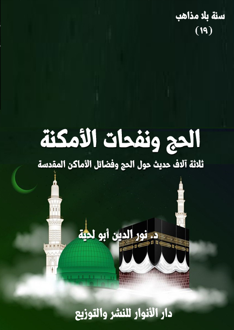

الكتاب الحج ونفحات الأمكنة
الوصف ثلاثة آلاف حديث حول الحج وفضائل الأماكن المقدسة
السلسلة سنة بلا مذاهب
المؤلف د. نور الدين أبو لحية
الناشر دار الأنوار للنشر والتوزيع
الطبعة الأولى، 42 هـ
عدد الصفحات 593
ISBN: 978-620-3-85898-3
لمطالعة الكتاب من تطبيق مؤلفاتي المجاني وهو أحسن وأيسر: هنا

يجمع هذا الكتاب ثلاثة آلاف حديث حول الحج ونفحات الأمكنة وفضلها والأعمال المرتبطة بها، وقد جمعنا بينهما في محل واحد بناء على المفهوم الشرعي للحج، بل اللغوي أيضا؛ فهو يعني قصد محال معينة لإقامة شعائر تعبدية خاصة، ولذلك فإن الحج مرتبط بالمكان، مثل ارتباط الصيام بالزمان.
وقد قسمناه إلى أربعة فصول، كما يلي:
الفصل الأول: تناولنا فيه [الأحكام التكليفية للحج]؛ فذكرنا ما ورد حول فضل الحج ومقاصده.. وما ورد حول حكم الحج والعمرة.. وما ورد حول حكم النيابة في الحج.
الفصل الثاني: تناولنا فيه [كيفية الحج وأحكامها]؛ فذكرنا ما ورد حول أنواع الحج وكيفياتها.. وما ورد حول مواقيت الحج وأحكامها.. وما ورد حول الإحرام وأحكامه.. وما ورد حول الطواف والاستلام.. وما ورد حول السعي بين الصفا والمروة.. وما ورد حول الوقوف بعرفة وما يتعلق به.. وما ورد حول يوم النحر وما بعده.. وما ورد حول أحكام الحلق والتقصير.. وما ورد حول رمي الجمار.. وهي جميعا تشمل كل التفاصيل المتعلقة بكيفية الحج، مع الإجابة عن كل الاستفتاءات والإشكالات المرتبطة بها.
الفصل الثالث: تناولنا فيه [موانع الحج وما يترتب عليها]؛ فذكرنا ما ورد حول موانع الحج.. وما ورد حول كفارات الموانع.. وما ورد حول أحكام الهدي والأضاحي.. وما ورد حول أحكام الصيام بدل الهدي.
الفصل الرابع: تناولنا فيه [الأماكن المباركة وفضل زيارتها]؛ فذكرنا ما ورد حول فضل المساجد وآدابها.. وما ورد حول المساجد المباركة ونفحاتها.. وما ورد حول الأضرحة المباركة وزيارتها.
الحج ونفحات الأمكنة (6)
يجمع هذا الكتاب ثلاثة آلاف حديث حول الحج ونفحات الأمكنة وفضلها والأعمال المرتبطة بها، وقد جمعنا بينهما في محل واحد بناء على المفهوم الشرعي للحج، بل اللغوي أيضا؛ فهو يعني قصد محال معينة لإقامة شعائر تعبدية خاصة، ولذلك فإن الحج مرتبط بالمكان، مثل ارتباط الصيام بالزمان.
وقد اخترنا تسمية الفضائل والأعمال المرتبطة بالأمكنة المقدسة بـ[نفحات الأمكنة] بناء على ما ورد في الحديث من قول رسول الله صلى الله عليه وآله وسلم: (إن لربكم في أيام دهركم نفحات، فتعرضوا لها، لعله أن يصيبكم نفحة منها فلا تشقون بعدها أبدًا) (1)؛ فهو وإن تعرض لنفحات الزمان، يشير إلى نفحات المكان أيضا؛ فالله يختار من الأزمنة والأمكنة ما شاء، كما قال تعالى: ﴿وَرَبُّكَ يَخْلُقُ مَا يَشَاءُ وَيَخْتَارُ مَا كَانَ لَهُمُ الْخِيَرَةُ سُبْحَانَ اللَّهِ وَتَعَالَى عَمَّا يُشْرِكُونَ﴾ [القصص: 68]
ولذلك كان الحج أو زيارة الأماكن المقدسة الخاصة التي وردت في الأحاديث الشريفة، نوعا من العبودية المرتبطة بتعظيم شعائر الله واختياراته، كما قال تعالى: ﴿ذَلِكَ وَمَنْ يُعَظِّمْ شَعَائِرَ اللَّهِ فَإِنَّهَا مِنْ تَقْوَى الْقُلُوبِ﴾ [الحج: 32]
وقال عن الصفا والمروة: ﴿إِنَّ الصَّفَا وَالْمَرْوَةَ مِنْ شَعَائِرِ اللَّهِ فَمَنْ حَجَّ الْبَيْتَ أَوِ اعْتَمَرَ فَلَا جُنَاحَ عَلَيْهِ أَنْ يَطَّوَّفَ بِهِمَا وَمَنْ تَطَوَّعَ خَيْرًا فَإِنَّ اللَّهَ شَاكِرٌ عَلِيمٌ﴾ [البقرة: 158]
وأشار إلى بعض أسرار الاهتمام الخاص بتلك الأماكن المقدسة، فقال: ﴿إِنَّ أَوَّلَ بَيْتٍ وُضِعَ لِلنَّاسِ لَلَّذِي بِبَكَّةَ مُبَارَكًا وَهُدًى لِلْعَالَمِينَ فِيهِ آيَاتٌ بَيِّنَاتٌ مَقَامُ إِبْرَاهِيمَ وَمَنْ دَخَلَهُ
__________
(1) وهو مروي في المصادر السنية والشيعية، رواه الطبراني في الكبير (720)، بحار الأنوار (77/ 168)
الحج ونفحات الأمكنة (7)
كَانَ آمِنًا وَلِلَّهِ عَلَى النَّاسِ حِجُّ الْبَيْتِ مَنِ اسْتَطَاعَ إِلَيْهِ سَبِيلًا وَمَنْ كَفَرَ فَإِنَّ اللَّهَ غَنِيٌّ عَنِ الْعَالَمِينَ﴾ [آل عمران: 96 - 97]
وهو لا يختلف كثيرا عن ذلك التكريم الخاص بنفحات الأزمنة، كما قال تعالى عن ليلة القدر: ﴿إِنَّا أَنْزَلْنَاهُ فِي لَيْلَةٍ مُبَارَكَةٍ إِنَّا كُنَّا مُنْذِرِينَ فِيهَا يُفْرَقُ كُلُّ أَمْرٍ حَكِيمٍ﴾ [الدخان: 3 - 4]
وهو لا يختلف عن التكريم الخاص ببعض خلق الله، الذين تحققت فيهم كل الكمالات المطالبين بها؛ فصاروا من شعائر الله مثل الأزمنة والأمكنة، كما قال تعالى عن رسوله صلى الله عليه وآله وسلم: ﴿لَا تَجْعَلُوا دُعَاءَ الرَّسُولِ بَيْنَكُمْ كَدُعَاءِ بَعْضِكُمْ بَعْضًا قَدْ يَعْلَمُ اللَّهُ الَّذِينَ يَتَسَلَّلُونَ مِنْكُمْ لِوَاذًا فَلْيَحْذَرِ الَّذِينَ يُخَالِفُونَ عَنْ أَمْرِهِ أَنْ تُصِيبَهُمْ فِتْنَةٌ أَوْ يُصِيبَهُمْ عَذَابٌ أَلِيمٌ﴾ [النور: 63]
ولهذا؛ ورد في الأحاديث الكثيرة ارتباط الأمكنة بأحداث تاريخية إيمانية لأشخاص من الصالحين والقديسين والأولياء والرسل.. وكل ذلك لإعادة إحياء ذكراهم في قلوب المؤمنين، ليجعلوهم أسوة لهم.
وبناء على هذا؛ فإن الحج وزيارة الأماكن المقدسة، ليس كما يذكر أصحاب الفهوم المحدودة من أدعياء التنوير الذين يربطون الحج بالوثنية، بل إن الحج ومثله كل الزيارات الخاصة بالأماكن المقدسة، أمر معقول المعنى، وله دور كبير في التربية في جميع مجالاتها.
والتاريخ والواقع خير شاهد على ذلك؛ ففي الحج وغيره كان المسلمون ولا يزالون يلتقون من بقاع وأعراق شتى، ويكون ذلك اللقاء فرصة للتعارف والتعاون وتلاقح الأفكار ونحوها.
أما تلك الممارسات التي قد لا نعقل معناها؛ فقد ورد في الأحاديث ما يشير إلى
الحج ونفحات الأمكنة (8)
أسبابها، وكونها إعادة لإحياء بعض الأحداث التي حصلت للأنبياء والصالحين، ليكون ذلك فرصة للتصحيح والإصلاح والتربية.
بناء على هذا؛ قبلنا في هذا الكتاب معظم ما ورد من أحاديث في المصادر السنية والشيعية، باعتبارها تبين الأحكام والتفاصيل المرتبطة بالشعائر التعبدية الخاصة بالحج والعمرة والزيارة ونحوها.
وقد قسمناه إلى أربعة فصول، كما يلي:
الفصل الأول: تناولنا فيه [الأحكام التكليفية للحج]؛ فذكرنا ما ورد حول فضل الحج ومقاصده.. وما ورد حول حكم الحج والعمرة.. وما ورد حول حكم النيابة في الحج.
الفصل الثاني: تناولنا فيه [كيفية الحج وأحكامها]؛ فذكرنا ما ورد حول أنواع الحج وكيفياتها.. وما ورد حول مواقيت الحج وأحكامها.. وما ورد حول الإحرام وأحكامه.. وما ورد حول الطواف والاستلام.. وما ورد حول السعي بين الصفا والمروة.. وما ورد حول الوقوف بعرفة وما يتعلق به.. وما ورد حول يوم النحر وما بعده.. وما ورد حول أحكام الحلق والتقصير.. وما ورد حول رمي الجمار.. وهي جميعا تشمل كل التفاصيل المتعلقة بكيفية الحج، مع الإجابة عن كل الاستفتاءات والإشكالات المرتبطة بها.
الفصل الثالث: تناولنا فيه [موانع الحج وما يترتب عليها]؛ فذكرنا ما ورد حول موانع الحج.. وما ورد حول كفارات الموانع.. وما ورد حول أحكام الهدي والأضاحي.. وما ورد حول أحكام الصيام بدل الهدي.
الفصل الرابع: تناولنا فيه [الأماكن المباركة وفضل زيارتها]؛ فذكرنا ما ورد حول فضل المساجد وآدابها.. وما ورد حول المساجد المباركة ونفحاتها.. وما ورد حول الأضرحة المباركة وزيارتها.
الحج ونفحات الأمكنة (9)
وننبه إلى أن أحكام الحج، مثل سائر الأحكام المرتبطة بالشعائر التعبدية، قائمة على التيسير ورفع الحرج، كما قال تعالى في الآية التي توجبه: ﴿وَلِلَّهِ عَلَى النَّاسِ حِجُّ الْبَيْتِ مَنِ اسْتَطَاعَ إِلَيْهِ سَبِيلًا﴾ [آل عمران: 97]
ولهذا؛ لم نرجح بين الأحاديث والروايات التي قد تبدو متعارضة، وإنما اعتبرنا بعضها أصلا، وبعضها نوعا من رفع الحرج، أو اعتبرناها مثلما ذكرنا في الكتب السابقة نوعا من مراعاة مراتب المتعبدين وظروفهم؛ حتى لا يكون الحرج سببا لنفورهم.
وقد أشار الإمام الصادق إلى هذا الأساس المهم؛ فقال: (ما كلف الله العباد إلا ما يطيقون إنما كلفهم في اليوم والليلة خمس صلوات.. وكلفهم حجة واحدة وهم يطيقون أكثر من ذلك) (1)
ومثله قال الإمام الرضا في اعتبار رفع الحرج، ومراعاة المراتب: (إنما أمروا بحجة واحدة لا أكثر من ذلك، لأن الله وضع الفرائض على أدنى القوة، كما قال: ﴿فَمَا اسْتَيْسَرَ مِنَ الْهَدْيِ﴾ [البقرة: 196] يعني شاة، ليسع القوي والضعيف، وكذلك سائر الفرائض إنما وضعت على أدنى القوم قوة، فكان من تلك الفرائض الحج المفروض واحدا، ثم رغب بعد أهل القوة بقدر طاقتهم) (2)
ومثل ذلك اهتممنا كثيرا بالأحاديث التي تذكر علل الحج ومقاصد أحكامه وفروعه، باعتبارها نوعا من البيان التفصيلي لما ورد في القرآن الكريم بشأنه، ومن الأمثلة عنها قول الإمام الصادق ـ جوابا لمن سأله عن العلة التي من أجلها كلف الله العباد الحج والطواف بالبيت ـ: (إن الله خلق الخلق.. وأمرهم بما يكون من أمر الطاعة في الدين،
__________
(1) المحاسن: 296/ 465.
(2) علل الشرائع: 273، وعيون أخبار الإمام الرضا: 2/ 90.
الحج ونفحات الأمكنة (10)
ومصلحتهم من أمر دنياهم، فجعل فيه الاجتماع من الشرق والغرب ليتعارفوا، ولينزع كل قوم من التجارات من بلد إلى بلد، ولينتفع بذلك المكاري والجمال، ولتعرف آثار رسول الله صلى الله عليه وآله وسلم وتعرف أخباره، ويذكر ولا ينسى، ولو كان كل قوم إنما يتكلون على بلادهم وما فيها هلكوا وخربت البلاد، وسقطت الجلب والأرباح، وعميت الأخبار، ولم تقفوا على ذلك، فذلك علة الحج) (1)
ومثله قال الإمام الرضا: (إنما أمروا بالحج لعلة الوفادة إلى الله عز وجل وطلب الزيادة، والخروج من كل ما اقترف العبد تائبا مما مضى، مستأنفا لما يستقبل، مع ما فيه من إخراج الأموال، وتعب الأبدان، والاشتغال عن الأهل والولد، وحظر النفس عن اللذات شاخصا في الحر والبرد، ثابتا على ذلك دائما، مع الخضوع والاستكانة والتذلل، مع ما في ذلك لجميع الخلق من المنافع لجميع من في شرق الأرض وغربها، ومن في البر والبحر، ممن يحج وممن لم يحج، من بين تاجر وجالب وبائع ومشترٍ وكاسب ومسكين ومكار وفقير، وقضاء حوائج أهل الاطراف في المواضع الممكن لهم الاجتماع فيه، مع ما فيه من التفقه ونقل أخبار الأئمة إلى كل صقع وناحية، كما قال الله عز وجل: ﴿وَمَا كَانَ الْمُؤْمِنُونَ لِيَنْفِرُوا كَافَّةً فَلَوْلَا نَفَرَ مِنْ كُلِّ فِرْقَةٍ مِنْهُمْ طَائِفَةٌ لِيَتَفَقَّهُوا فِي الدِّينِ وَلِيُنْذِرُوا قَوْمَهُمْ إِذَا رَجَعُوا إِلَيْهِمْ لَعَلَّهُمْ يَحْذَرُونَ﴾ [التوبة: 122] و﴿لِيَشْهَدُوا مَنَافِعَ لَهُمْ وَيَذْكُرُوا اسْمَ اللَّهِ فِي أَيَّامٍ مَعْلُومَاتٍ﴾ [الحج: 28]) (2)
وقبل ذلك، قال الإمام علي في خطبة له: (فرض عليكم حج بيته الذي جعله قبلة للأنام، يردونه ورود الأنعام، ويألهون إليه ولوه الحمام، جعله سبحانه علامة لتواضعهم
__________
(1) علل الشرائع: 405/ 6.
(2) علل الشرائع: 273، وعيون أخبار الإمام الرضا: 2/ 119.
الحج ونفحات الأمكنة (11)
لعظمته، وإذعانهم لعزته، واختار من خلقه سماعا أجابوا إليه دعوته، وصدقوا كلمته، ووقفوا مواقف أنبيائه، وتشبهوا بملائكته المطيفين بعرشه، يحرزون الأرباح في متجر عبادته، ويتبادرون عنده موعد مغفرته، جعله سبحانه للإسلام علما، وللعائذين حرما، فرض حجه وأوجب حقه، وكتب عليكم وفادته، فقال سبحانه: ﴿وَلِلَّهِ عَلَى النَّاسِ حِجُّ الْبَيْتِ مَنِ اسْتَطَاعَ إِلَيْهِ سَبِيلًا وَمَنْ كَفَرَ فإن اللَّهَ غَنِيٌّ عَنِ الْعَالَمِينَ﴾ [آل عمران: 97]) (1)
وغيرها من الأحاديث التي لا يقتصر معناها على ما ذكروه من الأمثلة المتناسبة مع عصورهم، وإنما تشمل كل مناحي الحياة السياسية والاقتصادية وغيرها، بالإضافة للنواحي الروحية والتربوية والاجتماعية.
ومما يبين مدى مراعاة أئمة الهدى لرفع الحرج في الحج، وردهم على بعض الفقهاء المتشددين في شأنه، ما روي عن الإمام الصادق أنه سئل عن قول الله عز وجل: ﴿وَلِلَّهِ عَلَى النَّاسِ حِجُّ الْبَيْتِ مَنِ اسْتَطَاعَ إِلَيْهِ سَبِيلًا﴾ [آل عمران: 97]، فقال ما يقول الناس؟ قيل: الزاد والراحلة، قال: قد سئل الإمام الباقر عن هذا؟ فقال: (هلك الناس إذاً، لئن كان من كان له زاد وراحلة قدر ما يقوت عياله ويستغني به عن الناس ينطلق إليهم فيسلبهم إياه لقد هلكوا إذاً، فقيل له: فما السبيل؟ فقال: السعة في المال إذا كان يحج ببعض ويبقي بعضا لقوت عياله، أليس قد فرض الله الزكاة فلم يجعلها إلاّ على من يملك مائتي درهم؟) (2)
ومثله ما روي عن أبي أيوب الخزاز، قال: كنت عند الإمام الصادق فدخل عليه رجل ليلاً، فقال له: أصلحك الله، امرأة معنا حاضت ولم تطف طواف النساء، فقال: لقد سئلت عن هذه المسألة اليوم، فقال: أصلحك الله أنا زوجها وقد أحببت أن أسمع ذلك
__________
(1) نهج البلاغة: 1/ 21.
(2) الكافي: 4/ 267/3.
الحج ونفحات الأمكنة (12)
منك، فأطرق كأنه يناجي نفسه وهو يقول: لا يقيم عليها جمالها، ولا تستطيع أن تتخلف عن أصحابها، تمضي وقد تم حجها (1).
وهو يدل على أن الإمام الصادق راعى ظرف ذلك المرأة الخاص، وأنه من الحرج الشديد عليها وعلى من معها، أن ينتظروها، أو يتركوها.
ومثله ما روي عنه أنه قيل له: إن صاحبيّ هذين جهلا أن يقفا بالمزدلفة، فقال: يرجعان مكانهما فيقفان بالمشعر ساعة، قيل: فإنه لم يخبرهما أحد حتى كان اليوم وقد نفر الناس، فنكس رأسه ساعة، ثم قال: أليسا قد صليا الغداة بالمزدلفة؟ قيل: بلى، قال: أليس قد قنتا في صلاتهما؟ قيل: بلى، قال: تم حجهما، ثم قال: والمشعر من المزدلفة، والمزدلفة من المشعر، وإنما يكفيهما اليسير من الدعاء (2).
فهذه الرواية تبين مدى اهتمام الإمام الصادق ـ ومثله كل أئمة الهدى ـ بظروف الناس المختلفة، والتماس الأعذار لهم، لتصحيح حجهم.
والأمثلة عن ذلك كثيرة، وهي موجودة في الكتاب بكثرة، وهي كلها مستمدة من هدي النبوة، فعن أسامة بن شريك، قال: خرجت مع رسول الله صلى الله عليه وآله وسلم حاجا، فكان الناس يأتونه فمن قائل: يا رسول الله، سعيت قبل أن أطوف وأخرت شيئا، أو قدمت شيئا، فكان يقول: لا حرج إلا على رجل اقترض عرض رجل مسلم، وهو ظالمٌ فذلك الذي حرج وهلك (3).
وهكذا نرى في تلك الروايات ما سميناه [المذاهبية]، أو [الإفتاء بالأقوال المختلفة ليختار المستفتي ما يتناسب مع حاله منها]، ومن الأمثلة عنها ما روي عن علي بن أبي حمزة
__________
(1) الكافي: 4/ 451/5.
(2) الكافي: 4/ 472/2.
(3) أبو داود (2015)
الحج ونفحات الأمكنة (13)
قال: سألت الإمام الكاظم عن الرجل يطوف ويقرن بين أسبوعين، فقال إن شئت رويت لك عن أهل مكة، فقلت: لا والله مالي في ذلك من حاجة جعلت فداك، ولكن ارو لي ما أدين الله عزّ وجلّ به، فقال: لا تقرن بين أسبوعين، كلما طفت أسبوعا فصل ركعتين، وأما أنا فربما قرنت الثلاثة والأربعة فنظرت إليه، فقال: إني مع هؤلاء (1).
وغيرها من الأمثلة الكثيرة، التي لو طبقناها، لزال التعارض بين الأحاديث والروايات، باعتبارها جميعا تمثل أحكام الشريعة في صورها المختلفة، والتي تنطلق من الورع والاحتياط والتشدد، وتنزل بعدها إلى اليسر والرخصة ورفع الحرج.
__________
(1) الكافي: 4/ 418/2، والتهذيب: 5/ 115/374، والاستبصار: 2/ 220/759.
الحج ونفحات الأمكنة (14)
جمعنا في هذا الفصل ما نراه متوافقا مع القرآن الكريم من الأحاديث الواردة حول الأحكام التكليفية للحج، باعتبارها المقدمة الأساسية لكل أحكامه، وقد تعرضنا فيه لثلاثة معان كبرى:
أولها ـ ما ورد حول فضل الحج ومقاصده: باعتبارها من الأحاديث التي تساعد على تحقيق النيات الصادقة والدوافع المخلصة للقيام بالشعائر التعبدية المرتطبة بالحج والعمرة، بالإضافة إلى الشروط المتعلقة بمن يريد أن يحج أو يعتمر، ليوفر لنفسه الأهلية الأخلاقية لها.. ولهذا لا نرى اقتصار شروط الحج على الاستطاعة المالية، بل الاستطاعة الأخلاقية لها دورها أيضا، حتى لا يكتفي المكلفون بالحج بالاستعداد المالي، بل يضيفون إليه الاستعداد الروحي والأخلاقي.
ثانيها ـ ما ورد حول حكم الحج والعمرة: وبيان شروط التكليف الخاصة بهما، وحدود الاستطاعة وأنواعها، وقد ذكرنا فيه من الأحاديث ما قد يبدو متعارضا، مع أنه في الحقيقة ليس كذلك، وإنما يشير إلى الأحوال والظروف المختلفة، سواء تلك التي ترتبط بالحج نفسه، باعتباره شريعة تحتاج إلى من يهتم بها ويحافظ عليها، أو بالحجاج والمعتمرين.
ثالثها ـ ما ورد حول حكم النيابة في الحج: وهي من الأحكام التي تبين رحمة الله تعالى بعباده في توفير الفرص المختلفة لمن فاته أداء تلك الفرائض، بالإضافة إلى كونها مما يعمق الصلات الاجتماعية بين المؤمنين.
الحج ونفحات الأمكنة (15)
أولا ـ ما ورد حول فضل الحج ومقاصده
نتناول في هذا المبحث ما ورد من الأحاديث في المصادر السنية والشيعية حول فضل الحج والعلل والحكم المقصودة منه، وقد قبلنا أكثر ما ورد في ذلك، حتى تلك الأحاديث التي تبين فضل الحج على الكثير من الأعمال الصالحة، مثلما روي عن الإمام الصادق أنه قال: (حجة خير من بيت مملوء ذهبا يتصدق به حتى يفنى) (1).. وقوله: (من أنفق درهما في الحج كان خيرا من مائة ألف درهم ينفقها في حق) (2).. ومثلها ما ورد من جواز القرض لأجل حج النافلة.
وغيرها من الأحاديث التي عقبنا عليها بهذه العبارة [وهذا الحديث وأمثاله يقصد به حجة الإسلام، أو خشية تعطيله من الأمة جميعا]
ولذلك؛ فإن قبولها ليس على أساس اعتبارها حكما عاما، وإنما هو مرتبط بأحوال خاصة يُخشى فيها من تضييع هذه الفريضة، بحجة كون النفقات والصدقات أفضل منها.
لكن في الحالة العادية، مثلما هو الحال الآن، وبالنسبة للذي حج سابقا؛ فإن الأولوية لسائر أعمال الخير، مثلما تدل على ذلك سائر الأحاديث، بالإضافة إلى أن ذلك يوفر الفرصة لمن لم يتمكن من أداء حجة الإسلام مع توفر الاستطاعة والأهلية.
وننبه كذلك إلا أنا لم نذكر بعض الأحاديث التي نرى غرابتها ومنافاتها لما ورد في القرآن الكريم من شرائع ومقاصد، ومن الأمثلة على ذلك ما ينسب للإمام الصادق أنه قال: (إذا كان أيام الموسم بعث الله عز وجل ملائكة في صورة الآدميين يشترون متاع الحاج
__________
(1) الكافي: 4/ 260/32.
(2) من لا يحضره الفقيه: 2/ 145/637.
الحج ونفحات الأمكنة (16)
والتجار)، قيل: فما يصنعون به؟ قال: (يلقونه في البحر) (1)
ومثله ما روي أنه لا تكتب للحاج الذنوب بعد حجة لفترة أربعة أشهر، وقد عللوا ذلك بما رووه عن الإمام الكاظم أنه سئل: لأيّ شيء صار الحاج لا تكتب عليه الذنوب أربعة أشهر؟ فقال: (إن الله أباح للمشركين الحرم في أربعة أشهر إذ يقول: ﴿فَسِيحُوا فِي الْأَرْضِ أَرْبَعَةَ أَشْهُرٍ وَاعْلَمُوا أَنَّكُمْ غَيْرُ مُعْجِزِي اللَّهِ وَأَنَّ اللَّهَ مُخْزِي الْكَافِرِينَ﴾ [التوبة: 2]، ثم وهب لمن حج من المؤمنين البيت الذنوب أربعة أشهر) (2)
ومثل ذلك ما روي من الأحاديث التي تجوز الحج بالمال الحرام، بل تشجع عليه، مع أن حج المال الحرام هو إرجاعه لأصحابه، ومن الأمثلة على ذلك ما ينسب للإمام الرضا أنه قال: (من حج بثلاثة من المؤمنين فقد اشترى نفسه من الله عز وجل بالثمن، ولم يسأله من أين اكتسب ماله من حلال أو حرام) (3)
ومثله ما ينسب للإمام الصادق، أنه قال: (لما حج موسى عليه السلام نزل عليه جبريل عليه السلام، فقال له موسى عليه السلام: يا جبريل، ما لمن حج هذا البيت بلا نية صادقة ولا نفقة طيبة؟ فقال: لا أدري حتى أرجع إلى ربي عز وجل فلما رجع قال الله عز وجل: يا جبريل، ما قال لك موسى، وهو أعلم بما قال، قال: يا رب قال لي: ما لمن حج هذا البيت بلا نية صادقة ولا نفقة طيبة، قال الله عز وجل: ارجع إليه وقل له: أهب له حقي وأرضي عليه خلقي، قال: يا جبريل، ما لمن حج هذا البيت بنية صادقة ونفقة طيبة قال: فرجع إلى الله عز وجل فأوحى الله تعالى إليه: قل له: أجعله في الرفيق الأعلى مع النبيين
__________
(1) الكافي: 4/ 547/36.
(2) الكافي: 4/ 255/10.
(3) الخصال: 118/ 103، وعيون أخبار الإمام الرضا: 1/ 257/12.
الحج ونفحات الأمكنة (17)
والصديقين والشهداء والصالحين وحسن أولئك رفيقا (1).
ومثل ذلك ما روي من المبالغات في الأجور المرتبطة بأعمال الحج، والتي تتنافى مع غيرها من الأحاديث الكثيرة الصحيحة، ومن الأمثلة عنها ما ينسب لرسول الله صلى الله عليه وآله وسلم أنه قال: (من خرج حاجّاً أو معتمرا فله بكل خطوة حتى يرجع مائة ألف ألف حسنة، ويُمحا عنه ألف ألف سيئة، ويرفع له ألف ألف درجة، وكان له عند الله بكل درهم ألف ألف درهم، وبكل دينار ألف ألف دينار، وبكل حسنة عملها في وجهه ذلك ألف ألف حسنة حتى يرجع، وكان في ضمان الله إن توفاه أدخله الجنة وإن رجع رجع مغفورا له، مستجابا له، فاغتنموا دعوته، فإن الله لا يرد دعاءه إذا قدم فإنه يشفع في مائة ألف رجل يوم القيامة، ومن خلف حاجّاً أو معتمرا في أهله بخير بعده كان له مثل أجره كاملاً من غير أن ينقص من أجره شيء) (2)
1 ـ ما ورد في الأحاديث النبوية
من الأحاديث الواردة في هذا الباب في المصادر السنية والشيعية:
[الحديث: 1] عن عائشة، قالت: قلت: يا رسول الله، نرى الجهاد أفضل الأعمال، أفلا نجاهد؟ قال: لا، لكن أفضل الجهاد وأجمله حجٌ مبرورٌ، ثم لزوم الحصر (3).
[الحديث: 2] قال رسول الله صلى الله عليه وآله وسلم: تابعوا بين الحج والعمرة، فإنهما ينفيان الذنوب كما ينفي الكير خبث الحديد والذهب والفضة، وليس للحجة المبرورة ثوابٌ إلا الجنة، وما من مؤمن يظل يومه محرما إلا غابت الشمس بذنوبه (4).
__________
(1) من لا يحضره الفقيه: 2/ 152/664.
(2) عقاب الاعمال: 73/ 15.
(3) البخاري (2784)
(4) الترمذي (810)
الحج ونفحات الأمكنة (18)
[الحديث: 3] قال رسول الله صلى الله عليه وآله وسلم: تابعوا بين الحج والعمرة، فإنهما ينفيان الفقر والذنوب (1).
[الحديث: 4] قال رسول الله صلى الله عليه وآله وسلم: تابعوا بين الحج والعمرة، فإن متابعة ما بينهما تزيد في العمر والرزق وتنفيان الفقر والذنوب كما ينفي الكير خبث الحديد (2).
[الحديث: 5] قال رسول الله صلى الله عليه وآله وسلم: ما من مسلم يلبي إلا لبى ما على يمينه وشماله من حجر، أو شجر، أو مدر، حتى تنقطع الأرض من هاهنا وهاهنا (3).
[الحديث: 6] قال رسول الله صلى الله عليه وآله وسلم: العمرة إلى العمرة كفارةٌ لما بينهما، والحج المبرور ليس له جزاءٌ إلا الجنة (4).
[الحديث: 7] قال رسول الله صلى الله عليه وآله وسلم: من حج لله فلم يرفث ولم يفسق، رجع كيوم ولدته أمه (5).
[الحديث: 8] قال رسول الله صلى الله عليه وآله وسلم: من أهل بحجة أو عمرة من المسجد الأقصى إلى المسجد الحرام، غفر له ما تقدم من ذنبه وما تأخر، أو وجبت له الجنة (6).
[الحديث: 9] قال رسول الله صلى الله عليه وآله وسلم: ما أمعر حاجٌ قط، قيل لجابر: ما الإمعار؟ قال: ما افتقر (7).
[الحديث: 10] قال رسول الله صلى الله عليه وآله وسلم: من خرج حاجا فمات كتب له أجر الحاج إلى يوم القيامة، ومن خرج غازيا فمات كتب له أجر الغازي (8).
__________
(1) البزار كما في (كشف الأستار) (1147)
(2) مجمع الزوائد: 3/ 277، الطبراني في الكبير.
(3) الترمذي (828) وابن ماجة (292)
(4) البخاري (1773)، ومسلم (1349)
(5) البخاري (1521)، ومسلم (1350)
(6) أبو داود (1741) وابن ماجة (3002)
(7) الطبراني في الأوسط: 5/ 245 (5213)
(8) الطبراني في الأوسط: 5/ 282 (5321)
الحج ونفحات الأمكنة (19)
[الحديث: 11] قال رسول الله صلى الله عليه وآله وسلم: يغفر للحاج ولمن استغفر له الحاج (1).
[الحديث: 12] قال رسول الله صلى الله عليه وآله وسلم لامرأة من الأنصار، يقال لها أم سنان: ما منعك أن تكوني حججت معنا؟ قالت: ناضحان كانا لأبي فلان ـ زوجها ـ حج هو وابنه على أحدهما، وكان الآخر يسقي أرضا لنا قال: فعمرةٌ في رمضان تقضي حجة أو حجة معي (2).
[الحديث: 13] قال رسول الله صلى الله عليه وآله وسلم: جهاد الكبير والصغير والضعيف، والمرأة الحج والعمرة (3).
[الحديث: 14] قال رسول الله صلى الله عليه وآله وسلم: الحجاج والعمار وفد الله، إن دعوه أجابهم، وإن استغفروه غفر لهم (4).
[الحديث: 15] عن ابن عمر: أن النبي صلى الله عليه وآله وسلم أتاه في مسجد منى، رجلٌ من الأنصار ورجلٌ من ثقيف فقالا: يا رسول الله جئنا نسألك، فقال: إن شئتما أخبرتكما بما جئتما تسألاني عنه، وإن شئتما أمسك وتسألاني؟ فقالا: أخبرنا يا رسول الله، فقال للأنصاري: جئتني تسألني عن مخرجك من بيتك تؤم البيت الحرام وما لك فيه، وعن ركعتيك بعد الطواف وما لك فيهما، وعن طوافك بين الصفا والمروة وما لك فيه، وعن وقوفك عشية عرفة وما لك فيه، وعن رميك الجمار وما لك فيه، وعن نحرك وما لك فيه، وعن حلقك رأسك وما لك فيه، وعن طوافك بالبيت بعد ذلك وما لك فيه، فقال: والذى بعثك بالحق عن هذا جئت أسألك، قال: فإنك إذا خرجت من بيتك تؤم البيت الحرام لا تضع ناقتك خفا ولا ترفعه إلا كتب الله لك به حسنة ومحا عنك خطيئة، وأما ركعتاك بعد الطواف كعتق رقبة من بنى إسماعيل، وأما طوافك بالصفا والمروة كعتق سبعين رقبة، وأما وقوفك عشية عرفة فإن
__________
(1) البزار كما في (كشف الأستار) (1155)
(2) البخاري (1782)، ومسلم (1256)
(3) النسائي 5/ 113..
(4) ابن ماجه (2892)
الحج ونفحات الأمكنة (20)
الله تعالى يباهى بكم الملائكة، يقول: عبادي جاؤوني شعثا غبرا من كل فج عميق يرجون جنتي فلو كانت ذنوبكم كعدد الرمل، أو كقطر المطر، أو كزبد البحر لغفرتها، أفيضوا عبادي مغفورا لكم ولمن شفعتم له، وأما رميك الجمار فلك بكل حصاة رميتها تكفير كبيرة من الموبقات، وأما نحرك فمذخورٌ لك عند ربك، وأما حلاقك رأسك فلك بكل شعرة حلقتها حسنةٌ وتمحي عنك بها خطيئةٌ، وأما طوافك بالبيت بعد ذلك فإنك تطوف ولا ذنب لك، يأتي ملكٌ حتى يضع يديه بين كتفيك فيقول: اعمل فيما يستقبل فقد غفر لك كل ما مضى (1).
[الحديث: 16] عن جابر، أن النبي صلى الله عليه وآله وسلم حج ثلاث حجج؛ حجتين قبل أن يهاجر، وحجة بعد ما هاجر معها عمرةٌ، فساق ثلاثة وستين بدنة، وجاء عليٌ من اليمن ببقيتها فيها جملٌ لأبي جهل في أنفه برةٌ من فضة فنحرها، فأمر رسول الله صلى الله عليه وآله وسلم من كل بدنة ببضعة فطبخت وشرب من مرقتها (2).
[الحديث: 17] عن أنس، أن رسول الله صلى الله عليه وآله وسلم اعتمر أربع عمر كلها في ذي القعدة، إلا التي مع حجته عمرة الحديبية أو زمن الحديبية في ذي القعدة، وعمرة من العام المقبل في ذي القعدة، وعمرة من جعرانة حيث قسم غنائم حنين في ذي القعدة، وعمرة في حجته (3).
[الحديث: 18] عن محرش الكعبي، أن رسول الله صلى الله عليه وآله وسلم خرج من الجعرانة ليلا معتمرا، فدخل مكة ليلا فقضى عمرته، ثم خرج من ليلته فأصبح بالجعرانة كبائت، فلما زالت الشمس من الغد خرج في بطن سرف حتى جامع الطريق طريق جمع ببطن سرف،
__________
(1) البزار كما في (كشف الأستار) (1083) والطبراني في (الأحاديث الطوال) (61)
(2) الترمذي (815)
(3) البخاري (1778)، ومسلم (1253)
الحج ونفحات الأمكنة (21)
فمن أجل ذلك خفيت عمرته على الناس (1).
[الحديث: 19] عن محرش الكعبي، قال: دخل النبي صلى الله عليه وآله وسلم الجعرانة فجاء إلى المسجد، فركع في المسجد ما شاء الله، ثم أحرم ثم استوى على راحلته فاستقبل بطن سرف، حتى أتى طريق المدينة فأصبح بمكة كبائت (2).
[الحديث: 20] عن عروة، أن رسول الله صلى الله عليه وآله وسلم لم يعتمر إلا ثلاث عمر، إحداهن في شوال، وثنتان في ذي القعدة (3).
[الحديث: 21] عن عائشة، قالت: اعتمر صلى الله عليه وآله وسلم عمرتين، عمرة في ذي القعدة، وعمرة في شوال (4).
[الحديث: 22] قيل لرسول الله صلى الله عليه وآله وسلم: يا رسول الله، ألا نبني لك بمنى بناء يظلك من الشمس؟ فقال: لا إنما هو مناخ لمن سبق إليه (5).
[الحديث: 23] قال رسول الله صلى الله عليه وآله وسلم: حجوا تستغنوا (6).
[الحديث: 24] قال رسول الله صلى الله عليه وآله وسلم: الحجة ثوابها الجنة، والعمرة كفارة لكل ذنب (7).
[الحديث: 25] قال رسول الله صلى الله عليه وآله وسلم: الحج جهاد الضعيف (8).
[الحديث: 26] قال رسول الله صلى الله عليه وآله وسلم: الحاج ثلاثة: فأفضلهم نصيبا رجل غفر له ذنبه ما تقدم منه وما تأخر (9)، ووقاه الله عذاب القبر، وأما الذي يليه فرجل غفر له ذنبه ما تقدم
__________
(1) الترمذي (935) والنسائي 5/ 199.
(2) أبو داود (1996)،والدارمي (1861)
(3) مالك (773)
(4) أبو داود (1991)
(5) أبو داود (2019)، والترمذي (881)
(6) الفقيه: 2/ 173/764.
(7) الكافي: 4/ 253/4.
(8) الكافي: 4/ 259/28.
(9) قد يراد بهذا الحفظ الإلهي لا رفع التكليف عنه وإباحة كل المعاصي له؛ فذلك غير مراد طبعا.
الحج ونفحات الأمكنة (22)
منه، ويستأنف العمل فيما بقي من عمره، وأما الذي يليه فرجل حفظ في أهله وماله (1).
[الحديث: 27] قال رسول الله صلى الله عليه وآله وسلم: كل نعيم مسئول عنه صاحبه إلا ما كان في غزو أو حج (2).
[الحديث: 28] قال رسول الله صلى الله عليه وآله وسلم: الحج والعمرة ينفيان الفقر والذنوب كما ينفي الكير خبث الحديد (3).
[الحديث: 29] عن الإمام الصادق، أن رسول الله صلى الله عليه وآله وسلم لقيه أعرابي فقال له: يا رسول الله، إني خرجت أريد الحج ففاتني وأنا رجل مميل، فمرني أن أصنع في مالي ما أبلغ به مثل أجر الحاج، فالتفت إليه رسول الله صلى الله عليه وآله وسلم فقال: انظر إلى أبي قبيس فلو أن أبا قبيس لك ذهبة حمراء أنفقته في سبيل الله ما بلغت ما يبلغ الحاج، ثم قال: إن الحاج إذا أخذ في جهازه لم يرفع شيئا ولم يضعه إلا كتب الله له عشر حسنات، ومحا عنه عشر سيئات، ورفع له عشر درجات، فإذا ركب بعيره لم يرفع خفا ولم يضعه إلا كتب الله له مثل ذلك، فإذا طاف بالبيت خرج من ذنوبه، فإذا سعى بين الصفا والمروة خرج من ذنوبه، فإذا وقف بعرفات خرج من ذنوبه، فإذا وقف بالمشعر الحرام خرج من ذنوبه، فإذا رمى الجمار خرج من ذنوبه، فعد رسول الله صلى الله عليه وآله وسلم كذا وكذا موقفا إذا وقفها الحاج خرج من ذنوبه، ثم قال: أنى لك أن تبلغ ما يبلغ الحاج (4).
[الحديث: 30] قال رسول الله صلى الله عليه وآله وسلم: تابعوا بين الحج والعمرة، فإنهما ينفيان الفقر والذنوب كما ينفي الكير خبث الحديد (5).
__________
(1) الكافي: 4/ 262/39.
(2) من لا يحضره الفقيه: 2/ 142/621.
(3) التهذيب: 5/ 21/60.
(4) التهذيب: 5/ 19/56.
(5) الكافي: 4/ 255/12.
الحج ونفحات الأمكنة (23)
[الحديث: 31] قال الإمام الباقر: لم يحج رسول الله صلى الله عليه وآله وسلم بعد قدوم المدينة إلا واحدة وقد حج بمكة مع قومه حجات (1).
[الحديث: 32] قيل للإمام الصادق: أحج رسول الله صلى الله عليه وآله وسلم غير حجة الوداع؟ قال: نعم، عشرين حجة (2).
[الحديث: 33] قال رسول الله صلى الله عليه وآله وسلم: لا يحالف الفقر والحمى مدمن الحج والعمرة (3).
[الحديث: 34] قال رسول الله صلى الله عليه وآله وسلم: من أراد الدنيا والآخرة فليؤم هذا البيت، ومن رجع من مكة وهو ينوي الحج من قابل زيد في عمره، ومن خرج من مكة ولا ينوي العود إليها فقد قرب أجله، ودنا عذابه (4).
[الحديث: 35] قال الإمام الباقر: جاء رجل من الأنصار إلى رسول الله صلى الله عليه وآله وسلم يسأله فقال له رسول الله صلى الله عليه وآله وسلم: إن شئت فاسأل، وإن شئت أخبرك عما جئت تسألني عنه، فقال: أخبرني يا رسول الله، فقال: جئت تسألني مالك في حجتك وعمرتك؛ وإن لك إذا توجهت إلى سبيل الحج ثم ركبت راحلتك ثم قلت: بسم الله والحمد لله، ثم مضت راحلتك لم تضع خفا ولم ترفع خفا إلاّ كتب لك حسنة، ومحى عنك سيئة فإذا أحرمت ولبيت كان لك بكل تلبية لبيتها عشر حسنات ومحي عنك عشر سيئات، فإذا طفت بالبيت الحرام أسبوعا كان لك بذلك عند الله عهد وذخر يستحيي أن يعذبك بعده أبدا (5).
__________
(1) الكافي: 4/ 244/1، والتهذيب: 5/ 443/1543.
(2) الكافي: 4/ 251/11.
(3) الكافي: 4/ 254/8.
(4) من لا يحضره الفقيه: 2/ 141/614.
(5) التهذيب: 5/ 20/57.
الحج ونفحات الأمكنة (24)
وقد قسمناها بحسب من وردت عنهم إلى الأقسام التالية:
[الحديث: 36] قال الإمام علي في خطبة له: فرض عليكم حج بيته الذي جعله قبلة للأنام، يردونه ورود الأنعام، ويألهون إليه ولوه الحمام، جعله سبحانه علامة لتواضعهم لعظمته، وإذعانهم لعزته، واختار من خلقه سماعا أجابوا إليه دعوته، وصدقوا كلمته، ووقفوا مواقف أنبيائه، وتشبهوا بملائكته المطيفين بعرشه، يحرزون الأرباح في متجر عبادته، ويتبادرون عنده موعد مغفرته، جعله سبحانه للإسلام علما، وللعائذين حرما، فرض حجه وأوجب حقه، وكتب عليكم وفادته، فقال سبحانه: ﴿وَلِلَّهِ عَلَى النَّاسِ حِجُّ الْبَيْتِ مَنِ اسْتَطَاعَ إِلَيْهِ سَبِيلًا وَمَنْ كَفَرَ فإن اللَّهَ غَنِيٌّ عَنِ الْعَالَمِينَ﴾ [آل عمران: 97] (1).
[الحديث: 37] قال الإمام علي: ضمنت لستة الجنة: رجل خرج بصدقة فمات فله الجنة، ورجل خرج يعود مريضا فمات فله الجنة، ورجل خرج مجاهدا في سبيل الله فمات فله الجنة، ورجل خرج حاجّاً فمات فله الجنة، ورجل خرج للجمعة فمات فله الجنة، ورجل خرج في جنازة رجل مسلم فمات فله الجنة (2).
[الحديث: 38] قال الإمام الحسين: لما حضرت الحسن بن علي الوفاة بكى، فقيل له: يا ابن رسول الله صلى الله عليه وآله وسلم أتبكي ومكانك من رسول الله صلى الله عليه وآله وسلم الذي أنت به وقد قال فيك رسول الله صلى الله عليه وآله وسلم ما قال؟ وقد حججت عشرين حجة ماشيا، وقد قاسمت ربك مالك ثلاث مرات حتى النعل والنعل فقال: إنما أبكي لخصلتين: هول المطلع، وفراق الأحبة (3).
__________
(1) نهج البلاغة: 1/ 21.
(2) من لا يحضره الفقيه: 1/ 84/387.
(3) أمالي الصدوق: 184/ 9.
الحج ونفحات الأمكنة (25)
[الحديث: 39] قال الإمام السجاد: حجوا واعتمروا تصح أبدانكم، وتتسع أرزاقكم، وتكفون مؤونات عيالاتكم (1).
[الحديث: 40] قال الإمام السجاد: الحاج مغفور له، وموجوب له الجنة، ومستأنف له العمل، ومحفوظ في أهله وماله (2).
[الحديث: 41] عن أبي حمزة الثمالي قال: قال رجل لعلي بن الحسين (الإمام السجاد): تركت الجهاد وخشونته ولزمت الحج ولينه؟.. وكان متكئا فجلس وقال: ويحك، أما بلغك ما قال رسول الله صلى الله عليه وآله وسلم في حجة الوداع، إنه لما وقف بعرفة وهمت الشمس أن تغيب قال رسول الله صلى الله عليه وآله وسلم: يا بلال، قل للناس فلينصتوا، فلما انصتوا قال: إن ربكم تطوّل عليكم في هذا اليوم فغفر لمحسنكم، وشفع محسنكم في مسيئكم، فأفيضوا مغفورا لكم، إلا أهل التبعات، فإن الله عدل يأخذ للضعيف من القوي (3).
[الحديث: 42] جاء رجل إلى الإمام السجاد، فقال: قد آثرت الحج على الجهاد، وقد قال الله عز وجل: ﴿إِنَّ اللَّهَ اشْتَرَى مِنَ الْمُؤْمِنِينَ أَنْفُسَهُمْ وَأَمْوَالَهُمْ بِأَنَّ لَهُمُ الْجَنَّةَ يُقَاتِلُونَ فِي سَبِيلِ اللَّهِ فَيَقْتُلُونَ وَيُقْتَلُونَ﴾ [التوبة: 111] فقال له الإمام السجاد: فاقرأ ما بعده، فقال: ﴿التَّائِبُونَ الْعَابِدُونَ الْحَامِدُونَ السَّائِحُونَ الرَّاكِعُونَ السَّاجِدُونَ الْآمِرُونَ بِالْمَعْرُوفِ وَالنَّاهُونَ عَنِ الْمُنْكَرِ وَالْحَافِظُونَ لِحُدُودِ اللَّهِ وَبَشِّرِ الْمُؤْمِنِينَ﴾ [التوبة: 112]، فقال: إذا رأيت هؤلاء فالجهاد معهم يومئذ أفضل من الحج (4).
[الحديث: 43] قال الإمام الباقر: كان لعلي بن الحسين (الإمام السجاد) ناقة قد حج
__________
(1) الكافي 4/ 252/1.
(2) الكافي 4/ 252/1.
(3) الكافي: 4/ 257/24.
(4) من لا يحضره الفقيه: 2/ 141/612.
الحج ونفحات الأمكنة (26)
عليها اثنتين وعشرين حجة ما قرعها قرعة قط (1).
[الحديث: 44] قال الإمام الباقر في قوله تعالى: ﴿فَفِرُّوا إِلَى اللَّهِ إِنِّي لَكُمْ مِنْهُ نَذِيرٌ مُبِينٌ﴾ [الذاريات: 50]: حجوا إلى الله عز وجل (2).
[الحديث: 45] قال الإمام الباقر: إن الله لما أمر إبراهيم ينادي في الناس الحج قام على المقام فارتفع به حتى صار بإزاء أبي قبيس، فنادى في الناس بالحج، فأسمع من في أصلاب الرجال وأرحام النساء إلى أن تقوم الساعة (3).
[الحديث: 46] قال الإمام الباقر: من أمّ هذا البيت حاجا أو معتمرا مبرّأ من الكبر رجع من ذنوبه كهيئة يوم ولدته أمه، ثم قرأ: ﴿فَمَنْ تَعَجَّلَ فِي يَوْمَيْنِ فَلَا إِثْمَ عَلَيْهِ وَمَنْ تَأَخَّرَ فَلَا إِثْمَ عَلَيْهِ لِمَنِ اتَّقَى﴾ [البقرة: 203] قيل: ما الكبر؟ قال: قال رسول الله صلى الله عليه وآله وسلم: إن أعظم الكبر غمص الخلق وسفه الحق، قيل: ما غمص الخلق، وسفه الحق؟ قال: يجهل الحق ويطعن على أهله، فمن فعل ذلك نازع الله رداءه (4).
[الحديث: 47] قال الإمام الباقر: إن الحاج إذا أخذ في جهازه لم يخط خطوة في شيء من جهازه إلا كتب الله عز وجل له عشر حسنات، ومحا عنه عشر سيئات، ورفع له عشر درجات حتى يفرغ من جهازه، متى ما فرغ، فإذا استقلت به راحلته لم تضع خفا ولم ترفعه إلا كتب الله عز وجل له مثل ذلك حتى يقضي نسكه، فإذا قضى نسكه غفر الله له ذنوبه (5).
[الحديث: 48] قيل للإمام الباقر: لم سمي الحج حجّاً؟ فقال: حج فلان، أي: أفلح
__________
(1) الكافي: 1/ 389/2.
(2) الكافي 4/ 256/21.
(3) علل الشرائع: 419/ 2.
(4) الكافي: 4/ 252/2.
(5) الكافي: 4/ 254/9.
الحج ونفحات الأمكنة (27)
فلان (1).
[الحديث: 49] قال الإمام الباقر: إن العبد المؤمن إذا أخذ في جهازه لم يرفع قدما ولم يضع قدما إلا كتب الله له بها حسنة، حتى إذا استقل لم يرفع بعيره خفّاً ولم يضع خفّاً إلا كتب الله له بها حسنة، حتى إذا قضى حجه مكث ذا الحجة والمحرم وصفر تكتب له الحسنات ولا تكتب عليه السيئات إلا أن يأتي بكبيرة (2).
[الحديث: 50] قال الإمام الباقر: إن المسلم إذا خرج إلى هذا الوجه يحفظ الله عليه نفسه وأهله، حتى إذا انتهى إلى المكان الذي يحرم فيه وكّل ملكان يكتبان له أثره، ويضربان على منكبه ويقولان: أمّا ما قد مضى فقد غفر لك فاستأنف العمل (3).
[الحديث: 51] قال الإمام الباقر: ودّ من في القبور لو أن له حجة واحدة بالدنيا وما فيها (4).
[الحديث: 52] قال الإمام الباقر: الحج أفضل من الصلاة والصيام.. وما أفضل من رجل يقود بأهله والناس وقوف بعرفات يمينا وشمالا، يأتي بهم الفجاج، فيسأل الله بهم (5).
[الحديث: 53] قيل للإمام الباقر: أيما أفضل، الحج أو الصدقة؟ فقال: هذه مسألة فيها مسألتان، كم المال؟ يكون ما يحمل صاحبه إلى الحج؟ قيل: لا، قال: إذا كان مالا يحمل إلى الحج فالصدقة لا تعدل الحج، الحج أفضل، وإن كانت لا تكون إلا القليل فالصدقة، قيل: فالجهاد؟ قال: الجهاد أفضل الأشياء بعد الفرائض في وقت الجهاد، ولا جهاد إلا مع الإمام (6).
__________
(1) علل الشرائع: 411/ 1.
(2) المحاسن: 63/ 113.
(3) المحاسن: 64/ 115.
(4) التهذيب: 5/ 23/67.
(5) علل الشرائع: 456/ 1.
(6) كامل الزيارات: 335.
الحج ونفحات الأمكنة (28)
وهذا الحديث وأمثاله ترغيب في الحج خشية تعطيله من الأمة جميعا.
[الحديث: 54] قال الإمام الباقر: من حج ثلاث سنين متوالية ثم حج أو لم يحجّ فهو بمنزلة مدمن الحجّ (1).
[الحديث: 55] قال الإمام الباقر: ما من عبد يؤثر على الحج حاجة من حوائج الدنيا إلا نظر إلى المحلقين قد انصرفوا قبل أن تقضى له تلك الحاجة (2).
[الحديث: 56] قال الإمام الباقر: إن لله مناديا ينادي: أي عبد أحسن الله إليه وأوسع عليه في رزقه فلم يفد إليه في كل خمسة أعوام مرة ليطلب نوافله إن ذلك لمحروم (3).
[الحديث: 57] قال الإمام الصادق: لما أفاض آدم من منى تلقته الملائكة، فقالت: يا آدم، بر حجك، أما إنّا قد حججنا هذا البيت قبل أن تحجه بألفي عام (4).
[الحديث: 58] قال الإمام الصادق: لما أمر إبراهيم وإسماعيل عليهما السلام ببناء البيت وتم بناؤه قعد إبراهيم على ركن ثم نادى: هلم الحج، فلو نادى: هلموا إلى الحج لم يحج إلا من كان يومئذ إنسيا مخلوقا، ولكنه نادى: هلم الحج، فلبى الناس في أصلاب الرجال: لبيك داعي الله، لبيك داعي الله عز وجل، فمن لبى عشرا يحج عشرا، ومن لبى خمسا يحج خمسا، ومن لبى أكثر من ذلك، فبعدد ذلك، ومن لبى واحدا حج واحدا، ومن لم يلب لم يحج (5).
[الحديث: 59] قال الإمام الصادق: هذا بيت استعبد الله به خلقه ليختبر طاعتهم
__________
(1) الكافي: 4/ 542/9.
(2) من لا يحضره الفقيه: 2/ 142/616 و: 260/ 1261.
(3) الكافي: 4/ 278/2.
(4) الكافي 4/ 194/4.
(5) الكافي: 4/ 206/6.
الحج ونفحات الأمكنة (29)
في إتيانه، فحثهم على تعظيمه وزيارته، وجعله محل أنبيائه، وقبلة للمصلين له، فهو شعبة من رضوانه، وطريق يؤدي إلى غفرانه منصوب على استواء الكمال ومجمع العظمة والجلال، خلقه الله قبل دحو الأرض بألفي عام، فأحق من أطيع فيما أمر وانتهى عما نهى عنه، وزجر الله المنشئ للأرواح والصور (1).
[الحديث: 60] قال الإمام الصادق في خطبة: ألا ترون أن الله اختبر الأولين من لدن آدم إلى الآخرين من هذا العالم بأحجار ما تضر ولا تنفع، ولا تبصر ولا تسمع، فجعلها بيته الحرام الذي جعله للناس قياما.. ثم أمر آدم وولده أن يثنوا أعطافهم نحوه، فصار مثابة لمنتجع أسفارهم، وغاية لملقى رحالهم.. حتى يهزوا مناكبهم ذللا لله حوله، ويرملوا على أقدامهم شعثا غبرا له، قد نبذوا القنع والسرابيل وراء ظهورهم، وحسروا بالشعور حلقا عن رؤوسهم (2).
[الحديث: 61] قيل للإمام الصادق: أسألك في الحج منذ أربعين عاما فتفتيني، فقال: بيت حج إليه قبل آدم بألفي عام تريد أن تفنى مسائله في أربعين عاما (3).
[الحديث: 62] قال الإمام الصادق: الحج جهاد كل ضعيف (4).
[الحديث: 63] قيل للإمام الصادق: ما العلة التي من أجلها كلف الله العباد الحج والطواف بالبيت؟ فقال: إن الله خلق الخلق.. وأمرهم بما يكون من أمر الطاعة في الدين، ومصلحتهم من أمر دنياهم، فجعل فيه الاجتماع من الشرق والغرب ليتعارفوا، ولينزع كل قوم من التجارات من بلد إلى بلد، ولينتفع بذلك المكاري والجمال، ولتعرف آثار رسول الله صلى الله عليه وآله وسلم وتعرف أخباره، ويذكر ولا ينسى، ولو كان كل قوم إنما يتكلون على بلادهم وما فيها
__________
(1) الكافي: 4/ 198/1.
(2) الكافي: 4/ 199/2.
(3) الفقيه: 2/ 306/1519.
(4) الفقيه: 4/ 298/900.
الحج ونفحات الأمكنة (30)
هلكوا وخربت البلاد، وسقطت الجلب والأرباح، وعميت الأخبار، ولم تقفوا على ذلك، فذلك علة الحج (1).
[الحديث: 64] قال الإمام الصادق: الحجاج يصدرون على ثلاثة أصناف صنف يعتق من النار، وصنف يخرج من ذنوبه كهيئة يوم ولدته أمه، وصنف يحفظ في أهله وماله، فذاك أدنى ما يرجع به الحاج (2).
[الحديث: 65] قال الإمام الصادق: إذا أخذ الناس منازلهم بمنى نادى مناد: لو تعلمون بفناء من حللتم لأيقنتم بالخلف بعد المغفرة (3).
[الحديث: 66] قال الإمام الصادق: ضمان الحاج والمعتمر على الله إن أبقاه بلغه أهله، وإن أماته أدخله الجنة (4).
[الحديث: 67] سأل رجل في المسجد الحرام الإمام الصادق، فقال: من أعظم الناس وزرا؟ فقال: من يقف بهذين الموقفين: عرفة والمزدلفة، وسعى بين هذين الجبلين، ثم طاف بهذا البيت، وصلى خلف مقام إبراهيم عليه السلام، ثم قال في نفسه وظن أن الله لم يغفر له، فهو من أعظم الناس وزرا (5).
[الحديث: 68] قال الإمام الصادق: إن أدنى ما يرجع به الحاج الذي لا يقبل منه أن يحفظ في أهله وماله، قيل: بأي شيء يحفظ فيهم؟ قال: لا يحدث فيهم إلا ما كان يحدث فيهم وهو مقيم معهم (6).
[الحديث: 69] قال الإمام الصادق: إذا حفظ الناس منازلهم بمنى نادى مناد من
__________
(1) علل الشرائع: 405/ 6.
(2) الكافي: 4/ 253/6.
(3) الفقيه 2: 136/ 580.
(4) الكافي: 4/ 253/3.
(5) الكافي: 4/ 541/7.
(6) الكافي: 4/ 258/27.
الحج ونفحات الأمكنة (31)
قبل الله عز وجل: إن أردتم أن أرضى فقد رضيت (1).
[الحديث: 70] قال الإمام الصادق: الحاج لا يزال عليه نور الحج ما لم يلم بذنب (2).
[الحديث: 71] قال الإمام الصادق: الحاج والمعتمر وفد الله، إن سألوه أعطاهم، وإن دعوه أجابهم، وإن شفعوا شفعهم، وإن سكتوا ابتدأهم، ويعوضون بالدرهم ألف درهم (3).
[الحديث: 72] قال الإمام الصادق: الحاج والمعتمر في ضمان الله، فإن مات متوجها غفر الله له ذنوبه، وإن مات محرما بعثه الله ملبيا، وإن مات بأحد الحرمين بعثه الله من الآمنين، وإن مات منصرفا غفر الله له جميع ذنوبه (4).
[الحديث: 73] قال الإمام الصادق: إذا أخذ الناس منازلهم بمنى نادى مناد يا منى قد جاء أهلك فاتسعي في فجاجك، وأترعي في مثابك، وينادي مناد: لو تدرون بمن حللتم لأيقنتم بالخلف بعد المغفرة (5).
[الحديث: 74] قال الإمام الصادق: من مات في طريق مكة ذاهبا أو جائيا أمن من الفزع الأكبر يوم القيامة (6).
[الحديث: 75] قال الإمام الصادق: الحج والعمرة سوقان من أسواق الآخرة، العامل بهما في جوار الله، إن أدرك ما يأمل غفر الله له، وإن قصر به أجله وقع أجره على الله عز وجل (7).
[الحديث: 76] عن سلمة بن محرز قال: كنت عند الإمام الصادق فقال له أبو الورد:
__________
(1) الكافي: 4/ 262/42.
(2) الكافي: 4/ 255/11، ومن لا يحضره الفقيه: 2/ 145/639.
(3) الكافي: 4/ 255/14.
(4) الكافي: 4/ 256/18.
(5) الكافي: 4/ 256/20.
(6) الكافي: 4/ 263/45.
(7) الكافي: 4/ 260/35.
الحج ونفحات الأمكنة (32)
رحمك الله، إنّك لو كنت أرحت بدنك من المحمل، فقال: يا أبا الورد، اني أحب أن أشهد المنافع التي قال الله عز وجل: ﴿لِيَشْهَدُوا مَنَافِعَ لَهُمْ﴾ [الحج: 28] إنه لا يشهدها أحد إلا نفعه الله، أما أنتم فترجعون مغفورا لكم، وأما غيركم فيحفظون في أهاليهم وأموالهم (1).
[الحديث: 77] قال الإمام الصادق: الحج جهاد الضعفاء، ونحن الضعفاء (2).
[الحديث: 78] قال الإمام الصادق: إن الله عز وجل ليغفر للحاج ولأهل بيت الحاج ولعشيرة الحاج ولمن يستغفر له الحاج بقية ذي الحجة والمحرم وصفر وشهر ربيع الأول وعشر من شهر ربيع الآخر (3).
[الحديث: 79] قال الإمام الصادق: الحاج إذا دخل مكة وكّل الله به ملكين يحفظان عليه طوافه وصلاته وسعيه، فإذا وقف بعرفة ضربا على منكبه الأيمن، ثم قالا: أما ما مضى فقد كفيته، فانظر كيف تكون فيما تستقبل (4).
[الحديث: 80] قيل للإمام الصادق: ما يصنع الله بالحاج؟ قال: مغفور والله لهم لا أستثني فيه (5).
[الحديث: 81] قيل للإمام الصادق: شيعتك تقول: الحاج أهله وماله في ضمان الله، ويخلف في أهله، وقد أراه يخرج فيحدث على أهله الأحداث، فقال: إنما يخلف فيهم بما كان يقوم به، فأما ما إذا كان حاضرا لم يستطع دفعه فلا (6).
[الحديث: 82] قال الإمام الصادق: الحاج لا يملق أبدا، قيل: وما الاملاق؟ قال: الإفلاس، ثم قال: ﴿وَلَا تَقْتُلُوا أَوْلَادَكُمْ مِنْ إِمْلَاقٍ﴾ [الأنعام: 151] (7).
__________
(1) الكافي: 4/ 263/46.
(2) من لا يحضره الفقيه: 2/ 146/643.
(3) ثواب الاعمال: 70/ 1.
(4) ثواب الاعمال: 71/ 6.
(5) ثواب الاعمال: 73/ 15.
(6) معاني الأخبار: 407/ 85.
(7) تفسير العياشي: 2/ 290/63.
الحج ونفحات الأمكنة (33)
[الحديث: 83] قال الإمام الصادق: الحج حجان: حج لله، وحج للناس، فمن حج لله كان ثوابه على الله الجنة، ومن حج للناس كان ثوابه على الناس يوم القيامة (1).
[الحديث: 84] قال الإمام الصادق: من حج يريد الله عز وجل لا يريد به رياء ولا سمعة غفر الله له البتة (2).
[الحديث: 85] قال الإمام الصادق: ما من سفر أبلغ في لحم ولا دم ولا جلد ولا شعر من سفر مكة، وما أحد يبلغه حتى تناله المشقة (3).
[الحديث: 86] قال الإمام الصادق: صلاة فريضة أفضل من عشرين حجة، وحجة خير من بيت من ذهب يتصدق به حتى لا يبقى منه شيء (4).
[الحديث: 87] قال الإمام الصادق: درهم في الحج أفضل من ألفي ألف درهم فيما سوى ذلك من سبيل الله (5).
[الحديث: 88] سئل الإمام الصادق عن امرأة أوصت أن ينظر قدر ما يحج به، فإن كان الفضل أن يوضع في فقراء ولد فاطمة بنت رسول الله صلى الله عليه وآله وسلم وضع فيهم، وإن كان الحج أفضل حج به عنها، فقال: إن كان عليها حجة مفروضة فليجعل ما أوصت به في حجها أحب إلي من أن يقسم في فقراء ولد فاطمة بنت رسول الله صلى الله عليه وآله وسلم (6).
[الحديث: 89] قال الإمام الصادق: درهم تنفقه في الحج أفضل من عشرين ألف درهم تنفقها في حق (7).
وهذا الحديث وأمثاله يقصد به حجة الإسلام، أو خشية تعطيله من الأمة جميعا.
__________
(1) ثواب الاعمال: 74/ 16.
(2) ثواب الاعمال: 74/ 17.
(3) الكافي: 4/ 262/41.
(4) التهذيب: 5/ 21/61.
(5) التهذيب: 5/ 22/62.
(6) التهذيب: 5/ 447/1559.
(7) الكافي: 4/ 255/15.
الحج ونفحات الأمكنة (34)
[الحديث: 90] قيل للإمام الصادق: أيهما أفضل، الحج أو الصدقة؟ فقال: ما أحسن الصدقة ثلاث مرات، قيل: أجل، فأيهما أفضل؟ قال: ما يمنع أحدكم من أن يحج ويتصدق؟ قيل: ما يبلغ ماله ذلك ولا يتسع، قال: إذا أراد أن ينفق عشرة دراهم في شيء من سبب الحج أنفق خمسة وتصدق بخمسة، أو قصر في شيء من نفقته في الحج فيجعل ما يحبس في الصدقة فإن له في ذلك أجرا، قيل: هذا لو فعلناه لاستقام، قال: وأنى له مثل الحج؟ فقالها ثلاث مرات، إن العبد ليخرج من بيته فيعطى قسما حتى إذا أتى المسجد الحرام طاف طواف الفريضة، ثم عدل إلى مقام إبراهيم عليه السلام فصلى ركعتين، فيأتيه ملك فيقف عن يساره، فإذا انصرف ضرب بيده على كتفه فيقول: يا هذا، أما ما مضى فقد غفر لك، وأما ما تستقبل فخذ (1).
وهذا الحديث وأمثاله يقصد به حجة الإسلام، أو خشية تعطيله من الأمة جميعا.
[الحديث: 91] قال الإمام الصادق: لما أفاض رسول الله صلى الله عليه وآله وسلم تلقاه أعرابي بالأبطح فقال: يا رسول الله، إني خرجت أريد الحج ففاتني وأنا رجل مئل، يعني كثير المال، فمرني أصنع في مالي ما أبلغ به ما يبلغ به الحاج، فالتفت رسول الله صلى الله عليه وآله وسلم إلى أبي قبيس فقال: لو أن أبا قبيس لك زنته ذهبة حمراء أنفقته في سبيل الله ما بلغت ما بلغ الحاج (2).
وهذا الحديث وأمثاله يقصد به حجة الإسلام، أو خشية تعطيله من الأمة جميعا.
[الحديث: 92] قيل للإمام الصادق: إني أحج سنة وشريكي سنة، قال: ما يمنعك من الحج؟ قيل: لا أتفرغ لذلك، أتصدق بخمسمائة مكان ذلك، فقال: الحج أفضل، قيل: ألف؟ قال: الحج أفضل، قيل: ألف وخمسمائة؟ قال: الحج أفضل، قيل: ألفين؟ قال: في
__________
(1) الكافي: 4/ 257/23.
(2) الكافي: 4/ 258/25.
الحج ونفحات الأمكنة (35)
ألفيك طواف البيت؟ قيل: لا، قال: أفي ألفيك سعي بين الصفا والمروة؟ قيل: لا، قال: أفي ألفيك وقوف بعرفة؟ قيل: لا، قال: أفي ألفيك رمي الجمار؟ قيل: لا، قال: أفي ألفيك المناسك؟ قيل: لا، قال: الحج أفضل (1).
وهذا الحديث وأمثاله ترغيب في الحج خشية تعطيله من الأمة جميعا.
[الحديث: 93] قال الإمام الصادق: حجة خير من بيت مملوء ذهبا يتصدق به حتى يفنى (2).
وهذا الحديث وأمثاله يقصد به حجة الإسلام، أو خشية تعطيله من الأمة جميعا.
[الحديث: 94] قال الإمام الصادق: من أنفق درهما في الحج كان خيرا من مائة ألف درهم ينفقها في حق (3).
وهذا الحديث وأمثاله يقصد به حجة الإسلام، أو خشية تعطيله من الأمة جميعا.
[الحديث: 95] قيل للإمام الصادق: إن ناسا من القصاص يقولون: إذا حج رجل حجة ثم تصدق ووصل كان خيرا له، فقال: كذبوا (4).
وهذا الحديث وأمثاله ترغيب في الحج خشية تعطيله من الأمة جميعا.
[الحديث: 96] قال الإمام الصادق: الحاج يصدرون على ثلاثة أصناف: صنف يعتقون من النار، وصنف يخرج من ذنوبه كهيئة يوم ولدته أمه، وصنف يحفظه أهله وماله، فذلك أدنى ما يرجع به الحاج (5).
[الحديث: 97] قال الإمام الصادق: لو كان لأحدكم مثل أبي قبيس ذهب ينفقه في
__________
(1) الكافي: 4/ 259/29.
(2) الكافي: 4/ 260/32.
(3) من لا يحضره الفقيه: 2/ 145/637.
(4) علل الشرائع: 452/ 1.
(5) ثواب الاعمال: 72/ 9.
الحج ونفحات الأمكنة (36)
سبيل الله ما عدل الحج، ولدرهم ينفقه الحاج يعدل ألفي ألف درهم في سبيل الله (1).
وهذا الحديث وأمثاله ترغيب في الحج خشية تعطيله من الأمة جميعا.
[الحديث: 98] قال الإمام الصادق: الحج والعمرة سوقان من أسواق الآخرة، اللازم لهما في ضمان الله، إن أبقاه أداه إلى عياله، وإن أماته أدخله الجنة (2).
[الحديث: 99] قال الإمام الصادق: حجج تترى وعمر تسعى يدفعن عيلة الفقر وميتة السوء (3).
[الحديث: 100] قيل للإمام الصادق: إني قد وطنت نفسي على لزوم الحج كل عام بنفسي أو برجل من أهل بيتي بمالي، فقال: وقد عزمت على ذلك؟ قيل: نعم، قال: فإن فعلت فأيقن بكثرة المال، أو أبشر بكثرة المال والبنين (4).
[الحديث: 101] قال الإمام الصادق: إذا كان الرجل من شأنه الحج كل سنة ثم تخلف سنة فلم يخرج قالت الملائكة الذين على الأرض للذين على الجبال: لقد فقدنا صوت فلان، فيقولون: اطلبوه فيطلبونه فلا يصيبونه فيقولون: اللهم إن كان حبسه دين فأد عنه، أو مرض فاشفه، أو فقر فأغنه، أو حبس ففرج عنه، أو فعل به فافعل به، والناس يدعون لأنفسهم وهم يدعون لمن تخلف (5).
[الحديث: 102] قال الإمام الصادق يوصي بعض أصحابه: يا عيسى إن استطعت أن تأكل الخبز والملح وتحج في كل سنة فافعل (6).
وهذا الحديث وأمثاله ترغيب في الحج خشية تعطيله من الأمة جميعا.
__________
(1) المحاسن: 64/ 114.
(2) الكافي: 4/ 255/13.
(3) الكافي: 4/ 261/36.
(4) الكافي: 4/ 253/5.
(5) الكافي: 4/ 264/47.
(6) التهذيب: 5/ 442/1537.
الحج ونفحات الأمكنة (37)
[الحديث: 103] قال الإمام الصادق: إذا كان عشية عرفة بعث الله عز وجل ملكين يتصفحان وجوه الناس، فإذا فقدا رجلا قد عود نفسه الحج قال أحدهما لصاحبه: يا فلان، ما فعل فلان؟ فيقول: الله عز وجل أعلم، فيقول أحدهما: اللهم إن كان حبسه عن الحج فقر فأغنه، وإن كان حبسه دين فاقض عنه دينه، وإن كان حبسه مرض فاشفه، وإن كان حبسه موت فاغفر له وارحمه (1).
[الحديث: 104] قال الإمام الصادق: يفقد الناس إمامهم فيشهد الموسم فيراهم ولا يرونه (2).
[الحديث: 105] قال الإمام الصادق: ما تخلف رجل عن الحج إلا بذنب وما يعفو الله أكثر (3).
[الحديث: 106] قال الإمام الصادق لبعض أصحابه: مالك لا تحج في العام؟ قال: معاملة كانت بيني وبين قوم واشتغال، وعسى أن يكون ذلك خيرة، فقال: لا والله، ما فعل الله لك في ذلك من خيرة، ما حبس عبد عن هذا البيت إلا بذنب وما يعفو أكثر (4).
[الحديث: 107] قال الإمام الصادق: ليس في ترك الحج خيرة (5).
[الحديث: 108] قال الإمام الصادق: من أراد الحجّ فتهيأ له فحرمه فبذنب حرمه (6).
[الحديث: 109] قال الإمام الصادق: ليحذر أحدكم أن يعوق أخاه عن الحج فتصيبه فتنة في دنياه مع ما يدخر له في الآخرة (7).
__________
(1) من لا يحضره الفقيه: 2/ 137/588.
(2) إكمال الدين: 440/ 7.
(3) من لا يحضره الفقيه: 2/ 159/1260.
(4) الكافي: 4/ 270/1.
(5) الكافي: 4/ 270/2.
(6) المحاسن: 71/ 145.
(7) من لا يحضره الفقيه: 2/ 143/625.
الحج ونفحات الأمكنة (38)
[الحديث: 110] قال الإمام الصادق: من مضت له خمس سنين فلم يفد إلى ربه وهو موسر إنه لمحروم (1).
[الحديث: 111] قال الإمام الصادق: إذا اجتمع الناس بمنى نادى مناد: أيها الجمع، لو تعلمون بمن أحللتم لأيقنتم بالمغفرة بعد الخلف، ثم يقول الله تبارك وتعالى: إن عبدا أوسعت عليه في رزقي لم يفد إلي في كل أربعة لمحروم (2).
[الحديث: 112] قيل للإمام الصادق: إني رجل ذو دين، أفأتدين وأحج؟ فقال: نعم، هو أقضى للدين (3).
[الحديث: 113] قال الإمام الصادق: الحج واجب على الرجل وإن كان عليه دين (4).
[الحديث: 114] قال الإمام الصادق: لو أن أحدكم إذا ربح الربح أخذ منه الشيء فعزله فقال: هذا للحج، وإذا ربح أخذ منه وقال: هذا للحج جاء إبان الحج وقد اجتمعت له نفقة عزم الله له فخرج، ولكن أحدكم يربح الربح فينفقه فإذا جاء إبان الحج أراد أن يخرج ذلك من رأس ماله فيشق عليه (5).
[الحديث: 115] قال الإمام الصادق: من اتخذ محملا للحج كان كمن ربط فرسا في سبيل الله عزّ وجلّ (6).
[الحديث: 116] قال الإمام الصادق لبعض أصحابه: إني أحب أن يراك الله فيما بين الحج إلى الحج وأنت تتهيأ للحج (7).
__________
(1) الكافي: 4/ 278/1.
(2) المحاسن: 66/ 121.
(3) التهذيب: 5/ 441/1533، والاستبصار: 2/ 329/1168.
(4) التهذيب: 5/ 462/1611.
(5) الكافي: 4/ 280/1.
(6) الكافي: 4/ 281/2.
(7) الكافي: 4/ 281/1.
الحج ونفحات الأمكنة (39)
[الحديث: 117] قيل للإمام الكاظم: إني أكون في المسجد الحرام وأنظر إلى الناس يطوفون بالبيت وأنا قاعد، فأغتم لذلك فقال: لا عليك، فإن المؤمن إذا خرج من بيته يؤمُّ الحج لا يزال في طواف وسعي حتى يرجع (1).
[الحديث: 118] سئل الإمام الكاظم عن الرجل عليه دين يستقرض ويحج، فقال: إن كان له وجه في مال فلا بأس (2).
[الحديث: 119] سئل الإمام الكاظم عن الرجل يستقرض ويحج، فقال: إن كان خلف ظهره مال إن حدث به حدث أدى عنه فلا بأس (3).
[الحديث: 120] سئل الإمام الكاظم عن رجل يحجّ بدين وقد حج حجة الإسلام، فقال: نعم، إن الله سيقضي عنه، إن شاء الله (4).
[الحديث: 121] قيل للإمام الكاظم: هل يستقرض الرجل ويحج إذا كان خلف ظهره ما يؤدي عنه إذا حدث به حدث؟ قال: نعم (5).
[الحديث: 122] قال الإمام الرضا: إنما أمروا بالحج لعلة الوفادة إلى الله عز وجل وطلب الزيادة، والخروج من كل ما اقترف العبد تائبا مما مضى، مستأنفا لما يستقبل، مع ما فيه من إخراج الأموال، وتعب الأبدان، والاشتغال عن الأهل والولد، وحظر النفس عن اللذات شاخصا في الحر والبرد، ثابتا على ذلك دائما، مع الخضوع والاستكانة والتذلل، مع
__________
(1) الكافي: 4/ 428/8.
(2) الكافي: 4/ 279/3، والتهذيب: 5/ 442/1535 والاستبصار: 2/ 329/1170.
(3) الكافي: 4/ 279/6.
(4) الكافي: 4/ 279/1.
(5) الكافي: 4/ 279/2.
الحج ونفحات الأمكنة (40)
ما في ذلك لجميع الخلق من المنافع لجميع من في شرق الأرض وغربها، ومن في البر والبحر، ممن يحج وممن لم يحج، من بين تاجر وجالب وبائع ومشترٍ وكاسب ومسكين ومكار وفقير، وقضاء حوائج أهل الاطراف في المواضع الممكن لهم الاجتماع فيه، مع ما فيه من التفقه ونقل أخبار الأئمة إلى كل صقع وناحية، كما قال الله عز وجل: ﴿وَمَا كَانَ الْمُؤْمِنُونَ لِيَنْفِرُوا كَافَّةً فَلَوْلَا نَفَرَ مِنْ كُلِّ فِرْقَةٍ مِنْهُمْ طَائِفَةٌ لِيَتَفَقَّهُوا فِي الدِّينِ وَلِيُنْذِرُوا قَوْمَهُمْ إِذَا رَجَعُوا إِلَيْهِمْ لَعَلَّهُمْ يَحْذَرُونَ﴾ [التوبة: 122] و﴿لِيَشْهَدُوا مَنَافِعَ لَهُمْ وَيَذْكُرُوا اسْمَ اللَّهِ فِي أَيَّامٍ مَعْلُومَاتٍ﴾ [الحج: 28] (1).
[الحديث: 123] قال الإمام الرضا: علة وضع البيت في وسط الأرض.. ليكون الفرض لأهل المشرق والمغرب سواء (2).
[الحديث: 124] قيل للإمام الرضا: الرجل يكون عليه الدين ويحضره الشيء، أيقضي دينه أو يحج؟ قال: يقضي ببعض ويحج ببعض، قيل: فإنه لا يكون إلا بقدر نفقة الحج، قال: يقضي سنة، ويحج سنة، قيل: أعطى المال من ناحية السلطان؟ قيل: لا بأس عليكم (3).
__________
(1) علل الشرائع: 273، وعيون أخبار الإمام الرضا: 2/ 119.
(2) علل الشرائع: 396/ 1، وعيون أخبار الإمام الرضا: 2/ 90/1.
(3) الكافي: 4/ 279/4.
الحج ونفحات الأمكنة (41)
ثانيا ـ ما ورد حول حكم الحج والعمرة
نتناول في هذا المبحث ما ورد من الأحاديث في المصادر السنية والشيعية حول الأحكام التكليفية الخاصة بالحج والعمرة، وهي جميعا بيان وتفسير لقوله تعالى: ﴿وَلِلَّهِ عَلَى النَّاسِ حِجُّ الْبَيْتِ مَنِ اسْتَطَاعَ إِلَيْهِ سَبِيلًا﴾ [آل عمران: 97]
فقد شرط الله تعالى للتكليف بالحج توفر الاستطاعة، وهي تختلف باختلاف مراتب الناس، ولذلك لم نر حاجة لدرء ما يظهر من التعارض بين الأحاديث والروايات، ذلك لأن لكل شخص استطاعته الخاصة.
ومن الأمثلة على ذلك ما ورد حول حكم الاقتراض لأجل الحج؛ فبعض الناس، يمكن أن يفتى له بذلك، بناء على قدرته على سداد القرض، وعدم تضرره أو أهله بذلك، بخلاف غيره ممن لا يطيقون السداد، أو يكون له تأثيره السلبي الكبير في حياتهم، وحياة من كلفوا بالإنفاق عليه.
1 ـ ما ورد في الأحاديث النبوية
من الأحاديث الواردة في هذا الباب في المصادر السنية والشيعية:
[الحديث: 125] عن ابن عمر، أن رجلا قال لرسول الله صلى الله عليه وآله وسلم من الحاج؟ قال: الشعث التفل قال: وأي الحج أفضل؟ قال: العج والثج، قيل: وما السبيل؟ قال: الزاد والراحلة (1).
[الحديث: 126] قال رسول الله صلى الله عليه وآله وسلم: النفقة في الحج كالنفقة في سبيل الله بسبعمائة
__________
(1) الترمذي (2998)
الحج ونفحات الأمكنة (42)
ضعف (1).
[الحديث: 127] عن ابن عباس، قال: يا بني أخرجوا من مكة حاجين مشاة حتى ترجعوا إلى مكة مشاة، فقد سمعت رسول الله صلى الله عليه وآله وسلم يقول: إن الحاج الراكب له بكل خطوة تخطوها راحلته سبعون حسنة، وإن الحاج الماشي له بكل خطوة يخطوها سبعمائه حسنة من حسنات الحرم قيل: يا رسول الله وما حسنات الحرم؟ قال: الحسنة بمائة ألف حسنة (2).
[الحديث: 128] قال رسول الله صلى الله عليه وآله وسلم: من أم هذا البيت من الكسب الحرام، شخصٌ في غير طاعة الله فإذا أهل ووضع رجله في الغرز أو الركاب، وانبعثت به راحلته، قال: لبيك اللهم لبيك، ناداه مناد من السماء: لا لبيك ولا سعديك، كسبك حرامٌ، وزادك حرامٌ وراحلتك حرامٌ، فارجع مأزورا غير مأجور، وأبشر بما يسوؤك، وإذا خرج الرجل حاجا بمال حلال ووضع رجله في الركاب وانبعثت به راحلته، قال: لبيك اللهم لبيك. ناداه مناد من السماء: لبيك وسعديك، قد أجبتك، راحلتك حلالٌ وثيابك حلالٌ وزادك حلالٌ فارجع مأجورا غير مأزور (3).
[الحديث: 129] قال رسول الله صلى الله عليه وآله وسلم: إن الله تعالى يقول: إن عبدا أصححت له بدنه، وأوسعت عليه في الرزق ولم يفد إلي في كل أربعة أعوام لمحروم (4).
[الحديث: 130] خطب رسول الله صلى الله عليه وآله وسلم فقال: أيها الناس قد فرض عليكم الحج فحجوا فقال رجلٌ: أفي كل عام يا رسول الله فسكت حتى قالها ثلاثا، ثم قال: ذروني ما تركتكم ولو قلت: نعم لوجبت ولما استطعتم، وإنما أهلك من كان قبلكم كثرة سؤالهم
__________
(1) أحمد 5/ 354، والطبراني في الأوسط: 5/ 265 (5274)
(2) الطبراني في الأوسط: 3/ 122 (2675)
(3) البزار كما في (كشف الأستار) 2/ 6 (1079)
(4) الطبراني في الأوسط: 1/ 155 (486) وأبو يعلى 2/ 304 (1031)
الحج ونفحات الأمكنة (43)
واختلافهم على أنبيائهم إذا أمرتكم بالشيء فأتوا منه ما استطعتم وإذا نهيتكم عن شيء فاجتنبوه (1).
[الحديث: 131] عن علي، قال: لما نزل ﴿وَلِلَّهِ عَلَى النَّاسِ حِجُّ الْبَيْتِ مَنِ اسْتَطَاعَ إِلَيْهِ سَبِيلًا﴾ [آل عمران: 97] قالوا: يا رسول الله أفي كل عام؟ فسكت فقالوا: يا رسول الله أفي كل عام؟ قال: لا، ولو قلت: نعم لوجبت فأنزل الله تعالى: ﴿يَا أَيُّهَا الَّذِينَ آمَنُوا لَا تَسْأَلُوا عَنْ أَشْيَاءَ إِنْ تُبْدَ لَكُمْ تَسُؤْكُمْ وَإِنْ تَسْأَلُوا عَنْهَا حِينَ يُنَزَّلُ الْقُرْآنُ تُبْدَ لَكُمْ عَفَا اللَّهُ عَنْهَا وَاللَّهُ غَفُورٌ حَلِيمٌ﴾ [المائدة: 101] (2).
[الحديث: 132] قال رسول الله صلى الله عليه وآله وسلم: من ملك راحلة وزادا يبلغه إلى بيت الله الحرام، ولم يحج فلا عليه أن يموت يهوديا أو نصرانيا وذلك أن الله تعالى يقول: ﴿وَلِلَّهِ عَلَى النَّاسِ حِجُّ الْبَيْتِ مَنِ اسْتَطَاعَ إِلَيْهِ سَبِيلًا﴾ [آل عمران: 97] (3).
[الحديث: 133] قال رسول الله صلى الله عليه وآله وسلم: من لم تمنعه من الحج حاجةٌ ظاهرةٌ، أو سلطانٌ جائرٌ أو مرضٌ حابسٌ فمات ولم يحج؛ فليمت إن شاء يهوديا وإن شاء نصرانيا (4).
[الحديث: 134] قال رسول الله صلى الله عليه وآله وسلم: لا صرورة في الإسلام (5).
[الحديث: 135] قال رسول الله صلى الله عليه وآله وسلم: من أراد الحج فليتعجل (6).
[الحديث: 136] قال رسول الله صلى الله عليه وآله وسلم: من أراد الحج فليتعجل فإنه قد يمرض المريض وتضل الضالة وتعرض الحاجة (7).
[الحديث: 137] جاء رجلٌ إلى رسول الله صلى الله عليه وآله وسلم فقال: علي حجة الإسلام وعلي دينٌ؟
__________
(1) مسلم (1337)
(2) الترمذي (814)
(3) الترمذي (812)
(4) الدارمي (1785)
(5) أبو داود (1729)
(6) أبو داود (1732) وابن ماجة (2883)
(7) ابن ماجة (2883)
الحج ونفحات الأمكنة (44)
فقال: اقض دينك (1).
[الحديث: 138] قال رسول الله صلى الله عليه وآله وسلم: أيما صبي حج ثم بلغ، فعليه حجةٌ أخرى، وأيما أعرابي حج ثم هاجر فعليه حجة أخرى، وأيما عبد حج ثم عتق فعليه حجة أخرى (2).
[الحديث: 139] سئل رسول الله صلى الله عليه وآله وسلم عن العمرة، واجبةٌ هي؟ قال: لا وأن تعتمروا فهو أفضل (3).
[الحديث: 140] عن ابن مسعود: كان يقرأ: (وأتموا الحج والعمرة إلى البيت)، وكان يقول: لولا التحرج وأني لم أسمع من رسول الله صلى الله عليه وآله وسلم في ذلك شيئا، لقلت: العمرة واجبةٌ (4).
[الحديث: 141] عن ابن عمر: عن النبي صلى الله عليه وآله وسلم في امرأة لها زوجٌ ولها مالٌ، ولا يأذن لها زوجها في الحج، فقال: ليس لها أن تنطلق إلا بإذن زوجها (5).
[الحديث: 142] عن ابن عباس، أن النبي صلى الله عليه وآله وسلم لقي ركبا بالروحاء، فقال: من القوم؟ قالوا: المسلمون، فقالوا: من أنت؟ فقال: رسول الله، فرفعت إليه امرأةٌ صبيا، فقالت: ألهذا حجٌ؟ قال: نعم ولك أجرٌ (6).
[الحديث: 143] قال رسول الله صلى الله عليه وآله وسلم: تارك الحج وهو مستطيع كافر، يقول الله تبارك وتعالى: ﴿وَلِلَّهِ عَلَى النَّاسِ حِجُّ الْبَيْتِ مَنِ اسْتَطَاعَ إِلَيْهِ سَبِيلًا﴾ [آل عمران: 97]، ومن سوّف الحج حتى يموت بعثه الله يوم القيامة يهوديا أو نصرانيا (7).
__________
(1) أبو يعلى 11/ 54 (6191)
(2) الطبراني في الأوسط 3/ 140 (2731)
(3) الترمذي (931)
(4) رواه البيهقي في الكبرى 4/ 351.
(5) الطبراني في الأوسط 4/ 296 (4247) و(الصغير) 1/ 349 (582)
(6) مسلم (1336)
(7) الفقيه: 4/ 257 ـ: 266/ 821.
الحج ونفحات الأمكنة (45)
[الحديث: 144] قال الإمام الصادق: مرّ رسول الله صلى الله عليه وآله وسلم برويثة وهو حاج إليه امرأة ومعها صبي لها، فقالت: يا رسول الله، أيحج عن مثل هذا؟ قال: نعم ولكِ أجره (1).
[الحديث: 145] قال رسول الله صلى الله عليه وآله وسلم: من أراد دنيا وآخرة فليؤم هذا البيت (2).
[الحديث: 146] قال رسول الله صلى الله عليه وآله وسلم: يأتي على الناس زمان يكون فيه حج الملوك نزهة، وحج الأغنياء تجارة، وحج المساكين مسألة (3).
[الحديث: 147] عن الفضل بن العباس قال: أتت امرأة من خثعم رسول الله صلى الله عليه وآله وسلم فقالت: إن أبي أدركته فريضة الحج وهو شيخ كبير لا يستطيع أن يلبث على دابته؟ فقال لها رسول الله صلى الله عليه وآله وسلم: فحجي عن أبيك (4).
[الحديث: 148] قيل للإمام الصادق: بلغني عنك أنك قلت: لو أن رجلا مات ولم يحج حجة الإسلام فحج عنه بعض أهله أجزأ ذلك عنه؟ فقال: نعم، أشهد بها على أبي أنه حدثني أن رسول الله صلى الله عليه وآله وسلم أتاه رجل فقال: يا رسول الله إن أبي مات ولم يحج، فقال له رسول الله صلى الله عليه وآله وسلم: حج عنه فإن ذلك يجزي عنه (5).
[الحديث: 149] قيل للإمام الصادق: الرجل يحج من مال ابنه وهو صغير؟ قال: نعم، يحج منه حجة الإسلام، قيل: وينفق منه؟ قال: نعم، إن مال الولد لوالده، إن رجلا اختصم هو ووالده إلى النبي صلى الله عليه وآله وسلم فقضى أن المال والولد للوالد (6).
[الحديث: 150] قال رسول الله صلى الله عليه وآله وسلم في آخر خطبة خطبها: من اكتسب مالا حراما لم يقبل الله منه صدقة ولا عتقا ولا حجا ولا اعتمارا، وكتب الله له بعدد أجزاء ذلك أوزارا،
__________
(1) التهذيب: 5/ 6/16، والاستبصار: 2/ 146/478.
(2) من لا يحضره الفقيه: 2/ 141/614.
(3) التهذيب: 5/ 462/1613.
(4) مالك (236) والحميدي (507)، أحمد (1/ 219) (890)
(5) الكافي: 4/ 277/13.
(6) التهذيب: 5/ 15/44.
الحج ونفحات الأمكنة (46)
وما بقي منه بعد موته كان زاده إلى النار (1).
[الحديث: 151] عن الإمام الباقر أن رسول الله صلى الله عليه وآله وسلم حمل جهازه على راحلته وقال: هذه حجة لا رياء فيها ولا سمعة، ثم قال: من تجهز وفي جهازه علم حرام لم يقبل الله منه الحج (2).
[الحديث: 152] قال رسول الله صلى الله عليه وآله وسلم: ما من نفقة أحب إلى الله عز وجل من نفقة قصد ويبغض الإسراف إلا في الحج والعمرة، فرحم الله مؤمنا اكتسب طيبا، وأنفق من قصد، أو قدم فضلا (3).
[الحديث: 153] قال الإمام الصادق: اعتمر رسول الله صلى الله عليه وآله وسلم ثلاث عمر متفرقات: عمرة ذي القعدة أهلّ من عسفان وهي عمرة الحديبية، وعمرة أهلّ من الجحفة وهي عمرة القضاء، وعمرة من الجعرانة بعدما رجع من الطائف من غزوة حنين (4).
[الحديث: 154] قال الإمام الصادق: اعتمر رسول الله صلى الله عليه وآله وسلم عمرة الحديبية وقضى الحديبية من قابل، ومن الجعرانة حين أقبل من الطائف، ثلاث عمر كلهن في ذي القعدة (5).
[الحديث: 155] قال الإمام الصادق: اعتمر رسول الله صلى الله عليه وآله وسلم في ذي القعدة ثلاث عمر كل ذلك توافق عمرته ذا القعدة (6).
[الحديث: 156] عن ابن عباس أن رسول الله صلى الله عليه وآله وسلم اعتمر أربع عمر: عمرة الحديبية، وعمرة القضاء من قابل، والثالثة من الجعرانة، والرابعة التي مع حجته (7).
[الحديث: 157] قال رسول الله صلى الله عليه وآله وسلم: الحجة ثوابها الجنة، والعمرة كفارة لكل ذنب،
__________
(1) عقاب الاعمال: 334.
(2) الكافي: 5/ 126/9.
(3) من لا يحضره الفقيه: 3/ 102/408.
(4) الكافي: 4/ 251/10.
(5) الكافي: 4/ 252/13.
(6) الكافي: 4/ 252/14.
(7) الخصال: 200/ 11.
الحج ونفحات الأمكنة (47)
وأفضل العمرة عمرة رجب (1).
[الحديث: 158] قال رسول الله صلى الله عليه وآله وسلم: ما خلق الله تعالى بقعة أحب إليه من الكعبة، ولها حرم الأشهر الحرم، ثلاثة منها متوالية للحج، وشهر مفرد للعمرة رجب (2).
[الحديث: 159] قيل للإمام الصادق: بلغنا أن عمرة في شهر رمضان تعدل حجة، فقال: إنما كان ذلك في امرأة وعدها رسول الله صلى الله عليه وآله وسلم فقال لها: اعتمري في شهر رمضان فهو لك حجة (3).
[الحديث: 160] سئل الإمام الصادق عن الحج، ماشيا أفضل أو راكبا؟ فقال: بل راكبا، فإن رسول الله صلى الله عليه وآله وسلم حج راكبا (4).
[الحديث: 161] عن الإمام الباقر قال: قال ابن عباس: ما ندمت على شيء صنعت ندمي على أن لم أحج ماشيا، لأني سمعت رسول الله صلى الله عليه وآله وسلم يقول: من حج بيت الله ماشيا كتب الله له سبعة آلاف حسنة من حسنات الحرم، قيل: يا رسول الله وما حسنات الحرم؟ قال: حسنة ألف ألف حسنة وقال: فضل المشاة في الحج كفضل القمر ليلة البدر على سائر النجوم، وكان الحسين بن علي يمشي إلى الحج ودابته تقاد وراءه (5).
[الحديث: 162] سئل الإمام الباقر عن رجل نذر أن يمشي إلى مكة حافيا، فقال: إن رسول الله صلى الله عليه وآله وسلم خرج حاجا فنظر إلى امرأة تمشي بين الإبل، فقال: من هذه؟ فقالوا: أخت عقبة بن عامر نذرت أن تمشي إلى مكة حافية، فقال رسول الله صلى الله عليه وآله وسلم: يا عقبة، انطلق إلى أختك فمرها فلتركب، فإن الله غني عن مشيها وحفاها، قال: فركبت (6).
__________
(1) من لا يحضره الفقيه: 2/ 142/620.
(2) من لا يحضره الفقيه: 2/ 278/1359.
(3) الكافي: 4/ 535/1.
(4) التهذيب: 5/ 478/1691.
(5) المحاسن: 70/ 139.
(6) التهذيب: 5/ 13/37، والاستبصار: 2/ 150/491.
الحج ونفحات الأمكنة (48)
[الحديث: 163] عن أنس، أن النبي صلى الله عليه وآله وسلم رأى رجلا يتهادى بين ابنيه وبين رجلين، قال: ما هذا؟ قالوا: نذر أن يحج ماشيا، قال: إن الله عز وجل غنيّ عن تعذيب نفسه، فليركب وليهد (1).
[الحديث: 164] قال الإمام الباقر: إذا حلف الرجل أن لا يركب أو نذر أن لا يركب فإذا بلغ مجهوده ركب، وكان رسول الله صلى الله عليه وآله وسلم يحمل المشاة على بدنة (2).
وقد قسمناها بحسب من وردت عنهم إلى الأقسام التالية:
[الحديث: 165] قال الإمام الصادق: كان الإمام علي يقول لولده: يا بني، انظروا بيت ربكم فلا يخلون منكم فلا تناظروا (3).
[الحديث: 166] قال الإمام الصادق: كان في وصية الإمام علي أن قال: لا تتركوا حج بيت ربكم فتهلكوا، ومن ترك الحج لحاجة من حوائج الدنيا لم تقض حتى ينظر إلى المحلقين (4).
[الحديث: 167] قال الإمام علي في وصيته للحسن والحسين أُوصيكما بتقوى الله.. والله الله في بيت ربكم لا تخلوه ما بقيتم فإنّه إن ترك لم تناظروا (5).
[الحديث: 168] قال الإمام علي في احتجاجه على الخوارج: وأما قولكم إنّي كنت وصيّاً فضيعت الوصية فأنتم كفرتم وقدّمتم عليّ، وأزلتم الأمر عنّي، وليس على الأوصياء
__________
(1) أمالي الطوسي: 1/ 369.
(2) نوادر أحمد بن محمد بن عيسى: 49/ 86.
(3) الكافي: 4/ 270/3.
(4) عقاب الاعمال: 281/ 1.
(5) نهج البلاغة: 3/ 86/47.
الحج ونفحات الأمكنة (49)
الدعاء إلى أنفسهم، إنّما يبعث الله الأنبياء فيدعون إلى أنفسهم، والوصي فمدلول عليه، مستغن عن الدعاء إلى نفسه، وقد قال الله عز وجل: ﴿وَلِلَّهِ عَلَى النَّاسِ حِجُّ الْبَيْتِ مَنِ اسْتَطَاعَ إِلَيْهِ سَبِيلًا﴾ [آل عمران: 97] ولو ترك الناس الحج لم يكن البيت ليكفر بتركهم إياه، ولكن كانوا يكفرون بتركهم ايّاه، لأن الله قد نصبه لكم علما، وكذلك نصبني علما حيث قال رسول الله صلى الله عليه وآله وسلم: يا علي، أنت مني بمنزلة الكعبة تؤتى ولا تأتي (1).
[الحديث: 169] قال الإمام علي: إذا أردتم الحج فتقدموا في شراء الحوائج لبعض ما يقويكم على السفر، فإن الله يقول: ﴿وَلَوْ أَرَادُوا الْخُرُوجَ لَأَعَدُّوا لَهُ عُدَّةً﴾ [التوبة: 46] (2).
[الحديث: 170] قال الإمام علي في قوله تعالى: ﴿وَلِلَّهِ عَلَى النَّاسِ حِجُّ الْبَيْتِ مَنِ اسْتَطَاعَ إِلَيْهِ سَبِيلًا﴾ [آل عمران: 97]: السبيل زاد وراحلة (3).
[الحديث: 171] قال الإمام الصادق: رأى الإمام علي شيخا لم يحج قط، ولم يطق الحج من كبره، فأمره أن يجهز رجلا فيحج عنه (4).
[الحديث: 172] عن الإمام الصادق أن رجلا أتى الإمام علي ولم يحج قط، فقال: إني كنت كثير المال وفرطت في الحج حتى كبرت سني؟ فقال: فتستطيع الحج؟ فقال: لا، فقال له الإمام علي: إن شئت فجهز رجلا ثم ابعثه يحج عنك (5).
[الحديث: 173] عن الإمام الباقر قال: كان الإمام علي يقول: لو أن رجلا أراد الحج فعرض له مرض أو خالطه سقم فلم يستطيع الخروج فليجهز رجلا من ماله ثم ليبعثه مكانه (6).
__________
(1) الاحتجاج: 188.
(2) الخصال: 617.
(3) الخصال: 617.
(4) التهذيب: 5/ 14/38.
(5) التهذيب: 5/ 460/1599.
(6) الكافي: 4/ 273/4.
الحج ونفحات الأمكنة (50)
[الحديث: 174] سئل الإمام علي عن رجل نذر أن يمشي إلى البيت فعبر في المعبر، فقال: فليقم في المعبر قائما حتى يجوز (1).
[الحديث: 175] قال الإمام علي: لا بأس أن تحج المرأة الصرورة مع قوم صالحين إذا لم يكن لها محرم ولا زوج (2).
[الحديث: 176] قال الإمام علي: أمرتم بالحج والعمرة فلا تبالوا بأيهما بدأتم (3).
[الحديث: 177] قال الإمام الصادق: في كتاب الإمام علي: في كل شهر عمرة (4).
[الحديث: 178] عن الإمام الصادق أن الحسن بن علي (الإمام الحسن) كان أعبد الناس وأزهدهم وأفضلهم في زمانه، وكان إذا حج حج ماشيا، ورمى ماشيا، وربما مشى حافيا (5).
[الحديث: 179] سئل الإمام الصادق عن مشي الإمام الحسن من مكة أو من المدينة؟ قال: من مكة، وسئل: إذا زرت البيت أركب أو أمشي؟ فقال: كان الإمام الحسن يزور راكبا (6).
[الحديث: 180] قال الإمام الباقر: إن إبراهيم عليه السلام أذن في الناس بالحج، فقال: أيها الناس، إني إبراهيم خليل الله، إن الله أمركم أن تحجوا هذا البيت فحجوه، فأجابه من يحج إلى يوم القيامة، وكان أول من أجابه من أهل اليمن.. وحج إبراهيم هو وأهله
__________
(1) التهذيب: 5/ 478/1693.
(2) قرب الإسناد: 52.
(3) من لا يحضره الفقيه: 2/ 310/1542.
(4) الكافي: 4/ 534/2.
(5) عدة الداعي: 139.
(6) التهذيب: 5/ 12/31.
الحج ونفحات الأمكنة (51)
وولده (1).
[الحديث: 181] ذكر للإمام الباقر البيت فقال: لو عطلوه سنة واحدة لنزل عليهم العذاب (2).
[الحديث: 182] قال الإمام الباقر في قوله تعالى: ﴿وَلِلَّهِ عَلَى النَّاسِ حِجُّ الْبَيْتِ مَنِ اسْتَطَاعَ إِلَيْهِ سَبِيلًا﴾ [آل عمران: 97]: يكون له ما يحج به (3).
[الحديث: 183] قيل للإمام الباقر: إن عرض عليه الحج فاستحيى؟ قال: هو ممّن يستطيع الحج، ولم يستحيي؟! ولو على حمار أجدع أبتر، فإن كان يستطيع أن يمشي بعضا ويركب بعضا فليفعل (4).
[الحديث: 184] سئل الإمام الباقر عن رجل خرج حاجا حجة الإسلام فمات في الطريق، فقال: إن مات في الحرم فقد أجزأت عنه حجة الإسلام، وإن مات دون الحرم فليقض عنه وليه حجة الإسلام (5).
[الحديث: 185] سئل الإمام الباقر عن رجل خرج حاجا ومعه جمل له ونفقة وزاد فمات في الطريق، فقال: إن كان صرورة ثم مات في الحرم فقد أجزأ عنه حجة الإسلام، وإن كان مات وهو صرورة قبل أن يحرم جعل جمله وزاده ونفقته وما معه في حجة الإسلام، فإن فضل من ذلك شيء فهو للورثة إن لم يكن عليه دين، قيل: أرأيت إن كانت الحجة تطوعا ثم مات في الطريق قبل أن يحرم، لمن يكون جمله ونفقته وما معه؟ فقال: يكون جميع ما معه وما ترك للورثة، إلا أن يكون عليه دين فيقضى عنه، أو يكون أوصى بوصيّة فينفذ ذلك لمن
__________
(1) الكافي: 4/ 205/4.
(2) الفقيه: 2/ 259/1258.
(3) التهذيب: 5/ 3/4، والاستبصار: 2/ 140/456.
(4) التهذيب: 5/ 3/4، والاستبصار: 2/ 140/456.
(5) الكافي: 4/ 276/10،.
الحج ونفحات الأمكنة (52)
أوصى له، ويجعل ذلك من ثلثه (1).
[الحديث: 186] قال الإمام الباقر: إذا أُحصر الرجل بعث بهديه، قيل: فإن مات وهو محرم قبل أن ينتهي إلى مكة؟ قال: يحج عنه إن كانت حجة الإسلام ويعتمر، إنما هو شيء عليه (2).
[الحديث: 187] سئل الإمام الباقر عن رجل نذر أن يمشي إلى بيت الله فمشى، هل يجزيه عن حجة الإسلام؟ قال: نعم (3).
[الحديث: 188] سئل الإمام الباقر عن رجل مات ولم يحج حجة الإسلام، يحج عنه؟ قال: نعم (4).
[الحديث: 189] سئل الإمام الباقر عن رجل مات ولم يحج حجة الإسلام ولم يوص بها، أيقضى عنه؟ قال: نعم (5).
[الحديث: 190] سئل الإمام الباقر عن رجل عليه حجة الإسلام نذر نذرا في شكر ليحجن به رجلا إلى مكة فمات الذي نذر قبل أن يحج حجة الإسلام ومن قبل أن يفي بنذره الذي نذر، فقال: إن ترك مالا يحج عنه حجة الإسلام من جميع المال، وأخرج من ثلثه ما يحج به رجلا لنذره وقد وفي بالنذر، وإن لم يكن ترك مالا بقدر ما يحج به حجة الإسلام حج عنه بما ترك، ويحج عنه وليه حجة النذر، إنما هو مثل دين عليه (6).
[الحديث: 191] سئل الإمام الباقر عن امرأة لم تحج ولها زوج وأبى أن يأذن لها في الحج، فغاب زوجها، فهل لها أن تحج؟ قال: لا طاعة له عليها في حجة الإسلام (7).
__________
(1) الكافي: 4/ 276/11.
(2) الكافي: 4/ 370/4.
(3) التهذيب: 5/ 459/1595.
(4) التهذيب: 5/ 15/43.
(5) التهذيب: 5/ 493/1769.
(6) من لا يحضره الفقيه: 2/ 263/1280.
(7) التهذيب: 5/ 400/1391، والاستبصار: 2/ 318/1126.
الحج ونفحات الأمكنة (53)
[الحديث: 192] سئل الإمام الباقر عن امرأة لها زوج وهي صرورة ولا يأذن لها في الحج قال: تحج إن لم يأذن لها (1).
[الحديث: 193] قال الإمام الباقر: المطلقة تحج في عدتها (2).
[الحديث: 194] قال الإمام الباقر: إذا حج الرجل بابنه وهو صغير فإنه يأمره أن يلبي ويفرض الحج، فإن لم يحسن أن يلبي لبوا عنه ويطاف به ويصلى عنه، قيل: ليس لهم ما يذبحون، قال: يذبح عن الصغار، ويصوم الكبار، ويتقى عليهم ما يتقى على المحرم من الثياب والطيب، وإن قتل صيدا فعلى أبيه (3).
[الحديث: 195] قال الإمام الباقر: من أصاب مالا من أربع لم يقبل منه في أربع: من أصاب مالا من غلول، أو ربا، أو خيانة، أو سرقة، لم يقبل منه في زكاة، ولا صدقة، ولا حج، ولا عمرة (4).
[الحديث: 196] قال الإمام الباقر: العمرة واجبة على الخلق بمنزلة الحج، لأن الله تعالى يقول: ﴿وَأَتِمُّوا الْحَجَّ وَالْعُمْرَةَ لِلَّهِ﴾ [البقرة: 196] وإنما نزلت العمرة بالمدينة (5).
[الحديث: 197] قيل للإمام الباقر: الذي يلي الحج في الفضل؟ قال: العمرة المفردة، ثم يذهب حيث شاء (6).
[الحديث: 198] قيل للإمام الباقر: ما أفضل ما حج الناس؟ قال: عمرة في رجب وحجة مفردة في عامها (7).
[الحديث: 199] قال الإمام الباقر: أفضل العمرة عمرة رجب.. والمفرد للعمرة إن
__________
(1) من لا يحضره الفقيه: 2/ 268/1305.
(2) من لا يحضره الفقيه: 2/ 269/1311.
(3) من لا يحضره الفقيه: 2/ 265/1291.
(4) أمالي الصدوق: 358/ 4.
(5) التهذيب: 5/ 433/1052.
(6) التهذيب: 5/ 433/1502.
(7) التهذيب: 5/ 31/93.
الحج ونفحات الأمكنة (54)
اعتمر ثم أقام للحج بمكة كانت عمرته تامة، وحجته ناقصة مكية (1).
[الحديث: 200] قال الإمام الباقر: إذا دخل المعتمر مكة غير متمتع فطاف بالبيت وسعى بين الصفا والمروة وصلى الركعتين خلف مقام إبراهيم عليه السلام فليلحق بأهله إن شاء (2).
[الحديث: 201] قال الإمام الباقر: إنما أنزلت العمرة المفردة والمتعة لأن المتعة دخلت في الحج، ولم تدخل العمرة المفردة في الحج (3).
[الحديث: 202] قال الإمام الباقر: إن العمرة واجبة بمنزلة الحج، لأن الله يقول: ﴿وَأَتِمُّوا الْحَجَّ وَالْعُمْرَةَ لِلَّهِ﴾ [البقرة: 196]، ومن تمتع أجزأته، والعمرة في أشهر الحج متعة (4).
[الحديث: 203] قال الإمام الباقر: لا تكون عمرتان في سنة (5).
[الحديث: 204] سئل الإمام الباقر عن العمرة بعد الحج في ذي الحجة، فقال: حسن (6).
[الحديث: 205] سئل الإمام الباقر عن قوله تعالى: ﴿وَأَتِمُّوا الْحَجَّ وَالْعُمْرَةَ لِلَّهِ﴾ [البقرة: 196] فقال: تمام الحج والعمرة أن لا يرفث ولا يفسق ولا يجادل (7).
[الحديث: 206] سئل الإمام الباقر عن رجل جعل عليه مشيا إلى بيت الله فلم يستطع؟ قال: يحج راكبا (8).
[الحديث: 207] قال الإمام الصادق في قول الله عز وجل: ﴿وَأَتِمُّوا الْحَجَّ وَالْعُمْرَةَ
__________
(1) التهذيب: 5/ 433/1502.
(2) التهذيب: 5/ 434/1505، والاستبصار: 2/ 325/1152.
(3) التهذيب: 5/ 434/1505، والاستبصار: 2/ 325/1152.
(4) تفسير العياشي: 1/ 87/219.
(5) التهذيب: 5/ 435/1512، والاستبصار: 2/ 326/1157.
(6) من لا يحضره الفقيه: 2/ 278/1364.
(7) تفسير العياشي: 1/ 88/225.
(8) نوادر أحمد بن محمد بن عيسى: 47/ 80.
الحج ونفحات الأمكنة (55)
لِلَّهِ﴾ [البقرة: 196]: هما مفروضان (1).
[الحديث: 208] سئل الإمام الصادق عن قول الله عز وجل: ﴿وَلِلَّهِ عَلَى النَّاسِ حِجُّ الْبَيْتِ مَنِ اسْتَطَاعَ إِلَيْهِ سَبِيلًا﴾ [آل عمران: 97]، فقال: يعني به الحج والعمرة جميعا لأنهما مفروضان (2).
[الحديث: 209] قال الإمام الصادق في قول الله عز وجل: ﴿وَأَتِمُّوا الْحَجَّ وَالْعُمْرَةَ لِلَّهِ﴾ [البقرة: 196]: يعني: بتمامهما أداءهما، واتقاء ما يتقي المحرم فيهما (3).
[الحديث: 210] سئل الإمام الصادق عن معنى (الحج الأكبر)، فقال: الحج الأكبر الوقوف بعرفة ورمي الجمار، والحج الأصغر العمرة (4).
[الحديث: 211] قال الإمام الصادق: العمرة واجبة على الخلق بمنزلة الحج على من استطاع، لأن الله عز وجل يقول: ﴿وَأَتِمُّوا الْحَجَّ وَالْعُمْرَةَ لِلَّهِ﴾ [البقرة: 196]، وإنما أنزلت العمرة بالمدينة، قيل: ﴿و فَمَنْ تَمَتَّعَ بِالْعُمْرَةِ إِلَى الْحَجِّ﴾ [البقرة: 196] أيجزئ ذلك عنه؟ قال: نعم (5).
[الحديث: 212] قيل للإمام الصادق: الحج على الغني والفقير؟ فقال: الحج على الناس جميعا كبارهم وصغارهم، فمن كان له عذر عذره الله (6).
[الحديث: 213] قال الإمام الصادق: إن الله عز وجل فرض الحج على أهل الجدة في كل عام (7).
[الحديث: 214] قال الإمام الصادق: ما كلف الله العباد إلا ما يطيقون إنما كلفهم
__________
(1) التهذيب: 5/ 459/1593.
(2) الكافي: 4/ 264/1.
(3) الكافي: 4/ 264/1.
(4) الكافي: 4/ 264/1.
(5) الكافي: 4/ 265/4.
(6) الكافي: 4/ 265/3.
(7) الكافي: 4/ 266/6.
الحج ونفحات الأمكنة (56)
في اليوم والليلة خمس صلوات.. وكلفهم حجة واحدة وهم يطيقون أكثر من ذلك (1).
[الحديث: 215] قال الإمام الصادق: لو ترك الناس الحج لنزل عليهم العذاب (2).
[الحديث: 216] قال الإمام الصادق: لا يزال الدين قائما ما قامت الكعبة (3).
[الحديث: 217] قال الإمام الصادق: أما إنّ الناس لو تركوا حج هذا البيت لنزل بهم العذاب وما نوظروا (4).
[الحديث: 218] قيل للإمام الصادق: إنّ ناسا من هؤلاء القصاص يقولون: إذا حج الرجل حجة ثم تصدق ووصل كان خيرا له؟ فقال: كذبوا، لو فعل هذا الناس لعطل هذا البيت، إن الله عز وجل جعل هذا البيت قياما للناس (5).
[الحديث: 219] قال الإمام الصادق: لو أنّ الناس تركوا الحج لكان على الوالي أن يجبرهم على ذلك وعلى المقام عنده، ولو تركوا زيارة النبي صلى الله عليه وآله وسلم لكان على الوالي أن يجبرهم على ذلك وعلى المقام عنده، فإن لم يكن لهم أموال أنفق عليهم من بيت مال المسلمين (6).
[الحديث: 220] قال الإمام الصادق في قول الله تعالى: ﴿وَلِلَّهِ عَلَى النَّاسِ حِجُّ الْبَيْتِ مَنِ اسْتَطَاعَ إِلَيْهِ سَبِيلًا﴾ [آل عمران: 97]: هذه لمن كان عنده مال وصحة، وإن كان سوّفه للتجارة فلا يسعه، وإن مات على ذلك فقد ترك شريعة من شرائع الإسلام إذا هو يجد ما يحج به (7).
[الحديث: 221] سئل الإمام الصادق عن رجل له مال ولم يحج قط؟ قال: هو ممن قال الله تعالى: ﴿وَنَحْشُرُهُ يَوْمَ الْقِيَامَةِ أَعْمَى﴾ [طه: 124] قيل: سبحان الله، أعمى؟! قال:
__________
(1) المحاسن: 296/ 465.
(2) الكافي: 4/ 271/1.
(3) الكافي: 4/ 271/4.
(4) علل الشرائع: 522/ 4.
(5) علل الشرائع: 452/ 1.
(6) الفقيه: 2/ 259/1259.
(7) التهذيب: 5/ 18/52.
الحج ونفحات الأمكنة (57)
أعماه الله عن طريق الحق (1).
[الحديث: 222] قال الإمام الصادق: إذا قدر الرجل على ما يحج به ثم دفع ذلك وليس له شغل يعذره به فقد ترك شريعة من شرائع الإسلام (2).
[الحديث: 223] قيل للإمام الصادق: أرأيت الرجل التاجر ذا المال حين يسوّف الحج كل عام وليس يشغله عنه إلاّ التجارة؟ فقال: لا عذر له يسوّف الحج، إن مات وقد ترك الحج فقد ترك شريعة من شرائع الإسلام (3).
[الحديث: 224] سئل الإمام الصادق عن قول الله عز وجل: ﴿وَمَنْ كَانَ فِي هَذِهِ أَعْمَى فَهُوَ فِي الْآخِرَةِ أَعْمَى وَأَضَلُّ سَبِيلًا﴾ [الإسراء: 72]، فقال: ذلك الذي يسوف نفسه الحج ـ يعني: حجة الإسلام ـ حتى يأتيه الموت (4).
[الحديث: 225] قيل للإمام الصادق: التاجر يسوّف الحج؟ قال: ليس له عذر، فإن مات فقد ترك شريعة من شرائع الإسلام (5).
[الحديث: 226] قال الإمام الصادق: من قدر على ما يحج به وجعل يدفع ذلك وليس له عنه شغل يعذره الله فيه حتى جاءه الموت فقد ضيع شريعة من شرائع الإسلام (6).
[الحديث: 227] قال الإمام الصادق: في قول الله عز وجل: ﴿وَلِلَّهِ عَلَى النَّاسِ حِجُّ الْبَيْتِ مَنِ اسْتَطَاعَ إِلَيْهِ سَبِيلًا﴾ [آل عمران: 97]، فقال: هذا لمن كان عنده مال وصحة، فإن سوّفه للتجارة فلا يسعه ذلك، وإن مات على ذلك فقد ترك شريعة من شرائع الإسلام إذا ترك الحج وهو يجد ما يحج به، وإن دعاه أحد إلى أن يحمله، فاستحيى فلا يفعل، فإنه لا
__________
(1) التهذيب: 5/ 18/53.
(2) التهذيب: 5/ 403/1405، 18/ 54.
(3) الكافي: 4/ 269/4.
(4) الكافي: 4/ 268/2.
(5) الكافي: 4/ 269/3، والتهذيب: 5/ 17/50.
(6) الفقيه: 2/ 173/1334.
الحج ونفحات الأمكنة (58)
يسعه إلاّ أن يخرج ولو على حمار أجدع أبتر، وهو قول الله عز وجل: ﴿وَمَنْ كَفَرَ فإن اللَّهَ غَنِيٌّ عَنِ الْعَالَمِينَ﴾ [آل عمران: 97] أي: ومن ترك فقد كفر.. ولم لا يكفر وقد ترك شريعة من شرائع الإسلام، يقول الله: ﴿الْحَجُّ أَشْهُرٌ مَعْلُومَاتٌ فَمَنْ فَرَضَ فِيهِنَّ الْحَجَّ فَلَا رَفَثَ وَلَا فُسُوقَ وَلَا جِدَالَ فِي الْحَجِّ﴾ [البقرة: 197] فالفريضة التلبية والاشعار والتقليد، فأيّ ذلك فعل فقد فرض الحج، ولا فرض إلاّ في هذه الشهور التي قال الله: ﴿الْحَجُّ أَشْهُرٌ مَعْلُومَاتٌ﴾ [البقرة: 197] (1).
[الحديث: 228] قيل للإمام الصادق: رجل له مائة ألف فقال: العام أحج، العام أحج، فأدركه الموت ولم يحج حج الإسلام؟ فقال: يا أبا بصير، أما سمعت قول الله: ﴿وَمَنْ كَانَ فِي هَذِهِ أَعْمَى فَهُوَ فِي الْآخِرَةِ أَعْمَى وَأَضَلُّ سَبِيلًا﴾ [الإسراء: 72] أعمى عن فريضة من فرائض الله (2).
[الحديث: 229] قال الإمام الصادق: من مات ولم يحج حجة الإسلام، لم يمنعه من ذلك حاجة تجحف به، أو مرض لا يطيق فيه الحج، أو سلطان يمنعه، فليمت يهوديا أو نصرانيا (3).
[الحديث: 230] قال الإمام الصادق في قول الله تعالى: ﴿وَلِلَّهِ عَلَى النَّاسِ حِجُّ الْبَيْتِ مَنِ اسْتَطَاعَ إِلَيْهِ سَبِيلًا﴾ [آل عمران: 97]: هذه لمن كان عنده مال (4).
[الحديث: 231] قال الإمام الصادق: من مات ولم يحج فلا عليه أن يموت يهوديا أو نصرانيا (5).
__________
(1) تفسير العياشي: 1/ 190/108.
(2) تفسير العياشي: 2/ 306/130.
(3) الكافي: 4/ 268/1.
(4) التعذيب: 5/ 18/52.
(5) المعتبر: 326.
الحج ونفحات الأمكنة (59)
[الحديث: 232] سئل الإمام الصادق عن قول الله عز وجل: ﴿وَلِلَّهِ عَلَى النَّاسِ حِجُّ الْبَيْتِ مَنِ اسْتَطَاعَ إِلَيْهِ سَبِيلًا﴾ [آل عمران: 97]، فقال: من كان صحيحا في بدنه مخلى سربه، له زاد وراحلة، فهو ممن يستطيع الحج، أو ممّن كان له مال، قيل: فإذا كان صحيحا في بدنه، مخلى في سربه، له زاد وراحلة، فلم يحج، فهو ممّن يستطيع الحج؟ قال: نعم (1).
[الحديث: 233] قيل للإمام الصادق: يا ابن رسول الله، أخبرني عن قول الله عز وجل: ﴿وَلِلَّهِ عَلَى النَّاسِ حِجُّ الْبَيْتِ مَنِ اسْتَطَاعَ إِلَيْهِ سَبِيلًا﴾ [آل عمران: 97] أليس قد جعل الله لهم الاستطاعة؟ فقال: ويحك إنّما يعني بالاستطاعة الزاد والراحلة، ليس استطاعة البدن (2).
[الحديث: 234] قال الإمام الصادق في قوله تعالى: ﴿وَلِلَّهِ عَلَى النَّاسِ حِجُّ الْبَيْتِ مَنِ اسْتَطَاعَ إِلَيْهِ سَبِيلًا﴾ [آل عمران: 97]: الصحة في بدنه والقدرة في ماله (3).
[الحديث: 235] سئل الإمام الصادق عن قول الله عز وجل: ﴿وَلِلَّهِ عَلَى النَّاسِ حِجُّ الْبَيْتِ مَنِ اسْتَطَاعَ إِلَيْهِ سَبِيلًا﴾ [آل عمران: 97]، فقال ما يقول الناس؟ قيل: الزاد والراحلة، قال: قد سئل الإمام الباقر عن هذا؟ فقال: هلك الناس إذاً، لئن كان من كان له زاد وراحلة قدر ما يقوت عياله ويستغني به عن الناس ينطلق إليهم فيسلبهم إياه لقد هلكوا إذاً، فقيل له: فما السبيل؟ فقال: السعة في المال إذا كان يحج ببعض ويبقي بعضا لقوت عياله، أليس قد فرض الله الزكاة فلم يجعلها إلاّ على من يملك مائتي درهم؟ (4).
[الحديث: 236] قال الإمام الصادق في قول الله عز وجل: ﴿وَلِلَّهِ عَلَى النَّاسِ حِجُّ الْبَيْتِ مَنِ اسْتَطَاعَ إِلَيْهِ سَبِيلًا﴾ [آل عمران: 97]: ذلك القوة في المال واليسار، قيل: فإن كانوا
__________
(1) الكافي: 4/ 267/2.
(2) الكافي: 4/ 268/5.
(3) تفسير العياشي: 1/ 193/117.
(4) الكافي: 4/ 267/3.
الحج ونفحات الأمكنة (60)
موسرين فهم ممن يستطيع؟ قال: نعم (1).
[الحديث: 237] قال الإمام الصادق: حج البيت واجب على من استطاع إليه سبيلا، وهو الزاد والراحلة مع صحة البدن، وأن يكون للإنسان ما يخلفه على عياله، وما يرجع إليه من حجه (2).
[الحديث: 238] قيل للإمام الصادق: رجل لم يكن له مال فحج به رجل من إخوانه، أيجزيه ذلك عن حجة الإسلام، أم هي ناقصة؟ قال: بل هي حجة تامة (3).
[الحديث: 239] قال الإمام الصادق: من عرضت عليه نفقة الحج فاستحيى فهو ممّن ترك الحج مستطيعا إليه السبيل (4).
[الحديث: 240] سئل الإمام الصادق عن رجل لم يكن له مال فحج به أناس من أصحابه، أقضى حجة الإسلام؟ قال: نعم، فإن أيسر بعد ذلك فعليه أن يحج، قيل: هل تكون حجته تلك تامة أو ناقصة إذا لم يكن حج من ماله؟ قال: نعم، قضى عنه حجة الإسلام وتكون تامة، وليست بناقصة، وإن أيسر فليحج (5).
[الحديث: 241] قال الإمام الصادق: من عرض عليه الحج ولو على حمار أجدع مقطوع الذنب فأبي فهو مستطيع للحج (6).
[الحديث: 242] قيل للإمام الصادق: رجل كان له مال فذهب ثم عرض عليه الحج فاستحيى؟ فقال: من عرض عليه الحج فاستحيى ولو على حمار أجدع مقطوع الذنب فهو ممّن يستطيع الحج (7).
__________
(1) المحاسن: 295/ 463.
(2) الخصال: 606/ 9.
(3) التهذيب: 5/ 7/17، والاستبصار: 2/ 143/468.
(4) المقنعة: 70.
(5) الكافي: 4/ 274/2.
(6) من لا يحضره الفقيه: 2/ 259/1256.
(7) المحاسن: 296/ 467.
الحج ونفحات الأمكنة (61)
[الحديث: 243] قيل للإمام الصادق: من عرض عليه الحج فاستحيى أن يقبله أهو ممن يستطيع الحج؟ قال: مره فلا يستحيي ولو على حمار أبتر، وإن كان يستطيع أن يمشي بعضا ويركب بعضا فليفعل (1).
[الحديث: 244] سئل الإمام الصادق عن قوله تعالى: ﴿وَلِلَّهِ عَلَى النَّاسِ حِجُّ الْبَيْتِ مَنِ اسْتَطَاعَ إِلَيْهِ سَبِيلًا﴾ [آل عمران: 97] ما السبيل؟ فقال: يكون له ما يحجّ به، قيل: أرأيت إن عرض عليه ما يحج به فاستحيى من ذلك؟ قال: هو ممّن استطاع إليه سبيلا، وإن كان يطيق المشي بعضا والركوب بعضا فليفعل، قيل: أرأيت قول الله: (ومن كفر) أهو في الحج؟ قال: نعم، هو كفر النعم (2).
[الحديث: 245] سئل الإمام الصادق عن رجل عليه دين، أعليه أن يحج؟ قال: نعم، إنّ حجة الإسلام واجبة على من أطاق المشي من المسلمين، ولقد كان من حج مع النبي صلى الله عليه وآله وسلم مشاة، ولقد مر رسول الله صلى الله عليه وآله وسلم بكراع الغميم فشكوا إليه الجهد والعناء، فقال: شدوا أزركم واستبطنوا، ففعلوا ذلك فذهب عنهم (3).
[الحديث: 246] قال الإمام الصادق في قول الله عز وجل: ﴿وَلِلَّهِ عَلَى النَّاسِ حِجُّ الْبَيْتِ مَنِ اسْتَطَاعَ إِلَيْهِ سَبِيلًا﴾ [آل عمران: 97]: يخرج ويمشي إن لم يكن عنده، قيل: لا يقدر على المشي؟ قال: يمشي ويركب، قيل: لا يقدر على ذلك، أعني المشي؟ قال: يخدم القوم ويخرج معهم (4).
[الحديث: 247] سئل الإمام الصادق عن ابن عشر سنين، يحجّ؟ قال: عليه حجّة
__________
(1) تفسير العياشي: 1/ 192/114.
(2) تفسير العياشي: 1/ 192/115.
(3) التهذيب: 5/ 11/27، والاستبصار: 2/ 140/458، ومن لا يحضره الفقيه: 2/ 193/882.
(4) التهذيب 5: 459/ 1594.
الحج ونفحات الأمكنة (62)
الإسلام إذا احتلم، وكذلك الجارية عليها الحجّ إذا طمثت (1).
[الحديث: 248] قال الإمام الصادق: الصبي إذا حجّ به فقد قضى حجّة الإسلام حتى يكبر (2).
[الحديث: 249] سئل الإمام الصادق عن رجل مات ولم يحج حجّة الإسلام ولم يترك إلاّ قدر نفقة الحجّ وله ورثة، فقال: هم أحقّ بميراثه إن شاءوا أكلوا وإن شاءوا حجوا عنه (3).
[الحديث: 250] قيل للإمام الصادق: إنّ ابنتي توفيت ولم يكن بها بأس، فأحج عنها؟ قال نعم، قيل: إنّها كانت مملوكة؟ فقال: لا، عليك بالدعاء فإنه يدخل عليها كما يدخل البيت الهدية (4).
[الحديث: 251] قال الإمام الصادق: حج الصرورة يجزي عنه وعن من حج عنه (5).
[الحديث: 252] قيل للإمام الصادق: إنّي حججت بابني هذا وهو صرورة وماتت أُمّه وهي صرورة، فزعم أنّه يجعل حجته عن أُمّه؟ فقال: أحسن، هي عن أُمّه أفضل، وهي له حجة (6).
[الحديث: 253] سئل الإمام الصادق عن رجل حج عن غيره، يجزيه ذلك عن حجة الإسلام؟ قال: نعم (7).
[الحديث: 254] قال الإمام الصادق: لو أن رجلا معسرا أحجه رجل كانت له
__________
(1) الكافي: 4/ 276/8.
(2) من لا يحضره الفقيه: 2/ 267/1298.
(3) من لا يحضره الفقيه: 2/ 270/1315.
(4) التهذيب: 5/ 447/1560.
(5) التهذيب: 5/ 411/1432، والاستبصار: 2/ 320/1136.
(6) التهذيب: 5/ 8/21.
(7) الكافي: 4/ 274/3، والتهذيب: 5/ 8/19، والاستبصار: 2/ 144/471.
الحج ونفحات الأمكنة (63)
حجّة، فإن أيسر بعد ذلك كان عليه الحج (1).
[الحديث: 255] سئل الإمام الصادق عن رجل ليس له مال حج عن رجل أو أحجه غيره ثم أصاب مالا، هل عليه الحج؟ فقال: يجزي عنهما جميعا (2).
[الحديث: 256] قيل للإمام الصادق: حجة الجمال تامة أو ناقصة؟ قال: تامة، قيل: حجة الأجير تامة أو ناقصة؟ قال: تامة (3).
[الحديث: 257] قيل للإمام الصادق: الرجل يمر مجتازا يريد اليمن أو غيرها من البلدان وطريقه بمكة فيدرك الناس وهم يخرجون إلى الحج فيخرج معهم إلى المشاهد، أيجزيه ذلك عن حجة الإسلام؟ قال: نعم (4).
[الحديث: 258] قيل للإمام الصادق: الرجل يخرج في تجارة إلى مكة أو يكون له إبل فيكريها، حجته ناقصة أم تامة؟ قال: لا، بل حجته تامة (5).
[الحديث: 259] قيل للإمام الصادق: الرجل يكون له الإبل يكريها فيصيب عليها فيحج وهو كراء، تغني عنه حجته؟ أو يكون يحمل التجارة إلى مكة فيحج فيصيب المال في تجارته أو يضع، تكون حجته تامّة أو ناقصة؟ أو لا يكون حتى يذهب به إلى الحج، ولا ينوي غيره؟ أو يكون ينويهما جميعا، أيقضي ذلك حجته؟ قال: نعم، حجته تامّة (6).
[الحديث: 260] قال الإمام الصادق في قول الله عز وجل: ﴿لَيْسَ عَلَيْكُمْ جُنَاحٌ أَنْ تَبْتَغُوا فَضْلًا مِنْ رَبِّكُمْ﴾ [البقرة: 198]: يعني الرزق، إذا أحل الرجل من إحرامه وقضى نسكه فليشتر وليبع في الموسم (7).
__________
(1) الكافي: 4/ 273/1.
(2) من لا يحضره الفقيه: 2/ 261/1268.
(3) من لا يحضره الفقيه: 2، 263/ 1279.
(4) من لا يحضره الفقيه: 264/ 1283.
(5) الكافي: 4/ 275/7.
(6) الكافي: 4/ 274/2.
(7) تفسير العياشي: 1/ 96/262.
الحج ونفحات الأمكنة (64)
[الحديث: 261] قال الإمام الصادق في قول الله عز وجل: ﴿جَعَلَ اللَّهُ الْكَعْبَةَ الْبَيْتَ الْحَرَامَ قِيَامًا لِلنَّاسِ﴾ [المائدة: 97]: جعلها الله لدينهم ومعائشهم (1).
[الحديث: 262] سئل الإمام الصادق عن رجل حج ولا يدري ولا يعرف هذا الأمر ثم من الله عليه بمعرفته والدينونة به، أعليه حجة الإسلام؟ قال: قد قضى فريضة الله، والحج أحب إليّ (2).
[الحديث: 263] قال الإمام الصادق: إن كان موسرا وحال بينه وبين الحج مرض أو حصر أو أمر يعذره الله فيه فإن عليه أن يحج عنه من ماله صرورة لا مال له (3).
[الحديث: 264] سئل الإمام الصادق عن رجل مات فأوصى أن يحج عنه، فقال: إن كان صرورة فمن جميع المال، وإن كان تطوعا فمن ثلثه (4).
[الحديث: 265] قال الإمام الصادق: يقضى عن الرجل حجة الإسلام من جميع ماله (5).
[الحديث: 266] سئل الإمام الصادق عن رجل توفّي وأوصى أن يحج عنه، فقال: إن كان صرورة فمن جميع المال، إنه بمنزلة الدين الواجب، وإن كان قد حج فمن ثلثه، ومن مات ولم يحج حجة الإسلام ولم يترك إلا قدر نفقة الحمولة وله ورثة فهم أحق بما ترك، فإن شاءوا أكلوا وإن شاءوا حجوا عنه (6).
[الحديث: 267] قال الإمام الصادق: من خرج حاجا فمات في الطريق فإنه إن كان مات في الحرم فقد سقطت عنه الحجة، فإن مات قبل دخول الحرم لم يسقط عنه الحج،
__________
(1) تفسير العياشي: 1/ 346/211.
(2) من لا يحضره الفقيه: 2/ 263/1281.
(3) التهذيب: 5/ 403/1405.
(4) التهذيب: 5/ 404/1409.
(5) التهذيب: 5/ 403/1405.
(6) الكافي: 4/ 305/1.
الحج ونفحات الأمكنة (65)
وليقض عنه وليه (1).
[الحديث: 268] سئل الإمام الصادق عن رجل نذر أن يمشي إلى بيت الله الحرام، هل يجزيه ذلك عن حجة الإسلام؟ قال: نعم، قيل: وإن حج عن غيره ولم يكن له مال وقد نذر أن يحج ماشيا، أيجزي عنه ذلك من مشيه؟ قال: نعم (2).
[الحديث: 269] سئل الإمام الصادق عن الرجل يموت ولم يحج حجة الإسلام ويترك مالا، فقال: عليه أن يحج من ماله رجلا صرورة لا مال له (3).
[الحديث: 270] قال الإمام الصادق: يقضى عن الرجل حجة الإسلام من جميع ماله (4).
[الحديث: 271] سئل الإمام الصادق عن رجل يموت ولم يحج حجة الإسلام ولم يوص بها، أتقضى عنه؟ قال: نعم (5).
[الحديث: 272] سئل الإمام الصادق عن الرجل والمرأة يموتان ولم يحجا، أيقضى عنهما حجة الإسلام؟ قال: نعم (6).
[الحديث: 273] قيل للإمام الصادق: إنسان هلك ولم يحج ولم يوص بالحج، فأحج عنه بعض أهله رجلا أو امرأة، هل يجزي ذلك ويكون قضاء عنه؟ ويكون الحج لمن حج؟ ويؤجر من أحج عنه؟ فقال: إن كان الحاج غير صرورة أجزأ عنهما جميعا وأجر الذي أحجه (7).
[الحديث: 274] قيل للإمام الصادق: إن علي دينا كثيرا ولي عيال ولا أقدر على
__________
(1) المقنعة: 70.
(2) التهذيب: 5/ 406/1415.
(3) التهذيب: 5/ 15/42.
(4) التهذيب: 5/ 403/1405.
(5) الكافي: 4/ 277/15.
(6) الكافي: 4/ 277/16.
(7) الكافي: 4/ 277/14.
الحج ونفحات الأمكنة (66)
الحج، فعلمني دعاء أدعو به، فقال: قل في دبر كل صلاة مكتوبة: اللهم صل على محمد وآل محمد، واقض عني دين الدنيا ودين الآخرة، قيل له: أما دين الدنيا فقد عرفته، فما دين الآخرة؟ قال دين الآخرة: الحج (1).
[الحديث: 275] سئل الإمام الصادق عن رجل أوصى بحجة، فقال: إن كان صرورة فهي من صلب ماله، إنما هي دين عليه، وإن كان قد حج فهي من الثلث (2).
[الحديث: 276] قيل للإمام الصادق: رجل نذر لله إن عافى الله ابنه من وجعه ليحجنه إلى بيت الله الحرام، فعافى الله الابن ومات الأب، فقال: الحجة على الأب يؤديها عنه بعض ولده، قيل: هي واجبة على ابنه الذي نذر فيه؟ فقال: هي واجبة على الأب من ثلثه، أو يتطوع ابنه فيحج عن أبيه (3).
[الحديث: 277] سئل الإمام الصادق عن امرأة أوصت بمال في الصدقة والحج والعتق، فقال: ابدأ بالحج فإنّه مفروض، فإن بقي شيء فاجعل في العتق طائفة، وفي الصدقة طائفة (4).
[الحديث: 278] سئل الإمام الصادق عن رجل مات ولم يكن له مال ولم يحج حجة الإسلام فحجّ عنه بعض إخوانه، هل يجزي ذلك عنه أو هل هي ناقصة؟ قال: بل هي حجة تامة (5).
[الحديث: 279] قيل للإمام الصادق: قد عرفتني بعملي، تأتيني المرأة أعرفها بإسلامها وحبها إياكم، وولايتها لكم ليس لها محرم، فقال: إذا جاءت المرأة المسلمة فاحملها،
__________
(1) معاني الاخبار: 175/ 1.
(2) من لا يحضره الفقيه: 2/ 270/1316.
(3) التهذيب: 5/ 406/1414.
(4) من لا يحضره الفقيه: 2/ 270/1318.
(5) التهذيب: 5/ 404/1408.
الحج ونفحات الأمكنة (67)
فإن المؤمن محرم المؤمنة، ثم تلا هذه الآية: ﴿وَالْمُؤْمِنُونَ وَالْمُؤْمِنَاتُ بَعْضُهُمْ أَوْلِيَاءُ بَعْضٍ﴾ [التوبة: 71] (1).
[الحديث: 280] سئل الإمام الصادق عن المرأة تريد الحج ليس معها محرم، هل يصلح لها الحج؟ فقال: نعم إذا كانت مأمونة (2).
[الحديث: 281] سئل الإمام الصادق عن المرأة تحج إلى مكة بغير ولي، فقال: لا بأس تخرج مع قوم ثقات (3).
[الحديث: 282] سئل الإمام الصادق عن المرأة تحج بغير ولي، قال: لا بأس، وإن كان لها زوج أو أخ أو ابن أخ فأبوا أن يحجوا بها وليس لهم سعة فلا ينبغي لها أن تقعد، ولا ينبغي لهم أن يمنعوها (4).
[الحديث: 283] الإمام الصادق قال: سألته عن المرأة تحج بغير وليها، فقال: إن كانت مأمونة تحج مع أخيها المسلم (5).
[الحديث: 284] سئل الإمام الصادق عن المرأة تحج بغير محرم، فقال: إذا كانت مأمونة ولم تقدر على محرم فلا بأس بذلك (6).
[الحديث: 285] قيل للإمام الصادق: امرأة لها زوج فأبى أن يأذن لها في الحج، ولم تحج حجة الإسلام، فغاب عنها زوجها وقد نهاها أن تحج، فقال: لا طاعة له عليها في حجة الإسلام ولا كرامة، لتحج إن شاءت (7).
[الحديث: 286] سئل الإمام الصادق عن المرأة تجب عليها حجة الإسلام يمنعها
__________
(1) من لا يحضره الفقيه: 2/ 268/1310.
(2) الكافي: 4/ 282/4.
(3) من لا يحضره الفقيه 2/ 268/1308.
(4) التهذيب: 5/ 401/1396.
(5) التهذيب: 5/ 401/1393.
(6) التهذيب: 5/ 401/1394.
(7) التهذيب: 5/ 474/1671.
الحج ونفحات الأمكنة (68)
زوجها من ذلك، أعليها الامتناع؟ فقال: ليس للزوج منعها من حجة الإسلام، وإن خالفته وخرجت لم يكن عليها حرج (1).
[الحديث: 287] سئل الإمام الصادق عن المطلقة تحج في عدتها، فقال: إن كانت صرورة حجت في عدتها، وإن كانت حجت فلا تحج حتى تقضي عدتها (2).
[الحديث: 288] قال الإمام الصادق: لا تحج المطلقة في عدتها (3).
[الحديث: 289] سئل الإمام الصادق عن التي يموت عنها زوجها، فقال: تخرج إلى الحج والعمرة، ولا تخرج التي تطلق لأن الله تعالى يقول: ﴿لَا تُخْرِجُوهُنَّ مِنْ بُيُوتِهِنَّ وَلَا يَخْرُجْنَ﴾ [الطلاق: 1] إلا أن تكون طلقت في سفر (4).
[الحديث: 290] سئل الإمام الصادق عن المتوفي عنها زوجها، فقال: تحج وإن كانت في عدتها (5).
[الحديث: 291] سئل الإمام الصادق عن المتوفي عنها زوجها، تحج في عدتها؟ فقال: نعم، وتخرج وتنتقل من منزل إلى منزل (6).
[الحديث: 292] قيل للإمام الصادق: إن معنا صبي مولود، فكيف نصنع به؟ فقال: مر أمه تلقى حميدة فتسألها: كيف تصنع بصبيانها؟ فأتتها فسألتها، كيف تصنع؟ فقالت: إذا كان يوم التروية فاحرموا عنه وجردوه وغسلوه كما يجرد المحرم، وقفوا به المواقف، فإذا كان يوم النحر فارموا عنه واحلقوا رأسه، ثم زوروا به البيت، ومري الجارية أن تطوف به بين الصفا والمروة (7).
__________
(1) المقنعة: 70.
(2) التهذيب: 5/ 402/1399، والاستبصار: 2/ 318/1125.
(3) التهذيب: 5/ 401/1396، والاستبصار: 2/ 317/1122.
(4) التهذيب: 5/ 401/1397، والاستبصار: 2/ 317/1123.
(5) التهذيب: 5/ 402/1400.
(6) قرب الإسناد: 78.
(7) الكافي: 4/ 300/5.
الحج ونفحات الأمكنة (69)
[الحديث: 293] سئل الإمام الصادق عن غلمان لنا دخلوا معنا مكة بعمرة وخرجوا معنا إلى عرفات بغير إحرام، فقال: قل لهم: يغتسلون ثم يحرمون واذبحوا عنهم كما تذبحون عن أنفسكم (1).
[الحديث: 294] قال الإمام الصادق: انظروا من كان معكم من الصبيان فقدموه إلى الجحفة أو إلى بطن مر ويصنع بهم ما يصنع بالمحرم، ويطاف بهم ويرمى عنهم، ومن لا يجد الهدي منهم فليصم عنه وليه (2).
[الحديث: 295] قيل للإمام الصادق: من أين يجرد الصبيان؟ فقال: كان أبي يجردهم من فخ (3).
[الحديث: 296] قال الإمام الصادق: أربع لا يجزن في أربع: الخيانة، والغلول، والسرقة، والربا، لا يجزن في حج، ولا عمرة، ولا جهاد، ولا صدقة (4).
[الحديث: 297] قال الإمام الصادق يوصي بعض أصحابه: يا فلان، أقلل النفقة في الحج تنشط للحج ولا تكثر النفقة في الحج فتمل الحج (5).
[الحديث: 298] قال الإمام الصادق لبعض أصحابه: ما يمنع أحدكم من أن يحج ويتصدق؟ قيل: ما يبلغ ماله ذلك، قال: إذا أراد أن ينفق عشرة دراهم في شيء من الحج أنفق خمسة، وصدق بخمسة أو قصر في شيء من نفقة الحج فيجعل ما يحبس في الصدقة (6).
[الحديث: 299] قال الإمام الصادق: الهدية من نفقة الحج (7).
[الحديث: 300] قال الإمام الصادق في قول الله عزّ وجلّ: ﴿وَأَتِمُّوا الْحَجَّ وَالْعُمْرَةَ
__________
(1) الكافي: 4/ 304/6.
(2) من لا يحضره الفقيه: 2/ 266/1294.
(3) من لا يحضره الفقيه: 2/ 265/1292.
(4) الخصال: 216/ 38.
(5) الكافي: 4/ 280/2.
(6) الكافي: 4/ 257/23.
(7) الكافي: 280/ 4.
الحج ونفحات الأمكنة (70)
لِلَّهِ﴾ [البقرة: 196]: هما مفروضان (1).
[الحديث: 301] سئل الإمام الصادق عن يوم الحج الأكبر، فقال: هو يوم النحر، والأصغر هو العمرة (2).
[الحديث: 302] قال الإمام الصادق: العمرة مفروضة مثل الحج (3).
[الحديث: 303] قال الإمام الصادق: العمرة واجبة على الخلق بمنزلة الحج على من استطاع إليه سبيلا، لأن الله عزّ وجلّ يقول: ﴿وَأَتِمُّوا الْحَجَّ وَالْعُمْرَةَ لِلَّهِ﴾ [البقرة: 196] (4).
[الحديث: 304] قال الإمام الصادق: الحج الأكبر الوقوف بعرفة وبجمع ورمي الجمار بمنى، والحج الأصغر العمرة (5).
[الحديث: 305] قيل للإمام الصادق: أي العمرة أفضل، عمرة في رجب أو عمرة في شهر رمضان؟ فقال: لا، بل عمرة في رجب أفضل (6).
[الحديث: 306] قال الإمام الصادق: إذا أحرمت وعليك من رجب يوم وليلة فعمرتك رجبية (7).
[الحديث: 307] سئل الإمام الصادق عمن أحرم في شهر وأحل في آخر، فقال: يكتب له في الذي نوى.. ويكتب له في أفضلهما (8).
[الحديث: 308] قال الإمام الصادق: إني كنت أخرج ليلة أو ليلتين تبقيان من رجب، فتقول أم فروة أي أبه: إن عمرتنا شعبانية؟ فأقول لها: أي بنية إنها فيما أهللت، وليس
__________
(1) التهذيب: 5/ 459/1593.
(2) من لا يحضره الفقيه: 2/ 292/1443.
(3) من لا يحضره الفقيه: 2/ 275/1339.
(4) علل الشرائع: 408/ 1.
(5) تفسير العياشي: 2/ 77/18.
(6) من لا يحضره الفقيه: 2/ 276/1347.
(7) من لا يحضره الفقيه: 2/ 276/1349.
(8) من لا يحضره الفقيه: 2/ 276/1348.
الحج ونفحات الأمكنة (71)
فيما أحللت (1).
[الحديث: 309] قال الإمام الصادق: إذا أهلّ بالعمرة في رجب، وأحل في غيره كانت عمرته لرجب، وإذا أهلّ في غير رجب وطاف في رجب فعمرته لرجب (2).
[الحديث: 310] سئل الإمام الصادق عن رجل أحرم في شهر وأحل في آخر، فقال: يكتب في الذي قد نوى، أو يكتب له في أفضلهما (3).
[الحديث: 311] قال الإمام الصادق: المعتمر يعتمر في أي شهور السنة شاء، وأفضل العمرة عمرة رجب (4).
[الحديث: 312] قال الإمام الصادق: إذا استمتع الرجل بالعمرة فقد قضى ما عليه من فريضة العمرة (5).
[الحديث: 313] قيل للإمام الصادق: ﴿فَمَنْ تَمَتَّعَ بِالْعُمْرَةِ إِلَى الْحَجِّ فَمَا اسْتَيْسَرَ مِنَ الْهَدْيِ﴾ [البقرة: 196] أيجزئ ذلك عنه؟ قال: نعم (6).
[الحديث: 314] قال الإمام الصادق: العمرة مفروضة مثل الحج، فإذا أدى المتعة فقد أدى العمرة المفروضة (7).
[الحديث: 315] قال الإمام الصادق: العمرة في كل سنة مرة (8).
[الحديث: 316] قال الإمام الصادق: لا بأس بالعمرة المفردة في أشهر الحج ثم يرجع إلى أهله (9).
__________
(1) الكافي: 4/ 293/15.
(2) الكافي: 4/ 536/3.
(3) الكافي: 4/ 536/5.
(4) الكافي: 4/ 536/6.
(5) الكافي: 4/ 533/1، والتهذيب: 5/ 433/1503، والاستبصار: 2/ 325/1150.
(6) الكافي: 4/ 265/4.
(7) من لا يحضره الفقيه: 2/ 274/1339.
(8) التهذيب: 5/ 435/1511، والاستبصار: 2/ 326/1156.
(9) الكافي: 4/ 534/1، والتهذيب: 5/ 436/1515، والاستبصار: 2/ 327/1159.
الحج ونفحات الأمكنة (72)
[الحديث: 317] سئل الإمام الصادق عن رجل خرج في أشهر الحج معتمرا ثم خرج إلى بلاده، فقال: لا بأس، وإن حج من عامه ذلك وأفرد الحج فليس عليه دم، وإن الإمام الحسين خرج يوم التروية إلى العراق وكان معتمرا (1).
[الحديث: 318] قيل للإمام الصادق: من أين افترق المتمتع والمعتمر؟ فقال: إن المتمتع مرتبط بالحج، والمعتمر إذا فرغ منها ذهب حيث شاء، وقد اعتمر الإمام الحسين في ذي الحجة ثم راح يوم التروية إلى العراق والناس يروحون إلى منى، ولا بأس بالعمرة في ذي الحجة لمن لا يريد الحج (2).
[الحديث: 319] قال الإمام الصادق: من دخل مكة معتمرا مفردا للعمرة فقضى عمرته ثم خرج كان ذلك له، وإن أقام إلى أن يدرك الحج كانت عمرته متعة.. وليس تكون متعة إلا في أشهر الحج (3).
[الحديث: 320] قال الإمام الصادق: من دخل مكة بعمرة فأقام إلى هلال ذي الحجة فليس له أن يخرج حتى يحج مع الناس (4).
[الحديث: 321] سئل الإمام الصادق عمن أهلّ بالعمرة في أشهر الحج له أن يرجع؟ قال: ليس في أشهر الحج عمرة يرجع منها إلى أهله، ولكنه يحتبس بمكة حتى يقضي حجّه، لأنه إنما أحرم لذلك (5).
[الحديث: 322] قال الإمام الصادق: من اعتمر عمرة مفردة فله أن يخرج إلى أهله متى شاء إلا أن يدركه خروج الناس يوم التروية (6).
__________
(1) الكافي: 4/ 535/3، والتهذيب: 5/ 436/1516، والاستبصار: 2/ 327/1160.
(2) الكافي: 4/ 535/4.
(3) التهذيب: 5/ 435/1513.
(4) التهذيب: 5/ 436/1517، والاستبصار: 2/ 327/1161.
(5) التهذيب: 5/ 437/1520، والاستبصار: 2/ 328/1164.
(6) من لا يحضره الفقيه: 2/ 274/1336.
الحج ونفحات الأمكنة (73)
[الحديث: 323] قال الإمام الصادق: من حج معتمرا في شوال ومن نيته أن يعتمر ويرجع إلى بلاده فلا بأس بذلك، وإن أقام إلى الحج فهو متمتع، لأن أشهر الحج شوال وذو القعدة وذو الحجة (1).
[الحديث: 324] سئل الإمام الصادق عن رجل أفرد الحج، هل له أن يعتمر بعد الحج؟ فقال: نعم، إذا أمكن الموسى من رأسه فحسن (2).
[الحديث: 325] سئل الإمام الصادق عن الرجل يجيء معتمرا عمرة مبتولة، فقال: يجزئه إذا طاف بالبيت وسعى بين الصفا والمروة وحلق أن يطوف طوافا واحدا بالبيت ومن شاء أن يقصر قصّر (3).
[الحديث: 326] قال الإمام الصادق: إذا دخل المعتمر مكة من غير تمتع، وطاف بالكعبة وصلى ركعتين عند مقام إبراهيم وسعى بين الصفا والمروة، فليلحق بأهله إن شاء (4).
[الحديث: 327] قال الإمام الصادق في قول الله: ﴿وَأَتِمُّوا الْحَجَّ وَالْعُمْرَةَ لِلَّهِ﴾ [البقرة: 196]: الحج جميع المناسك، والعمرة لا يجاوز بها مكة (5).
[الحديث: 328] قيل للإمام الصادق: أيهما أفضل، المشي أو الركوب؟ فقال: ما عبد الله بشيء أفضل من المشي (6).
[الحديث: 329] قال الإمام الصادق: ما عبد الله بشيء أفضل من الصمت والمشي إلى بيته (7).
__________
(1) من لا يحضره الفقيه: 2/ 274/1325.
(2) من لا يحضره الفقيه: 2/ 274/1338.
(3) الكافي: 4/ 538/6.
(4) من لا يحضره الفقيه: 2/ 275/1342.
(5) تفسير العياشي: 1/ 87/221.
(6) التهذيب: 5/ 13/34، والاستبصار: 2/ 143/466.
(7) الخصال: 35/ 8.
الحج ونفحات الأمكنة (74)
[الحديث: 330] قيل للإمام الصادق: الركوب أفضل أم المشي؟ فقال: الركوب أفضل من المشي، لأن رسول الله صلى الله عليه وآله وسلم ركب (1).
[الحديث: 331] قيل للإمام الصادق: أيما أفضل، نركب إلى مكة فنعجل فنقيم بها إلى أن يقدم الماشي، أو نمشي؟ فقال: الركوب أفضل (2).
[الحديث: 332] قيل للإمام الصادق: أي شيء أحب إليك، نمشي أو نركب؟ فقال: تركبون أحب إليّ، فإن ذلك أقوى على الدعاء والعبادة (3).
[الحديث: 333] قيل للإمام الصادق: إنا نريد الخروج إلى مكة؟ فقال: لا تمشوا واركبوا، قيل: أصلحك الله، إنه بلغنا أن الحسن بن علي حج عشرين حجة ماشيا؟ فقال: إن الحسن بن علي كان يمشي وتساق معه محامله ورحاله (4).
[الحديث: 334] قيل للإمام الصادق: رجل نذر أن يمشي إلى بيت الله؟ فقال: فليمش، قيل: فإنه تعب؟ قال: فإذا تعب ركب (5).
[الحديث: 335] سئل الإمام الصادق عن رجل حلف ليحجن ماشيا فعجز عن ذلك فلم يطقه؟ قال: فليركب وليسق الهدي (6).
[الحديث: 336] قيل للإمام الصادق: اشتكى ابن لي فجعلت لله علي إن هو برئ أن أخرج إلى مكة ماشيا، وخرجت أمشي حتى انتهيت إلى العقبة فلم أستطع أن أخطو فركبت تلك الليلة حتى إذا أصبحت مشيت حتى بلغت، فهل علي شيء؟ فقال: اذبح فهو أحب إليّ، قيل: أي شيء هو إليّ لازم أم ليس لي بلازم؟ قال: من جعل لله على نفسه شيئا فبلغ فيه
__________
(1) التهذيب: 5/ 12/31.
(2) التهذيب: 5/ 13/34، والاستبصار: 2/ 143/466.
(3) التهذيب: 5/ 12/32.
(4) التهذيب: 5/ 12/33، والاستبصار: 2/ 142/465.
(5) التهذيب: 5/ 403/1402، والاستبصار: 2/ 150/492.
(6) التهذيب: 5/ 403/1403، والاستبصار: 2/ 149/490.
الحج ونفحات الأمكنة (75)
مجهوده فلا شيء عليه، وكان الله أعذر لعبده (1).
[الحديث: 337] سئل الإمام الصادق عن رجل نذر أن يمشي إلى بيت الله حافيا، قال: فليمش، فإذا تعب فليركب (2).
[الحديث: 338] قال الإمام الصادق: إذا حججت ماشيا ورميت الجمرة فقد انقطع المشي (3).
[الحديث: 339] قال الإمام الصادق في الذي عليه المشي في الحج: إذا رمى الجمرة زار البيت راكبا، وليس عليه شيء (4).
[الحديث: 340] قيل للإمام الصادق: متى ينقطع مشي الماشي؟ فقال: إذا رمى جمرة العقبة وحلق رأسه فقد انقطع مشيه فليزر راكبا (5).
[الحديث: 341] سئل الإمام الصادق عن الماشي، متى ينقضي مشيه؟ فقال: إذا رمى الجمرة وأراد الرجوع فليرجع راكبا فقد انقضي مشيه، وإن مشى فلا بأس (6).
[الحديث: 342] قيل للإمام الصادق: متى ينقطع مشي الماشي؟ فقال: إذا أفضت من عرفات (7).
[الحديث: 343] سئل الإمام الصادق عن الماشي، متى يقطع مشيه؟ فقال: إذا رمى جمرة العقبة فلا حرج عليه أن يزور البيت راكبا (8).
[الحديث: 344] قال الإمام الكاظم: إن الله عز وجل فرض الحج على أهل الجدة
__________
(1) مستطرفات السرائر: 33/ 39.
(2) نوادر أحمد بن محمد بن عيسى: 47/ 81.
(3) التهذيب: 5/ 478/1692.
(4) الكافي: 4/ 457/7.
(5) الكافي: 4/ 456/6.
(6) مستطرفات السرائر: 35/ 47.
(7) قرب الإسناد:/75.
(8) المقنعة: 70.
الحج ونفحات الأمكنة (76)
في كل عام، وذلك قوله عز وجل: ﴿وَلِلَّهِ عَلَى النَّاسِ حِجُّ الْبَيْتِ مَنِ اسْتَطَاعَ إِلَيْهِ سَبِيلًا وَمَنْ كَفَرَ فإن اللَّهَ غَنِيٌّ عَنِ الْعَالَمِينَ﴾ [آل عمران: 97] قيل: فمن لم يحج منا فقد كفر؟ قال: لا، ولكن من قال: ليس هذا هكذا فقد كفر (1).
[الحديث: 345] سئل الإمام الكاظم عن قول الله عز وجل: ﴿وَمَنْ كَانَ فِي هَذِهِ أَعْمَى فَهُوَ فِي الْآخِرَةِ أَعْمَى وَأَضَلُّ سَبِيلًا﴾ [الإسراء: 72]، فقال: نزلت في من سوف الحج حجة الإسلام وعنده ما يحج به، فقال: العام: أحج، العام أحج، حتى يموت قبل أن يحج (2).
[الحديث: 346] سئل الإمام الكاظم عن ابن عشر سنين، يحج؟ قال: عليه حجّة الإسلام إذا احتلم، وكذلك الجارية عليها الحج إذا طمثت (3).
[الحديث: 347] قال الإمام الكاظم: ليس على المملوك حج ولا عمرة حتى يعتق (4).
[الحديث: 348] قال الإمام الكاظم: من حج عن إنسان ولم يكن له مال يحج به أجزأت عنه حتى يرزقه الله ما يحج به ويجب عليه الحج (5).
[الحديث: 349] سئل الإمام الكاظم عن المرأة الموسرة قد حجت حجة الإسلام تقول لزوجها: أحجني من مالي، أله أن يمنعها من ذلك؟ قال: نعم، ويقول لها: حقي عليك أعظم من حقك عليّ في هذا (6).
[الحديث: 350] قال الإمام الكاظم: إنا أهل بيت حج صرورتنا ومهور نسائنا
__________
(1) الكافي: 4/ 265/5.
(2) الفقيه: 2/ 273/1331.
(3) من لا يحضره الفقيه: 2/ 266/1296.
(4) الكافي: 4/ 266/7 و: 304/ 5.
(5) التهذيب: 5/ 8/20 و: 411/ 1431، والاستبصار: 2/ 144/469 و: 320/ 1135.
(6) التهذيب: 5/ 400/1392.
الحج ونفحات الأمكنة (77)
وأكفاننا من طهور أموالنا (1).
[الحديث: 351] سئل الإمام الكاظم عن عمرة رجب ما هي؟ فقال: إذا أحرمت في رجب وإن كان في يوم واحد منه فقد أدركت عمرة رجب، وإن قدمت في شعبان فإنما عمرة رجب أن تحرم في رجب (2).
[الحديث: 352] سئل الإمام الكاظم عن العمرة أواجبة هي؟ قال: نعم، قيل: فمن تمتع تجزئ عنه؟ قال: نعم (3).
[الحديث: 353] سئل الإمام الكاظم عن لرجل يدخل مكة في السنة المرة والمرتين والأربعة كيف يصنع؟ فقال: إذا دخل فليدخل ملبيا، وإذا خرج فليخرج محلا.. ولكل شهر عمرة، قيل: يكون أقل؟ قال: في كل عشرة أيام عمرة.. وحقك لقد كان في عامي هذه السنة ست عمر، قيل: ولم ذاك؟ قال: كنت مع محمد بن إبراهيم بالطائف، فكان كلما دخل دخلت معه (4).
[الحديث: 354] سئل الإمام الكاظم عن العمرة، متى هي؟ قال: يعتمر فيما أحب من الشهور (5).
[الحديث: 355] قال الإمام الرضا: إنما أمروا بحجة واحدة لا أكثر من ذلك، لأن الله وضع الفرائض على أدنى القوة، كما قال: ﴿فَمَا اسْتَيْسَرَ مِنَ الْهَدْيِ﴾ [البقرة: 196] يعني شاة، ليسع القوي والضعيف، وكذلك سائر الفرائض إنما وضعت على أدنى القوم قوة،
__________
(1) من لا يحضره الفقيه: 1/ 120/577.
(2) قرب الإسناد: 106.
(3) الكافي: 4/ 533/2.
(4) الكافي: 4/ 534/3.
(5) مسائل علي بن جعفر: 169/ 286.
الحج ونفحات الأمكنة (78)
فكان من تلك الفرائض الحج المفروض واحدا، ثم رغب بعد أهل القوة بقدر طاقتهم (1).
[الحديث: 356] قال الإمام الرضا: علة فرض الحج مرة واحدة، لأن الله تعالى وضع الفرائض على أدنى القوم قوة، فمن تلك الفرائض الحج المفروض واحدا، ثم رغّب أهل القوة على قدر طاقتهم (2).
[الحديث: 357] قال الإمام الرضا: حج البيت فريضة على من استطاع إليه سبيلا، والسبيل: الزاد والراحلة مع الصحة (3).
[الحديث: 358] قال الإمام الرضا: العمرة إلى العمرة كفارة لما بينهما (4).
__________
(1) علل الشرائع: 273، وعيون أخبار الإمام الرضا: 2/ 90.
(2) علل الشرائع: 405/ 5، وعيون أخبار الإمام الرضا: 2/ 120.
(3) عيون أخبار الإمام الرضا: 2: و: 124/ 1.
(4) من لا يحضره الفقيه: 2/ 142/619.
الحج ونفحات الأمكنة (79)
ثالثا ـ ما ورد حول حكم النيابة في الحج
نتناول في هذا المبحث ما ورد من الأحاديث في المصادر السنية والشيعية حول حكم النيابة في الحج، باعتبار تبعيتها للأحكام التكليفية، ذلك أن من رحمة الله تعالى بعباده إتاحة الفرصة لهم بقضاء ما فاتهم من العبادات، لا من طرفهم فقط، بل من طرف أهليهم أو أصدقائهم، وهو ما يشجع على التواصل الاجتماعي وحسن العلاقات مع الآخرين، ليكون ذلك سببا في توفير هذه الفرصة.
وذلك جميعا مما يندرج في القرآن الكريم في الآيات التي تحض على التواصل الاجتماعي والبر بالوالدين ونحوهما، ذلك أن التواصل والبر لا يكتمل إلا بمراعاة جانب الآخرة مثل مراعاة جانب الدنيا.
بالإضافة إلى هذا؛ فإن هذا النوع من الخدمات التي يقدمها النائب عن من ينوب عنه، فيها مصلحة عظيمة له، ذلك أنه سينال أجر ذلك العمل، بالإضافة إلى كونه سببا في التكفير عن أخطائه في حق من ناب عنه.
1 ـ ما ورد في الأحاديث النبوية
من الأحاديث الواردة في هذا الباب في المصادر السنية والشيعية:
[الحديث: 359] عن ابن عباس، قال: كان الفضل بن عباس رديف النبي صلى الله عليه وآله وسلم فجاءته امرأةٌ من خثعم تستفتيه، فجعل الفضل ينظر إليها وتنظر إليه، فجعل رسول الله صلى الله عليه وآله وسلم يصرف وجه الفضل إلى الشق الآخر، قالت: يا رسول الله، إن فريضة الله على عباده في الحج أدركت أبي شيخا كبيرا لا يستطيع أن يثبت على الراحلة، أفأحج عنه قال: نعم، وذلك في
الحج ونفحات الأمكنة (80)
حجة الوداع (1).
وفي رواية: أن النبي صلى الله عليه وآله وسلم قال للفضل: ابن أخي، إن هذا يومٌ من ملك فيه سمعه وبصره ولسانه غفر له (2).
[الحديث: 360] عن ابن عباس، أن رجلا قال: يا نبي الله، إن أبي مات ولم يحج، أفأحج عنه، قال: أرأيت لو كان على أبيك دينٌ أكنت قاضيه قال: نعم، قال: فدين الله أحق (3).. وفي رواية: وهو شيخٌ كبيرٌ لا يثبت على الراحلة، وإن شددته خشيت أن يموت (4).
[الحديث: 361] عن ابن عباس، قال: أتى رجلٌ النبي صلى الله عليه وآله وسلم، فقال: إن أختي نذرت أن تحج، وإنها ماتت، فقال: لو كان عليها دينٌ كنت قاضيه؟ قال: نعم، قال: فاقض الله فهو أحق بالقضاء (5).
[الحديث: 362] عن ابن عباس، أن النبي صلى الله عليه وآله وسلم سمع رجلا يقول: لبيك عن شبرمة، قال: ومن شبرمة قال: أخٌ لي أو قريبٌ لي، فقال: حججت عن نفسك، قال: لا، قال: فحج عن نفسك، ثم حج عن شبرمة (6).
[الحديث: 363] قال رسول الله صلى الله عليه وآله وسلم: من حج عن أبيه أو عن أمه أجزأ ذلك عنه وعنهما (7).
[الحديث: 364] قال رسول الله صلى الله عليه وآله وسلم: من حج عن ميت فللذي حج عنه مثل أجره، ومن فطر صائما فله مثل أجره، ومن دعا إلى خير فله مثل أجر فاعله (8).
__________
(1) البخاري (6228)، ومسلم (1334)
(2) أحمد 1/ 329.
(3) النسائي 5/ 118.
(4) النسائي 5/ 118.
(5) البخاري (6699)
(6) أبو داود (1811)،وابن ماجه (2903)
(7) الطبراني 5/ 200 (5083)
(8) الطبراني في الأوسط: 6/ 69 (5818)
الحج ونفحات الأمكنة (81)
[الحديث: 365] قال رسول الله صلى الله عليه وآله وسلم: من وصل قريبا بحجة أو عمرة كتب الله له حجتين وعمرتين، وكذلك من حمل عن حميم يضاعف الله له الأجر ضعفين (1).
[الحديث: 366] قال رسول الله صلى الله عليه وآله وسلم: يدخل على الميت في قبره، الصلاة والصوم والحج والصدقة والعتق (2).
وقد قسمناها بحسب من وردت عنهم إلى الأقسام التالية:
[الحديث: 367] سئل الإمام علي رجل أعطى رجلا دراهم يحج بها حجة مفردة، فقال: ليس له أن يتمتع بالعمرة إلى الحجّ، لا يخالف صاحب الدراهم (3).
[الحديث: 368] قيل للإمام الباقر: رجل أوصى إليه رجل أن يحج عنه ثلاثة رجال فيحل له أن يأخذ لنفسه حجة منها؟ فقال: حج عنه إن شاء الله، فإن لك مثل أجره، ولا ينقص من أجره شيء إن شاء الله تعالى (4).
[الحديث: 369] سئل الإمام الباقر عن رجل أوصى أن يحج عنه مبهما، فقال: يحج عنه ما بقي من ثلثه شيء (5).
[الحديث: 370] قال الإمام الباقر: لا بأس أن يحج الصرورة عن الصرورة (6).
__________
(1) الكافي: 4/ 10/1.
(2) من لا يحضره الفقيه: 2/ 279/1369.
(3) التهذيب: 5/ 416/1447، والاستبصار: 2/ 323/1146.
(4) من لا يحضره الفقيه: 2/ 271/1323.
(5) التهذيب: 5/ 408/1420، والاستبصار: 2/ 319/1129.
(6) التهذيب: 5/ 411/1429، والاستبصار: 2/ 320/1133.
الحج ونفحات الأمكنة (82)
[الحديث: 371] قيل للإمام الباقر: إن ابني معي وقد أمرته أن يحج عن أمي، أيجزي عنها حجة الإسلام؟ فقال: لا، وكان ابنه صرورة وكانت أمه صرورة (1).
[الحديث: 372] سئل الإمام الباقر عن رجل أعطى رجلا دراهم يحج بها حجة مفردة، فيجوز له أن يتمتع بالعمرة إلى الحجّ؟ قال: نعم، إنما خالف إلى الفضل (2).
[الحديث: 373] قيل للإمام الباقر: أيجب على الذي يحج عن الرجل؟ قال: يسميه في المواطن والمواقف (3).
[الحديث: 374] قيل للإمام الباقر: إني أرجو أن أصوم بالمدينة شهر رمضان، فقال: تصوم بها، إن شاء الله تعالى، قيل: وأرجو أن يكون خروجنا في عشر من شوال وقد عود الله زيارة رسول الله صلى الله عليه وآله وسلم وزيارتك، فربما حججت عن أبيك، وربما حججت عن أبي، وربما حججت عن الرجل من إخواني، وربما حججت عن نفسي، فكيف أصنع؟ فقال: تمتع، قيل: إني مقيم بمكة منذ عشر سنين، فقال: تمتع (4).
[الحديث: 375] سئل الإمام الباقر عن رجل يحج عن أبيه، أيتمتع؟ قال: نعم، المتعة له والحج عن أبيه (5).
[الحديث: 376] عن عبد الله بن سنان قال: كنت عند الإمام الصادق إذ دخل عليه رجل فأعطاه ثلاثين دينارا يحج بها عن إسماعيل، ولم يترك شيئا من العمرة إلى الحج إلا اشترط عليه حتى اشترط عليه أن يسعى في وادي محسر، ثم قال: يا هذا، إذا أنت فعلت هذا
__________
(1) التهذيب: 5/ 412/1433، والاستبصار: 2/ 321/1137.
(2) التهذيب: 5/ 415/1446، والاستبصار: 2/ 323/1145.
(3) الكافي: 4/ 310/2، والتهذيب: 5/ 418/1453، والاستبصار: 2/ 324/1148.
(4) الكافي: 4/ 314/1.
(5) من لا يحضره الفقيه: 2/ 273/1330.
الحج ونفحات الأمكنة (83)
كان لإسماعيل حجة بما أنفق من ماله، وكان لك تسع حجج بما أتعبت من بدنك (1).
[الحديث: 377] قيل للإمام الصادق: الرجل يحج عن آخر ماله من الثواب؟ قال: للذي يحج عن رجل أجر وثواب عشر حجج (2).
[الحديث: 378] قيل للإمام الصادق: إن ابنتي أوصت بحجة ولم تحج، فقال: فحج عنها، فإنها لك ولها، قيل: إن امرأتي ماتت ولم تحج، قال: فحج عنها، فإنها لك ولها (3).
[الحديث: 379] سئل الإمام الصادق عن الرجل يحج عن آخر، له من الأجر والثواب شيء؟ فقال: للذي يحج عن الرجل أجر وثواب عشر حجج، ويغفر له ولأبيه ولأمه ولابنه ولابنته ولأخيه ولأخته ولعمه ولعمته ولخاله ولخالته، إن الله واسع كريم (4).
[الحديث: 380] قال الإمام الصادق: من حج عن إنسان اشتركا، حتى إذا قضى طواف الفريضة انقطعت الشركة، فما كان بعد ذلك من عمل كان لذلك الحاج (5).
[الحديث: 381] سئل الإمام الصادق عن رجل أوصى أن يحج عنه حجة الإسلام ولم يبلغ جميع ما ترك إلا خمسين درهما، فقال: يحج عنه من بعض المواقيت التي وقتها رسول الله صلى الله عليه وآله وسلم من قرب (6).
[الحديث: 382] سئل الإمام الصادق عن رجل أوصى بماله في الحج فكان لا يبلغ ما يحج به من بلاده؟ قال: فيعطى في الموضع الذي يحج به عنه (7).
[الحديث: 383] سئل الإمام الصادق عن رجل أوصى بعشرين درهما في حجة، فقال: يحج بها رجل من موضع بلغه (8).
__________
(1) الكافي: 4/ 312/1.
(2) الكافي: 4/ 312/2.
(3) من لا يحضره الفقيه: 2/ 270/1317.
(4) من لا يحضره الفقيه: 2/ 144/629.
(5) من لا يحضره الفقيه: 2/ 262/1275.
(6) التهذيب: 5/ 405/1411، والاستبصار: 2/ 318/1128.
(7) التهذيب: 9/ 227/892.
(8) الكافي: 4/ 308/5.
الحج ونفحات الأمكنة (84)
[الحديث: 384] قال الإمام الصادق في رجل أوصى بحجة فلم تكفه من الكوفة: تجزي حجته من دون الوقت (1).
[الحديث: 385] قيل للإمام الصادق: رجل أوصى بحجة فلم تكفه، فقال: فيقدمها حتى يحج دون الوقت (2).
[الحديث: 386] قيل للإمام الصادق: رجل أوصى بعشرين ديناراً في حجّة، فقال: يحج له رجل من حيث يبلغه (3).
[الحديث: 387] سئل الإمام الصادق عن رجل صرورة مات ولم يحج حجة الإسلام وله مال، فقال: يحج عنه صرورة لا مال له (4).
[الحديث: 388] سئل الإمام الصادق عن الصرورة، أيحج عن الميت؟ فقال: نعم، إذا لم يجد الصرورة ما يحج به، فإن كان له مال فليس له ذلك حتى يحج من ماله، وهو يجزي عن الميت كان له مال أو لم يكن له مال (5).
[الحديث: 389] قيل للإمام الصادق: امرأة من أهلنا مات أخوها فأوصى بحجة وقد حجت المرأة، فقالت: إن كان يصلح حججت أنا عن أخي، وكنت أنا أحق بها من غيري، فقال: لا بأس بأن تحج عن أخيها، وإن كان لها مال فلتحج من مالها، فإنّه أعظم لأجرها (6).
[الحديث: 390] قيل للإمام الصادق: الرجل يحج عن المرأة والمرأة تحج عن الرجل، قال: لا بأس (7).
__________
(1) الكافي: 4/ 308/3.
(2) الكافي: 4/ 309/3.
(3) من لا يحضره الفقيه: 2/ 272/1325.
(4) الكافي: 4/ 306/3.
(5) من لا يحضره الفقيه: 2/ 261/1270.
(6) الكافي: 4/ 307/3.
(7) الكافي: 4/ 307/2.
الحج ونفحات الأمكنة (85)
[الحديث: 391] قيل للإمام الصادق: إنسان هلك ولم يحج ولم يوص بالحج فأحج عنه بعض أهله رجلا أو امرأة، فقال: إن كان الحاج غير صرورة أجزأ عنهما جميعا، وأجزأ الذي أحجه (1).
[الحديث: 392] سئل الإمام الصادق عن المرأة تحج عن الرجل الصرورة، فقال: إن كانت قد حجت وكانت مسلمة فقيهة فرب امرأة أفقه من رجل (2).
[الحديث: 393] قال الإمام الصادق: تحج المرأة عن أختها وعن أخيها، وعن أبيها (3).
[الحديث: 394] قال الإمام الصادق: يحج الرجل عن المرأة، والمرأة عن الرجل، والمرأة عن المرأة (4).
[الحديث: 395] قيل للإمام الصادق: أتحج المرأة عن الرجل؟ قال: نعم، إذا كانت فقيهة مسلمة، وكانت قد حجت، رب امرأة خير من رجل (5).
[الحديث: 396] قال الإمام الصادق: يحج الرجل الصرورة عن الرجل الصرورة، ولا تحج المرأة الصرورة عن الرجل الصرورة (6).
[الحديث: 397] قيل للإمام الصادق: أعطيت الرجل دراهم يحج بها عني ففضل منها شيء، فلم يرده عليّ، فقال: هو له لعله ضيق على نفسه في النفقة لحاجته إلى النفقة (7).
[الحديث: 398] سئل الإمام الصادق عن الرجل يأخذ الدراهم ليحج بها عن رجل، هل يجوز أن ينفق منها في غير الحج؟ قال: إذا ضمن الحجة فالدراهم له يصنع بها ما
__________
(1) الكافي: 4/ 277/14.
(2) الكافي: 4/ 306/1.
(3) التهذيب: 5/ 413/1438، والاستبصار: 2/ 322/1140.
(4) التهذيب: 9/ 229/900.
(5) التهذيب: 5/ 413/1436، والاستبصار: 2/ 322/1142.
(6) التهذيب: 5/ 414/1439، والاستبصار: 2/ 323/1143.
(7) التهذيب: 5/ 414/1442.
الحج ونفحات الأمكنة (86)
أحب وعليه حجة (1).
[الحديث: 399] سئل الإمام الصادق عن رجل أعطى رجلا حجة يحج بها عنه من الكوفة فحج عنه من البصرة، فقال: لا بأس إذا قضى جميع المناسك فقد تم حجه (2).
[الحديث: 400] قيل للإمام الصادق: رجل استودعني مالا وهلك وليس لولده شيء، ولم يحج حجة الإسلام، فقال: حج عنه وما فضل فأعطهم (3).
[الحديث: 401] سئل الإمام الصادق عن الرجل يموت فيوصي بحجة فيعطي رجل دراهم يحج بها عنه فيموت قبل أن يحج، ثم أعطى الدراهم غيره، فقال: إن مات في الطريق أو بمكة قبل أن يقضي مناسكه فإنّه يجزي عن الأول، قيل: فإن ابتلي بشيء يفسد عليه حجه حتى يصير عليه الحج من قابل، أيجزي عن الأول؟ قال: نعم، قيل: لأن الأجير ضامن للحج؟ قال: نعم (4).
[الحديث: 402] سئل الإمام الصادق عن الرجل يحج عن آخر فاجترح في حجه شيئا يلزمه فيه الحج من قابل أو كفارة؟ فقال: هي للأول تامة، وعلى هذا ما اجترح (5).
[الحديث: 403] سئل الإمام الصادق عن رجل أعطى رجلا ما يحجه، فحدث بالرجل حدث، فقال: إن كان خرج فأصابه في بعض الطريق فقد أجزأت عن الأول وإلا فلا (6).
[الحديث: 404] سئل الإمام الصادق عن رجل أعطى رجلا مالا يحج عنه فمات، فقال: إن مات في منزله قبل أن يخرج فلا يجزي عنه، وإن مات في الطريق فقد أجزأ عنه (7).
__________
(1) الكافي: 4/ 313/2.
(2) التهذيب: 5/ 415/1445.
(3) الكافي: 4/ 306/6.
(4) الكافي: 4/ 306/4.
(5) الكافي: 4/ 544/23.
(6) الكافي: 4/ 306/5.
(7) التهذيب: 5/ 461/1604.
الحج ونفحات الأمكنة (87)
[الحديث: 405] سئل الإمام الصادق عن رجل حج عن آخر ومات في الطريق، فقال: وقد وقع أجره على الله، ولكن يوصي فإن قدر على رجل يركب في رحله ويأكل زاده فعل (1).
[الحديث: 406] قيل للإمام الصادق: الرجل يحج عن أخيه أو عن أبيه أو عن رجل من الناس، هل ينبغي له أن يتكلم بشيء؟ قال: نعم، يقول بعدما يحرم: اللهم ما أصابني في سفري هذا من تعب أو بلاء أو شعث فأجر فلانا فيه وأجرني في قضائي عنه (2).
[الحديث: 407] قيل للإمام الصادق: أرأيت الذي يقضي عن أبيه أو أمه أو أخيه أو غيرهم، أيتكلم بشيء؟ قال: نعم، يقول عند إحرامه: اللهم ما أصابني من نصب أو شعث أو شدة فأجر فلانا فيه وآجرني في قضائي عنه (3).
[الحديث: 408] قيل للإمام الصادق: الرجل يحج عن الإنسان يذكره في جميع المواطن كلها، قال: إن شاء فعل، وإن شاء لم يفعل، الله يعلم أنه قد حج عنه، ولكن يذكره عند الأضحية إذا ذبحها (4).
[الحديث: 409] قيل للإمام الصادق: أطوف عن الرجل والمرأة وهما بالكوفة؟ فقال: نعم، يقول حين يفتتح الطواف: اللهم تقبل من فلان، للذي يطوف عنه (5).
[الحديث: 410] قال الإمام الصادق: من وصل أباه أو ذا قرابة له فطاف عنه كان له أجره كاملا، وللذي طاف عنه مثل أجره، ويفضل هو بصلته إياه بطواف آخر (6).
[الحديث: 411] قيل للإمام الصادق: الرجل يطوف عن الرجل وهما مقيمان
__________
(1) التهذيب 5/ 461/1607
(2) الكافي: 4/ 310/1.
(3) الكافي: 4/ 311/3.
(4) التهذيب: 5/ 419/1454، والاستبصار: 2/ 324/1149.
(5) الكافي: 4/ 315/1.
(6) الكافي: 4/ 316/7.
الحج ونفحات الأمكنة (88)
بمكة؟ فقال: لا، ولكن يطوف عن الرجل وهو غائب عن مكة، قيل: وكم مقدار الغيبة؟ قال: عشرة أميال (1).
[الحديث: 412] سئل الإمام الصادق عن رجل أعطاه رجل مالا ليحج عنه فحج عن نفسه، فقال: هي عن صاحب المال (2).
[الحديث: 413] سئل الإمام الصادق عن رجل أخذ من رجل مالا ولم يحج عنه ومات ولم يخلف شيئا، فقال: إن كان حج الأجير أخذت حجته ودفعت إلى صاحب المال، وإن لم يكن حج كتب لصاحب المال ثواب الحج (3).
[الحديث: 414] قيل للإمام الصادق: الرجل يأخذ الحجة من الرجل فيموت فلا يترك شيئا، فقال: أجزأت عن الميت، وإن كان له عند الله حجة أثبتت لصاحبه (4).
[الحديث: 415] سئل الإمام الصادق عن رجل أخذ دراهم رجل فأنفقها فلما حضر أوان الحج لم يقدر الرجل على شيء، فقال: يحتال ويحج عن صاحبه كما ضمن.. سُئل إن لم يقدر؟ قال: إن كانت له عند الله حجة أخذها منه فجعلها للذي أخذ منه الحجة (5).
[الحديث: 416] قيل للإمام الصادق: إن ابني هذا صرورة وقد ماتت أمه فأحب أن يجعل حجته لها، أفيجوز ذلك له؟ فقال: يكتب ذلك له ولها، ويكتب له أجر البر (6).
[الحديث: 417] قيل للإمام الصادق: لي ابنة قيمة لي على كلّ شيء وهي عاتق، فأجعل لها حجتي؟ قال: أما إنه يكون لها أجرها ويكون لك مثل ذلك، ولا ينقص من أجرها شيء (7).
__________
(1) التهذيب: 5/ 419/1455.
(2) التهذيب: 5/ 461/1605.
(3) الكافي: 4/ 311/3.
(4) من لا يحضره الفقيه: 2/ 261/1269.
(5) التهذيب: 5/ 461/1608.
(6) الكافي: 4/ 315/2.
(7) الكافي: 4/ 315/3.
الحج ونفحات الأمكنة (89)
[الحديث: 418] قال الإمام الصادق: من حج فجعل حجته عن ذي قرابته يصله بها كانت حجته كاملة، وكان للذي حج عنه مثل أجره، إن الله عز وجل واسع لذلك (1).
[الحديث: 419] قيل للإمام الصادق: إن أبي هلك وهو رجل أعجمي وقد أردت أن أحج عنه وأتصدق، فقال: افعل فإنّه يصل إليه (2).
[الحديث: 420] قيل للإمام الصادق: إن أبوي هلكا ولم يحجا، وإن الله قد رزق وأحسن، فما ترى في الحج عنهما؟ فقال: افعل، فإنّه برد لهما (3).
[الحديث: 421] قيل للإمام الصادق: أشرك أبوي في حجتي؟ قال: نعم، قيل: أشرك إخوتي في حجتي؟ قال: نعم، إن الله عز وجل جاعل لك حجا، ولهم حجا، ولك أجر لصلتك إياهم (4).
[الحديث: 422] قيل للإمام الصادق: الرجل يشرك أباه وأخاه وقرابته في حجه، فقال: إذن يكتب لك حجا مثل حجهم، وتزداد أجرا بما وصلت (5).
[الحديث: 423] قال الإمام الصادق: لو أشركت ألفا في حجتك لكان لكل واحد حجة من غير أن تنقص حجتك شيئا (6).
[الحديث: 424] قيل للإمام الصادق: إن أبي قد حج ووالدتي قد حجت، وإن أخوي قد حجا، وقد أردت أن أدخلهم في حجتي كأني قد أحببت أن يكونوا معي، فقال: اجعلهم معك، فإن الله جاعل لهم حجا، لك حجا، ولك أجرا بصلتك إياهم (7).
[الحديث: 425] قيل للإمام الصادق: إني كنت نويت أن أدخل في حجتي العام أبي
__________
(1) الكافي: 4/ 316/7.
(2) غيبة النعماني: 172/ 6.
(3) غيبة النعماني: 172/ 6.
(4) الكافي: 4/ 315/1.
(5) الكافي: 4/ 316/6.
(6) الكافي: 4/ 317/10.
(7) من لا يحضره الفقيه: 2/ 279/1369.
الحج ونفحات الأمكنة (90)
أو بعض أهلي فنسيت، فقال: الآن فأشركها (1).
[الحديث: 426] سئل الإمام الصادق عن رجل مات وله ابن، فلم يدر حج أبوه أم لا؟ فقال: يحج عنه، فإن كان أبوه قد حج كتب لأبيه نافلة وللابن فريضة، وإن لم يكن حج أبوه كتب للأب فريضة، وللابن نافلة (2).
[الحديث: 427] سئل الإمام الصادق عن الصرورة، أيحج من مال الزكاة؟ قال: نعم (3).
[الحديث: 428] قيل للإمام الكاظم: رجل دفع إلى خمس نفرات حجة واحدة، فقال: يحج بها بعضهم فسوغها رجل واحد منهم، فقال: كلهم شركاء في الأجر، قيل: لمن الحج؟ فقال: لمن صلي بالحر والبرد (4).
[الحديث: 429] سئل الإمام الكاظم عن رجل مات وأوصى بحجة، أيجوز أن يحج عنه من غير البلد الذي مات فيه؟ فقال: أما ما كان دون الميقات فلا بأس (5).
[الحديث: 430] سئل الإمام الكاظم عن الرجل الصرورة يحج عن الميت، فقال: نعم، إذا لم يجد الصرورة ما يحج به عن نفسه، فإن كان له ما يحج به عن نفسه فليس يجزي عنه حتى يحج من ماله، وهي تجزي عن الميت، إن كان للصرورة مال، وإن لم يكن له مال (6).
[الحديث: 431] سئل الإمام الكاظم عن رجل يعطي خمسة نفر حجة واحدة، يخرج بها واحد منهم، لهم أجر؟ قال: نعم، لكل واحد منهم أجر حاج، قيل: أيهم أعظم أجرا؟
__________
(1) من لا يحضره الفقيه: 2/ 279/1370.
(2) من لا يحضره الفقيه: 2/ 273/1329.
(3) من لا يحضره الفقيه: 2/ 262/1277.
(4) الكافي: 4/ 312/1.
(5) الكافي: 4/ 308/1.
(6) الكافي: 4/ 305/2، والتهذيب: 5/ 410/1427، والاستبصار: 2/ 319/1131.
الحج ونفحات الأمكنة (91)
فقال: الذي نابه الحر والبرد، وإن كانوا صرورة لم يجز ذلك عنهم، والحج لمن حج (1).
[الحديث: 432] سئل الإمام الكاظم عن الرجل يشرك في حجته الأربعة والخمسة من مواليه؟ فقال: إن كانوا صرورة جميعا فلهم أجر، ولا يجزي عنهم الذي حج عنهم من حجة الإسلام، والحجة للذي حج (2).
[الحديث: 433] سئل الإمام الكاظم عن الرجل يحج عن الرجل يسميه باسمه، فقال: الله لا تخفى عليه خافية (3).
[الحديث: 434] سئل الإمام الكاظم عن الأضحية يخطئ الذي يذبحها فيسمّي غير صاحبها، أتجزي صاحب الأضحية؟ فقال: نعم، إنما هو ما نوى (4).
[الحديث: 435] سئل الإمام الكاظم عن الرجل يأخذ من رجل حجة فلا تكفيه، أله أن يأخذ من رجل آخر حجة أخرى ويتسع بها وتجزي عنهما جميعا، أو يتركهما جميعا إن لم يكفه إحداهما؟ فقال: أحب إلي أن تكون خالصة لواحد، فإن كانت لا تكفيه فلا يأخذ (5).
[الحديث: 436] سئل الإمام الكاظم عن رجل أخذ حجة من رجل فقطع عليه الطريق فأعطاه رجل حجة أخرى، أيجوز له ذلك؟ فقال: جائز له ذلك محسوب للأول والأخير، وما كان يسعه غير الذي فعل إذا وجد من يعطيه الحجة (6).
[الحديث: 437] قيل للإمام الكاظم: الرجل يحج عن الرجل، يصلح له أن يطوف عن أقاربه؟ فقال: إذا قضى مناسك الحج فليصنع ما شاء (7).
[الحديث: 438] سئل الإمام الكاظم عن الرجل يحج فيجعل حجته وعمرته أو
__________
(1) من لا يحضره الفقيه: 2/ 310/1540.
(2) التهذيب: 5/ 413/1435، والاستبصار: 2/ 322/1139.
(3) من لا يحضره الفقيه: 2/ 279/1367.
(4) قرب الإسناد: 105.
(5) من لا يحضره الفقيه: 2/ 271/1324.
(6) من لا يحضره الفقيه: 2/ 361/1267.
(7) الكافي: 4/ 311/1.
الحج ونفحات الأمكنة (92)
بعض طوافه لبعض أهله وهو عنه غائب ببلد آخر، فينقص ذلك من أجره؟ قال: لا، هي له ولصاحبه، وله أجر سوى ذلك بما وصل، قيل: وهو ميت هل يدخل ذلك عليه؟ قال: نعم، حتى يكون مسخوطا عليه فيغفر له، أو يكون مضيقا عليه فيوسع عليه، قيل: فيعلم هو في مكانه أن عمل ذلك لحقه؟ قال: نعم، قيل: وإن كان ناصبياً ينفعه ذلك؟ قال: نعم، يخفف عنه (1).
[الحديث: 439] سئل الإمام الكاظم عن رجل جعل ثلث حجته لميت، وثلثيها لحي؟ فقال: للميت، وأما الحي فلا (2).
[الحديث: 440] قيل للإمام الكاظم: كم أشرك في حجتي؟ قال: كم شئت (3).
[الحديث: 441] سئل الإمام الكاظم عن الرجل يشرك في حجته الأربعة والخمسة من مواليه؟ فقال: إن كانوا صرورة جميعا فلهم أجر، ولا يجزي عنهم الذي حج عنهم من حجة الإسلام والحجة للذي حج (4).
[الحديث: 442] سئل الإمام الكاظم عن رجل دفع إلى خمسة نفر حجة واحدة، فقال: يحج بها بعضهم، وكلهم شركاء في الأجر، قيل: لمن الحج؟ فقال: لمن صلى بالحر والبرد (5).
[الحديث: 443] قيل للإمام الكاظم: إني إذا خرجت إلى مكة ربما قال لي الرجل: طف عنّي أسبوعا، وصل ركعتين، فأشتغل عن ذلك، فإن رجعت لم أدر ما أقول له، فقال: إذا أتيت مكة فقضيت نسكك فطف أسبوعا وصل ركعتين ثم قل: اللهم إن هذا الطواف
__________
(1) الكافي: 4 315/ 4.
(2) قرب الإسناد: 104.
(3) الكافي: 4/ 317/9.
(4) التهذيب: 5/ 413/1435، والاستبصار: 2/ 322/1139.
(5) من لا يحضره الفقيه: 2/ 144/631.
الحج ونفحات الأمكنة (93)
وهاتين الركعتين عن أبي، وعن أمي، وعن زوجتي، وعن ولدي، وعن حامتي، وعن جميع أهل بلدي حرهم وعبدهم وأبيضهم وأسودهم، فلا تشاء أن تقول للرجل: إني قد طفت عنك وصليت عنك ركعتين إلا كنت صادقا، فإذا أتيت قبر رسول الله صلى الله عليه وآله وسلم فقضيت ما يجب عليك فصل ركعتين، ثم قف عند رأس رسول الله صلى الله عليه وآله وسلم ثم قل: السلام عليك يا نبي الله من أبي وأمي وزوجتي وولدي وجميع حامتي ومن جميع أهل بلدي حرهم وعبدهم وأبيضهم وأسودهم فلا تشاء أن تقول للرجل: إني قد أقرأت رسول الله صلى الله عليه وآله وسلم عنك السلام إلا كنت صادقا (1).
[الحديث: 444] سئل الإمام الرضا عن الرجل يموت فيوصي بالحج، من أين يحج عنه؟ قال: على قدر ماله، إن وسعه ماله فمن منزله، وإن لم يسعه ماله فمن الكوفة، فإن لم يسعه من الكوفة فمن المدينة (2).
[الحديث: 445] قيل للإمام الرضا: إن رجلا مات في الطريق وأوصى بحجة وما بقي فهو لك، فاختلف أصحابنا فقال بعضهم: يحج عنه من الوقت فهو أوفر للشيء أن يبقى عليه، وقال بعضهم: يحج عنه من حيث مات، فقال: يحج عنه من حيث مات (3).
[الحديث: 446] سئل الإمام الرضا عن امرأة صرورة حجت عن امرأة صرورة، فقال: لا ينبغي (4).
[الحديث: 447] سئل الإمام الرضا عن الرجل يعطى الحجة يحج بها ويوسع على
__________
(1) الكافي: 4/ 316/8.
(2) الكافي: 4/ 308/3.
(3) مستطرفات السرائر: 66/ 3.
(4) التهذيب: 5/ 414/1440، والاستبصار: 2/ 323/1144.
الحج ونفحات الأمكنة (94)
نفسه فيفضل منها، أيردها عليه؟ قال: لا، هي له (1).
[الحديث: 448] قيل للإمام الرضا: ما تقول في الرجل يعطى الحجة فيدفعها إلى غيره؟ فقال: لا بأس (2).
__________
(1) الكافي: 4/ 313/1، والتهذيب: 5/ 415/1443.
(2) التهذيب: 5/ 417/1449.
الحج ونفحات الأمكنة (95)
جمعنا في هذا الفصل ما نراه متوافقا مع القرآن الكريم من الأحاديث الواردة حول كيفية الحج، وهي محال اتفاق بين مدارس الأمة في أكثر تفاصيلها، وقد قسمنا الحديث عنها إلى المباحث التالية:
أولا ـ ما ورد حول أنواع الحج وكيفياتها
ثانيا ـ ما ورد حول مواقيت الحج وأحكامها
ثالثا ـ ما ورد حول الإحرام وأحكامه
رابعا ـ ما ورد حول الطواف والاستلام
خامسا ـ ما ورد حول السعي بين الصفا والمروة
سادسا ـ ما ورد حول الوقوف بعرفة وما يتعلق به
سابعا ـ ما ورد حول يوم النحر وما بعده
ثامنا ـ ما ورد حول أحكام الحلق والتقصير
تاسعا ـ ما ورد حول رمي الجمار
الحج ونفحات الأمكنة (96)
أولا ـ ما ورد حول أنواع الحج وكيفياتهأ
نتناول في هذا المبحث ما ورد من الأحاديث في المصادر السنية والشيعية حول ما يطلق عليه أنواع الحج، أو أنواع الإحرام، وهي تندرج ضمن قواعد التيسير ورفع الحرج المرتبطة بكل الشعائر التعبدية.
وهي كذلك تفسير لما ورد في قوله تعالى: ﴿فَإِذَا أَمِنْتُمْ فَمَنْ تَمَتَّعَ بِالْعُمْرَةِ إِلَى الْحَجِّ فَمَا اسْتَيْسَرَ مِنَ الْهَدْيِ فَمَنْ لَمْ يَجِدْ فَصِيَامُ ثَلَاثَةِ أَيَّامٍ فِي الْحَجِّ وَسَبْعَةٍ إِذَا رَجَعْتُمْ تِلْكَ عَشَرَةٌ كَامِلَةٌ ذَلِكَ لِمَنْ لَمْ يَكُنْ أَهْلُهُ حَاضِرِي الْمَسْجِدِ الْحَرَامِ وَاتَّقُوا اللَّهَ وَاعْلَمُوا أَنَّ اللَّهَ شَدِيدُ الْعِقَابِ﴾ [البقرة: 196]
ولتبسيط الأحاديث الواردة في الموضوع نذكر أن للإحرام ثلاثة أنواع:
أولها: الإحرام بالحج فقط؛ ومن حج مفرداً لا يجب عليه هدي.
ثانيها: الإحرام بالحج والعمرة معاً، وهذا يسمى قارناً، ويسمى أيضاً متمتعاً، ويجب على القارن هدي.
ثالثها: الإحرام بالعمرة في أشهر الحج، ويتحلل منها، ثم يحج في نفس السنة، ويسمى من فعل هذا متمتعاً، ويجب عليه هدي.
بالإضافة إلى هذا؛ فإن هذا المبحث ييسر على القارئ المبتدئ التعرف على الكيفية التفصيلية للحج والعمرة، والتي سنرى تفاصيلها في المباحث التالية لهذا المبحث.
1 ـ ما ورد في الأحاديث النبوية
من الأحاديث الواردة في هذا الباب في المصادر السنية والشيعية:
الحج ونفحات الأمكنة (97)
[الحديث: 449] عن عائشة: أن رسول الله صلى الله عليه وآله وسلم أفرد بالحج (1).
[الحديث: 450] عن جابر وأبي سعيد، قالا: قدمنا مع النبي صلى الله عليه وآله وسلم ونحن نصرخ بالحج صراخا (2).
[الحديث: 451] عن جابر: أن النبي صلى الله عليه وآله وسلم قرن الحج والعمرة، فطاف لهما طوافا واحدا (3).
[الحديث: 452] عن أنس، قال: سمعت النبي صلى الله عليه وآله وسلم يلبي بالحج والعمرة جميعا، قال بكر: فحدثت بذلك ابن عمر، فقال: لبى بالحج وحده، فلقيت أنسا فحدثته، فقال: ما تعدونا إلا صبيانا سمعت رسول الله صلى الله عليه وآله وسلم يقول: لبيك عمرة وحجا (4).
[الحديث: 453] قال رسول الله صلى الله عليه وآله وسلم: من أحرم بالحج والعمرة أجزأه طوافٌ وسعيٌ واحدٌ منهما حتى يحل منهما (5).
[الحديث: 454] روي أن ابن عمر قرن الحج والعمرة، فطاف طوافا واحدا، وقال: هكذا رأيت رسول الله صلى الله عليه وآله وسلم يفعله (6).
[الحديث: 455] عن نافع عن ابن عمر، وقد قال له ابناه ـ عبد الله وسالم ـ حين نزول الحجاج لقتال ابن الزبير: لا يضرك أن لا تحج العام فإنا نخشى أن يكون بين الناس قتالٌ يحال بينك وبين البيت، فقال: إن حيل بيني وبينه فعلت كما فعل رسول الله صلى الله عليه وآله وسلم، وأنا معه حين حالت قريشٌ بينه وبين البيت، أشهدكم أني قد أوجبت عمرة، فانطلق حتى إذا أتى ذا الحليفة فلبى بالعمرة، ثم سار حتى إذا كان بظهر البيداء قال: ما أمرهما إلا واحدٌ، إن حيل
__________
(1) رواه مسلم (1211)
(2) مسلم (1248)
(3) مسلم (1215)
(4) البخاري (4354)، ومسلم (1251)
(5) الترمذي (948)، وابن ماجة (2975)
(6) النسائي 5/ 225 - 226.
الحج ونفحات الأمكنة (98)
بيني وبين العمرة حيل بيني وبين الحج أشهدكم أني قد أوجبت حجة مع عمرتي فانطلق حتى ابتاع بقديد هديا، ثم طاف لهما طوافا واحدا (1).
وفي رواية: فطاف بالبيت وبالصفا والمروة، ولم يزد على ذلك ولم ينحر ولم يحلق ولم يقصر ولم يتحلل من شيء حرم عليه، حتى كان يوم النحر فنحر وحلق ورأى قد قضى طواف الحج والعمرة بطوافه الأول، وقال: كذلك فعل رسول الله صلى الله عليه وآله وسلم (2).
[الحديث: 456] قال ابن المسيب: اجتمع عليٌ وعثمان بعسفان فكان عثمان ينهى عن المتعة أو العمرة، فقال له عليٌ: ما تريد إلى أمر فعله النبي صلى الله عليه وآله وسلم تنهى الناس عنه، فقال عثمان: دعنا عنك، فقال: إني لا أستطيع أن أدعك فلما رأى ذلك أهل بهما جميعا (3).
[الحديث: 457] عن ابن المسيب، أن عثمان كان ينهى عن المتعة وأن يجمع بين الحج والعمرة، فقال عليٌ: لبيك بحجة وعمرة معا، فقال عثمان: أتفعلهما وأنا أنهى عنها، فقال عليٌ: لم أكن لأدع سنة رسول الله صلى الله عليه وآله وسلم لأحد من الناس (4).
[الحديث: 458] عن ابن المسيب، قال: حج عليٌ وعثمان فلما كنا ببعض الطريق نهى عثمان عن التمتع، فقال: إذا رأيتموه قد ارتحل فارتحلوا، فلبى عليٌ وأصحابه بالعمرة فلم ينههم عثمان، فقال عليٌ: ألم أخبر أنك تنهى عن التمتع؟ قال بلى، قال: عليٌ: ألم تسمع رسول الله صلى الله عليه وآله وسلم تمتع؟ قال: بلى (5).
[الحديث: 459] قال ابن شقيق: كان عثمان ينهى عن المتعة، وكان عليٌ يأمر بها، فقال عثمان لعلي كلمة، قال عليٌ: لقد علمت أنا تمتعنا مع رسول الله صلى الله عليه وآله وسلم؟ قال: أجل، ولكنا
__________
(1) البخاري (1640)، ومسلم (1230/ 181)
(2) البخاري (1640)، ومسلم (1230/ 182)
(3) مسلم (1223)
(4) البخاري (1563)، ومسلم (1223)
(5) النسائي 5/ 152.
الحج ونفحات الأمكنة (99)
كنا خائفين (1).
[الحديث: 460] عن أبي نضرة، قال: كان ابن عباس يأمر بالمتعة، وكان ابن الزبير ينهى عنها، فذكرته لجابر، فقال: على يدي دار الحديث، تمتعنا مع رسول الله صلى الله عليه وآله وسلم، فلما قام عمر قال: إن الله كان يحل لرسوله صلى الله عليه وآله وسلم ما شاء بما شاء، وإن القرآن قد نزل منازله ﴿وَأَتِمُّوا الْحَجَّ وَالْعُمْرَةَ لِلَّهِ﴾ [البقرة: 196] كما أمركم الله وأبتّوا نكاح هذه النساء فلن أوتي برجل نكح امرأة إلى أجل إلا رجمته بالحجارة (2).
[الحديث: 461] عن ابن عباس، قال: تمتع النبي صلى الله عليه وآله وسلم وأبو بكر وعمر وعثمان، وأول من نهى عنها معاوية (3).
[الحديث: 462] عن ابن عباس، قال: سمعت عمر يقول: والله لا أنهاكم عن المتعة، فإنها لفي كتاب الله، ولقد فعلها رسول الله صلى الله عليه وآله وسلم، يعني: العمرة في الحج (4).
[الحديث: 463] عن عبد الله بن سالم أنه سمع رجلا من أهل الشام يسأل ابن عمر عن التمتع، فقال ابن عمر: أرأيت إن كان أبي ينهى عنها وصنعها رسول الله صلى الله عليه وآله وسلم أمر أبي تتبع أم أمر رسول الله صلى الله عليه وآله وسلم؟ فقال الرجل: بل أمر رسول الله صلى الله عليه وآله وسلم. فقال: لقد صنعها رسول الله صلى الله عليه وآله وسلم (5).
[الحديث: 464] عن عمران بن حصين، قال: نزلت آية المتعة في كتاب الله، ففعلناها مع رسول الله صلى الله عليه وآله وسلم ولم ينزل قرآنٌ يحرمه ولم ينه عنها حتى مات، فقال رجلٌ برأيه ما شاء (6).
[الحديث: 465] عن ابن عمر، قال: تمتع رسول الله صلى الله عليه وآله وسلم في حجة الوداع بالعمرة إلى
__________
(1) مسلم (1223)
(2) مسلم (1217)
(3) الترمذي (822)
(4) النسائي 5/ 153.
(5) الترمذي (824)
(6) البخاري (4518)
الحج ونفحات الأمكنة (100)
الحج وأهدى فساق معه الهدي من ذي الحليفة، وبدأ فأهل بالعمرة ثم أهل بالحج وتمتع الناس معه فكان منهم من أهدى ومنهم من لم يهد، فلما قدم مكة قال للناس: من كان منكم أهدى فإنه لا يحل من شيء حرم منه حتى يقضي حجه، ومن لم يكن منكم أهدى فليطف بالبيت وبالصفا والمروة وليقصر وليحلل، ثم ليهل بالحج وليهد، فمن لم يجد هديا فليصم ثلاثة أيام في الحج وسبعة إذا رجع إلى أهله، وطاف رسول الله صلى الله عليه وآله وسلم حين قدم مكة فاستلم الركن أول شيء ثم خب ثلاثة أطواف من السبع ومشى أربعة، ثم ركع حين قضى طوافه بالبيت عند المقام ركعتين، ثم سلم فانصرف فأتى الصفا فطاف بالصفا والمروة سبعة أطواف ثم لم يحلل من شيء حرم منه حتى قضى حجه ونحر هديه يوم النحر وأفاض فطاف بالبيت ثم حل من كل شيء حرم منه، وفعل مثل ما فعل رسول الله صلى الله عليه وآله وسلم من أهدى فساق الهدي من الناس (1).
[الحديث: 466] عن ابن عباس، قال: كانوا يرون العمرة في أشهر الحج من أفجر الفجور في الأرض، وكانوا يسمون المحرم صفرا، وكانوا يقولون: إذا برأ الدبر وعفا الأثر وانسلخ صفر، حلت العمرة لمن اعتمر، فقدم رسول الله صلى الله عليه وآله وسلم وأصحابه صبيحة رابعة مهلين بالحج، فأمرهم النبي صلى الله عليه وآله وسلم أن يجعلوها عمرة، فتعاظم ذلك عندهم، فقالوا: يا رسول الله، أي الحل؟ قال: الحل (2) كله (3).
[الحديث: 467] قال أبو جمرة: سألت ابن عباس عن المتعة فأمرني بها، وسألته عن الهدي فقال: فيها جزورٌ أو بقرةٌ أو شاةٌ أو شركٌ في دم، وكأن ناسا كرهوها، فنمت فرأيت في المنام كأن إنسانا ينادي: حجٌ مبرورٌ ومتعةٌ متقبلةٌ، فأتيت ابن عباس فحدثته فقال: الله
__________
(1) البخاري (1691)، ومسلم (1227)
(2) تحللٌ عامٌ، فيحل لكم كل شيء من الأشياء التي كانت محرمة عليكم أثناء العمرة.
(3) البخاري (1564)، ومسلم (1240)
الحج ونفحات الأمكنة (101)
أكبر، سنة أبي القاسم صلى الله عليه وآله وسلم (1).
[الحديث: 468] عن جابر، قال: أهل رسول الله صلى الله عليه وآله وسلم بالعمرة وأهل أصحابه بالحج، وأمر من لم يكن معه الهدي أن يحل، وكان فيمن لم يكن معه الهدي طلحة بن عبيد الله ورجلٌ آخر فأحلا (2).
[الحديث: 469] عن جابر، قال: قدم رسول الله صلى الله عليه وآله وسلم لأربع من ذي الحجة وقد أهل بالحج، وصلى الصبح بالبطحاء (3).
[الحديث: 470] عن جابر، قال: أهل النبي صلى الله عليه وآله وسلم بعمرة وأهل أصحابه بحج، فلم يحل النبي صلى الله عليه وآله وسلم ولا من ساق الهدي من أصحابه، وحل بقيتهم وكان طلحة بن عبيد الله فيمن ساق الهدي فلم يحل (4).
[الحديث: 471] عن جابر، قال: أهل النبي صلى الله عليه وآله وسلم وأصحابه بالحج وليس مع أحد منهم هديٌ غير النبي صلى الله عليه وآله وسلم وطلحة، فقدم عليٌ من اليمن معه هديٌ، فقال: أهللت بما أهل به النبي صلى الله عليه وآله وسلم، فأمر النبي صلى الله عليه وآله وسلم أصحابه أن يجعلوها عمرة ويطوفوا، ثم يقصروا ويحلوا إلا من كان معه الهدي.. فبلغ ذلك النبي صلى الله عليه وآله وسلم فقال: لو استقبلت من أمري ما استدبرت ما أهديت، ولولا أن معي الهدي لأحللت، وحاضت عائشة فنسكت المناسك كلها غير أن لم تطف بالبيت، فلما طافت بالبيت قالت: يا رسول الله، ينطلقون بحجة وعمرة وأنطلق بحج، فأمر عبد الرحمن بن أبي بكر أن يخرج معها إلى التنعيم فاعتمرت بعد الحج (5).
[الحديث: 472] عن عائشة، قالت: خرجنا مع رسول الله صلى الله عليه وآله وسلم في أشهر الحج وليالي
__________
(1) البخاري (1688)، ومسلم (1242)
(2) النسائي 5/ 181، وهو عند مسلم (1239)
(3) النسائي 5/ 201 - 202.
(4) مسلم (1216)
(5) البخاري (1651)، ومسلم (1216)
الحج ونفحات الأمكنة (102)
الحج وحرم الحج فنزلنا بسرف فخرج إلى الصحابة فقال: من لم يكن منكم معه هديٌ وأحب أن يجعلها عمرة فليفعل، ومن كان معه الهدي فلا فالآخذ بها والتارك لها من الصحابة، فأما رسول الله صلى الله عليه وآله وسلم ورجالٌ من أصحابه، فكانوا أهل قوة وكان معهم الهدي فلم يقدروا على العمرة، فدخل علي رسول الله صلى الله عليه وآله وسلم وأنا أبكي، فقال: ما يبكيك، قلت: سمعت قولك لأصحابك فمنعت العمرة، قال: وما شأنك؟ قلت: لا أصلي، قال: فلا يضرك إنما أنت امرأةٌ من بنات آدم، كتب الله عليك ما كتب عليهن فكوني في حجك فعسى الله أن يرزقكيها، قالت: فخرجت في حجتي حتى قدمنا منى فطهرت، ثم خرجت من منى فأفضت بالبيت، ثم خرجت معه في النفر الآخر حتى نزل المحصب ونزلنا معه، فدعا عبدالرحمن بن أبي بكر، فقال: اخرج بأختك من الحرم، لتهل بعمرة، ثم افرغا ثم ائتيا ها هنا، فإني أنظركما حتى تأتيا فخرجنا حتى إذا فرغنا من الطواف جئته بسحر، فقال: هل فرغتم؟ قلت: نعم، فآذن بالرحيل في أصحابه فارتحل الناس، فمر متوجها إلى المدينة (1).
[الحديث: 473] عن عائشة، قالت: خرجنا مع رسول الله صلى الله عليه وآله وسلم في حجة الوداع فمنا من أهل بعمرة ومنا من أهل بحج، فقدمنا مكة فقال: من أحرم بعمرة ولم يهد فليحلل، ومن أحرم بعمرة وأهدى فلا يحلل، حتى يحل بنحر هديه، ومن أهل بحج فليتم حجه فحضت فلم أزل حائضا حتى كان يوم عرفة، ولم أهلل إلا بعمرة فأمرني رسول الله صلى الله عليه وآله وسلم أن أنقض رأسي وأمتشط وأهل بالحج وأترك العمرة، ففعلت ذلك حتى قضيت حجي فبعث معي عبد الرحمن، فأمرني أن أعتمر مكان عمرتي من التنعيم (2).
[الحديث: 474] عن أبي موسى، قال: قدمت على رسول الله صلى الله عليه وآله وسلم وهو منيخٌ
__________
(1) البخاري (1560)، ومسلم (1211)
(2) البخاري (319)، ومسلم (1212)
الحج ونفحات الأمكنة (103)
بالبطحاء، فقال: بم أهللت؟ قلت: بإهلال النبي صلى الله عليه وآله وسلم. قال: هل سقت الهدي؟ قال: لا، قال: فطف بالبيت وبالصفا والمروة، ثم حل.. فطفت بالبيت وبين الصفا والمروة، ثم أتيت امرأة من قومي فمشطتني وغسلت رأسي، وكنت أفتي بذلك الناس فلم أزل أفتي بذلك من يسألني في إمارة أبي بكر، فلما مات وكان عمر وإني لقائمٌ في الموسم إذ جاءني رجلٌ فقال: اتئد في فتياك إنك لا تدري ما يحدث أمير المؤمنين في شأن النسك، فقلت: أيها الناس من كنا أفتيناه بشيء فليتئد، فهذا أمير المؤمنين قادمٌ عليكم، فبه فأتموا، فلما قدم قلت له: يا أمير المؤمنين، ما هذا الذي بلغني أحدثت في شأن النسك؟ فقال: إنا نأخذ بكتاب الله فإن الله يقول: ﴿وَأَتِمُّوا الْحَجَّ وَالْعُمْرَةَ لِلَّهِ﴾ [البقرة: 196] وإن نأخذ بسنة رسول الله صلى الله عليه وآله وسلم وقد قال: خذوا فإن النبي صلى الله عليه وآله وسلم لم يحل حتى نحر الهدي (1).. وفي رواية: قال له عمر: قد علمت أن النبي صلى الله عليه وآله وسلم قد فعله وأصحابه، ولكن كرهت أن يظلوا معرسين بهن في الأراك، ثم يروحون في الحج تقطر رؤوسهم (2).
[الحديث: 475] عن جعفر بن محمد بن علي، عن أبيه، قال: دخلنا على جابر، فسأل عن القوم حتى انتهى إلي، فقلت: أنا محمد بن علي بن الحسين (الإمام الباقر)، فأهوى بيده إلى رأسي فنزع زري الأعلى ثم نزع زري الأسفل، ثم وضع يده بين ثديي، وأنا يومئذ غلامٌ شابٌ، فقال: مرحبا بك يا ابن أخي، سل عما شئت، فسألته وهو أعمى، وحضر وقت الصلاة، فقام في نساجة ملتحفا بها كلما وضعها على منكبه رجع طرفاها إليه من صغرها، ورداؤه إلى جنبه على المشجب، فصلى بنا، فقلت: أخبرني عن حجة رسول الله صلى الله عليه وآله وسلم، فعقد بيده تسعا، فقال: إن رسول الله صلى الله عليه وآله وسلم مكث تسع سنين لم يحج، ثم أذن في الناس في العاشرة
__________
(1) البخاري (4397)، ومسلم (1221)
(2) مسلم (1222)
الحج ونفحات الأمكنة (104)
أنه حاجٌ، فقدم المدينة بشرٌ كثيرٌ كلهم يلتمس أن يأتم به ويعمل مثل عمله، فخرجنا معه حتى أتينا ذا الحليفة، فولدت أسماء بنت عميس محمد بن أبي بكر، فأرسلت إلى رسول الله صلى الله عليه وآله وسلم: كيف أصنع؟ قال: اغتسلي واستثفري بثوب وأحرمي وصلى رسول الله صلى الله عليه وآله وسلم في المسجد، ثم ركب القصواء حتى استوت به على البيداء نظرت إلى مد بصري بين يديه من راكب وماش، وعن يمينه مثل ذلك، وعن يساره مثل ذلك، ومن خلفه مثل ذلك، ورسول الله صلى الله عليه وآله وسلم بين أظهرنا وعليه ينزل القرآن وهو يعرف تأويله وما عمل به من شيء عملنا به، فأهل بالتوحيد: لبيك اللهم لبيك، لبيك لا شريك لك لبيك، إن الحمد والنعمة لك والملك، لا شريك لك وأهل الناس بهذا الذي يهلون به، فلم يرد عليهم صلى الله عليه وآله وسلم شيئا منه، ولزم صلى الله عليه وآله وسلم تلبيته، لسنا ننوي إلا الحج، لسنا نعرف العمرة، حتى إذا أتينا البيت معه استلم الركن فرمل ثلاثا ومشى أربعا، ثم نفذ إلى مقام إبراهيم فقرأ: ﴿وَاتَّخِذُوا مِنْ مَقَامِ إِبْرَاهِيمَ مُصَلًّى﴾ [البقرة: 125] فجعل المقام بينه وبين البيت فكان أبي يقول ـ ولا أعلمه ذكره إلا عن النبي صلى الله عليه وآله وسلم ـ كان يقرأ في الركعتين: (قل هو الله أحدٌ) و(قل يا أيها الكافرون) ثم رجع إلى الركن فاستلمه، ثم خرج من الباب إلى الصفا، فلما دنا من الصفا قرأ: ﴿إِنَّ الصَّفَا وَالْمَرْوَةَ مِنْ شَعَائِرِ اللَّهِ فَمَنْ حَجَّ الْبَيْتَ أَوِ اعْتَمَرَ فَلَا جُنَاحَ عَلَيْهِ أَنْ يَطَّوَّفَ بِهِمَا وَمَنْ تَطَوَّعَ خَيْرًا فَإِنَّ اللَّهَ شَاكِرٌ عَلِيمٌ﴾ [البقرة: 158] أبدأ بما بدأ الله به فبدأ بالصفا فرقى عليه حتى رأى البيت فاستقبل القبلة، فوحد الله وكبره، وقال: لا إله إلا الله وحده لا شريك له، له الملك وله الحمد وهو على كل شيء قديرٌ، لا إله إلا الله وحده أنجز وعده، ونصر عبده، وهزم الأحزاب وحده ثم دعا بين ذلك، قال هذا ثلاث مرات، ثم نزل إلى المروة، ففعل ذلك على المروة كما فعل على الصفا، حتى إذا كان آخر طواف على المروة قال: لو أني استقبلت من أمري ما استدبرت، لم أسق الهدي وجعلتها عمرة، فمن كان منكم ليس معه هديٌ فليحل وليجعلها عمرة فقام سراقة بن
الحج ونفحات الأمكنة (105)
مالك بن جعشم فقال: يا رسول الله، ألعامنا هذا أم لأبد؟ فشبك رسول الله صلى الله عليه وآله وسلم أصابعه واحدة في الأخرى وقال: دخلت العمرة في الحج هكذا مرتين، لا، بل لأبد، وقدم عليٌ من اليمن ببدن للنبي صلى الله عليه وآله وسلم، فوجد فاطمة ممن حل ولبست ثيابا صبيغا واكتحلت، فأنكر ذلك عليها، فقالت: أبي أمرني بهذا، وكان عليٌ يقول بالعراق، فذهبت إلى رسول الله صلى الله عليه وآله وسلم محرشا على فاطمة للذي صنعت مستفتيا له فيما ذكرت عنه فأخبرته أني أنكرت ذلك عليها، فقالت: أبي أمرني بهذا، وقال: صدقت صدقت، ماذا قلت حين فرضت الحج؟ قال: قلت: اللهم إني أهل بما أهل به رسولك، قال: فإن معي الهدي فلا تحل، قال: فكان جماعة الهدي الذي قدم به عليٌ من اليمن والذي أتى به النبي صلى الله عليه وآله وسلم مائة فحل الناس كلهم وقصروا إلا النبي صلى الله عليه وآله وسلم، ومن كان معه هديٌ، فلما كان يوم التروية توجهوا إلى منى فأهلوا بالحج، وركب رسول الله صلى الله عليه وآله وسلم فصلى بها الظهر والعصر والمغرب والعشاء والفجر، ثم مكث قليلا حتى طلعت الشمس وأمر بقبة من شعر فضربت له بنمرة فسار ولا تشك قريشٌ إلا أنه واقفٌ عند المشعر الحرام بالمزدلفة كما كانت قريشٌ تصنع في الجاهلية، فجاز رسول الله صلى الله عليه وآله وسلم حتى أتى عرفة فوجد القبة قد ضربت له بنمرة، فنزل بها حتى إذا زاغت الشمس أمر بالقصواء فرحلت له فركب فأتى بطن الوادي، فخطب الناس وقال: إن دماءكم وأموالكم حرامٌ عليكم كحرمة يومكم هذا، في شهركم هذا في بلدكم هذا ألا كل شيء من أمر الجاهلية تحت قدمي موضوعٌ ودماء الجاهلية موضوعةٌ، وإن أول دم أضع من دمائنا دم ابن ربيعة بن الحارث ـ كان مسترضعا في بني سعد فقتلته هذيلٌ ـ وربا الجاهلية موضوعٌ، وأول ربا أضع ربانا ربا للعباس بن عبد المطلب فإنه موضوعٌ كله، واتقوا الله في النساء، فإنكم أخذتموهن بأمان الله واستحللتم فروجهن بكلمة الله، ولكم عليهن أن لا يوطئن فرشكم أحدا تكرهونه، فإن فعلن ذلك فاضربوهن ضربا غير مبرح، ولهن عليكم رزقهن وكسوتهن
الحج ونفحات الأمكنة (106)
بالمعروف، وقد تركت فيكم ما لن تضلوا بعده ـ إن اعتصمتم به ـ كتاب الله، وأنتم تسألون عني فما أنتم قائلون؟ قالوا: نشهد أنك قد بلغت وأديت ونصحت، فقال بأصبعه السبابة يرفعها إلى السماء وينكبها إلى الناس: اللهم اشهد، اللهم اشهد ثلاث مرات ثم أذن بلالٌ، ثم أقام فصلى الظهر، ثم أقام فصلى العصر ولم يصل بينهما شيئا، ثم حتى أتى الموقف فجعل بطن ناقته القصواء إلى الصخرات وجعل حبل المشاة بين يديه واستقبل القبلة، ولم يزل واقفا حتى غربت الشمس وذهبت الصفرة قليلا حين غاب القرص فأردف أسامة خلفه، ودفع النبي صلى الله عليه وآله وسلم وقد شنق للقصواء الزمام حتى أن رأسها ليصيب مورك رحله، ويقول بيده: أيها الناس، السكينة السكينة كلما أتى جبلا من الجبال أرخى لها قليلا حتى تصعد، حتى أتى المزدلفة فصلى بها المغرب والعشاء بأذان واحد وإقامتين ولم يسبح بينهما شيئا، ثم اضطجع حتى طلع الفجر، فصلى الفجر حين تبين له الصبح بأذان وإقامة، ثم ركب القصواء حتى أتى المشعر الحرام فرقي عليه، فاستقبل القبلة فحمد الله وكبره وهلله ووحده، فلم يزل واقفا حتى أسفر جدا فدفع قبل أن تطلع الشمس وأردف الفضل بن عباس، وكان رجلا حسن الشعر أبيض وسيما، فلما دفع صلى الله عليه وآله وسلم مرت ظعن يجرين، فطفق الفضل ينظر إليهن، فوضع رسول الله صلى الله عليه وآله وسلم يده على وجه الفضل فحول الفضل وجهه من الشق الآخر ينظر، فحول رسول الله صلى الله عليه وآله وسلم يده من الشق الآخر على وجه الفضل فصرف وجهه من الشق الآخر ينظر حتى أتى بطن محسر، فحرك قليلا ثم سلك الطريق الوسطى التي تخرج إلى الجمرة الكبرى حتى أتى الجمرة التي عند الشجرة فرماها بسبع حصيات يكبر مع كل حصاة منها حصى الخذف، رمى من بطن الوادي، ثم انصرف إلى المنحر فنحر ثلاثا وستين بدنة بيده، ثم أعطى عليا فنحر ما غبر، وأشركه في هديه ثم أمر من كل بدنة ببضعة، فجعلت في قدر فطبخت فأكلا من لحمها وشربا من مرقها، ثم ركب رسول الله صلى الله عليه وآله وسلم فأفاض إلى البيت فصلى
الحج ونفحات الأمكنة (107)
بمكة الظهر، فأتى بني عبد المطلب وهم يسقون على زمزم فشرب منه (1).
[الحديث: 476] قال الإمام الصادق: أقام رسول الله صلى الله عليه وآله وسلم بالمدينة عشر سنين لم يحج، ثم أنزل الله عليه: ﴿وَأَذِّنْ فِي النَّاسِ بِالْحَجِّ يَأْتُوكَ رِجَالًا وَعَلَى كُلِّ ضَامِرٍ يَأْتِينَ مِنْ كُلِّ فَجٍّ عَمِيقٍ﴾ [الحج: 27] فأمر المؤذنين أن يؤذنوا بأعلى أصواتهم بأن رسول الله صلى الله عليه وآله وسلم يحج من عامه هذا، فعلم به من حضر المدينة وأهل العوالي والأعراب، فاجتمعوا فحج رسول الله صلى الله عليه وآله وسلم، وإنما كانوا تابعين ينتظرون ما يؤمرون به فيتبعونه، أو يصنع شيئا فيصنعونه، فخرج رسول الله صلى الله عليه وآله وسلم في أربع بقين من ذي القعدة، فلما انتهى إلى ذي الحليفة فزالت الشمس اغتسل، ثم خرج حتى أتى المسجد الذي عند الشجرة فصلّى فيه الظهر، وعزم بالحج مفردا، وخرج حتى انتهى إلى البيداء عند الميل الأول فصف الناس له سماطين، فلبّى بالحج مفردا، وساق الهدي ستا وستين بدنة أو أربعا وستين، حتى انتهى إلى مكة في سلخ أربع من ذي الحجة فطاف بالبيت سبعة أشواط، وصلى ركعتين خلف مقام إبراهيم، ثم عاد إلى الحجر فاستلمه، وقد كان استلمه في أول طوافه، ثم قال: إن الصفا والمروة من شعائر الله فابدأ بما بدأ الله به، وإن المسلمين كانوا يظنون أن السعي بين الصفا والمروة شيء صنعه المشركون، فأنزل الله تعالى: ﴿إِنَّ الصَّفَا وَالْمَرْوَةَ مِنْ شَعَائِرِ اللَّهِ فَمَنْ حَجَّ الْبَيْتَ أَوِ اعْتَمَرَ فَلَا جُنَاحَ عَلَيْهِ أَنْ يَطَّوَّفَ بِهِمَا وَمَنْ تَطَوَّعَ خَيْرًا فإن اللَّهَ شَاكِرٌ عَلِيمٌ﴾ [البقرة: 158] ثم أتى الصفا فصعد عليه فاستقبل الركن اليماني فحمد الله وأثنى عليه ودعا مقدار ما تقرأ سورة البقرة مترسلا، ثم انحدر إلى المروة فوقف عليها كما وقف على الصفا حتى فرغ من سعيه، ثم أتى جبريل وهو على المروة
__________
(1) مسلم (1218)
الحج ونفحات الأمكنة (108)
فأمره أن يأمر الناس أن يحلوا إلا سائق هدي، فقال رجل: أنحل ولم نفرغ من مناسكنا؟ فقال: نعم، فلما وقف رسول الله صلى الله عليه وآله وسلم بالمروة بعد فراغه من السعي أقبل على الناس بوجهه فحمد الله وأثنى عليه، ثم قال: إن هذا جبريل ـ وأومأ بيده إلى خلفه ـ يأمرني أن آمر من لم يسق هديا أن يحل ولو استقبلت من أمري مثل الذي استدبرت لصنعت مثل ما أمرتكم، ولكني سقت الهدي، ولا ينبغي لسائق الهدي أن يحل حتى يبلغ الهدي محله، فقال له رجل من القوم: لنخرجن حجاجا وشعورنا تقطر؟ فقال له رسول الله صلى الله عليه وآله وسلم: أما إنك لن تؤمن بعدها أبدا، فقال له سراقة بن مالك بن جشعم الكناني: يا رسول الله، علمنا ديننا كأنما خلقنا اليوم، فهذا الذي أمرتنا به لعامنا هذا أم لما يستقبل؟ فقال له رسول الله صلى الله عليه وآله وسلم: بل هو للأبد إلى يوم القيامة، ثم شبك أصابعه بعضها إلى بعض وقال: دخلت العمرة في الحج إلى يوم القيامة.. فنزل رسول الله صلى الله عليه وآله وسلم بمكة بالبطحاء هو وأصحابه، ولم ينزل الدور، فلما كان يوم التروية عند زوال الشمس أمر الناس أن يغتسلوا ويهلوا بالحج، وهو قول الله الذي أنزله على نبيه: ﴿قُلْ صَدَقَ اللَّهُ فَاتَّبِعُوا مِلَّةَ إِبْرَاهِيمَ حَنِيفًا وَمَا كَانَ مِنَ الْمُشْرِكِينَ﴾ [آل عمران: 95] فخرج رسول الله صلى الله عليه وآله وسلم وأصحابه مهلين بالحج حتى أتوا منى فصلى الظهر والعصر والمغرب والعشاء الآخرة والفجر، ثم غدا والناس معه، فكانت قريش تفيض من المزدلفة وهي جمع ويمنعون الناس أن يفيضوا منها، فأقبل رسول الله صلى الله عليه وآله وسلم وقريش ترجو أن يكون إفاضته من حيث كانوا يفيضون، فأنزل الله على نبيه صلى الله عليه وآله وسلم ﴿ثُمَّ أَفِيضُوا مِنْ حَيْثُ أَفَاضَ النَّاسُ وَاسْتَغْفِرُوا اللَّهَ إِنَّ اللَّهَ غَفُورٌ رَحِيمٌ﴾ [البقرة: 199] يعني إبراهيم وإسماعيل وإسحاق في إفاضتهم منها ومن كان بعدهم، فلما رأت قريش أن قبة رسول الله صلى الله عليه وآله وسلم قد مضت كأنه دخل في أنفسهم شيء للذي كانوا يرجون من الإفاضة من مكانهم حتى انتهوا إلى نمرة وهي بطن عرنة بحيال الأراك فضربت قبته، وضرب الناس أخبيتهم عندها، فلما زالت الشمس خرج
الحج ونفحات الأمكنة (109)
رسول الله صلى الله عليه وآله وسلم ومعه قريش وقد اغتسل وقطع التلبية حتى وقف بالمسجد، فوعظ الناس وأمرهم ونهاهم، ثم صلى الظهر والعصر بأذان واحد وإقامتين، ثم مضى إلى الموقف فوقف به فجعل الناس يبتدرون أخفاف ناقته يقفون إلى جنبها فنحاها، ففعلوا مثل ذلك، فقال: أيها الناس، إنه ليس موضع أخفاف ناقتي بالموقف، ولكن هذا كله موقف، وأومأ بيده إلى الموقف، فتفرق الناس وفعل مثل ذلك بمزدلفة، فوقف حتى وقع القرص قرص الشمس، ثم أفاض وأمر الناس بالدعة حتى إذا انتهى إلى المزدلفة وهي المشعر الحرام فصلى المغرب والعشاء الآخرة بأذان واحد وإقامتين، ثم أقام حتى صلى فيها الفجر وعجل ضعفاء بني هاشم بالليل، وأمرهم أن لا يرموا الجمرة جمرة العقبة حتى تطلع الشمس، فلما أضاء له النهار أفاض حتى انتهى إلى منى فرمى جمرة العقبة، وكان الهدي الذي جاء به رسول الله صلى الله عليه وآله وسلم أربعا وستين، أو ستا وستين، وجاء علي بأربعة وثلاثين، أو ستّ وثلاثين، فنحر رسول الله صلى الله عليه وآله وسلم ستا وستين، ونحر علي أربعا وثلاثين بدنة، وأمر رسول الله صلى الله عليه وآله وسلم أن يؤخذ من كل بدنة منها جذوة من لحم، ثم تطرح في برمة ثم تطبخ فأكل رسول الله صلى الله عليه وآله وسلم منها وعلي وحسيا من مرقها، ولم يعط الجزارين جلودها ولا جلالها ولا قلائدها، وتصدق به، وحلق وزار البيت ورجع إلى منى فأقام بها حتى كان اليوم الثالث من آخر أيام التشريق ثم رمى الجمار ونفر حتى انتهى إلى الأبطح، فقالت عائشة: يا رسول الله، ترجع نساؤك بحجة وعمرة معا، وأرجع بحجة، فأقام بالأبطح وبعث معها عبد الرحمن بن أبي بكر إلى التنعيم فأهلت بعمرة، ثم جاءت وطافت بالبيت وصلت ركعتين عند مقام إبراهيم عليه السلام، وسعت بين الصفا والمروة، ثم أتت رسول الله صلى الله عليه وآله وسلم فارتحل من يومه ولم يدخل المسجد الحرام ولم يطف
الحج ونفحات الأمكنة (110)
بالبيت، ودخل من أعلى مكة من عقبة المدنيين، وخرج من أسفل مكة من ذي طوى (1).
[الحديث: 477] قال معاوية بن عمار: إذا أردت أن تنفر وانتهيت إلى الحصبة وهي البطحاء فشئت أن تنزل بها قليلا، فإن الإمام الصادق قال: إن أبي (الإمام الباقر) كان ينزلها ثم يرتحل فيدخل من غير أن ينام، وإن رسول الله صلى الله عليه وآله وسلم نزلها حين بعث عائشة مع أخيها عبد الرحمن إلى التنعيم فاعتمرت لمكان العلة التي أصابتها، لأنها قالت لرسول الله صلى الله عليه وآله وسلم: ترجع نساؤك بحجة وعمرة معا، وأرجع بحجة؟ فأرسل بها عند ذلك فلما دخلت مكة وطافت بالبيت وصلت عند مقام إبراهيم ركعتين ثم سعت بين الصفا والمروة، ثم أتت رسول الله صلى الله عليه وآله وسلم وأهل بيته فارتحل من يومه (2).
[الحديث: 478] قال الإمام الصادق: حين حج رسول الله صلى الله عليه وآله وسلم حجة الإسلام خرج في أربع بقين من ذي القعدة حتى أتى الشجرة فصلى بها، ثم قاد راحلته حتى أتى البيداء فأحرم منها، وأهل بالحج وساق مائة بدنة وأحرم الناس كلهم بالحج لا ينوون عمرة ولا يدرون ما المتعة حتى إذا قدم رسول الله صلى الله عليه وآله وسلم مكة طاف بالبيت، وطاف الناس معه، ثم صلى ركعتين عند المقام واستلم الحجر، ثم قال: أبدأ بما بدء الله عز وجل به، فأتى الصفا فبدأ بها، ثم طاف بين الصفا والمروة سبعا، فلما قضى طوافه عند المروة قام خطيبا فأمرهم أن يحلوا ويجعلوها عمرة وهو شيء أمر الله عز وجل به، فأحل الناس، وقال رسول الله صلى الله عليه وآله وسلم: لو كنت استقبلت من أمري ما استدبرت لفعلت كما أمرتكم، ولم يكن يستطيع أن يحل من أجل الهدي الذي معه، إن الله عز وجل يقول: ﴿وَلَا تَحْلِقُوا رُءُوسَكُمْ حَتَّى يَبْلُغَ الْهَدْيُ مَحِلَّهُ﴾ [البقرة: 196] (3).
__________
(1) التهذيب: 5/ 454/1588.
(2) مستطرفات السرائر: 23/ 4.
(3) الكافي: 4/ 248/6.
الحج ونفحات الأمكنة (111)
[الحديث: 479] قال الإمام الصادق: ذكر رسول الله صلى الله عليه وآله وسلم الحج فكتب إلى من بلغه كتابه ممن دخل في الإسلام، أن رسول الله صلى الله عليه وآله وسلم يريد الحج يؤذنهم بذلك ليحج من أطاق الحج، فأقبل الناس، فلما نزل الشجرة أمر الناس بنتف الابط، وحلق العانة، والغسل والتجرد في إزار ورداء، أو إزار وعمامة يضعها على عاتقه لمن لم يكن له رداء، وذكر أنه حيث لبى قال: لبيك اللهم لبيك، لبيك لا شريك لك لبيك، إن الحمد والنعمة لك والملك لا شريك لك، وكان رسول الله صلى الله عليه وآله وسلم يكثر من ذي المعارج، وكان يلبي كلما لقي راكبا، أو علا أكمة أو هبط واديا، ومن آخر الليل، وفي أدبار الصلاة، فلما دخل مكة دخل من أعلاها من العقبة، وخرج حين خرج من ذي طوى، فلما انتهى إلى باب المسجد استقبل الكعبة، فحمد الله وأثنى عليه، وصلى على أبيه إبراهيم، ثم أتى الحجر فاستلمه فلما طاف بالبيت صلى ركعتين خلف مقام إبراهيم عليه السلام، ودخل زمزم فشرب منها، وقال: (اللهم إني اسألك علما نافعا، ورزقا واسعا، وشفاء من كل داء وسقم)، فجعل يقول ذلك وهو مستقبل الكعبة، ثم قال لأصحابه: ليكن آخر عهدكم بالكعبة استلام الحجر، فاستلمه، ثم خرج إلى الصفا، ثم قال: أبدأ بما بدأ الله به، ثم صعد على الصفا فقام عليه مقدار ما يقرأ الإنسان سورة البقرة (1).
[الحديث: 480] قال الإمام الصادق: قال رسول الله صلى الله عليه وآله وسلم للأنصاري قبل أن يسأله: جئت تسألني عن الحج، وعن الطواف بالبيت، وعن السعي بين الصفا والمروة، ورمي الجمار، وحلق الرأس، ويوم عرفة فقال الرجل: أي والذي بعثك بالحق، فقال: لا ترفع ناقتك خفا إلا كتب به لك حسنة، ولا تضع خفا إلا حط به عنك سيئة، وطواف بالبيت
__________
(1) الكافي: 4/ 249/7.
الحج ونفحات الأمكنة (112)
وسعي بين الصفا والمروة تنفتل كما ولدتك أمك من الذنوب، ورمي الجمار ذخر لك يوم القيامة، وحلق الرأس لك بكل شعرة نور يوم القيامة، ويوم عرفة يوم يباهي الله عز وجل به الملائكة (1).
[الحديث: 481] قال رسول الله صلى الله عليه وآله وسلم: إن الحاج إذا أخذ في جهازه لم يرفع شيئا ولم يضعه إلا كتب الله له عشر حسنات، ومحى عنه عشر سيئات، ورفع له عشر درجات، وإذا ركب بعيره لم يرفع خفا ولم يضعه إلا كتب الله له مثل ذلك، فإذا طاف بالبيت خرج من ذنوبه، وإذا سعى بين الصفا والمروة خرج من ذنوبه، وإذا وقف بعرفات خرج من ذنوبه، وإذا وقف بالمشعر خرج من ذنوبه، وإذا رمى الجمار خرج من ذنوبه.. فعد رسول الله صلى الله عليه وآله وسلم كذا وكذا موقفا كلها تخرجه من ذنوبه، ثم قال: وأنى لك أن تبلغ ما بلغ الحاج (2).
[الحديث: 482] قال الإمام الصادق: ساق رسول الله صلى الله عليه وآله وسلم في حجته مائة بدنة فنحر نيفا وستين، ثم أعطى عليا فنحر نيفا وثلاثين فلما قدم رسول الله صلى الله عليه وآله وسلم مكة فطاف وسعى نزل عليه جبريل وهو على المروة بهذه الآية ﴿وَأَتِمُّوا الْحَجَّ وَالْعُمْرَةَ لِلَّهِ﴾ [البقرة: 196] فخطب الناس فحمد الله وأثنى عليه وقال: دخلت العمرة في الحج هكذا إلى يوم القيامة، وشبك أصابعه، ثم قال: لو استقبلت من أمري ما استدبرت ما سقت الهدي، ثم أمر مناديه فنادى: من لم يسق الهدي فليحل وليجعلها عمرة، ومن ساق منكم هديا فليقم على إحرامه (3).
[الحديث: 483] قال الإمام الصادق: دخلت العمرة في الحج إلى يوم القيامة لأن الله تعالى يقول: ﴿فَمَنْ تَمَتَّعَ بِالْعُمْرَةِ إِلَى الْحَجِّ فَمَا اسْتَيْسَرَ مِنَ الْهَدْيِ﴾ [البقرة: 196] فليس لأحد إلا أن يتمتع، لأن الله أنزل ذلك في كتابه وجرت به السنة من رسول الله صلى الله عليه وآله وسلم (4).
__________
(1) الكافي: 4/ 261/37.
(2) ثواب الاعمال: 70/ 5.
(3) اعلام الورى: 131.
(4) التهذيب: 5/ 25/75، والاستبصار: 2/ 150/493.
الحج ونفحات الأمكنة (113)
[الحديث: 484] قال الإمام الصادق: كان عندي رهط من أهل البصرة فسألوني عن الحج، فأخبرتهم بما صنع رسول الله صلى الله عليه وآله وسلم وبما أمر به، فقالوا لي: إن عمر قد أفرد الحج، فقلت لهم: إن هذا رأي رآه عمر، وليس رأي عمر كما صنع رسول الله صلى الله عليه وآله وسلم (1).
[الحديث: 485] قال الإمام الصادق: إن حج فليتمتع، إنا لا نعدل بكتاب الله وسنة نبيه صلى الله عليه وآله وسلم (2).
[الحديث: 486] قيل للإمام الصادق: إني اعتمرت في الحرم وقدمت الآن متمتعا، فقال: نعم ما صنعت، إنا لا نعدل بكتاب الله عز وجل وسنة رسول الله صلى الله عليه وآله وسلم، فإذا بعثنا ربنا أو وردنا على ربنا قلنا يا رب، أخذنا بكتابك وسنة نبيك، وقال الناس: رأينا رأينا، صنع الله بنا وبهم ما شاء (3).
[الحديث: 487] قال الإمام الصادق يوصي بعض أصحابه: عليك بالحج أن تهل بالإفراد، وتنوي الفسخ إذا قدمت مكة فطفت وسعيت فسخت ما أهللت به، وقلبت الحج عمرة، وأحللت إلى يوم التروية، ثم استأنف الإهلال بالحج مفردا إلى منى، وأشهد المنافع بعرفات والمزدلفة، فكذلك حج رسول الله صلى الله عليه وآله وسلم، وهكذا أمر أصحابه أن يفعلوا أن يفسخوا ما أهلوا به ويقلبوا الحج عمرة، وإنما أقام رسول الله صلى الله عليه وآله وسلم على إحرامه لسوق الذي ساق معه، فإن السائق قارن، والقارن لا يحل حتى يبلغ الهدي محله، ومحله النحر بمنى، فإذا بلغ أحل، هذا الذي أمرناك به حج التمتع فالزم ذلك ولا يضيقن صدرك (4).
[الحديث: 488] سئل الإمام الصادق عن المتمتع يقدم مكة يوم التروية صلاة العصر، تفوته المتعة، فقال: لا، له ما بينه وبين غروب الشمس، قد صنع ذلك رسول الله
__________
(1) التهذيب: 5/ 26/78، والاستبصار: 2/ 151/496.
(2) التهذيب: 5/ 27/80، والاستبصار: 2/ 151/498.
(3) الكافي: 4/ 293/13.
(4) رجال الكشي: 1/ 349/221.
الحج ونفحات الأمكنة (114)
صلى الله عليه وآله وسلم (1).
وقد قسمناها بحسب من وردت عنهم إلى الأقسام التالية:
[الحديث: 489] سئل الإمام علي عن الوقوف بالجبل، لِمَ لَمْ يكن في الحرم؟ فقال: لأن الكعبة بيته، والحرم بابه، فلما قصدوه وافدين وقفهم بالباب يتضرعون، قيل له: فالمشعر الحرام لم صار في الحرم؟ قال: لأنه لما أذن لهم بالدخول وقفهم بالحجاب الثاني، فلما طال تضرعهم بها أذن لهم بتقريب قربانهم، فلما قضوا تفثهم تطهروا بها من الذنوب التي كانت حجابا بينهم وبينه، أذن لهم بالزيارة على الطهارة، قيل: فلم حرم الصيام أيام التشريق؟ قال: لأن القوم زوار الله، فهم في ضيافته، ولا يجمل بمضيف أن يصوم أضيافه، قيل: فالتعلق بأستار الكعبة لأي معنى هو؟ قال: هو مثل رجل له عند آخر جناية وذنب فهو يتعلق بثوبه يتضرع إليه ويخضع له أن يتجافى عن ذنبه (2).
[الحديث: 490] قال الإمام علي: حدود الحج أربعة وهي: الإحرام، والطواف بالبيت، والسعي بين الصفا والمروة، والوقوف في الموقفين وما يتبعها ويتصل بها، فمن ترك هذه الحدود وجب عليه الكفارة والإعادة (3).
[الحديث: 491] قال الإمام الباقر: الحاج على ثلاثة وجوه: رجل أفرد الحج وساق الهدي، ورجل أفرد الحج ولم يسق الهدي، ورجل تمتع بالعمرة إلى الحج (4).
__________
(1) التهذيب: 5/ 172/574، والاستبصار: 2/ 248/869.
(2) الكافي: 4/ 224/1.
(3) المحكم والمتشابه: 78.
(4) الخصال: 147/ 176.
الحج ونفحات الأمكنة (115)
[الحديث: 492] سئل الإمام الباقر عن رجل يحجّ عن أبيه، أيتمتّع؟ قال: نعم، المتعة له، والحجة عن أبيه (1).
[الحديث: 493] قيل للإمام الباقر: ما أفضل ما حج الناس؟ فقال: عمرة في رجب، وحجة مفردة في عامها، قيل: فالذي يلي هذا؟ قال: المتعة.. قيل: فما الذي يلي هذا؟ قال: القران، والقران أن يسوق الهدي، قيل: فما الذي يلي هذا؟ قال: عمرة مفردة ويذهب حيث شاء، فإن أقام بمكة إلى الحج فعمرته تامة، وحجته ناقصة مكية، قيل: فما الذي يلي هذا؟ قال: ما يفعله الناس اليوم يفردون الحج، فإذا قدموا مكة وطافوا بالبيت أحلوا، وإذا لبوا أحرموا، فلا يزال يحل ويعقد حتى يخرج إلى منى بلا حج ولا عمرة (2).
[الحديث: 494] قيل للإمام الباقر: كيف أتمتع؟ فقال: يأتي الوقت فيلبي بالحج، فإذا أتى مكة طاف وسعى وأحل من كل شيء وهو محتبس، وليس له أن يخرج من مكة حتى يحج (3).
[الحديث: 495] سئل الإمام الباقر عن الذي يلي المفرد للحج في الفضل، فقال: المتعة، قيل: وما المتعة؟ قال: يهل بالحج في أشهر الحج، فإذا طاف بالبيت فصلى الركعتين خلف المقام وسعى بين الصفا والمروة قصّر وأحلّ، فإذا كان يوم التروية أهل بالحج، ونسك المناسك، وعليه الهدي، قيل: وما الهدي؟ فقال: أفضله بدنة، وأوسطه بقرة، وأخفضه شاة (4).
[الحديث: 496] قال الإمام الباقر: من طاف بالبيت وبالصفا والمروة أحل، أحب
__________
(1) من لا يحضره الفقيه: 2/ 273/1330.
(2) التهذيب: 5/ 31/93، والاستبصار: 2/ 156/511.
(3) التهذيب: 5/ 131/93.
(4) التهذيب: 5/ 36/107.
الحج ونفحات الأمكنة (116)
أو كره (1).
[الحديث: 497] جاء رجل إلى الإمام الباقر وهو خلف المقام، فقال: إني قرنت بين حجة وعمرة، فقال له: هل طفت بالبيت؟ فقال: نعم، فقال: هل سقت الهدي؟ قال: لا، فأخذ الإمام الباقر بشعره ثم قال: أحللت والله (2).
[الحديث: 498] قيل للإمام الباقر: قول الله عز وجل في كتابه: ﴿ذَلِكَ لِمَنْ لَمْ يَكُنْ أَهْلُهُ حَاضِرِي الْمَسْجِدِ الْحَرَامِ﴾ [البقرة: 196] فقال: يعني: أهل مكة ليس عليهم متعة، كل من كان أهله دون ثمانية وأربعين ميلا ذات عرق وعسفان كما يدور حول مكة فهو دخل في هذه الآية، وكل من كان أهله وراء ذلك فعليهم المتعة (3).
[الحديث: 499] سئل الإمام الباقر عن قول الله تعالى: ﴿ذَلِكَ لِمَنْ لَمْ يَكُنْ أَهْلُهُ حَاضِرِي الْمَسْجِدِ الْحَرَامِ﴾ [البقرة: 196] فقال: ذلك أهل مكة، ليس لهم متعة، ولا عليهم عمرة، قيل: فما حد ذلك؟ قال: ثمانية وأربعين ميلا من جميع نواحي مكة، دون عسفان، ودون ذات عرق (4).
[الحديث: 500] قال الإمام الباقر: من أقام بمكة سنة فهو بمنزلة أهل مكة (5).
[الحديث: 501] قال الإمام الباقر: من أقام بمكة سنتين فهو من أهل مكة لا متعة له، قيل: أرأيت إن كان له أهل بالعراق وأهل بمكة، قال: فلينظر أيهما الغالب عليه فهو من أهله (6).
[الحديث: 502] سئل الإمام الباقر عن الرجل يكون في يوم عرفة، وبينه وبين مكة
__________
(1) الكافي: 4/ 299/2، والتهذيب: 5/ 44/132.
(2) من لا يحضره الفقيه: 2/ 203/928.
(3) التهذيب: 5/ 33/98، والاستبصار: 2/ 157/516.
(4) التهذيب: 5/ 492/1766.
(5) التهذيب: 5/ 476/1680.
(6) التهذيب: 5/ 34/101، والاستبصار: 2/ 159/519.
الحج ونفحات الأمكنة (117)
ثلاثة أميال وهو متمتع بالعمرة إلى الحج، فقال: يقطع التلبية تلبية المتعة، ويهل بالحج بالتلبية إذا صلى الفجر ويمضي إلى عرفات فيقف مع الناس ويقضي جميع المناسك ويقيم بمكة حتى يعتمر عمرة المحرم ولا شيء عليه (1).
[الحديث: 503] سئل الإمام الباقر عن المفرد للحج يدخل مكة، يقدم طوافه أو يؤخره؟ فقال: سواء (2).
[الحديث: 504] سئل الإمام الباقر والصادق عن المتمتع يقدم طوافه وسعيه في الحج، فقالا: هما سيان قدمت أو أخرت (3).
[الحديث: 505] قال الإمام الباقر: إذا قدم المعتمر مكة وطاف وسعى، فإن شاء فليمض على راحلته وليلحق بأهله (4).
[الحديث: 506] قال الإمام الباقر: إذا حج الرجل فدخل مكة متمتعا فطاف بالبيت وصلى ركعتين خلف مقام إبراهيم عليه السلام وسعى بين الصفا والمروة وقصر فقد حل له كل شيء ما خلا النساء، لأن عليه لتحلّة النساء طوافاً وصلاة (5).
[الحديث: 507] سئل الإمام الباقر عن رجل يطوف ويسعى، ثم يطوف بالبيت تطوعا قبل أن يقصر، فقال: ما يعجبني (6).
[الحديث: 508] قال الإمام الباقر: إذا طافت المرأة طواف النساء فطافت أكثر من النصف فحاضت نفرت إن شاءت (7).
__________
(1) التهذيب: 5/ 174/585، والاستبصار: 2/ 250/880.
(2) الكافي: 4/ 459/1، والتهذيب: 5/ 45/134 و: 131/ 433.
(3) من لا يحضره الفقيه: 2/ 244/1168.
(4) الكافي: 4/ 537/4.
(5) التهذيب: 5/ 162/544، والاستبصار: 2/ 244/853.
(6) من لا يحضره الفقيه: 2/ 254/1231.
(7) من لا يحضره الفقيه: 2/ 241/1150، والتهذيب: 5/ 397/1182.
الحج ونفحات الأمكنة (118)
[الحديث: 509] قال الإمام الصادق: الحج ثلاثة أصناف: حج مفرد، وقران، وتمتع بالعمرة إلى الحج، وبها أمر رسول الله صلى الله عليه وآله وسلم، والفضل فيها، ولا الناس إلا بها (1).
[الحديث: 510] قال الإمام الصادق: الحج عندنا على ثلاثة أوجه: حاج متمتع، وحاج مفرد سائق للهدي، وحاج مفرد للحج (2).
[الحديث: 511] قال الإمام الصادق في القارن: لا يكون قران إلا بسياق الهدي، وعليه طواف بالبيت، وركعتان عند مقام إبراهيم، وسعي بين الصفا والمروة، وطواف بعد الحج، وهو طواف النساء، وأما المتمتع بالعمرة إلى الحج فعليه ثلاثة أطواف بالبيت، وسعيان بين الصفا والمروة (3).
[الحديث: 512] قال الإمام الصادق: التمتع أفضل الحج، وبه نزل القرآن وجرت السنة، فعلى المتمتع إذا قدم مكة طواف بالبيت، وركعتان عند مقام إبراهيم، وسعي بين الصفا والمروة، ثم يقصر وقد أحلّ هذا للعمرة وعليه للحج طوافان، وسعي بين الصفا والمروة، ويصلّي عند كل طواف بالبيت ركعتين عند مقام إبراهيم عليه السلام، وأما المفرد للحج فعليه طواف بالبيت وركعتان عند مقام إبراهيم، وسعي بين الصفا والمروة، وطواف الزيارة، وهو طواف النساء وليس عليه هدي ولا أضحية (4).
[الحديث: 513] قال الإمام الصادق: القارن الذي يسوق الهدي عليه طوافان بالبيت، وسعي واحد بين الصفا والمروة، وينبغي له أن يشترط على ربه إن لم تكن حجة فعمرة (5).
__________
(1) الكافي: 4/ 291/1، والتهذيب: 5/ 24/72، والاستبصار: 2/ 153/504.
(2) الكافي: 4/ 291/2.
(3) التهذيب: 5/ 41/122.
(4) التهذيب: 5/ 41/122.
(5) التهذيب: 5/ 43/125.
الحج ونفحات الأمكنة (119)
[الحديث: 514] قال الإمام الصادق: إنما نسك الذي يقرن بين الصفا والمروة مثل نسك المفرد ليس بأفضل منه إلا بسياق الهدي، وعليه طواف بالبيت، وصلاة ركعتين خلف المقام، وسعي واحد بين الصفا والمروة، وطواف بالبيت بعد الحج (1).
[الحديث: 515] قال الإمام الصادق: على المتمتع بالعمرة إلى الحج ثلاثة أطواف بالبيت، وسعيان بين الصفا والمروة، وعليه إذا قدم مكة طواف بالبيت، وركعتان عند مقام إبراهيم عليه السلام، وسعي بين الصفا والمروة، ثم يقصر وقد أحل هذا للعمرة، وعليه للحج طوافان، وسعي بين الصفا والمروة، ويصلي عند كل طواف بالبيت ركعتين عند مقام إبراهيم عليه السلام (2).
[الحديث: 516] قال الإمام الصادق: على المتمتع بالعمرة إلى الحج ثلاثة أطواف بالبيت، ويصلّي لكل طواف ركعتين، وسعيان بين الصفا والمروة (3).
[الحديث: 517] قال الإمام الصادق: لا يكون القارن إلا بسياق الهدي، وعليه طوافان بالبيت، وسعي بين الصفا والمروة كما يفعل المفرد، فليس بأفضل من المفرد إلا بسياق الهدي (4).
[الحديث: 518] قال الإمام الصادق: المتمتع عليه ثلاثة أطواف بالبيت وطوافان بين الصفا والمروة، ويقطع التلبية من متعته إذا نظر إلى بيوت مكة، ويحرم بالحج يوم التروية، ويقطع التلبية يوم عرفة حين تزول الشمس (5).
[الحديث: 519] قال الإمام الصادق: القارن لا يكون إلا بسياق الهدي، وعليه
__________
(1) التهذيب: 5/ 42/124.
(2) الكافي: 4/ 295/1، والتهذيب: 5/ 35/104.
(3) الكافي: 4/ 295/3، والتهذيب: 5/ 36/106.
(4) الكافي: 4/ 295/1، والتهذيب: 5/ 42/123.
(5) الكافي: 4/ 295/2، والتهذيب: 5/ 35/105.
الحج ونفحات الأمكنة (120)
طواف بالبيت وركعتان عند مقام إبراهيم عليه السلام، وسعي بين الصفا والمروة، وطواف بعد الحج، وهو طواف النساء (1).
[الحديث: 520] قال الإمام الصادق: المفرد للحج عليه طواف بالبيت وركعتان عند مقام إبراهيم عليه السلام وسعي بين الصفا والمروة، وطواف الزيارة وهو طواف النساء وليس عليه هدي ولا أضحية (2).
[الحديث: 521] سئل الإمام الصادق عن المفرد للحج، هل يطوف بالبيت بعد طواف الفريضة؟ قال: نعم، ما شاء، ويجدد التلبية بعد الركعتين، والقارن بتلك المنزلة يعقدان ما أحلا من الطواف بالتلبية (3).
[الحديث: 522] قال الإمام الصادق: لا يجوز الحج إلا متمتعا، ولا يجوز القران والإفراد إلا لمن كان أهله حاضري المسجد الحرام، ولا يجوز الإحرام قبل بلوغ الميقات، ولا يجوز تأخيره عن الميقات إلا لمرض أو تقية، وقد قال الله عز وجل: ﴿وَأَتِمُّوا الْحَجَّ وَالْعُمْرَةَ لِلَّهِ﴾ [البقرة: 196] وتمامهما اجتناب الرفث والفسوق والجدال في الحج.. وفرائض الحج الإحرام والتلبيات الأربع، وهي: لبيك اللهم لبيك، لبيك لا شريك لك لبيك، إن الحمد والنعمة لك والملك لا شريك لك، والطواف بالبيت للعمرة فريضة، وركعتان عند مقام إبراهيم فريضة، والسعي بين الصفا والمروة فريضة، وطواف النساء فريضة، وركعتاه عند المقام فريضة، ولا سعي بعده بين الصفا والمروة، والوقوف بالمشعر فريضة، والهدي للمتمتع فريضة، فأما الوقوف بعرفة فهو سنة واجبة، والحلق سنة، ورمي الجمار سنة (4).
[الحديث: 523] قال الإمام الصادق: إذا أردت المتعة في الحج فأحرم من العقيق
__________
(1) الكافي: 4/ 296/2.
(2) الكافي: 4/ 298/1.
(3) الكافي: 4/ 298/1.
(4) الخصال: 606.
الحج ونفحات الأمكنة (121)
واجعلها متعة، فمتى ما قدمت مكة طفت بالبيت، واستلمت الحجر الأسود فتحت به وختمت سبعة أشواط، ثم تصلي ركعتين عند مقام إبراهيم، ثم اخرج من المسجد فاسع بين الصفا والمروة، تفتتح بالصفا وتختتم بالمروة، فإذا فعلت ذلك قصرت، وإذا كان يوم التروية صنعت كما صنعت في العقيق، ثم أحرمت بين الركن والمقام بالحج، فلا تزال محرما حتى تقف بالمواقف، ثم ترمي الجمرات، وتذبح وتغتسل، ثم تزور البيت، فإذا أنت فعلت ذلك أحللت وهو قول الله عز وجل: ﴿فَمَنْ تَمَتَّعَ بِالْعُمْرَةِ إِلَى الْحَجِّ فَمَا اسْتَيْسَرَ مِنَ الْهَدْيِ﴾ [البقرة: 196] أي يذبح ذبحا (1).
[الحديث: 524] سئل الإمام الصادق عن الحج، فقال: تمتع.. إنا إذا وقفنا بين يدي الله تعالى قلنا: يا ربنا، أخذنا بكتابك، وقال الناس: رأينا رأينا، ويفعل الله بنا وبهم ما أراد (2).
[الحديث: 525] قال الإمام الصادق لرجل أعجمي رآه في المسجد: طف بالبيت سبعا، وصل ركعتين عند مقام إبراهيم عليه السلام واسع بين الصفا والمروة، وقصر من شعرك، فإذا كان يوم التروية فاغتسل وأهل بالحج، واصنع كما يصنع الناس (3).
[الحديث: 526] قيل للإمام الصادق: إنا نريد الحج وبعضنا صرورة، فقال: عليك بالتمتع.. إنا لا نتقي أحدا بالتمتع بالعمرة إلى الحج، واجتناب المسكر، والمسح على الخفين (4).
[الحديث: 527] قال الإمام الصادق: ما نعلم حجا لله غير المتعة إنا إذا لقينا ربنا قلنا: يا ربنا، عملنا بكتابك وسنة نبيك، ويقول القوم: عملنا برأينا، فيجعلنا الله وإياهم
__________
(1) مختصر بصائر الدرجات: 85.
(2) التهذيب: 5/ 26/76، والاستبصار: 2/ 150/494.
(3) التهذيب: 5/ 72/239.
(4) التهذيب: 5/ 26/77، والاستبصار: 2/ 151/495.
الحج ونفحات الأمكنة (122)
حيث يشاء (1).
[الحديث: 528] قيل للإمام الصادق: رجل اعتمر في المحرم ثم خرج في أيام الحج، أيتمتع؟ قال: نعم، كان أبي لا يعدل بذلك (2).
[الحديث: 529] قال الإمام الصادق: إن أحدهم يقرن ويسوق فأدعه عقوبة بما صنع (3).
[الحديث: 530] قال الإمام الصادق: الذين يفردون الحج إذا قدموا مكة فطافوا بالبيت أحلوا، وإذا لبوا أحرموا، فلا يزال يحل ويعقد حتى يخرج إلى منى بلا حج ولا عمرة (4).
[الحديث: 531] قيل للإمام الصادق: إن بعض الناس يقول: جرّد الحجّ، وبعض الناس يقول: اقرن وسق، وبعض الناس يقول: تمتع بالعمرة إلى الحج، فقال: لو حججت ألف عام لم أقربها إلا متمتعا (5).
[الحديث: 532] قيل للإمام الصادق: إنهم يقولون في حجة التمتع حجة مكية، وعمرة عراقية، فقال: كذبوا، أو ليس مرتبطا بالحج لا يخرج منها حتى يقضي حجه (6).
[الحديث: 533] قيل للإمام الصادق: إني سقت الهدي وقرنت، فقال: ولم فعلت ذلك، التمتع أفضل.. يجزيك فيه طواف بالبيت وسعي بين الصفا والمروة واحد، طف بالبيت يوم النحر (7).
[الحديث: 534] قال الإمام الصادق: المتعة والله أفضل، وبها نزل القرآن وجرت
__________
(1) التهذيب: 5/ 26/79، والاستبصار: 2/ 151/497.
(2) التهذيب: 5/ 27/80، والاستبصار: 2/ 151/498.
(3) من لا يحضره الفقيه: 2/ 203/929.
(4) الكافي: 4/ 541/4.
(5) الكافي: 4/ 292/7.
(6) الكافي: 4/ 294/17.
(7) الكافي: 4/ 296/3.
الحج ونفحات الأمكنة (123)
السنة (1).
[الحديث: 535] عن عبد الملك بن عمرو، أنه سأل الإمام الصادق عن التمتّع بالعمرة إلى الحج، فقال: تمتع؛ فقضي أنه أفرد الحج في ذلك العام أو بعده، فقلت: أصلحك الله، سألتك فأمرتني بالتمتع؟ وأراك قد أفردت الحج العام، فقال: أما والله إن الفضل لفي الذي أمرتك به، ولكني ضعيف فشق عليّ طوافان بين الصفا والمروة، فلذلك أفردت الحج (2).
[الحديث: 536] قيل للإمام الصادق: إني اعتمرت في رجب وأنا أريد الحج فأسوق الهدي، أو أفرد الحج، أو أتمتع؟ فقال: في كل فضل، وكل حسن، قيل: فأي ذلك أفضل؟ قال: إن الإمام علي كان يقول: لكل شهر عمرة، تمتع فهو والله أفضل.. إن أهل مكة يقولون: إن عمرته عراقية، وحجته مكية، وكذبوا، أو ليس هو مرتبطا بحجة لا يخرج حتى يقضيه (3).
[الحديث: 537] سئل الإمام الصادق عن رجل يخرج في رجب أو في شهر رمضان حتى إذا كان أوان الحج أتى متمتعا، فقال: لا بأس بذلك (4).
[الحديث: 538] قال الإمام الصادق: ما دخلت قط إلا متمتعا، إلا في هذه السنة فإني والله ما أفرغ من السعي حتى تتقلقل أضراسي، والذي صنعتم أفضل (5).
[الحديث: 539] قال الإمام الصادق: أيما رجل قرن بين الحج والعمرة فلا يصلح إلا أن يسوق الهدي قد أشعره وقلده، وإن لم يسق الهدي فليجعلها متعة (6).
__________
(1) الكافي: 4/ 292/10.
(2) الكافي: 4/ 292/12.
(3) التهذيب: 5/ 31/94، والاستبصار: 2/ 156/512.
(4) التهذيب: 5/ 32/95، والاستبصار: 2/ 157/513.
(5) التهذيب: 5/ 28/85، والاستبصار: 2/ 153/503.
(6) التهذيب: 5/ 42/124.
الحج ونفحات الأمكنة (124)
[الحديث: 540] سئل الإمام الصادق عن رجل لبى بالحج مفردا فقدم مكة وطاف بالبيت، وصلى ركعتين عند مقام إبراهيم عليه السلام، وسعى بين الصفا والمروة، فقال: فليحل وليجعلها متعة، إلا أن يكون ساق الهدي (1).
[الحديث: 541] قيل للإمام الصادق: رجل يفرد الحج فيطوف بالبيت ويسعى بين الصفا والمروة، ثم يبدو له أن يجعلها عمرة، فقال: إن كان لبى بعدما سعى قبل أن يقصر فلا متعة له (2).
[الحديث: 542] قال الإمام الصادق: ليس لأهل مكة، ولا لأهل مر، ولا لأهل سرف، متعة، وذلك لقول الله عز وجل: ﴿ذَلِكَ لِمَنْ لَمْ يَكُنْ أَهْلُهُ حَاضِرِي الْمَسْجِدِ الْحَرَامِ﴾ [البقرة: 196] (3).
[الحديث: 543] قال الإمام الصادق في حاضري المسجد الحرام: ما دون المواقيت إلى مكة فهو حاضري المسجد الحرام، وليس لهم متعة (4).
[الحديث: 544] قال الإمام الصادق في قول الله عز وجل: ﴿ذَلِكَ لِمَنْ لَمْ يَكُنْ أَهْلُهُ حَاضِرِي الْمَسْجِدِ الْحَرَامِ﴾ [البقرة: 196]: من كان منزله على ثمانية عشر ميلا من بين يديها، وثمانية عشر ميلا من خلفها، وثمانية عشر ميلا عن يمينها، وثمانية عشر ميلا عن يسارها، فلا متعة له مثل مر وأشباهه (5).
[الحديث: 545] سئل الإمام الصادق عن رجل من أهل مكة يخرج إلى بعض الأمصار ثم يرجع إلى مكة، فيمر ببعض المواقيت، أله أن يتمتع؟ فقال: ما أزعم أن ذلك
__________
(1) الكافي: 4/ 298/1.
(2) من لا يحضره الفقيه: 2/ 204/931.
(3) التهذيب: 5/ 32/96، والاستبصار: 2/ 157/514.
(4) التهذيب: 5/ 33/99، والاستبصار: 2/ 158/157.
(5) الكافي: 4/ 300/3.
الحج ونفحات الأمكنة (125)
ليس له لو فعل، وكان الإهلال أحب إلي (1).
[الحديث: 546] قال الإمام الصادق: المجاور بمكة إذا دخلها بعمرة في غير أشهر الحج في رجب أو شعبان أو شهر رمضان أو غير ذلك من الشهور إلا أشهر الحج فإن أشهر الحج، شوال، وذو القعدة، وذو الحجة، ومن دخلها بعمرة في غير أشهر الحج، ثم أراد أن يحرم فليخرج إلى الجعرانة فيحرم منها، ثم يأتي مكة ولا يقطع التلبية حتى ينظر إلى البيت، ثم يطوف بالبيت ويصلي الركعتين عند مقام إبراهيم عليه السلام، ثم يخرج إلى الصفا والمروة فيطوف بينهما، ثم يقصر ويحل، ثم يعقد التلبية يوم التروية (2).
[الحديث: 547] قيل للإمام الصادق: المجاور بمكة يخرج إلى أهله ثم يرجع مكة بأي شيء يدخل؟ فقال: إن كان مقامه بمكة أكثر من ستة أشهر فلا يتمتع، وإن كان أقل من ستة أشهر فله أن يتمتع (3).
[الحديث: 548] قال الإمام الصادق: من أقام بمكة خمسة أشهر فليس له أن يتمتع (4).
[الحديث: 549] قال الإمام الصادق: المجاور بمكة يتمتع بالعمرة إلى الحج إلى سنتين، فإذا جاوز سنتين كان قاطنا، وليس له أن يتمتع (5).
[الحديث: 550] قيل للإمام الصادق: لأهل مكة أن يتمتعوا؟ فقال: لا، ليس لأهل مكة أن يتمتعوا، قيل: فالقاطنين بها، قال: إذا أقاموا سنة أو سنتين، صنعوا كما يصنع أهل مكة، فإذا أقاموا شهرا فإن لهم أن يتمتعوا، قيل: من أين؟ قال: يخرجون من الحرم، قيل:
__________
(1) الكافي: 4/ 300/5.
(2) الكافي: 4/ 302/10.
(3) التهذيب: 5/ 476/1679.
(4) التهذيب: 5/ 476/1682.
(5) التهذيب: 5/ 34/102.
الحج ونفحات الأمكنة (126)
من أين يهلون بالحج؟ فقال: من مكة نحواً ممّا يقول الناس (1).
[الحديث: 551] قيل للإمام الصادق: إن أصحابنا مجاورون بمكة وهم يسألوني لو قدمت عليهم، كيف يصنعون؟ فقال: قل لهم: إذا كان هلال ذي الحجة فليخرجوا إلى التنعيم فليحرموا وليطوفوا بالبيت وبين الصفا والمروة، ثم يطوفوا فيعقدوا بالتلبية عند كل طواف (2).
[الحديث: 552] قال الإمام الصادق: من تمتع في أشهر الحج ثم أقام بمكة حتى يحضر الحج من قابل فعليه شاة، ومن تمتع في غير أشهر الحج ثم جاور حتى يحضر الحج فليس عليه دم إنما هي حجة مفردة، وإنما الأضحى على أهل الأمصار (3).
[الحديث: 553] قال الإمام الصادق: من حج معتمرا في شوال، ومن نيته أن يعتمر ويرجع إلى بلاده فلا بأس بذلك، وإن هو أقام إلى الحج فهو متمتّع، لأن أشهر الحج، شوال وذو القعدة وذو الحجة، فمن اعتمر فيهن وأقام إلى الحج فهي متعة، ومن رجع إلى بلاده ولم يقم إلى الحج فهي عمرة، وإن اعتمر في شهر رمضان أو قبله وأقام إلى الحج فليس بمتمتع، وإنما هو مجاور أفرد العمرة، فإن هو أحب أن يتمتع في أشهر الحج بالعمرة إلى الحج فليخرج منها حتى يجاوز ذات عرق، أو يجاوز عسفان، فيدخل متمتعا بالعمرة إلى الحج، فإن هو أحب أن يفرد الحج فليخرج إلى الجعرانة فيلبي منها (4).
[الحديث: 554] قال الإمام الصادق: من دخل مكة معتمرا مفردا للعمرة فقضى عمرته فخرج كان ذلك له، وإن أقام إلى أن يدركه الحج كانت عمرته متعة، وليس يكون
__________
(1) التهذيب: 5/ 35/103.
(2) التهذيب: 5/ 446/1554.
(3) الكافي: 4/ 487/1.
(4) من لا يحضره الفقيه: 2/ 274/1335.
الحج ونفحات الأمكنة (127)
متعة إلا في أشهر الحج (1).
[الحديث: 555] سئل الإمام الصادق عن المعتمر في أشهر الحج؟ فقال: هي متعة (2).
[الحديث: 556] سئل الإمام الصادق عن الرجل المتمتع يدخل ليلة عرفة فيطوف ويسعى ثم يحرم ويأتي منى، فقال: لا بأس (3).
[الحديث: 557] قيل للإمام الصادق: المرأة تجيء متمتعة فتطمث قبل أن تطوف بالبيت فيكون طهرها ليلة عرفة، فقال: إن كانت تعلم أنها تطهر وتطوف بالبيت وتحل من إحرامها وتلحق الناس بمنى، فلتفعل (4).
[الحديث: 558] قال الإمام الصادق: لا بأس للمتمتع إن لم يحرم من ليلة التروية متى ما تيسر له ما لم يخف فوت الموقفين (5).
[الحديث: 559] سئل الإمام الصادق عن المتعة، متى تكون؟ فقال: يتمتع ما ظن أنه يدرك الناس بمنى (6).
[الحديث: 560] قال الإمام الصادق في متمتع دخل يوم عرفة: متعته تامة إلى أن يقطع التلبية (7).
[الحديث: 561] قال الإمام الصادق: المتمتع يطوف بالبيت ويسعى بين الصفا والمروة ما أدرك الناس بمنى (8).
__________
(1) التهذيب: 5/ 478/1689.
(2) التهذيب: 5/ 436/1514.
(3) من لا يحضره الفقيه: 2/ 242/1156، والتهذيب: 5/ 171/571، والاستبصار: 2/ 247/866.
(4) من لا يحضره الفقيه: 2/ 242/1158.
(5) الكافي: 4/ 444/4، والتهذيب: 5/ 171/568، والاستبصار: 2/ 247/863.
(6) الكافي: 4/ 443/3، والتهذيب: 5/ 170/566، والاستبصار: 2/ 246/861.
(7) الكافي: 4/ 444/5.
(8) التهذيب: 5/ 170/565، والاستبصار: 2/ 246/860.
الحج ونفحات الأمكنة (128)
[الحديث: 562] قيل للإمام الصادق: إلى متى يكون للحاج عمرة؟ فقال: إلى السحر من ليلة عرفة (1).
[الحديث: 563] قال الإمام الصادق: إذا قدمت مكة يوم التروية وأنت متمتع، فلك ما بينك وبين الليل أن تطوف بالبيت وتسعى وتجعلها متعة (2).
[الحديث: 564] قيل للإمام الصادق: المتمتع يدخل ليلة عرفة مكة، أو المرأة الحائض متى يكون لها المتعة؟ قال: ما أدركوا الناس بمنى (3).
[الحديث: 565] قال الإمام الصادق: المتمتع له المتعة إلى زوال الشمس من يوم عرفة، وله الحج إلى زوال الشمس من يوم النحر (4).
[الحديث: 566] قال الإمام الصادق: أضمر في نفسك المتعة، فإن أدركت متمتعا وإلا كنت حاجا (5).
[الحديث: 567] سئل الإمام الصادق عن المرأة الحائض إذا قدمت مكة يوم التروية، فقال: تمضي كما هي إلى عرفات فتجعلها حجة، ثم تقيم حتى تطهر فتخرج إلى التنعيم فتحرم فتجعلها عمرة، قال ابن أبي عمير: كما صنعت عائشة (6).
[الحديث: 568] قال الإمام الصادق: ليس على النساء حلق، وعليهن التقصير ثم يهللن بالحج يوم التروية، وكانت عمرة وحجة، فإن اعتللن كن على حجهن ولم يضررن بحجهن (7).
[الحديث: 569] قال الإمام الصادق: المتمتع إذا فاتته عمرة المتعة أقام إلى هلال
__________
(1) التهذيب: 5/ 172/573، والاستبصار: 2/ 248/868.
(2) التهذيب: 5/ 172/576، والاستبصار: 2/ 248/871.
(3) التهذيب: 5/ 171/567، والاستبصار: 2/ 246/862.
(4) التهذيب: 5/ 171/569، والاستبصار: 2/ 247/864.
(5) التهذيب: 5/ 86/286/والاستبصار: 2/ 172/568.
(6) التهذيب: 5/ 390/1363.
(7) التهذيب: 5/ 390/1364.
الحج ونفحات الأمكنة (129)
المحرم واعتمر، فأجزأت عنه مكان عمرة المتعة (1).
[الحديث: 570] سئل الإمام الصادق عن رجل أهل بالحج والعمرة جميعا، ثم قدم مكة والناس بعرفات فخشي إن هو طاف وسعى بين الصفا والمروة أن يفوته الموقف، فقال: يدع العمرة، فإذا أتم حجه صنع كما صنعت عائشة ولا هدي عليه (2).
[الحديث: 571] سئل الإمام الصادق عن المتمتع يقدم مكة ليلة عرفة، فقال: لا متعة له، يجعلها حجة مفردة ويطوف بالبيت، ويسعى بين الصفا والمروة، ويخرج إلى منى ولا هدي عليه، وإنما الهدي على المتمتع (3).
[الحديث: 572] قال الإمام الصادق: إذا قدمت مكة يوم التروية وقد غربت الشمس، فليس لك متعة، امض كما أنت بحجك (4).
[الحديث: 573] قيل للإمام الصادق: إن بعض من معنا من صرورة النساء قد اعتللن فكيف تصنع؟ قال: تنتظر ما بينها وبين التروية، فإن طهرت فلتهل وإلا فلا يدخلن عليها التروية إلا وهي محرمة (5).
[الحديث: 574] قيل للإمام الصادق: رجل قضى متعته وعرضت له حاجة أراد أن يمضي إليها، فقال: فليغتسل للإحرام وليهل بالحج وليمض في حاجته، فإن لم يقدر على الرجوع إلى مكة مضى إلى عرفات (6).
[الحديث: 575] قال الإمام الصادق: من دخل مكة متمتعا في أشهر الحج لم يكن له أن يخرج حتى يقضي الحج، فإن عرضت له حاجة إلى عسفان أو إلى الطائف أو إلى ذات
__________
(1) التهذيب: 5/ 438/1522.
(2) التهذيب: 5/ 174/584، والاستبصار: 2/ 250/879.
(3) التهذيب: 5/ 173/581، والاستبصار: 2/ 249/876.
(4) التهذيب: 5/ 173/583، والاستبصار: 2/ 249/878.
(5) الكافي: 4/ 300/5.
(6) التهذيب: 5/ 164/548.
الحج ونفحات الأمكنة (130)
عرق خرج محرما ودخل ملبيا بالحج، فلا يزال على إحرامه، فإن رجع إلى مكة رجع محرما ولم يقرب البيت حتى يخرج مع الناس إلى منى على إحرامه، وإن شاء وجهه ذلك إلى منى، قيل: فإن جهل فخرج إلى المدينة أو إلى نحوها بغير إحرام، ثم رجع في إبان الحج، في أشهر الحج، يريد الحج، فيدخلها محرما أو بغير إحرام؟ قال: إن رجع في شهره دخل بغير إحرام، وإن دخل في غير الشهر دخل محرما، قيل: فأي الإحرامين والمتعتين، متعته الأولى أو الأخيرة؟ قال: الأخيرة هي عمرته، وهي المحتبس بها التي وصلت بحجته، قيل: فما فرق بين المفردة وبين عمرة المتعة إذا دخل في أشهر الحج؟ قال: أحرم بالعمرة وهو ينوي العمرة، ثم أحل منها ولم يكن عليه دم، ولم يكن محتسبا بها، لأنه لم يكن ينوي الحج (1).
[الحديث: 576] سئل الإمام الصادق عن الرجل يتمتع بالعمرة إلى الحج يريد الخروج إلى الطائف، فقال: يهل بالحج من مكة، وما أحب أن يخرج منها إلا محرما، ولا يتجاوز الطائف إنها قريبة من مكة (2).
[الحديث: 577] قال الإمام الصادق: المتمتع محتبس لا يخرج من مكة حتى يخرج إلى الحج إلا أن تضل راحلته، فيخرج محرما، ولا يجاوز إلا على قدر ما لا تفوته عرفة (3).
[الحديث: 578] قال الإمام الصادق: إذا أراد المتمتع الخروج من مكة إلى بعض المواضع فليس له ذلك لأنه مرتبط بالحج حتى يقضيه، إلا أن يعلم أنه لا يفوته الحج، وإن علم وخرج وعاد في الشهر الذي خرج فيه دخل مكة محلا، وإن دخلها في غير ذلك الشهر دخلها محرما (4).
[الحديث: 579] قال الإمام الصادق: ينبغي للمتمتع بالعمرة إلى الحج إذا أحل أن
__________
(1) الكافي: 4/ 441/1، والتهذيب: 5/ 163/546.
(2) الكافي: 4/ 443/3، والتهذيب: 5/ 164/547.
(3) الكافي: 4/ 443/5.
(4) من لا يحضره الفقيه: 2/ 238/1139.
الحج ونفحات الأمكنة (131)
لا يلبس قميصاً، وليتشبه بالمحرمين (1).
[الحديث: 580] قال الإمام الصادق: لا ينبغي لأهل مكة أن يلبسوا القميص، وأن يتشبهوا بالمحرمين شعثا غبرا (2).
[الحديث: 581] قال الإمام الصادق: ينبغي للمتمتع إذا أحل أن لا يلبس قميصا ويتشبه بالمحرمين وكذلك ينبغي لأهل مكة أيام الحج (3).
[الحديث: 582] قال الإمام الصادق: إن الله بعث جبريل إلى آدم عليه السلام فقال: السلام عليك يا آدم، التائب من خطيئته، الصابر لبليته، إن الله أرسلني إليك لأعلمك المناسك التي تطهر بها، فأخذ بيده فانطلق به إلى مكان البيت، وأنزل الله عليه غمامة فأظلت مكان البيت، وكانت الغمامة بحيال البيت المعمور، فقال: يا آدم، خط برجلك حيث أظلت هذه الغمامة، فإنه سيخرج لك بيت من مهاة يكون قبلتك وقبلة عقبك من بعدك، ففعل آدم عليه السلام، وأخرج الله له تحت الغمامة بيتا من مهاة، وأنزل الله الحجر الأسود.. فأمره جبريل أن يستغفر الله من ذنبه عند جميع المشاعر، وأخبره أن الله قد غفر له، وأمره أن يحمل حصيات الجمار من المزدلفة، فلما بلغ موضع الجمار تعرض له إبليس فقال له: يا آدم، أين تريد؟ فقال له جبريل عليه السلام: لا تكلمه وارمه بسبع حصيات، وكبر مع كل حصاة، ففعل آدم حتى فرغ من رمي الجمار، وأمره أن يقرب القربان وهو الهدي قبل رمي الجمار، وأمره أن يحلق رأسه تواضعا لله عز وجل، ففعل آدم ذلك، ثم أمره بزيارة البيت، وأن يطوف به سبعا ويسعى بين الصفا والمروة أسبوعا يبدأ بالصفا، ويختم بالمروة، ثم يطوف بعد ذلك أسبوعا بالبيت، ففعل آدم، فقال له جبريل: إنّ الله قد غفر ذنبك، وقبل توبتك،
__________
(1) الكافي: 4/ 441/8.
(2) التهذيب: 5/ 447/1557.
(3) المقنعة: 70.
الحج ونفحات الأمكنة (132)
وأحل لك زوجتك (1).
[الحديث: 583] قال الإمام الصادق: إن الله بعث جبريل إلى آدم فقال: السلام عليك يا آدم، إن الله بعثني إليك لأعلمك المناسك، فنزل غمام من السماء فأظل مكان البيت، فقال جبريل: يا آدم، خط حيث أظل الغمام فإنه قبلة لك، ولآخر عقبك من ولدك، فخط آدم برجله حيث الغمام، ثم انطلق به إلى منى، فأراه مسجد منى فحطه برجله، وقد خط المسجد الحرام بعدما خط مكان البيت، ثم انطلق به من منى إلى عرفات فأقامه على المعرف، فقال: إذا غربت الشمس فاعترف بذنبك سبع مرات، واسأل الله المغفرة والتوبة سبع مرات، ففعل ذلك آدم عليه السلام، ولذلك سمى المعرف لأن آدم اعترف فيه بذنبه، وجعل سنة لولده يعترفون بذنوبهم كما اعترف آدم، ويسألون التوبة كما سألها آدم، ثم أمره جبريل فأفاض من عرفات فمر على الجبال السبعة، فأمره أن يكبر عند كل جبل أربع تكبيرات، ففعل ذلك حتى انتهى إلى جمع، فلما انتهى إلى جمع ثلث الليل، فجمع فيها المغرب والعشاء تلك الليلة ثلث الليل في ذلك الموضع، ثم أمره أن ينبطح في بطحاء جمع فانبطح في بطحاء جمع حتى انفجر الصبح فأمره أن يقعد على الجبل جبل جمع، وأمره إذا طلعت الشمس أن يعترف بذنبه سبع مرات، ويسأل الله تعالى التوبة والمغفرة سبع مرات، ففعل ذلك آدم كما أمره جبريل، وإنّما جعل اعترافين ليكون سنة في ولده، فمن لم يدرك منهم عرفات، وأدرك جمعا فقد وافى حجّه إلى منى، ثم أفاض من جمع إلى منى فبلغ منى ضحى فأمره فصلى ركعتين في مسجد منى، ثم أمره أن يقرب لله قربانا ليقبل منه، ويعرف أن الله عز وجل قد تاب عليه ويكون سنة في ولده القربان، فقرب آدم قربانا فقبل الله منه، فقال جبريل: يا آدم، إن الله قد
__________
(1) الكافي: 4/ 190/1.
الحج ونفحات الأمكنة (133)
أحسن إليك إذ علمك المناسك التي يتوب بها عليك، وقبل قربانك، فاحلق رأسك تواضعا لله عز وجل إذ قبل قربانك، فحلق آدم رأسه تواضعا لله عز وجل، ثم أخذ جبريل بيد آدم فانطلق به إلى البيت، فعرض له إبليس عند الجمرة فقال له إبليس لعنه الله: يا آدم، أين تريد؟ فقال له جبريل: يا آدم، ارمه بسبع حصيات، وكبر مع كل حصاة تكبيرة، فأمره ففعل ذلك آدم فذهب إبليس، ثم عرض له عند الجمرة الثانية فقال له: يا آدم أين تريد؟ فقال له جبريل يا آدم، ارمه بسبع حصيات، وكبر مع كل حصاة تكبيرة، ففعل ذلك آدم فذهب إبليس، ثم عرض له عند الجمرة الثالثة فقال له: يا آدم، أين تريد؟ فقال له جبريل: ارمه بسبع حصيات وكبر مع كل حصاة تكبيرة، ففعل ذلك آدم، فذهب إبليس فقال له جبريل: إنك لن تراه بعد مقامك هذا أبدا، ثم انطلق به إلى البيت فأمره أن يطوف بالبيت سبع مرات ففعل ذلك آدم، فقال جبريل: إن الله قد غفر ذنبك، وقبل توبتك، وأحل لك زوجتك (1).
[الحديث: 584] قال الإمام الصادق: أمر الله عزّ وجلّ إبراهيم عليه السلام أن يحجّ ويحج بإسماعيل معه ويسكنه الحرم، فحجّا على جمل أحمر وما معهما إلاّ جبريل عليه السلام، فلمّا بلغا الحرم قال له جبريل عليه السلام: يا إبراهيم، انزلا فاغتسلا قبل أن تدخلا الحرم، فنزلا فاغتسلا وأراهما كيف يتهيّئان للإحرام ففعلا، ثم أمرهما فأهلاّ بالحجّ، وأمرهما بالتلبيات الأربع التي لبّي بها المرسلون، ثمّ سار بهما إلى الصفا ونزلا، وقام جبريل بينهما واستقبل البيت فكبر الله وكبرا، وحمد الله وحمدا، ومجد الله ومجدا، وأثنى عليه وفعلا مثل ذلك، وتقدم جبريل وتقدما يثنيان على الله عز وجل ويمجدانه حتى انتهى بهما إلى موضع الحجر فاستلم جبريل وأمرهما أن يستلما، وطاف بهما أسبوعا، ثم قام بهما في موضع مقام
__________
(1) الكافي: 4/ 191/2.
الحج ونفحات الأمكنة (134)
إبراهيم عليه السلام فصلى ركعتين وصليا، ثم أراهما المناسك وما يعملان به (1).
[الحديث: 585] سئل الإمام الصادق عن المتمتع يقدم طوافه وسعيه في الحج، فقال: هما سيان قدمت أو أخرت (2).
[الحديث: 586] قال الإمام الصادق: لا بأس أن يعجل الشيخ الكبير والمريض والمرأة والمعلول طواف الحج قبل أن يخرج إلى منى (3).
[الحديث: 587] سئل الإمام الصادق عن مفرد الحج، أيعجل طوافه أو يؤخره؟ قال: هو والله سواء عجله أو أخره (4).
[الحديث: 588] قيل للإمام الصادق: إني أريد الجوار فكيف أصنع؟ قال: إذا رأيت الهلال هلال ذي الحجة، فاخرج إلى الجعرانة فأحرم منها بالحج، قيل: كيف أصنع إذا دخلت مكة أقيم إلى التروية لا أطوف بالبيت؟ قال: تقيم عشرا لا تأتي الكعبة إن عشرا لكثير، إن البيت ليس بمهجور، ولكن إذا دخلت مكة فطف بالبيت واسع بين الصفا والمروة، قيل: أليس كل من طاف وسعى بين الصفا والمروة فقد أحل؟ فقال: إنك تعقد بالتلبية، كلما طفت طوافا وصليت ركعتين فاعقد بالتلبية (5).
[الحديث: 589] سئل الإمام الصادق عن المفرد للحج هل يطوف بالبيت بعد طواف الفريضة؟ قال: نعم، ما شاء ويجدد التلبية بعد الركعتين، والقارن بتلك المنزلة يعقدان ما أحلا من الطواف بالتلبية (6).
[الحديث: 590] قال الإمام الصادق: إذا فرغت من سعيك وأنت متمتع فقصر..
__________
(1) الكافي: 4/ 202/3.
(2) التهذيب: 5/ 477/1685.
(3) الكافي: 4/ 458/5، والتهذيب: 5/ 131/431، والاستبصار: 2/ 230/795.
(4) الكافي: 4/ 459/2، والتهذيب: 5/ 45/135 و: 132/ 434.
(5) الكافي: 4/ 300/5، والتهذيب: 5/ 45/137.
(6) الكافي: 4/ 298/1.
الحج ونفحات الأمكنة (135)
فإذا فعلت فقد أحللت من كل شيء يحل منه المحرم، فطف بالبيت تطوعا ما شئت (1).
[الحديث: 591] قال الإمام الصادق: المرأة المتمتعة إذا قدمت مكة ثم حاضت تقيم ما بينها وبين التروية، فإن طهرت طافت بالبيت وسعت بين الصفا والمروة، وإن لم تطهر إلى يوم التروية اغتسلت واحتشت ثم سعت بين الصفا والمروة، ثم خرجت إلى منى، فإذا قضت المناسك وطافت بالبيت طوافا لعمرتها، ثم طافت طوافا للحج، ثم خرجت فسعت فإذا فعلت ذلك فقد أحلت من كل شيء يحل منه المحرم إلا فراش زوجها، فإذا طافت طوافا آخر، حل لها فراش زوجها (2).
[الحديث: 592] قال الإمام الصادق: إذا اعتمرت المرأة ثم اعتلت قبل أن تطوف قدمت السعي، وشهدت المناسك، فإذا طهرت وانصرفت من الحج قضت طواف العمرة وطواف الحج وطواف النساء، ثم أحلت من كل شيء (3).
[الحديث: 593] قيل للإمام الصادق: المرأة تجئ متمتعة فتطمث قبل أن تطوف بالبيت فيكون طهرها يوم عرفة، فقال: إن كانت تعلم أنها تطهر وتطوف بالبيت وتحل من إحرامها وتلحق بالناس فلتفعل (4).
[الحديث: 594] قيل للإمام الصادق: متمتعة قدمت فرأت الدم كيف تصنع؟ فقال: تسعى بين الصفا والمروة وتجلس في بيتها، فإن طهرت طافت بالبيت وإن لم تطهر فإذا كان يوم التروية أفاضت عليها الماء، وأهلت بالحج، وخرجت إلى منى فقضت المناسك كلها، فإذا فعلت ذلك فقد حل لها كل شيء ما عدا فراش زوجها (5).
__________
(1) من لا يحضره الفقيه: 2/ 236/1127.
(2) الكافي: 4/ 445/1.
(3) الكافي: 4/ 447/6، والتهذيب: 5/ 394/1374، والاستبصار: 2/ 314/1115.
(4) الكافي: 4/ 447/8، والتهذيب: 5/ 391/1367، والاستبصار: 2/ 311/1108.
(5) الكافي: 4/ 446/3.
الحج ونفحات الأمكنة (136)
[الحديث: 595] سئل الإمام الصادق عن امرأة متمتعة طمثت قبل أن تطوف فخرجت مع الناس إلى منى، فقال: أو ليس هي على عمرتها وحجتها، فلتطف طوافا للعمرة، وطوافا للحج (1).
[الحديث: 596] سئل الإمام الصادق عن متمتعة دخلت مكة فحاضت، فقال: تسعى بين الصفا والمروة، ثم تخرج مع الناس حتى تقضي طوافها بعد (2).
[الحديث: 597] سئل الإمام الصادق عن النساء في إحرامهن، فقال: يصلحن ما أردن أن يصلحن، فإذا وردن الشجرة أهللن بالحج ولبين عند الميل أول البيداء، ثم يؤتى بهن مكة يبادر بهن الطواف والسعي، فإذا قضين طوافهن وسعين قصرن وجازت متعة، ثم أهللن يوم التروية بالحج، فكانت عمرة وحجة، وإن اعتللن كن على حجهن ولم يفردن حجهن (3).
[الحديث: 598] سئل الإمام الصادق عن امرأة طافت أربعة أشواط وهي معتمرة ثم طمثت، فقال: تتم طوافها وليس عليها غيره ومتعتها تامة، ولها أن تطوف بين الصفا والمروة لأنها زادت على النصف وقد قضت متعتها فلتستأنف بعد الحج، وإن هي لم تطف إلا ثلاثة أشواط فلتستأنف الحج، فإن أقام بها جمالها بعد الحج فلتخرج إلى الجعرانة أو إلى التنعيم فلتعتمر (4).
[الحديث: 599] سئل الإمام الصادق عن امرأة طافت بالبيت أربعة اشواط وهي معتمرة ثم طمثت، فقال: تتم طوافها، فليس عليها غيره، ومتعتها تامة، فلها أن تطوف بين
__________
(1) الكافي: 4/ 447/7.
(2) من لا يحضره الفقيه: 2/ 239/1143.
(3) من لا يحضره الفقيه: 2/ 241/1152.
(4) من لا يحضره الفقيه: 2/ 241/1155.
الحج ونفحات الأمكنة (137)
الصفا والمروة، وذلك لأنها زادت على النصف وقد مضت متعتها ولتستأنف بعد الحج (1).
[الحديث: 600] قال الإمام الصادق: المرأة المتمتعة إذا طافت بالبيت أربعة أشواط ثم حاضت فمتعتها تامة، وتقضي ما فاتها من الطواف بالبيت وبين الصفا والمروة، وتخرج إلى منى قبل أن تطوف الطواف الآخر (2).
[الحديث: 601] سئل الإمام الصادق عن الطامث، فقال: تقضي المناسك كلها غير أنها لا تطوف بين الصفا والمروة، قيل: فإن بعض ما تقضي من المناسك أعظم من الصفا والمروة الموقف فما بالها تقضي المناسك ولا تطوف بين الصفا والمروة؟ فقال: لأن الصفا والمروة تطوف بهما إذا شاءت، وإن هذه المواقف لا تقدر أن تقضيها إذا فاتتها (3).
[الحديث: 602] سئل الإمام الصادق عن امرأة طافت بالبيت في حج أو عمرة ثم حاضت قبل أن تصلي الركعتين، فقال: إذا طهرت فلتصل ركعتين عند مقام إبراهيم وقد قضت طوافها (4).
[الحديث: 603] سئل الإمام الصادق عن امرأة طافت بالبيت ثم حاضت قبل أن تسعى، فقال: تسعى.. وسئل عن امرأة سعت بين الصفا والمروة فحاضت بينهما، فقال: تتم سعيها (5).
[الحديث: 604] سئل الإمام الصادق عن الحائض تسعى بين الصفا والمروة، فقال: أي لعمري قد أمر رسول الله صلى الله عليه وآله وسلم أسماء بنت عميس فاغتسلت واستثفرت وطافت بين الصفا والمروة (6).
__________
(1) التهذيب: 5/ 393/1371.
(2) التهذيب: 5/ 393/1370، والاستبصار: 2/ 313/1111.
(3) التهذيب: 5/ 393/1372، والاستبصار: 2/ 313/1113.
(4) الكافي: 4/ 448/1.
(5) الكافي: 4/ 448/9.
(6) التهذيب: 5/ 396/1378، والاستبصار: 2/ 316/1119.
الحج ونفحات الأمكنة (138)
[الحديث: 605] سئل الإمام الصادق عن المرأة تطوف بالبيت، ثم تحيض قبل أن تسعى بين الصفا والمروة، فقال: إذا طهرت فلتسع بين الصفا والمروة (1).
[الحديث: 606] قال الإمام الصادق: إذا طافت المرأة الحائض ثم أرادت أن تودع البيت، فلتقف على أدنى باب من أبواب المسجد فلتودع البيت (2).
[الحديث: 607] قال الإمام الصادق: المستحاضة تطوف بالبيت وتصلي ولا تدخل الكعبة (3).
[الحديث: 608] سئل الإمام الصادق عن رجل بدأ بالسعي بين الصفا والمروة، فقال: يرجع فيطوف بالبيت، ثم يستأنف السعي، قيل: إن ذلك قد فاته، قال: عليه دم، ألا ترى أنك إذا غسلت شمالك قبل يمينك كان عليك أن تعيد على شمالك (4).
[الحديث: 609] سئل الإمام الصادق عن رجل طاف بين الصفا والمروة قبل أن يطوف بالبيت، فقال: يطوف بالبيت، ثم يعود إلى الصفا والمروة فيطوف بينهما (5).
[الحديث: 610] قيل للإمام الصادق: رجل طاف بالكعبة ثم خرج فطاف بين الصفا والمروة، فبينما هو يطوف إذ ذكر أنه قد ترك من طوافه بالبيت، فقال: يرجع إلى البيت فيتم طوافه، ثم يرجع إلى الصفا والمروة فيتم ما بقي، قيل: فإنّه بدأ بالصفا والمروة قبل أن يبدأ بالبيت، فقال: يأتي البيت فيطوف به، ثم يستأنف طوافه بين الصفا والمروة، قيل: فما فرق بين هذين؟ قال: لأن هذا قد دخل في شيء من الطواف، وهذا لم يدخل في شيء منه (6).
__________
(1) التهذيب: 5/ 396/1379، والاستبصار: 2/ 316/1120.
(2) الكافي: 4/ 450/2.
(3) الكافي: 4/ 449/2.
(4) التهذيب: 5/ 129/427.
(5) الكافي: 4/ 421/2.
(6) الكافي: 4/ 421/1.
الحج ونفحات الأمكنة (139)
[الحديث: 611] قيل للإمام الكاظم: إن أصحابنا يختلفون في وجهين من الحج، يقول بعضهم: أحرم بالحج مفردا، فإذا طفت بالبيت وسعيت بين الصفا والمروة فأحل واجعلها عمرة، وبعضهم يقول: أحرم وانو المتعة بالعمرة إلى الحج، أي هذين أحب إليك؟ فقال: انو المتعة (1).
[الحديث: 612] قيل للإمام الكاظم: كيف صنعت في عامك؟ فقال: اعتمرت في رجب ودخلت متمتعا، وكذلك أفعل إذا اعتمرت (2).
[الحديث: 613] سئل الإمام الكاظم عن رجل اعتمر في رجب ورجع إلى أهله، هل يصلح له إن هو حج أن يتمتع بالعمرة إلى الحج؟ قال: لا يعدل بذلك (3).
[الحديث: 614] سئل الإمام الكاظم عن المعتمر بمكة، يجرد الحج أو يتمتع مرة أخرى؟ فقال: يتمتع أحب إليّ وليكن إحرامه من مسيرة ليلة أو ليلتين (4).
[الحديث: 615] قال الإمام الكاظم: ما طاف بين هذين الحجرين الصفا والمروة أحد إلاّ أحلّ، إلا سائق الهدي (5).
[الحديث: 616] قيل للإمام الكاظم: لأهل مكة أن يتمتعوا بالعمرة إلى الحج؟ فقال: لا يصلح أن يتمتعوا، لقول الله عز وجل: ﴿ذَلِكَ لِمَنْ لَمْ يَكُنْ أَهْلُهُ حَاضِرِي الْمَسْجِدِ الْحَرَامِ﴾ [البقرة: 196] (6).
[الحديث: 617] سئل الإمام الكاظم عن رجل من أهل مكة خرج إلى بعض الأمصار، ثم رجع فمر ببعض المواقيت التي وقت رسول الله صلى الله عليه وآله وسلم له أن يتمتع؟ فقال: ما
__________
(1) الكافي: 4/ 333/5.
(2) عيون أخبار الإمام الرضا: 2/ 16/36.
(3) قرب الإسناد: 106.
(4) التهذيب: 5/ 200/664، والاستبصار: 259/ 915.
(5) الكافي: 4/ 299/3.
(6) التهذيب: 5/ 32/97، والاستبصار: 2/ 1587/515.
الحج ونفحات الأمكنة (140)
أزعم أن ذلك ليس له، والإهلال بالحج أحب إلي، ورأيت من سأل الإمام الباقر وذلك أول ليلة من شهر رمضان فقال له: جعلت فداك، إني قد نويت أن أصوم بالمدينة، فقال: تصوم، إن شاء الله تعالى، قال له: وأرجو أن يكون خروجي في عشر من شوال، فقال: تخرج إن شاء الله، فقال له: قد نويت أن أحج عنك أو عن أبيك، فكيف أصنع؟ فقال له: تمتع، فقال له: إن الله ربما من علي بزيارة رسوله صلى الله عليه وآله وسلم، وزيارتك، والسلام عليك، وربما حججت عنك، وربما حججت عن أبيك، وربما حججت عن بعض إخواني أو عن نفسي فكيف أصنع؟ فقال له: تمتع، فرد عليه القول ثلاث مرات، يقول: إني مقيم بمكة وأهلي بها، فيقول: تمتع، فسأله بعد ذلك رجل من أصحابنا فقال: إني أريد أن أفرد عمرة هذا الشهر ـ يعني شوال ـ فقال له: أنت مرتهن بالحج، فقال له الرجل: إن أهلي ومنزلي بالمدينة، ولي بمكة أهل ومنزل، وبينهما أهل ومنازل، فقال له: أنت مرتهن بالحج (1).
[الحديث: 618] سئل الإمام الكاظم عن المجاور، أله أن يتمتع بالعمرة إلى الحج؟ فقال: نعم، يخرج إلى مهل أرضه فيلبي، إن شاء (2).
[الحديث: 619] سئل الإمام الكاظم عن المتمتع يدخل مكة يوم التروية، فقال: للمتمتع ما بينه وبين الليل (3).
[الحديث: 620] قال الإمام الكاظم: أهل بالمتعة بالحج ـ يريد يوم التروية ـ إلى زوال الشمس وبعد العصر وبعد المغرب وبعد العشاء الآخرة ما بين ذلك كله واسع (4).
[الحديث: 621] سئل الإمام الكاظم عن متمتع قدم يوم التروية قبل الزوال، فقال:
__________
(1) التهذيب: 5/ 33/100، والاستبصار: 2/ 158/518.
(2) الكافي: 4/ 302/7، التهذيب: 5/ 59/188.
(3) والتهذيب: 5/ 172/575، والاستبصار: 2/ 248/870.
(4) التهذيب: 5/ 172/578، والاستبصار: 2/ 248/873.
الحج ونفحات الأمكنة (141)
يطوف ويحل، فإذا صلى الظهر أحرم (1).
[الحديث: 622] سئل الإمام الكاظم عن المتمتع إذا دخل يوم عرفة، فقال: لا متعة له، يجعلها عمرة مفردة (2).
[الحديث: 623] قال الإمام الكاظم: المتمتع إذا قدم ليلة عرفة فليس له متعة، يجعلها حجة مفردة، وإنما المتعة إلى يوم التروية (3).
[الحديث: 624] سئل الإمام الكاظم عن الرجل والمرأة يتمتعان بالعمرة إلى الحج ثم يدخلان مكة يوم عرفة، كيف يصنعان؟ قال: يجعلانها حجة مفردة، وحد المتعة إلى يوم التروية (4).
[الحديث: 625] سئل الإمام الكاظم عن المرأة تجيء متمتعة فتطمث قبل أن تطوف بالبيت حتى تخرج إلى عرفات، فقال: تصير حجة مفردة، قيل: عليها شيء؟ قال: دم تهريقه، وهي أضحيتها (5).
[الحديث: 626] سئل الإمام الكاظم عن المتمتع يجيء فيقضي متعة، ثم تبدو له الحاجة فيخرج إلى المدينة وإلى ذات عرق أو إلى بعض المعادن، فقال: يرجع إلى مكة بعمرة إن كان في غير الشهر الذي تمتع فيه، لأن لكل شهر عمرة، وهو مرتهن بالحج، قيل: فإنه دخل في الشهر الذي خرج فيه، فقال: كان أبي (الإمام الصادق) مجاورا ها هنا فخرج يتلقى بعض هؤلاء، فلما رجع فبلغ ذات عرق أحرم من ذات عرق بالحج ودخل وهو محرم بالحج (6).
__________
(1) مسائل علي بن جعفر: 165/ 264.
(2) التهذيب: 5/ 173/579، والاستبصار: 2/ 249/874.
(3) التهذيب: 5/ 173/580، والاستبصار: 2/ 249/875.
(4) التهذيب: 5/ 173/582، والاستبصار: 2/ 249/877.
(5) التهذيب: 5/ 390/1365، والاستبصار: 2/ 310/1106.
(6) الكافي: 4/ 442/2.
الحج ونفحات الأمكنة (142)
[الحديث: 627] سئل الإمام الكاظم عن رجل قدم متمتعا، ثم أحل قبل يوم التروية، أله الخروج؟ قال: لا يخرج حتى يحرم بالحج، ولا يجاوز الطائف وشبهها (1).
[الحديث: 628] سئل الإمام الكاظم عن رجل قدم مكة متمتعا، فأحل، أيرجع؟ قال: لا يرجع حتى يحرم بالحج، ولا يجاوز الطائف وشبهها مخافة أن لا يدرك الحج، فإن أحب أن يرجع إلى مكة رجع، وإن خاف أن يفوته الحج مضى على وجهه إلى عرفات (2).
[الحديث: 629] سئل الإمام الكاظم عن الرجل يتمتع ثم يهلّ بالحجّ فيطوف بالبيت ويسعى بين الصفا والمروة قبل خروجه إلى منى، فقال: لا بأس (3).
[الحديث: 630] سئل الإمام الكاظم عن المتمتع إذا كان شيخا كبيرا أو امرأة تخاف الحيض تعجّل طواف الحج قبل أن يأتي منى؟ فقال: نعم، من كان هكذا يعجل.. وسئل عن الرجل يحرم بالحج من مكة، ثم يرى البيت خاليا فيطوف به قبل أن يخرج، عليه شيء؟ فقال: لا (4).
[الحديث: 631] سئل الإمام الكاظم عن المفرد للحج، إذا طاف بالبيت وبالصفا والمروة، أيعجل طواف النساء؟ قال: لا، إنما طواف النساء بعدما يأتي من منى (5).
[الحديث: 632] سئل الإمام الكاظم عن امرأة تمتعت بالعمرة إلى الحج ففرغت من طواف العمرة، وخافت الطمث قبل يوم النحر أيصلح لها أن تعجل طوافها طواف الحج قبل أن تأتي منى؟ فقال: إذا خافت أن تضطر إلى ذلك فعلت (6).
[الحديث: 633] سئل الإمام الكاظم عن تعجيل الطواف قبل الخروج إلى منى،
__________
(1) قرب الإسناد: 106.
(2) قرب الإسناد: 107.
(3) التهذيب: 5/ 477/1686.
(4) الكافي: 4/ 457/1.
(5) الكافي: 4/ 457/1.
(6) التهذيب: 5/ 398/1384.
الحج ونفحات الأمكنة (143)
فقال: هما سواء أخر ذلك أو قدمه ـ يعني للمتمتع (1) ـ.
[الحديث: 634] سئل الإمام الكاظم عن رجل يدخل مكة ومعه نساء قد أمرهن فتمتعن قبل التروية بيوم أو يومين أو ثلاثة، فخشي على بعضهن الحيض، فقال: إذا فرغن من متعتهن وأحللن فلينظر إلى التي يخاف عليها الحيض فيأمرها فتغتسل وتهل بالحج من مكانها، ثم تطوف بالبيت وبالصفا والمروة، فإن حدث بها شيء قضت بقية المناسك وهي طامث (2).
[الحديث: 635] قيل للإمام الكاظم: متمتع زار البيت، فطاف طواف الحج، ثم طاف طواف النساء، ثم سعى، فقال: لا يكون السعي إلا من قبل طواف النساء، قيل: أفعليه شيء؟ فقال: لا يكون السعي إلا قبل طواف النساء (3).
[الحديث: 636] قيل للإمام الكاظم: رجل دخل مكة بعد العصر فطاف بالبيت وقد علمناه كيف يصلي، فنسي فقعد حتى غابت الشمس، ثم رأى الناس يطوفون فقام فطاف طوافا آخر قبل أن يصلي الركعتين لطواف الفريضة، فقال: جاهل؟ قيل: نعم، قال: ليس عليه شيء (4).
[الحديث: 637] سئل الإمام الكاظم عن مفرد العمرة عليه طواف النساء؟ قال: نعم (5).
[الحديث: 638] سئل الإمام الكاظم عن مفرد العمرة عليه طواف النساء؟ قال: ليس عليه طواف النساء (6).
__________
(1) من لا يحضره الفقيه: 2/ 244/1167.
(2) الكافي: 4/ 457/2.
(3) الكافي: 4/ 512/5.
(4) الكافي: 4/ 426/7.
(5) التهذيب: 5/ 253/858، والاستبصار: 2/ 231/801.
(6) التهذيب: 5/ 254/860، والاستبصار: 2/ 232/803.
الحج ونفحات الأمكنة (144)
[الحديث: 639] سئل الإمام الكاظم عن رجل أحرم يوم التروية من عند المقام بالحج، ثم طاف بالبيت بعد إحرامه وهو لا يرى أن ذلك لا ينبغي، أينقض طوافه بالبيت إحرامه؟ فقال: لا، ولكن يمضي على إحرامه (1).
[الحديث: 640] سئل الإمام الكاظم عن امرأة تمتعت بالعمرة إلى الحج، ففرغت من طواف العمرة وخافت الطمث يوم النحر، أيصلح لها أن تعجل طوافها طواف الحج قبل أن تأتي منى؟ قال: إذا خافت أن تضطر إلى ذلك فعلت (2).
[الحديث: 641] سئل الإمام الكاظم عن امرأة طافت خمسة أشواط ثم اعتلت، فقال: إذا حاضت المرأة وهي في الطواف بالبيت أو بالصفا والمروة وجاوزت النصف علمت ذلك الموضع الذي بلغت، فإذا هي قطعت طوافها في أقل من النصف فعليها أن تستأنف الطواف من أوله (3).
[الحديث: 642] قيل للإمام الكاظم: امرأة متمتعة تطوف ثم تطمث، فقال: تسعى بين الصفا والمروة، وتقضي متعتها (4).
[الحديث: 643] سئل الإمام الكاظم عن رجل طاف طواف الحج وطواف النساء قبل أن يسعى بين الصفا والمروة، فقال: لا يضره يطوف بين الصفا والمروة وقد فرغ من حجه (5).
[الحديث: 644] سئل الإمام الكاظم عن رجل كانت معه امرأة فقدمت مكة وهي لا تصلي فلم تطهر إلى يوم التروية فطهرت فطافت بالبيت، ولم تسع بين الصفا والمروة حتى
__________
(1) التهذيب: 5/ 169/564.
(2) التهذيب: 5/ 398/1384.
(3) الكافي: 4/ 449/3.
(4) الكافي: 4/ 446/4.
(5) التهذيب: 5/ 133/439، والاستبصار: 2/ 231/800.
الحج ونفحات الأمكنة (145)
شخصت إلى عرفات، هل تعتد بذلك الطواف أو تعيد قبل الصفا والمروة؟ فقال: تعتد بذلك الطواف الأول وتبني عليه (1).
[الحديث: 645] قال الإمام الكاظم: لا بأس بتعجيل طواف الحج وطواف النساء قبل الحج يوم التروية قبل خروجه إلى منى، وكذلك من خاف أمرا لا يتهيأ له الانصراف إلى مكة أن يطوف ويودع البيت، ثم يمر كما هو من منى إذا كان خائفا (2).
[الحديث: 646] قال الإمام الرضا: إنما أمروا بالتمتع إلى الحج لأنه تخفيف من ربكم ورحمة، لأن تسلم الناس في إحرامهم ولا يطول ذلك عليهم فيدخل عليهم الفساد، وأن يكون الحجّ والعمرة واجبين جميعا، فلا تعطل العمرة وتبطل ولا يكون الحج مفردا من العمرة، ويكون بينهما فصل وتمييز، وأن لا يكون الطواف بالبيت محظورا لأن المحرم إذا طاف بالبيت أحل إلا لعلة، فلولا التمتع لم يكن للحاج أن يطوف لأنه إن طاف أحل وأفسد إحرامه ويخرج منه قبل أداء الحج ويجب على الناس الهدي والكفارة فيذبحون وينحرون ويتقربون إلى الله عز وجل، ولا يبطل هراقة الدماء والصدقة على المساكين، وإنما جعل وقتها عشر ذي الحجة ولم يقدم ولم يؤخر لأنه لما أحب الله عز وجل أن يعبد بهذه العبادة وضع البيت والمواضع في أيام التشريق، وكان أول ما حجت إليه الملائكة وطافت به في هذا الوقت، فجعله سنة ووقتا إلى يوم القيامة، فأما النبيون آدم ونوح وإبراهيم وموسى وعيسى ومحمد صلى الله عليه وآله وسلم وغيرهم من الأنبياء عليهم السلام إنما حجوا في هذا الوقت فجعلت سنة في أولادهم إلى يوم الدين (3).
__________
(1) من لا يحضره الفقيه: 2/ 240/1148.
(2) التهذيب: 5/ 133/237، والاستبصار: 2/ 230/798.
(3) علل الشرائع: 274، وعيون أخبار الإمام الرضا: 2/ 120.
الحج ونفحات الأمكنة (146)
[الحديث: 647] قال الإمام الرضا: لا يجوز الحج إلا متمتعا، ولا يجوز الإفراد الذي تعمله العامة والإحرام دون الميقات لا يجوز، قال الله تعالى: ﴿وَأَتِمُّوا الْحَجَّ وَالْعُمْرَةَ لِلَّهِ﴾ [البقرة: 196] (1).
[الحديث: 648] قال الإمام الرضا: لا يجوز الحج إلا متمتعا، ولا يجوز القران والإفراد الذي تستعمله العامة إلا لأهل مكة وحاضريها (2).
[الحديث: 649] قيل للإمام الرضا: كيف تصنع بالحج؟ فقال: أما نحن فنخرج في وقت ضيق يذهب فيه الأيام فأفرد فيه الحج، قيل: أرأيت إن أراد المتعة، كيف يصنع؟ قال: ينوي المتعة ويحرم بالحج (3).
__________
(1) تحف العقول: 419.
(2) عيون أخبار الإمام الرضا: 2/ 124.
(3) قرب الإسناد: 169.
الحج ونفحات الأمكنة (147)
ثانيا ـ ما ورد حول مواقيت الحج وأحكامهأ
نتناول في هذا المبحث ما ورد من الأحاديث في المصادر السنية والشيعية حول المواقيت الزمانية والمكانية للحج، وهي محل اتفاق كبير بين مدارس الأمة، كما سنرى من خلال هذه الأحاديث.
1 ـ ما ورد في الأحاديث النبوية
من الأحاديث الواردة في هذا الباب في المصادر السنية والشيعية:
[الحديث: 650] عن ابن عباس قال: من السنة أن لا تحرم بالحج إلا في أشهر الحج (1).
[الحديث: 651] عن ابن عباس قال: وقت رسول الله صلى الله عليه وآله وسلم لأهل المدينة ذا الحليفة، ولأهل الشأم الجحفة، ولأهل نجد قرن المنازل، ولأهل اليمن يلملم، قال: فهن لهن، ولمن أتى عليهن من غير أهلهن، لمن كان يريد الحج والعمرة، فمن كان دونهن فمهله من أهله، وكذلك حتى أهل مكة يهلون منها (2).. وفي رواية: ومن كان دون ذلك، فمن حيث أنشأ حتى أهل مكة من مكة (3).. وفي رواية: ومهل أهل المشرق من ذات عرق، ثم أقبل بوجهه للأفق، ثم قال: اللهم أقبل بقلوبهم (4).
[الحديث: 652] عن عائشة، أن رسول الله صلى الله عليه وآله وسلم وقت لأهل المدينة ذا الحليفة، ولأهل الشام ومصر الجحفة، ولأهل العراق ذات عرق، ولأهل اليمن يلملم (5).
__________
(1) البخاري (1560)
(2) البخاري (1526)، ومسلم (1181)
(3) البخاري (1524)، ومسلم (1181)
(4) ابن ماجه (2915)
(5) أبو داود (1739)، والنسائي 5/ 123.
الحج ونفحات الأمكنة (148)
[الحديث: 653] عن ابن عباس، قال: وقت رسول الله صلى الله عليه وآله وسلم لأهل المشرق العقيق (1).
[الحديث: 654] قال رسول الله صلى الله عليه وآله وسلم: لا يجاوز الوقت إلا بإحرام (2).
[الحديث: 655] قال الإمام الرضا: إذا أهلّ هلال ذي الحجة ونحن بالمدينة لم يكن لنا أن نحرم إلا بالحج لأنا نحرم من الشجرة، وهو الذي وقت رسول الله صلى الله عليه وآله وسلم، وأنتم إذا قدمتم من العراق فأهلّ الهلال فلكم أن تعتمروا، لأن بين أيديكم ذات عرق وغيرها مما وقت لكم رسول الله صلى الله عليه وآله وسلم (3).
[الحديث: 656] قيل للإمام الصادق: حدثني عن العقيق، أوقت وقته رسول الله صلى الله عليه وآله وسلم، أو شيء صنعه الناس؟ فقال: إن رسول الله صلى الله عليه وآله وسلم وقت لأهل المدينة ذا الحليفة، ووقت لأهل المغرب الجحفة وهي عندنا مكتوبة مهيعة، ووقت لأهل اليمن يلملم، ووقت لأهل الطائف قرن المنازل، ووقت لأهل نجد العقيق وما أنجدت (4).
[الحديث: 657] قال الإمام الصادق: من تمام الحج والعمرة أن تحرم من المواقيت التي وقتها رسول الله صلى الله عليه وآله وسلم لا تجاوزها إلا وأنت محرم، فإنه وقت لأهل العراق ولم يكن يومئذ عراق، بطن العقيق من قبل أهل العراق، ووقت لأهل اليمن يلملم، ووقت لأهل الطائف قرن المنازل، ووقت لأهل المغرب الجحفة، وهي مهيعة، ووقت لأهل المدينة ذا الحليفة، ومن كان منزله خلف هذه المواقيت مما يلي مكة، فوقته منزله (5).
[الحديث: 658] قال الإمام الصادق: الإحرام من مواقيت خمسة وقتها رسول الله
__________
(1) أبو داود (1740)،والترمذي (832)
(2) الطبراني 11/ 435 - 436 (12236)
(3) عيون أخبار الإمام الرضا: 2/ 15/35.
(4) الكافي: 4/ 319/3، والتهذيب: 5/ 55/168.
(5) الكافي: 4/ 318/1، والتهذيب: 5/ 54/166 و: 283/ 964.
الحج ونفحات الأمكنة (149)
صلى الله عليه وآله وسلم، لا ينبغي لحاج ولا لمعتمر أن يحرم قبلها ولا بعدها، ووقت لأهل المدينة ذا الحليفة وهو مسجد الشجرة يصلي فيه ويفرض الحج، ووقت لأهل الشام الجحفة، ووقت لأهل النجد العقيق، ووقت لأهل الطائف قرن المنازل، ووقت لأهل اليمن يلملم، ولا ينبغي لأحد أن يرغب عن مواقيت رسول الله صلى الله عليه وآله وسلم (1).
[الحديث: 659] قال الإمام الصادق: وقت رسول الله صلى الله عليه وآله وسلم لأهل العراق العقيق، وأوله المسلخ، ووسطه غمرة، وآخره ذات عرق، وأوله أفضل (2).
[الحديث: 660] قيل للإمام الصادق: إن معي والدتي وهي وجعة، فقال: قل لها: فلتحرم من آخر الوقت، فإن رسول الله صلى الله عليه وآله وسلم وقت لأهل المدينة ذا الحليفة، ولأهل المغرب الجحفة (3).
[الحديث: 661] قيل للإمام الصادق: خصال عابها عليك أهل مكة، فقال: وما هي؟ قيل: قالوا: أحرم من الجحفة ورسول الله صلى الله عليه وآله وسلم أحرم من الشجرة، فقال: الجحفة أحد الوقتين، فأخذت بأدناهما، وكنت عليلا (4).
[الحديث: 662] قال الإمام الصادق: إني خرجت بأهلي ماشيا فلم أهل حتى أتيت الجحفة وقد كنت شاكيا، فجعل أهل المدينة يسألون عني فيقولون: لقيناه وعليه ثيابه وهم لا يعلمون، وقد رخص رسول الله صلى الله عليه وآله وسلم لمن كان مريضا أو ضعيفا أن يحرم من الجحفة (5).
[الحديث: 663] سئل الإمام الصادق عن رجل أحرم بحجة في غير أشهر الحج دون الوقت الذي وقته رسول الله صلى الله عليه وآله وسلم، فقال: ليس إحرامه بشيء، إن أحب أن يرجع إلى
__________
(1) الكافي: 4/ 319/2.
(2) من لا يحضره الفقيه: 2/ 199/907.
(3) علل الشرائع، 455/ 11.
(4) التهذيب: 5/ 57/176.
(5) الكافي: 4/ 324/3.
الحج ونفحات الأمكنة (150)
منزله فليرجع ولا أرى عليه شيئا، فإن أحب أن يمضي فليمض، فإذا انتهى إلى الوقت فليحرم منه وليجعلها عمرة، فإن ذلك أفضل من رجوعه، لأنه أعلن الإحرام بالحج (1).
[الحديث: 664] قيل للإمام الباقر: إن الناس يقولون إن الإمام علي قال: إن أفضل الإحرام أن يحرم من دويرة أهله، فقال: إن رسول الله صلى الله عليه وآله وسلم كان من أهل المدينة، ووقته من ذي الحليفة، وإنما كان بينهما ستة أميال، ولو كان فضلا لأحرم رسول الله صلى الله عليه وآله وسلم من المدينة، ولكن الإمام علي يقول: تمتعوا من ثيابكم إلى وقتكم (2).
[الحديث: 665] عن عبد الله بن بكير قال: حججت في أناس من أهلنا فأرادوا أن يحرموا قبل أن يبلغوا العقيق، فأبيت عليهم وقلت: ليس الإحرام إلا من الوقت، فخشيت أن لا أجد الماء فلم أجد بدا من أن أحرم معهم، فدخلنا على الإمام الصادق، فقال له ضريس بن عبد الملك: إن هذا زعم أنه لا ينبغي الإحرام إلا من الوقت، فقال: صدق، ثم قال: إنّ رسول الله صلى الله عليه وآله وسلم وقت لأهل المدينة ذا الحليفة، ولأهل الشام الجحفة، ولأهل يمن قرن المنازل، ولأهل نجد العقيق (3).
[الحديث: 666] قال الإمام الصادق: الإحرام من مواقيت خمسة وقتها رسول الله صلى الله عليه وآله وسلم، لا ينبغي لحاج ولا معتمر أن يحرم قبلها ولا بعدها.. ولا ينبغي لأحد أن يرغب عن مواقيت رسول الله صلى الله عليه وآله وسلم (4).
[الحديث: 667] قيل للإمام الصادق: إنا نروي بالكوفة، أن الإمام علي قال: إن من تمام حجك إحرامك من دويرة أهلك، فقال: سبحان الله لو كان كما يقولون لما تمتع رسول
__________
(1) الكافي: 4/ 321/1.
(2) معاني الاخبار: 382/ 12.
(3) قرب الإسناد: 81.
(4) من لا يحضره الفقيه: 2/ 198/903.
الحج ونفحات الأمكنة (151)
الله صلى الله عليه وآله وسلم بثيابه إلى الشجرة (1).
[الحديث: 668] قال الإمام الباقر: ليس لأحد أن يحرم دون الوقت الذي وقته رسول الله صلى الله عليه وآله وسلم فإنّما مثل ذلك، مثل من صلى في السفر أربعا، وترك الثنتين (2).
[الحديث: 669] قيل للإمام الصادق: إنا نروي بالكوفة أن الإمام علي قال: إن من تمام الحج والعمرة أن يحرم الرجل من دويرة أهله، فهل قال هذا الإمام علي؟ فقال: قد قال ذلك لمن كان منزله خلف المواقيت، ولو كان كما يقولون، ما كان يمنع رسول الله صلى الله عليه وآله وسلم أن لا يخرج بثيابه إلى الشجرة (3).
[الحديث: 670] قيل للإمام الصادق: رجل أحرم من العقيق، وآخر من الكوفة، أيهما أفضل؟ فقال: أتصلي العصر أربعا أفضل، أم تصليها ستا؟ قيل: أصليها أربعا أفضل، قال: فكذلك سنة رسول الله صلى الله عليه وآله وسلم أفضل من غيرها (4).
[الحديث: 671] قال الإمام الصادق: ليس ينبغي أن يحرم دون الوقت الذي وقته رسول الله صلى الله عليه وآله وسلم إلا أن يخاف فوت الشهر في العمرة (5).
[الحديث: 672] قيل للإمام الرضا: إن بعض مواليك بالبصرة يحرمون ببطن العقيق، وليس بذلك الموضع ماء ولا منزل وعليهم في ذلك مؤنة شديدة، ويعجّلهم أصحابهم وجمالهم من وراء بطن العقيق بخمسة عشر ميلا منزل فيه ماء وهو منزلهم الذي ينزلون فيه، فترى أن يحرموا من موضع الماء لرفقه بهم وخفته عليهم، فقال: إن رسول الله صلى الله عليه وآله وسلم وقت المواقيت لأهلها ومن أتى عليها من غير أهلها، وفيها رخصة لمن كانت به علة فلا
__________
(1) من لا يحضره الفقيه: 2/ 199/909.
(2) الكافي: 4/ 321/2.
(3) الكافي: 4/ 322/5.
(4) التهذيب: 5/ 52/156، والاستبصار: 2/ 161/528.
(5) التهذيب: 5/ 53/161، والاستبصار: 2/ 163/533، والكافي: 4/ 323/8.
الحج ونفحات الأمكنة (152)
تجاوز الميقات إلا من علة (1).
[الحديث: 673] قال الإمام الصادق: إن رسول الله صلى الله عليه وآله وسلم اعتمر ثلاث عمر متفرقات كلها في ذي القعدة، عمرة أهل فيها من عسفان وهي عمرة الحديبية، وعمرة القضاء أحرم فيها من الجحفة، وعمرة أهل فيها من الجعرانة، وهي بعد أن رجع من الطائف من غزاة حنين (2).
وقد قسمناها بحسب من وردت عنهم إلى الأقسام التالية:
[الحديث: 674] قال الإمام الباقر في قول الله عز وجل: ﴿الْحَجُّ أَشْهُرٌ مَعْلُومَاتٌ﴾ [البقرة: 197]: شوال وذو القعدة وذو الحجة، ليس لأحد أن يحرم بالحج فيما سواهن (3).
[الحديث: 675] قال الإمام الباقر: ما خلق الله في الأرض بقعة أحب إليه من الكعبة، ولا أكرم عليه منها، ولها حرم الله عز وجل الأشهر الحرم الأربعة في كتابه يوم خلق السماوات والأرض، ثلاثة منها متوالية للحج، وشهر مفرد للعمرة رجب (4).
[الحديث: 676] قال الإمام الباقر: في قول الله عز وجل: ﴿فَسِيحُوا فِي الْأَرْضِ أَرْبَعَةَ أَشْهُرٍ﴾ [التوبة: 2]: عشرين من ذي الحجة، والمحرم، وصفر، وشهر ربيع الأول، وعشرة أيام من شهر ربيع الآخر، ولا يحسب في الأربعة الأشهر عشرة أيام من أول ذي الحجة (5).
__________
(1) الكافي: 4/ 323/2.
(2) من لا يحضره الفقيه: 2/ 275/1341..
(3) من لا يحضره الفقيه: 2/ 277/1357.
(4) من لا يحضره الفقيه: 2/ 278/1358.
(5) من لا يحضره الفقيه: 2/ 278/1360.
الحج ونفحات الأمكنة (153)
[الحديث: 677] عن حنان بن سدير، قال: كنت أنا وأبي وأبو حمزة الثمالي وعبد الرحيم القصير وزياد الاحلام حجاجا، فدخلنا على الإمام الباقر فرأى زيادا قد تسلخ جسده، فقال له: من أين أحرمت؟ قال: من الكوفة، قال: ولم أحرمت من الكوفة؟ فقال: بلغني عن بعضكم، أنّه قال: ما بعد الإحرام فهو أعظم للأجر، فقال: وما بلغك هذا إلا كذاب، ثم قال لأبي حمزة: من أين أحرمت؟ قال: من الربذة، قال له: ولم، لأنّك سمعت أن قبر أبي ذر رضي الله عنه بها فأحببت أن لا تجوزه، ثم قال لأبي ولعبد الرحيم: من أين أحرمتما؟ فقالا: من العقيق، فقال: أصبتما الرخصة، واتبعتما السنة، ولا يعرض لي بابان كلاهما حلال إلا أخذت باليسير، وذلك أن الله يسير، يحب اليسير، ويعطي على اليسير ما لا يعطي على العنف (1).
[الحديث: 678] قيل للإمام الباقر: خرجت معنا امرأة من أهلنا فجهلت الإحرام فلم تحرم حتى دخلنا مكة، ونسينا أن نأمرها بذلك، قال: مروها فلتحرم من مكانها، من مكة أو من المسجد (2).
[الحديث: 679] عن زرارة، أن أناسا حجوا بامرأة معهم فقدموا إلى الميقات وهي لا تصلي، فجهلوا أن مثلها ينبغي أن تحرم، فمضوا بها كما هي حتى قدموا مكة وهي طامث حلال، فسألوا الناس؟ فقالوا: تخرج إلى بعض المواقيت فتحرم منه، فكانت إذا فعلت لم تدرك الحج، فسألوا الإمام الباقر، فقال: تحرم من مكانها قد علم الله نيتها (3).
[الحديث: 680] سئل الإمام الباقر عن رجل نسي أن يحرم أو جهل وقد شهد المناسك كلها وطاف وسعى، فقال: تجزيه نيته إذا كان قد نوى ذلك، فقد تم حجه وإن لم
__________
(1) التهذيب: 5/ 52/158، والاستبصار: 2/ 162/531.
(2) الكافي: 4/ 326/12.
(3) الكافي: 4/ 324/5.
الحج ونفحات الأمكنة (154)
يهل (1).
[الحديث: 681] سئل الإمام الباقر عن مريض أغمي عليه فلم يعقل حتى أتى الوقت، فقال: يحرم عنه رجل (2).
[الحديث: 682] قال الإمام الصادق: إن الله تعالى يقول: ﴿الْحَجُّ أَشْهُرٌ مَعْلُومَاتٌ فَمَنْ فَرَضَ فِيهِنَّ الْحَجَّ فَلَا رَفَثَ وَلَا فُسُوقَ وَلَا جِدَالَ فِي الْحَجِّ﴾ [البقرة: 197] وهي: شوال وذو القعدة وذو الحجة (3).
[الحديث: 683] قال الإمام الصادق في قول الله عز وجل: ﴿الْحَجُّ أَشْهُرٌ مَعْلُومَاتٌ﴾ [البقرة: 197] والفرض: التلبية والإشعار والتقليد، فأي ذلك فعل فقد فرض الحج، ولا يفرض الحج إلا في هذه الشهور التي قال الله عز وجل: ﴿الْحَجُّ أَشْهُرٌ مَعْلُومَاتٌ﴾ [البقرة: 197] وهو: شوال وذو القعدة وذو الحجة (4).
[الحديث: 684] قال الإمام الصادق: من أحرم بالحج في غير أشهر الحج فلا حج له، ومن أحرم دون الميقات فلا إحرام له (5).
[الحديث: 685] سئل الإمام الصادق عن رجل فرض الحج في غير أشهر الحج، فقال: يجعلها عمرة (6).
[الحديث: 686] قال الإمام الصادق: يجزيك إذا لم تعرف العقيق أن تسأل الناس والأعراب عن ذلك (7).
__________
(1) الكافي: 4/ 325/8.
(2) التهذيب: 5/ 60/191.
(3) التهذيب: 5/ 445/1550.
(4) الكافي: 4/ 289/2.
(5) الكافي: 4/ 322/4.
(6) ومن لا يحضره الفقيه: 2/ 278/1361.
(7) من لا يحضره الفقيه: 2/ 198/905.
الحج ونفحات الأمكنة (155)
[الحديث: 687] سئل الإمام الصادق عن رجل من أهل المدينة أحرم من الجحفة، فقال: لا بأس (1).
[الحديث: 688] قيل للإمام الصادق: من أين يحرم الرجل إذا جاوز الشجرة؟ فقال: من الجحفة، ولا يجاوز الجحفة إلا محرما (2).
[الحديث: 689] قال الإمام الصادق: من أقام بالمدينة وهو يريد الحج شهرا أو نحوه ثم بدا له أن يخرج في غير طريق المدينة، فإذا كان حذاء الشجرة والبيداء مسيرة ستة أميال فليحرم منها (3).
[الحديث: 690] سئل الإمام الصادق عن رجل اشترى بدنة قبل أن ينتهي إلى الوقت الذي يحرم فيه فأشعرها وقلدها، أيجب عليه حين فعل ذلك ما يجب على المحرم؟ قال: لا، ولكن إذا انتهى إلى الوقت فليحرم ثم ليشعرها وليقلدها، فإن تقليده الأول ليس بشيء (4).
[الحديث: 691] قال الإمام الصادق: من أحرم دون الوقت فلا إحرام له (5).
[الحديث: 692] عن ميسر قال: دخلت على الإمام الصادق وأنا متغير اللون، فقال لي: من أين أحرمت؟ قلت: من موضع كذا وكذا، فقال: رب طالب خير تزل قدمه، ثم قال: يسرك أن صليت الظهر أربعا في السفر؟ قلت: لا، قال فهو والله ذاك (6).
[الحديث: 693] سئل الإمام الصادق عن رجل جعل لله عليه شكرا أن يحرم من الكوفة، فقال: فليحرم من الكوفة، وليف لله بما قال (7).
__________
(1) من لا يحضره الفقيه: 2/ 199/908.
(2) التهذيب: 5/ 57/177.
(3) من لا يحضره الفقيه: 2/ 200/913.
(4) الكافي: 4/ 322/3.
(5) الكافي: 4/ 322/4.
(6) الكافي: 4/ 322/6.
(7) التهذيب: 5/ 53/162، والاستبصار: 2/ 163/534.
الحج ونفحات الأمكنة (156)
[الحديث: 694] قال الإمام الصادق: لو أن عبدا أنعم الله عليه نعمة أو ابتلاه ببلية فعافاه من تلك البلية فجعل على نفسه أن يحرم بخراسان كان عليه أن يتم (1).
[الحديث: 695] سئل الإمام الصادق عن رجل نسي أن يحرم حتى دخل الحرم، فقال: قال أبي: يخرج إلى ميقات أهل أرضه، فإن خشي أن يفوته الحج، أحرم من مكانه، فإن استطاع أن يخرج من الحرم فليخرج ثم ليحرم (2).
[الحديث: 696] سئل الإمام الصادق عن رجل مر على الوقت الذي يحرم الناس منه فنسي أو جهل فلم يحرم حتى أتى مكة، فخاف إن رجع إلى الوقت أن يفوته الحج، فقال: يخرج من الحرم ويحرم ويجزيه ذلك (3).
[الحديث: 697] سئل الإمام الصادق عن رجل جهل أن يحرم حتى دخل الحرم، كيف يصنع؟ فقال: يخرج من الحرم ثم يهل بالحج (4).
[الحديث: 698] قيل للإمام الصادق: امرأة كانت مع قوم فطمثت، فأرسلت إليهم فسألتهم، فقالوا: ما ندري، أعليك إحرام أم لا وأنت حائض، فتركوها حتى دخلت الحرم، فقال: إن كان عليها مهلة فترجع إلى الوقت فتلحرم منه، فإن لم يكن عليها وقت فلترجع إلى ما قدرت عليه بعدما تخرج من الحرم بقدر ما لا يفوتها (5).
[الحديث: 699] سئل الإمام الصادق عن رجل ترك الإحرام حتى دخل الحرم، فقال: يرجع إلى ميقات أهل بلاده الذي يحرمون منه فيحرم، فإن خشي أن يفوته الحج فليحرم من مكانه، فإن استطاع أن يخرج من الحرم فليخرج (6).
__________
(1) التهذيب: 5/ 54/164، والاستبصار: 2/ 163/536.
(2) الكافي: 4/ 323/1.
(3) الكافي: 4/ 324/6.
(4) الكافي: 4/ 325/7.
(5) الكافي: 4/ 325/10.
(6) التهذيب: 5/ 58/180.
الحج ونفحات الأمكنة (157)
[الحديث: 700] قال الإمام الصادق: من كان منزله دون الوقت إلى مكة فليحرم من منزله (1).
[الحديث: 701] قال الإمام الصادق: إذا كان منزله دون الميقات إلى مكة فليحرم من دويرة أهله (2).
[الحديث: 702] قال الإمام الصادق: إذا كان منزل الرجل دون ذات عرق إلى مكة، فليحرم من منزله (3).
[الحديث: 703] سئل الإمام الصادق عمن كان منزله دون الجحفة إلى مكة، فقال: يحرم منه (4).
[الحديث: 704] قال الإمام الصادق: ينبغي للمجاور بمكة إذا كان صرورة وأراد الحج أن يخرج إلى خارج الحرم فيحرم من أول يوم من العشر، وإن كان مجاورا وليس بصرورة فإنّه يخرج أيضاً من الحرم ويحرم في خمس تمضي من العشر (5).
[الحديث: 705] قال الإمام الصادق: إذا كان يوم التروية، إن شاء الله فاغتسل ثم البس ثوبيك وادخل المسجد.. ثم صل ركعتين عند مقام إبراهيم عليه السلام أو في الحجر ثم أحرم بالحج (6).
[الحديث: 706] قيل للإمام الصادق: من أين أهل بالحج؟ فقال: إن شئت من رحلك وإن شئت من الكعبة، وإن شئت من الطريق (7).
[الحديث: 707] قيل للإمام الصادق: من أي المسجد أحرم يوم التروية؟ فقال: من
__________
(1) التهذيب: 5/ 59/183.
(2) التهذيب: 5/ 59/184.
(3) التهذيب: 5/ 59/185.
(4) التهذيب: 5/ 59/186.
(5) المقنعة: 71.
(6) الكافي: 4/ 454/1، والتهذيب: 5/ 167/557.
(7) الكافي: 4/ 455/4.
الحج ونفحات الأمكنة (158)
أي المسجد شئت (1).
[الحديث: 708] قال الإمام الصادق: إذا أردت أن تحرم يوم التروية، فاصنع كما صنعت حين أردت أن تحرم.. ثم ائت المسجد الحرام فصل فيه ست ركعات قبل أن تحرم، وتقول: اللهم إني أريد الحج.. أحرم لك شعري وبشري ولحمي ودمي (2).
[الحديث: 709] قال الإمام الصادق: من أراد أن يخرج من مكة ليعتمر، أحرم من الجعرانة أو الحديبية أو ما أشبهها (3).
[الحديث: 710] سئل الإمام الكاظم عن إحرام أهل الكوفة وأهل خراسان وما يليهم، وأهل الشام ومصر، من أين هو؟ فقال: أما أهل الكوفة وخراسان وما يليهم فمن العقيق، وأهل المدينة من ذي الحليفة والجحفة، وأهل الشام ومصر من الجحفة، وأهل اليمن من يلملم، وأهل السند من البصرة يعني من ميقات أهل البصرة (4).
[الحديث: 711] سئل الإمام الكاظم عن قوم قدموا المدينة فخافوا كثرة البرد وكثرة الأيام ـ يعني: الإحرام من الشجرة ـ وأرادوا أن يأخذوا منها إلى ذات عرق فيحرموا منها، فقال: لا ـ وهو مغضب ـ من دخل المدينة فليس له أن يحرم إلا من المدينة (5).
[الحديث: 712] سئل الإمام الكاظم عن الرجل يجيء معتمرا ينوي عمرة رجب فيدخل عليه الهلال قبل أن يبلغ العقيق فيحرم قبل الوقت ويجعلها لرجب، أم يؤخر الإحرام إلى العقيق ويجعلها لشعبان؟ فقال: يحرم قبل الوقت لرجب، فإن لرجب فضلاً
__________
(1) الكافي: 4/ 455/5.
(2) التهذيب: 5/ 168/559، والاستبصار: 2/ 251/881.
(3) من لا يحضره الفقيه: 2/ 276/1350.
(4) التهذيب: 5/ 55/169.
(5) التهذيب: 5/ 57/179.
الحج ونفحات الأمكنة (159)
وهو الذي نوى (1).
[الحديث: 713] سئل الإمام الكاظم عن رجل نسي الإحرام بالحج فذكر وهو بعرفات، ما حاله؟ قال: يقول: اللهم على كتابك وسنة نبيّك صلى الله عليه وآله وسلم، فقد تمّ إحرامه، فإن جهل أن يحرم يوم التروية بالحجّ حتى رجع إلى بلده إن كان قضى مناسكه كلّها فقد تمّ حجّه (2).
[الحديث: 714] سئل الإمام الكاظم عن رجل ترك الإحرام حتى انتهى إلى الحرم، كيف يصنع؟ فقال: يرجع إلى ميقات أهل بلاده الذي يحرمون منه فيحرم (3).
[الحديث: 715] سئل الإمام الكاظم عن رجل ترك الإحرام حتى انتهى إلى الحرم، فأحرم قبل أن يدخله، فقال: إن كان فعل ذلك جاهلا فليبن مكانه ليقضي، فإن ذلك يجزيه، إن شاء الله، وإن رجع إلى الميقات الذي يحرم منه أهل بلده فإنه أفضل (4).
[الحديث: 716] قال الإمام الكاظم: من دخل المدينة فليس له أن يحرم إلا من المدينة (5).
[الحديث: 717] قيل للإمام الكاظم: الصبيان، هل عليهم إحرام؟ وهل يتقون ما يتّقي الرجال؟ فقال: يحرمون وينهون عن الشيء يصنعونه مما لا يصلح للمحرم أن يصنعه، وليس عليهم فيه شيء (6).
[الحديث: 718] سئل الإمام الكاظم عن المجاور، أله أن يتمتع بالعمرة إلى الحج؟ فقال: نعم يخرج إلى مهل أرضه فيلبي، إن شاء (7).
[الحديث: 719] سئل الإمام الكاظم عن رجل كان متمتعا خرج إلى عرفات وجهل
__________
(1) التهذيب: 5/ 53/160، والاستبصار: 2/ 162/532.
(2) التهذيب: 5/ 175/586.
(3) قرب الإسناد: 106.
(4) قرب الإسناد: 106.
(5) التهذيب: 5/ 57/179.
(6) قرب الإسناد: 105.
(7) الكافي: 4/ 302/7.
الحج ونفحات الأمكنة (160)
أن يحرم يوم التروية بالحج حتى رجع إلى بلده، فقال: إذا قضى المناسك كلها فقد تم حجه (1).
[الحديث: 720] قال الإمام الرضا: إنما جعل وقتها ـ يعني: عمرة التمتع ـ عشر ذي الحجة، لأن الله عز وجل أحب أن يعبد بهذه العبادة في أيام التشريق، وكان أول ما حجت إليه الملائكة وطافت به في هذا الوقت، فجعله سنة ووقتا إلى يوم القيامة، فأما النبيون، آدم ونوح وإبراهيم وموسى وعيسى ومحمد رسول الله صلوات الله عليهم وغيرهم من الأنبياء إنما حجوا في هذا الوقت، فجعلت سنة في أولادهم إلى يوم القيامة (2).
[الحديث: 721] قال الإمام الرضا: لا يجوز الإحرام دون الميقات، قال الله تعالى: ﴿وَأَتِمُّوا الْحَجَّ وَالْعُمْرَةَ لِلَّهِ﴾ [البقرة: 196] (3).
قال الإمام الرضا: إنما أمروا بالإحرام ليخشعوا قبل دخولهم حرم الله وأمنه، ولئلا يلهوا ويشتغلوا بشيء من أمور الدنيا وزينتها ولذاتها، ويكونوا جادين فيما هم فيه قاصدين نحوه، مقبلين عليه بكليتهم، مع ما فيه من التعظيم لله عزّ وجّل ولبيته، والتذلل لأنفسهم عند قصدهم إلى الله عزّ وجّل، ووفادتهم إليه راجين ثوابه راهبين من عقابه، ماضين نحوه، مقبلين إليه بالذل والاستكانة والخضوع (4).
__________
(1) التهذيب: 5/ 476/1678.
(2) علل الشرائع: 274، وعيون أخبار الإمام الرضا: 2/ 120.
(3) عيون اخبار الإمام الرضا: 2/ 124/1.
(4) علل الشرائع: 274، وعيون أخبار الإمام الرضا: 2/ 120.
الحج ونفحات الأمكنة (161)
ثالثا ـ ما ورد حول الإحرام وأحكامه
نتناول في هذا المبحث ما ورد من الأحاديث في المصادر السنية والشيعية حول كيفية الإحرام، باعتباره أول مناسك الحج، وهو يشبه النية المرتبطة بكل العبادات، أي أن المحرم ـ ما دام ملتزما بشروط الإحرام، ومبتعدا عن نواقضه ـ مؤد للحج أو العمرة.
وقد سمي بذلك لأن الحاج أو المعتمر يحرم على نفسه ما كان مباحا له قبل الإحرام من الطيب وتقليم الأظافر وحلق الرأس وأنواع خاصة من اللباس، بالإضافة لابتعاده عن عقد الزواج لنفسه أو لغيره، ومعاشرة زوجته ونحو ذلك.. وهو بذلك يشبه الصيام في بعض النواحي، بل يزيد عليه في نواح أخرى.
وقد ذكر الله تعالى بعض النواحي المرتبطة بالإحرام في قوله: ﴿وَأَتِمُّوا الْحَجَّ وَالْعُمْرَةَ لِلَّهِ فَإِنْ أُحْصِرْتُمْ فَمَا اسْتَيْسَرَ مِنَ الْهَدْيِ وَلَا تَحْلِقُوا رُءُوسَكُمْ حَتَّى يَبْلُغَ الْهَدْيُ مَحِلَّهُ فَمَنْ كَانَ مِنْكُمْ مَرِيضًا أَوْ بِهِ أَذًى مِنْ رَأْسِهِ فَفِدْيَةٌ مِنْ صِيَامٍ أَوْ صَدَقَةٍ أَوْ نُسُكٍ فَإِذَا أَمِنْتُمْ فَمَنْ تَمَتَّعَ بِالْعُمْرَةِ إِلَى الْحَجِّ فَمَا اسْتَيْسَرَ مِنَ الْهَدْيِ فَمَنْ لَمْ يَجِدْ فَصِيَامُ ثَلَاثَةِ أَيَّامٍ فِي الْحَجِّ وَسَبْعَةٍ إِذَا رَجَعْتُمْ تِلْكَ عَشَرَةٌ كَامِلَةٌ ذَلِكَ لِمَنْ لَمْ يَكُنْ أَهْلُهُ حَاضِرِي الْمَسْجِدِ الْحَرَامِ وَاتَّقُوا اللَّهَ وَاعْلَمُوا أَنَّ اللَّهَ شَدِيدُ الْعِقَابِ الْحَجُّ أَشْهُرٌ مَعْلُومَاتٌ فَمَنْ فَرَضَ فِيهِنَّ الْحَجَّ فَلَا رَفَثَ وَلَا فُسُوقَ وَلَا جِدَالَ فِي الْحَجِّ وَمَا تَفْعَلُوا مِنْ خَيْرٍ يَعْلَمْهُ اللَّهُ وَتَزَوَّدُوا فَإِنَّ خَيْرَ الزَّادِ التَّقْوَى وَاتَّقُونِ يَا أُولِي الْأَلْبَابِ﴾ [البقرة: 196 - 197]
وفي الأحاديث التالية تفاصيل كثيرة مرتبطة بهذا، وفيها الكثير من الفتاوى والإجابات عما قد يحصل للمحرم، فيؤثر في إحرامه، أو لا يؤثر فيه، وسنورد في الفصل الثالث التفاصيل الكثيرة المرتبطة بكيفية التكفير عما يؤثر فيه.
الحج ونفحات الأمكنة (162)
1 ـ ما ورد في الأحاديث النبوية
من الأحاديث الواردة في هذا الباب في المصادر السنية والشيعية:
[الحديث: 722] عن جابر: أن رسول الله صلى الله عليه وآله وسلم لما أراد الحج أذن في الناس فاجتمعوا فلما أتى البيداء أحرم (1).
[الحديث: 723] عن أنس: أن رسول الله صلى الله عليه وآله وسلم صلى الظهر بالبيداء ثم ركب وصعد جبل البيداء، وأهل بالحج والعمرة حين صلى الظهر (2).
[الحديث: 724] عن سعد: أن رسول الله صلى الله عليه وآله وسلم كان إذا أخذ طريق الفرع أهل إذا استقلت به راحلته، وإذا أخذ طريق أحد أهل إذا أشرف على جبل البيداء (3).
[الحديث: 725] عن ابن عمر، قال: بيداؤكم هذه التي تكذبون على رسول الله صلى الله عليه وآله وسلم فيها ما أهل رسول الله صلى الله عليه وآله وسلم إلا من عند المسجد (4).
[الحديث: 726] عن ابن عمر، قال: ما أهل إلا من عند الشجرة حين قام به بعيره (5).
[الحديث: 727] عن ابن عمر، قال: كان رسول الله صلى الله عليه وآله وسلم إذا وضع رجله في الغرز واستوت به راحلته قائمة أهل من عند مسجد ذي الحليفة (6).
[الحديث: 728] عن ابن جبير، قال: قلت لابن عباس: يا أبا العباس، عجبت لاختلاف أصحاب رسول الله صلى الله عليه وآله وسلم في إهلاله حين أوجب، فقال: إني لأعلم الناس بذلك،
__________
(1) البخاري (1476)
(2) أبو داود (1774)، والنسائي 5/ 162.
(3) أبو داود (1775)
(4) مالك 1/ 271.
(5) البخاري (5851)، ومسلم (1186)
(6) مسلم (1187)
الحج ونفحات الأمكنة (163)
إنها إنما كانت من رسول الله صلى الله عليه وآله وسلم حجة واحدة فمن هناك اختلفوا، خرج رسول الله صلى الله عليه وآله وسلم حاجا، فلما صلى في مسجده بذي الحليفة ركعتيه أوجبه في مجلسه، فأهل بالحج حين فرغ من ركعتيه فسمع ذلك منه أقوامٌ فحفظته عنه، ثم ركب فلما استقلت به ناقته أهل، وأدرك ذلك منه أقوامٌ، وذلك أن الناس إنما كانوا يأتون أرسالا، فسمعوه حين استقلت به ناقته يهل، فقالوا: إنما أهل حين استقلت به ناقته، ثم مضى فلما علا على شرف البيداء أهل، وأدرك ذلك منه أقوامٌ، فقالوا: إنما أهل حين علا على شرف البيداء، وأيم الله لقد أوجب في مصلاه، وأهل حين استقلت به ناقته، وأهل حين علا على شرف البيداء، قال ابن جبير: فمن أخذ بقول ابن عباس أهل في مصلاه إذا فرغ من ركعتيه (1).
[الحديث: 729] عن نافع: أن ابن عمر كان إذا صلى الغداة بذي الحليفة أمر براحلته فرحلت، ثم ركب، حتى إذا استوت به استقبل القبلة قائما ثم يلبي، ثم إذا بلغ الحرم أمسك حتى إذا أتى طوى بات به، فيصلي به الغداة ثم يغتسل، وزعم أن رسول الله صلى الله عليه وآله وسلم فعل ذلك (2).
[الحديث: 730] قال رسول الله صلى الله عليه وآله وسلم: يلبي المقيم أو المعتمر حتى يستلم الحجر (3).
[الحديث: 731] عن ابن عمر، قال: سمعت رسول الله صلى الله عليه وآله وسلم يهل ملبيا، يقول: لبيك اللهم لبيك، لبيك لا شريك لك لبيك، إن الحمد والنعمة لك والملك، لا شريك لك، لا يزيد على هذه الكلمات (4).. وفي رواية: وكان ابن عمر يزيد فيها: لبيك لبيك وسعديك والخير بيديك، لبيك والرغباء إليك والعمل (5).
__________
(1) أبو داود (1770)
(2) البخاري معلقًا (1553)،ومسلم (1243)
(3) أبو داود (1817)،والترمذي (919)
(4) البخاري (5915)، ومسلم (1184)
(5) مسلم (1184)
الحج ونفحات الأمكنة (164)
[الحديث: 732] عن ابن عمر، قال: كان عمر يهل بإهلال النبي صلى الله عليه وآله وسلم يقول: لبيك اللهم لبيك، لبيك وسعديك والخير في يديك، لبيك والرغباء إليك والعمل (1).
[الحديث: 733] عن جابر، قال: أهل رسول الله صلى الله عليه وآله وسلم، يقول: لبيك اللهم لبيك، لبيك لا شريك لك لبيك، إن الحمد والنعمة لك والملك، لا شريك لك، والناس يزيدون: ذا المعارج ونحوه من الكلام، والنبي صلى الله عليه وآله وسلم يسمع ولا يقول شيئا (2).
[الحديث: 734] عن أبي هريرة، قال: كان من تلبية رسول الله صلى الله عليه وآله وسلم: لبيك إله الحق (3).
[الحديث: 735] عن ابن عباس، قال: كانت تلبية موسى: لبيك عبدك، وابن عبدك، وتلبية عيسى: لبيك عبدك، وابن أمتك، وتلبية النبي صلى الله عليه وآله وسلم: لبيك لا شريك لك (4).
[الحديث: 736] عن عمرو بن معدي كرب، قال: لقد رأيتنا في الجاهلية ونحن إذا حججنا البيت نقول:
هذي زبيد قد أتتك قسرا... يعدونها مضمرات شزرا
يقطعن خبتا وجبالا وعرا... قد تركوا الأصنام خلوا صفرا
ونحن اليوم نقول كما علمنا رسول الله صلى الله عليه وآله وسلم: لبيك اللهم لبيك، لبيك لا شريك لك لبيك، إن الحمد والنعمة لك والملك لا شريك لك (5).
[الحديث: 737] عن خزيمة بن ثابت، قال: كان النبي صلى الله عليه وآله وسلم إذا فرغ من تلبيته سأل الله مغفرته ورضوانه واستعتقه من النار (6).
__________
(1) البخاري (1540)، ومسلم (1184)
(2) أبو داود (1813)
(3) النسائي 5/ 161، وابن ماجه (2920)
(4) البزار كما في (كشف الأستار) 2/ 13 (1089)
(5) البزار كما في (كشف الأستار) 2/ 14 (1093)، والطبراني 17/ 46 - 47 (100)
(6) الطبراني 4/ 85 (3721)
الحج ونفحات الأمكنة (165)
[الحديث: 738] قال رسول الله صلى الله عليه وآله وسلم: جاءني جبريل، فقال لي: يا محمد، مر أصحابك أن يرفعوا أصواتهم بالتلبية (1).
[الحديث: 739] قيل للإمام الصادق: أليلا أحرم رسول الله صلى الله عليه وآله وسلم أم نهارا؟ قال: نهارا، قيل: أي ساعة؟ قال: صلاة الظهر، قيل: متى ترى أن نحرم؟ قال: سواء عليكم، إنما أحرم رسول الله صلى الله عليه وآله وسلم صلاة الظهر لأن الماء كان قليلا، كان في رؤوس الجبال، فيهجر الرجل إلى مثل ذلك من الغد، ولا يكاد يقدرون على الماء، وإنما أحدثت هذه المياه حديثا (2).
[الحديث: 740] قال الإمام الصادق: كان ثوبا رسول الله صلى الله عليه وآله وسلم اللذين أحرم فيهما يمانيين عبري وأظفار، وفيهما كفن (3).
[الحديث: 741] قال الإمام الصادق: لم يكن رسول الله صلى الله عليه وآله وسلم يلبي حتى يأتي البيداء (4).
[الحديث: 742] قيل للإمام الصادق: هل يجوز للمتمتع بالعمرة إلى الحج أن يظهر التلبية في مسجد الشجرة؟ فقال: نعم، إنما لبى النبي صلى الله عليه وآله وسلم في البيداء لأن الناس لم يعرفوا التلبية فأحب أن يعلمهم كيف التلبية (5).
[الحديث: 743] قال الإمام الصادق: لما انتهى رسول الله صلى الله عليه وآله وسلم إلى البيداء حيث الميل قربت له ناقة فركبها، فلما انبعثت به لبى بالأربع، فقال: لبيك اللهم لبيك، لبيك لا شريك لك لبيك إن الحمد والنعمة والملك لك لا شريك لك، ثم قال: ها هنا يخسف بالأخابث،
__________
(1) أبو داود (1814)، والترمذي (829)، والنسائي 5/ 162، وابن ماجه (2922)
(2) الكافي: 4/ 332/4.
(3) من لا يحضره الفقيه: 2/ 214/975.
(4) التهذيب: 5/ 84/279، والاستبصار: 2/ 170/561.
(5) الكافي: 4/ 334/12.
الحج ونفحات الأمكنة (166)
ثم قال: إن الناس زادوا بعد، وهو حسن (1).
[الحديث: 744] سئل الإمام الصادق عن تلبية النبي صلى الله عليه وآله وسلم، فقال: هذه التلبية التي يلبي بها الناس، وكان يكثر من ذي المعارج (2).
[الحديث: 745] عن حريز، أن رسول الله صلى الله عليه وآله وسلم لما أحرم أتاه جبريل عليه السلام، فقال له: مر أصحابك بالعج والثج، والعج: رفع الصوت بالتلبية، والثج: نحر البدن.. قال جابر بن عبد الله: ما بلغنا الروحاء حتى بُحت أصواتنا (3).
[الحديث: 746] قال الإمام علي: جاء جبريل عليه السلام إلى النبي صلى الله عليه وآله وسلم فقال له: إن التلبية شعار المحرم فارفع صوتك بالتلبية: لبيك اللهم لبيك، لبيك لا شريك لك لبيك، إن الحمد والنعمة لك والملك لا شريك لك لبيك (4).
[الحديث: 747] قال رسول الله صلى الله عليه وآله وسلم للإمام علي: يا علي ليس على النساء جمعة.. ولا تجهر بالتلبية (5).
[الحديث: 748] قال الإمام الصادق: لما لبى رسول الله صلى الله عليه وآله وسلم قال: لبيك اللهم لبيك، لبيك لا شريك لك لبيك، إن الحمد والنعمة لك والملك، لا شريك لك لبيك، لبيك ذا المعارج لبيك، وكان صلى الله عليه وآله وسلم يكثر من ذي المعارج، وكان يلبي كلما لقي راكبا أو على أكمة، أو هبط واديا، ومن آخر الليل، وفي أدبار الصلوات (6).
[الحديث: 749] قال رسول الله صلى الله عليه وآله وسلم ـ في حديث موسى عليه السلام ـ: فنادى ربنا عزّ وجّل يا أمة محمد، فأجابوه كلهم وهم في أصلاب آبائهم وفي أرحام أمهاتهم: لبيك
__________
(1) قرب الإسناد: 59.
(2) قرب الإسناد: 76.
(3) الكافي: 4/ 336/5.
(4) من لا يحضره الفقيه: 2/ 211/966.
(5) من لا يحضره الفقيه: 4/ 263/824.
(6) من لا يحضره الفقيه: 2/ 210/959.
الحج ونفحات الأمكنة (167)
اللهم لبيك، لبيك لا شريك لك لبيك، إن الحمد والنعمة لك والملك، لا شريك لك لبيك، قال: فجعل الله عزّ وجّل تلك الإجابة شعار الحج (1).
[الحديث: 750] قال رسول الله صلى الله عليه وآله وسلم: من لبى في إحرامه سبعين مرة إيمانا واحتسابا، أشهد الله له ألف ألف ملك ببراءة من النار، وبراءة من النفاق (2).
[الحديث: 751] قال رسول الله صلى الله عليه وآله وسلم: ما من حاج يضحي ملبيا حتى تزول الشمس إلا غابت ذنوبه معها (3).
[الحديث: 752] قال الإمام الصادق: قطع رسول الله صلى الله عليه وآله وسلم التلبية حين زاغت الشمس يوم عرفة، وكان علي بن الحسين (الإمام السجاد) يقطع التلبية إذا زاغت الشمس يوم عرفة، فإذا قطعت التلبية فعليك بالتهليل والتحميد والتمجيد والثناء على الله عزّ وجّل (4).
[الحديث: 753] قال الإمام الباقر: قطع رسول الله صلى الله عليه وآله وسلم التلبية يوم عرفة عند زوال الشمس، قيل: إنا نروي أنه لم يزل يلبي حتى رمى جمرة العقبة، فقال: إنما قطع رسول الله صلى الله عليه وآله وسلم التلبية يوم عرفة عند زوال الشمس (5).
[الحديث: 754] قال الإمام الصادق: نفست أسماء بنت عميس بمحمد بن أبي بكر بالبيداء، لأربع بقين من ذي القعدة في حجة الوداع، فأمرها رسول الله صلى الله عليه وآله وسلم فاغتسلت واحتشت وأحرمت ولبت مع رسول الله صلى الله عليه وآله وسلم وأصحابه، فلما قدموا مكة لم تطهر حتى نفروا من منى وقد شهدت المواقف كلها عرفات وجمعا ورمت الجمار ولكن لم تطف بالبيت ولم
__________
(1) من لا يحضره الفقيه: 2/ 211/967.
(2) الكافي: 4/ 337/8.
(3) من لا يحضره الفقيه: 2/ 143/628.
(4) الكافي: 4/ 462/2.
(5) نوادر أحمد بن محمد بن عيسى: 73.
الحج ونفحات الأمكنة (168)
تسع بين الصفا والمروة، فلما نفروا من منى أمرها رسول الله صلى الله عليه وآله وسلم فاغتسلت وطافت بالبيت وبالصفا والمروة، وكان جلوسها في أربع بقين من ذي القعدة وعشر من ذي الحجة وثلاث أيام التشريق (1).
[الحديث: 755] قال رسول الله صلى الله عليه وآله وسلم يوم فتح مكة: إن الله حرم مكة يوم خلق السماوات والأرض، وهي حرام إلى أن تقوم الساعة، لم تحل لأحد قبلي، ولا تحل لأحد بعدي، ولم تحل لي إلا ساعة من نهار (2).
[الحديث: 756] قال الإمام الصادق: استأذن رسول الله صلى الله عليه وآله وسلم الله عزّ وجّل في مكة ثلاث مرات من الدهر فأذن له فيها ساعة من النهار، ثم جعلها حراما ما دامت السماوات والأرض (3).
[الحديث: 757] قال الإمام الصادق ـ في حديث فتح مكة ـ: إن رسول الله صلى الله عليه وآله وسلم قال: ألا إن مكة محرمة بتحريم الله لم تحل لأحد كان قبلي، ولم تحل لي إلا من ساعة من نهار إلى أن تقوم الساعة، لا يختلي خلاها، ولا يقطع شجرها، ولا ينفر صيدها، ولا تحل لقطتها إلا لمنشد، ودخل مكة بغير إحرام وعليهم السلاح، ودخل البيت لم يدخله في حج ولا عمرة، ودخل وقت الصلاة فأمر بلالا فصعد على الكعبة فأذن (4).
[الحديث: 758] قال الإمام الصادق: إن الحطابة والمجتلبة أتوا رسول الله صلى الله عليه وآله وسلم فسألوه فأذن لهم أن يدخلوا حلالا (5).
__________
(1) من لا يحضره الفقيه: 2/ 239/1142.
(2) الكافي: 4/ 226/4.
(3) من لا يحضره الفقيه: 2/ 159/688.
(4) إعلام الورى: 111.
(5) التهذيب: 5/ 165/552، والاستبصار: 2/ 245/857.
الحج ونفحات الأمكنة (169)
وقد قسمناها بحسب من وردت عنهم إلى الأقسام التالية:
[الحديث: 759] قال الإمام علي: ما من مهل يهل بالتلبية إلا أهل من عن يمينه من شيء إلى مقطع التراب، ومن عن يساره إلى مقطع التراب، وقال له الملكان: أبشر يا عبد الله، وما يبشر الله عبدا إلا بالجنة (1).
[الحديث: 760] قال الإمام علي: تلبية الأخرس وتشهده وقراءتة القرآن في الصلاة، تحريك لسانه وإشارته بإصبعه (2).
[الحديث: 761] قال الإمام الباقر: لا تأخذ من شعرك وأنت تريد الحج في ذي القعدة، ولا في الشهر الذي تريد فيه الخروج إلى العمرة (3).
[الحديث: 762] سئل الإمام الباقر عن نتف الإبط وحلق العانة والأخذ من الشارب ثم يحرم؟ قال: نعم، لا بأس به (4).
[الحديث: 763] قال الإمام الباقر: غسل يومك يجزيك لليلتك، وغسل ليلتك يجزيك ليومك (5).
[الحديث: 764] قال الإمام الباقر: إذا اغتسل الرجل وهو يريد أن يحرم فلبس قميصا قبل أن يلبي فعليه الغسل (6).
[الحديث: 765] سئل الإمام الباقر عن الرجل يغتسل للإحرام ثم يمسح رأسه
__________
(1) من لا يحضره الفقيه: 2/ 132/553.
(2) الكافي: 4/ 335/2 و: 3/ 315/17.
(3) الكافي: 4/ 318/3.
(4) التهذيب: 5/ 61/195.
(5) السرائر: 746.
(6) الكافي: 4/ 329/8.
الحج ونفحات الأمكنة (170)
بمنديل، فقال: لا بأس به (1).
[الحديث: 766] سئل الإمام الباقر عن رجل اغتسل لإحرامه ثم قلّم أظفاره، فقال: يمسحها بالماء، ولا يعيد الغسل (2).
[الحديث: 767] سئل الإمام الباقر عن رجل صلى في مسجد الشجرة وعقد الإحرام وأهل بالحج ثم مس الطيب وأصاب طيرا أو أتى أهله، فقال: ليس بشيء حتى يلبي (3).
[الحديث: 768] سئل الإمام الباقر عن التلبية، فقال: لب بالحج، فإذا دخلت مكة طفت بالبيت وصليت وأحللت (4).
[الحديث: 769] قيل للإمام الباقر: كيف أتمتع؟ قال: تأتي الوقت فتلبي بالحج، فإذا دخلت مكة طفت بالبيت، وصليت ركعتين خلف المقام، وسعيت بين الصفا والمروة وقصرت وأحللت من كل شيء، وليس لك أن تخرج من مكة حتى تحج (5).
[الحديث: 770] قال الإمام الباقر: الحاج يقطع التلبية يوم عرفة زوال الشمس (6).
[الحديث: 771] قال الإمام الباقر: يقطع التلبية المعتمر إذا دخل الحرم (7).
[الحديث: 772] قيل للإمام الباقر: متى ألبّي بالحج؟ فقال: إذا خرجت إلى منى.. إذا جعلت شعب الدب على يمينك، والعقبة على يسارك فلب بالحج (8).
[الحديث: 773] قيل للإمام الباقر: هل يدخل الرجل الحرم بغير إحرام؟ قال: لا،
__________
(1) الكافي: 4/ 329/9.
(2) الكافي: 4/ 328/6.
(3) التهذيب: 5/ 82/273.
(4) التهذيب: 5/ 86/283، والاستبصار: 2/ 171/565.
(5) التهذيب: 5/ 86/284، والاستبصار: 2/ 171/566.
(6) الكافي: 4/ 462/1.
(7) الكافي: 4/ 537/2.
(8) الكافي: 4/ 455/6.
الحج ونفحات الأمكنة (171)
إلا أن يكون مريضا أو به بطن (1).
[الحديث: 774] سئل الإمام الباقر عن الرجل يخرج من الحرم إلى بعض حاجته ثم يرجع من يومه، فقال: لا بأس بأن يدخل بغير إحرام (2).
[الحديث: 775] قال الإمام الصادق: حرم المسجد لعلة الكعبة، وحرم الحرم لعلة المسجد، ووجب الإحرام لعلة الحرم (3).
[الحديث: 776] قال الإمام الصادق: لا تأخذ من شعرك وأنت تريد الحج في ذي القعدة، ولا في الشهر الذي تريد فيه الخروج إلى العمرة (4).
[الحديث: 777] قال الإمام الصادق: خذ من شعرك إذا أزمعت على الحج شوال كله إلى غرة ذي القعدة (5).
[الحديث: 778] قال الإمام الصادق: الحج أشهر معلومات: شوال، وذو القعدة، وذو الحجة، فمن أراد الحج وفر شعره إذا نظر إلى هلال ذي القعدة، ومن أراد العمرة وفر شعره شهرا (6).
[الحديث: 779] قال الإمام الصادق: اعف شعرك للحج إذا رأيت هلال ذي القعدة، وللعمرة شهرا (7).
[الحديث: 780] قال الإمام الصادق: لا يأخذ الرجل ـ إذا رأى هلال ذي القعدة وأراد الخروج ـ من رأسه ولا من لحيته (8).
__________
(1) التهذيب: 5/ 165/551، والاستبصار: 2/ 245/856.
(2) مستطرفات السرائر: 45/ 2.
(3) علل الشرائع: 415/ 1.
(4) التهذيب: 5/ 46/138..
(5) التهذيب: 5/ 47/141، والاستبصار: 2/ 160/524.
(6) من لا يحضره الفقيه: 2/ 197/899.
(7) الكافي: 4/ 318/5.
(8) الكافي: 4/ 318/4.
الحج ونفحات الأمكنة (172)
[الحديث: 781] قيل للإمام الصادق: كم أوفر شعري إذا أردت هذا السفر، قال: اعفه شهراً (1).
[الحديث: 782] سئل الإمام الصادق عن الرجل يريد الحج، أيأخذ من رأسه في شوال كله ما لم ير الهلال؟ فقال: لا بأس، ما لم ير الهلال (2).
[الحديث: 783] سئل الإمام الصادق عن الحجامة وحلق القفا في أشهر الحج، فقال: لا بأس به، والسواك والنورة (3).
[الحديث: 784] سئل الإمام الصادق عن الرجل يريد الحج، أيأخذ شعره في أشهر الحج؟ فقال: لا، ولا من لحيته، لكن يأخذ من شاربه ومن أظفاره، وليطل إن شاء (4).
[الحديث: 785] سئل الإمام الصادق عن متمتع، حلق رأسه بمكة، فقال: إن كان جاهلا فليس عليه شيء، وإن تعمد ذلك في أول الشهور للحج بثلاثين يوما فليس عليه شيء، وإن تعمد بعد الثلاثين التي يوفر فيها للحج فإن عليه دما يهريقه (5).
[الحديث: 786] سئل الإمام الصادق عن التهيؤ للإحرام، فقال: تقليم الأظفار وأخذ الشارب وحلق العانة (6).
[الحديث: 787] قال الإمام الصادق: إذا انتهيت إلى بعض المواقيت التي وقت رسول الله صلى الله عليه وآله وسلم فانتف إبطيك، واحلق عانتك، وقلم أظفارك، وقص شاربك، ولا يضرك بأي ذلك بدأت (7).
[الحديث: 788] قال الإمام الصادق: إذا انتهيت إلى العقيق من قبل العراق أو إلى
__________
(1) التهذيب: 5/ 47/142.
(2) الكافي: 4/ 317/2.
(3) التهذيب: 5/ 47/145، والاستبصار: 2/ 160/522.
(4) التهذيب: 5/ 48/148، والاستبصار: 2/ 161/526.
(5) من لا يحضره الفقيه: 2/ 238/1137.
(6) التهذيب: 5/ 61/194.
(7) التهذيب: 5/ 61/193.
الحج ونفحات الأمكنة (173)
الوقت من هذه المواقيت وأنت تريد الإحرام إن شاء الله، فانتف إبطك وقلم أظفارك، وخذ من شاربك، ولا يضرك بأي ذلك بدأت، ثم استك واغتسل والبس ثوبيك (1).
[الحديث: 789] قال الإمام الصادق: السنة في الإحرام تقليم الأظفار، وأخذ الشارب، وحلق العانة (2).
[الحديث: 790] سئل الإمام الصادق عن التهيؤ للإحرام، فقال: أطل بالمدينة وتجهز بكل ما تريد، واغتسل، وإن شئت استمتعت بقميصك حتى تأتي مسجد الشجرة (3).
[الحديث: 791] عن هشام بن سالم قال: أرسلنا إلى الإمام الصادق ونحن جماعة، ونحن بالمدينة: إنا نريد أن نودعك، فأرسل إلينا أن اغتسلوا بالمدينة، فإني أخاف أن يعز الماء عليكم بذي الحليفة فاغتسلوا بالمدينة، والبسوا ثيابكم التي تحرمون فيها ثم تعالوا فرادى أو مثاني (4).
[الحديث: 792] سئل الإمام الصادق عن الرجل يغتسل بالمدينة للإحرام، أيجزيه عن غسل ذي الحليفة؟ قال: نعم (5).
[الحديث: 793] قال الإمام الصادق: غسل يومك يجزيك لليلتك، وغسل ليلتك يجزيك ليومك (6).
[الحديث: 794] قال الإمام الصادق: غسل يومك ليومك، وغسل ليلتك لليلتك (7).
[الحديث: 795] قيل للإمام الصادق: اغتسل بعض أصحابنا فعرضت له حاجة
__________
(1) الكافي: 4/ 326/1.
(2) الكافي: 4/ 326/2.
(3) التهذيب: 5/ 62/196.
(4) الكافي: 4/ 328/7.
(5) التهذيب: 5/ 63/201.
(6) من لا يحضره الفقيه: 2/ 202/923.
(7) الكافي: 4/ 327/1.
الحج ونفحات الأمكنة (174)
حتى أمسى، فقال: يعيد الغسل يغتسل نهارا ليومه ذلك، ليلا لليلته (1).
[الحديث: 796] قال الإمام الصادق: من اغتسل بعد طلوع الفجر كفاه غسله إلى الليل في كل موضع يجب فيه الغسل، ومن اغتسل ليلا كفاه غسله إلى طلوع الفجر (2).
[الحديث: 797] قال الإمام الصادق: من اغتسل قبل طلوع الفجر وقد استحم قبل ذلك ثم أحرم من يومه أجزأه غسله، وإن اغتسل في أول الليل ثم أحرم في آخر الليل أجزأه غسله (3).
[الحديث: 798] سئل الإمام الصادق عن الرجل يغتسل للإحرام بالمدينة، ويلبس ثوبين ثم ينام قبل أن يحرم، فقال: ليس عليه غسل (4).
[الحديث: 799] سئل الإمام الصادق عن رجل اغتسل للإحرام ثم لبس قميصا قبل أن يحرم، فقال: قد انتقض غسله (5).
[الحديث: 800] قال الإمام الصادق: إذا لبست ثوبا لا ينبغي لك لبسه، أو أكلت طعاما لا ينبغي لك أكله، فأعد الغسل (6).
[الحديث: 801] قال الإمام الصادق: إذا اغتسلت للإحرام فلا تقنع ولا تطيب، ولا تأكل طعاما فيه طيب فتعيد الغسل (7).
[الحديث: 802] قال الإمام الصادق: إن لبست ثوبا في إحرامك لا يصلح لك لبسه، فلب وأعد غسلك (8).
[الحديث: 803] قال الإمام الصادق: لا بأس أن يصلي الرجل في مسجد الشجرة،
__________
(1) الكافي: 4/ 328/2.
(2) التهذيب: 5/ 64/204.
(3) التهذيب: 5/ 64/205.
(4) التهذيب: 5/ 65/208، والاستبصار: 2/ 164/539.
(5) الكافي: 4/ 328/4، والتهذيب: 5/ 65/209.
(6) التهذيب: 5/ 71/232.
(7) التهذيب: 5/ 71/231.
(8) الكافي: 4/ 348/3.
الحج ونفحات الأمكنة (175)
ويقول الذي يريد أن يقوله ولا يلبي، ثم يخرج فيصيب من الصيد وغيره فليس عليه فيه شيء (1).
[الحديث: 804] قال الإمام الصادق في الرجل يأتي أهله بعد ما يعقد الإحرام ولم يلب: ليس على شيء (2).
[الحديث: 805] سئل الإمام الصادق عن الرجل المحرم يدهن بعد الغسل، قال: نعم (3).
[الحديث: 806] سئل الإمام الصادق عن الإهلال بالحج وعقده، فقال: هو التلبية إذا لبى وهو متوجه فقد وجب عليه ما يجب على المحرم (4).
[الحديث: 807] قال الإمام الصادق: لا يضرك بليل أحرمت أو نهار، إلا أن أفضل ذلك عند زوال الشمس (5).
[الحديث: 808] قال الإمام الصادق: اعلم أنه واسع لك أن تحرم في دبر فريضة أو نافلة أو ليل أو نهار (6).
[الحديث: 809] قال الإمام الصادق: لا يضرك ليلا أحرمت أو نهارا (7).
[الحديث: 810] قال الإمام الصادق: إذا انتهيت إلى العقيق من قبل العراق أو إلى الوقت من هذه المواقيت وأنت تريد الإحرام إن شاء الله فانتف إبطك، وقلم أظفارك، وخذ من شاربك، ولا يضرك بأي ذلك بدأت، ثم استك واغتسل وألبس ثوبيك، وليكن فراغك من ذلك، إن شاء الله عند زوال الشمس، وإن لم يكن عند زوال الشمس فلا يضرك ذلك،
__________
(1) التهذيب: 5/ 82/272، والاستبصار: 2/ 188/631.
(2) التهذيب: 5/ 82/274، والاستبصار: 2/ 188/632.
(3) الكافي: 4/ 330/5.
(4) مستطرفات السرائر: 79/ 7.
(5) التهذيب: 5/ 78/256.
(6) التهذيب: 5/ 169/561، والاستبصار: 2/ 252/886.
(7) الكافي: 4/ 334/14.
الحج ونفحات الأمكنة (176)
غير أني أحب أن يكون ذلك عند زوال الشمس (1).
[الحديث: 811] قال الإمام الصادق: لا يكون الإحرام إلا في دبر صلاة مكتوبة أو نافلة، فإن كانت مكتوبة أحرمت في دبرها بعد التسليم، وإن كانت نافلة صليت ركعتين وأحرمت في دبرهما، فإذا انفتلت من صلاتك فاحمد الله، وأثن عليه، وصل على رسول الله صلى الله عليه وآله وسلم وتقول: اللهم إني أسألك أن تجعلني ممن استجاب لك، وآمن بوعدك، واتبع أمرك، فإني عبدك وفي قبضتك، لا أوقى إلا ما وقيت، ولا آخذ إلا ما أعطيت، وقد ذكرت الحج، فأسألك أن تعزم لي عليه على كتابك وسنة نبيك صلى الله عليه وآله وسلم، وتقويني على ما ضعفت عنه وتسلم مني مناسكي في يسر منك وعافية، واجعلني من وفدك الذين رضيت وارتضيت وسميت وكتبت، اللهم إني خرجت من شقة بعيدة، وأنفقت مالي ابتغاء مرضاتك، اللهم فتمم لي حجي وعمرتي، اللهم إني أريد التمتع بالعمرة إلى الحج على كتابك وسنة نبيك صلى الله عليه وآله وسلم، فإن عرض لي عارض يحبسني فحلني حيث حبستني لقدرك الذي قدرت عليّ، اللهم إن لم تكن حجة فعمرة، أحرم لك شعري وبشري ولحمي ودمي وعظامي ومخي وعصبي من النساء والثياب والطيب، أبتغي بذلك وجهك والدار الآخرة، ويجزيك أن تقول هذا مرة واحدة حين تحرم، ثم قم فامش هنيهة، فإذا استوت بك الأرض ماشيا كنت أو راكبا فلب (2).
[الحديث: 812] قال الإمام الصادق: إذا أردت الإحرام والتمتع فقل: اللهم إني أريد ما أمرت به من التمتع بالعمرة إلى الحج فيسر ذلك لي وتقبله مني وأعني عليه، وحلني حيث حبستني بقدرك الذي قدرت عليّ، أحرم لك شعري وبشري من النساء والطيب والثياب، وإن شئت فلب حين تنهض، وإن شئت فأخره حتى تركب بعيرك، وتستقبل
__________
(1) الكافي: 4/ 326/1.
(2) من لا يحضره الفقيه: 2/ 206/939.
الحج ونفحات الأمكنة (177)
القبلة فافعل (1).
[الحديث: 813] قيل للإمام الصادق: إني أريد أن أتمتع بالعمرة إلى الحج، فكيف أقول؟ قال: تقول: اللهم إني أريد أن أتمتع بالعمرة إلى الحج على كتابك وسنة نبيك، وإن شئت أضمرت الذي تريد (2).
[الحديث: 814] قيل للإمام الصادق: أردت الإحرام بالمتعة، كيف أقول؟ قال: تقول: اللهم إني أريد التمتع بالعمرة إلى الحج على كتابك وسنة نبيك، وإن شئت أضمرت الذي تريد (3).
[الحديث: 815] قيل للإمام الصادق: كيف ترى أن أهل؟ فقال: إن شئت سميت، وإن شئت لم تسم شيئا، قيل: كيف تصنع أنت؟ قال: أجمعهما، فأقول: لبيك بحجة وعمرة معا لبيك، ثم قال: أما إني قد قلت لأصحابك غير هذا (4).
[الحديث: 816] سئل الإمام الصادق عن رجل لبى بحجة وعمرة وليس يريد الحج، فقال: ليس بشيء، ولا ينبغي له أن يفعل (5).
[الحديث: 817] قال الإمام الصادق: صل المكتوبة ثم أحرم بالحج أو بالمتعة (6).
[الحديث: 818] قيل للإمام الصادق: أرأيت لو أن رجلا أحرم في دبر صلاة مكتوبة، أكان يجزيه ذلك؟ قال: نعم (7).
[الحديث: 819] قال الإمام الصادق: اعلم أنه واسع لك أن تحرم في دبر فريضة أو نافلة أو ليل أو نهار (8).
__________
(1) التهذيب: 5/ 79/263، والاستبصار: 2/ 167/553.
(2) التهذيب: 5/ 79/261، والاستبصار: 2/ 167/551.
(3) التهذيب: 5/ 79/262، والاستبصار: 2/ 167/552.
(4) التهذيب: 5/ 88/291، والاستبصار: 2/ 173/573.
(5) الكافي: 4/ 541/3.
(6) الكافي 4/ 334/14
(7) الكافي: 4/ 333/10.
(8) التهذيب: 5/ 169/561، والاستبصار: 2/ 252/886.
الحج ونفحات الأمكنة (178)
[الحديث: 820] قال الإمام الصادق: تصلي للإحرام ست ركعات تحرم في دبرها (1).
[الحديث: 821] قال الإمام الصادق: إذا أردت الإحرام في غير وقت صلاة الفريضة فصل ركعتين ثم أحرم في دبرهما (2).
[الحديث: 822] قال الإمام الصادق: خمس صلوات تصليها في كل وقت، منها صلاة الإحرام (3).
[الحديث: 823] سئل الإمام الصادق عن الرجل يأتي بعض المواقيت بعد العصر كيف يصنع؟ قال: يقيم إلى المغرب، قيل: فإن أبى جماله أن يقيم عليه؟ قال: ليس له أن يخالف السنة، قيل: أله أن يتطوع بعد العصر؟ قال: لا بأس به، ولكني أكرهه للشهرة، وتأخير ذلك أحب إليّ، قيل: كم أصلّي إذا تطوعت؟ قال: أربع ركعات (4).
[الحديث: 824] قيل للإمام الصادق: بأي شيء أهل؟ فقال: لا تسم حجا ولا عمرة، وأضمر في نفسك المتعة، فإن أدركت متمتعا وإلا كنت حاجا (5).
[الحديث: 825] قال الإمام الصادق: إن عثمان خرج حاجا فلما صار إلى الأبواء أمر مناديا ينادي بالناس: اجعلوها حجة ولا تمتعوا، فنادى المنادي، فمر المنادي بالمقداد بن الأسود فقال: أما لتجدن عند القلائص رجلا ينكر ما تقول، فلما انتهى المنادي إلى الإمام علي وكان عند ركائبه يلقمها خبطا ودقيقا، فلما سمع النداء تركها ومضى إلى عثمان، وقال: ما هذا الذي أمرت به؟ فقال: رأي رأيته، فقال: والله لقد أمرت بخلاف رسول الله صلى الله عليه وآله وسلم، ثم
__________
(1) التهذيب: 5/ 78/257، والاستبصار: 2/ 166/545.
(2) التهذيب: 5/ 78/258، والاستبصار: 2/ 166/546.
(3) الكافي: 3/ 287/1.
(4) التهذيب: 5/ 78/259.
(5) التهذيب: 5/ 86/286، والاستبصار: 2/ 172/568.
الحج ونفحات الأمكنة (179)
أدبر موليا رافعا صوته لبيك بحجة وعمرة معا لبيك (1).
[الحديث: 826] سئل الإمام الصادق عن رجل لبى بالحج مفردا، ثم دخل مكة وطاف بالبيت وسعى بين الصفا والمروة، فقال: فليحل وليجعلها متعة إلا أن يكون ساق الهدي فلا يستطيع أن يحل حتى يبلغ الهدي محله (2).
[الحديث: 827] سئل الإمام الصادق عن الرجل يشترط في الحج، كيف يشترط؟ فقال: يقول حين يريد أن يحرم، أن حلني حيث حبستني فإن حبستني فهي عمرة (3).
[الحديث: 828] قال الإمام الصادق: المعتمر عمرة مفردة يشترط على ربه أن يحله حيث حبسه، ومفرد الحج يشترط على ربه إن لم تكن حجة فعمرة (4).
[الحديث: 829] قال الإمام الصادق: إذا أتيت مسجد الشجرة فافرض، قيل: وأي شيء الفرض؟ قال: تصلي ركعتين، ثم تقول: اللهم إني أريد أن أتمتع بالعمرة إلى الحج، فإن أصابني قدرك فحلني حيث حبستني بقدرك، فإذا أتيت الميل فلبه (5).
[الحديث: 830] سئل الإمام الصادق عن رجل يقول: حلني حيث حبستني، قال: هو حل حيث حبسه الله، قال أو لم يقل (6).
[الحديث: 831] سئل الإمام الصادق عن الرجل يشترط في الحج أن حلني حيث حبسني، عليه الحج من قابل؟ قال: نعم (7).
[الحديث: 832] سئل الإمام الصادق عن الرجل يشترط في الحج، كيف يشترط؟ قال: يقول حين يريد أن يحرم حلني حيث حبستني فإن حبستني فهي عمرة، قيل له: فعليه
__________
(1) التهذيب: 5/ 85/282.
(2) التهذيب: 5/ 89/293، والاستبصار: 2/ 174/575.
(3) التهذيب: 5/ 81/269، والاستبصار: 2/ 169/557.
(4) الكافي: 4/ 335/15.
(5) قرب الإسناد: 58.
(6) من لا يحضره الفقيه: 2/ 207/942.
(7) التهذيب: 5/ 80/268، والاستبصار: 2/ 168/556.
الحج ونفحات الأمكنة (180)
الحج من قابل؟ قال: نعم (1).
[الحديث: 833] سئل الإمام الصادق عن رجل تمتع بالعمرة إلى الحج، وأحصر بعد ما أحرم، كيف يصنع؟ قال: أو ما اشترط على ربه قبل أن يحرم أن يحله من إحرامه عند عارض عرض له من أمر الله؟ قيل: بلى قد اشترط ذلك، قال: فليرجع إلى أهله حلاّ، لا حرام عليه إن الله أحق من وفي بما اشترط عليه، قيل: أفعليه الحج من قابل؟ قال: لا (2).
[الحديث: 834] قيل للإمام الصادق: يحرم الرجل بالثوب الأسود؟ قال: لا يحرم في الثوب الأسود، ولا يكفن به الميت (3).
[الحديث: 835] قال الإمام الصادق: كل ثوب تصلي فيه فلا بأس أن تحرم فيه (4).
[الحديث: 836] سئل الإمام الصادق عن المحرم يحرم في برد، فقال: لا بأس به وهل كان الناس يحرمون إلا في البرد (5).
[الحديث: 837] سئل الإمام الصادق عن الخميصة سداها إبريسم ولحمتها من غزل، فقال: لا بأس بأن يحرم فيها، إنما يكره الخالص منه (6).
[الحديث: 838] سئل الإمام الصادق عن رجل يحرم في ثوب فيه حرير، فدعا بإزار قرقبي فقال: فأنا أحرم في هذا، وفيه حرير (7).
[الحديث: 839] سئل الإمام الصادق عن الخميصة سداها إبريسم ولحمتها من مرعزي فقال: لا بأس بأن تحرم فيها، إنما يكره الخالص منه (8).
[الحديث: 840] سئل الإمام الصادق عن المحرم يتردى بالثوبين، فقال: نعم،
__________
(1) التهذيب: 5/ 81/269، والاستبصار: 2/ 169/557.
(2) التهذيب: 5/ 81/270، والاستبصار: 2/ 169/558.
(3) الكافي: 4/ 341/13.
(4) من لا يحضره الفقيه: 2/ 215/976.
(5) من لا يحضره الفقيه: 2/ 215/977.
(6) الكافي: 4/ 339/4، والتهذيب: 67/ 215.
(7) الكافي: 4/ 340/6.
(8) من لا يحضره الفقيه: 2/ 217/992.
الحج ونفحات الأمكنة (181)
والثلاثة إن شاء، يتقي بها البرد والحر (1).
[الحديث: 841] سئل الإمام الصادق عن المحرم يقارن بين ثيابه وغيرها التي أحرم فيها، فقال: لا بأس بذلك إذا كانت طاهرة (2).
[الحديث: 842] قال الإمام الصادق: لا بأس بأن يغير المحرم ثيابه، ولكن إذا دخل مكة لبس ثوبي إحرامه اللذين أحرم فيهما، وأكره أن يبيعهما (3).
[الحديث: 843] قال الإمام الصادق: لابأس أن يحول المحرم ثيابه (4).
[الحديث: 844] سئل الإمام الصادق عن المحرم يغسل ثيابه إذا أصابها شيء، فقال: نعم (5).
[الحديث: 845] قال الإمام الصادق: لا بأس أن تحرم المرأة في الذهب والخز (6).
[الحديث: 846] قال الإمام الصادق: أما الخز والعلم في الثوب فلا بأس أن تلبسه المرأة وهي محرمة (7).
[الحديث: 847] قيل للإمام الصادق: المرأة تلبس القميص تزره عليها، وتلبس الحرير والخزّ والديباج، فقال: نعم، لا بأس به، وتلبس الخلخالين والمسك (8).
[الحديث: 848] سئل الإمام الصادق عن المحرمة، أي شيء تلبس من الثياب؟ فقال: تلبس الثياب كلها إلا المصبوغة بالزعفران والورس، ولا تلبس القفازين (9).
[الحديث: 849] سئل الإمام الصادق عما يحل للمرأة أن تلبس وهي محرمة، فقال:
__________
(1) الكافي: 4/ 341/10.
(2) الكافي: 4/ 340/9.
(3) من لا يحضره الفقيه: 2/ 218/1000.
(4) الكافي: 4/ 343/20.
(5) التهذيب: 5/ 70/230.
(6) من لا يحضره الفقيه: 2/ 220/1020.
(7) من لا يحضره الفقيه: 2/ 220/1017.
(8) التهذيب: 5/ 74/246، والاستبصار: 2/ 309/1100.
(9) الكافي: 4/ 344/2، والتهذيب: 5/ 74/244.
الحج ونفحات الأمكنة (182)
الثياب كلها ما خلا القفازين والبرقع والحرير، قيل: أتلبس الخز؟ قال: نعم، قيل: فإن سداه إبريسم وهو حرير، قال: ما لم يكن حريرا خالصا فلا بأس (1).
[الحديث: 850] قال الإمام الصادق: لا بأس أن تحرم المرأة في الذهب والخز، وليس يكره إلا الحرير المحض (2).
[الحديث: 851] سئل الإمام الصادق عن القز تلبسه المرأة في الإحرام، فقال: لا بأس إنما يكره الحرير المبهم (3).
[الحديث: 852] سئل الإمام الصادق عن المحرمة تلبس الحرير، فقال: لا يصلح أن تلبس حريرا محضا لا خلط فيه، فأما الخز والعلم في الثوب فلا بأس أن تلبسه وهي محرمة وإن مر بها رجل استترت منه بثوبها، ولا تستتر بيدها من الشمس، وتلبس الخز، أما إنهم يقولون: إن في الخز حريرا، وإنما يكره المبهم (4).
[الحديث: 853] سئل الإمام الصادق عن المتمتع، كم يجزيه؟ قال: شاة.. وعن المرأة تلبس الحرير؟ قال: لا (5).
[الحديث: 854] سئل الإمام الصادق عن المرأة، هل يصلح لها أن تلبس ثوبا حريرا وهي محرمة؟ قال: لا، ولها أن تلبسه في غير إحرامها (6).
[الحديث: 855] سئل الإمام الصادق عن العمامة السابرية فيها علم حرير تحرم فيها المرأة، فقال: نعم، إنما كره ذلك إذا كان سداه ولحمته جميعا حريرا (7).
[الحديث: 856] قال الإمام الصادق: إن كنت ماشيا فأجهر بإهلالك وتلبيتك من
__________
(1) الكافي: 4/ 345/6.
(2) من لا يحضره الفقيه: 2/ 220/1020.
(3) من لا يحضره الفقيه: 2/ 220/1018.
(4) من لا يحضره الفقيه: 2/ 220/1017.
(5) مستطرفات السرائر: 33/ 36 و: 37.
(6) الكافي: 4/ 346/8.
(7) الكافي: 4/ 345/5.
الحج ونفحات الأمكنة (183)
المسجد، وإن كنت راكبا فإذا علت بك راحلتك البيداء (1).
[الحديث: 857] سئل الإمام الصادق عن التهيؤ للإحرام، فقال: في مسجد الشجرة، فقد صلى فيه رسول الله صلى الله عليه وآله وسلم وقد ترى أناسا يحرمون فلا تفعل حتى تنتهي إلى البيداء حيث الميل فتحرمون كما أنتم في محاملكم تقول: لبيك اللهم لبيك (2).
[الحديث: 858] قال الإمام الصادق: إذا صليت عند الشجرة فلا تلب حتى تأتي البيداء، حيث يقول الناس: يخسف بالجيش (3).
[الحديث: 859] قال الإمام الصادق: صل المكتوبة ثم أحرم بالحج أو بالمتعة، واخرج بغير تلبية حتى تصعد إلى أول البيداء إلى أول ميل عن يسارك، فإذا استوت بك الأرض ـ راكبا كنت أو ماشيا ـ فلب (4).
[الحديث: 860] قال الإمام الصادق: إن أحرمت من غمرة أو من بريد البعث صليت وقلت ما يقول المحرم في دبر صلاتك، وإن شئت لبيت من موضعك، والفضل أن تمشي قليلا ثم تلبي (5).
[الحديث: 861] قال الإمام الصادق: إذا صليت في مسجد الشجرة فقل وأنت قاعد في دبر الصلاة قبل أن تقوم ما يقول المحرم، ثم قم فامش حتى تبلغ الميل وتستوي بك البيداء، فإذا استوت بك فلبه (6).
[الحديث: 862] قيل للإمام الصادق: لم جعلت التلبية؟ فقال: إن الله عزّ وجّل أوحى إلى إبراهيم عليه السلام أن ﴿وَأَذِّنْ فِي النَّاسِ بِالْحَجِّ يَأْتُوكَ رِجَالًا وَعَلَى كُلِّ ضَامِرٍ
__________
(1) التهذيب: 5/ 85/281، والاستبصار: 2/ 170/563.
(2) الاستبصار: 2/ 169/559.
(3) التهذيب: 5/ 84/278، والاستبصار: 2/ 170/560.
(4) الكافي: 4/ 334/14.
(5) من لا يحضره الفقيه: 2/ 208/944.
(6) الكافي: 4/ 333/11.
الحج ونفحات الأمكنة (184)
يَأْتِينَ مِنْ كُلِّ فَجٍّ عَمِيقٍ﴾ [الحج: 27]، فنادى، فأجيب من كل وجه يلبون (1).
[الحديث: 863] قال الإمام الصادق: التلبية: لبيك اللهم لبيك، لبيك لا شريك لك لبيك، إن الحمد والنعمة لك والملك لا شريك لك، لبيك ذا المعارج لبيك.. واعلم أنه لا بد من التلبيات الأربع في أول الكتاب وهي الفريضة، وهي التوحيد، وبها لبى المرسلون (2).
[الحديث: 864] قال الإمام الصادق: إن الله عزّ وجّل وضع عن النساء أربعا: الإجهار بالتلبية، والسعي بين الصفا والمروة ـ يعني الهرولة ـ ودخول الكعبة، واستلام الحجر الأسود (3).
وذلك من باب التخفيف، لأن هذه المحال يقع فيها الزحام الشديد.
[الحديث: 865] قال الإمام الصادق: تحرمون كما أنتم في محاملكم تقولون: لبيك اللهم لبيك، لبيك لا شريك لك لبيك، إن الحمد والنعمة لك والملك لا شريك لك لبيك بمتعة بعمرة إلى الحج (4).
[الحديث: 866] قال الإمام الصادق: التلبية أن تقول: لبيك اللهم لبيك، لبيك لا شريك لك لبيك، ان الحمد والنعمة لك والملك لا شريك لك لبيك، لبيك ذا المعارج لبيك، لبيك داعيا إلى دار السلام لبيك، لبيك غفار الذنوب لبيك، لبيك أهل التلبية لبيك، لبيك ذا الجلال والإكرام لبيك، لبيك تبدئ والمعاد إليك لبيك، لبيك تستغني ويفتقر إليك لبيك، لبيك مرهوبا ومرغوبا إليك لبيك، لبيك إله الحق لبيك، لبيك ذا النعماء والفضل الحسن الجميل لبيك، لبيك كشاف الكرب العظام لبيك، لبيك عبدك وابن عبديك لبيك، لبيك يا
__________
(1) الكافي: 4/ 335/1.
(2) الكافي: 4/ 335/3.
(3) من لا يحضره الفقيه: 2/ 210/961.
(4) التهذيب: 5/ 84/277.
الحج ونفحات الأمكنة (185)
كريم لبيك، تقول ذلك في دبر كل صلاة مكتوبة ونافلة، وحين ينهض بك بعيرك، وإذا علوت شرفا، أو هبطت واديا أو لقيت راكبا، أو استيقظت من منامك وبالأسحار، وأكثر ما استطعت واجهر بها، وإن تركت بعض التلبية فلا يضرك غير أن تمامها أفضل، واعلم أنه لابد من التلبيات الأربع التي كن في أول الكلام وهي الفريضة وهي التوحيد، وبها لبى المرسلون. وأكثر من ذي المعارج فإن رسول الله صلى الله عليه وآله وسلم كان يكثر منها.. وأول من لبى إبراهيم عليه السلام، قال: إن الله عزّ وجّل يدعوكم إلى أن تحجوا بيته، فأجابوه بالتلبية، ولم يبق أحد أخذ ميثاقه بالموافاة في ظهر رجل ولا بطن امرأة إلا أجاب بالتلبية (1).
[الحديث: 867] قال الإمام الصادق: إذا أحرمت من مسجد الشجرة، فإن كنت ماشيا لبيت من مكانك من المسجد، تقول: لبيك اللهم لبيك، لبيك لا شريك لك لبيك، لبيك ذا المعارج لبيك، لبيك بحجة تمامها عليك، واجهر بها كلما ركبت، وكلما نزلت، وكلما هبطت واديا أو علوت أكمة، أو لقيت راكبا، وبالأسحار (2).
[الحديث: 868] قال الإمام الصادق: مر موسى النبي عليه السلام بصفاح الروحاء على جمل أحمر خطامه من ليف، عليه عباءتان قطوانيتان، وهو يقول: لبيك يا كريم لبيك، ومر بونس بن متى عليه السلام بصفاح الروحاء وهو يقول: لبيك كشاف الكرب العظام لبيك، ومر عيسى بن مريم عليه السلام بصفاح الروحاء وهو يقول: لبيك عبدك ابن أمتك، ومر محمد صلى الله عليه وآله وسلم بصفاح الروحاء وهو يقول: لبيك ذا المعارج لبيك (3).
[الحديث: 869] قال الإمام الصادق: لا بأس بأن تلبي وأنت على غير طهر وعلى كل حال (4).
__________
(1) التهذيب: 5/ 91/300.
(2) التهذيب: 5/ 92/301.
(3) الكافي: 4/ 213/3.
(4) من لا يحضره الفقيه: 2/ 210/962.
الحج ونفحات الأمكنة (186)
[الحديث: 870] قال الإمام الصادق: إذا دخلت مكة وأنت متمتع فنظرت إلى بيوت مكة فاقطع التلبية، وحد بيوت مكة التي كانت قبل اليوم عقبة المدنيين، فإن الناس قد أحدثوا بمكة ما لم يكن، فاقطع التلبية، وعليك بالتكبير والتهليل والتحميد والثناء على الله عزّ وجّل بما استطعت (1).
[الحديث: 871] قال الإمام الصادق: المتمتع إذا نظر إلى بيوت مكة قطع التلبية (2).
[الحديث: 872] قال الإمام الصادق: إذا رأيت أبيات مكة فاقطع التلبية (3).
[الحديث: 873] سئل الإمام الصادق عن تلبية المتمتع متى يقطعها؟ قال: إذا رأيت بيوت مكة (4).
[الحديث: 874] قيل للإمام الصادق: أين يمسك المتمتع عن التلبية؟ فقال: إذا دخل البيوت بيوت مكة لا بيوت الأبطح (5).
[الحديث: 875] سئل الإمام الصادق عمن أحرم من حوالي مكة من الجعرانة والشجرة، من أين يقطع التلبية؟ فقال: يقطع التلبية عند عروش مكة، وعروش مكة ذي طوى (6).
[الحديث: 876] سئل الإمام الصادق عن تلبية المتعة متى تقطع؟ فقال: حين يدخل الحرام (7).
[الحديث: 877] قال الإمام الصادق: إن كنت قارنا بالحج فلا تقطع التلبية حتى
__________
(1) الكافي: 4/ 399/1.
(2) الكافي: 4/ 399/3، والتهذيب: 5/ 94/307، والاستبصار: 2/ 176/581.
(3) الكافي: 4/ 399/2.
(4) التهذيب: 5/ 182/609.
(5) التهذيب: 5/ 468/1638.
(6) التهذيب: 5/ 94/311.
(7) التهذيب: 5/ 95/312، والاستبصار: 2/ 177/585.
الحج ونفحات الأمكنة (187)
يوم عرفة عند زوال الشمس (1).
[الحديث: 878] قال الإمام الصادق: إذا زالت الشمس يوم عرفة فاقطع التلبية عند زوال الشمس (2).
[الحديث: 879] قال الإمام الصادق: إن كنت معتمرا فاقطع التلبية إذا دخلت الحرم (3).
[الحديث: 880] قال الإمام الصادق: من دخل مكة مفردا للعمرة فليقطع التلبية حين تضع الإبل أخفافها في الحرم (4).
[الحديث: 881] سئل الإمام الصادق عن الرجل يعتمر عمرة مفردة من أين يقطع التلبية؟ قال: إذا رأيت بيوت ذي طوى فاقطع التلبية (5).
[الحديث: 882] قال الإمام الصادق: من اعتمر من التنعيم فلا يقطع التلبية حتى ينظر إلى المسجد (6).
[الحديث: 883] قال الإمام الصادق: يقطع صاحب العمرة المفردة التلبية إذا وضعت الإبل أخفافها في الحرم (7).
[الحديث: 884] قيل للإمام الصادق: دخلت بعمرة، فأين أقطع التلبية؟ فقال: حيال العقبة عقبة المدينين، قيل: أين عقبة المدينين؟ قال: بحيال القصارين (8).
[الحديث: 885] قال الإمام الصادق: إذا أهللت من المسجد الحرام للحج فإن شئت لبيت خلف المقام، وأفضل ذلك أن تمضي حتى تأتي الرقطاء، وتلبي قبل أن تصير إلى
__________
(1) التهذيب: 5/ 94/309، والاستبصار: 2/ 176/583.
(2) التهذيب: 5/ 181/608.
(3) التهذيب: 5/ 94/309، والاستبصار: 2/ 176/583.
(4) التهذيب: 5/ 95/313، والاستبصار: 2/ 177/586.
(5) التهذيب: 5/ 95/314، والاستبصار: 2/ 177/587.
(6) الكافي: 4/ 537/3.
(7) من لا يحضره الفقيه: 2/ 277/355.
(8) من لا يحضره الفقيه: 2/ 277/1353.
الحج ونفحات الأمكنة (188)
الأبطح (1).
[الحديث: 886] قال الإمام الصادق: إذا كان يوم التروية فاصنع كما صنعت بالشجرة، ثم صل ركعتين خلف المقام ثم أهلّ بالحج، فإن كنت ماشيا فلب عند المقام، وإن كنت راكبا فإذا نهض بك بعيرك، وصل الظهر إن قدرت بمنى (2).
[الحديث: 887] قال الإمام الصادق: إذا أردت أن تحرم يوم التروية فاصنع كما صنعت حين أردت أن تحرم.. ثم تلبي من المسجد الحرام كما لبيت حين أحرمت (3).
[الحديث: 888] قال الإمام الصادق: إذا انتهيت إلى الردم، وأشرفت على الأبطح فارفع صوتك بالتلبية حتى تأتي منى (4).
[الحديث: 889] قيل للإمام الصادق: المرأة الحائض تحرم وهي لا تصلي؟ قال: نعم، إذا بلغت الوقت فلتحرم (5).
[الحديث: 890] سئل الإمام الصادق عن الحائض تريد الإحرام، فقال: تغتسل وتستثفر وتحتشي بالكرسف، وتلبس ثوبا دون ثياب إحرامها، وتستقبل القبلة، ولا تدخل المسجد وتهل بالحج بغير الصلاة (6).
[الحديث: 891] سئل الإمام الصادق عن امرأة تريد الإحرام فتطمث، فقال: تغتسل وتحتشي بكرسف، وتلبس ثياب الإحرام وتحرم، فإذا كان الليل خلعتها ولبست ثيابها الأخر حتى تطهر (7).
[الحديث: 892] قيل للإمام الصادق: أتحرم المرأة وهي طامث؟ قال: نعم، تغتسل
__________
(1) من لا يحضره الفقيه: 2/ 207/943.
(2) التهذيب: 5/ 169/561، والاستبصار: 2/ 252/886.
(3) التهذيب: 5/ 168/559، والاستبصار: 2/ 251/881.
(4) الكافي: 4/ 454/قطعة من الحديث: 1.
(5) الكافي: 4/ 445/3، والتهذيب: 5/ 388/1356.
(6) الكافي: 4/ 444/1، والتهذيب: 5/ 388/1355.
(7) الكافي: 4/ 445/4.
الحج ونفحات الأمكنة (189)
وتلبي (1).
[الحديث: 893] سئل الإمام الصادق عن المستحاضة تحرم، فقال: إن أسماء بنت عميس ولدت محمدا ابنها بالبيداء، وكان في ولادتها بركة للنساء لمن ولد منهن إن طمثت فأمرها رسول الله صلى الله عليه وآله وسلم فاستثفرت وتمنطقت بمنطق وأحرمت (2).
[الحديث: 894] قيل للإمام الصادق: هل يدخل الحرم أحد إلا محرما؟ قال: لا، إلا مريض أو مبطون (3).
[الحديث: 895] سئل الإمام الصادق عن رجل به بطن ووجع شديد يدخل مكة حلالا، قال: لا يدخلها إلا محرما (4).
[الحديث: 896] قال الإمام الصادق: إن قريشا لما هدموا الكعبة وجدوا في قواعده حجرا فيه كتاب لم يحسنوا قراءته حتى دعوا رجلا فقرأه فإذا فيه: أنا الله ذو بكة، حرمتها يوم خلقت السماوات والأرض، ووضعتها بين هذين الجبلين، وحففتها بسبعة أملاك حفا (5).
[الحديث: 897] سئل الإمام الصادق عن الرجل يعرض له المرض الشديد قبل أن يدخل مكة، فقال: لا يدخلها إلا بإحرام (6).
[الحديث: 898] سئل الإمام الصادق عن الرجل يخرج إلى جدة في الحاجة، قال: يدخل مكة بغير إحرام (7).
[الحديث: 899] سئل الإمام الصادق عن الرجل يخرج في الحاجة من الحرم، فقال:
__________
(1) التهذيب 5/ 389/1360.
(2) التهذيب: 5/ 389/1361.
(3) التهذيب: 5/ 468/1639.
(4) التهذيب: 5/ 165/552، والاستبصار: 2/ 245/857.
(5) الكافي: 4/ 225/1.
(6) الكافي: 4/ 324/4.
(7) التهذيب: 5/ 166/553، والاستبصار: 2/ 246/858.
الحج ونفحات الأمكنة (190)
ان رجع في الشهر الذي خرج فيه دخل بغير إحرام، وإن دخل في غيره دخل بإحرام (1).
[الحديث: 900] قال الإمام الصادق: إذا كان يوم التروية إن شاء الله فاغتسل، ثم البس ثوبيك، وادخل المسجد حافيا، وعليك السكينة والوقار، ثم صل ركعتين عند مقام إبراهيم عليه السلام أو في الحجر، ثم اقعد حتى تزول الشمس فصل المكتوبة، ثم قل في دبر صلاتك كما قلت حين أحرمت من الشجرة فاحرم بالحج وعليك السكينة والوقار، فإذا انتهيت إلى فضاء دون الردم فلب، فإذا انتهيت إلى الردم وأشرفت على الأبطح فارفع صوتك بالتلبية حتى تأتي منى (2).
[الحديث: 901] قال الإمام الصادق: إذا أردت أن تحرم يوم التروية، فاصنع كما صنعت حين أردت أن تحرم، وخذ من شاربك ومن أظفارك، وعانتك إن كان لك شعر، وانتف إبطك واغتسل والبس ثوبيك، ثم ائت المسجد الحرام فصل فيه ست ركعات قبل أن تحرم، وتدعو الله وتسأله العون وتقول: اللهم إني أريد الحج فيسره لي وحلني حيث حبستني لقدرك الذي قدرت عليّ، وتقول: أحرم لك شعري وبشري ولحمي ودمي من النساء والثياب والطيب، أريد بذلك وجهك والدار الآخرة، وحلني حيث حبستني لقدرك الذي قدرت عليّ، ثم تلبي من المسجد الحرام كما لبيت حين أحرمت، وتقول: لبيك بحجة تمامها وبلاغها عليك فإن قدرت أن يكون رواحك إلى منى زوال الشمس، وإلا فمتى ما تيسر لك من يوم التروية (3).
[الحديث: 902] سئل الإمام الصادق عن رجل أهل بالعمرة ونسي أن يقصر حتى دخل في الحج، فقال: يستغفر الله ولا شيء عليه، وقد تمت عمرته (4).
__________
(1) التهذيب: 5/ 166/554، والاستبصار: 2/ 246/859.
(2) الكافي: 4/ 454/1.
(3) التهذيب: 5/ 168/559، والاستبصار: 2/ 251/881.
(4) الكافي: 4/ 440/2.
الحج ونفحات الأمكنة (191)
[الحديث: 903] قال الإمام الصادق: المتمتع إذا طاف وسعى ثم لبى بالحج قبل أن يقصر، فليس له أن يقصر، وليس عليه متعة (1).
[الحديث: 904] قال الإمام الكاظم: من أراد الحج فلا يأخذ من شعره إذا مضت عشرة من شوال (2).
[الحديث: 905] قال الإمام الكاظم: أما أنا فآخذ من شعري حين أريد الخروج ـ يعني إلى مكة ـ للإحرام (3).
[الحديث: 906] سئل الإمام الكاظم عن الرجل إذا هم بالحج، يأخذ من شعر رأسه ولحيته وشاربه ما لم يحرم؟ قال: لا بأس (4).
[الحديث: 907] سئل الإمام الكاظم عن الرجل يغتسل للإحرام ثم ينام قبل أن يحرم، فقال: عليه إعادة الغسل (5).
[الحديث: 908] قيل للإمام الكاظم: ما تقول في رجل تهيأ للإحرام وفرغ من كل شيء الصلاة وجميع الشروط إلا أنه لم يلب، أله أن ينقض ذلك؟ فقال: نعم (6).
[الحديث: 909] قال الإمام الكاظم: أصحاب الإضمار أحب إلي فلب ولا تسم شيئا (7).
[الحديث: 910] سئل الإمام الكاظم عن رجل أحرم بغير صلاة أو بغير غسل
__________
(1) التهذيب: 5/ 159/529، والاستبصار: 2/ 243/846.
(2) قرب الإسناد: 104.
(3) التهذيب: 5/ 48/147، والاستبصار: 2/ 161/525.
(4) مسائل علي بن جعفر: 176/ 319.
(5) الكافي: 4/ 328/3، والتهذيب: 5/ 65/206، والاستبصار: 2/ 164/537.
(6) الكافي: 4/ 331/10.
(7) الكافي: 4/ 333/9.
الحج ونفحات الأمكنة (192)
جاهلا أو عالما ً، ما عليه في ذلك؟ وكيف ينبغي له أن يصنع؟ فقال: يعيده (1).
[الحديث: 911] قيل للإمام الكاظم: إن أصحابنا يختلفون في وجهين من الحج يقول بعض: أحرم بالحج مفردا، فإذا طفت بالبيت وسعيت بين الصفا والمروة فأحل، واجعلها عمرة، وبعضهم يقول: أحرم وانو المتعة بالعمرة إلى الحج، أي هذين أحب إليك؟ قال: انو المتعة (2).
[الحديث: 912] سئل الإمام الكاظم عن رجل متمتع كيف يصنع؟ قال: ينوي العمرة ويحرم بالحج (3).
[الحديث: 913] سئل الإمام الكاظم عن رجل أحرم قبل التروية فأراد الإحرام بالحج يوم التروية فأخطأ فذكر العمرة، فقال: ليس عليه شيء فليعتد الإحرام بالحج (4).
[الحديث: 914] سئل الإمام الكاظم عن الإحرام عند الشجرة، هل يحل لمن أحرم عندها أن لا يلبي حتى يعلو البيداء؟ قال: لا يلبي حتى يأتي البيداء عند أول ميل، فأما عند الشجرة فلا يجوز التلبية (5).
[الحديث: 915] قيل للإمام الكاظم: إذا أحرم الرجل في دبر المكتوبة، أيلبي حين ينهض به بعيره، أو جالسا في دبر الصلاة؟ قال: أي ذلك شاء صنع (6).
[الحديث: 916] سئل الإمام الكاظم عن التلبية وعلتها، فقال: إن الناس إذا أحرموا ناداهم الله تعالى ذكره فقال: يا عبادي وإمائي، لأحرمنكم على النار كما أحرمتم لي، فقولهم: لبيك اللهم لبيك، إجابة لله عزّ وجّل على ندائه لهم (7).
__________
(1) التهذيب: 5/ 78/260.
(2) الكافي: 4/ 333/5.
(3) التهذيب: 5/ 80/264، والاستبصار: 2/ 168/554.
(4) قرب الإسناد: 104.
(5) قرب الإسناد: 107.
(6) الكافي: 4/ 334/13.
(7) من لا يحضره الفقيه: 2/ 127/546.
الحج ونفحات الأمكنة (193)
[الحديث: 917] سئل الإمام الكاظم عن التلبية، لم جعلت؟ فقال: لأن إبراهيم عليه السلام حين قال الله عزّ وجّل له: ﴿وَأَذِّنْ فِي النَّاسِ بِالْحَجِّ يَأْتُوكَ رِجَالًا وَعَلَى كُلِّ ضَامِرٍ يَأْتِينَ مِنْ كُلِّ فَجٍّ عَمِيقٍ﴾ [الحج: 27] نادى وأسمع، فأقبل الناس من كل وجه يلبون، فلذلك جعلت التلبية (1).
[الحديث: 918] سئل الإمام الكاظم عن رجل أحرم بالحج والعمرة جميعا متى يحل ويقطع التلبية؟ فقال: يقطع التلبية يوم عرفة إذا زالت الشمس، ويحل إذا ضحى (2).
[الحديث: 919] قال الإمام الكاظم: من كان من مكة على مسيرة عشرة أميال لم يدخلها إلا بإحرام (3).
[الحديث: 920] سئل الإمام الكاظم عن رجل يدخل مكة في السنة المرة والمرتين والثلاث كيف يصنع؟ قال: إذا دخل فليدخل ملبيا، وإذا خرج فليخرج محلا (4).
[الحديث: 921] سئل الإمام الكاظم عن رجل تمتع بالعمرة إلى الحج فدخل مكة فطاف وسعى ولبس ثيابه وأحل ونسي أن يقصر حتى خرج إلى عرفات، فقال: لا بأس به، يبني على العمرة وطوافها وطواف الحج على أثره (5).
[الحديث: 922] قيل للإمام الكاظم: الرجل يتمتع فينسى أن يقصر حتى يهلّ بالحج، فقال: عليه دم يهريقه (6).
[الحديث: 923] قال الإمام الرضا: إنما أمروا بالإحرام ليخشعوا قبل دخولهم حرم
__________
(1) قرب الإسناد: 105.
(2) قرب الإسناد: 103.
(3) الكافي: 4/ 325/11.
(4) من لا يحضره الفقيه: 2/ 239/1141.
(5) الكافي: 4/ 440/3، والتهذيب: 5/ 90/298 و: 159/ 530، والاستبصار: 2/ 175/578 و: 243/ 847.
(6) التهذيب: 5/ 158/527، والاستبصار: 2/ 242/844.
الحج ونفحات الأمكنة (194)
الله وأمنه، ولئلا يلهوا ويشتغلوا بشيء من أمور الدنيا وزينتها ولذاتها، ويكونوا جادين فيما هم فيه قاصدين نحوه، مقبلين عليه بكليتهم، مع ما فيه من التعظيم لله عزّ وجّل ولبيته، والتذلل لأنفسهم عند قصدهم إلى الله عزّ وجّل، ووفادتهم إليه راجين ثوابه راهبين من عقابه، ماضين نحوه، مقبلين إليه بالذل والاستكانة والخضوع (1).
[الحديث: 924] قيل للإمام الرضا: كيف أصنع إذا أردت أن أتمتع؟ فقال: لب بالحج وانو المتعة، فإذا دخلت مكة طفت بالبيت وصليت الركعتين خلف المقام، وسعيت بين الصفا والمروة، وقصرت فنسختها وجعلتها متعة (2).
[الحديث: 925] قيل للإمام الرضا: كيف تصنع بالحج؟ فقال: أما نحن فنخرج في وقت ضيق تذهب فيه الأيام فأفرد له الحج، قيل: رأيت إن أراد المتعة، كيف يصنع؟ قال: ينوي المتعة ويحرم بالحج (3).
[الحديث: 926] قيل للإمام الرضا: كيف أصنع إذا أردت الإحرام؟ قال: اعقد الإحرام في دبر الفريضة حتى إذا استوت بك البيداء فلب، قيل: أرأيت إذا كنت محرما من طريق العراق، قال: لب إذا استوى بك بعيرك (4).
[الحديث: 927] سئل الإمام الرضا عن المتمتع، متى يقطع التلبية؟ قال: إذا نظر إلى عراش مكة، عقبة ذي طوى، قيل: بيوت مكة؟ قال: نعم (5).
__________
(1) علل الشرائع: 274، وعيون أخبار الإمام الرضا: 2/ 120.
(2) التهذيب: 5/ 86/285، والاستبصار: 2/ 172/567.
(3) قرب الإسناد: 169.
(4) قرب الإسناد: 168.
(5) الكافي: 4/ 399/4، والتهذيب: 5/ 94/310، والاستبصار: 2/ 176/584.
الحج ونفحات الأمكنة (195)
رابعا ـ ما ورد حول الطواف والاستلام
نتناول في هذا المبحث ما ورد من الأحاديث في المصادر السنية والشيعية حول الركن الثاني من أركان الحج، وهو الطواف، وقد ذكرنا فيه ما ورد حول أنواع الطواف المختلفة، والتي يمكن حصرها في:
طواف القدوم: ويكون للمحرم بالحج أو القارن بين الحج والعمرة حينما يصل الكعبة.
طواف الإفاضة: وهو الذي يُؤدى عند إفاضة الحاج من منى إلى مكة أي بعد وقوفه بعرفة، وذلك يوم عيد الأضحى أو بعده، وهو ركن من أركان الحج لذلك يسمّى أيضاً (طواف الفرض) ويسمى (طواف الركن).. وقد يطلق عليه اسم (طواف الزيارة) لأن الحاجّ يأتي من منى فيزور البيت ولا يقيم بمكة بل يبيت بمنى..
طواف النساء: ويؤديه الناسك بعد أن يطوف طواف الحج، وبعد أن يسعى، ثم يطوف ثانية، وهذا الطواف الثاني هو طواف النساء، وسمي كذلك لأنه إذا ترك الناسك هذا الطواف حرمت عليه النساء، حتى العقد عليهن.
طواف الوداع: ويكون بعد انتهاء أعمال الحج والعزم على الخروج من مكة.
طواف العمرة: وهو ركن من أركانها لا تصح بدونه.
طواف النذر: إذا نذر الإنسان ذلك على نفسه فيجب الوفاء به.
طواف تحية المسجد الحرام: لداخل المسجد الحرام، فهذه تحيته؛ فإن لم يطف صلى ركعتين تحية المسجد.
طواف التطوع: وهو الذي يؤدى في أي وقت من غير ارتباط بالحج والعمرة.
الحج ونفحات الأمكنة (196)
وقد ورد الأمر بالطواف وبيان كونه من الشعائر التعبدية القديمة في قوله تعالى: ﴿وَإِذْ بَوَّأْنَا لِإِبْرَاهِيمَ مَكَانَ الْبَيْتِ أَنْ لَا تُشْرِكْ بِي شَيْئًا وَطَهِّرْ بَيْتِيَ لِلطَّائِفِينَ وَالْقَائِمِينَ وَالرُّكَّعِ السُّجُودِ﴾ [الحج: 26]
بالإضافة إلى ما ورد في الأمر به لهذه الأمة في قوله تعالى: ﴿ثُمَّ لْيَقْضُوا تَفَثَهُمْ وَلْيُوفُوا نُذُورَهُمْ وَلْيَطَّوَّفُوا بِالْبَيْتِ الْعَتِيقِ﴾ [الحج: 29]
1 ـ ما ورد في الأحاديث النبوية
من الأحاديث الواردة في هذا الباب في المصادر السنية والشيعية:
[الحديث: 928] قال رسول الله صلى الله عليه وآله وسلم: من طاف بالبيت خمسين مرة، خرج من ذنوبه كيوم ولدته أمه (1).
[الحديث: 929] عن ابن عباس، قال: قدم رسول الله صلى الله عليه وآله وسلم وأصحابه مكة، وقد وهنتهم حمى يثرب، فقال المشركون: إنه يقدم عليكم غدا قومٌ وقد وهنتهم الحمى ولقوا منها شدة، فجلسوا مما يلي الحجر وأمرهم النبي صلى الله عليه وآله وسلم أن يرملوا ثلاثة أشواط ويمشوا بين الركنين ليرى المشركون جلدهم، فقال المشركون: هؤلاء الذين زعمتم أن الحمى قد وهنتهم، هؤلاء أجلد من كذا وكذا ولم يأمرهم أن يرملوا الأشواط كلها للإبقاء عليهم (2).
[الحديث: 930] عن ابن عباس، قال: اضطبع رسول الله صلى الله عليه وآله وسلم واستلم وكبر ثم رمل ثلاثة أطواف، فكانوا إذا بلغوا الركن اليماني وتغيبوا عن قريش مشوا، ثم يطلعون عليهم يرملون، فتقول قريشٌ: كأنهم الغزلان (3).
__________
(1) الترمذي (866)
(2) البخاري (1602)،ومسلم (1266)، وأبو داود (1886)،والنسائي 5/ 230 - 231.
(3) مسلم (1264)
الحج ونفحات الأمكنة (197)
[الحديث: 931] عن أبي الطفيل، قال: قلت لابن عباس: يزعم قومك أن رسول الله صلى الله عليه وآله وسلم قد رمل بالبيت وأن ذلك سنةٌ، قال: صدقوا وكذبوا، قلت: ما صدقوا وما كذبوا؟ قال: صدقوا، قد رمل صلى الله عليه وآله وسلم، وكذبوا ليس بسنة؛ إن قريشا قالت زمن الحديبية: دعوا محمدا وأصحابه حتى يموتوا موت النغف، فلما صالحو على أن يجيئوا من العام المقبل فيقيموا بمكة ثلاثة أيام، فقدم صلى الله عليه وآله وسلم والمشركون من قبل قعيقعان، فقال لأصحابه: ارملوا بالبيت ثلاثا، وليس بسنة، قلت: يزعم قومك أن رسول الله صلى الله عليه وآله وسلم طاف بين الصفا والمروة على بعير، وأن ذلك سنةٌ، قال: صدقوا وكذبوا، قلت: ما صدقوا وكذبوا؟ قال: صدقوا طاف بين الصفا والمروة على بعير، وكذبوا ليس بسنة؛ كان الناس لا يدفعون عنه صلى الله عليه وآله وسلم ولا يضربون عنه، فطاف على بعير ليسمعوا كلامه وليروا مكانه ولا تناله أيديهم (1).
[الحديث: 932] عن جابر: أن رسول الله صلى الله عليه وآله وسلم رمل الثلاثة الأطواف من الحجر إلى الحجر (2).
[الحديث: 933] عن ابن عباس: أن رسول الله صلى الله عليه وآله وسلم لم يرمل في السبع الذي أفاض فيه (3).
[الحديث: 934] عن يعلى بن أمية، قال: طاف رسول الله صلى الله عليه وآله وسلم مضطبعا ببرد أخضر (4).
[الحديث: 935] عن ابن عمر، أن ابن جريج قال له: رأيتك تصنع أربعا لم أر أحدا من أصحابك يصنعها، قال: ما هي يا ابن جريج؟ قال: رأيتك لا تمس من الأركان إلا اليمانيين ورأيتك تلبس النعال السبتية، ورأيتك تصبغ بالصفرة، ورأيتك إذا كنت بمكة أهل
__________
(1) مسلم (1264)
(2) مسلم (1263)
(3) أبو داود (2001)،وابن ماجه (3060)
(4) أبو داود (1883)، والترمذي (859)
الحج ونفحات الأمكنة (198)
الناس إذا رأوا الهلال ولم تهلل حتى يكون يوم التروية، فقال: أما الأركان فإني لم أر رسول الله صلى الله عليه وآله وسلم يمس إلا اليمانيين، وأما النعال السبتية فإني رأيت رسول الله صلى الله عليه وآله وسلم يلبس النعال التي ليس فيها شعرٌ ويتوضأ فيها فأنا أحب أن ألبسها، وأما الصفرة فإني رأيت رسول الله صلى الله عليه وآله وسلم يصبغ بها فأنا أحب أن أصبغ بها، وأما الإهلال فإني لم أر رسول الله صلى الله عليه وآله وسلم يهل حتى تنبعث به راحلته (1).
[الحديث: 936] عن عمرو بن شعيب عن أبيه قال: طفت مع عبد الله ـ يعني: أباه ـ فلما جئنا دبر الكعبة قلت: ألا تتعوذ؟ قال: نعوذ بالله من النار ثم مضى حتى استلم الحجر فأقام بين الركن والباب فوضع صدره ووجهه وذراعيه وكفيه هكذا وبسطهما بسطا، ثم قال: هكذا رأيت رسول الله صلى الله عليه وآله وسلم يفعله (2).
[الحديث: 937] عن ابن عباس، أن النبي صلى الله عليه وآله وسلم لم يكن يستلم إلا الحجر الأسود والركن اليماني (3).
[الحديث: 938] قال رسول الله صلى الله عليه وآله وسلم في الحجر الأسود: والله ليبعثنه الله يوم القيامة له عينان يبصر بهما ولسانٌ ينطق به يشهد على من استلمه بحق (4).
[الحديث: 939] قال رسول الله صلى الله عليه وآله وسلم: يبعث الله الحجر الأسود والركن اليماني يوم القيامة ولهما عينان ولسانٌ وشفتان يشهدان لمن استلمهما بالوفاء (5).
[الحديث: 940] قال رسول الله صلى الله عليه وآله وسلم: يأتي الركن يوم القيامة أعظم من أبي قبيس له لسانٌ وشفتان يشهد لمن استلمه بالحق، وهو يمين الله تعالى يصافح بها خلقه (6).
__________
(1) البخاري (5851)، ومسلم (1257)
(2) أبو داود (1899)،وابن ماجه (2962)
(3) البخاري (1608)، ومسلم (1269)
(4) الترمذي (961)،وابن ماجة (2944)،والدارمي (1839)
(5) الطبراني 11/ 182 (11432)
(6) أحمد 2/ 211، الطبراني في الأوسط: 1/ 177 (563)
الحج ونفحات الأمكنة (199)
[الحديث: 941] عن عبيد بن عمير: أن ابن عمر كان يزاحم على الركنين، فقلت: إنك تزاحم على الركنين زحاما، ما رأيت أحدا من أصحاب رسول الله صلى الله عليه وآله وسلم يزاحمه، فقال: إن أفعل فإني سمعت رسول الله صلى الله عليه وآله وسلم يقول: إن مسحهما كفارةٌ للخطايا، وسمعته يقول: من طاف بهذا البيت أسبوعا فأحصاه كان كعتق رقبة، وسمعته يقول: لا يرفع قدما ولا يحط قدما إلا حط الله عنه بها خطيئة وكتب له بها حسنة (1).
[الحديث: 942] عن ابن عوف، قال: سمعت رجلا يقول: قال رسول الله صلى الله عليه وآله وسلم لعمر: يا أبا حفص، إنك فيك فضل قوة، فلا تؤذ الضعيف، إذا رأيت الركن خلوا فاستلم وإلا كبر وامض، قال: سمعت عمر يقول لرجل: لا تؤذ الناس بفضل قوتك (2).
[الحديث: 943] عن ابن عمر، قال: رأيت عمر قبل الحجر وسجد عليه، ثم عاد فقبله وسجد عليه، ثم قال: هكذا رأيت رسول الله صلى الله عليه وآله وسلم صنع (3).
[الحديث: 944] عن ابن عباس، قال: كان رسول الله صلى الله عليه وآله وسلم يقبل الركن ويضع خده عليه (4).
[الحديث: 945] عن إسماعيل بن أمية، قال: قلت للزهري: إن عطاء يقول: تجزئه المكتوبة من ركعتي الطواف، قال: اتباع السنة أفضل، ولم يطف رسول الله صلى الله عليه وآله وسلم قط أسبوعا إلا صلى له ركعتين (5).
[الحديث: 946] قال رسول الله صلى الله عليه وآله وسلم: الطواف حول البيت مثل الصلاة إلا أنكم تتكلمون فيه فمن تكلم فيه فلا يتكلم إلا بخير (6).
__________
(1) الترمذي (959)، وابن ماجه (2956)
(2) رواه الشافعي في مسنده 2/ 43.
(3) البزار 1/ 232 (215)، وأبو يعلى 1/ 193 (220)
(4) أبو يعلى 4/ 473 (2605)
(5) البخاري (1623)
(6) الترمذي (960)، والدارمي (1847)
الحج ونفحات الأمكنة (200)
[الحديث: 947] عن ابن عباس، قال: قدم رسول الله صلى الله عليه وآله وسلم مكة وهو يشتكي، فطاف على راحلته كلما أتى على الركن استلمه بمحجن فلما فرغ من طوافه أناخ وصلى ركعتين (1).
[الحديث: 948] عن صفية بنت شيبة، قالت: لما طاف رسول الله صلى الله عليه وآله وسلم عام الفتح طاف على بعير يستلم الركن بمحجن في يده، وأنا أنظر إليه (2).
[الحديث: 949] عن جابر، قال: طاف رسول الله صلى الله عليه وآله وسلم في حجة الوداع على راحلته بالبيت يستلم الحجر بمحجنه وبين الصفا والمروة ليراه الناس وليشرف وليسألوه، فإن الناس غشوه (3).
[الحديث: 950] عن عامر بن ربيعة: أن النبي صلى الله عليه وآله وسلم كان يطوف بالبيت فانقطع شسعه، فأخرج رجل شسعا من نعله فذهب يشده في نعل النبي صلى الله عليه وآله وسلم فانتزعها، وقال: هذه أثرة ولا أحب الأثرة (4).
[الحديث: 951] عن ابن عمر، أنه قال له رجل: أيصلح لي أن أطوف بالبيت قبل أن آتي الموقف؟ قال: نعم، قال: فإن ابن عباس يقول: لا تطف بالبيت حتى تأتي الموقف، فقال: فقد حج رسول الله صلى الله عليه وآله وسلم فطاف بالبيت قبل أن يأتي الموقف، فبقول رسول الله صلى الله عليه وآله وسلم أحق أن تأخذ أو بقول ابن عباس إن كنت صادقا (5).
[الحديث: 952] عن ابن عباس: أن رسول الله صلى الله عليه وآله وسلم قدم مكة وطاف وسعى بين الصفا والمروة ولم يقرب الكعبة بعد طوافه بها حتى رجع من عرفة (6).
[الحديث: 953] عن جبير بن مطعم، قال: قال رسول الله صلى الله عليه وآله وسلم: يا بني عبد مناف،
__________
(1) البخاري (5293)، ومسلم (1272)
(2) أبو داود (1878)، وابن ماجة (2947)
(3) رواه مسلم (1273)
(4) أبو يعلى 13/ 162 (7204)، والأوسط 3/ 174 (2840)
(5) رواه مسلم (1233)
(6) رواه البخاري (1625)
الحج ونفحات الأمكنة (201)
لا تمنعوا أحدا طاف بهذا البيت وصلى أية ساعة شاء من ليل أو نهار (1).
[الحديث: 954] عن ابن عباس وعائشة: أن النبي صلى الله عليه وآله وسلم أخر الطواف يوم النحر إلى الليل (2).
[الحديث: 955] عن ابن عمر: أن رسول الله صلى الله عليه وآله وسلم أفاض يوم النحر ثم رجع فصلى الظهر بمنى، قال نافعٌ: وكان ابن عمر يفيض يوم النحر ثم يرجع فيصلي الظهر بمنى، ويذكر أن النبي صلى الله عليه وآله وسلم فعله (3).
[الحديث: 956] عن ابن عباس، قال: كان الناس ينصرفون في كل وجه، فقال النبي صلى الله عليه وآله وسلم: لا ينفر أحدٌ حتى يكون آخر عهده بالبيت (4).
[الحديث: 957] عن ابن عمر، قال: لا تنفر الحائض حتى تودع، إن رسول الله صلى الله عليه وآله وسلم أرخص لهن (5).
[الحديث: 958] عن عائشة: أن صفية حاضت فذكر ذلك لرسول الله صلى الله عليه وآله وسلم، فقال: أحابستنا هي؟ قالوا: إنها قد أفاضت، قال: فلا إذن (6).
[الحديث: 959] عن عائشة، قالت: لما أراد رسول الله صلى الله عليه وآله وسلم أن ينفر رأى صفية على باب خبائها كئيبة حزينة؛ لأنها حاضت، فقال: عقرى ـ أو حلقي لغة قريش ـ إنك لحابستنا، ثم قال: كنت أفضت يوم النحر يعني: الطواف، قالت: نعم. قال: فانفري إذا (7).
[الحديث: 960] عن الحارث بن عبد الله الأوسي، قال: أتيت عمر فسألته عن المرأة تطوف بالبيت يوم النحر ثم تحيض؟ فقال: يكون آخر عهدها بالبيت، قال الحارث: كذلك
__________
(1) أبو داود (1894)، والترمذي (868)، والنسائي (1/ 284)، وابن ماجه (1254)
(2) أبو داود (2000)، والترمذي (920)،وابن ماجه (3059)
(3) مسلم (1308)
(4) رواه مسلم (1327)
(5) الترمذي (944)
(6) البخاري (1757)، ومسلم (1211) 384.
(7) البخاري (5329)، ومسلم (1211)
الحج ونفحات الأمكنة (202)
أفتاني رسول الله صلى الله عليه وآله وسلم. فقال عمر: أربت عن يديك، تسألني عن شيء سألت عنه رسول الله صلى الله عليه وآله وسلم لكي أخالف (1).
[الحديث: 961] قال رسول الله صلى الله عليه وآله وسلم: أميران وليسا بأميرين: المرأة تحج مع القوم فتحيض قبل أن تطوف طواف الزيارة، فليس لأصحابها أن ينفروا حتى يستأمروها، والرجل يتبع الجنازة فيصلي عليها ليس له أن يرجع حتى يستأمر أهل الجنازة (2).
[الحديث: 962] عن ابن جريج، قال: أخبرني عطاءٌ: إذ منع ابن هشام النساء الطواف مع الرجال، فقال: كيف يمنعهن، وقد طاف نساء النبي صلى الله عليه وآله وسلم مع الرجال؟! قلت: أبعد الحجاب أو قبله؟ قال: لقد أدركته بعد الحجاب، قلت: كيف يخالطن الرجال؟ قال: لم يكن يخالطن، كانت عائشة تطوف حجزة من الرجال لا تخالطهم، فقالت امرأةٌ: انطلقي نستلم يا أم المؤمنين، قالت: انطلقي عنك، وأبت وكن يخرجن منكرات بالليل فيطفن مع الرجال، ولكنهن كن إذا دخلن البيت قمن حتى يدخلن وأخرج الرجال، وكنت آتي عائشة أنا وعبيد بن عمير وهي مجاورةٌ في جوف ثبير، قلنا: وما حجابها، قال: هي في قبة تركية لها غشاءٌ وما بيننا وبينها غير ذلك، ورأيت عليها درعا موردا (3).
[الحديث: 963] عن ابن عباس، قال: يا أيها الناس، اسمعوا مني ما أقول لكم وأسمعوني ما تقولون ولا تذهبوا فتقولوا: قال ابن عباس، قال ابن عباس من طاف بالبيت فليطف من وراء الحجر ولا تقولوا الحطيم، فإن الرجل في الجاهلية كان يحلف فيلقي سوطه أو نعله أو قوسه (4).
[الحديث: 964] عن ابن عباس، قال: رأى النبي صلى الله عليه وآله وسلم رجلا يطوف بالكعبة بزمام
__________
(1) أبو داود (2004)، والترمذي (946)
(2) البزار كما في (كشف الأستار) (1144)
(3) البخاري (1618)
(4) البخاري (3848)
الحج ونفحات الأمكنة (203)
أو غيره فقطعه (1).. وفي رواية: يقود إنسانا بخزامة في أنفه فقطعها ثم أمره أن يقود بيده (2).
[الحديث: 965] قال رسول الله صلى الله عليه وآله وسلم: إنما جعل الطواف بالبيت وبين الصفا والمروة ورمي الجمار لإقامة ذكر الله (3).
[الحديث: 966] عن عبد الله بن السائب: أنه كان يقود ابن عباس فيقيمه عند الشقة الثالثة مما يلي الركن الذي يلي الحجر مما يلي الباب فيقول له ابن عباس: أثبت أن رسول الله صلى الله عليه وآله وسلم كان يصلي هاهنا؟ فيقول: نعم فيقوم فيصلي (4).
[الحديث: 967] عن عبد الله بن السائب، قال: سمعت رسول الله صلى الله عليه وآله وسلم يقول في الطواف ما بين الركنين: ﴿رَبَّنَا آتِنَا فِي الدُّنْيَا حَسَنَةً وَفِي الْآخِرَةِ حَسَنَةً وَقِنَا عَذَابَ النَّارِ﴾ [البقرة: 201] (5).
[الحديث: 968] عن جابر أنه سئل عن الرجل يرى البيت فيرفع يديه، فقال: ما كنت أرى أن أحدا يفعل هذا إلا اليهود قد حججنا مع رسول الله صلى الله عليه وآله وسلم فلم نكن نفعله (6).
[الحديث: 969] قال رسول الله صلى الله عليه وآله وسلم: لا ترفع الأيدي إلا في سبع مواطن: حين تفتح الصلاة، وحين يدخل المسجد الحرام فينظر إلى البيت، وحين يقوم على الصفا، وحين يقوم على المروة، وحين يقف مع الناس بعرفة وبجمع والمقامين حين يرمي الجمرة (7).
[الحديث: 970] عن حذيفة بن أسيد: أن النبي صلى الله عليه وآله وسلم كان إذا نظر إلى البيت قال: اللهم زد بيتك هذا تشريفا وتعظيما وتكريما وبرا ومهابة (8).
__________
(1) البخاري (1621)
(2) البخاري (6703)
(3) أبو داود (1888)،والترمذي (902)،والدارمي (1853)
(4) أبو داود (1900)، النسائي 5/ 221.
(5) أبو داود (1892)
(6) أبو داود (1870)، والنسائي 5/ 212، والدارمي (1920)
(7) الطبراني 11/ 452 (12282)، والطبراني في الأوسط: 2/ 192 (1688)
(8) الطبراني 3/ 181 (3053)، والطبراني في الأوسط: 6/ 183 (6132)
الحج ونفحات الأمكنة (204)
[الحديث: 971] عن ابن عمر، قال: دخل رسول الله صلى الله عليه وآله وسلم ودخلنا معه من باب بني عبد مناف، وهو الذي يسميه الناس باب بني شيبة، وخرجنا معه إلى المدينة من باب الحزورة وهو باب الخياطين (1).
[الحديث: 972] عن العباس: أن النبي صلى الله عليه وآله وسلم كان يطوف بالبيت فاستسقى وهو يطوف (2).
[الحديث: 973] عن سعيد بن مالك، قال: طفنا مع رسول الله صلى الله عليه وآله وسلم فمنا من طاف سبعا ومنا من طاف ثمانيا ومنا من طاف أكثر من ذلك فقال صلى الله عليه وآله وسلم: لا حرج (3).
[الحديث: 974] عن عائشة، أن رسول الله صلى الله عليه وآله وسلم خرج من عندها مسرورا ثم رجع كئيبا، فقال: إني دخلت الكعبة ولو استقبلت من أمري ما استدبرت ما دخلتها إني أخاف أن أكون قد شققت على أمتي (4).
[الحديث: 975] عن أسامة، قال: دخل رسول الله صلى الله عليه وآله وسلم الكعبة فسبح في نواحيها ولم يصل، ثم خرج فصلى خلف المقام ركعتين (5).
[الحديث: 976] عن أسامة، أنه دخل هو ورسول الله صلى الله عليه وآله وسلم فأمر بلالا فأجاف الباب، والبيت إذ ذاك على ستة أعمدة فمضى حتى إذا كان بين الأسطوانتين اللتين تليان الباب باب الكعبة جلس فحمد الله وأثنى عليه وسأله واستغفره، ثم قام حتى أتى ما استقبل من دبر الكعبة فوضع وجهه وخده عليه وحمد الله وأثنى عليه وسأله واستغفره، ثم انصرف إلى كل ركن من أركان الكعبة فاستقبله بالتكبير والتهليل والتسبيح والثناء على الله والمسألة
__________
(1) الطبراني في الأوسط: 1/ 242.
(2) ذكره الهيثمي في (المجمع) 3/ 246 وقال: رواه الطبراني في الكبير.
(3) أحمد 1/ 184.
(4) أبو داود (2029)، والترمذي (873)، وابن ماجة (3064)
(5) مسلم (1330)، والنسائي 5/ 218.
الحج ونفحات الأمكنة (205)
والاستغفار، ثم خرج فصلى ركعتين مستقبل وجه الكعبة، ثم انصرف فقال: هذه القبلة (1).
[الحديث: 977] عن ابن عباس: أن رسول الله صلى الله عليه وآله وسلم لما قدم أبى أن يدخل البيت وفيه الآلهة، فأمر بها فأخرجت فأخرجوا صورة إبراهيم وإسماعيل وفي أيديهما الأزلام، فقال: قاتلهم الله، أما والله لقد علموا أنهما لم يستقسما بها قط، فدخل البيت فكبر في نواحيه ولم يصل فيه (2).
[الحديث: 978] عن ابن عباس، قال: دخل النبي صلى الله عليه وآله وسلم البيت فوجد فيه صورة إبراهيم وصورة مريم، فقال: أما هم قد سمعوا أن الملائكة لا تدخل بيتا فيه صورةٌ، هذا إبراهيم مصورا فما باله يستقسم (3).
[الحديث: 979] عن ابن عمر، قال: أقبل النبي صلى الله عليه وآله وسلم عام الفتح وهو مرادفٌ أسامة بن زيد على القصواء، ومعه بلالٌ وعثمان، حتى أناخ عند البيت، ثم قال لعثمان: ائتنا بالمفتاح، فجاءه بالمفتاح ففتح له الباب، فدخل النبي صلى الله عليه وآله وسلم وأسامة وبلالٌ وعثمان ثم أغلقوا عليهم الباب فمكث نهارا طويلا، ثم خرج فابتدر الناس الدخول فسبقتهم فوجدت بلالا قائما من وراء الباب، فقلت له: أين صلى النبي صلى الله عليه وآله وسلم؟ فقال: صلى بين ذينك العمودين المقدمين، وكان البيت على ستة أعمدة سطرين صلى بين العمودين من السطر المقدم وجعل باب البيت خلف ظهره، واستقبل بوجهه الذي يستقبلك حين تلج البيت بينه وبين الجدار، ونسيت أن أسأله كم صلى، وعند المكان الذي صلى فيه مرمرةٌ حمراء (4).
[الحديث: 980] قال رسول الله صلى الله عليه وآله وسلم: ما من طائف يطوف بهذا البيت حين تزول
__________
(1) النسائي 5/ 219 - 220.
(2) البخاري (1601)
(3) البخاري (3351)
(4) البخاري (4400)، ومسلم (1329)
الحج ونفحات الأمكنة (206)
الشمس حاسرا عن رأسه، حافيا يقارب بين خطاه، ويغض بصره، ويستلم الحجر في كل طواف من غير أن يؤذي أحدا، ولا يقطع ذكر الله عن لسانه، إلا كتب الله له بكل خطوة سبعين ألف حسنة، ومحا عنه سبعين ألف سيئة، ورفع له سبعين ألف درجة واعتق عنه سبعين ألف رقبة، ثمن كل رقبة عشرة آلاف درهم، وشفع في سبعين من أهل بيته، وقضيت له سبعون ألف حاجة إن شاء فعاجله، وإن شاء فآجله (1).
[الحديث: 981] قيل للإمام الصادق: أكان لرسول الله صلى الله عليه وآله وسلم طواف يعرف به؟ فقال: كان رسول الله صلى الله عليه وآله وسلم يطوف بالليل والنهار عشرة أسابيع: ثلاثة أول الليل، وثلاثة آخر الليل، واثنين إذا أصبح، واثنين بعد الظهر وكان فيما بين ذلك راحته (2).
[الحديث: 982] سئل الإمام الصادق عن حد الطواف بالبيت الذي من خرج عنه لم يكن طائفا بالبيت، فقال: كان الناس على عهد رسول الله صلى الله عليه وآله وسلم يطوفون بالبيت والمقام، وأنتم اليوم تطوفون ما بين المقام وبين البيت، فكان الحد موضع المقام اليوم، فمن جازه فليس بطائف، والحد قبل اليوم واليوم واحد قدر ما بين المقام وبين البيت من نواحي البيت كلها، فمن طاف فتباعد من نواحيه أبعد من مقدار ذلك كان طائفا بغير البيت، بمنزلة من طاف بالمسجد لأنه طاف في غير حد ولا طواف له (3).
[الحديث: 983] سئل الإمام الباقر عن الطواف، أيرمل فيه الرجل؟ فقال: إن رسول الله صلى الله عليه وآله وسلم لما قدم مكة وكان بينه وبين المشركين الكتاب الذي قد علمتم أمر الناس أن يتجلدوا، وقال: اخرجوا أعضادكم، وأخرج رسول الله صلى الله عليه وآله وسلم ثم رمل بالبيت ليريهم أنه لم يصبهم جهد، فمن أجل ذلك يرمل الناس، وإني لأمشي مشيا، وقد كان علي بن الحسين
__________
(1) الكافي: 4/ 412/3.
(2) الكافي: 4/ 428/5.
(3) الكافي: 4/ 413/1.
الحج ونفحات الأمكنة (207)
(الإمام السجاد) يمشي مشيا (1).
[الحديث: 984] قال الإمام الصادق: لما كان غزاة حديبية وادع رسول الله صلى الله عليه وآله وسلم أهل مكة ثلاث سنين، ثم دخل فقضى نسكه، فمر رسول الله صلى الله عليه وآله وسلم بنفر من أصحابه جلوس في فناء الكعبة، فقال: هو ذا قومكم على رؤوس الجبال لا يرونكم فيروا فيكم ضعفا، فقاموا فشدوا أزرهم وشدوا أيديهم على أوساطهم ثم رملوا (2).
[الحديث: 985] قيل لابن عباس: إن قوما يروون أن رسول الله صلى الله عليه وآله وسلم أمر بالرمل حول الكعبة، فقال: كذبوا وصدقوا، قيل: وكيف ذاك؟ فقال: إن رسول الله صلى الله عليه وآله وسلم دخل مكة في عمرة القضاء وأهلها مشركون، وبلغهم أن أصحاب محمد مجهودون، فقال رسول الله صلى الله عليه وآله وسلم: رحم الله امرؤا أراهم من نفسه جلدا، فأمرهم فحسروا عن أعضادهم ورملوا بالبيت ثلاثة أشواط ورسول الله صلى الله عليه وآله وسلم على ناقته، وعبدالله بن رواحة آخذ بزمامها والمشركون بحيال الميزاب ينظرون إليهم، ثم حج رسول الله صلى الله عليه وآله وسلم بعد ذلك فلم يرمل ولم يأمرهم بذلك، فصدقوا في ذلك وكذبوا في هذا (3).
[الحديث: 986] قال الإمام الصادق: طاف رسول الله صلى الله عليه وآله وسلم على ناقته العضباء، وجعل يستلم الأركان بمحجنه، ويقبل المحجن (4).
[الحديث: 987] قال الإمام الباقر: حدثني أبي (الإمام السجاد) أن رسول الله صلى الله عليه وآله وسلم طاف على راحلته، واستلم الحجر بمحجنه، وسعى عليها بين الصفا والمروة (5).
[الحديث: 988] عن الإمام الباقر أن أسماء بنت عميس نفست بمحمد بن أبي بكر
__________
(1) علل الشرائع: 412/ 1.
(2) علل الشرائع: 412/ 2.
(3) نوادر أحمد بن محمد بن عيس: 73.
(4) الكافي: 4/ 429/16.
(5) من لا يحضره الفقيه: 2/ 251/1209.
الحج ونفحات الأمكنة (208)
فأمرها رسول الله صلى الله عليه وآله وسلم حين أرادت الإحرام من ذي الحليفة أن تحتشي بالكرسف والخرق، وتهل بالحج، فلما قدموا وقد نسكوا المناسك وقد أتى لها ثمانية عشر يوما فأمرها رسول الله صلى الله عليه وآله وسلم أن تطوف بالبيت وتصلي ولم ينقطع عنها الدم ففعلت ذلك (1).
[الحديث: 989] قال الإمام الصادق: كان رسول الله صلى الله عليه وآله وسلم يستلم الحجر في كل طواف فريضة ونافلة (2).
[الحديث: 990] عن ابن عباس أن رسول الله صلى الله عليه وآله وسلم قال لعائشة وهي تطوف معه بالكعبة حين استلما الركن وبلغا إلى الحجر: يا عائشة، لولا ما طبع الله على هذا الحجر من أرجاس الجاهلية وأنجاسها إذا لاستشفى به من كل عاهة.. وإن الركن يمين الله في أرضه بعد الحج، وليبعثنه الله يوم القيامة وله لسان وشفتان وعينان، ولينطقنه الله يوم القيامة بلسان طلق ذلق ليشهد لمن استلمه بحق، واستلامه اليوم بيعة لمن لم يدرك بيعة رسول الله صلى الله عليه وآله وسلم (3).
[الحديث: 991] قال رسول الله صلى الله عليه وآله وسلم: استلموا الركن فإنه يمين الله في خلقه، يصافح بها خلقه مصافحة العبد أو الرجل، يشهد لمن استلمه بالموافاة (4).
[الحديث: 992] قال الإمام الصادق: كنت أطوف وسفيان الثوري قريب مني، فقال: يا أبا عبد الله، كيف كان رسول الله صلى الله عليه وآله وسلم يصنع بالحجر إذا انتهى إليه؟ فقلت: كان رسول الله صلى الله عليه وآله وسلم يستلمه في كل طواف فريضة ونافلة، قال: فتخلف عني قليلا، فلما انتهيت إلى الحجر جزت ومشيت فلم أستلمه، فلحقني، فقال: يا أبا عبد الله ألم تخبرني أن رسول الله صلى الله عليه وآله وسلم كان يستلم الحجر في كل طواف فريضة ونافلة؟ قلت: بلى، قال: فقد مررت به فلم
__________
(1) الكافي: 4/ 449/1، والتهذيب: 5/ 399/1388.
(2) الكافي: 4/ 404/2.
(3) علل الشرائع: 427/ 10.
(4) الكافي: 4/ 406/9.
الحج ونفحات الأمكنة (209)
تستلم، فقلت: إن الناس كانوا يرون لرسول الله صلى الله عليه وآله وسلم ما لا يرون لي، وكان إذا انتهى إلى الحجر أفرجوا له حتى يستلمه، وإني أكره الزحام (1).
[الحديث: 993] عن حماد بن عثمان أن رجلا أتى الإمام الصادق في الطواف، فقال: ما تقول في استلام الحجر؟ فقال: استلمه رسول الله صلى الله عليه وآله وسلم، فقال: ما أراك استلمته، قال: أكره أن أوذي ضعيفا أو أتأذى، فقال: قد زعمت أن رسول الله صلى الله عليه وآله وسلم استلمه؟ فقال: بلى، ولكن كان رسول الله صلى الله عليه وآله وسلم إذا رأوه عرفوا له حقه، وأنا فلا يعرفون لي حقي (2).
[الحديث: 994] قال الإمام الصادق: كنت أطوف بالبيت فإذا رجل يقول: ما بال هذين الركنين يستلمان ولا يستلم هذان؟ فقلت: إن رسول الله صلى الله عليه وآله وسلم استلم هذين، ولم يعرض لهذين، فلا تعرض لهما إذ لم يعرض لهما رسول الله صلى الله عليه وآله وسلم (3).
[الحديث: 995] قال الإمام الباقر: كان رسول الله صلى الله عليه وآله وسلم لا يستلم إلا الركن الأسود واليماني ثم يقبلهما ويضع خده عليهما، ورأيت أبي يفعله (4).
[الحديث: 996] قال الإمام الصادق: كنت أطوف مع أبي وكان إذا انتهى إلى الحجر مسحه بيده وقبله، وإذا انتهى إلى الركن اليماني التزمه، فقلت: جعلت فداك تمسح الحجر بيدك، وتلتزم اليمانيّ، فقال: قال رسول الله صلى الله عليه وآله وسلم: ما أتيت الركن اليماني إلا وجدت جبريل عليه السلام قد سبقني إليه يلتزمه (5).
[الحديث: 997] قال الإمام الصادق: أمر رسول الله صلى الله عليه وآله وسلم أن يطاف عن المبطون والكسير (6).
__________
(1) الكافي: 4/ 404/2.
(2) الكافي: 4/ 409/17.
(3) الكافي: 4/ 408/9.
(4) الكافي: 4/ 408/8.
(5) الكافي: 4/ 408/10.
(6) التهذيب: 5/ 124/405، والاستبصار: 2/ 226/781.
الحج ونفحات الأمكنة (210)
[الحديث: 998] قال الإمام علي: أمرني رسول الله صلى الله عليه وآله وسلم عن الله أن لا يطوف بالبيت عريان، ولا يقرب المسجد الحرام مشرك بعد هذا العام (1).
[الحديث: 999] قال الإمام الصادق: بعث رسول الله صلى الله عليه وآله وسلم الإمام علي بسورة براءة فوافى الموسم، فبلغ عن الله وعن رسوله بعرفة والمزدلفة، ويوم النحر عند الجمار، وفي أيام التشريق كلها ينادي: ﴿بَرَاءَةٌ مِنَ اللَّهِ وَرَسُولِهِ إِلَى الَّذِينَ عَاهَدْتُمْ مِنَ الْمُشْرِكِينَ فَسِيحُوا فِي الْأَرْضِ أَرْبَعَةَ أَشْهُرٍ وَاعْلَمُوا أَنَّكُمْ غَيْرُ مُعْجِزِي اللَّهِ وَأَنَّ اللَّهَ مُخْزِي الْكَافِرِينَ﴾ [التوبة: 1 - 2]، ولا يطوفن بالبيت عريان (2).
[الحديث: 1000] سئل الإمام الصادق عن الرجل يطوف الطواف الواجب بعد العصر، أيصلي الركعتين حين يفرغ من طوافه؟ فقال: نعم، أما بلغك قول رسول الله صلى الله عليه وآله وسلم: يا بني عبد المطلب لا تمنعوا الناس من الصلاة بعد العصر فتمنعوهم من الطواف (3).
[الحديث: 1001] قال الإمام الكاظم: دخل رسول الله صلى الله عليه وآله وسلم الكعبة فصلى في زواياها الأربع، وصلى في كل زاوية ركعتين (4).
[الحديث: 1002] سئل الإمام الصادق عن الصلاة في الكعبة، فقال: بين العمودين، تقوم على البلاطة الحمراء، فإن رسول الله صلى الله عليه وآله وسلم صلى عليها، ثم أقبل على أركان البيت وكبر إلى كل ركن منه (5).
[الحديث: 1003] قال الإمام الصادق: ما دخل رسول الله صلى الله عليه وآله وسلم الكعبة إلا مرة، وبسط فيها ثوبه تحت قدميه وخلع نعليه (6).
__________
(1) تفسير القمي: 1/ 282.
(2) تفسير العياشي: 2/ 74/5.
(3) الكافي: 4/ 424/7.
(4) الكافي: 4/ 529/8.
(5) الكافي: 4/ 528/6.
(6) التهذيب: 5/ 491/1760.
الحج ونفحات الأمكنة (211)
[الحديث: 1004] قال الإمام الصادق: لا تصل المكتوبة في الكعبة، فإن رسول الله صلى الله عليه وآله وسلم لم يدخل الكعبة في حج ولا عمرة، ولكنه دخلها في الفتح فتح مكة، وصلى ركعتين بين العمودين ومعه أسامة بن زيد (1).
وقد قسمناها بحسب من وردت عنهم إلى الأقسام التالية:
[الحديث: 1005] قال الإمام علي: والله ليبعثن الله الحجر الأسود يوم القيامة وله لسان وشفتان، فيشهد لمن وافاه، وهو يمين الله عزّ وجلّ في أرضه يبايع بها خلقه (2).
[الحديث: 1006] سئل الإمام علي: كيف يستلم الاقطع الحجر؟ فقال: يستلم الحجر من حيث القطع، فإن كانت مقطوعة من المرفق استلم الحجر بشماله (3).
[الحديث: 1007] سئل الإمام علي عن امرأة نذرت أن تطوف على أربع، فقال: تطوف أسبوعا ليديها، وأسبوعا لرجليها (4).
[الحديث: 1008] قال الإمام الصادق: طاف الإمام علي ثمانية أشواط فزاد ستة ثم ركع أربع ركعات (5).
[الحديث: 1009] قال الإمام الباقر: طاف الإمام علي طواف الفريضة ثمانية فترك سبعة وبنى على واحد وأضاف إليه ستا، ثم صلى ركعتين خلف المقام، ثم خرج إلى الصفا والمروة، فلما فرغ من السعي بينهما رجع فصلى الركعتين اللتين ترك في المقام الأول (6).
__________
(1) التهذيب: 5/ 279/953، والاستبصار: 1/ 298/1101.
(2) علل الشرائع: 426/ 8.
(3) الكافي: 4/ 410/18.
(4) الكافي: 4/ 430/18.
(5) التهذيب: 5/ 112/365، والاستبصار: 2/ 218/751.
(6) التهذيب: 5/ 112/366، والاستبصار: 2/ 218/752.
الحج ونفحات الأمكنة (212)
[الحديث: 1010] قال الإمام علي: إذا طاف ثمانية فليتم أربعة عشر، قيل: يصلي أربع ركعات، قال: يصلي ركعتين (1).
[الحديث: 1011] قال الإمام الباقر: إن في كتاب الإمام علي: إذا طاف الرجل بالبيت ثمانية أشواط الفريضة فاستيقن ثمانية أضاف إليها ستا، وكذلك إذا استيقن أنه سعى ثمانية أضاف إليها ستا (2).
[الحديث: 1012] سئل الإمام الصادق عمن طاف ثمانية أشواط وهو يرى أنها سبعة، فقال: إن في كتاب الإمام علي أنه إذا طاف ثمانية أشواط يضم إليها ستة أشواط، ثم يصلي الركعات بعد.. وسئل عن الركعات كيف يصليهن أو يجمعهن أو ماذا؟ قال: يصلي ركعتين للفريضة ثم يخرج إلى الصفا والمروة، فإذا رجع من طوافه بينهما رجع يصلي ركعتين للأسبوع الآخر (3).
[الحديث: 1013] قال الإمام علي: أقروا عند الملتزم بما حفظتم من ذنوبكم وما لم تحفظوا، فقولوا: وما حفظته علينا حفظتك، ونسيناه فاغفره لنا، فإنه من أقر بذنوبه في ذلك الموضع وعده وذكره واستغفر منه، كان حقا على الله عزّ وجلّ أن يغفر له (4).
[الحديث: 1014] عن علي بن ميمون الصائغ قال: قدم رجل على الإمام السجاد، فقال: قدمت حاجا؟ فقال: نعم، فقال: أتدري ما للحاج؟ قال: لا، قال: من قدم حاجا وطاف بالبيت وصلى ركعتين كتب الله له سبعين ألف حسنة، ومحا عنه سبعين ألف سيئة، ورفع له سبعين ألف درجة، وشفعه في سبعين ألف حاجة، وكتب له عتق سبعين ألف رقبة،
__________
(1) التهذيب: 5/ 112/363، والاستبصار: 2/ 218/749.
(2) التهذيب: 5/ 152/502، والاستبصار: 2/ 240/835.
(3) مستطرفات السرائر: 32/ 38.
(4) الخصال: 617.
الحج ونفحات الأمكنة (213)
قيمة كل رقبة عشرة آلاف درهم (1).
[الحديث: 1015] قال الإمام الصادق: كان الإمام السجاد إذا بلغ الحجر قبل أن يبلغ الميزاب يرفع رأسه ثم يقول: اللهم أدخلني الجنة برحمتك ـ وهو ينظر إلى الميزاب ـ وأجرني برحمتك من النار، وعافني من السقم، وأوسع عليّ من الرزق الحلال، وادرأ عنيّ شر فسقة الجن والانس، وشر فسقة العرب والعجم (2).
[الحديث: 1016] قال الإمام الباقر: من طاف بهذا البيت أسبوعا وصلى ركعتين في أي جوانب المسجد شاء، كتب الله له ستة آلاف حسنة، ومحا عنه ستة آلاف سيئة، ورفع له ستة آلاف درجة، وقضى له ستة آلاف حاجة فما عجل منها فبرحمة الله، وما أخر منها فشوقا إلى دعائه (3).
[الحديث: 1017] سئل الإمام الباقر عن سبب الطواف بهذا البيت، فقال: إن الله أمر الملائكة أن يطوفوا بالضراح، وهو البيت المعمور، فمكثوا يطوفون به سبع سنين، فهذا كان أصل الطواف، ثم جعل الله البيت الحرام حذو الضراح توبة لمن أذنب من بنى آدم وطهورا لهم (4).
[الحديث: 1018] قال الإمام الباقر: ادن من الحجر واستلمه بيمينك (5).
[الحديث: 1019] قال الإمام الباقر: إذا دخلت المسجد الحرام وحاذيت الحجر الأسود فقل: (أشهد أن لا إله إلا الله وحده لا شريك له، وأشهد أن محمدا عبده ورسوله،
__________
(1) الكافي: 4/ 411/1.
(2) الكافي: 4/ 407/5.
(3) الكافي: 4/ 411/2.
(4) الكافي: 4/ 188/2.
(5) الكافي: 4/ 403/3.
الحج ونفحات الأمكنة (214)
آمنت بالله وكفرت بالطاغوت وباللات والعزى، وبعبادة الشيطان، وبعبادة كل ند يدعى من دون الله)، ثم ادن من الحجر واستلمه بيمينك، ثم قل: (بسم الله والله أكبر، اللهم أمانتي أديتها، وميثاقي تعاهدته لتشهد لي بالموافاة) (1)
[الحديث: 1020] عن أبي مريم قال: كنت مع الإمام الباقر أطوف فكان لا يمر في طواف من طوافه بالركن اليماني إلا استلمه، ثم يقول: اللهم تب عليّ حتى أتوب، واعصمني حتى لا أعود (2).
[الحديث: 1021] قال الإمام الباقر: يصلي الرجل ركعتي الطواف طواف الفريضة والنافلة بـ (قل هو الله أحد) و(قل يا ايها الكافرون) (3).
[الحديث: 1022] قال الإمام الباقر: لا ينبغي أن تصلي ركعتي طواف الفريضة إلا عند مقام إبراهيم عليه السلام، وأما التطوع فحيث شئت من المسجد (4).
[الحديث: 1023] قال الإمام الباقر: الجاهل في ترك الركعتين عند مقام إبراهيم بمنزلة الناسي (5).
[الحديث: 1024] سئل الإمام الباقر عن رجل نسي أن يصلي الركعتين، فقال: يصلى عنه (6).
[الحديث: 1025] سئل الإمام الباقر عن رجل طاف طواف الفريضة ولم يصل الركعتين حتى طاف بين الصفا والمروة، ثم طاف طواف النساء ولم يصل لذلك الطواف حتى ذكر وهو بالأبطح، فقال: يرجع إلى المقام فيصلي ركعتين (7).
__________
(1) الكافي: 4/ 403/3.
(2) الكافي: 4/ 409/14.
(3) الكافي: 4/ 424/6، والتهذيب: 5/ 285/968.
(4) الكافي: 4/ 424/8.
(5) من لا يحضره الفقيه: 2/ 254/1230.
(6) التهذيب: 5/ 471/1652.
(7) التهذيب: 5/ 138/455، والاستبصار: 2/ 234/810.
الحج ونفحات الأمكنة (215)
[الحديث: 1026] سئل الإمام الباقر عن رجل طاف طواف الفريضة وفرغ من طوافه حين غربت الشمس، فقال: وجبت عليه تلك الساعة الركعتان فليصلهما قبل المغرب (1).
[الحديث: 1027] سئل الإمام الباقر عن ركعتي طواف الفريضة، فقال: وقتهما إذا فرغت من طوافك، وأكرهه عند اصفرار الشمس وعند طلوعها (2).
[الحديث: 1028] سئل الإمام الباقر عن الرجل يدخل مكة بعد الغداة أو بعد العصر، فقال: يطوف ويصلي الركعتين ما لم يكن عند طلوع الشمس أو عند احمرارها (3).
[الحديث: 1029] سئل الإمام الباقر عن رجل يطوف بالبيت ثم ينسى أن يصلي الركعتين حتى يسعى بين الصفا والمروة خمسة أشواط أو أقل من ذلك، فقال: ينصرف حتى يصلي الركعتين، ثم يأتي مكانه الذي كان فيه فيتم سعيه (4).
[الحديث: 1030] قيل للإمام الباقر: رجل طاف بالبيت فاستيقن أنه طاف ثمانية أشواط، فقال: يضيف إليها ستة، وكذلك إذا استيقن أنه طاف بين الصفا والمروة ثمانية فليضف إليها ستة (5).
[الحديث: 1031] عن زرارة قال: طفت مع الإمام الباقر ثلاثة عشر أسبوعا قرنها جميعا وهو آخذ بيدي، ثم خرج فتنحى ناحية فصلى ستا وعشرين ركعة وصليت معه (6).
[الحديث: 1032] قال الإمام الباقر: لا قران بين أسبوعين في فريضة ونافلة (7).
[الحديث: 1033] سئل الإمام الباقر عن رجل طاف طواف الفريضة وهو على غير
__________
(1) الكافي: 4/ 423/3.
(2) التهذيب: 5/ 141/467، والاستبصار: 2/ 236/822.
(3) التهذيب: 5/ 141/468، والاستبصار: 2/ 237/823.
(4) التهذيب: 5/ 143/474.
(5) التهذيب: 5/ 472/1661.
(6) التهذيب: 5/ 470/1650.
(7) مستطرفات السرائر: 73/ 12.
الحج ونفحات الأمكنة (216)
طهور، فقال: يتوضأ ويعيد طوافه، وإن كان تطوعا توضأ وصلى ركعتين (1).
[الحديث: 1034] قيل للإمام الباقر: أينسك المناسك وهو على غير وضوء؟ فقال: نعم إلا الطواف بالبيت فإن فيه صلاة (2).
[الحديث: 1035] سئل الإمام الباقر عن الرجل يحدث في طواف الفريضة وقد طاف بعضه، فقال: يخرج ويتوضأ، فإن كان جاز النصف بنى على طوافه، وان كان أقل من النصف أعاد الطواف (3).
[الحديث: 1036] سئل الإمام الباقر عن الرجل يطوف ثم تعرض له الحاجة، فقال: لا بأس أن يذهب في حاجته أو حاجة غيره ويقطع الطواف، وإن أراد أن يستريح ويقعد فلا بأس بذلك، فإذا رجع بنى على طوافه، وإن كان نافلة بني على الشوط أو الشوطين، وإن كان طواف فريضة ثم خرج في حاجة مع رجل لم يبن ولا في حاجة نفسه (4).
[الحديث: 1037] سئل الإمام الباقر عن رجل طاف بالبيت فأعيى أيؤخر الطواف بين الصفا والمروة؟ قال: نعم (5).
[الحديث: 1038] قال الإمام الصادق لبعض أصحابه: هل تدري ما ثواب من طاف بهذا البيت أسبوعا؟ قيل: لا، والله ما أدري، قال: يكتب له ستة آلاف حسنة، ويمحى عنه ستة آلاف سيئة، ويرفع له ستة آلاف درجة (6).
[الحديث: 1039] قال الإمام الصادق: إن الله جعل حول الكعبة عشرين ومائة
__________
(1) الكافي: 4/ 420/3، والتهذيب: 5/ 116/380، والاستبصار: 2/ 222/764.
(2) الكافي: 4/ 420/2.
(3) التهذيب: 5/ 118/384.
(4) التهذيب: 5/ 120/394، والاستبصار: 2/ 224/774.
(5) التهذيب: 5/ 129/424، والاستبصار: 2/ 229/791.
(6) التهذيب: 5/ 120/392.
الحج ونفحات الأمكنة (217)
رحمة، منها ستون للطائفين (1).
[الحديث: 1040] قال الإمام الصادق: إن للكعبة للحظة في كل يوم يغفر لمن طاف بها أو حن قلبه إليها، أو حبسه عنها عذر (2).
[الحديث: 1041] قيل للإمام الصادق: كنت حاجا، قال: وتدرى ما للحاج من الثواب؟ قيل: لا، قال: إن العبد إذا طاف بهذا البيت أسبوعا وصلى ركعتين وسعى بين الصفا والمروة، كتب الله له ستة آلاف حسنة، وحط عنه ستة آلاف سيئة، ورفع له ستة آلاف درجة، وقضى له ستة آلاف حاجة للدنيا كذا، وادخر له للآخرة كذا، قيل: جعلت فداك إن هذا لكثير، قال: أفلا أخبرك بما هو أكثر من ذلك؟ قيل: بلى، قال: لقضاء حاجة امرئ مؤمن أفضل من حجة وحجة وحجة حتى عد عشر حجج (3).
[الحديث: 1042] قال الإمام الصادق: يستحب أن تحصي أسبوعك في كل يوم وليلة (4).
[الحديث: 1043] قال الإمام الصادق: يستحب أن يطوف ثلاثمائة وستين أسبوعا على عدد أيام السنة، فإن لم يستطع فثلاثمائة وستين شوطا، فإن لم تستطع فما قدرت عليه من الطواف (5).
[الحديث: 1044] قال الإمام الصادق: يستحب أن يطاف بالبيت عدد أيام السنة كل أسبوع لسبعة أيام، فذلك اثنان وخمسون أسبوعا (6).
[الحديث: 1045] قال الإمام الصادق: طواف في العشر أفضل من سبعين طوافا في
__________
(1) الكافي: 4/ 240/2.
(2) الكافي: 4/ 240/3.
(3) أمالي الصدوق: 398/ 11.
(4) من لا يحضره الفقيه: 2/ 256/1242.
(5) الكافي: 4/ 429/14.
(6) التهذيب: 5/ 471/1656.
الحج ونفحات الأمكنة (218)
الحج (1).
[الحديث: 1046] قال الإمام الصادق: مقام يوم قبل الحج أفضل من مقام يومين بعد الحج (2).
[الحديث: 1047] قال الإمام الصادق: من أقام بمكة سنة فالطواف أفضل من الصلاة، ومن أقام سنتين خلط من ذا ومن ذا، ومن أقام ثلاث سنين كانت الصلاة له أفضل من الطواف (3).
[الحديث: 1048] قال الإمام الصادق: إن الله تبارك وتعالى جعل حول الكعبة عشرين ومائة رحمة، ستون للطائفين وأربعون للمصلين، وعشرون للناظرين (4).
[الحديث: 1049] قال الإمام الصادق: الطواف لغير أهل مكة أفضل من الصلاة، والصلاة لأهل مكة أفضل (5).
[الحديث: 1050] سئل الإمام الصادق عن الطواف لغير أهل مكة لمن جاور بها أفضل أو الصلاة؟ قال: الطواف للمجاورين أفضل من الصلاة، والصلاة لأهل مكة والقاطنين بها أفضل من الطواف (6).
[الحديث: 1051] قال الإمام الصادق: طواف قبل الحج أفضل من سبعين طوافا بعد الحج (7).
[الحديث: 1052] قيل للإمام الصادق: إنا إذا قدمنا مكة ذهب أصحابي يطوفون ويتركوني أحفظ متاعهم، قال: أنت أعظمهم أجرا (8).
__________
(1) الكافي: 4/ 429/17.
(2) من لا يحضره الفقيه: 2/ 311/1544.
(3) الكافي: 4/ 412/1، ومن لا يحضره الفقيه: 2/ 134/567.
(4) الكافي: 4/ 240/2، ومن لا يحضره الفقيه: 2/ 134/565.
(5) الكافي: 4/ 412/2.
(6) التهذيب: 5/ 446/1555.
(7) الكافي: 4/ 412/3.
(8) الكافي: 4/ 545/26.
الحج ونفحات الأمكنة (219)
[الحديث: 1053] سئل الإمام الصادق عن الطواف خلف المقام، فقال: ما أحب ذلك وما أرى به بأسا فلا تفعله إلا أن لا تجد منه بدا (1).
[الحديث: 1054] سئل الإمام الصادق عن المسرع والمبطئ في الطواف، فقال: كل واسع ما لم يؤذ أحدا (2).
[الحديث: 1055] سئل الإمام الصادق عن الطواف أسرع وأكثر أو أبطئ؟ فقال: مشي بين مشيين (3).
[الحديث: 1056] سئل الإمام الصادق عن الحجر أمن البيت هو أو فيه شيء من البيت؟ فقال: لا، ولا قلامة ظفر، ولكن إسماعيل دفن فيه أمه فكره أن يوطأ، فجعل عليه حجرا وفيه قبور أنبياء (4).
[الحديث: 1057] قال الإمام الصادق: إن إسماعيل دفن أمه في الحجر وحجر عليها لئلا يوطأ قبر أم إسماعيل في الحجر (5).
[الحديث: 1058] قال الإمام الصادق: الحجر بيت إسماعيل، وفيه قبر هاجر وقبر إسماعيل (6).
[الحديث: 1059] قال الإمام الصادق: دفن في الحجر مما يلي الركن الثالث عذارى بنات إسماعيل (7).
[الحديث: 1060] قيل للإمام الصادق: إني لا أخلص إلى الحجر الأسود، فقال: إذا طفت طواف الفريضة فلا يضرك (8).
__________
(1) من لا يحضره الفقيه: 2/ 249/1200.
(2) من لا يحضره الفقيه: 2/ 255/1238.
(3) الكافي: 4/ 413/1.
(4) الكافي: 4/ 210/15.
(5) الكافي: 4/ 210/13.
(6) الكافي: 4/ 210/14.
(7) الكافي: 4/ 210/16.
(8) الكافي: 4/ 405/5.
الحج ونفحات الأمكنة (220)
[الحديث: 1061] قيل للإمام الصادق: لم جعل استلام الحجر؟ فقال: إن الله عزّ وجلّ حيث أخذ ميثاق بني آدم دعا الحجر من الجنة فأمره فالتقم الميثاق فهو يشهد لمن وافاه بالموافاة (1).
[الحديث: 1062] قيل للإمام الصادق: لأي علة وضع الله الحجر في الركن الذي هو فيه؟ ولأي علة يقبل؟ فقال: إن الله وضع الحجر الأسود في ذلك الركن لعلة الميثاق، وذلك أنه لما أخذ من بنى آدم من ظهورهم ذرياتهم حين أخذ الله عليهم الميثاق في ذلك المكان.. وأما القبلة والالتماس فلعلة العهد تجديدا لذلك العهد والميثاق، وتجديدا للبيعة ليؤدوا إليه العهد الذي أخذ عليهم في الميثاق، فيأتوه في كل سنة ويؤدوا إليه ذلك العهد والأمانة اللذين أخذا عليهم، ألا ترى أنك تقول: أمانتي أديتها وميثاقي تعاهدته لتشهد لي بالموافاة (2).
[الحديث: 1063] قيل للإمام الصادق: لم يستلم الحجر؟ فقال: لأن مواثيق الخلائق فيه (3).
[الحديث: 1064] قال الإمام الصادق: إن الله عزّ وجلّ خلق الحجر الأسود، ثم أخذ الميثاق على العباد، ثم قال للحجر: التقمه، والمؤمنون يتعاهدون ميثاقهم (4).
[الحديث: 1065] عن عبد الله بن سنان قال: بينا نحن في الطواف إذ مر رجل، فأخذ بيده رجل فاستلم الحجر فانتهره وأغلظ له، وقال له: بطل حجك، لأن الذي استلمته حجر لا يضر ولا ينفع، فقيل للإمام الصادق: أما سمعت قول الرجل، فقال: كذب ثم كذب ثم كذب، إن للحجر لسانا ذلقا يوم القيامة يشهد لمن وافاه بالموافاة.. فمن أجل ذلك
__________
(1) الكافي: 4/ 184/2.
(2) الكافي: 4/ 184/3.
(3) علل الشرائع: 423/ 1.
(4) علل الشرائع: 424/ 5.
الحج ونفحات الأمكنة (221)
أمرتم أن تقولوا إذا استلمتم الحجر: أمانتي أديتها، وميثاقي تعاهدته تشهد لي بالموافاة يوم القيامة (1).
[الحديث: 1066] سئل الإمام الصادق عن استلام الحجر من قبل الباب، فقال: أليس إنما تريد أن تستلم الركن؟ قيل: نعم، قال: يجزيك حيثما نالت يدك (2).
[الحديث: 1067] سئل الإمام الصادق عن استلام الركن، فقال: استلامه أن تلصق بطنك به، والمسح أن تمسحه بيدك (3).
[الحديث: 1068] قال الإمام الصادق: كنا نقول: لا بدّ أن نستفتح بالحجر ونختم به، فأما اليوم فقد كثر الناس (4).
[الحديث: 1069] سئل الإمام الصادق عن رجل حج ولم يستلم الحجر، فقال: هو من السنة، فإن لم يقدر فالله أولى بالعذر (5).
[الحديث: 1070] قيل للإمام الصادق: أتيت الحجر الأسود فوجدت عليه زحاما فلم ألق إلا رجلا من أصحابنا فسألته، فقال: لا بد من استلامه، فقال: إن وجدته خاليا وإلاّ فسلم من بعيد (6).
[الحديث: 1071] سئل الإمام الصادق عن الحجر إذا لم أستطع مسه وكثر الزحام، فقال: أما الشيخ الكبير والضعيف والمريض فمرخص، وما أحب أن تدع مسه الا أن لا تجد بدا (7).
[الحديث: 1072] سئل الإمام الصادق عن رجل حج فلم يستلم الحجر، ولم يدخل
__________
(1) علل الشرائع: 425/ 6.
(2) الكافي: 4/ 406/10، والتهذيب: 5/ 103/332.
(3) الكافي: 4/ 404/1.
(4) الكافي: 4/ 404/1.
(5) الكافي: 4/ 405/4.
(6) الكافي: 4/ 405/3.
(7) الكافي: 4/ 405/6.
الحج ونفحات الأمكنة (222)
الكعبة، فقال: هو من السنة، فإن لم يقدر فالله أولى بالعذر (1).
[الحديث: 1073] سئل الإمام الصادق عن امرأة حجت وهي حبلى ولم تحج قط، يزاحم بها حتى تستلم الحجر؟ قال: لا تغرروا بها، قيل: فموضوع عنها؟ قال: كنا نقول: لا بد من استلامه في أول سبع واحدة، ثم رأينا الناس قد كثروا وحرصوا فلا (2).
[الحديث: 1074] قال الإمام الصادق: أول ما يظهر القائم من العدل أن ينادي مناديه أن يسلم صاحب النافلة لصاحب الفريضة الحجر الأسود والطواف (3).
[الحديث: 1075] قال الإمام الصادق: إنما الاستلام على الرجل وليس على النساء بمفروض (4).
[الحديث: 1076] سئل الإمام الصادق عن استلام الركن، فقال: استلامه أن تلصق بطنك به والمسح أن تمسحه بيدك (5).
[الحديث: 1077] قال الإمام الصادق: إن الله عزّ وجلّ وكل بالركن اليماني ملكا هجيرا يؤمن على دعائكم (6).
[الحديث: 1078] قال الإمام الصادق: إن ملكا موكل بالركن اليماني منذ خلق الله السموات والأرضين ليس له هجير إلا التأمين على دعائكم، فلينظر عبد بما يدعو.. قيل له: ما الهجير؟ فقال: كلام من كلام العرب، أي ليس له عمل (7).
[الحديث: 1079] قال الإمام الصادق: طف بالبيت سبعة أشواط، وتقول في الطواف (اللهم اني أسألك باسمك الذي يمشي به على طلل الماء كما يمشي به على جدد
__________
(1) التهذيب: 5/ 104/337.
(2) التهذيب: 5/ 399/1387.
(3) الكافي: 4/ 427/1.
(4) التهذيب: 5/ 468/1641.
(5) الكافي: 4/ 404/1.
(6) الكافي: 4/ 408/11.
(7) الكافي: 4/ 408/12.
الحج ونفحات الأمكنة (223)
الأرض، وأسألك باسمك الذي يهتز له عرشك، واسألك باسمك الذي تهتز له أقدام ملائكتك، وأسألك باسمك الذي دعاك به موسى من جانب الطور فاستجبت له وألقيت عليه محبة منك، وأسألك باسمك الذي غفرت به لمحمد صلى الله عليه وآله وسلم ما تقدم من ذنبه وما تأخر، وأتممت عليه نعمتك أن تفعل بي كذا وكذا ما أحببت من الدعاء)، وكلما انتهيت إلى باب الكعبة فصل على رسول الله صلى الله عليه وآله وسلم وتقول فيما بين الركن اليماني والحجر الأسود: (ربنا آتنا في الدنيا حسنة وفي الآخرة حسنة وقنا عذاب النار) وقل في الطواف: (اللهم إني إليك فقير، وإني خائف مستجير فلا تغير جسمي ولا تبدل اسمي) (1)
[الحديث: 1080] قال الإمام الصادق: يستحب أن يقول بين الركن والحجر: (اللهم آتنا في الدنيا حسنة وفي الآخرة حسنة وقنا عذاب النار)، إن ملكا يقول آمين (2).
[الحديث: 1081] قال الإمام الصادق: إذا دنوت من الحجر الأسود فارفع يديك، واحمد الله وأثن عليه، وصل على رسول الله صلى الله عليه وآله وسلم، واسأل الله ان يتقبل منك، ثم استلم الحجر وقبله، فإن لم تستطع أن تقبله فاستلمه بيدك، فإن لم تستطع أن تستلمه بيدك فأشر إليه، وقل: (اللهم أمانتي أديتها، وميثاقي تعاهدته، لتشهد لي بالموافاة، اللهم تصديقا بكتابك، وعلى سنة نبيك، أشهد أن لا إله إلا الله وحده لا شريك له، وأن محمدا عبده ورسوله، آمنت بالله، وكفرت بالجبت والطاغوت وباللات والعزّى وعبادة الشيطان، وعبادة كل ند يدعى من دون الله)، فإن لم تستطع أن تقول هذا كله فبعضه، وقل: (اللهم إليك بسطت يدي، وفيما عندك عظمت رغبتي، فاقبل مسحتي، واغفر لي وارحمني، اللهم اني أعوذ بك من الكفر والفقر ومواقف الخزي في الدنيا والآخرة) (3)
__________
(1) الكافي: 4/ 406/1.
(2) الكافي: 4/ 408/7.
(3) الكافي: 4/ 402/1.
الحج ونفحات الأمكنة (224)
[الحديث: 1082] قال الإمام الصادق: إنّ الله لمّا أخذ مواثيق العباد أمر الحجر فالتقمها، لذلك يقال: أمانتي أدّيتها، وميثاقي تعاهدته، لتشهد لي بالموافاة (1).
[الحديث: 1083] قال الإمام الصادق: إذا دخلت المسجد الحرام فامش حتى تدنو من الحجر الأسود فتستلمه وتقول: (الحمدالله الذي هدانا لهذا وما كنا لنهتدي لولا أن هدانا الله، سبحان الله والحمد لله ولا إله إلا الله والله أكبر، أكبر من خلقه، وأكبر ممن أخشى وأحذر، ولا إله إلا الله وحده لا شريك له، له الملك وله الحمد، يحيي ويميت ويميت ويحيي، بيده الخير وهو على كل شيء قدير)، وتصلي على النبي وآل النبي صلى الله عليه وآله وسلم، وتسلم على المرسلين كما فعلت حين دخلت المسجد، وتقول: (إني أؤمن بوعدك، وأوفي بعهدك) (2)
[الحديث: 1084] قال الإمام الصادق: إذا دنوت من الحجر الأسود فارفع يديك واحمد الله.. ثم استلم الحجر وقبله، فإن لم تستطع أن تقبله فاستلمه بيدك فإن لم تستطع أن تستلمه بيدك فأشر إليه (3).
[الحديث: 1085] عن عمر بن أذينة قال: سمعت الإمام الصادق لما انتهى إلى ظهر الكعبة حين يجوز الحجر، يقول: يا ذا المن والطول والجود والكرم، إن عملي ضعيف فضاعفه لي وتقبله مني إنك أنت السميع العليم (4).
[الحديث: 1086] قيل للإمام الصادق: دخلت الطواف فلم يفتح لي شيء من الدعاء إلا الصلاة على محمد وآل محمد، وسعيت فكان ذلك، فقال: ما أعطي أحد ممن سأل أفضل مما أعطيت (5).
__________
(1) الكافي: 4/ 184/1.
(2) الكافي: 4/ 403/2، والتهذيب: 5/ 102/330.
(3) الكافي: 4/ 402/1.
(4) الكافي: 4/ 407/6.
(5) الكافي: 4/ 407/3.
الحج ونفحات الأمكنة (225)
[الحديث: 1087] قيل للإمام الصادق: ما أقول إذا استقبلت الحجر؟ فقال: كبر، وصل على محمد وآله (1).
[الحديث: 1088] قال الإمام الصادق: إن في هذا الموضع ـ يعني حين يجوز الركن اليماني ـ ملكا أعطي سماع أهل الأرض، فمن صلى على رسول الله صلى الله عليه وآله وسلم حين يبلغه أبلغه اياه (2).
[الحديث: 1089] قال الإمام الصادق: إذا كنت في الطواف السابع فائت المتعوذ، وهو إذا قمت في دبر الكعبة حذاء الباب فقل: (اللهم البيت بيتك، والعبد عبدك، وهذا مقام العائذ بك من النار، اللهم من قبلك الروح والفرج)، ثم استلم الركن اليماني، ثم ائت الحجر فاختم به (3).
[الحديث: 1090] قال الإمام الصادق: إذا فرغت من طوافك وبلغت مؤخر الكعبة وهو بحذاء المستجار دون الركن اليماني بقليل فابسط يديك على البيت، والصق بدنك وخدك بالبيت وقل: (اللهم البيت بيتك، والعبد عبدك، وهذا مكان العائذ بك من النار)، ثم اقر لربك بما عملت، فإنّه ليس من عبد مؤمن يقر لربه بذنوبه في هذا المكان إلا غفر الله له إن شاء الله، وتقول: (اللهم من قبلك الروح والفرج والعافية، اللهم إن عملي ضعيف فضاعفه لي واغفر لي ما اطلعت عليه مني وخفي على خلقك)، ثم تستجير بالله من النار، وتخير لنفسك من الدعاء، ثم استلم الركن اليماني، ثم ائت الحجر الأسود (4).
[الحديث: 1091] عن الإمام الصادق أنه كان إذا انتهى إلى الملتزم قال لمواليه: أميطوا عنّي حتى أقر لربي بذنوبي في هذا المكان، فإن هذا مكان لم يقر عبد لربه بذنوبه ثم
__________
(1) الكافي: 4/ 407/4.
(2) الكافي: 4/ 409/16.
(3) الكافي: 4/ 410/3.
(4) الكافي: 4/ 411/5.
الحج ونفحات الأمكنة (226)
استغفر إلا غفر الله له (1).
[الحديث: 1092] قال الإمام الصادق: لما طاف آدم بالبيت وانتهى إلى الملتزم قال له جبريل: يا آدم أقر لربك بذنوبك في هذا المكان، فأوحى الله إليه يا آدم قد غفرت لك ذنبك، قال: يا رب ولولدي أو لذريتي، فأوحى الله عزّ وجلّ إليه: يا آدم من جاء من ذريتك إلى هذا المكان وأقر بذنوبه وتاب كما تبت، ثم استغفر غفرت له (2).
[الحديث: 1093] سئل الإمام الصادق عن الملتزم لأي شيء يلتزم وأي شيء يذكر فيه؟ فقال: عنده نهر من أنهار الجنة تلقى فيه أعمال العباد عند كل خميس (3).
[الحديث: 1094] عن الإمام الصادق انه كان إذا انتهى إلى الملتزم قال لمواليه: أميطوا عني حتى أقر لربي بما عملت، ويقول: (اللهم من قبلك الروح والفرج والعافية، اللهم إن عملي ضعيف فضاعفه لي، واغفر لي ما اطلعت عليه مني وخفي على خلقك) (4)
[الحديث: 1095] قال الإمام الصادق: إن الطواف فريضة، وفيه صلاة (5).
[الحديث: 1096] قال الإمام الصادق: يصلى الرجل ركعتي طواف الفريضة خلف المقام (6).
[الحديث: 1097] قال الإمام الصادق: إذا فرغت من طوافك فائت مقام إبراهيم عليه السلام فصل ركعتين.. وهاتان الركعتان هما الفريضة ليس يكره لك أن تصليهما في أي الساعات شئت، عند طلوع الشمس وعند غروبها، ولا تؤخرهما ساعة تطوف (7).
[الحديث: 1098] قال الإمام الصادق: تدعو بهذا الدعاء في دبر ركعتي طواف
__________
(1) الكافي: 4/ 410/4.
(2) الكافي: 4/ 194/3.
(3) الكافي: 4/ 525/3.
(4) التهذيب: 5/ 104/339.
(5) الكافي: 4/ 379/7.
(6) التهذيب: 5/ 285/968.
(7) الكافي: 4/ 423/1.
الحج ونفحات الأمكنة (227)
الفريضة تقول بعد التشهد: (اللهم ارحمني بطواعيتي إياك، وطواعيتي رسولك صلى الله عليه وآله وسلم، اللهم جنبني أن أتعدى حدودك، واجعلني ممن يحبك ويحب رسولك وملائكتك وعبادك الصالحين) (1)
[الحديث: 1099] عن بكر بن محمد قال: خرجت أطوف وأنا إلى جنب الإمام الصادق حتى فرغ من طوافه ثم قام فصلى ركعتين فسمعته يقول ساجدا: (سجد وجهي لك تعبدا ورقا لا إله إلا أنت حقا حقا، الأول قبل كل شيء، والآخر بعد كل شيء، وها أنا ذا بين يديك، ناصيتي بيدك فاغفر لي إنه لا يغفر الذنب العظيم غيرك، فاغفر فإني مقر بذنوبي على نفسي، ولا يدفع الذنب العظيم غيرك)، ثم رفع رأسه ووجهه من البكاء كأنما غمس في الماء (2).
[الحديث: 1100] قال الإمام الصادق: إذا فرغت من الركعتين فائت الحجر الأسود فقبله واستلمه وأشر إليه، فإنّه لا بد من ذلك، وإن قدرت أن تشرب من ماء زمزم قبل أن تخرج إلى الصفا فافعل، وتقول حين تشرب: (اللهم اجعله علما نافعا ورزقا واسعا وشفاء من كل داء وسقم)، وبلغنا أن رسول الله صلى الله عليه وآله وسلم قال حين نظر إلى زمزم: لولا أن أشق على أمتي لأخذت منه ذنوبا أو ذنوبين (3).
[الحديث: 1101] قال الإمام الصادق: إذا فرغ الرجل من طوافه وصلى ركعتين، فليأت زمزم ويستقي منه ذنوبا أو ذنوبين فليشرب منه، وليصب على رأسه وظهره وبطنه ويقول: (اللهم اجعله علما نافعا ورزقا واسعا وشفاء من كل داء وسقم)، ثم يعود إلى الحجر الأسود (4).
__________
(1) التهذيب: 5/ 143/475، 285/ 970.
(2) قرب الاسناد: 19.
(3) الكافي: 4/ 430/1، والتهذيب: 5/ 144/476.
(4) الكافي: 4/ 430/2.
الحج ونفحات الأمكنة (228)
[الحديث: 1102] قيل للإمام الصادق: إني طفت فلم أدر أستة طفت أم سبعة، فطفت طوافا آخر، فقال: هلا استأنفت؟ قيل: طفت وذهبت، قال: ليس عليك شيء (1).
[الحديث: 1103] قيل للإمام الصادق: ما تقول في رجل طاف فأوهم، فقال: إن كان طواف فريضة فليلق ما في يديه وليستأنف، وإن كان طواف نافلة فاستيقن ثلاثة وهو في شك من الرابع أنه طاف فليبن على الثلاثة فإنه يجوز له (2).
[الحديث: 1104] سئل الإمام الصادق عن رجل طاف طواف الفريضة فلم يدر ستة طاف أم سبعة، فقال: فليعد طوافه، قيل: فاته، قال: ما أرى عليه شيئا والإعادة أحب إليّ وأفضل (3).
[الحديث: 1105] سئل الإمام الصادق عن رجل طاف بالبيت طواف الفريضة فلم يدر ستة طاف أو سبعة، فقال: يستقبل، قيل: ففاته ذلك، قال: ليس عليه شيء (4).
[الحديث: 1106] قيل للإمام الصادق: رجل طاف بالبيت طواف الفريضة فلم يدر ستة طاف أم سبعة أم ثمانية، فقال: يعيد طوافه حتى يحفظ (5).
[الحديث: 1107] سئل الإمام الصادق عن رجل شك في طواف الفريضة، فقال: يعيد كلما شك، قيل:: شك في طواف نافلة، قال: يبنى على الأقل (6).
[الحديث: 1108] سئل الإمام الصادق عن رجل نسي فطاف ثمانية أشواط، فقال: إن ذكر قبل أن يبلغ الركن فليقطعه (7).
[الحديث: 1109] قال الإمام الصادق: من طاف بالبيت فوهم حتى يدخل في
__________
(1) التهذيب: 5/ 110/358.
(2) الكافي: 4/ 417/7.
(3) الكافي: 4/ 416/1.
(4) الكافي: 4/ 417/3.
(5) الكافي: 4/ 417/6.
(6) الكافي: 4/ 417/4.
(7) الكافي: 4/ 418/10.
الحج ونفحات الأمكنة (229)
الثامن فليتم أربعة عشر شوطا، ثم ليصل ركعتين (1).
[الحديث: 1110] سئل الإمام الصادق عن رجل طاف بالبيت ثمانية أشواط، فقال: نافلة أو فريضة؟ قيل: فريضة، فقال: يضيف إليها ستة، فإذا فرغ صلى ركعتين عند مقام إبراهيم عليه السلام ثم خرج إلى الصفا والمروة فطاف بينهما فإذا فرغ صلى ركعتين أخراوين، فكان طواف نافلة وطواف فريضة (2).
[الحديث: 1111] سئل الإمام الصادق عن رجل طاف بالبيت طواف الفريضة فلم يدر أسبعة طاف أم ثمانية، فقال: أما السبعة فقد استيقن، وإنما وقع وهمه على الثامن فليصل ركعتين (3).
[الحديث: 1112] قال الإمام الصادق: إنما يكره أن يجمع الرجل بين الأسبوعين والطوافين في الفريضة، فأما في النافلة فلا بأس (4).
[الحديث: 1113] قال الإمام الصادق: إنما يكره القران في الفريضة، فأما النافلة فلا والله ما به بأس (5).
[الحديث: 1114] قال الإمام الصادق: لا بأس أن يقضي المناسك كلها على غير وضوء، إلا الطواف بالبيت، والوضوء أفضل (6).
[الحديث: 1115] قال الإمام الصادق: لا بأس أن يطوف الرجل النافلة على غير وضوء ثم يتوضأ ويصلي، فإن طاف متعمدا على غير وضوء فليتوضأ وليصل، ومن طاف تطوعا وصلى ركعتين على غير وضوء فليعد الركعتين ولا يعد الطواف (7).
__________
(1) التهذيب: 5/ 112/364، والاستبصار: 2/ 218/750.
(2) من لا يحضره الفقيه: 2/ 248/1193.
(3) التهذيب: 5/ 114/370، والاستبصار: 2/ 220/756.
(4) من لا يحضره الفقيه: 2/ 251/1207.
(5) الكافي: 4/ 419/3.
(6) من لا يحضره الفقيه: 2/ 250/1201.
(7) من لا يحضره الفقيه: 2/ 250/1203.
الحج ونفحات الأمكنة (230)
[الحديث: 1116] سئل الإمام الصادق عن رجل طاف تطوعا وصلى ركعتين وهو على غير وضوء، فقال: يعيد الركعتين ولا يعيد الطواف (1).
[الحديث: 1117] قيل للإمام الصادق: رجل طاف على غير وضوء، فقال: إن كان تطوعا فليتوضأ وليصل (2).
[الحديث: 1118] قيل للإمام الصادق: إني أطوف طواف النافلة وأنا على غير وضوء، فقال: توضأ وصل وإن كنت متعمدا (3).
[الحديث: 1119] سئل الإمام الصادق عن رجل طاف بالبيت على غير وضوء، فقال: لا بأس (4).
[الحديث: 1120] سئل الإمام الصادق عن كان يطوف بالبيت فيعرض له دخول الكعبة فدخلها، فقال: يستقبل طوافه (5).
[الحديث: 1121] قيل للإمام الصادق: ابتدأت في طواف الفريضة فطفت شوطا واحدا، فإذا إنسان قد أصاب أنفي فأدماه، فخرجت فغسلته، ثم جئت فابتدأت الطواف، فقال: بئس ما صنعت، كان ينبغي لك أن تبني على ما طفت، أما إنه ليس عليك شيء (6).
[الحديث: 1122] سئل الإمام الصادق عن رجل طاف بالبيت ثلاثة أشواط ثم وجد من البيت خلوة فدخله، كيف يصنع؟ قال: يعيد طوافه، وخالف السنة (7).
[الحديث: 1123] سئل الإمام الصادق عن رجل طاف شوطا أو شوطين ثم خرج مع رجل في حاجة، فقال: إن كان طواف نافلة بني عليه، وإن كان طواف فريضة لم يبن (8).
__________
(1) التهذيب: 5/ 118/385.
(2) التهذيب: 5/ 117/382، والاستبصار: 2/ 222/766.
(3) التهذيب: 5/ 117/383، والاستبصار: 2/ 222/767.
(4) التهذيب: 5/ 470/1649.
(5) من لا يحضره الفقيه: 2/ 247/1187.
(6) من لا يحضره الفقيه: 2/ 247/1188.
(7) التهذيب: 5/ 118/386، والاستبصار: 2/ 223/768.
(8) التهذيب: 5/ 119/388، والاستبصار: 2/ 223/770.
الحج ونفحات الأمكنة (231)
[الحديث: 1124] عن أبي الفرج قال: طفت مع الإمام الصادق خمسة أشواط، ثم قلت: إني أريد أن أعود مريضا، فقال: احفظ مكانك ثم اذهب فعده، ثم ارجع فأتم طوافك (1).
[الحديث: 1125] عن أبان بن تغلب قال: كنت مع الإمام الصادق في الطواف فجاء رجل من إخواني فسألني أن أمشي معه في حاجته ففطن بي الإمام الصادق فقال: يا أبان من هذا الرجل؟ قلت: رجل من مواليك سألني أن أذهب معه في حاجته، قال: يا أبان اقطع طوافك، وانطلق معه في حاجته فاقضها له، فقلت: إني لم أتم طوافي، قال: احص ما طفت وانطلق معه في حاجته، فقلت: وإن كان طواف فريضة؟ فقال: نعم، وإن كان طواف فريضة.. لقضاء حاجة مؤمن خير من طواف وطواف حتى عد عشر أسابيع، فقلت له: جعلت فداك فريضة أم نافلة؟ فقال: يا أبان إنما يسأل الله العباد عن الفرائض لا عن النوافل (2).
[الحديث: 1126] سئل الإمام الصادق عن رجل طاف بالبيت ثلاثة أطواف في الفريضة، ثم وجد خلوة من البيت فدخله، فقال: يقضي طوافه وقد خالف السنة فليعد طوافه (3).
[الحديث: 1127] عن أبي عنزة قال: مر بي الإمام الصادق وانا في الشوط الخامس من الطواف، فقال لي: انطلق حتى نعود هاهنا رجلا، فقلت له: إنما أنا في خمسة اشواط من أسبوعي، فأتم أسبوعي، فقال: اقطعه واحفظه من حيث تقطعه حتى تعود إلى الموضع الذي قطعت منه فتبني عليه (4).
__________
(1) التهذيب: 5/ 119/390، والاستبصار: 2/ 223/772.
(2) التهذيب: 5/ 120/392 و: 393.
(3) الكافي: 4/ 414/3.
(4) الكافي: 4/ 414/6.
الحج ونفحات الأمكنة (232)
[الحديث: 1128] قيل للإمام الصادق: الرجل يأتي أخاه وهو في الطواف، فقال: يخرج معه في حاجته ثم يرجع ويبني على طوافه (1).
[الحديث: 1129] عن أبي أحمد قال: كنت مع الإمام الصادق في الطواف ويده في يدي إذ عرض لي رجل إلي حاجة فأومأت إليه بيدي، فقلت له: كما أنت حتى أفرغ من طوافي، فقال الإمام الصادق: ما هذا؟ فقلت: أصلحك الله رجل جاءني في حاجة، فقال لي: أمسلم هو؟ قلت: نعم، فقال لي: اذهب معه في حاجته، فقلت له: أصلحك الله فأقطع الطواف؟ قال: نعم، قلت: وإن كنت في المفروض؟ قال: نعم وإن كنت في المفروض، من مشى مع أخيه المسلم في حاجة كتب الله له ألف ألف حسنة، ومحا عنه ألف ألف سيئة، ورفع له ألف ألف درجة (2).
[الحديث: 1130] قال الإمام الصادق: إذا طاف الرجل بالبيت ثلاثة أشواط ثم اشتكى أعاد الطواف ـ يعني الفريضة (3) ـ.
[الحديث: 1131] قيل للإمام الصادق: الرجل يعيى في الطواف أله أن يستريح؟ قال: نعم يستريح، ثم يقوم فيبني على طوافه في فريضة أو غيرها، ويفعل ذلك في سعيه وجميع مناسكه (4).
[الحديث: 1132] قال الإمام الصادق: دع الطواف، وأنت تشتهيه (5).
[الحديث: 1133] سئل الإمام الصادق عن الرجل يستريح في طوافه، فقال نعم، أنا قد كانت توضع لي مرفقة فأجلس عليها (6).
__________
(1) من لا يحضره الفقيه: 2/ 248/1189.
(2) الكافي: 4/ 414/7.
(3) الكافي: 4/ 414/4.
(4) الكافي: 4/ 416/4.
(5) الكافي: 4/ 429/10.
(6) الكافي: 4/ 416/5.
الحج ونفحات الأمكنة (233)
[الحديث: 1134] قال الإمام الصادق: المريض المغلوب والمغمى عليه يرمى عنه ويطاف به (1).
[الحديث: 1135] سئل الإمام الصادق عن الرجل يطاف به ويرمى عنه، فقال: نعم إذا كان لا يستطيع (2).
[الحديث: 1136] قال الإمام الصادق: إذا كانت المرأة مريضة لا تعقل فليحرم عنها ويتّقى عليها ما يتقى على المحرم ويطاف بها أو يطاف عنها ويرمى عنها (3).
[الحديث: 1137] قال الإمام الصادق: الصبيان يطاف بهم ويرمى عنهم.. وإذا كانت المرأة مريضة لا تعقل يطاف بها أو يطاف عنها (4).
[الحديث: 1138] سئل الإمام الصادق عن امرأة تلد يوم عرفة كيف تصنع بولدها؟ أيطاف عنه أم كيف يصنع به؟ فقال: ليس عليه شيء (5).
[الحديث: 1139] قال الإمام الصادق: المريض المغلوب والمغمى عليه يرمى عنه ويطاف عنه (6).
[الحديث: 1140] قال الإمام الصادق: المبطون والكسير يطاف عنهما ويرمى عنهما (7).
[الحديث: 1141] قال الإمام الصادق: الكسير يحمل فيطاف به، والمبطون يرمى ويطاف عنه ويصلى عنه (8).
[الحديث: 1142] قيل للإمام الصادق: إني حملت امرأتي ثم طفت بها وكانت
__________
(1) التهذيب: 5/ 123/400، والاستبصار: 2/ 225/776.
(2) التهذيب: 5/ 123/402، والاستبصار: 2/ 225/778.
(3) التهذيب: 5/ 398/1386.
(4) الكافي: 4/ 422/4.
(5) الكافي: 4/ 544/19.
(6) التهذيب: 5/ 123/403، والاستبصار: 2/ 226/779.
(7) التهذيب: 5/ 124/404، والاستبصار: 2/ 226/780.
(8) التهذيب: 5/ 125/409.
الحج ونفحات الأمكنة (234)
مريضة، وإني طفت بها بالبيت في طواف الفريضة وبالصفا والمروة واحتسبت بذلك لنفسي، فهل يجزيني؟ فقال: نعم (1).
[الحديث: 1143] سئل الإمام الصادق عن المرأة تطوف بالصبي وتسعى به هل يجزي ذلك عنها وعن الصبي؟ فقال: نعم (2).
[الحديث: 1144] قيل للإمام الصادق: رجل كانت معه صاحبة لا تستطيع القيام على رجلها فحملها زوجها في محمل فطاف بها طواف الفريضة بالبيت وبالصفا والمروة، أيجزيه ذلك الطواف عن نفسه طوافه بها؟ فقال: (ايها الله إذاً (3)) (4).
[الحديث: 1145] قيل للإمام الصادق: يطوف الرجل عن الرجل وهو مقيم بمكة ليس به علة؟ فقال: لا، لو كان ذلك يجوز لأمرت ابني فلانا فطاف عني (5).
[الحديث: 1146] قال الإمام الصادق: من وصل أبا، أو ذا قرابة له فطاف عنه كان له أجره كاملا، وللذي طاف عنه مثل أجره، ويفضل هو بصلته إياه بطواف آخر (6).
[الحديث: 1147] عن داود الرقي قال: دخلت على الإمام الصادق ولي على رجل مال قد خفت تواه فشكوت إليه ذلك، فقال لي: إذا صرت بمكة فطف عن عبد المطلب طوافا وصل ركعتين عنه، وطف عن عبد الله طوافا وصل عنه ركعتين، وطف عن آمنة طوافا وصل عنها ركعتين، وطف عن فاطمة بنت أسد طوافا وصل عنها ركعتين، ثم ادع الله أن يرد عليك مالك، ففعلت ذلك، ثم خرجت من باب الصفا فإذا غريمي واقف يقول: يا داود حبستني تعال فاقبض مالك (7).
__________
(1) التهذيب: 5/ 125/410.
(2) التهذيب: 5/ 125/411.
(3) معناه: إي والله يكون ذا، فالهاء عوض عن واو القسم، وايها: كلمة تصديق وارتضاء.
(4) الكافي: 4/ 428/9.
(5) الكافي: 4/ 422/5.
(6) الكافي: 4/ 316/7.
(7) الكافي: 4/ 544/21.
الحج ونفحات الأمكنة (235)
[الحديث: 1148] قال الإمام الصادق: إذا أردت أن تطوف بالبيت عن أحد من إخوانك فائت الحجر الأسود وقل: بسم الله اللهم تقبل من فلان (1).
[الحديث: 1149] قيل للإمام الصادق: الرجل يصلح له أن يطوف عن أقاربه؟ فقال: إذا قضى مناسك الحج فليصنع ما شاء (2).
[الحديث: 1150] قيل للإمام الصادق: رأيت في ثوبي شيئا من دم وأنا أطوف، قال: فاعرف الموضع، ثم اخرج فاغسله، ثم عد فابن على طوافك (3).
[الحديث: 1151] سئل الإمام الصادق عن رجل يرى في ثوبه الدم وهو في الطواف، فقال: ينظر الموضع الذي رأى فيه الدم فيعرفه، ثم يخرج ويغسله ثم يعود فيتم طوافه (4).
[الحديث: 1152] قيل للإمام الصادق: رجل في ثوبه دم مما لا تجوز الصلاة في مثله، فطاف في ثوبه، فقال: أجزأه الطواف، ثم ينزعه ويصلي في ثوب طاهر (5).
[الحديث: 1153] قيل للإمام الصادق: القراءة وأنا أطوف أفضل أو أذكر الله تبارك وتعالى؟ قال: القراءة، قيل: فإن مر بسجدة وهو يطوف قال: يومئ برأسه إلى الكعبة (6).
[الحديث: 1154] سئل الإمام الصادق عن رجل نسي طواف النساء حتى يرجع إلى أهله؟ فقال: لا تحل له النساء حتى يزور البيت، فإن هو مات فليقض عنه وليه أو غيره، فأما ما دام حيا فلا يصلح أن يقضى عنه.. وإن نسي الجمار فليسا بسواء إن الرمي سنة، والطواف فريضة (7).
__________
(1) من لا يحضره الفقيه: 2/ 253/1222.
(2) من لا يحضره الفقيه: 2/ 253/1223.
(3) من لا يحضره الفقيه: 2/ 246/1183.
(4) التهذيب: 5/ 126/415.
(5) التهذيب: 5/ 126/416.
(6) الكافي: 4/ 427/3.
(7) التهذيب: 5/ 255/865، والاستبصار: 2/ 233/807، والتهذيب: 5/ 489/1747.
الحج ونفحات الأمكنة (236)
[الحديث: 1155] سئل الإمام الصادق عن رجل نسي طواف النساء حتى يرجع إلى أهله، فقال: يرسل فيطاف عنه، فإن توفي قبل أن يطاف عنه فليطف عنه وليه (1).
[الحديث: 1156] عن أبي أيوب الخزاز قال: كنت عند الإمام الصادق فدخل عليه رجل ليلاً، فقال له: أصلحك الله، امرأة معنا حاضت ولم تطف طواف النساء، فقال: لقد سئلت عن هذه المسألة اليوم، فقال: أصلحك الله أنا زوجها وقد أحببت أن أسمع ذلك منك، فأطرق كأنه يناجي نفسه وهو يقول: لا يقيم عليها جمالها، ولا تستطيع أن تتخلف عن أصحابها، تمضي وقد تم حجها (2).
[الحديث: 1157] سئل الإمام الصادق عن الرجل يقدم مكة وقد اشتد عليه الحر فيطوف بالكعبة ويؤخر السعي إلى أن يبرد؟ فقال: لا بأس به، وربما فعلته (3).
[الحديث: 1158] سئل الإمام الصادق عن رجل يطوف بالبيت فيدخل وقت العصر أيسعى قبل أن يصلي أو يصلي قبل أن يسعى؟ فقال: لا، بل يصلي ثم يسعى (4).
[الحديث: 1159] سئل الإمام الصادق عن الطواف أيكتفي الرجل بإحصاء صاحبه؟ فقال: نعم.
[الحديث: 1160] قال الإمام الصادق: لا تطوف المرأة بالبيت وهي متنقبة (5).
[الحديث: 1161] قيل للإمام الصادق: هل نشرب ونحن في الطواف؟ فقال: نعم (6).
[الحديث: 1162] قال الإمام الصادق: إذا فرغت من طوافك فائت مقام إبراهيم
__________
(1) التهذيب: 5/ 255/866، والاستبصار: 2/ 233/808.
(2) الكافي: 4/ 451/5.
(3) التهذيب: 5/ 128/423، والاستبصار: 2/ 229/790.
(4) الكافي: 4/ 421/4.
(5) التهذيب: 5/ 476/1677.
(6) الكافي: 4/ 429/15.
الحج ونفحات الأمكنة (237)
عليه السلام فصل ركعتين، واجعله إماما، واقرأ في الأولى منهما سورة التوحيد (قل هو الله أحد)، وفي الثانية (قل يا أيها الكافرون)، ثم تشهد واحمد الله واثن عليه، وصل على رسول الله صلى الله عليه وآله وسلم واسأله أن يتقبل منك (1).
[الحديث: 1163] قال الإمام الصادق: اقرأ في الركعتين للطواف بـ (قل هو الله أحد) و(قل يا أيها الكافرون) (2).
[الحديث: 1164] قال الإمام الصادق: يصلي ركعتي طواف الفريضة خلف المقام بـ (قل هو الله أحد) و(قل يا أيها الكافرون) (3).
[الحديث: 1165] قال الإمام الصادق: ليس لأحد أن يصلي ركعتي طواف الفريضة إلا خلف المقام، لقول الله عزّ وجلّ: ﴿وَاتَّخِذُوا مِنْ مَقَامِ إِبْرَاهِيمَ مُصَلًّى﴾ [البقرة: 125] فإن صليتها في غيره فعليك إعادة الصلاة (4).
[الحديث: 1166] سئل الإمام الصادق عن رجل نسي فصلى ركعتي طواف الفريضة في الحجر، فقال: يعيدهما خلف المقام، لأن الله تعالى يقول: ﴿وَاتَّخِذُوا مِنْ مَقَامِ إِبْرَاهِيمَ مُصَلًّى﴾ [البقرة: 125] عنى بذلك ركعتي طواف الفريضة (5).
[الحديث: 1167] عن أبي بلال المكي قال: رأيت الإمام الصادق طاف بالبيت، ثم صلى فيما بين الباب والحجر الأسود ركعتين، فقلت له: ما رأيت أحدا منكم صلى في هذا الموضع، فقال: هذا المكان الذي تيب على آدم عليه السلام فيه (6).
[الحديث: 1168] سئل الإمام الصادق عمن نسي ركعتي الطواف حتى ارتحل من
__________
(1) الكافي: 4/ 423/1.
(2) التهذيب: 5/ 136/449.
(3) التهذيب: 5/ 285/968.
(4) التهذيب: 5/ 137/451، 285/ 969.
(5) التهذيب: 5/ 138/454.
(6) الكافي: 4/ 194/5.
الحج ونفحات الأمكنة (238)
مكة، فقال: إن كان قد مضى قليلا فليرجع فليصلهما أو يأمر بعض الناس فليصلهما عنه (1).
[الحديث: 1169] سئل الإمام الصادق عمن نسي ركعتي طواف الفريضة حتى أتى منى، فقال: يصليهما بمنى (2).
[الحديث: 1170] سئل الإمام الصادق عن رجل طاف طواف الفريضة ولم يصل الركعتين حتى ذكر وهو بالأبطح، يصلي أربعا؟ قال: يرجع فيصلي عند المقام أربعا (3).
[الحديث: 1171] عن هشام بن المثنى، قال: نسيت أن أصلّي الركعتين للطواف خلف المقام حتى انتهيت إلى منى فرجعت إلى مكة فصليتهما ثم عدت إلى منى، فذكرنا ذلك للإمام الصادق فقال: أفلا صلاهما حيث ما ذكر (4).
[الحديث: 1172] سئل الإمام الصادق عن رجل نسي أن يصلي ركعتي طواف الفريضة خلف المقام، فقال: إن كان ارتحل فإني لا أشق عليه، ولا آمره أن يرجع، ولكن يصلي حيث يذكر (5).
[الحديث: 1173] عن حنان بن سدير قال: زرت فنسيت ركعتي الطواف، فأتيت الإمام الصادق وهو بقرن الثعالب فسألته، فقال: صل في مكانك (6).
[الحديث: 1174] قال الإمام الصادق: من نسي أن يصلي ركعتي طواف الفريضة حتى خرج من مكة فعليه أن يقضي، أو يقضي عنه وليه، أو رجل من المسلمين (7).
[الحديث: 1175] قيل للإمام الصادق: رجل نسي الركعتين خلف مقام إبراهيم عليه السلام فلم يذكر حتى ارتحل من مكة، فقال: فليصلهما حيث ذكر، وإن ذكرهما وهو
__________
(1) من لا يحضره الفقيه: 2/ 254/1227.
(2) من لا يحضره الفقيه: 2/ 254/1229.
(3) التهذيب: 5/ 138/456، والاستبصار: 2/ 234/811.
(4) التهذيب: 5/ 139/460، والاستبصار: 2/ 235/817.
(5) التهذيب: 5/ 140/461، والاستبصار: 2/ 235/818.
(6) التهذيب: 5/ 138/457، والاستبصار: 2/ 234/814.
(7) التهذيب: 5/ 143/473.
الحج ونفحات الأمكنة (239)
في البلد فلا يبرح حتى يقضيهما (1).
[الحديث: 1176] سئل الإمام الصادق عن الرجل يطوف بالبيت طواف الفريضة ونسي أن يصلي ركعتين عند مقام إبراهيم، فقال: يصليهما ولو بعد أيام (2).
[الحديث: 1177] قال الإمام الصادق: إذا فرغت من طوافك فائت مقام إبراهيم فصل ركعتين.. وهاتان الركعتان هما الفريضة ليس يكره لك أن تصليهما في أي الساعات شئت عند طلوع الشمس وعند غروبها، ولا تؤخرها ساعة تطوف وتفرغ فصلهما (3).
[الحديث: 1178] سئل الإمام الصادق عن ركعتي طواف الفريضة، فقال: لا تؤخرها ساعة إذا طفت فصل (4).
[الحديث: 1179] قال الإمام الصادق: صل ركعتي طواف الفريضة بعد الفجر كان أو بعد العصر (5).
[الحديث: 1180] سئل الإمام الصادق عن الطواف بعد العصر، فقال: طف طوافا وصل ركعتين قبل صلاة المغرب عند غروب الشمس، وإن طفت طوافا آخر فصل الركعتين بعد المغرب.. وسئل عن الطواف بعد الفجر، فقال: طف حتى إذا طلعت الشمس فاركع الركعات (6).
[الحديث: 1181] سئل الإمام الصادق عن رجل طاف طواف الفريضة ونسي الركعتين حتى طاف بين الصفا والمروة ثم ذكر، فقال: يعلم ذلك المكان ثم يعود فيصلي الركعتين، ثم يعود إلى مكانه (7).
__________
(1) الكافي: 4/ 425/2.
(2) مجمع البيان: 1/ 203.
(3) الكافي: 4/ 423/1، والتهذيب: 5/ 136/450.
(4) التهذيب: 5/ 141/466، والاستبصار: 2/ 236/820.
(5) التهذيب: 5/ 141/465، والاستبصار: 2/ 236/819.
(6) التهذيب: 5/ 142/469، والاستبصار: 2/ 237/824.
(7) من لا يحضره الفقيه: 2/ 253/1224.
الحج ونفحات الأمكنة (240)
[الحديث: 1182] سئل الإمام الصادق عن المرأة تحمل في محمل فتستلم الحجر، وتطوف بالبيت من غير مرض ولا علة، فقال: إني لأكره لها ذلك، وأما أن تحمل فتستلم الحجر كراهية الزحام فلا بأس به حتى إذا استلمت طافت ماشية (1).
[الحديث: 1183] قال الإمام الصادق: العمرة المبتولة يطوف بالبيت وبالصفا والمروة ثم يحل، فإن شاء أن يرتحل من ساعته ارتحل (2).
[الحديث: 1184] قال الإمام الصادق: لا يطوف المعتمر بالبيت بعد طوافه حتى يقصر (3).
[الحديث: 1185] قال الإمام الصادق: إذا حاضت المرأة وهي في الطواف بالبيت وبين الصفا والمروة فجاوزت النصف فعلمت ذلك الموضع، فإذا طهرت رجعت فأتمت بقية طوافها من الموضع الذي علمته، فإن هي قطعت طوافها في أقل من النصف فعليها أن تستأنف الطواف من أوله (4).
[الحديث: 1186] سئل الإمام الصادق عن امرأة طافت ثلاثة أشواط أو أقل من ذلك ثم رأت دما، فقال: تحفظ مكانها، فإذا طهرت طافت واعتدت بما مضى (5).
[الحديث: 1187] قيل للإمام الصادق: رجل طاف بالبيت فاختصر شوطا واحدا في الحجر، فقال: يعيد ذلك الشوط (6).
[الحديث: 1188] قال الإمام الصادق: من اختصر في الحجر في الطواف فليعد طوافه من الحجر الأسود إلى الحجر الأسود (7).
__________
(1) التهذيب: 5/ 399/1387.
(2) الكافي: 4/ 537/5.
(3) التهذيب: 5/ 491/1763.
(4) الكافي: 4/ 448/2.
(5) التهذيب: 5/ 397/1380، والاستبصار: 2/ 317/1121.
(6) التهذيب: 5/ 109/353.
(7) الكافي: 4/ 419/2.
الحج ونفحات الأمكنة (241)
[الحديث: 1189] قيل للإمام الصادق: رجل طاف بالبيت ثم خرج إلى الصفا فطاف بين الصفا والمروة فبينما هو يطوف إذ ذكر أنه قد ترك بعض طوافه بالبيت، فقال: يرجع إلى البيت فيتم طوافه ثم يرجع إلى الصفا والمروة فيتم ما بقي (1).
[الحديث: 1190] قال الإمام الكاظم: كان أبي إذا استقبل الميزاب، قال: اللهم أعتق رقبتي من النار، وأوسع علي من رزقك الحلال، وادرأ عني شر فسقة الجن والانس، وادخلني الجنة برحمتك (2).
[الحديث: 1191] عن سعدان بن مسلم قال: رأيت الإمام الكاظم استلم الحجر ثم طاف حتى إذا كان أسبوع التزم وسط البيت وترك الملتزم الذي يلتزم أصحابنا، وبسط يده على الكعبة، ثم يمكث ما شاء الله، ثم مضى إلى الحجر فاستلمه وصلى ركعتين خلف مقام إبراهيم، ثم استلم الحجر فطاف حتى إذا كان في آخر السبوع استلم وسط البيت، ثم استلم الحجر، ثم صلى ركعتين خلف مقام إبراهيم ثم عاد إلى الحجر فاستلمه، ثم مضى حتى إذا بلغ الملتزم في آخر السبوع، التزم وسط البيت وبسط يده، ثم استلم الحجر ثم صلى ركعتين خلف مقام إبراهيم، ثم عاد إلى الحجر فاستلم ما بين الحجر إلى الباب، ثم مكث ما شاء الله، ثم خرج من باب الحناطين حتى أتى ذا طوى فكان وجهه إلى المدينة (3).
[الحديث: 1192] سئل الإمام الكاظم عمن نسي أن يلتزم في آخر طوافه حتى جاز الركن اليماني أيصلح أن يلتزم بين الركن اليماني وبين الحجر أو يدع ذلك؟ فقال: يترك اللزوم ويمضي.. وسئل عمن قرن عشرة أسباع أو أكثر أو أقل أله أن يلتزم في آخرها التزاما
__________
(1) الكافي: 4/ 418/8.
(2) الكافي: 4/ 407/2.
(3) قرب الاسناد: 131.
الحج ونفحات الأمكنة (242)
واحدا؟ قال: لا أحب ذلك (1).
[الحديث: 1193] سئل الإمام الكاظم عن الرجل يطوف بعد الفجر فيصلي الركعتين خارجا من المسجد، فقال: يصلي بمكة لا يخرج منها إلا أن ينسى فيصلي إذا رجع في المسجد ـ أي ساعة أحب ـ ركعتي ذلك الطواف (2).
[الحديث: 1194] سئل الإمام الكاظم عن رجل نسي أن يصلي ركعتي طواف الفريضة فلم يذكر حتى أتى منى، فقال: يرجع إلى مقام إبراهيم فيصليهما (3).
[الحديث: 1195] قال الإمام الكاظم: ما رأيت الناس اخذوا عن الحسن والحسين إلا الصلاة بعد العصر وبعد الغداة في طواف الفريضة (4).
[الحديث: 1196] سئل الإمام الكاظم عن الذي يطوف بعد الغداة وبعد العصر وهو في وقت الصلاة، أيصلي ركعات الطواف نافلة كانت أو فريضة؟ قال: لا (5).
[الحديث: 1197] قيل للإمام الكاظم: إني طفت أربع أسابيع وأعييت، أفأصلي ركعاتها وأنا جالس؟ فقال: لا، قيل: فكيف يصلي الرجل صلاة الليل إذا أعيى أو وجد فترة وهو جالس؟ فقال: يستقيم أن تطوف وأنت جالس؟ قيل: لا، قال: فتصلهما وأنت قائم (6).
[الحديث: 1198] قال الإمام الكاظم: الطواف المفروض إذا زدت عليه مثل الصلاة المفروضة إذا زدت عليها، فعليك الإعادة وكذلك السعي (7).
[الحديث: 1199] عن علي بن أبي حمزة قال: سألت الإمام الكاظم عن الرجل يطوف ويقرن بين أسبوعين، فقال إن شئت رويت لك عن أهل مكة، فقلت: لا والله مالي
__________
(1) التهذيب: 5/ 108/350.
(2) قرب الاسناد: 97.
(3) التهذيب: 5/ 140/462، والاستبصار: 2/ 234/812.
(4) الكافي: 4/ 424/5.
(5) التهذيب: 5/ 142/471، والاستبصار: 2/ 237/826.
(6) من لا يحضره الفقيه: 2/ 255/1239.
(7) التهذيب: 5/ 151/498، والاستبصار: 2/ 217/747، 239/ 831.
الحج ونفحات الأمكنة (243)
في ذلك من حاجة جعلت فداك، ولكن ارو لي ما أدين الله عزّ وجلّ به، فقال: لا تقرن بين أسبوعين، كلما طفت أسبوعا فصل ركعتين، وأما أنا فربما قرنت الثلاثة والأربعة فنظرت إليه، فقال: إني مع هؤلاء (1).
[الحديث: 1200] سئل الإمام الكاظم عن الرجل يطوف السبوع والسبوعين فلا يصلي ركعتين حتى يبدو له أن يطوف أسبوعا هل يصلح ذلك، فقال: لا يصلح حتى يصلي ركعتي السبوع الأول، ثم ليطوف ما أحب (2).
[الحديث: 1201] قال الإمام الكاظم: يضم أسبوعين وثلاثة ثم يصلي لها، ولا يصلي عن أكثر من ذلك (3).
[الحديث: 1202] قال الإمام الكاظم: إذا طاف الرجل بالبيت وهو على غير وضوء، فلا يعتد بذلك الطواف وهو كمن لم يطف (4).
[الحديث: 1203] سئل الإمام الكاظم عن الرجل يكون في الطواف قد طاف بعضه وبقي عليه بعضه، فطلع الفجر فيخرج من الطواف إلى الحجر أو إلى بعض المسجد إذا كان لم يوتر فيوتر، ثم يرجع فيتم طوافه، أفترى ذلك أفضل أم يتم الطواف ثم يوتر وإن أسفر بعض الأسفار؟ فقال: ابدأ بالوتر واقطع الطواف إذا خفت ذلك، ثم أتم الطواف بعد (5).
[الحديث: 1204] سئل الإمام الكاظم عن رجل طاف طواف الفريضة، ثم اعتل علة لا يقدر معها على إتمام الطواف، فقال: إن كان طاف أربعة أشواط أمر من يطوف عنه ثلاثة أشواط فقد تم طوافه، وإن كان طاف ثلاثة أشواط ولا يقدر على الطواف فإن هذا مما
__________
(1) الكافي: 4/ 418/2، والتهذيب: 5/ 115/374، والاستبصار: 2/ 220/759.
(2) قرب الاسناد: 97.
(3) مسائل علي بن جعفر: 179/ 336.
(4) قرب الاسناد: 174.
(5) الكافي: 4/ 415/2.
الحج ونفحات الأمكنة (244)
غلب الله عليه، فلابأس بأن يؤخر الطواف يوما ويومين، فإن خلته العلة عاد فطاف أسبوعا، وإن طالت علته أمر من يطوف عنه أسبوعا، ويصلي هو ركعتين، ويسعى عنه، وقد خرج من إحرامه وكذلك يفعل في السعي، وفي رمي الجمار (1).
[الحديث: 1205] قيل للإمام الكاظم: رجل سقط من جمله فلا يستمسك بطنه أطوف عنه وأسعى؟ قال: لا، ولكن دعه فإن برئ قضى هو، وإلا فاقض أنت عنه (2).
[الحديث: 1206] سئل الإمام الكاظم عن المريض يقدم مكة فلا يستطيع أن يطوف بالبيت ولا بين الصفا والمروة، فقال: يطاف به محمولا يخط الأرض برجليه حتى تمس الأرض قدميه في الطواف، ثم يوقف به في أصل الصفا والمروة إذا كان معتلا (3).
[الحديث: 1207] سئل الإمام الكاظم عن المريض يطاف عنه بالكعبة، قال: لا ولكن يطاف به (4).
[الحديث: 1208] سئل الإمام الكاظم عن الكلام في الطواف وإنشاد الشعر والضحك في الفريضة أو غير الفريضة، أيستقيم ذلك؟ قال: لا بأس به، والشعر ما كان لا بأس به منه (5).
[الحديث: 1209] سئل الإمام الكاظم عن رجل جهل أن يطوف بالبيت طواف الفريضة، فقال: إن كان على وجه جهالة في الحج أعاد وعليه بدنة (6).
[الحديث: 1210] سئل الإمام الكاظم عن رجل نسي طواف الفريضة حتى قدم بلاده وأتى أهله، كيف يصنع؟ قال: يبعث بهدي إن كان تركه في حج بعث به في حج، وإن
__________
(1) الكافي: 4/ 414/5.
(2) التهذيب: 5/ 124/406، والاستبصار: 2/ 226/782.
(3) التهذيب: 5/ 123/401، والاستبصار: 2/ 225/777.
(4) التهذيب: 5/ 123/399، والاستبصار: 2/ 225/775.
(5) التهذيب: 5/ 127/418، والاستبصار: 2/ 227/784.
(6) التهذيب: 5/ 127/420، والاستبصار: 2/ 228/787.
الحج ونفحات الأمكنة (245)
كان تركه في عمرة بعث به في عمرة، ووكل من يطوف عنه ما تركه من طوافه (1).
[الحديث: 1211] سئل الإمام الرضا عن المقيم بمكة: الطواف أفضل له أو الصلاة؟ فقال: الصلاة (2).
[الحديث: 1212] سئل الإمام الرضا عن امرأة طافت طواف الحج فلما كانت في الشوط السابع اختصرت وطافت في الحجر وصلت ركعتي الفريضة وسعت وطافت طواف النساء ثم أتت منى، فقال: تعيد (3).
[الحديث: 1213] سئل الإمام الرضا عن الحجر الأسود، وهل يقاتل عليه الناس إذا كثروا؟ قال: إذا كان كذلك فأوم إليه إيماء بيدك (4).
[الحديث: 1214] قيل للإمام الرضا: أستلم اليماني والشامي والغربي؟ قال: نعم (5).
[الحديث: 1215] عن سعد بن سعد، قال: كنت مع الإمام الرضا في الطواف فلما صرنا بحذاء الركن اليماني قام فرفع يده إلى السماء ثم قال: يا الله يا ولي العافية، وخالق العافية، ورازق العافية، والمنعم بالعافية، والمنان بالعافية، والمتفضل بالعافية علي وعلى جميع خلقك، يا رحمن الدنيا والآخرة ورحيمهما صل على محمد وآل محمد، وارزقنا العافية، ودوام العافية، وتمام العافية، وشكر العافية في الدنيا والآخرة يا أرحم الراحمين.
[الحديث: 1216] قيل للإمام الرضا: أصلّي ركعتي طواف الفريضة خلف المقام
__________
(1) التهذيب: 5/ 128/421، والاستبصار: 2/ 228/788.
(2) قرب الاسناد: 170.
(3) من لا يحضره الفقيه: 2/ 249/1199.
(4) الكافي: 4/ 405/7، والتهذيب: 5/ 103/336.
(5) التهذيب: 5/ 106/343، والاستبصار: 2/ 216/743.
الحج ونفحات الأمكنة (246)
حيث هو الساعة، أو حيث كان على عهد رسول الله صلى الله عليه وآله وسلم؟ فقال: حيث هو الساعة (1).
[الحديث: 1217] قيل للإمام الرضا: رجل شك في طوافه فلم يدر ستة طاف أم سبعة؟ فقال: إن كان في فريضة أعاد كلما شك فيه، وإن كان نافلة بني على ما هو أقل (2).
[الحديث: 1218] قال الإمام الرضا: طواف الفريضة لا ينبغي أن تتكلم فيه إلا بالدعاء وذكر الله وتلاوة القرآن (3).
__________
(1) الكافي: 4/ 423/4، والتهذيب: 5/ 137/453.
(2) التهذيب: 5/ 110/359.
(3) التهذيب: 5/ 127/417، والاستبصار: 2/ 227/785.
الحج ونفحات الأمكنة (247)
خامسا ـ ما ورد حول السعي بين الصفا والمروة
نتناول في هذا المبحث ما ورد من الأحاديث في المصادر السنية والشيعية حول الركن الثالث من أركان الحج، وهو السعي بين الصفا والمروة، وهو من الشعائر التي ورد الأمر بها في القرآن الكريم، كما قال تعالى: ﴿إِنَّ الصَّفَا وَالْمَرْوَةَ مِنْ شَعَائِرِ اللَّهِ فَمَنْ حَجَّ الْبَيْتَ أَوِ اعْتَمَرَ فَلَا جُنَاحَ عَلَيْهِ أَنْ يَطَّوَّفَ بِهِمَا وَمَنْ تَطَوَّعَ خَيْرًا فَإِنَّ اللَّهَ شَاكِرٌ عَلِيمٌ﴾ [البقرة: 158]
ومع كون هذه الصيغة لا تدل صراحة على الوجوب ولا الركنية إلا أن الأحاديث الكثيرة اتفقت على ذلك، وبينت سبب التعبير عن الوجوب بتلك الصيغة.
ومما ورد في المصادر السنية من ذلك، ما روي عن عروة، أنه قال: قلت لعائشة وأنا يومئذ حديث السن: أرأيت قول الله تعالى: ﴿إِنَّ الصَّفَا وَالْمَرْوَةَ مِنْ شَعَائِرِ اللَّهِ فَمَنْ حَجَّ الْبَيْتَ أَوِ اعْتَمَرَ فَلَا جُنَاحَ عَلَيْهِ أَنْ يَطَّوَّفَ بِهِمَا وَمَنْ تَطَوَّعَ خَيْرًا فَإِنَّ اللَّهَ شَاكِرٌ عَلِيمٌ﴾ [البقرة: 158] ما أرى على أحد شيئا أن لا يطوف بهما؟ فقالت: كلا؛ لو كانت كما تقول كانت فلا جناح عليه أن لا يطوف بهما، إنها إنما أنزلت هذه الآية في الأنصار كانوا يهلون لمناة، وكانت مناة حذو قديد، وكانوا يتحرجون أن يطوفوا بين الصفا والمروة فلما جاء الإسلام سألوا رسول الله صلى الله عليه وآله وسلم عن ذلك، فأنزل الله: ﴿إِنَّ الصَّفَا وَالْمَرْوَةَ مِنْ شَعَائِرِ اللَّهِ فَمَنْ حَجَّ الْبَيْتَ أَوِ اعْتَمَرَ فَلَا جُنَاحَ عَلَيْهِ أَنْ يَطَّوَّفَ بِهِمَا وَمَنْ تَطَوَّعَ خَيْرًا فَإِنَّ اللَّهَ شَاكِرٌ عَلِيمٌ﴾ [البقرة: 158] (1).
وقد ورد نفس التفسير في المصادر الشيعية، فقد سئل الإمام الصادق عن السعي بين الصفا والمروة، فريضة أم سنة؟ فقال: فريضة، قيل: أو ليس قد قال الله عزّ وجلّ: ﴿إِنَّ الصَّفَا وَالْمَرْوَةَ مِنْ شَعَائِرِ اللَّهِ فَمَنْ حَجَّ الْبَيْتَ أَوِ اعْتَمَرَ فَلَا جُنَاحَ عَلَيْهِ أَنْ يَطَّوَّفَ بِهِمَا وَمَنْ
__________
(1) البخاري (4495)، ومسلم (1277)
الحج ونفحات الأمكنة (248)
تَطَوَّعَ خَيْرًا فَإِنَّ اللَّهَ شَاكِرٌ عَلِيمٌ﴾ [البقرة: 158]، فقال: كان ذلك في عمرة القضاء، إن رسول الله صلى الله عليه وآله وسلم شرط عليهم أن يرفعوا الأصنام من الصفا والمروة، فتشاغل رجل ترك السعي حتى انقضت الأيام وأعيدت الأصنام، فجاؤوا إليه فقالوا: يا رسول الله إن فلانا لم يسع بين الصفا والمروة وقد أعيدت الأصنام، فأنزل الله عزّ وجلّ الآية.. أي وعليهما الأصنام (1).
1 ـ ما ورد في الأحاديث النبوية
من الأحاديث الواردة في هذا الباب في المصادر السنية والشيعية:
[الحديث: 1219] عن كثير بن جمهان، قال: رأيت ابن عمر يمشي في المسعي، فقلت له: أتمشى في المسعي، قال: لئن سعيت لقد رأيت رسول الله صلى الله عليه وآله وسلم يسعى، ولئن مشيت لقد رأيت رسول الله صلى الله عليه وآله وسلم يمشي وأنا شيخٌ كبيرٌ (2).
[الحديث: 1220] عن جابر: أن رسول الله صلى الله عليه وآله وسلم كان إذا نزل من الصفا مشى حتى إذا انصبت قدماه في بطن الوادي سعى حتى يخرج منه (3).
[الحديث: 1221] عن صفية بنت شيبة، عن امرأة قالت: رأيت رسول الله صلى الله عليه وآله وسلم يسعى في بطن الوادي يقول: لا تقطع الوادي إلا شدا (4).
[الحديث: 1222] عن ابن عباس، قال: إنما سعى النبي صلى الله عليه وآله وسلم بين الصفا والمروة ليري المشركين قوته (5).
[الحديث: 1223] عن عروة، قال: قلت لعائشة وأنا يومئذ حديث السن: أرأيت
__________
(1) الكافي: 4/ 435/8.
(2) أبو داود (1904)، والترمذي (864)، والنسائي 5/ 241 - 242 وابن ماجة (2988)
(3) النسائي 5/ 243، وابن ماجة (2987) ومالك 1/ 301.
(4) النسائي 5/ 242.
(5) النسائي 5/ 242، والبخاري (4257)، ومسلم (1266)
الحج ونفحات الأمكنة (249)
قول الله تعالى: ﴿إِنَّ الصَّفَا وَالْمَرْوَةَ مِنْ شَعَائِرِ اللَّهِ فَمَنْ حَجَّ الْبَيْتَ أَوِ اعْتَمَرَ فَلَا جُنَاحَ عَلَيْهِ أَنْ يَطَّوَّفَ بِهِمَا وَمَنْ تَطَوَّعَ خَيْرًا فَإِنَّ اللَّهَ شَاكِرٌ عَلِيمٌ﴾ [البقرة: 158] ما أرى على أحد شيئا أن لا يطوف بهما؟ فقالت: كلا؛ لو كانت كما تقول كانت فلا جناح عليه أن لا يطوف بهما، إنها إنما أنزلت هذه الآية في الأنصار كانوا يهلون لمناة، وكانت مناة حذو قديد، وكانوا يتحرجون أن يطوفوا بين الصفا والمروة فلما جاء الإسلام سألوا رسول الله صلى الله عليه وآله وسلم عن ذلك، فأنزل الله: ﴿إِنَّ الصَّفَا وَالْمَرْوَةَ مِنْ شَعَائِرِ اللَّهِ فَمَنْ حَجَّ الْبَيْتَ أَوِ اعْتَمَرَ فَلَا جُنَاحَ عَلَيْهِ أَنْ يَطَّوَّفَ بِهِمَا وَمَنْ تَطَوَّعَ خَيْرًا فَإِنَّ اللَّهَ شَاكِرٌ عَلِيمٌ﴾ [البقرة: 158] (1).
[الحديث: 1224] عن ابن مسعود، أن النبي صلى الله عليه وآله وسلم كان إذا سعى في بطن المسيل قال: اللهم اغفر وارحم وأنت الأعز الأكرم (2).
[الحديث: 1225] عن عبد الرحمن بن طارق عن أمه، أن رسول الله صلى الله عليه وآله وسلم كان إذا جاز مكانا من دار يعلى نسيه عبيد الله بن أبي يزيد استقبل البيت فدعا (3).
[الحديث: 1226] عن عبد الله بن أبي أوفى، قال: اعتمر النبي صلى الله عليه وآله وسلم واعتمرنا معه، فلما دخل مكة طاف فطفنا معه وأتى الصفا والمروة فأتيناهما معه، وكنا نستره من أهل مكة أن يرميه أحدٌ، فقال له صاحبٌ لي: أكان دخل الكعبة؟ قال: لا (4).
[الحديث: 1227] سئل الإمام الصادق عن السعي بين الصفا والمروة، فريضة أم سنة؟ فقال: فريضة، قيل: أو ليس قد قال الله عزّ وجلّ: ﴿إِنَّ الصَّفَا وَالْمَرْوَةَ مِنْ شَعَائِرِ اللَّهِ فَمَنْ حَجَّ الْبَيْتَ أَوِ اعْتَمَرَ فَلَا جُنَاحَ عَلَيْهِ أَنْ يَطَّوَّفَ بِهِمَا وَمَنْ تَطَوَّعَ خَيْرًا فَإِنَّ اللَّهَ شَاكِرٌ
__________
(1) البخاري (4495)، ومسلم (1277)
(2) الطبراني في الأوسط: 3/ 147 - 148 (2757)
(3) أبو داود (2007)، والنسائي 5/ 213.
(4) البخاري (1791)، ومسلم (1332)، وأبو داود (1902)
الحج ونفحات الأمكنة (250)
عَلِيمٌ﴾ [البقرة: 158]، فقال: كان ذلك في عمرة القضاء، إن رسول الله صلى الله عليه وآله وسلم شرط عليهم أن يرفعوا الأصنام من الصفا والمروة، فتشاغل رجل ترك السعي حتى انقضت الأيام وأعيدت الأصنام، فجاؤوا إليه فقالوا: يا رسول الله إن فلانا لم يسع بين الصفا والمروة وقد أعيدت الأصنام، فأنزل الله عزّ وجلّ الآية.. أي وعليهما الأصنام (1).
[الحديث: 1228] قال الإمام الصادق: أو ليس قال الله عزّ وجلّ ﴿إِنَّ الصَّفَا وَالْمَرْوَةَ مِنْ شَعَائِرِ اللَّهِ فَمَنْ حَجَّ الْبَيْتَ أَوِ اعْتَمَرَ فَلَا جُنَاحَ عَلَيْهِ أَنْ يَطَّوَّفَ بِهِمَا وَمَنْ تَطَوَّعَ خَيْرًا فَإِنَّ اللَّهَ شَاكِرٌ عَلِيمٌ﴾ [البقرة: 158] ألا ترون أن الطواف بهما واجب مفروض لأن الله عزّ وجلّ قد ذكره في كتابه، وصنعه نبيه صلى الله عليه وآله وسلم (2).
[الحديث: 1229] قال رسول الله صلى الله عليه وآله وسلم لرجل من الأنصار: إذا سعيت بين الصفا والمروة كان لك عند الله أجر من حج ماشيا من بلاده، ومثل أجر من أعتق سبعين رقبة مؤمنة (3).
[الحديث: 1230] قال الإمام الصادق: حين فرغ رسول الله صلى الله عليه وآله وسلم من طوافه وركعتيه، قال: ابدأوا بما بدأ الله عزّ وجلّ به من اتيان الصفا، إن الله عزّ وجلّ يقول: ﴿إِنَّ الصَّفَا وَالْمَرْوَةَ مِنْ شَعَائِرِ اللَّهِ﴾ [البقرة: 158]، ثم اخرج إلى الصفا عن الباب الذي خرج منه رسول الله صلى الله عليه وآله وسلم، وهو الباب الذي يقابل الحجر الأسود حتى تقطع الوادي، وعليك السكينة والوقار (4).
[الحديث: 1231] قال الإمام الباقر: حدثني أبي أنّ رسول الله صلى الله عليه وآله وسلم طاف على راحلته
__________
(1) الكافي: 4/ 435/8.
(2) من لا يحضره الفقيه: 2/ 278/1266.
(3) المحاسن: 65/ 119.
(4) الكافي: 4/ 431/1.
الحج ونفحات الأمكنة (251)
واستلم الحجر بمحجنه وسعى عليها بين الصفا والمروة (1).
وهي أحاديث كثيرة، وقد قسمناها بحسب من وردت عنهم إلى الأقسام التالية:
[الحديث: 1232] كان الإمام علي إذا صعد الصفا استقبل الكعبة، ثم يرفع يديه، ثم يقول: (اللهم اغفر لي كل ذنب أذنبته قط، فإن عدت فعد علي بالمغفرة، فإنك أنت الغفور الرحيم، اللهم افعل بي ما أنت أهله، فإنك إن تفعل بي ما أنت أهله ترحمني، وإن تعذبني فأنت غني عن عذابي، وأنا محتاج إلى رحمتك، فيا من أنا محتاج إلى رحمته ارحمني، اللهم لا تفعل بي ما أنا أهله، فإنك إن تفعل بي ما أنا أهله تعذّبني ولن تظلمني، أصبحت أتّقي عدلك، ولا أخاف جورك، فيامن هو عدل لا يجور ارحمني) (2).
[الحديث: 1233] قال الإمام السجاد: الساعي بين الصفا والمروة تشفع له الملائكة فيشفع فيه بالإيجاب (3).
[الحديث: 1234] سئل الإمام الباقر عن رجل نسي أن يطوف بين الصفا والمروة، فقال: يطاف عنه (4).
[الحديث: 1235] قال الإمام الباقر: ليس على الصفا شيء موقت (5).
__________
(1) من لا يحضره الفقيه: 2/ 251/1209.
(2) الكافي: 4/ 432/5.
(3) من لا يحضره الفقيه: 2/ 135/577.
(4) من لا يحضره الفقيه: 2/ 256/1244.
(5) الكافي: 4/ 433/7.
الحج ونفحات الأمكنة (252)
[الحديث: 1236] قيل للإمام الباقر: كيف يقول الرجل على الصفا والمروة؟ فقال: يقول: (لا إله إلا الله وحده لا شريك له، له الملك وله الحمد، يحيى ويميت، وهو على كل شيء قدير) ثلاث مرات (1).
[الحديث: 1237] قال الإمام الصادق: السعي بين الصفا والمروة فريضة (2).
[الحديث: 1238] قال الإمام الصادق: ما من بقعة أحب إلى الله عزّ وجلّ من المسعى لأنه يذل فيها كل جبار (3).
[الحديث: 1239] قيل للإمام الصادق: لم جعل السعي؟ فقال: مذلة للجبارين (4).
[الحديث: 1240] قال الإمام الصادق: جعل السعي بين الصفا والمروة، مذلة للجبارين (5).
[الحديث: 1241] قال الإمام الصادق: إن إبراهيم لما خلف إسماعيل بمكة عطش الصبي، وكان فيما بين الصفا والمروة شجر، فخرجت أمه حتى قامت على الصفا، فقالت: هل بالوادي من أنيس؟ فلم يجبها أحد، فمضت حتى انتهت إلى المروة، فقالت: هل بالوادي من أنيس؟ فلم تجب، ثم رجعت إلى الصفا، فقالت كذلك حتى صنعت ذلك سبعا، فأجرى الله ذلك سنة (6).
[الحديث: 1242] قال الإمام الصادق: صار السعي بين الصفا والمروة، لأن إبراهيم عليه السلام عرض له إبليس، فأمر جبريل عليه السلام فشد عليه فهرب منه
__________
(1) الكافي: 4/ 432/3.
(2) الكافي: 4/ 484/1.
(3) الكافي: 4/ 434/3.
(4) الكافي: 4/ 434/3.
(5) الكافي: 4/ 434/5.
(6) علل الشرائع: 432/ 1.
الحج ونفحات الأمكنة (253)
فجرت به السنة (1).
[الحديث: 1243] قيل للإمام الصادق: لم جعل السعي بين الصفا والمروة؟ فقال: لأن الشيطان تراءى لإبراهيم عليه السلام في الوادي فسعى وهو منازل الشياطين (2).
[الحديث: 1244] قال الإمام الصادق: ما لله عزّ وجلّ منسك أحب إليه من موضع السعي، وذلك أنه يذل فيه كل جبار عنيد (3).
[الحديث: 1245] قال الإمام الصادق: إن آدم لما نظر إلى الحجر من الركن كبر الله وهلله ومجده فلذلك جرت السنة بالتكبير واستقبال الركن الذي فيه الحجر من الصفا (4).
[الحديث: 1246] قال الإمام الصادق: إن أردت أن يكثر مالك فأكثر الوقوف على الصفا (5).
[الحديث: 1247] سئل الإمام الصادق عن السعي بين الصفا والمروة، قال: إذا انتهيت إلى الدار التي على يمينك عند أول الوادي فاسع حتى تنتهي إلى أول زقاق عن يمينك بعدما تجاوز الوادي إلى المروة، فإذا انتهيت إليه فكف عن السعي وامش مشيا، وإذا جئت من عند المروة فابدأ من عند الزقاق الذي وصفت لك، فإذا انتهيت إلى الباب الذي قبل الصفا بعد ما تجاوز الوادي فاكفف عن السعي وامش مشياً (6).
[الحديث: 1248] قيل للإمام الصادق: هل من دعاء موقت أقوله على الصفا والمروة؟ فقال: تقول إذا وقفت على الصفا: لا إله إلا الله، وحده لا شريك له، له الملك وله الحمد، يحيى ويميت وهو على كل شيء قدير (7).
__________
(1) علل الشرائع: 432/ 1.
(2) علل الشرائع: 433/ 2.
(3) علل الشرائع: 433/ 1.
(4) الكافي: 4/ 184/3.
(5) التهذيب: 5/ 147/483، والاستبصار: 2/ 238/827.
(6) التهذيب: 5/ 148/488.
(7) الكافي: 4/ 432/2.
الحج ونفحات الأمكنة (254)
[الحديث: 1249] قال الإمام الصادق: ثم انحدر ماشيا وعليك السكينة والوقار حتى تأتي المنارة، وهي طرف المسعى، فاسع ملء فروجك، وقل: (بسم الله والله أكبر، وصلى الله على محمد وآله)، وقل: (اللهم اغفر وارحم واعف عما تعلم إنك أنت الأعز الأكرم) حتى تبلغ المنارة الأخرى، وكان المسعى أوسع مما هو اليوم، ولكن الناس ضيقوه، ثم امش وعليك السكينة والوقار، فاصعد عليها حتى يبدو لك البيت فاصنع عليها كما صنعت على الصفا، ثم طف بينهما سبعة أشواط تبدأ بالصفا وتختم بالمروة، ثم قصر (1).
وفي رواية: حتى تبلغ المنارة الأخرى، فإذا جاوزتها فقل (يا ذا المن والفضل والكرم والنعماء والجود اغفر لي ذنوبي إنه لا يغفر الذنوب إلا أنت) ثم امش.. وتختم بالمروة (2).
[الحديث: 1250] قال الإمام الصادق: اصعد على الصفا حتى تنظر إلى البيت، وتستقبل الركن الذي فيه الحجر الأسود فاحمد الله عزّ وجلّ وأثن عليه، ثم اذكر من آلائه وبلائه وحسن ما صنع إليك ما قدرت على ذكره، ثم كبر الله سبعا، واحمده سبعا، وهلله سبعا، وقل: (لا إله إلا الله وحده لا شريك له، له الملك وله الحمد، يُحيي ويميت وهو حي لا يموت، وهو على كل شيء قدير) ثلاث مرات، ثم صل على رسول الله صلى الله عليه وآله وسلم وقل: (الله أكبر الحمد الله على ما هدانا،، والحمد لله على ما أولانا، والحمد لله الحي القيوم، والحمد لله الحي الدائم) ثلاث مرات، وقل: (أشهد أن لا إله إلا الله، وأشهد أن محمدا عبده ورسوله، لا نعبد إلا إياه مخلصين له الدين ولو كره المشركون) ثلاث مرات (اللهم إني اسألك العفو والعافية واليقين في الدنيا والآخرة) ثلاث مرات (اللهم آتنا في الدنيا حسنة، وفي الآخرة حسنة، وقنا عذاب النار) ثلاث مرات، ثم كبر الله مائة مرة، وهلل مائة مرة، واحمد الله مائة
__________
(1) التهذيب: 5/ 148/487.
(2) الكافي: 4/ 434/6.
الحج ونفحات الأمكنة (255)
مرة، وسبح مائة مرة، وتقول: (لا إله إلا الله وحده أنجز وعده، ونصر عبده وغلب الأحزاب وحده، فله الملك، وله الحمد وحده وحده، اللهم بارك لي في الموت وفيما بعد الموت، اللهم إني أعوذ بك من ظلمة القبر ووحشته، اللهم اظلني في ظل عرشك يوم لا ظل إلا ظلك) وأكثر من أن تستودع ربك دينك ونفسك وأهلك، ثم تقول: (أستودع الله الرحمن الرحيم الذي لا تضيع ودائعه ديني ونفسي وأهلي، اللهم استعملني على كتابك وسنة نبيك، وتوفني على ملته وأعذني من الفتنة) ثم تكبر ثلاثاً، ثم تعيدها مرتين، ثم تكبر واحدة، ثم تعيدها، فإن لم تستطع هذا فبعضه.. وإن رسول الله صلى الله عليه وآله وسلم كان يقف على الصفا بقدر ما يقرأ سورة البقرة مترسلا (1).
[الحديث: 1251] سئل الإمام الصادق عن رجل ترك السعي متعمدا، فقال: عليه الحج من قابل (2).
[الحديث: 1252] قال الإمام الصادق: من ترك السعي متعمدا فعليه الحج من قابل (3).
[الحديث: 1253] قيل للإمام الصادق: رجل نسي السعي بين الصفا والمروة، فقال: يعيد السعي، قيل: فإنه خرج قال: يرجع فيعيد السعي، إن هذا ليس كرمي الجمار إن الرمي سنة، والسعي بين الصفا والمروة فريضة (4).
[الحديث: 1254] سئل الإمام الصادق عن رجل نسي أن يطوف بين الصفا والمروة حتى يرجع إلى أهله، فقال: يطاف عنه (5).
__________
(1) الكافي: 4/ 431/1، والتهذيب: 5/ 145/481.
(2) الكافي: 4/ 436/10.
(3) التهذيب: 5/ 471/1651.
(4) التهذيب: 5/ 150/492، والاستبصار: 2/ 238/829.
(5) التهذيب: 5/ 150/493، والاستبصار: 2/ 239/830.
الحج ونفحات الأمكنة (256)
[الحديث: 1255] سئل الإمام الصادق عن رجل ترك شيئا من الرمل في سعيه بين الصفا والمروة، فقال: لا شيء عليه (1).
[الحديث: 1256] قال الإمام الصادق: من بدأ بالمروة قبل الصفا فليطرح ما سعى ويبدأ بالصفا قبل المروة (2).
[الحديث: 1257] قال الإمام الصادق: إن بدأ بالمروة فليطرح ما سعى ويبدأ بالصفا (3).
[الحديث: 1258] سئل الإمام الصادق عن رجل بدأ بالمروة قبل الصفا، قال: يعيد، ألا ترى أنه لو بدأ بشماله قبل يمينه في الوضوء أراد أن يعيد الوضوء (4).
[الحديث: 1259] سئل الإمام الصادق عن رجل بدأ بالمروة قبل الصفا، فقال: يعيد، ألا ترى أنه لو بدأ بشماله قبل يمينه كان عليه أن يبدأ بيمينه، ثم يعيد على شماله (5).
[الحديث: 1260] عن هشام بن سالم قال: سعيت بين الصفا والمروة أنا وعبيد الله بن راشد فقلت له: تحفظ علي، فجعل يعد ذاهبا وجائيا شوطا واحدا، فبلغ مثل ذلك، فقلت له: كيف تعد؟ قال: ذاهبا وجائيا شوطا واحدا، فأتممنا أربعة عشر شوطا، فذكرنا للإمام الصادق، فقال: قد زادوا على ما عليهم ليس عليهم شيء (6).
[الحديث: 1261] قال الإمام الصادق: إن طاف الرجل بين الصفا والمروة تسعة أشواط فليسع على واحد وليطرح ثمانية، وإن طاف بين الصفا والمروة ثمانية أشواط فليطرحها وليستأنف السعي (7).
__________
(1) الكافي: 4/ 436/9، والتهذيب: 5/ 150/494.
(2) التهذيب: 5/ 151/495.
(3) التهذيب: 5/ 153/503، والاستبصار: 2/ 240/836.
(4) الكافي: 4/ 436/1، والتهذيب: 5/ 151/496.
(5) الكافي: 4/ 436/4.
(6) التهذيب: 5/ 152/501، والاستبصار: 2/ 239/834.
(7) التهذيب: 5/ 153/503، والاستبصار: 2/ 240/836.
الحج ونفحات الأمكنة (257)
[الحديث: 1262] عن جميل بن دراج قال: حججنا ونحن صرورة فسعينا بين الصفا والمروة أربعة عشر شوطا، فسألت الإمام الصادق عن ذلك؟ فقال: لا بأس سبعة لك وسبعة تطرح (1).
[الحديث: 1263] قيل للإمام الصادق: رجل متمتع سعى بين الصفا والمروة ستة أشواط، ثم رجع إلى منزله وهو يرى أنه قد فرغ منه، وقلم أظافيره وأحلّ، ثم ذكر أنه سعى ستة أشواط، فقال: يحفظ أنه قد سعى ستة أشواط، فإن كان يحفظ أنه قد سعى ستة أشواط فليعد وليتم شوطا وليرق دما، قيل: دم ماذا؟ قال: بقرة، وإن لم يكن حفظ أنه قد سعى ستة، فليعد فليبتدئ السعي حتى يكمل سبعة أشواط ثم ليرق دم بقرة (2).
[الحديث: 1264] سئل الإمام الصادق عن رجل طاف بين الصفا والمروة ستة أشواط وهو يظن أنها سبعة، فذكر بعد ما أحل وأتى أهله أنه إنما طاف ستة أشواط، فقال: عليه بقرة يذبحها ويطوف شوطا آخر (3).
[الحديث: 1265] سئل الإمام الصادق عن المرأة تطوف بين الصفا والمروة وهي حائض، قال: لا إن الله يقول: ﴿إِنَّ الصَّفَا وَالْمَرْوَةَ مِنْ شَعَائِرِ اللَّهِ﴾ [البقرة: 158] (4).
[الحديث: 1266] سئل الإمام الصادق عن الرجل يسعى بين الصفا والمروة على غير وضوء، فقال: لا بأس (5).
[الحديث: 1267] سئل الإمام الصادق عن امرأة طافت بين الصفا والمروة وحاضت بينهما، فقال: تتم سعيها.. وسئل عن امرأة طافت بالبيت ثم حاضت قبل أن
__________
(1) الكافي: 4/ 436/3.
(2) التهذيب: 5/ 153/504.
(3) التهذيب: 5/ 153/505.
(4) التهذيب: 5/ 394/1373، والاستبصار: 2/ 314/114.
(5) التهذيب: 5/ 154/507، والاستبصار: 2/ 241/837.
الحج ونفحات الأمكنة (258)
تسعى، فقال: تسعى (1).
[الحديث: 1268] سئل الإمام الصادق عن السعي بين الصفا والمروة على الدابة، فقال: نعم وعلى المحمل (2).
[الحديث: 1269] سئل الإمام الصادق عن الرجل يسعى بين الصفا والمروة راكبا، فقال: لا بأس والمشي أفضل (3).
[الحديث: 1270] سئل الإمام الصادق عن المرأة تسعى بين الصفا والمروة على دابة أو على بعير، فقال: لا بأس بذلك، وسئل عن الرجل يفعل ذلك، فقال: لا بأس (4).
[الحديث: 1271] قال الإمام الصادق لبعض أصحابه: أسعيت بين الصفا والمروة؟ فقال: نعم، قال: وضعفت؟ قال: لا والله لقد قويت، قال: فإن خشيت الضعف فاركب فإنه أقوى لك على الدعاء (5).
[الحديث: 1272] قال الإمام الصادق: ليس على الراكب سعي، ولكن ليسرع شيئا (6).
[الحديث: 1273] قيل للإمام الصادق: الرجل يدخل في السعي بين الصفا والمروة فيدخل وقت الصلاة أيخفف أو يقطع ويصلي ثم يعود أو ثبت كما هو على حاله حتى يفرغ؟ قال: لا بل يصلي ثم يعود أو ليس عليهما مسجد (7).
[الحديث: 1274] سئل الإمام الصادق عن الرجل يطوف بين الصفا والمروة أيستريح؟ قال: نعم إن شاء جلس على الصفا والمروة وبينهما فليجلس (8).
__________
(1) من لا يحضره الفقيه: 2/ 240/1144.
(2) الكافي: 4/ 437/1.
(3) التهذيب: 5/ 155/512.
(4) التهذيب: 5/ 155/513.
(5) التهذيب: 5/ 155/514.
(6) التهذيب: 5/ 155/515.
(7) التهذيب: 5/ 156/519.
(8) التهذيب: 5/ 156/516.
الحج ونفحات الأمكنة (259)
[الحديث: 1275] سئل الإمام الصادق عن الرجل يدخل في السعي بين الصفا والمروة يجلس عليهما، فقال: أوليس هو ذا يسعى على الدواب (1).
[الحديث: 1276] قال الإمام الصادق: لا يجلس بين الصفا والمروة إلا من جهد (2).
[الحديث: 1277] قال الإمام الصادق: ليس على النساء سعي بين الصفا والمروة ـ يعني الهرولة (3) ـ.
[الحديث: 1278] قال الإمام الكاظم على الصفا وعلى المروة: اللهم إني أسألك حسن الظن بك في كل حال، وصدق النية في التوكل عليك (4).
[الحديث: 1279] قال الإمام الكاظم: من سها عن السعي حتى يصير من المسعى على بعضه أو كله ثم ذكر فلا يصرف وجهه منصرفا، ولكن يرجع القهقرى إلى المكان الذي يجب فيه السعي (5).
[الحديث: 1280] قال الإمام الكاظم: الطواف المفروض إذا زدت عليه مثل الصلاة، فإذا زدت عليها فعليك الإعادة وكذا السعي (6).
[الحديث: 1281] سئل الإمام الكاظم عن رجل سعى بين الصفا والمروة ثمانية أشواط ما عليه؟ فقال: إن كان خطأ أطرح واحدا واعتد بسبعة (7).
[الحديث: 1282] سئل الإمام الكاظم عن رجل سعى بين الصفا والمروة فسعى ثلاثة أشواط أو أربعة ثم بال ثم أتم سعيه بغير وضوء، فقال: لا بأس، ولو أتم مناسكه
__________
(1) الكافي: 4/ 438/1.
(2) من لا يحضره الفقيه: 2/ 258/1251.
(3) الكافي: 4/ 405/8.
(4) الكافي: 4/ 433/9.
(5) من لا يحضره الفقيه: 2/ 308/1528.
(6) التهذيب: 5/ 151/498، والاستبصار: 2/ 217/747، 239/ 831.
(7) الكافي: 4/ 436/2.
الحج ونفحات الأمكنة (260)
بوضوء لكان أحب إلي (1).
[الحديث: 1283] قال الإمام الكاظم: لا تطوف ولا تسعى إلا بوضوء (2).
[الحديث: 1284] سئل الإمام الكاظم عن الرجل يصلح أن يقضي شيئا من المناسك وهو على غير وضوء، فقال: لا يصلح إلا على وضوء (3).
[الحديث: 1285] سئل الإمام الكاظم عن النساء يطفن على الإبل والدواب أيجزيهن أن يقفن تحت الصفا والمروة؟ فقال: نعم بحيث يرين البيت (4).
[الحديث: 1286] قيل للإمام الكاظم: سعيت شوطا واحدا ثم طلع الفجر، فقال: صل، ثم عد فأتم سعيك (5).
[الحديث: 1287] سئل الإمام الكاظم عن الرجل يدخل في السعي بين الصفا والمروة فيسعى ثلاثة أشواط أو أربعة ثم يلقاه الصديق له فيدعوه إلى الحاجة أو إلى الطعام، فقال: إن أجابه فلا بأس.. ولكن يقضي حق الله عزّ وجلّ أحب إليّ من أن يقضي حق صاحبه (6).
[الحديث: 1288] سئل الإمام الكاظم عن السعي بين الصفا والمروة، فقال: جعل لسعي إبراهيم عليه السلام (7).
[الحديث: 1289] قيل للإمام الكاظم: إن أصحابنا قد اختلفوا في باب الصفا، بعضهم يقول: الذي يلي السقاية وبعضهم يقول: الذي يلي الحجر، فقال: هو الذي يلي
__________
(1) من لا يحضره الفقيه: 2/ 250/1204، والتهذيب: 5/ 154/506، والاستبصار: 2/ 241/840.
(2) الكافي: 4/ 438/3.
(3) مسائل علي بن جعفر: 159/ 236.
(4) الكافي: 4/ 437/5.
(5) التهذيب: 5/ 156/518.
(6) من لا يحضره الفقيه: 2/ 258/1253.
(7) قرب الاسناد: 105.
الحج ونفحات الأمكنة (261)
الحجر، والذي يلي السقاية محدث، صنعه داود وفتحه داود (1).
__________
(1) الكافي: 4/ 432/4.
الحج ونفحات الأمكنة (262)
سادسا ـ ما ورد حول الوقوف بعرفة وما يتعلق به
نتناول في هذا المبحث ما ورد من الأحاديث في المصادر السنية والشيعية حول الركن الرابع من أركان الحج، وهو الوقوف بعرفة، والذي نص عليه قوله تعالى: ﴿لَيْسَ عَلَيْكُمْ جُنَاحٌ أَنْ تَبْتَغُوا فَضْلًا مِنْ رَبِّكُمْ فَإِذَا أَفَضْتُمْ مِنْ عَرَفَاتٍ فَاذْكُرُوا اللَّهَ عِنْدَ الْمَشْعَرِ الْحَرَامِ وَاذْكُرُوهُ كَمَا هَدَاكُمْ وَإِنْ كُنْتُمْ مِنْ قَبْلِهِ لَمِنَ الضَّالِّينَ ثُمَّ أَفِيضُوا مِنْ حَيْثُ أَفَاضَ النَّاسُ وَاسْتَغْفِرُوا اللَّهَ إِنَّ اللَّهَ غَفُورٌ رَحِيمٌ﴾ [البقرة: 198 - 199]
وذكرنا فيه المقدمات المرتبطة بالتحضير لذلك الوقوف المبارك، ابتداء من يوم التروية، كما ذكرنا فيه ما بعد الوقوف من المبيت بمزدلفة ورمي جمرة العقبة، وسنخصص مبحثا خاصا بالتفاصيل المرتبطة برمي الجمار في مبحث خاص.
1 ـ ما ورد في الأحاديث النبوية
من الأحاديث الواردة في هذا الباب في المصادر السنية والشيعية:
[الحديث: 1290] عن ابن عمر، أن النبي صلى الله عليه وآله وسلم قال لربيعة بن أمية بن خلف يوم عرفة: اصرخ: أيها الناس تدرون أي يوم هذا؟ قالوا: الحج الأكبر (1).
[الحديث: 1291] قال رسول الله صلى الله عليه وآله وسلم: ما رئي الشيطان يوما هو فيه أصغر ولا أدحر، ولا أحقر ولا أغيظ منه في يوم عرفة، وما ذاك إلا لما يرى من تنزيل الرحمة وتجاوز الله عن الذنوب العظام إلا ما رأي يوم بدر فإنه قد رأى جبريل يزع الملائكة لمالك (2).
__________
(1) الطبراني 11/ 174 (11399) وقال الهيثمي 3/ 271: رجاله ثقات.
(2) مالك 1/ 363.
الحج ونفحات الأمكنة (263)
[الحديث: 1292] عن بلال: أن النبي صلى الله عليه وآله وسلم قال له غداة جمع: يا بلال أسكت الناس، ثم قال: إن الله تطول عليكم في جمعكم هذا، فوهب مسيئكم لمحسنكم، وأعطي محسنكم ما سأل فادفعوا باسم الله (1).
[الحديث: 1293] قال رسول الله صلى الله عليه وآله وسلم: خير الدعاء دعاء يوم عرفة، وخير ما قلت أنا والنبيّون من قبلي: لا إله إلا الله وحده لا شريك له، له الملك، وله الحمد، وهو على كل شيء قدير (2).
[الحديث: 1294] قال رسول الله صلى الله عليه وآله وسلم: إذا كان عشية عرفة لم يبق أحد في قلبه مثقال حبة من خردل من إيمان الا غفر له، قيل: يا رسول الله أهل عرفة خاصة؟ قال: بل للمسلمين عامة (3).
[الحديث: 1295] عن عبادة بن الصامت: أن النبي صلى الله عليه وآله وسلم قال يوم عرفة: أيها الناس إن الله تطول عليكم في هذا اليوم فغفر لكم إلا التبعات فيما بينكم، ووهب مسيئكم لمحسنكم، وأعطى محسنكم ما سأل، فادفعوا، فلما كان بجمع قال: إن الله قد غفر لصالحيكم وشفع صالحيكم في طالحيكم تنزل الرحمة فتعمهم، ثم تفرق المغفرة في الأرض فتقع على كل تائب ممن حفظ لسانه ويده، وإبليس وجنوده على جبال عرفات ينظرون ما يصنع الله بهم، فإذا نزلت المغفرة دعا هو وجنوده بالويل، ويقول: كنت أستفزهم حقبا من الدهر، ثم جاءت المغفرة فغشيتهم، فيتفرقون وهم يدعون بالويل والثبور (4).
[الحديث: 1296] عن أبي أمامة أن رسول الله صلى الله عليه وآله وسلم قال يوم عرفة: ألا كل نبي قد
__________
(1) ابن ماجه (3024)
(2) رواه الترمذي (3585)
(3) (مجمع الزوائد) 3/ 252 وقال: رواه الطبراني في (الكبير)
(4) عبد الرزاق (8831)، الهيثمي (مجمع الزوائد) 3/ 257 وقال: رواه الطبراني في (الكبير)
الحج ونفحات الأمكنة (264)
مضت دعوته إلا دعوتي ادخرتها عند ربي إلى يوم القيامة: أما بعد: فإن الأنبياء متكاثرون فلا تخزوني، فإني جالس لكم على باب الحوض (1).. وفي رواية: لا تألوا على الله فإنه من تألى على الله كذبه الله (2).
[الحديث: 1297] عن العلاء بن خالد: أن النبي صلى الله عليه وآله وسلم قال يوم حجة الوداع: إن الله يقول ﴿يَا أَيُّهَا النَّاسُ إِنَّا خَلَقْنَاكُمْ مِنْ ذَكَرٍ وَأُنْثَى وَجَعَلْنَاكُمْ شُعُوبًا وَقَبَائِلَ لِتَعَارَفُوا إِنَّ أَكْرَمَكُمْ عِنْدَ اللَّهِ أَتْقَاكُمْ إِنَّ اللَّهَ عَلِيمٌ خَبِيرٌ﴾ [الحجرات: 13]، فليس لعربي على عجمي فضل، ولا لعجمي على عربي فضل، ولا لأسود على أبيض فضل، ولا لأبيض على أسود فضل إلا بالتقوى.. يا معشر قريش لا تجيئوا بالدنيا تحملونها على رقابكم ويجيء الناس بالآخرة، فإني لا أغني عنكم من الله شيئا (3).
[الحديث: 1298] عن ابن عمرو قال: أفاض جبريل بإبراهيم عليهما السلام إلى منى فصلى به الظهر والعصر والمغرب والعشاء والصبح بمنى، ثم غدا به من منى إلى عرفات فصلى به الصلاتين، ثم وقف حتى غابت الشمس، ثم أتى به المزدلفة فنزل بها فبات بها، ثم قال فصلى كأعجل ما يصلي أحد من المسلمين، ثم دفع به إلى منى فرمى وحلق وذبح، ثم أوحى الله عز وجل إلى محمد صلى الله عليه وآله وسلم ﴿أَنِ اتَّبِعْ مِلَّةَ إِبْرَاهِيمَ حَنِيفًا وَمَا كَانَ مِنَ الْمُشْرِكِينَ﴾ [النحل: 123] (4).
[الحديث: 1299] عن عائشة، قالت: الحمس هم الذي أنزل الله فيهم: ﴿ثُمَّ أَفِيضُوا مِنْ حَيْثُ أَفَاضَ النَّاسُ وَاسْتَغْفِرُوا اللَّهَ إِنَّ اللَّهَ غَفُورٌ رَحِيمٌ﴾ [البقرة: 199] كان الناس يفيضون
__________
(1) الطبراني 8/ 141 - 142 (7632)
(2) الطبراني 8/ 229 (7898)
(3) الطبراني 18/ 12 - 13 (16)
(4) ذكره الهيثمي في (المجمع) 3/ 250 - 251 وقال: رواه الطبراني في (الكبير)
الحج ونفحات الأمكنة (265)
من عرفات، وكان الحمس يفيضون من المزدلفة، ويقولون: لا نفيض إلا من الحرم، فلما نزلت ﴿ثُمَّ أَفِيضُوا مِنْ حَيْثُ أَفَاضَ النَّاسُ﴾ [البقرة: 199] رجعوا إلى عرفات (1).
[الحديث: 1300] عن نبيط، قال: رأيت رسول الله صلى الله عليه وآله وسلم يوم عرفة واقفا على جمل أحمر يخطب (2).
[الحديث: 1301] قال رسول الله صلى الله عليه وآله وسلم: الحج عرفات، أيام منى ثلاث فمن تعجل في يومين فلا إثم عليه، ومن تأخر فلا إثم عليه ومن أدرك عرفة قبل أن يطلع الفجر فقد أدرك الحج (3).
[الحديث: 1302] عن عروة بن مضرس، قال: أتيت النبي صلى الله عليه وآله وسلم بالمزدلفة حين أقام الصلاة، فقلت: يا رسول الله إني جئت من جبل طيئ أكللت راحلتي وأتعبت نفسي والله ما تركت من جبل إلا وقفت عليه فهل لي من حج؟ فقال صلى الله عليه وآله وسلم: من شهد صلاتنا هذه ووقف معنا حتى اندفع وقد وقف بعرفة قبل ذلك ليلا أو نهارا، فقد تم حجه وقضى تفثه (4).
[الحديث: 1303] قال رسول الله صلى الله عليه وآله وسلم: عرفة كلها موقفٌ، وارتفعوا عن بطن عرنة، والمزدلفة كلها موقفٌ، وارتفعوا عن بطن محسر (5).
[الحديث: 1304] عن محمد بن أبي بكر، قال: سألت أنسا ونحن غاديان من منى إلى عرفات عن التلبية: كيف كنتم تصنعون مع النبي صلى الله عليه وآله وسلم؟ فقال: كان يلبي الملبي فلا ينكر عليه ويكبر المكبر فلا ينكر عليه (6).
[الحديث: 1305] عن أسامة، أنه سئل: كيف كان رسول الله صلى الله عليه وآله وسلم يسير في حجة
__________
(1) البخاري (1665)، ومسلم (1219)
(2) أبو داود (1916)، والنسائي 5/ 253، وابن ماجه (1286)
(3) أبو داود (1949)، والترمذي (889) والنسائي 5/ 264 - 265، وابن ماجه (3015)
(4) أبو داود (1950)، والترمذي (891)، والنسائي 5/ 263 وابن ماجة (3016) والدارمي (1888)
(5) مالك 1/ 312.
(6) مالك (223). وأحمد (3/ 110)
الحج ونفحات الأمكنة (266)
الوداع حين دفع؟ فقال: كان يسير العنق، فإذا وجد فجوة نص (1).
[الحديث: 1306] عن أسامة، قال: أفاض رسول الله صلى الله عليه وآله وسلم وأنا رديفه فجعل يكبح راحلته حتى أن ذفراها لتكاد تصيب قادمة الرحل، وهو يقول: يا أيها الناس عليكم السكينة والوقار، فإن البر ليس في إيضاع (2).
[الحديث: 1307] عن أسامة، قال: ردفت رسول الله صلى الله عليه وآله وسلم من عرفات، فلما بلغ الشعب الأيسر الذي دون المزدلفة أناخ، فصببت عليه الوضوء فتوضأ وضوءا خفيفا، فقلت: الصلاة يا رسول الله، فقال: الصلاة أمامك فركب حتى يأتي المزدلفة فصلى، ثم ردف الفضل رسول الله صلى الله عليه وآله وسلم غداة جمع (3).
[الحديث: 1308] عن عمر، قال: كان أهل الجاهلية لا يفيضون من جمع حتى تطلع الشمس، وكانوا يقولون: أشرق ثبيرٌ، فخالفهم النبي صلى الله عليه وآله وسلم، فأفاض قبل طلوع الشمس (4).
[الحديث: 1309] عن عائشة، قالت: كانت سودة امرأة ضخمة ثبطة، فاستأذنت رسول الله صلى الله عليه وآله وسلم أن تفيض من جمع بليل فأذن لها، فليتني كنت استأذنته كما استأذنته سودة (5).
[الحديث: 1310] عن عائشة، قالت: أرسل النبي صلى الله عليه وآله وسلم بأم سلمة ليلة النحر فرمت الجمرة قبل الفجر، ثم مضت فأفاضت وكان ذلك اليوم اليوم الذي يكون فيه رسول الله صلى الله عليه وآله وسلم عندها (6).
[الحديث: 1311] عن سالم، أن ابن عمر كان يقدم ضعفة أهله فيقفون عند المشعر الحرام بالمزدلفة بالليل فيذكرون الله ما بدا لهم، ثم يدفعون قبل أن يقف الإمام وقبل أن
__________
(1) البخاري (1666)، مسلم (1286)
(2) الترمذي (885)، النسائي 5/ 257.
(3) البخاري (139)،مسلم (1280) 266.
(4) البخاري (1684)
(5) البخاري (1681)، ومسلم (1290) 293.
(6) أبو داود (1942)
الحج ونفحات الأمكنة (267)
يدفع، فمنهم من يقدم منى لصلاة الفجر، ومنهم من يقدم بعد ذلك فإذا قدموا رموا الجمرة، وكان ابن عمر يقول: أرخص في أولئك رسول الله صلى الله عليه وآله وسلم (1).
[الحديث: 1312] عن ابن عباس: أن أسامة كان ردف النبي صلى الله عليه وآله وسلم من عرفة إلى المزدلفة، ثم أردف الفضل من المزدلفة إلى منى، وكلاهما قال: لم يزل النبي صلى الله عليه وآله وسلم يلبي حتى رمى جمرة العقبة (2).
[الحديث: 1313] قيل للإمام الباقر: هل صلى رسول الله صلى الله عليه وآله وسلم الظهر بمنى يوم التروية؟ فقال: نعم والغداة بمنى يوم عرفة (3).
[الحديث: 1314] قال رسول الله صلى الله عليه وآله وسلم: ارتفعوا عن وادي عرنة بعرفات (4).
[الحديث: 1315] قال الإمام الصادق: إذا وقفت بعرفات فادن من الهضبات وهي الجبال فإن رسول الله صلى الله عليه وآله وسلم قال: أصحاب الأراك لا حج لهم، يعني الذين يقفون عند الأراك (5).
[الحديث: 1316] قال الإمام الصادق: قف في ميسرة الجبل، فإن رسول الله صلى الله عليه وآله وسلم وقف بعرفات في ميسرة الجبل، فلما وقف جعل الناس يبتدرون أخفاف ناقته فيقفون إلى جانبه، فنحاها، ففعلوا مثل ذلك، فقال: أيها الناس إنه ليس موضع أخفاف ناقتي الموقف، ولكن هذا كله موقف ـ وأشار بيده إلى الموقف ـ وقال: هذا كله موقف، وفعل مثل ذلك في المزدلفة (6).
__________
(1) البخاري (1676)، ومسلم (1295)
(2) البخاري (1686)، ومسلم (1281)
(3) التهذيب: 5/ 177/594.
(4) التهذيب: 5/ 180/602.
(5) علل الشرائع: 455/ 1.
(6) الكافي: 4/ 463/4.
الحج ونفحات الأمكنة (268)
[الحديث: 1317] قيل للإمام الصادق: إذا كثر الناس بمنى وضاقت عليهم كيف يصنعون؟ فقال: يرتفعون إلى وادي محسر، قيل: فإذا كثروا بجمع وضاقت عليهم كيف يصنعون؟ قال: يرتفعون إلى المأزمين، قيل: فإذا كانوا بالموقف وكثروا وضاق عليهم كيف يصنعون؟ قال: يرتفعون إلى الجبل، وقف في ميسرة الجبل، فإن رسول الله صلى الله عليه وآله وسلم وقف بعرفات، فجعل الناس يبتدرون أخفاف ناقته يقفون إلى جانبها فنحاها رسول الله صلى الله عليه وآله وسلم، ففعلوا مثل ذلك، فقال: أيها الناس إنه ليس موضع أخفاف ناقتي بالموقف، ولكن هذا كله موقف، وأشار بيده إلى الموقف وقال: هذا كله موقف، فتفرق الناس وفعل مثل ذلك بالمزدلفة (1).
[الحديث: 1318] قال رسول الله صلى الله عليه وآله وسلم للإمام علي: ألا أعلمك دعاء يوم عرفة، وهو دعاء من كان قبلي من الأنبياء؟ فقال الإمام علي: بلى يا رسول الله، قال: تقول: (لا اله الا الله وحده لا شريك له، له الملك وله الحمد، يحيي ويميت، ويميت ويحيي وهو حيّ لا يموت بيده الخير وهو على كل شيء قدير، اللهم لك الحمد أنت كما تقول، وخير ما يقول القائلون، اللهم لك صلاتي وديني ومحياي ومماتي، ولك تراثي، وبك حولي ومنك قوتي، اللهم إني أعوذ بك من الفقر، ومن وسواس الصدر، ومن شتات الأمر ومن عذاب النار، ومن عذاب القبر، اللهم إني أسألك من خير ما يأتي به الرياح، وأعوذ بك من شر ما يأتي به الرياح، وأسألك خير الليل وخير النهار) (2)
[الحديث: 1319] قال رسول الله صلى الله عليه وآله وسلم للإمام علي: ألا أعلمك دعاء يوم عرفة اللهم اجعل في قلبي نورا، وفي سمعي وبصري نورا، ولحمي ودمي وعظامي وعروقي ومقعدي
__________
(1) التهذيب: 5/ 180/604.
(2) من لا يحضره الفقيه: 2/ 324/1546.
الحج ونفحات الأمكنة (269)
ومقامي ومدخلي ومخرجي نورا، وأعظم لي نوراً، يا رب يوم ألقاك، إنك على كل شيء قدير (1).
[الحديث: 1320] جاء نفر من اليهود إلى رسول الله صلى الله عليه وآله وسلم، فسأله أعلمهم عن مسائل، وكان فيما سأله أن قال: أخبرني لأي شيء أمر الله بالوقوف بعرفات بعد العصر؟ فقال رسول الله صلى الله عليه وآله وسلم: إن العصر هي الساعة التي عصى آدم فيها ربه، ففرض الله عزّ وجلّ على أمتي الوقوف والتضرع والدعاء في أحب المواضع إليه، وتكفل لهم بالجنة، والساعة التي ينصرف بها الناس، هي الساعة التي تلقى فيها آدم من ربه كلمات فتاب عليه إنه هو التواب الرحيم، ثم قال رسول الله صلى الله عليه وآله وسلم: والذي بعثني بالحق بشيرا ونذيرا إن لله بابا في سماء الدنيا يقال له: باب الرحمة، وباب التوبة، وباب الحاجات، وباب التفضل، وباب الإحسان، وباب الجود، وباب الكرم، وباب العفو، ولا يجتمع بعرفات أحد إلا استأهل من الله في ذلك الوقت هذه الخصال، وإن لله مائة ألف ملك مع كل ملك مائة وعشرون ألف ملك، ينزلون من الله بالرحمة على أهل عرفات، ولله على أهل عرفات رحمة ينزلها على أهل عرفات، فإذا انصرفوا أشهد الله ملائكته بعتق أهل عرفات من النار، وأوجب لهم الجنة، ونادى مناد انصرفوا مغفورين: فقد ارضيتموني ورضيت عليكم (2).
[الحديث: 1321] قال الإمام الصادق: إن المشركين كانوا يفيضون قبل أن تغيب الشمس، فخالفهم رسول الله صلى الله عليه وآله وسلم وأفاض بعد غروب الشمس (3).
[الحديث: 1322] قال الإمام الصادق: وقف رسول الله صلى الله عليه وآله وسلم بعرفات، فلما همت الشمس أن تغيب قبل أن يندفع قال: (اللهم إني أعوذ بك من الفقر، ومن تشتت الأمر،
__________
(1) من لا يحضره الفقيه: 2/ 324/1547.
(2) امالي الصدوق: 162/ 1.
(3) التهذيب: 5/ 186/619.
الحج ونفحات الأمكنة (270)
ومن شر ما يحدث بالليل والنهار، أمسى ظلمي مستجيرا بعفوك، وأمسى خوفي مستجيرا بأمانك، وأمسى ذلي مستجيرا بعزك، وأمسى وجهي الفاني مستجيرا بوجهك الباقي، يا خير من سئل، ويا أجود من أعطى، جللني برحمتك، وألبسني عافيتك، واصرف عني شر جميع خلقك) (1)
[الحديث: 1323] سئل الإمام الصادق عن الجمع بين المغرب والعشاء الآخرة بجمع؟ فقال: لا تصلّهما حتى تنتهي إلى جمع وإن مضى من الليل ما مضى، فإن رسول الله صلى الله عليه وآله وسلم جمعهما بأذان واحد وإقامتين كما جمع بين الظهر والعصر بعرفات (2).
[الحديث: 1324] قيل للإمام الصادق: الرجل يصلي المغرب والعتمة في الموقف؟ فقال: قد فعله رسول الله صلى الله عليه وآله وسلم صلاهما في الشعب (3).
[الحديث: 1325] قال الإمام الصادق: صلاة المغرب والعشاء بجمع بأذان واحد وإقامتين، ولا تصل بينهما شيئا، هكذا صلى رسول الله صلى الله عليه وآله وسلم (4).
[الحديث: 1326] قال الإمام الصادق: وقف رسول الله صلى الله عليه وآله وسلم بجمع فجعل الناس يبتدرون أخفاف ناقته فأهوى بيده وهو واقف فقال: إني وقفت وكل هذا موقف (5).
[الحديث: 1327] قال الإمام الصادق: إذا مررت بوادي محسر ـ وهو واد عظيم بين جمع ومنى وهو إلى منى أقرب ـ فاسع فيه حتى تجاوزه، فإن رسول الله صلى الله عليه وآله وسلم حرك ناقته، ويقول: اللهم سلم عهدي واقبل توبتي، وأجب دعوتي، واخلفني فيمن تركت بعدي (6).
[الحديث: 1328] قال الإمام الصادق: إذا مررت بوادي محسر فاسع فيه، فإن
__________
(1) الكافي: 4/ 464/5.
(2) التهذيب: 5/ 188/624، والاستبصار: 2/ 254/894.
(3) التهذيب: 5/ 189/627، والاستبصار: 2/ 255/896.
(4) التهذيب: 5/ 190/630، والاستبصار: 2/ 255/899.
(5) من لا يحضره الفقيه: 2/ 281/1379.
(6) التهذيب: 5/ 192/637.
الحج ونفحات الأمكنة (271)
رسول الله صلى الله عليه وآله وسلم سعى فيه (1).
[الحديث: 1329] قال الإمام الصادق: ثم أفض حيث يشرف لك ثبير وترى الإبل مواضع أخفافها.. كان أهل الجاهلية يقولون: أشرف ثبير كيما نغير، وإنما أفاض رسول الله صلى الله عليه وآله وسلم خلاف أهل الجاهلية كانوا يفيضون بإيجاف الخيل، وإيضاع الإبل، فأفاض رسول الله صلى الله عليه وآله وسلم خلاف ذلك بالسكينة والوقار والدعة، فأفض بذكر الله والاستغفار وحرك به لسانك (2).
[الحديث: 1330] قيل للإمام الصادق: جعلت فداك معنا نساء فأفيض بهن بليل؟ فقال: نعم، تريد أن تصنع كما صنع رسول الله صلى الله عليه وآله وسلم؟ قلت: نعم، قال: أفض بهن بليل، ولا تفض بهن حتى تقف بهن بجمع، ثم أفض بهن حتى تأتي الجمرة العظمى فيرمين الجمرة، فإن لم يكن عليهن ذبح فليأخذن من شعورهن ويقصرن من أظفارهن، ويمضين إلى مكة في وجوههن، ويطفن بالبيت ويسعين بين الصفا والمروة ثم يرجعن إلى البيت ويطفن أسبوعا، ثم يرجعن إلى منى وقد فرغن من حجهن، إن رسول الله صلى الله عليه وآله وسلم أرسل معهن أسامة (3).
[الحديث: 1331] قال الإمام الصادق: رخّص رسول الله صلى الله عليه وآله وسلم للنساء والصبيان أن يفيضوا بليل، وأن يرموا الجمار بليل، وأن يصلوا الغداة في منازلهم، فإن خفن الحيض مضين إلى مكة ووكلن من يضحي عنهن (4).
[الحديث: 1332] قال الإمام الصادق: عجل رسول الله صلى الله عليه وآله وسلم النساء ليلا من المزدلفة
__________
(1) التهذيب: 5/ 195/648.
(2) التهذيب: 5/ 192/637.
(3) الكافي: 4/ 474/7، والتهذيب: 5/ 195/647.
(4) الكافي: 4/ 474/5، والتهذيب: 5/ 194/646، والاستبصار: 2/ 257/906.
الحج ونفحات الأمكنة (272)
إلى منى، وأمر من كان منهن عليها هدي أن ترمي ولا تبرح حتى تذبح، ومن لم يكن عليها منهن هدي أن تمضي إلى مكة حتى تزور (1).
[الحديث: 1333] قال الإمام الصادق: رخص رسول الله صلى الله عليه وآله وسلم للنساء والضعفاء أن يفيضوا من جمع بليل، وأن يرموا الجمرة بليل، فإذا أرادوا أن يزوروا البيت وكلوا من يذبح عنهن (2).
[الحديث: 1334] قال الإمام الصادق: كان رسول الله صلى الله عليه وآله وسلم في سفر فإذا شيخ كبير فقال: يا رسول الله! ما تقول في رجل أدرك الإمام بجمع؟ فقال له: إن ظن أنه يأتي عرفات فيقف قليلا ثم يدرك جمعا قبل طلوع الشمس فليأتها، وإن ظن أنه لا يأتيها حتى يفيض الناس من جمع فلا يأتها وقد تم حجه (3).
وقد قسمناها بحسب من وردت عنهم إلى الأقسام التالية:
[الحديث: 1335] قال الإمام علي: لا عرفة إلا بمكة، ولا بأس بأن يجتمعوا في الأمصار يوم عرفة يدعون الله عزّ وجلّ (4).
[الحديث: 1336] سئل الإمام الصادق عن الحج الأكبر، فقال: أعندك فيه شيء؟ قيل: نعم، كان ابن عباس يقول: الحج الأكبر يوم عرفة، يعني من أدرك يوم عرفة إلى طلوع الفجر من يوم النحر فقد أدرك الحج، ومن فاته ذلك فقد فاته الحج، فجعل ليلة عرفة لما قبلها ولما بعدها، والدليل على ذلك، أنه من أدرك ليلة النحر إلى طلوع الفجر فقد أدرك
__________
(1) الكافي: 4/ 473/2.
(2) الكافي: 4/ 475/8.
(3) التهذيب: 5/ 290/983، والاستبصار: 2/ 303/1081.
(4) التهذيب: 5/ 479/1699.
الحج ونفحات الأمكنة (273)
الحج، وأجزأ عنه من عرفة.. قال الإمام الصادق: قال الإمام علي: الحج الأكبر يوم النحر، واحتج بقول الله عزّ وجلّ: ﴿فَسِيحُوا فِي الْأَرْضِ أَرْبَعَةَ أَشْهُرٍ﴾ [التوبة: 2] فهي عشرون من ذي الحجة والمحرم وصفر وشهر ربيع الأول وعشر من شهر ربيع الآخر، ولو كان الحج الأكبر يوم عرفة لكان السيح أربعة أشهر ويوما (1).
[الحديث: 1337] قال الإمام علي: الحج الأكبر يوم النحر (2).
[الحديث: 1338] عن بشر وبشير ابنا غالب الأسدي قالا: كنا مع الإمام الحسين عشية عرفة فخرج من فسطاطه متذللا خاشعا، فجعل يمشي هونا هونا حتى وقف هو وجماعة من أهل بيته وولده ومواليه في ميسرة الجبل مستقبل البيت ثم رفع يديه تلقاء وجهه كاستطعام المسكين، ثم قال: الحمد لله الذي ليس لقضائه دافعٌ ولا لعطائه مانعٌ ولا كصنعه صنع صانع وهو الجواد الواسع، فطر أجناس البدائع وأتقن بحكمته الصنائع ولا تخفى عليه الطلائع ولا تضيع عنده الودائع جازي كل صانع ورايش كل قانع وراحم كل ضارع منزل المنافع والكتاب الجامع بالنور الساطع وهو للدعوات سامعٌ وللكربات دافعٌ وللدرجات رافعٌ وللجبابرة قامعٌ؛ فلا إله غيره ولا شي يعدله وليس كمثله شيٌ وهو السميع البصير اللطيف الخبير وهو على كل شي قديرٌ، اللهم إني أرغب إليك وأشهد بالربوبية لك مقرا بأنك ربي وإليك مردي. ابتدأتني بنعمتك قبل أن أكون شيئا مذكورا وخلقتني من التراب ثم اسكنتني الأصلاب آمنا لريب المنون واختلاف الدهور والسنين، فلم أزل ظاعنا من صلب إلى رحم في تقادم من الأيام الماضية والقرون الخالية، لم تخرجني لرأفتك بي
__________
(1) معاني الاخبار: 296/ 5.
(2) قرب الإسناد: 65.
الحج ونفحات الأمكنة (274)
ولطفك لي وإحسانك إلى في دولة أئمة الكفر الذين نقضوا عهدك وكذبوا رسلك، لكنك أخرجتني للذي سبق لي من الهدى الذي له يسرتني وفيه أنشأتني ومن قبل ذلك رؤفت بي بجميل صنعك وسوابغ نعمك، فابتدعت خلقي من مني يمنى وأسكنتني في ظلمات ثلاث بين لحم ودم وجلد لم تشهدني خلقي، ولم تجعل إلى شيئا من أمري ثم أخرجتني للذي سبق لي من الهدى إلى الدنيا تاما سويا وحفظتني في المهد طفلا صبيا، ورزقتني من الغذاء لبنا مريا وعطفت علي قلوب الحواضن وكفلتني الأمهات الرواحم، وكلأتني من طوارق الجان وسلمتني من الزيادة والنقصان، فتعاليت يا رحيم يا رحمن حتى إذا استهللت ناطقا بالكلام أتممت علي سوابغ الأنعام وربيتني زائدا في كل عام، حتى إذا اكتملت فطرتي واعتدلت مرتي أوجبت علي حجتك بأن ألهمتني معرفتك وروعتني بعجائب حكمتك، وأيقظتني لما ذرأت في سمائك وأرضك من بدائع خلقك ونبهتني لشكرك وذكرك وأوجبت علي طاعتك وعبادتك وفهمتني ما جاءت به رسلك ويسرت لي تقبل مرضاتك ومننت علي في جميع ذلك بعونك ولطفك. ثم إذ خلقتني من خير الثرى لم ترض لي يا إلهي نعمة دون اخرى ورزقتني من أنواع المعاش وصنوف الرياش بمنك العظيم الأعظم علي وإحسانك القديم إلى، حتى إذا اتممت علي جميع النعم وصرفت عني كل النقم لم يمنعك جهلي وجرأتي عليك أن دللتني إلى ما يقربني إليك ووفقتني لما يزلفني لديك، فإن دعوتك أجبتني وإن سألتك أعطيتني وإن أطعتك شكرتني وإن شكرتك زدتني؛ كل ذلك إكمالٌ لأنعمك علي وإحسانك إلى فسبحانك سبحانك من مبدي معيد حميد مجيد وتقدست أسماؤك وعظمت آلاؤك. فأي نعمك يا إلهي أحصي عددا وذكرا أم أي عطاياك أقوم بها شكرا؟ وهي يا رب أكثر من أن يحصيها العادون أو يبلغ علما بها الحافظون، ثم ما صرفت ودرأت عني اللهم من الضر والضراء أكثر مما ظهر لي من العافية والسراء، وأنا أشهد يا إلهي بحقيقة إيماني وعقد عزمات
الحج ونفحات الأمكنة (275)
يقيني وخالص صريح توحيدي وباطن مكنون ضميري وعلائق مجاري نور بصري وأسارير صفحة جبيني وخرق مسارب نفسي وخذاريف مارن عرنيني ومسارب صماخ سمعي وما ضمت وأطبقت عليه شفتاي وحركات لفظ لساني ومغرز حنك فمي وفكي ومنابت أضراسي ومساغ مطعمي ومشربي وحمالة ام رأسي وبلوع فارغ حبائل عنقي وما اشتمل عليه تامور صدري وحمائل حبل وتيني ونياط حجاب قلبي وأفلاذ حواشي كبدي وما حوته شراسيف أضلاعي وحقاق مفاصلي وقبض عواملي وأطراف أناملي ولحمي ودمي وشعري وبشري وعصبي وقصبي وعظامي ومخي وعروقي وجميع جوارحي وما انتسج على ذلك أيام رضاعي وما أقلت الأرض مني ونومي ويقظتي وسكوني وحركات ركوعي وسجودي؛ أن لو حاولت واجتهدت مدى الأعصار والأحقاب لو عمرتها أن اؤدي شكر واحدة من أنعمك ما استطعت ذلك إلا بمنك الموجب علي به شكرك أبدا جديدا وثناء طارفا عتيدا! أجل، ولو حرصت أنا والعادون من أنامك أن نحصي مدى إنعامك سالفه وآنفه ما حصرناه عددا ولا أحصيناه أمدا. هيهات أنى ذلك وأنت المخبر في كتابك الناطق والنبأ الصادق: ﴿وَإِنْ تَعُدُّوا نِعْمَةَ اللَّهِ لَا تُحْصُوهَا﴾ [النحل: 18] صدق كتابك اللهم وإنباؤك، وبلغت أنبياؤك ورسلك ما أنزلت عليهم من وحيك وشرعت لهم وبهم من دينك غير أني يا إلهي أشهد بجهدي وجدي ومبلغ طاعتي ووسعي، وأقول مؤمنا موقنا: الحمد لله الذي لم يتخذ ولدا فيكون موروثا ولم يكن له شريكٌ في ملكه فيضاده فيما ابتدع ولا ولي من الذل فيرفده فيما صنع، فسبحانه سبحانه لو كان فيهما آلهةٌ إلا الله لفسدتا وتفطرتا! سبحان الله الواحد الأحد الصمد الذي لم يلد ولم يولد ولم يكن له كفوا أحد، الحمد لله حمدا يعادل حمد ملائكته المقربين وأنبيائه المرسلين وصلى الله على خيرته محمد خاتم النبيين وآله الطيبين الطاهرين المخلصين وسلم. ثم اندفع في المسألة واجتهد في الدعاء وقال
الحج ونفحات الأمكنة (276)
وعيناه سالتا دموعا: اللهم اجعلني أخشاك كأني أراك وأسعدني بتقواك ولا تشقني بمعصيتك وخر لي في قضائك وبارك لي في قدرك حتى لا احب تعجيل ما أخرت ولا تأخير ما عجلت، اللهم اجعل غناي في نفسي واليقين في قلبي والاخلاص في عملي والنور في بصري والبصيرة في ديني ومتعني بجوارحي واجعل سمعي وبصري الوارثين مني، وانصرني على من ظلمني وأرني فيه ثاري ومآربي وأقر بذلك عيني، اللهم اكشف كربتي واستر عورتي واغفر لي خطيئتي وإخساء شيطاني وفك رهاني واجعل لي يا إلهي الدرجة العليا في الآخرة والأولى، اللهم لك الحمد كما خلقتني فجعلتني سميعا بصيرا ولك الحمد كما خلقتني فجعلتني خلقا سويا رحمة بي وقد كنت عن خلقي غنيا بما برأتني فعدلت فطرتي. رب بما أنشأتني فأحسنت صورتي رب بما أحسنت إلي وفي نفسي عافيتني رب بما كلأتني ووفقتني رب بما أنعمت علي فهديتني رب بما أوليتني ومن كل خير أعطيتني رب بما أعطيتني وسقيتني رب بما أغنيتني واقنيتني رب بما اعنتني وأعززتني رب بما ألبستني من سترك الصافي ويسرت لي من صنعك الكافي؛ صل على محمد وآل محمد وأعني على بوائق الدهور وصروف الليالي والأيام ونجني من أهوال الدنيا وكربات الآخرة واكفني شر ما يعمل الظالمون في الأرض، اللهم ما أخاف فاكفني وما أحذر فقني وفي نفسي وديني فاحرسني وفي سفري فاحفظني وفي أهلي ومالي فاخلفني وفيما رزقتني فبارك لي وفي نفسي فذللني وفي أعين الناس فعظمني ومن شر الجن والانس فسلمني وبذنوبي فلا تفضحني وبسريرتي فلا تخزني وبعملي فلا تبتلني ونعمك فلا تسلبني وإلى غيرك فلا تكلني إلهي إلى من تكلني إلى قريب فيقطعني أم إلى بعيد فيتجهمني أم إلى المستضعفين لي وأنت ربي ومليك أمري؟ أشكو إليك غربتي وبعد داري وهواني على من ملكته أمري، إلهي فلا تحلل علي غضبك فإن لم تكن غضبت علي فلا أبالي سبحانك غير أن عافيتك أوسع لي، فأسألك يا
الحج ونفحات الأمكنة (277)
رب بنور وجهك الذي أشرقت له الأرض والسماوات وكشفت به الظلمات وصلح به أمر الأولين والآخرين أن لا تميتني على غضبك ولا تنزل بي سخطك لك العتبى لك العتبى حتى ترضى قبل ذلك. لا إله إلا أنت رب البلد الحرام والمشعر الحرام والبيت العتيق الذي أحللته البركة وجعلته للناس أمنا، يا من عفا عن عظيم الذنوب بحلمه يا من أسبغ النعماء بفضله يا من أعطى الجزيل بكرمه يا عدتي في شدتي يا صاحبي في وحدتي يا غياثي في كربتي يا وليي في نعمتي يا إلهي وإله آبائي إبراهيم وإسماعيل وإسحاق ويعقوب ورب جبرئيل وميكائيل وإسرافيل ورب محمد خاتم النبيين وآله المنتجبين ومنزل التوراة والإنجيل والزبور والفرقان ومنزل كهيعص وطه ويس والقرآن الحكيم، أنت كهفي حين تعييني المذاهب في سعتها وتضيق بي الأرض برحبها ولولا رحمتك لكنت من الهالكين، وأنت مقيل عثرتي ولولا سترك إياي لكنت من المفضوحين وأنت مؤيدي بالنصر على أعدائي ولولا نصرك إياي لكنت من المغلوبين. يا من خص نفسه بالسمو والرفعة فأولياؤه بعزه يعتزون يا من جعلت له الملوك نير المذلة على أعناقهم فهم من سطواته خائفون يعلم خائنة الأعين وما تخفي الصدور وغيب ما تأتي به الأزمنة والدهور يا من لا يعلم كيف هو إلا هو يا من لا يعلم ما هو إلا هو يا من لا يعلمه إلا هو يا من كبس الأرض على الماء وسد الهواء بالسماء يا من له أكرم الأسماء، يا ذا المعروف الذي لا ينقطع أبدا يا مقيض الركب ليوسف في البلد القفر ومخرجه من الجب وجاعله بعد العبودية ملكا يا راده على يعقوب بعد أن ابيضت عيناه من الحزن فهو كظيمٌ، يا كاشف الضر والبلوى عن أيوب وممسك يدي إبراهيم عن ذبح ابنه بعد كبر سنه وفناء عمره، يا من استجاب لزكريا فوهب له يحيى ولم يدعه فردا وحيدا، يا من أخرج يونس من بطن الحوت يا من فلق البحر لبني إسرائيل فأنجاهم وجعل فرعون وجنوده من المغرقين يا من أرسل الرياح مبشرات بين يدي رحمته يا من لم يعجل على من
الحج ونفحات الأمكنة (278)
عصاه من خلقه يا من استنقذ السحرة من بعد طول الجحود وقد غدوا في نعمته يأكلون رزقه ويعبدون غيره وقد حادوه ونادوه وكذبوا رسله. يا الله يا الله يا يا بديع لاند لك يا دائما لا نفاد لك يا حيا حين لاحي يا محيي الموتى يا من هو قائمٌ على كل نفس بما كسبت، يا من قل له شكري فلم يحرمني وعظمت خطيئتي فلم يفضحني ورآني على المعاصي فلم يشهرني يا من حفظني في صغري يا من رزقني في كبري يا من أياديه عندي لا تحصى ونعمه لا تجازى يا من عارضني بالخير والإحسان وعارضته بالإساءة والعصيان يا من هداني للإيمان من قبل أن أعرف شكر الامتنان، يا من دعوته مريضا فشفاني وعريانا فكساني وجائعا فأشبعني وعطشانا فأرواني وذليلا فأعزني وجاهلا فعرفني ووحيدا فكثرني وغائبا فردني ومقلا فأغناني ومنتصرا فنصرني وغنيا فلم يسلبني وأمسكت عن جميع ذلك فابتدأني؛ فلك الحمد والشكر يا من أقال عثرتي ونفس كربتي وأجاب دعوتي وستر عورتي وغفر ذنوبي وبلغني طلبي ونصرني على عدوي وإن أعد نعمك ومننك وكرائم منحك لا أحصيها، يا مولاي أنت الذي مننت أنت الذي أنعمت أنت الذي أحسنت أنت الذي أجملت أنت الذي أفضلت أنت الذي أكملت أنت الذي رزقت أنت الذي وفقت أنت الذي أعطيت أنت الذي أغنيت أنت الذي أقنيت أنت الذي آويت أنت الذي كفيت أنت الذي هديت أنت الذي عصمت أنت الذي سترت أنت الذي غفرت أنت الذي أقلت أنت الذي مكنت أنت الذي أعززت أنت الذي أعنت أنت الذي عضدت أنت الذي أيدت أنت الذي نصرت أنت الذي شفيت أنت الذي عافيت أنت الذي أكرمت، تباركت وتعاليت فلك الحمد دائما ولك الشكر واصبا أبدا، ثم أنا يا إلهي المعترف بذنوبي فاغفرها لي. أنا الذي أسأت أنا الذي أخطأت أنا الذي هممت أنا الذي جهلت أنا الذي غفلت أنا الذي سهوت أنا الذي اعتمدت أنا لذي تعمدت أنا الذي وعدت أنا الذي أخلفت أنا الذي نكثت أنا الذي أقررت
الحج ونفحات الأمكنة (279)
أنا الذي اعترفت بنعمتك علي وعندي، وأبوء بذنوبي فاغفرها لي يا من لا تضره ذنوب عباده وهو الغني عن طاعتهم والموفق من عمل صالحا منهم بمعونته ورحمته. فلك الحمد إلهي وسيدي أمرتني فعصيتك ونهيتني فارتكبت نهيك فأصبحت لا ذا براءة لي فأعتذر ولا ذا قوة فأنتصر فبأي شي أنتصر فبأي شي أستقبلك يا مولاي أبسمعي أم ببصري أم بلساني أم بيدي أم برجلي؟ أليس كلها نعمك عندي وبكلها عصيتك يا مولاي؟ فلك الحجة والسبيل علي يا من سترني من الآباء والامهات أن يزجروني ومن العشائر والإخوان أن يعيروني ومن السلاطين أن يعاقبوني، ولو اطلعوا يا مولاي على ما اطلعت عليه مني إذا ما أنظروني ولرفضوني وقطعوني؛ فها أنا ذا يا إلهي بين يديك يا سيدي خاضعٌ ذليلٌ حصيرٌ فقيرٌ لا ذو براءة فأعتذر ولا ذو قوة فأنتصر ولا حجة فاحتج بها ولا قائلٌ لم اجترح ولم أعمل سوءا، وما عسى الجحود ولو جحدت يا مولاي ينفعني كيف وأنى ذلك وجوارحي كلها شاهدةٌ علي بما قد عملت وعلمت يقينا غير ذي شك أنك سائلي من عظائم الامور وأنك الحكم العدل الذي لا تجور وعدلك مهلكي ومن كل عدلك مهربي فإن تعذبني يا إلهي فبذنوبي بعد حجتك علي وإن تعف عني فبحلمك وجودك وكرمك، لا إله إلا أنت سبحانك إني كنت من الظالمين لا إله إلا أنت سبحانك إني كنت من المستغفرين لا إله إلا أنت سبحانك إني كنت من الموحدين لا إله إلا أنت سبحانك إني كنت من الخائفين لا إله إلا أنت سبحانك إني كنت من الوجلين لا إله إلا أنت سبحانك إني كنت من الراجين لا إله إلا أنت سبحانك إني كنت من الراغبين لا إله إلا أنت سبحانك إني كنت من المهللين لا إله إلا أنت سبحانك إني كنت من السائلين لا إله إلا أنت سبحانك إني كنت من المسبحين لا إله إلا أنت سبحانك إني كنت من المكبرين لا إله إلا أنت سبحانك ربي ورب آبائي الأولين. اللهم هذا ثنائي عليك ممجدا وإخلاصي لذكرك موحدا وإقراري بآلائك معددا، وإن كنت مقرا إني لم
الحج ونفحات الأمكنة (280)
أحصها لكثرتها وسبوغها وتظاهرها وتقادمها إلى حادث ما لم تزل تتعهدني به معها منذ خلقتني وبرأتني من أول العمر من الاغناء من الفقر وكشف الضر وتسبيب اليسر ودفع العسر وتفريج الكرب والعافية في البدن والسلامة في الدين، ولو رفدني على قدر نعمتك جميع العالمين من الأولين والآخرين ما قدرت ولا هم على ذلك، تقدست وتعاليت من رب عظيم رحيم لا تحصى آلاؤك ولا يبلغ ثناؤك ولا تكافى نعماؤك صل على محمد وآل محمد وأتمم علينا نعمك وأسعدنا بطاعتك سبحانك لا إله إلا أنت، اللهم إنك تجيب المضطر وتكشف السوء وتغيث المكروب وتشفي السقيم وتغني الفقير وتجبر الكسير وترحم الصغير وتعين الكبير وليس دونك ظهيرٌ ولا فوقك قديرٌ وأنت العلي الكبير، يا مطلق المكبل الأسير يا رازق الطفل الصغير يا عصمة الخائف المستجير يا من لا شريك له ولا وزير صل على محمد وآل محمد وأعطني في هذه العشية أفضل ما أعطيت وأنلت أحدا من العالمين من عبادك من نعمة توليها وآلا تجددها وبلية تصرفها وكربة تكشفها ودعوة تسمعها وحسنة تتقبلها وسيئة تتغمدها إنك لطيفٌ بما تشاء خبيرٌ وعلى كل شي قديرٌ، اللهم إنك أقرب من دعي وأسرع من أجاب وأكرم من عفى وأوسع من أعطى وأسمع من سئل يا رحمن الدنيا والآخرة ورحيمهما ليس كمثلك مسؤولٌ ولا سواك مأمولٌ، دعوتك فأجبتني وسألتك فأعطيتني ورغبت إليك فرحمتني ووثقت بك فنجيتني وفزعت إليك فكفيتني، اللهم فصل على محمد وآل محمد عبدك ورسولك ونبيك وعلى آله الطيبين الطاهرين أجمعين وتمم لنا نعمائك وهنئنا عطائك واكتبنا لك شاكرين ولا لائك ذاكرين آمين آمين رب العالمين. اللهم يا من ملك فقدر وقدر فقهر وعصي فستر واستغفر فغفر يا غاية الطالبين ومنتهى أمل الراجين يا من أحاط بكل شي علما ووسع المستقيلين رأفة ورحمة وحلما، اللهم إنا نتوجه إليك في هذه العشية التي شرفتها وعظمتها بمحمد نبيك ورسولك
الحج ونفحات الأمكنة (281)
وخيرتك من خلقك وأمينك على وحيك البشير النذير السراج المنير الذي أنعمت به على المسلمين وجعلته رحمة للعالمين. اللهم فصل على محمد وآل محمد كما محمدٌ أهلٌ لذلك منك يا عظيم فصل عليه وعلى آله المنتجبين الطيبين الطاهرين أجمعين وتغمدنا بعفوك عنا، فإليك عجت الأصوات بصنوف اللغات فاجعل لنا اللهم في هذه العشية نصيبا من كل خير تقسمه بين عبادك ونورا تهدي به ورحمة تنشرها وبركة تنزلها وعافية تجللها ورزقا تبسطه يا أرحم الراحمين. اللهم أقلبنا في هذا الوقت منجحين مفلحين مبرورين غانمين ولا تجعلنا من القانطين ولا تخلنا من رحمتك ولا تحرمنا ما نؤمله من فضلك ولا تجعلنا من رحمتك محرومين ولا لفضل ما نؤمله من عطائك قانطين ولا تردنا خائبين ولا من بابك مطرودين، يا أجود الأجودين ويا أكرم الأكرمين إليك أقبلنا موقنين ولبيتك الحرام آمين قاصدين فأعنا على مناسكنا وكمل لنا حجنا واعف عنا وعافنا فقد مددنا إليك أيدينا فهي بذلة الاعتراف موسومةٌ، اللهم فأعطنا في هذه العشية ما سألناك واكفنا ما استكفيناك فلا كافي لنا سواك ولا رب لنا غيرك، نافذٌ فينا حكمك محيطٌ بنا علمك عدلٌ فينا قضاؤك اقض لنا الخير واجعلنا من أهل الخير، اللهم أوجب لنا بجودك عظيم الأجر وكريم الذخر ودوام اليسر واغفر لنا ذنوبنا أجمعين ولا تهلكنا مع الهالكين ولا تصرف عنا رأفتك ورحمتك يا أرحم الراحمين اللهم اجعلنا في هذا الوقت ممن سألك فأعطيته وشكرك فزدته وثاب إليك فقبلته وتنصل إليك من ذنوبه كلها فغفرتها له يا ذا الجلال والاكرام، اللهم ونقنا وسددنا واقبل تضرعنا يا خير من سئل ويا أرحم من استرحم يا من لا يخفى عليه إغماض الجفون ولا لحظ العيون ولا ما استقر في المكنون ولا ما انطوت عليه مضمرات القلوب ألا كل ذلك قد أحصاه علمك ووسعه حلمك؟ سبحانك وتعاليت عما يقول الظالمون علوا كبيرا تسبح لك السماوات السبع والأرضون ومن فيهن وإن من شي إلا يسبح بحمدك، فلك الحمد والمجد
الحج ونفحات الأمكنة (282)
وعلو الجد يا ذا الجلال والاكرام والفضل والإنعام والأيادي الجسام وأنت الجواد الكريم الرؤوف الرحيم، اللهم أوسع علي من رزقك الحلال وعافني في بدني وديني وآمن خوفي واعتق رقبتي من النار، اللهم لا تمكر بي ولا تستدرجني ولا تخدعني وادرأ عني شر فسقة الجن والإنس. ثم رفع رأسه وبصره إلى السماء وعيناه ماطرتان كأنهما مزادتان، وقال بصوت عال: يا أسمع السامعين يا أبصر الناظرين ويا أسرع الحاسبين ويا أرحم الراحمين صل على محمد وآل محمد السادة الميامين، وأسألك اللهم حاجتي التي إن أعطيتنيها لم يضرني ما منعتني وإن منعتنيها لم ينفعني ما أعطيتني؛ أسألك فكاك رقبتي من النار لا إله إلا أنت وحدك لا شريك لك لك الملك ولك الحمد وأنت على كل شي قديرٌ يا رب يا رب. وكان يكرر قوله: يا رب، وشغل من حضر ممن كان حوله عن الدعاء لأنفسهم وأقبلوا على الاستماع له والتأمين على دعائه ثم علت أصواتهم بالبكاء معه وغربت الشمس وأفاض الناس معه (1).
[الحديث: 1339] قال الإمام السجاد: أما علمت انه إذا كان عشية عرفة قال الله لملائكته: انظروا إلى عبادي أتوني شعثا غبرا أرسلت إليهم رسولا من وراء وراء، فسألوني ودعوني، أشهدكم أنه حق علي أن أجيبهم اليوم، قد شفعت محسنهم في مسيئهم، وقد تقبلت من محسنهم فأفيضوا مغفورا لكم، ثم يأمر ملكين فيقومان بالمأزمين هذا من هذا الجانب وهذا من هذا الجانب، فيقولان: اللهم سلم سلم، فما يكاد يرى من صريع ولا كسير (2).
[الحديث: 1340] رأى الإمام السجاد يوم عرفة سائلا يسأل الناس، فقال له:
__________
(1) زاد المعاد: 260 ـ 280، البلد الامين: 251 ـ 258.
(2) المحاسن: 65/ 120.
الحج ونفحات الأمكنة (283)
ويحك أغير الله تسأل في هذا اليوم؟ إنه ليرجى لما في بطون الحبالى في هذا اليوم أن يكون سعيدا (1).
[الحديث: 1341] عن الزهري أنه قيل للإمام السجاد: لو ركبت إلى الوليد بن عبد الملك وكان بمكة والوليد بها، فقال: ويحك، أفي حرم الله أسأل غير الله عزّ وجلّ! إني لآنف أن أسأل الدنيا خالقها فكيف أسألها مخلوقا مثلي؟! قال الزهري: فلا جرم أن الله ألقى هيبته في قلب الوليد (2).
[الحديث: 1342] من أدعية الإمام السجاد يوم عرفة: الحمد لله رب العالمين.. اللهم لك الحمد بديع السموات والأرض، ذا الجلال والإكرام، وخالق كل مخلوق، ووارث كل شيء.. ليس كمثله شيء، ولا يعزب عنه علم شيء، وهو بكل شيء محيط، وهو على كل شيء رقيب، أنت الله لا إله إلا أنت الأحد المتوحد الفرد المتفرد، وأنت الله لا إله إلا أنت الكريم المتكرم، العظيم المتعظم، الكبير المتكبر.. وأنت الله لا إله إلا أنت العلي المتعال، الشديد المحال.. وأنت الله لا إله إلا أنت الرحمن الرحيم العليم الحكيم.. وأنت الله لا إله إلا أنت السميع البصير القديم الخبير، وأنت الله لا إله إلا أنت الكريم الأكرم الدائم الأدوم، وأنت الله لا إله إلا أنت الأول قبل كل أحد والآخر بعد كل عدد، وأنت الله لا إله إلا أنت الداني في علوه، والعالي في دنوه، وأنت الله لا إله إلا أنت ذو البهاء والمجد والكبرياء والحمد.. وأنت الله لا إله إلا أنت الذي أنشأت الأشياء من غير سنخ، وصورت ما صورت من غير مثال، وابتدعت المبتدعات بلا احتذاء.. أنت الذي قدرت كل شيء تقديرا ويسرت كل شيء تيسيرا، ودبرت ما دونك تدبيرا.. وأنت الذي لم يعنك على خلقك شريك ولم
__________
(1) من لا يحضره الفقيه: 2/ 137/585.
(2) علل الشرائع: 230/ 3.
الحج ونفحات الأمكنة (284)
يؤازرك في أمرك وزير، ولم يكن لك مشاهد ولا نظير.. أنت الذي أردت فكان حتما ما أردت، وقضيت فكان عدلا ما قضيت، وحكمت فكان نصفا ما حكمت، أنت الذي لا يحويك مكان ولم يقم لسلطانك سلطان، ولم يعيك برهان ولا بيان.. أنت الذي أحصيت كل شيء عددا، وجعلت لكل شيء أمدا، وقدرت كل شيء تقديرا.. أنت الذي لا ضد معك فيعاندك، ولا عدل فيكاثرك، ولا ند لك فيعارضك.. أنت الذي ابتدأ واخترع واستحدث وابتدع وأحسن صنع ما صنع، سبحانك ما أجل شأنك.. سبحانك من لطيف ما ألطفك، ورؤوف ما أرأفك، وحكيم ما أعرفك! سبحانك من مليك ما أمنعك، وجواد ما أوسعك، ورفيع ما أرفعك، ذو البهاء والمجد والكبرياء والحمد.. سبحانك بسطت بالخيرات يدك ما وعرفت الهداية من عندك، فمن التمسك لدين أو دنيا وجدك.. سبحانك خضع لك من جرى في علمك، وخشع لعظمتك ما دون عرشك، وانقاد للتسليم لك كل خلقك.. سبحانك لا تجس، ولا تحس، ولا تمس، ولا تكاد، ولا تماط، ولا تنازع، ولا تجارى، ولا تمارى، ولا تخادع، ولا تماكر.. سبحانك سبيلك جدد، وأمرك رشد، وأنت حي صمد.. سبحانك قولك حكم، وقضاؤك حتم، وإرادتك عزم.. سبحانك لا راد لمشيتك، ولا مبدل لكلماتك.. سبحانك باهر الآيات، فاطر السموات بارئ النسمات.. لك الحمد حمدا يدوم بدوامك، ولك الحمد حمدا خالدا بنعمتك، ولك الحمد حمدا يوازي صنعك، ولك الحمد حمدا يزيد على رضاك، ولك الحمد حمدا مع حمد كل حامد، وشكرا يقصر عنه شكر كل شاكر، حمدا لا ينبغي إلا لك، ولا يتقرب به إلا إليك، حمدا يستدام به الأول، ويستدعى به دوام الآخر، حمدا يتضاعف على كرور الأزمنة، ويتزايد أضعافا مترادفة، حمدا يعجز عن إحصائه الحفظة، ويزيد على ما أحصته في كتابك الكتبة، حمدا يوازن عرشك المجيد، حمدا يكمل لديك ثوابه، ويستغرق كل جزاء جزاؤه، حمدا ظاهره وفق لباطنه، وباطنه وفق
الحج ونفحات الأمكنة (285)
لصدق النية فيه، حمدا لم يحمدك خلق مثله، ولا يعرف أحد سواك فضله، حمدا يعان من اجتهد في تعديده، ويؤيد من أغرق نزعا في توفيته، حمدا يجمع ما خلقت من الحمد، وينتظم ما أنت خالقه من بعد، حمدا لا حمد أقرب إلى قولك منه، ولا أحمد ممن يحمدك به، حمدا يوجب بكرمك المزيد بوفوره، وتصله بمزيد بعد مزيد طولا منك، حمدا يجب لكرم وجهك، ويقابل عز جلالك.. رب صل على محمد وآل محمد المنتجب، المصطفى، المكرم، المقرب، أفضل صلواتك، وبارك عليه أتم بركاتك، وترحم عليه أمتع رحماتك.. رب صل على محمد وآله، صلاة زاكية، لا تكون صلاة أزكى منها، وصل عليه صلاة نامية، لا تكون صلاة أنمى منها، وصل عليه صلاة راضية، لا تكون صلاة فوقها.. رب صل على محمد وآله صلاة تنتظم صلوات ملائكتك وأنبيائك ورسلك وأهل طاعتك.. وتشتمل على صلوات عبادك من جنك وإنسك وأهل إجابتك، وتجتمع على صلاة كل من ذرأت وبرأت من أصناف خلقك.. اللهم هذا يوم عرفة، يوم شرفته وكرمته وعظمته، نشرت فيه رحمتك، ومننت فيه بعفوك وأجزلت فيه عطيتك، وتفضلت به على عبادك.. اللهم وأنا عبدك الذي أنعمت عليه قبل خلقك له، وبعد خلقك إياه، فجعلته ممن هديته لدينك، ووفقته لحقك، وعصمته بحبلك، وأدخلته في حزبك، وأرشدته لموالاة أوليائك، ومعاداة أعدائك، ثم أمرته فلم يأتمر، وزجرته فلم ينزجر، ونهيته عن معصيتك فخالف أمرك إلى نهيك، لا معاندة لك ولا استكبارا عليك، بل دعاه هواه إلى ما زيلته، وإلى ما حذرته، وأعانه على ذلك عدوك وعدوه، فأقدم عليه عارفا بوعيدك، راجيا لعفوك، واثقا بتجاوزك، وكان أحق عبادك مع ما مننت عليه ألا يفعل، وها أنا ذا بين يديك صاغرا، ذليلا، خاضعا، خاشعا، خائفا، معترفا بعظيم من الذنوب تحملته، وجليل من الخطايا اجترمته، مستجيرا بصفحك، لائذا برحمتك، موقنا أنه لا يجيرني منك مجير، ولا يمنعني منك مانع.. فعد علي بما تعود به على من اقترف
الحج ونفحات الأمكنة (286)
من تغمدك، وجد علي بما تجود به على من ألقى بيده إليك من عفوك، وامنن علي بما لا يتعاظمك أن تمن به على من أملك من غفرانك، واجعل لي في هذا اليوم نصيبا أنال به حظا من رضوانك، ولا تردني صفرا مما ينقلب به المتعبدون لك من عبادك، وإني وإن لم أقدم ما قدموه من الصالحات، فقد قدمت توحيدك، ونفي الأضداد والأنداد والأشباه عنك، وأتيتك من الأبواب التي أمرت أن تؤتى منها، وتقربت إليك بما لا يقرب به، أحد منك إلا بالتقرب به ثم أتبعت ذلك بالإنابة إليك، والتذلل والاستكانة لك، وحسن الظن بك، والثقة بما عندك، وشفعته برجائك الذي قل ما يخيب عليه راجيك، وسألتك مسألة الحقير الذليل البائس الفقير الخائف المستجير، ومع ذلك خيفة وتضرعا وتعوذا وتلوذا، لا مستطيلا بتكبر المتكبرين، ولا متعاليا بدالة المطيعين، ولا مستطيلا بشفاعة الشافعين، وأنا بعد أقل الأقلين، وأذل الأذلين، ومثل الذرة أو دونها.. فيا من لم يعاجل المسيئين، ولا ينده المترفين، ويا من يمن بإقالة العاثرين، ويتفضل بإنظار الخاطئين، أنا المسيء المعترف الخاطئ العاثر، أنا الذي أقدم عليك مجترئا، أنا الذي عصاك متعمدا، أنا الذي استخفى من عبادك وبارزك، أنا الذي هاب عبادك وأمنك أنا الذي لم يرهب سطوتك ولم يخف بأسك أنا الجاني على نفسه، أنا المرتهن ببليته، أنا القليل الحياء، أنا الطويل العناء، بحق من انتجبت من خلقك، وبمن اصطفيته لنفسك، بحق من اخترت من بريتك، ومن اجتبيت لشأنك، بحق من وصلت طاعته بطاعتك، ومن جعلت معصيته كمعصيتك بحق من قرنت موالاته بموالاتك، ومن نطت معاداته بمعاداتك.. تغمدني في يومي هذا بما تتغمد به من جار إليك متنصلا، وعاذ باستغفارك تائبا، وتولني بما تتولى به أهل طاعتك، والزلفى لديك، والمكانة منك، وتوحدني بما تتوحد به من وفي بعهدك، وأتعب نفسه في ذاتك، وأجهدها في مرضاتك، ولا تؤاخذني بتفريطي في جنبك، وتعدي طوري في حدودك، ومجاوزة
الحج ونفحات الأمكنة (287)
أحكامك.. ولا تستدرجني بإملائك لي استدراج من منعني خير ما عنده، ولم يشركك في حلول نعمته بي، ونبهني من رقدة الغافلين، وسنة المسرفين، ونعسة المخذولين.. وخذ بقلبي إلى ما استعملت به القانتين، واستعبدت به المتعبدين، واستنقذت به المتهاونين، وأعذني مما يباعدني عنك، ويحول بيني وبين حظي منك، ويصدني عما أحاول لديك.. وسهل لي مسلك الخيرات إليك، والمسابقة إليها من حيث أمرت، والمشاحة فيها على ما أردت.. ولا تمحقني فيمن تمحق من المستخفين بما أوعدت، ولا تهلكني مع من تهلك من المتعرضين لمقتك، ولا تتبرني فيمن تتبر من المنحرفين عن سبلك.. ونجني من غمرات الفتنة، وخلصني من لهوات البلوي، وأجرني من أخذ الإملاء، وحل بيني وبين عدو يضلني، وهوى يوبقني، ومنقصة ترهقني.. ولا تعرض عني إعراض من لا ترضى عنه بعد غضبك، ولا تؤيسني من الأمل فيك، فيغلب علي القنوط من رحمتك، ولا تمنحني بما لا طاقة لي به، ولا ترم بي رمي من سقط من عين رعايتك، ومن اشتمل عليه الخزي من عندك، بل خذ بيدي من سقطة المترددين، ووهلة المتعسفين، وزلة المغرورين، وورطة الهالكين.. وعافني مما ابتليت به طبقات عبيدك وإمائك، وبلغني مبالغ من عنيت به، وأنعمت عليه، ورضيت عنه، فأعشته حميدا، وتوفيته سعيدا، وطوقني طوق الإقلاع عما يحبط الحسنات، ويذهب بالبركات، وأشعر قلبي الازدجار عن قبائح السيئات، وفواضح الحوبات، ولا تشغلني بما لا أدركه إلا بك عما لا يرضيك عني غيره، وانزع من قلبي حب دنيا دنية تنهى عما عندك، وتصد عن ابتغاء الوسيلة إليك، وتذهل عن التقرب منك، وزين لي التفرد بمناجاتك بالليل والنهار، وهب لي عصمة تدنيني من خشيتك، وتقطعني عن ركوب محارمك، وتفكني من أسر العظائم، وهب لي التطهير من دنس العصيان، وأذهب عني درن الخطايا، وسربلني بسربال عافيتك، وردني رداء معافاتك، وجللني سوابغ نعمائك، وظاهر لدي فضلك وطولك،
الحج ونفحات الأمكنة (288)
وأيدني بتوفيقك وتسديدك، وأعني على صالح النية ومرضي القول ومستحسن العمل.. ولا تكلني إلى حولي وقوتي دون حولك وقوتك، ولا تخزني يوم تبعثني للقائك، ولا تفضحني بين يدي أوليائك، ولا تنسني ذكرك، ولا تذهب عني شكرك، بل ألزمنيه في أحوال السهو عند غفلات الجاهلين لالائك، وأوزعني أن أثني بما أوليتنيه، وأعترف بما أسديته إلي، واجعل رغبتي إليك فوق رغبة الراغبين، وحمدي إياك فوق حمد الحامدين، ولا تخذلني عند فاقتي إليك، ولا تهلكني بما أسديته إليك، ولا تجبهني بما جبهت به المعاندين لك، فإني لك مسلم، أعلم أن الحجة لك، وأنك أولى بالفضل، وأعود بالإحسان، وأهل التقوى، وأهل المغفرة، وأنك بأن تعفو أولى منك بأن تعاقب، وأنك بأن تستر أقرب منك إلى أن تشهر (1).
[الحديث: 1343] قال الإمام الباقر: لا ينبغي للإمام أن يصلي الظهر يوم التروية إلا بمنى، ويبيت بها إلى طلوع الشمس (2).
[الحديث: 1344] قال الإمام الباقر قال: ليس في شيء من الدعاء عشية عرفة شيء موقت (3).
[الحديث: 1345] سئل الإمام الباقر عن رجل وقف بالموقف فأتاه نعي أبيه أو بعض ولده قبل أن يذكر الله بشيء أو يدعو، فاشتغل بالجزع والبكاء عن الدعاء، ثم أفاض الناس، فقال: لا أرى عليه شيئا وقد أساء، فليستغفر الله، أما لو صبر واحتسب لأفاض من الموقف بحسنات أهل الموقف جميعا من غير أن ينقص من حسناتهم شيء (4).
__________
(1) الصحيفة السجادية: ص 202.
(2) التهذيب: 5/ 176/591، والاستبصار: 2/ 253/891.
(3) الكافي: 4/ 465/6.
(4) التهذيب: 5/ 184/614.
الحج ونفحات الأمكنة (289)
[الحديث: 1346] قال الإمام الباقر: ما يقف على تلك الجبال بر ولا فاجر إلا استجاب الله له، فأمّا البر فيستجاب له في آخرته ودنياه، وأما الفاجر فيستجاب له في دنياه (1).
[الحديث: 1347] سئل الإمام الباقر عن قول الله تعالى: ﴿ثُمَّ أَفِيضُوا مِنْ حَيْثُ أَفَاضَ النَّاسُ﴾ [البقرة: 199]، فقال: هم أهل اليمن (2).
[الحديث: 1348] سئل الإمام الباقر عن رجل أفاض من عرفات قبل أن تغيب الشمس، فقال: عليه بدنة ينحرها يوم النحر، فإن لم يقدر صام ثمانية عشر يوما بمكة أو في الطريق أو في أهله (3).
[الحديث: 1349] قال الإمام الباقر: لا بأس أن يفيض الرجل بليل إذا كان خائفا (4).
[الحديث: 1350] قال الإمام الباقر: أي امرأة أو رجل خائف أفاض من المشعر الحرام ليلا فلا بأس فليرم الجمرة ثم ليمض وليأمر من يذبح عنه، وتقصر المرأة ويحلق الرجل ثم ليطف بالبيت وبالصفا والمروة، ثم يرجع إلى منى، فإن أتى منى ولم يذبح عنه فلا بأس أن يذبح هو، وليحمل الشعر إذا حلق بمكة إلى منى، وإن شاء قصر إن كان قد حج قبل ذلك (5).
[الحديث: 1351] سئل الإمام الباقر عن رجل خرج متمتعا بالعمرة إلى الحج فلم يبلغ مكة إلا يوم النحر، فقال: يقيم على إحرامه ويقطع التلبية حتى يدخل مكة، فيطوف
__________
(1) من لا يحضره الفقيه: 2/ 136/583.
(2) تفسير العياشي: 1/ 98/269.
(3) الكافي: 4/ 467/4.
(4) الكافي: 4/ 474/3، والتهذيب: 5/ 194/645، والاستبصار: 2/ 257/905.
(5) الكافي: 4/ 474/4.
الحج ونفحات الأمكنة (290)
ويسعى بين الصفا والمروة، ويحلق رأسه وينصرف إلى أهله، إن شاء.. هذا لمن اشترط على ربه عند إحرامه، فإن لم يكن اشترط فإن عليه الحج من قابل (1).
[الحديث: 1352] قال الإمام الصادق: إذا كان يوم التروية إن شاء الله فاغتسل ثم البس ثوبيك، وادخل المسجد حافيا، وعليك السكينة والوقار، ثم صل ركعتين عند مقام إبراهيم عليه السلام أو في الحجر ثم اقعد حتى تزول الشمس فصل المكتوبة، ثم قل في دبر صلاتك كما قلت حين أحرمت من الشجرة، وأحرم بالحج وعليك السكينة والوقار، فإذا انتهيت إلى فضاء دون الردم فلبّ، فإذا انتهيت إلى الردم وأشرفت على الأبطح فارفع صوتك بالتلبية حتى تأتي منى (2).
[الحديث: 1353] قال الإمام الصادق: ثم تلبي من المسجد الحرام كما لبيت حين أحرمت وتقول: (لبيك بحجة تمامها وبلاغها عليك)، وإن قدرت أن يكون رواحك إلى منى زوال الشمس، وإلا فمتى ما تيسر لك من يوم التروية (3).
[الحديث: 1354] قال الإمام الصادق: إذا كان يوم التروية فأهل بالحج.. وصل الظهر إن قدرت بمنى (4).
[الحديث: 1355] قيل للإمام الصادق: هل يخرج الناس إلى منى غدوة؟ فقال: نعم، إلى غروب الشمس (5).
[الحديث: 1356] قال الإمام الصادق: ينبغي للإمام أن يصلي الظهر من يوم
__________
(1) التهذيب: 5/ 295/1001، والاستبصار: 2/ 308/1098.
(2) الكافي: 4/ 454/1.
(3) التهذيب: 5/ 168/559، والاستبصار: 2/ 252/885.
(4) التهذيب: 5/ 169/561، والاستبصار: 2/ 252/886.
(5) الكافي: 4/ 460/3.
الحج ونفحات الأمكنة (291)
التروية بمنى ويبيت بها ويصبح حتى تطلع الشمس، ثم يخرج (1).
[الحديث: 1357] قال الإمام الصادق: على الإمام أن يصلي الظهر يوم التروية بمسجد الخيف، ويصلي الظهر يوم النفر في المسجد الحرام (2).
[الحديث: 1358] قال الإمام الصادق: قال على الإمام أن يصلي الظهر بمنى ويبيت بها ويصبح حتى تطلع الشمس، ثم يخرج إلى عرفات (3).
[الحديث: 1359] قال الإمام الصادق: إذا توجهت إلى منى فقل: اللهم إياك أرجو، وإياك أدعو، فبلغني أملي وأصلح لي عملي (4).
[الحديث: 1360] قال الإمام الصادق: إذا انتهيت إلى منى فقل: (اللهم هذه منى، وهذه مما مننت به علينا من المناسك، فأسألك أن تمن علي بما مننت به على أنبيائك، فإنما أنا عبدك وفي قبضتك).. وحد منى من العقبة إلى وادي محسر (5).
[الحديث: 1361] قيل للإمام الصادق: إنا مشاة فكيف نصنع؟ قال: أما أصحاب الرجال فكانوا يصلون الغداة بمنى، وأما أنتم فامضوا حتى تصلوا في الطريق (6).
[الحديث: 1362] قال الإمام الصادق: من السنة أن لا يخرج الإمام من منى إلى عرفة حتى تطلع الشمس (7).
[الحديث: 1363] سئل الإمام الصادق عن التقدم من منى إلى عرفات قبل طلوع الشمس، فقال: لا بأس به (8).
[الحديث: 1364] قال الإمام الصادق: إذا غدوت إلى عرفة فقل وأنت متوجه
__________
(1) التهذيب: 5/ 177/592.
(2) التهذيب: 5/ 177/593، والاستبصار: 2/ 254/893.
(3) من لا يحضره الفقيه: 2/ 280/1373.
(4) الكافي: 4/ 460/4، والتهذيب: 5/ 177/595.
(5) الكافي: 4/ 461/1.
(6) الكافي: 4/ 461/2.
(7) الكافي: 4/ 461/1.
(8) التهذيب: 5/ 193/643، والاستبصار: 2/ 256/903.
الحج ونفحات الأمكنة (292)
إليها: (اللهم إليك صمدت، وإياك اعتمدت، ووجهك أردت، فأسألك أن تبارك لي في رحلتي، وأن تقضي لي حاجتي، وأن تجعلني ممن تباهي به اليوم من هو أفضل مني)، ثم تلبي وأنت غاد إلى عرفات (1).
[الحديث: 1365] قال الإمام الصادق: إذا انتهيت إلى عرفات فاضرب خباك بنمرة ـ ونمرة هي بطن عرنة ـ دون الموقف ودون عرفة، فإذا زالت الشمس يوم عرفة فاغتسل وصل الظهر والعصر بأذان واحد وإقامتين، فإنّما تعجل العصر وتجمع بينهما لتفرغ نفسك للدعاء فإنّه يوم دعاء ومسألة (2).
[الحديث: 1366] قال الإمام الصادق: الغسل يوم عرفة إذا زالت الشمس وتجمع بين الظهر والعصر بأذان وإقامتين (3).
[الحديث: 1367] سئل الإمام الصادق عن غسل يوم عرفة في الأمصار، فقال: اغتسل أينما كنت (4).
[الحديث: 1368] قال الإمام الصادق: إذا زاغت الشمس يوم عرفة فاقطع التلبية واغتسل، وعليك بالتكبير والتهليل والتحميد والتسبيح والثناء على الله، وصل الظهر والعصر بأذان واحد وإقامتين (5).
[الحديث: 1369] قال الإمام الصادق: حد عرفة من بطن عرنة وثوية، ونمرة إلى ذي المجاز، وخلف الجبل موقف (6).
[الحديث: 1370] قال الإمام الصادق: حد عرفات من المأزمين إلى أقصى
__________
(1) الكافي: 4/ 461/3.
(2) الكافي: 4/ 461/3، والتهذيب: 5/ 179/600.
(3) الكافي: 4/ 462/4.
(4) التهذيب: 5/ 479/1696.
(5) التهذيب: 5/ 182/610.
(6) الكافي: 4/ 461/3.
الحج ونفحات الأمكنة (293)
الموقف (1).
[الحديث: 1371] قال الإمام الصادق: اتق الأراك ونمرة وهي بطن عرنة، وثوبة، وذا المجاز، فإنه ليس من عرفة فلا تقف فيه (2).
[الحديث: 1372] قال الإمام الصادق: لا ينبغي الوقوف تحت الأراك، فأما النزول تحته حتى تزول الشمس وينهض إلى الموقف فلا بأس (3).
[الحديث: 1373] قال الإمام الصادق: حد عرفة من بطن عرنة وثوية ونمرة وذي المجاز، وخلف الجبل موقف إلى وراء الجبل، وليست عرفات من الحرم، والحرم أفضل منها (4).
[الحديث: 1374] قال الإمام الصادق: عرفات كلها موقف، وأفضل الموقف سفح الجبل.. وأسفل عن الهضاب واتق الأراك (5).
[الحديث: 1375] قيل للإمام الصادق: إذا ضاقت عرفة كيف يصنعون؟ قال يرتفعون إلى الجبل (6).
[الحديث: 1376] عن سعيد بن يسار قال: قال لي الإمام الصادق ـ عشية من العشايا ونحن بمنى وهو يحثني على الحج ويرغبني فيه ـ: يا سعيد، أيّما عبد رزقه الله رزقا من رزقه فأخذ ذلك الرزق فأنفقه على نفسه وعلى عياله ثم أخرجهم قد ضحاهم بالشمس حتى يقدم بهم عشية عرفة إلى الموقف فيقيل، ألم تر فرجاً تكون هناك فيها خلل فليس فيها أحد؟ فقلت: بلى جعلت فداك، فقال: يجيء بهم قد ضحاهم حتى يشعب بهم تلك الفرج،
__________
(1) الكافي: 4/ 462/6.
(2) التهذيب: 5/ 180/604.
(3) التهذيب: 5/ 181/605.
(4) من لا يحضره الفقيه: 2/ 280/1376.
(5) الكافي: 4/ 463/1.
(6) الكافي: 4/ 466/11.
الحج ونفحات الأمكنة (294)
فيقول الله تبارك وتعالى لا شريك له: عبدي رزقته من رزقي فأخذ ذلك الرزق فأنفقه فضحى به نفسه وعياله، ثم جاء بهم حتى شعب بهم هذه الفرجة التماس مغفرتي أغفر له ذنبه، وأكفيه ما أهمه وأرزقه.. قال سعيد: مع أشياء قالها نحوا من عشرة (1).
[الحديث: 1377] قال الإمام الصادق ـ في حديث الوقوف بعرفات ـ: إذا رأيت خللا فسده بنفسك وراحلتك، فإن الله عزّ وجلّ يحب أن تسد تلك الخلال وانتقل عن الهضبات، واتق الأراك (2).
[الحديث: 1378] قال الإمام الصادق: إنما تعجل الصلاة وتجمع بينهما لتفرغ نفسك للدعاء، فإنه يوم دعاء ومسألة، ثم تأتي الموقف وعليك السكينة والوقار، فاحمد الله وهلله ومجده واثن عليه وكبره مائة مرة، واحمده مائة مرة، وسبحه مائة مرة، واقرأ قل هو الله أحد مائة مرة، وتخير لنفسك من الدعاء ما أحببت، واجتهد فإنّه يوم دعاء ومسألة، وتعوذ بالله من الشيطان، فإن الشيطان لن يذهلك في موطن قط أحب إليه من أن يذهلك في ذلك الموطن، وإياك أن تشتغل بالنظر إلى الناس وأقبل قبل نفسك، وليكن فيما تقوله: (اللهم إني عبدك فلا تجعلني من أخيب وفدك، وارحم مسيري إليك من الفج العميق)، وليكن فيما تقول: (اللهم رب المشاعر كلها فك رقبتي من النار، وأوسع علي من رزقك الحلال، وادرأ عنّي شر فسقة الجن والإنس)، وتقول: (اللهم لا تمكر بي ولا تخدعني ولا تستدرجني)، وتقول: (اللهم إني أسألك بحولك وجودك وكرمك ومنك وفضلك يا أسمع السامعين ويا أبصر الناظرين، ويا أسرع الحاسبين، ويا أرحم الراحمين، أن تصلي على محمد وآل محمد، وأن تفعل بي كذا وكذا) وليكن فيما تقول وأنت رافع رأسك إلى السماء:
__________
(1) الكافي: 4/ 263/44.
(2) الكافي: 4/ 463/4.
الحج ونفحات الأمكنة (295)
(اللهم حاجتي إليك التي إن أعطيتنيها لم يضرني ما منعتني، والتي إن منعتنيها لم ينفعني ما أعطيتني، أسألك خلاص رقبتي من النار)، وليكن فيما تقول: (اللهم إني عبدك وملك يدك، ناصيتي بيدك، وأجلي بعلمك، أسألك أن توفقني لما يرضيك عني، وأن تسلم مني مناسكي التي أريتها خليلك إبراهيم صلواتك عليه، ودللت عليها نبيك محمدا صلى الله عليه وآله وسلم) وليكن فيما تقول: (اللهم اجعلني ممن رضيت عمله، وأطلت عمره، وأحييته بعد الموت حياة طيبة)، ويستحب ان يطلب عشية عرفة بالعتق والصدقة (1).
[الحديث: 1379] قال الإمام الصادق: إذا أتيت الموقف فاستقبل البيت وسبح الله مائة مرة، وكبر الله مائة مرة، وتقول: ما شاء الله لا قوة إلا بالله مائة مرة، وتقول: (أشهد أن لا إله إلا الله وحده لا شريك له، له الملك وله الحمد يحيي ويميت، ويميت ويحيي بيده الخير وهو على كل شيء قدير) مائة مرة ثم تقرأ عشر آيات من أول سورة البقرة، ثم تقرأ: (قل هو الله أحد) ثلاث مرات وتقرأ آية الكرسي حتى تفرغ منها، ثم تقرأ آية السخرة: ﴿إِنَّ رَبَّكُمُ اللَّهُ الَّذِي خَلَقَ السَّمَاوَاتِ والأرض فِي سِتَّةِ أَيَّامٍ ثُمَّ اسْتَوَى عَلَى الْعَرْشِ يُغْشِي اللَّيْلَ النَّهَارَ يَطْلُبُهُ حَثِيثًا وَالشَّمْسَ وَالْقَمَرَ وَالنُّجُومَ مُسَخَّرَاتٍ بِأَمْرِهِ أَلَا لَهُ الْخَلْقُ وَالْأَمْرُ تَبَارَكَ اللَّهُ رَبُّ الْعَالَمِينَ﴾ [الأعراف: 54]، ثم تقرأ: (قل أعوذ برب الفلق)، و(قل أعوذ برب الناس) حتى تفرغ منها، ثم تحمد الله عزّ وجلّ على كل نعمة أنعم عليك، وتذكر أنعمه واحدة واحدة ما أحصيت منها، وتحمده على ما أنعم عليك من أهل ومال، وتحمد الله تعالى على ما أبلاك، وتقول: (اللهم لك الحمد على نعمائك التي لا تحصى بعدد، ولا تكافأ بعمل)، وتحمده بكل آية ذكر فيها الحمد لنفسه في القرآن، وتسبحه بكل تسبيح ذكر به نفسه في القرآن، وتكبره
__________
(1) التهذيب: 5/ 182/611.
الحج ونفحات الأمكنة (296)
بكل تكبير كبر به نفسه في القرآن وتهلله بكل تهليل هلل به نفسه في القرآن، وتصلي على محمد وآل محمد وتكثر منه وتجتهد فيه، وتدعو الله عزّ وجلّ بكل اسم سمى به نفسه في القرآن، وبكل اسم تحسنه وتدعوه بأسمائه التي في آخر الحشر وتقول: (أسألك يا الله يا رحمن بكل اسم هو لك، وأسألك بقوتك وقدرتك وعزتك، وبجميع ما أحاط به علمك، وبجمعك وبأركانك كلها، وبحق رسولك صلوات الله عليه، وباسمك الأكبر الأكبر، وباسمك العظيم الذي من دعاك به كان حقا عليك أن لا تخيبه، وباسمك الأعظم الأعظم الأعظم الذي من دعاك به كان حقا عليك أن لا ترده وأن تعطيه ما سأل، ان تغفر لي جميع ذنوبي في جميع علمك في)، وتسأل الله حاجتك كلها من أمر الآخرة والدنيا وترغب إليه في الوفادة في المستقبل في كل عام، وتسأل الله الجنة سبعين مرة، وتتوب إليه سبعين مرة، وليكن من دعائك: (اللهم فكني من النار، وأوسع علي من رزقك الحلال الطيب، وادرأ عني شر فسقة الجن والإنس، وشر فسقة العرب والعجم) فإن نفد هذا الدعاء ولم تغرب الشمس فأعده من أوله إلى آخره، ولا تمل من الدعاء والتضرع والمسألة (1).
[الحديث: 1380] قال أبو بلال المكي: رأيت الإمام الصادق بعرفة أتى بخمسين نواة، فكان يصلي بقل هو الله أحد، فصلى مائة ركعة بقل هو الله أحد، وختمها بآية الكرسي، فقلت: جعلت فداك، ما رأيت أحدا منكم صلى هذه الصلاة هاهنا، فقال: ما شهد هذا الموضع نبي ولا وصي نبي إلا صلى هذه الصلاة (2).
[الحديث: 1381] قيل للإمام الصادق: رجل وقف بالموقف فأصابته دهشة الناس، فبقي ينظر إلى الناس ولا يدعو، حتى أفاض الناس، فقال: يجزيه وقوفه.. أليس قد صلى
__________
(1) من لا يحضره الفقيه: 2/ 322/1545.
(2) التهذيب: 5/ 479/1697.
الحج ونفحات الأمكنة (297)
بعرفات الظهر والعصر وقنت ودعا؟ قيل: بلى، قال: فعرفات كلها موقف، وما قرب من الجبل فهو أفضل (1).
[الحديث: 1382] عن إبراهيم بن أبي البلاد قال: كنت في الموقف فلما أفضت لقيت إبراهيم بن شعيب فسلمت عليه وكان مصابا بإحدى عينيه، وإذا عينه الصحيحة حمراء كأنها علقة، فقلت له: قد أصبت بإحدى عينيك وأنا والله مشفق على الأخرى، فلو قصرت من البكاء قليلا، قال: لا والله يا أبا محمد، ما دعوت لنفسي اليوم بدعوة، فقلت: فلمن دعوت؟ قال: دعوت لإخواني فإني سمعت الإمام الصادق يقول: من دعا لأخيه بظهر الغيب وكل الله به ملكا يقول: ولك مثلاه، فأردت أن أكون أنا أدعو لإخواني ويكون الملك يدعو لي، لأني في شك من دعائي لنفسي، ولست في شك من دعاء الملك لي (2).
[الحديث: 1383] قيل للإمام الصادق بعد منصرفه من الموقف: أترى يخيب الله هذا الخلق كله؟ فقال: ما وقف بهذا الموقف أحد إلا غفر الله له مؤمنا كان أو كافرا، إلا أنهم في مغفرتهم على ثلاث منازل: مؤمن غفر الله له ما تقدم من ذنبه وما تأخر وأعتقه من النار، وذلك قوله عزّ وجلّ: ﴿فَمِنَ النَّاسِ مَنْ يَقُولُ رَبَّنَا آتِنَا فِي الدُّنْيَا وَمَا لَهُ فِي الْآخِرَةِ مِنْ خَلَاقٍ وَمِنْهُمْ مَنْ يَقُولُ رَبَّنَا آتِنَا فِي الدُّنْيَا حَسَنَةً وَفِي الْآخِرَةِ حَسَنَةً وَقِنَا عَذَابَ النَّارِ أُولَئِكَ لَهُمْ نَصِيبٌ مِمَّا كَسَبُوا وَاللَّهُ سَرِيعُ الْحِسَابِ﴾ [البقرة: 201 - 202].. ومنهم من غفر الله له ما تقدم من ذنبه وقيل له: أحسن فيما بقي من عمرك، وذلك قوله عزّ وجلّ: ﴿وَاذْكُرُوا اللَّهَ فِي أَيَّامٍ مَعْدُودَاتٍ فَمَنْ تَعَجَّلَ فِي يَوْمَيْنِ فَلَا إِثْمَ عَلَيْهِ وَمَنْ تَأَخَّرَ فَلَا إِثْمَ عَلَيْهِ لِمَنِ اتَّقَى وَاتَّقُوا اللَّهَ وَاعْلَمُوا أَنَّكُمْ إِلَيْهِ تُحْشَرُونَ﴾ [البقرة: 203] يعني: من مات قبل أن يمضي فلا إثم عليه، ومن
__________
(1) التهذيب: 5/ 184/613.
(2) الكافي: 4/ 465/9.
الحج ونفحات الأمكنة (298)
تأخر فلا إثم عليه لمن اتقى الكبائر، وأما العامة فيقولون: (فمن تعجل في يومين فلا إثم عليه) يعني في النفر الاول ـ (ومن تأخر فلا إثم عليه) ـ يعني (لمن اتقى) الصيد ـ أفترى أن الصيد يحرمه الله بعد ما أحله في قوله عزّ وجلّ: ﴿وَإِذَا حَلَلْتُمْ فَاصْطَادُوا﴾ [المائدة: 2] وفي تفسير العامة وإذا حللتم فاتقوا الصيد.. وكافر وقف بهذا الموقف لزينة الحياة الدنيا غفر الله له ما تقدم من ذنبه إن تاب من الشرك فيما بقي من عمره، وإن لم يتب وفاه أجره ولم يحرمه أجر هذا الموقف وذلك قوله عزّ وجلّ: ﴿مَنْ كَانَ يُرِيدُ الْحَيَاةَ الدُّنْيَا وَزِينَتَهَا نُوَفِّ إِلَيْهِمْ أَعْمَالَهُمْ فِيهَا وَهُمْ فِيهَا لَا يُبْخَسُونَ أُولَئِكَ الَّذِينَ لَيْسَ لَهُمْ فِي الْآخِرَةِ إِلَّا النَّارُ وَحَبِطَ مَا صَنَعُوا فِيهَا وَبَاطِلٌ مَا كَانُوا يَعْمَلُونَ﴾ [هود: 15 - 16] (1).
[الحديث: 1384] سئل الإمام الصادق عن الرجل يأتي بعدما يفيض الناس من عرفات، فقال: إن كان في مهل حتى يأتي عرفات في ليلته، فيقف بها ثم يفيض فيدرك الناس بالمشعر، قبل أن يفيضوا فلا يتم حجه حتى يأتي عرفات من ليلته فيقف بها (2).
[الحديث: 1385] سئل الإمام الصادق عن قول الله عزّ وجلّ: ﴿الْحَجِّ الْأَكْبَرِ﴾ [التوبة: 3]) فقال: الحج الأكبر: الموقف بعرفة ورمي الجمار (3).
[الحديث: 1386] قال الإمام الصادق: سميت التروية لأن جبريل عليه السلام أتى إبراهيم عليه السلام يوم التروية فقال: يا إبراهيم ارتو من الماء لك ولأهلك، ولم يكن بين مكة وعرفات ماء، ثم مضى به إلى الموقف فقال له: اعترف واعرف مناسكك فلذلك سميت عرفة، ثم قال له: ازدلف إلى المشعر، فلذلك سميت المزدلفة (4).
[الحديث: 1387] قال الإمام الصادق: الوقوف بالمشعر فريضة والوقوف بعرفة
__________
(1) الكافي: 4/ 521/10.
(2) التهذيب: 5/ 289/981، والاستبصار: 2/ 301/1076.
(3) الكافي: 4/ 264/1.
(4) المحاسن: 336/ 111.
الحج ونفحات الأمكنة (299)
سنة (1).
[الحديث: 1388] سئل الإمام الصادق عن قول الله تعالى: ﴿ثُمَّ أَفِيضُوا مِنْ حَيْثُ أَفَاضَ النَّاسُ﴾ [البقرة: 199]، فقال: أولئك قريش كانوا يقولون نحن أولى الناس بالبيت فلا تفيضوا إلا من المزدلفة، فأمرهم الله أن يفيضوا من عرفة (2).
[الحديث: 1389] سئل الإمام الصادق عن قول الله تعالى: ﴿ثُمَّ أَفِيضُوا مِنْ حَيْثُ أَفَاضَ النَّاسُ﴾ [البقرة: 199]، فقال: إن أهل الحرم كانوا يقفون على المشعر الحرام وتقف الناس بعرفة، ولا يفيضون حتى يطلع عليهم أهل عرفة.. فأمرهم الله أن يقفوا بعرفة ثم يفيضوا منه (3).
[الحديث: 1390] سئل الإمام الصادق عن قول الله تعالى: ﴿ثُمَّ أَفِيضُوا مِنْ حَيْثُ أَفَاضَ النَّاسُ﴾ [البقرة: 199]، فقال: يعني: إبراهيم وإسماعيل (4).
[الحديث: 1391] قال الإمام الصادق: إن إبراهيم عليه السلام أخرج إسماعيل إلى الموقف فأفاضا منه، ثم إن الناس كانوا يفيضون منه حتى إذا كثرت قريش قالوا: لا نفيض من حيث أفاض الناس، وكانت قريش تفيض من المزدلفة ومنعوا الناس أن يفيضوا معهم إلا من عرفات، فلما بعث الله محمدا صلى الله عليه وآله وسلم أمره أن يفيض من حيث أفاض الناس، وعنى بذلك: إبراهيم وإسماعيل عليهما السلام (5).
[الحديث: 1392] قيل للإمام الصادق: متى الإفاضة من عرفات؟ فقال: إذا ذهبت الحمرة (يعني من الجانب الشرقي) (6)
__________
(1) التهذيب: 5/ 287/977، والاستبصار: 2/ 302/1080.
(2) تفسير العياشي: 1/ 96/263.
(3) تفسير العياشي: 1/ 97/264.
(4) تفسير العياشي: 1/ 97/265.
(5) تفسير العياشي: 1/ 97/268.
(6) الكافي: 4/ 466/1.
الحج ونفحات الأمكنة (300)
[الحديث: 1393] سئل الإمام الصادق عن رجل أفاض من عرفات قبل غروب الشمس، فقال: إن كان جاهلا فلا شيء عليه، وإن كان متعمدا فعليه بدنة (1).
[الحديث: 1394] سئل الإمام الصادق عن رجل أفاض من عرفات قبل أن تغرب الشمس، فقال: عليه بدنة، فإن لم يقدر على بدنة صام ثمانية عشر يوما (2).
[الحديث: 1395] قال الإمام الصادق: إذا غربت الشمس فقل: (اللهم لا تجعله آخر العهد من هذا الموقف، وارزقنيه من قابل أبدا ما أبقيتني، واقلبني اليوم مفلحا منجحا مستجابا لي مرحوما مغفورا لي، بأفضل ما ينقلب به اليوم أحد من وفدك عليك، وأعطني أفضل ما أعطيت أحدا منهم من الخير والبركة والرحمة والرضوان والمغفرة، وبارك لي فيما أرجع إليه من أهل أو مال أو قليل أو كثير وبارك لهم في) (3)
[الحديث: 1396] قال الإمام الصادق: في يوم عرفة يجتمعون بغير إمام في الأمصار يدعون الله عزّ وجلّ (4).
[الحديث: 1397] قال الإمام الصادق: إذا غربت الشمس فأفض مع الناس وعليك السكينة والوقار، وأفض من حيث أفاض الناس، واستغفر الله إن الله غفور رحيم، فإذا انتهيت إلى الكثيب الأحمر عن يمين الطريق فقل: (اللهم ارحم موقفي وزد في عملي، وسلم لي ديني، وتقبل مناسكي)، وإياك والوجيف الذي يصنعه كثير من الناس، فإنه بلغنا أن الحج ليس بوصف الخيل، ولا إيضاع الإبل، ولكن اتقوا الله وسيروا سيرا جميلا، ولا توطئوا ضعيفا ولا توطئوا مسلما، واقتصدوا في السير، فإن رسول الله صلى الله عليه وآله وسلم كان يقف بناقته حتى كان يصيب رأسها مقدم الرحل، ويقول: أيها الناس عليكم بالدعة، فسنة رسول الله
__________
(1) التهذيب: 5/ 187/621.
(2) التهذيب: 5/ 480/1702.
(3) التهذيب: 5/ 187/622.
(4) التهذيب: 3/ 136/298.
الحج ونفحات الأمكنة (301)
صلى الله عليه وآله وسلم تتبع (1).
[الحديث: 1398] قال معاوية بن عمار: سمعت الإمام الصادق يقول: اللهم أعتقني من النار، يكررها حتى أفاض الناس، قلت: ألا تفيض، قد أفاض الناس؟ قال: إني أخاف الزحام، وأخاف أن أشرك في عنت إنسان (2).
[الحديث: 1399] عن هارون بن خارجة قال: سمعت الإمام الصادق في آخر كلامه حين أفاض: اللهم إني أعوذ بك أن أظلم أو أظلم أو أقطع رحما أو أؤذي جارا (3).
[الحديث: 1400] قال الإمام الصادق: من مر بالمأزمين وليس في قلبه كبر نظر الله إليه، قيل: ما الكبر؟ قال: يغمص الناس، ويسفه الحق (4).
[الحديث: 1401] قال الإمام الصادق: يوكّل الله عزّ وجلّ ملكين بمأزمي عرفة فيقولان: سلم سلم (5).
[الحديث: 1402] قال الإمام الصادق: ملكان يفرجان للناس ليلة مزدلفة عند المأزمين الضيقين (6).
[الحديث: 1403] قال الإمام الصادق: من أفاض من عرفات إلى منى فليرجع وليأت جمعا وليقف بها وان كان قد وجد الناس قد أفاضوا من جمع (7).
[الحديث: 1404] قال الإمام الصادق: الوقوف بالمشعر فريضة (8).
[الحديث: 1405] قال الإمام الصادق: الوقوف بعرفة سنة، وبالمشعر فريضة، وما
__________
(1) التهذيب: 5/ 187/623.
(2) التهذيب: 5/ 187/623.
(3) الكافي: 4/ 467/3.
(4) المحاسن: 66/ 124.
(5) الكافي: 4/ 468/5.
(6) الكافي: 4/ 468/6.
(7) التهذيب: 5/ 288/978.
(8) التهذيب: 5/ 287/977، والاستبصار: 2/ 302/1580.
الحج ونفحات الأمكنة (302)
سوى ذلك من المناسك سنة (1).
[الحديث: 1406] قال الإمام الصادق: لا بأس بأن يصلي الرجل المغرب إذا أمسى بعرفة (2).
[الحديث: 1407] قال الإمام الصادق: لا تصلّ المغرب حتى تأتي جمعا، فصلّ بها المغرب والعشاء الآخرة بأذان وإقامتين (3).
[الحديث: 1408] سئل الإمام الصادق عن الركعات التي بعد المغرب ليلة المزدلفة، فقال: صلّها بعد العشاء الآخرة أربع ركعات (4).
[الحديث: 1409] قيل للإمام الصادق: إذا صليت المغرب بجمع أصلّي الركعات بعد المغرب؟ قال: لا، صل المغرب والعشاء ثم صل الركعات بعد (5).
[الحديث: 1410] عن أبان بن تغلب قال: صليت خلف الإمام الصادق المغرب بالمزدلفة، فقام فصلى المغرب ثم صلى العشاء الآخرة، ولم يركع فيما بينهما، ثم صليت خلفه بعد ذلك بسنة، فلما صلى المغرب قام فتنفل بأربع ركعات (6).
[الحديث: 1411] قال الإمام الصادق: انزل ببطن الوادي عن يمين الطريق قريبا من المشعر (7).
[الحديث: 1412] قال الإمام الصادق: يستحب للصرورة أن يطأ المشعر الحرام وأن يدخل البيت (8).
__________
(1) من لا يحضره الفقيه: 2/ 206/937.
(2) التهذيب: 5/ 189/629، والاستبصار: 2/ 255/898.
(3) الكافي: 4/ 468/1.
(4) الكافي: 4/ 469/2.
(5) التهذيب: 5/ 190/631، والاستبصار: 2/ 255/900.
(6) التهذيب: 5/ 190/632، والاستبصار: 2/ 256/901.
(7) الكافي: 4/ 468/1، والتهذيب: 5/ 188/626.
(8) الكافي: 4/ 469/3.
الحج ونفحات الأمكنة (303)
[الحديث: 1413] قال الإمام الصادق: حد المزدلفة من وادي محسر إلى المأزمين (1).
[الحديث: 1414] قيل للإمام الصادق: إذا كثر الناس بجمع وضاقت عليهم كيف يصنعون؟ قال: يرتفعون إلى المأزمين (2).
[الحديث: 1415] قال الإمام الصادق: لا تجاوز الحياض ليلة المزدلفة، وتقول: (اللهم هذه جمع، اللهم إني أسألك أن تجمع لي فيها جوامع الخير، اللهم لا تؤيسني من الخير الذي سألتك أن تجمعه لي في قلبي، وأطلب إليك أن تعرفني ما عرفت أوليائك في منزلي هذا، وأن تقيني جوامع الشر)، وإن استطعت أن تحيي تلك الليلة فافعل فإنه بلغنا أن أبواب السماء لا تغلق تلك الليلة لأصوات المؤمنين، لهم دوي كدوي النحل. يقول الله جل ثناؤه: أنا ربكم وأنتم عبادي أديتم حقي، وحق عليّ أن أستجيب لكم، فيحط تلك الليلة عمن أراد أن يحط عنه ذنوبه، ويغفر لمن أراد أن يغفر له (3).
[الحديث: 1416] قال الإمام الصادق: أصبح على طهر بعدما تصلي الفجر، فقف إن شئت قريبا من الجبل، وإن شئت حيث شئت، فإذا وقفت فاحمد الله عزّ وجلّ وأثن عليه، واذكر من آلائه وبلائه ما قدرت عليه، وصل على رسول الله صلى الله عليه وآله وسلم ثم ليكن من قولك: (اللهم رب المشعر الحرام فك رقبتي من النار، وأوسع عليّ من رزقك الحلال، وادرأ عني شر فسقة الجن والإنس، اللهم أنت خير مطلوب إليه، وخير مدعو وخير مسؤول، ولكل وافد جائزة، فاجعل جائزتي في موطني هذا أن تقيلني عثرتي، وتقبل معذرتي، وأن تجاوز عن خطيئتي، ثم اجعل التقوى من الدنيا زادي)، ثم افض حيث يشرق لك ثبير وترى الإبل مواضع أخفافها (4).
__________
(1) الكافي: 4/ 471/6.
(2) الكافي: 4/ 471/7.
(3) الكافي: 4/ 468/1.
(4) الكافي: 4/ 469/4.
الحج ونفحات الأمكنة (304)
[الحديث: 1417] قال الإمام الصادق لبعض ولده: هل سعيت في وادي محسر؟ فقال: لا، فأمره أن يرجع حتى يسعى، فقال له ابنه: لا أعرفه، فقال له: سل الناس (1).
[الحديث: 1418] قال الإمام الصادق: ينبغي للإمام أن يقف بجمع حتى تطلع الشمس وسائر الناس إن شاءوا عجلوا وإن شاءوا أخروا (2).
[الحديث: 1419] قال الإمام الصادق: لا بأس بأن يقدم النساء إذا زال الليل فيقفن عند المشعر ساعة، ثم ينطلق بهن إلى منى فيرمين الجمرة، ثم يصبرن ساعة، ثم يقصرن وينطلقن إلى مكة فيطفن، إلا أن يكن يردن أن يذبح عنهن فإنهن يوكلن من يذبح عنهن (3).
[الحديث: 1420] سئل الإمام الصادق عن التقدم من منى إلى عرفات قبل طلوع الشمس، فقال: لا بأس به.. وسئل عن التقدم من مزدلفة إلى منى يرمون الجمار ويصلون الفجر في منازلهم بمنى، فقال: لا بأس به (4).
[الحديث: 1421] سئل الإمام الصادق عن رجل أدرك الإمام وهو بجمع، فقال: إن ظن أنه يأتي عرفات فيقف بها قليلا ثم يدرك جمعا قبل طلوع الشمس فليأتها، وإن ظن أنه لا يأتيها حتى يفيضوا فلا يأتها، وليقم بجمع فقد تم حجه (5).
[الحديث: 1422] سئل الإمام الصادق عن الرجل يأتي بعد ما يفيض الناس من عرفات، فقال: إن كان في مهل حتى يأتي عرفات من ليلته فيقف بها، ثم يفيض فيدرك الناس في المشعر قبل أن يفيضوا، فلا يتم حجه حتى يأتي عرفات، وإن قدم رجل وقد فاتته عرفات فليقف بالمشعر الحرام فإن الله تعالى أعذر لعبده، فقد تم حجه إذا أدرك المشعر
__________
(1) الكافي: 4/ 470/1.
(2) التهذيب: 5/ 193/641، والاستبصار: 2/ 258/909.
(3) من لا يحضره الفقيه: 2/ 283/1392.
(4) التهذيب: 5/ 193/643، والاستبصار: 2/ 256/903.
(5) من لا يحضره الفقيه: 2/ 284/1394.
الحج ونفحات الأمكنة (305)
الحرام قبل طلوع الشمس، وقبل أن يفيض الناس، فإن لم يدرك المشعر الحرام فقد فاته الحج فليجعلها عمرة مفردة، وعليه الحج من قابل (1).
[الحديث: 1423] سئل الإمام الصادق عن رجل أدرك الناس بجمع وخشي إن مضى إلى عرفات أن يفيض الناس من جمع قبل أن يدركها، فقال: إن ظن أن يدرك الناس بجمع قبل طلوع الشمس فليأت عرفات، فإن خشي أن لا يدرك جمعا فليقف بجمع ثم ليفض مع الناس فقد تم حجه (2).
[الحديث: 1424] سئل الإمام الصادق عن رجل مفرد للحج فاته الموقفان جميعا: فقال: له إلى طلوع الشمس يوم النحر، فإن طلعت الشمس من يوم النحر فليس له حج، ويجعلها عمرة، وعليه الحج من قابل (3).
[الحديث: 1425] قال الإمام الصادق: إذا فاتتك المزدلفة فقد فاتك الحج (4).
[الحديث: 1426] قال الإمام الصادق: أتدري لم جعل المقام ثلاثا بمنى؟ قيل: لأي شيء؟ قال: من أدرك شيئا منها فقد أدرك الحج (5).
[الحديث: 1427] قال الإمام الصادق: من أدرك المشعر يوم النحر قبل زوال الشمس فقد أدرك الحج، ومن أدرك يوم عرفة قبل زوال الشمس فقد أدرك المتعة (6).
[الحديث: 1428] قال الإمام الصادق: من أدرك المشعر الحرام يوم النحر من قبل زوال الشمس فقد أدرك الحج (7).
[الحديث: 1429] قال الإمام الصادق: من أدرك المشعر الحرام وعليه خمسة من
__________
(1) التهذيب: 5/ 289/981، والاستبصار: 2/ 301/1076.
(2) التهذيب 5/ 289/982، والاستبصار 2/ 301/1077
(3) التهذيب: 5/ 291/986، والاستبصار: 3/ 304/1084.
(4) التهذيب: 5/ 292/991 والاستبصار: 2/ 305/1089.
(5) التهذيب: 5/ 481/1076.
(6) علل الشرائع: 450/ 1.
(7) الكافي: 4/ 476/3.
الحج ونفحات الأمكنة (306)
الناس فقد أدرك الحج (1).
[الحديث: 1430] قال الإمام الصادق: من أدرك المشعر الحرام وعليه خمسة من الناس قبل أن تزول الشمس فقد أدرك الحج (2).
[الحديث: 1431] قال لي الإمام الصادق: إذا أدرك الزوال فقد أدرك الموقف (3).
[الحديث: 1432] قال الإمام الصادق: إذا أدرك الحاج عرفات قبل طلوع الفجر، فأقبل من عرفات ولم يدرك الناس بجمع ووجدهم قد أفاضوا، فليقف قليلا بالمشعر الحرام، وليلحق الناس بمنى ولا شيء عليه (4).
[الحديث: 1433] قال الإمام الصادق: إذا فاتك المزدلفة فقد فاتك الحج (5).
[الحديث: 1434] قيل للإمام الصادق: أصلحك الله الرجل الأعجمي والمرأة الضعيفة تكونان مع الجمال الأعرابي، فإذا أفاض بهم من عرفات مر بهم كما هم إلى منى لم ينزل بهم جمعا، قال: أليس قد صلوا بها، فقد أجزأهم، قيل: فإن لم يصلوا بها؟ فقال: فذكروا الله فيها، فإن كانوا ذكروا الله فيها فقد أجزأهم (6).
[الحديث: 1435] سئل الإمام الصادق عمن جهل ولم يقف بالمزدلفة ولم يبت بها حتى أتى منى، فقال: يرجع، قيل: إن ذلك قد فاته، فقال: لا بأس به (7).
[الحديث: 1436] سئل الإمام الصادق عن رجل لم يقف بالمزدلفة ولم يبت بها حتى أتى منى، فقال: ألم ير الناس؟ ألم يذكر منى حين دخلها؟ قيل: فإنه جهل ذلك، قال: يرجع،
__________
(1) الكافي: 4/ 476/5.
(2) الكافي: 4/ 476/4.
(3) من لا يحضره الفقيه: 2/ 243/1165.
(4) التهذيب: 5/ 292/990، والاستبصار: 2/ 305/1088.
(5) التهذيب: 5/ 292/991، والاستبصار: 2/ 305/1089.
(6) التهذيب: 5/ 293/995، والاستبصار: 2/ 306/1093.
(7) التهذيب: 5/ 292/992، والاستبصار: 2/ 305/1090.
الحج ونفحات الأمكنة (307)
قيل: إن ذلك قد فاته، قال: لا بأس (1).
[الحديث: 1437] قيل للإمام الصادق: إن صاحبيّ هذين جهلا أن يقفا بالمزدلفة، فقال: يرجعان مكانهما فيقفان بالمشعر ساعة، قيل: فإنه لم يخبرهما أحد حتى كان اليوم وقد نفر الناس، فنكس رأسه ساعة، ثم قال: أليسا قد صليا الغداة بالمزدلفة؟ قيل: بلى، قال: أليس قد قنتا في صلاتهما؟ قيل: بلى، قال: تم حجهما، ثم قال: والمشعر من المزدلفة، والمزدلفة من المشعر، وإنما يكفيهما اليسير من الدعاء (2).
[الحديث: 1438] قال الإمام الصادق: من أفاض مع الناس من عرفات فلم يلبث معهم بجمع ومضى إلى منى متعمدا أو مستخفا فعليه بدنة (3).
[الحديث: 1439] قيل للإمام الصادق: رجل جاء حاجا ففاته الحج ولم يكن طاف، فقال: يقيم مع الناس حراما أيام التشريق ولا عمرة فيها، فإذا انقضت طاف بالبيت وسعى بين الصفا والمروة وأحلّ، وعليه الحج من قابل يحرم من حيث أحرم (4).
[الحديث: 1440] عن داود بن كثير الرقي قال: كنت مع الإمام الصادق بمنى إذ دخل عليه رجل فقال: قدم اليوم قوم قد فاتهم الحج، فقال: نسأل الله العافية، أرى عليهم أن يهريق كل واحد منهم دم شاة، ويحلون وعليهم الحج من قابل إن انصرفوا إلى بلادهم، وإن أقاموا حتى تمضي أيام التشريق بمكة ثم خرجوا إلى بعض مواقيت أهل مكة فأحرموا منه واعتمروا فليس عليهم الحج من قابل (5).
__________
(1) الكافي: 4/ 473/5، والتهذيب: 5/ 293/993، والاستبصار: 2/ 305/1091.
(2) الكافي: 4/ 472/2.
(3) من لا يحضره الفقيه: 2/ 283/1388.
(4) التهذيب: 5/ 295/999، والاستبصار: 2/ 307/1096.
(5) التهذيب: 5/ 295/1000 و: 480/ 1705، والاستبصار: 2/ 307/1097.
الحج ونفحات الأمكنة (308)
[الحديث: 1441] قيل للإمام الكاظم: يتعجل الرجل قبل يوم التروية بيوم أو يومين من أجل الزحام وضغاط الناس، فقال: لا بأس (1).
[الحديث: 1442] سئل الإمام الكاظم عن الوقوف بعرفات فوق الجبل أحب إليك أم على الأرض؟ فقال: على الأرض (2).
[الحديث: 1443] عن علي بن إبراهيم، عن أبيه قال: رأيت عبد الله بن جندب بالموقف فلم أر موقفا كان أحسن من موقفه، ما زال مادا يده إلى السماء، ودموعه تسيل على خديه حتى تبلغ الأرض، فلما انصرف الناس، قلت: يا أبا محمد ما رأيت موقفا قط أحسن من موقفك قال: والله ما دعوت إلا لإخواني، وذلك لأن الإمام الكاظم أخبرني أنه من دعا لأخيه بظهر الغيب نودي من العرش: ولك مائة ألف ضعف مثله، فكرهت أن أدع مائة ألف ضعف مضمونة لواحدة لا أدري تستجاب أم لا (3).
[الحديث: 1444] سئل الإمام الكاظم عن الرجل هل يصلح له أن يقف بعرفات على غير وضوء؟ فقال: لا يصلح له إلا وهو على وضوء (4).
[الحديث: 1445] قال الإمام الكاظم: الحركة في وادي محسر مائة خطوة (5).
[الحديث: 1446] سئل الإمام الكاظم عن رجل وقف مع الناس بجمع ثم أفاض قبل أن يفيض الناس، فقال: إن كان جاهلا فلا شيء عليه، وإن كان أفاض قبل طلوع الفجر فعليه دم شاة (6).
[الحديث: 1447] سئل الإمام الكاظم عن الحد الذي إذا أدركه الرجل أدرك الحج،
__________
(1) التهذيب: 5/ 176/590، والاستبصار: 2/ 253/890.
(2) التهذيب: 5/ 180/603.
(3) الكافي: 2/ 368/6، 4/ 465/7، والتهذيب: 5/ 184/615.
(4) التهذيب: 5/ 479/1700.
(5) الكافي: 4/ 471/4.
(6) من لا يحضره الفقيه: 2/ 284/1393.
الحج ونفحات الأمكنة (309)
فقال: إذا أتى جمعا والناس في المشعر قبل طلوع الشمس فقد أدرك الحج ولا عمرة له، وإن لم يأت جمعا حتى تطلع الشمس فهي عمرة مفردة ولا حج له، فإن شاء أقام، وإن شاء رجع وعليه الحج من قابل (1).
[الحديث: 1448] سئل الإمام الكاظم عن رجل دخل مكة مفردا للحج فخشي أن يفوته الموقف، فقال: له يومه إلى طلوع الشمس من يوم النحر، فإذا طلعت الشمس فليس له حج، قيل: كيف يصنع بإحرامه؟ قال: يأتي مكة فيطوف بالبيت ويسعى بين الصفا والمروة، قيل: إذا صنع ذلك فما يصنع بعد؟ قال: إن شاء أقام بمكة، وإن شاء رجع إلى الناس بمنى، وليس منهم في شيء، وإن شاء رجع إلى أهله وعليه الحج من قابل (2).
[الحديث: 1449] قال الإمام الكاظم: من أتى جمعا والناس في المشعر قبل طلوع الشمس فقد فاته الحج، وهي عمرة مفردة إن شاء أقام، وإن شاء رجع وعليه الحج من قابل (3).
__________
(1) التهذيب: 5/ 291/987، والاستبصار: 2/ 304/1085.
(2) التهذيب: 5/ 290/985، والاستبصار: 2/ 303/1083.
(3) قرب الإسناد: 174.
الحج ونفحات الأمكنة (310)
سابعا ـ ما ورد حول يوم النحر وما بعده
نتناول في هذا المبحث ما ورد من الأحاديث في المصادر السنية والشيعية حول الأعمال المرتبطة باليوم التالي ليوم عرفة، وهو يوم النحر، أو عيد الأضحى.
ومن الأعمال المرتبطة بهذا اليوم للحاج على الترتيب، وبحسب الصورة العامة المشتهرة، مع العلم أنا ذكرنا بعضها في المبحث السابق لارتباط كلا اليومين ببعضهما:
1. صلاة الفجر لجميع الحجاج فى مزدلفة إلا الضعفاء والنساء، حيث يمكنهم الذهاب إلى منى قبل ذلك.
2. بعد صلاة الفجر والانتهاء يحمد الحاج الله ويكبره، ويهلله، ويدعوه حتى يسفر الصبح.
3. ينطلق قبل طلوع الشمس إلى منى ملبياً.
4. إذا مر بوادي مُحَسِّر يسرع السير إن أمكن.
5. يلتقط سبع حصيات من أي مكان من طريقه أو من منى، ويستمر فى التكبير والتلبية ولا يقطع التلبية إلا مع بداية الرمي.
6. يرمى جمرة العقبة الكبرى بسبع حصيات متعاقبات واحدة بعد الأخرى ويكبر مع كل حصاة.
7. يذبح الهدي، وهو واجب على المتمتع والقارن.
8. يحلق أو يقصر.
9. يذهب إلى مكة ويطوف طواف الإفاضة.
10. يسعى بين الصفا والمروة، والسعي على المتمتع، وكذا على القارن والمفرد اللذين
الحج ونفحات الأمكنة (311)
لم يسعيا مع طواف القدوم.
1 ـ ما ورد في الأحاديث النبوية
من الأحاديث الواردة في هذا الباب في المصادر السنية والشيعية:
[الحديث: 1450] عن ابن عمرو، أن رسول الله صلى الله عليه وآله وسلم وقف في حجة الوداع بمنى للناس يسألونه، فجاءه رجلٌ فقال: لم أشعر فحلقت قبل أن أذبح، قال: اذبح ولا حرج، فجاءه آخر، فقال: لم أشعر فنحرت قبل أن أرمي، قال: ارم ولا حرج فما سئل يومئذ عن شيء قدم ولا أخر إلا قال: افعل ولا حرج (1).
[الحديث: 1451] عن ابن عمرو، قال: حلقت قبل أن أرمي، قال: ارم ولا حرج وأتاه آخر فقال: إني ذبحت قبل أن أرمي، قال: ارم ولا حرج وأتاه آخر فقال: إني أفضت إلى البيت قبل أن أرمي، قال: ارم ولا حرج (2).
[الحديث: 1452] عن ابن عباس، أن النبي صلى الله عليه وآله وسلم قيل له في الذبح، والحلق والرمي، والتقديم والتأخير، فقال: لا حرج (3).
[الحديث: 1453] عن أسامة بن شريك، قال: خرجت مع رسول الله صلى الله عليه وآله وسلم حاجا، فكان الناس يأتونه فمن قائل: يا رسول الله، سعيت قبل أن أطوف وأخرت شيئا، أو قدمت شيئا، فكان يقول: لا حرج إلا على رجل اقترض عرض رجل مسلم، وهو ظالمٌ فذلك الذي حرج وهلك (4).
[الحديث: 1454] عن ابن عباس قال: إذا رمى الجمرة فقد حل له كل شيء إلا
__________
(1) البخاري (83)، ومسلم (1306)
(2) البخاري (1736)، ومسلم (1306)
(3) البخاري (1734)، ومسلم (1307)
(4) أبو داود (2015)
الحج ونفحات الأمكنة (312)
النساء، قيل: والطيب، قال: أما أنا فقد رأيت رسول الله صلى الله عليه وآله وسلم يتضمخ بالمسك أو طيب (1).
[الحديث: 1455] عن أم سلمة، قالت: كانت ليلتي التي يصير إلي فيها رسول الله صلى الله عليه وآله وسلم مساء يوم النحر فصار إلي دخل علي وهب بن زمعة ودخل معه آخر من آل أبي أمية متقمصين، فقال رسول الله صلى الله عليه وآله وسلم لوهب: هل أفضت؟، قال: لا يا رسول الله، قال: انزع عنك القميص، فنزعه من رأسه ونزع صاحبه قميصه من رأسه، ثم قال: ولم يا رسول الله، قال: إن هذا يومٌ قد أرخص لكم إذا أنتم رميتم الجمرة أن تحلوا ـ يعني من كل شيء ـ إلا النساء، فإذا أمسيتم قبل أن تطوفوا بهذا البيت صرتم حرما كهيئتكم قبل أن ترموا حتى تطوفوا به (2).
[الحديث: 1456] عن ابن عباس كان يقول: لا يطوف بالبيت حاجٌ ولا غيره إلا حل، قيل لعطاء: من أين يقول ذلك؟ قال: من قول الله ﴿لَكُمْ فِيهَا مَنَافِعُ إِلَى أَجَلٍ مُسَمًّى ثُمَّ مَحِلُّهَا إِلَى الْبَيْتِ الْعَتِيقِ﴾ [الحج: 33]، قيل: فإن ذلك بعد المعرف، قال: كان ابن عباس يقول: هو بعد المعرف وقبله كان يأخذ ذلك من أمر رسول الله صلى الله عليه وآله وسلم حين أمرهم أن يحلوا في حجة الوداع (3).. وفي رواية: قال له رجلٌ من بنى الهجيم: ما هذه الفتيا التي تشغفت أو تشعبت بالناس أن من طاف بالبيت فقد حل؟ فقال: سنة نبيكم صلى الله عليه وآله وسلم وإن رغمتم (4).
[الحديث: 1457] قال رسول الله صلى الله عليه وآله وسلم: إذا أهل الرجل بالحج ثم قدم مكة وطاف بالبيت وبين الصفا والمروة فقد حل، وهي عمرة (5).
[الحديث: 1458] عن حفصة: أن النبي صلى الله عليه وآله وسلم أمر أزواجه أن يحللن عام حجة الوداع،
__________
(1) النسائي 5/ 277، وابن ماجه (3041)
(2) أبو داود (1999)
(3) البخاري (4396)، ومسلم (1245)
(4) مسلم (1244)
(5) أبو داود (1791)
الحج ونفحات الأمكنة (313)
فقلت: فما يمنعك أن تحل؟ قال: إني لبدت رأسي وقلدت هديي، فلا أحل حتى أنحر هديي (1).
[الحديث: 1459] عن ابن عمر: أن رسول الله صلى الله عليه وآله وسلم وقف بين الجمرتين يوم النحر، فقال: هذا يوم الحج الأكبر (2).
[الحديث: 1460] عن ابن عمر، أن العباس استأذن رسول الله صلى الله عليه وآله وسلم أن يمكث بمكة ليالي منى من أجل سقايته، فأذن له (3).
[الحديث: 1461] عن عاصم بن عدي، أن رسول الله صلى الله عليه وآله وسلم أرخص لرعاء الإبل في البيتوتة عن منى يرمون يوم النحر، ثم يرمون الغد ومن بعد الغد ليومين، ثم يرمون يوم النفر (4).
[الحديث: 1462] عن ابن عباس، قال: رخص لأهل السقاية وأهل الحجابة أن يبيتوا بمكة ليالي منى، يعني: العباس وآل شيبة (5).
[الحديث: 1463] عن عبد الرحمن بن معاذ، قال: خطبنا رسول الله صلى الله عليه وآله وسلم ونحن بمنى، ففتحت أسماعنا حتى كنا نسمع ما يقول، ونحن في منازلنا وطفق يعلمهم مناسكهم، حتى بلغ الجمار فوضع إصبعيه السبابتين، ثم قال: بحصي الخذف، ثم أمر المهاجرين فنزلوا في مقدم المسجد، وأمر الأنصار أن ينزلوا من وراء المسجد، ثم نزل الناس بعد (6).. وفي رواية: لينزل المهاجرون ها هنا ـ وأشار إلى ميمنة القبلة ـ والأنصار ها هنا ـ وأشار إلى ميسرة القبلة ـ ثم قال: لينزل الناس حولهم (7).
__________
(1) البخاري (1566)، ومسلم (1229)
(2) الطبراني في الأوسط: 9/ 87 (9208)، و(الصغير) 2/ 244 (1102)
(3) البخاري (1634)، ومسلم (1315)
(4) مالك 1/ 327.
(5) الطبراني 11/ 144 (11307)
(6) النسائي 5/ 249.
(7) أبو داود (1951)
الحج ونفحات الأمكنة (314)
[الحديث: 1464] عن الهرماس بن زياد، قال: رأيت النبيصلى الله عليه وآله وسلم يخطب الناس على ناقته العضباء يوم الأضحى بمنى (1).
[الحديث: 1465] عن أبي نجيح، عن رجلين من بني بكر قالا: رأينا رسول الله صلى الله عليه وآله وسلم يخطب بين أوسط أيام التشريق، ونحن عند راحلته، وهي خطبة رسول الله صلى الله عليه وآله وسلم التي خطب بمنى (2).
[الحديث: 1466] عن رافع بن عمر المزني، قال: رأيت رسول الله صلى الله عليه وآله وسلم يخطب الناس بمنى حين ارتفع الضحى على بغلة شهباء، وعليٌ يعبر عنه، والناس بين قاعد وقائم (3).
[الحديث: 1467] خطب رسول الله صلى الله عليه وآله وسلم يوم الرؤوس، وهو وسط أيام التشريق، فقال: ألا لا تظلموا، ألا لا تظلموا، ألا لا تظلموا، إنه لا يحل مال امرئ مسلم إلا بطيب نفس منه، ألا وإن كل دم ومأثرة ومال كانت في الجاهلية تحت قدمي هذه إلى يوم القيامة.. ألا ومن كانت عنده أمانة فليؤدها إلى من ائتمنه عليها (4).
[الحديث: 1468] عن ابن عمر، قال: قال رسول الله صلى الله عليه وآله وسلم في العقبة: إن الزمان قد استدار كهيئته يوم خلق الله السموات والأرض، وإن عدة الشهور اثنا عشر شهرا منها أربعة حرمٌ: رجب مضر وذو القعدة وذو الحجة والمحرم، ﴿ذَلِكَ الدِّينُ الْقَيِّمُ فَلَا تَظْلِمُوا فِيهِنَّ أَنْفُسَكُمْ﴾ [التوبة: 36]، ﴿إِنَّمَا النَّسِيءُ زِيَادَةٌ فِي الْكُفْرِ يُضَلُّ بِهِ الَّذِينَ كَفَرُوا يُحِلُّونَهُ عَامًا وَيُحَرِّمُونَهُ عَامًا لِيُوَاطِئُوا عِدَّةَ مَا حَرَّمَ اللَّهُ﴾ [التوبة: 37]، كانوا يحلون صفر عاما ويحرمون المحرم عاما، ويحرمون صفر عاما ويحلون المحرم عاما فذلك النسيء.. أيها الناس: إن الشيطان قد أيس أن يعبد، وقد رضي منكم بمحقرات الأعمال، فاحذروا على دينكم
__________
(1) أبو داود (1954)
(2) أبو داود (1952)
(3) أبو داود (1956)
(4) أحمد 5/ 72.
الحج ونفحات الأمكنة (315)
محقرات الأعمال (1).
[الحديث: 1469] عن كلثوم بن جبر، قال: إن الذي قتل عمارا بصفين أخبر أنه سمع النبي صلى الله عليه وآله وسلم خطب يوم العقبة فقال: إن دماءكم وأموالكم عليكم حرامٌ، كحرمة يومكم هذا في شهركم هذا في بلدكم هذا، ألا لا ترجعوا بعدي كفارا يضرب بعضكم رقاب بعض.. لا رجل أبين ضلالا منه لأنه سمع من النبي صلى الله عليه وآله وسلم ما سمع ثم قتل عمارا (2).
[الحديث: 1470] عن ابن عباس: أن النبي صلى الله عليه وآله وسلم غير ثوبي الإحرام عند التنعيم حين دخل مكة (3).
[الحديث: 1471] عن ابن عمر: أن رسول الله صلى الله عليه وآله وسلم دخل مكة من كداء من الثنية العليا التي عند البطحاء، وخرج من الثنية السفلى (4).
[الحديث: 1472] عن ابن عمر: أن رسول الله صلى الله عليه وآله وسلم إذا خرج من مكة يصلي في مسجد الشجرة، وإذا رجع صلى بذي الحليفة ببطن الوادي، وبات حتى يصبح (5).
[الحديث: 1473] عن عائشة: أن رسول الله صلى الله عليه وآله وسلم دخل عام الفتح من كداء من أعلى مكة، ودخل في العمرة من كدى (6).
[الحديث: 1474] عن ابن عمر، قال: اغتسل النبي صلى الله عليه وآله وسلم لدخول مكة بفخ (7).
[الحديث: 1475] عن ابن عمر قال: كان رسول الله صلى الله عليه وآله وسلم ينزل بذي الحليفة حين يعتمر، وفي حجته تحت سمرة في موضع المسجد الذي بذي الحليفة، وكان إذا رجع من غزو وكان في تلك الطريق أو حج أو عمرة هبط بطن واد، فإذا ظهر بطن واد أناخ بالبطحاء التي
__________
(1) البزار كما في (كشف الأستار) 2/ 33 - 34 (1141)
(2) الطبراني 22/ 363 (912)
(3) الطبراني (11/ 207 (11510)
(4) البخاري (1576)، ومسلم (1257)
(5) البخاري (1799)
(6) البخاري (1579)، مسلم (1258)
(7) الترمذي (852)
الحج ونفحات الأمكنة (316)
على شفير الوادي الشرقية، فعرس ثم حتى يصبح ليس عند المسجد الذي بحجارة ولا على الأكمة التي عليها المسجد، كان ثم خليجٌ يصلي عبد الله عنده في بطنه كثبٌ كان رسول الله صلى الله عليه وآله وسلم ثم يصلي، فدحا السيل فيه بالبطحاء حتى دفن ذلك المكان الذي كان عبد الله يصلي فيه.
[الحديث: 1476] عن ابن عمر، قال: صلى رسول الله صلى الله عليه وآله وسلم الظهر والعصر والمغرب والعشاء بالبطحاء، ثم هجع بها هجعة، ثم دخل مكة وطاف (1).
[الحديث: 1477] عن ابن عباس، قال: ليس التحصيب بشيء إنما هو منزلٌ نزله النبي صلى الله عليه وآله وسلم (2).
[الحديث: 1478] عن عائشة، قالت: نزول الأبطح ليس بسنة، إنما نزله النبي صلى الله عليه وآله وسلم؛ لأنه كان أسمح لخروجه إذا خرج (3).
[الحديث: 1479] عن أبي رافع، قال: لم يأمرني رسول الله صلى الله عليه وآله وسلم أن أنزل الأبطح حين خرج من منى، ولكنني جئت فضربت فيه قبته، فجاء فنزل (4).
[الحديث: 1480] عن أسامة بن زيد: أن النبي صلى الله عليه وآله وسلم قال من الغد يوم النحر، وهو بمنى: نحن نازلون غدا بخيف بني كنانة، حيث تقاسموا على الكفر يعني بذلك: المحصب، وذلك أن قريشا وكنانة تحالفت على بني هاشم وبني عبد المطلب، أو بني عبد المطلب أن لا يناكحوهم ولا يبايعوهم حتى يسلموا إليهم النبي صلى الله عليه وآله وسلم (5).
[الحديث: 1481] قال رسول الله صلى الله عليه وآله وسلم: يقيم المهاجر بمكة بعد قضاء نسكه ثلاثا.. وفي رواية: للمهاجر إقامة ثلاث (6).
__________
(1) البخاري (1768)، ومسلم (1310)
(2) البخاري (1766) مسلم (1312)
(3) البخاري (1765)، ومسلم (1311)
(4) مسلم (1313، 1314)
(5) البخاري (1590)، ومسلم (1314)
(6) البخاري (3933)، ومسلم (1352)
الحج ونفحات الأمكنة (317)
[الحديث: 1482] قال الإمام الصادق: كان رسول الله صلى الله عليه وآله وسلم يوم النحر يحلق رأسه، ويقلم أظفاره، ويأخذ من شاربه ومن أطراف لحيته (1).
[الحديث: 1483] عن الإمام الباقر أن العباس استأذن رسول الله صلى الله عليه وآله وسلم أن يبيت بمكة ليالي منى، فأذن له رسول الله صلى الله عليه وآله وسلم من أجل سقاية الحاج (2).
[الحديث: 1484] قال رسول الله صلى الله عليه وآله وسلم: ما من أيام العمل الصالح فيها أحب إلى الله عزّ وجلّ من أيام العشر، يعني عشر ذي الحجة، قالوا: يا رسول الله ولا الجهاد في سبيل الله؟ قال: ولا الجهاد في سبيل الله، إلا رجل خرج بنفسه وماله فلم يرجع بشيء من ذلك (3).
[الحديث: 1485] قال رسول الله صلى الله عليه وآله وسلم قال: ما من أيام أزكى عند الله تعالى ولا أعظم أجرا من خير في عشر الأضحى (4).
[الحديث: 1486] عن إبراهيم الحضرمي، قال: رجعت من مكة فأتيت الإمام الكاظم في المسجد وهو قاعد فيما بين القبر والمنبر، فقلت له: يا ابن رسول الله، صلى الله عليه وآله وسلم إني إذا خرجت إلى مكة ربما قال لي الرجل: طف عني أسبوعا وصل عني ركعتين، فربما شغلت عن ذلك فإذا رجعت لم أدر ما أقول له، فقال: إذا أتيت مكة فقضيت نسكك فطف أسبوعا وصل ركعتين، وقل: (اللهم إن هذا الطواف وهاتين الركعتين عن أبي وأمي وعن زوجتي وعن ولدي وعن خاصتي وعن جميع أهل بلدي، حرهم وعبدهم وأبيضهم وأسودهم) فلا بأس أن تقول للرجل: (إني قد طفت عنك وصليت عنك ركعتين) إلا كنت صادقا (5).
__________
(1) الكافي: 4/ 502/3.
(2) علل الشرائع: 451/ 1.
(3) إقبال الاعمال: 317.
(4) إقبال الاعمال: 317.
(5) الكافي: 4/ 316/8.
الحج ونفحات الأمكنة (318)
وهي أحاديث كثيرة، وقد قسمناها بحسب من وردت عنهم إلى الأقسام التالية:
[الحديث: 1487] سئل الإمام علي عن رجل أفاض إلى البيت فغلبت عيناه حتى أصبح، فقال: لا بأس عليه ويستغفر الله ولا يعود (1).
[الحديث: 1488] قال الإمام علي في قول الله عزّ وجلّ: ﴿لِيَشْهَدُوا مَنَافِعَ لَهُمْ وَيَذْكُرُوا اسْمَ اللَّهِ فِي أَيَّامٍ مَعْلُومَاتٍ﴾ [الحج: 28]: أيام التشريق (2).
[الحديث: 1489] قال الإمام علي في قول الله عزّ وجلّ:: ﴿لِيَشْهَدُوا مَنَافِعَ لَهُمْ وَيَذْكُرُوا اسْمَ اللَّهِ فِي أَيَّامٍ مَعْلُومَاتٍ﴾ [الحج: 28]: أيام العشر، وقوله: ﴿وَاذْكُرُوا اللَّهَ فِي أَيَّامٍ﴾ [البقرة: 203]: أيام التشريق (3).
[الحديث: 1490] قال الإمام علي: الأيام المعلومات: أيام العشر، والمعدودات: أيام التشريق (4).
[الحديث: 1491] سئل الإمام الباقر عن المتمتع متى يزور البيت؟ فقال: يوم النحر (5).
[الحديث: 1492] قال الإمام الباقر في الزيارة: إذا خرجت من منى قبل غروب الشمس فلا تصبح إلا بمنى (6).
__________
(1) قرب الإسناد: 65.
(2) معاني الاخبار: 296/ 1.
(3) التهذيب: 5/ 447/1558.
(4) قرب الإسناد: 81.
(5) التهذيب: 5/ 249/841، والاستبصار: 2/ 290/1030.
(6) التهذيب: 5/ 256/869.
الحج ونفحات الأمكنة (319)
[الحديث: 1493] قال الإمام الباقر: لا بأس أن ينفر الرجل في النفر الأول قبل الزوال (1).
[الحديث: 1494] سئل الإمام الباقر عن رجل بعث بثقله يوم النفر الأول وأقام هو إلى الأخير، فقال: هو ممن تعجل في يومين (2).
[الحديث: 1495] قال الإمام الباقر في قول الله عزّ وجلّ: ﴿وَاذْكُرُوا اللَّهَ فِي أَيَّامٍ مَعْدُودَاتٍ فَمَنْ تَعَجَّلَ فِي يَوْمَيْنِ فَلَا إِثْمَ عَلَيْهِ وَمَنْ تَأَخَّرَ فَلَا إِثْمَ عَلَيْهِ لِمَنِ اتَّقَى﴾ [البقرة: 203]: لمن اتقى الرفث والفسوق والجدال، وما حرم الله عليه في إحرامه (3).
[الحديث: 1496] قال الإمام الصادق: كان أبي (الإمام الباقر) يقول: لو كان لي طريق إلى منزلي من منى ما دخلت مكة (4).
[الحديث: 1497] سئل الإمام الباقر عن رجل لم يودع البيت، فقال: لا بأس به إذا كانت به علة أو كان ناسيا (5).
[الحديث: 1498] سئل الإمام الصادق عن زيارة البيت يوم النحر، فقال: زره فإن شغلت فلا يضرك أن تزور البيت من الغد، ولا تؤخر أن تزور من يومك، فإنه يكره للمتمتع أن يؤخره، وموسع للمفرد أن يؤخره (6).
[الحديث: 1499] سئل الإمام الصادق عن رجل نسي أن يزور البيت حتى أصبح، فقال: لا بأس، أنا ربما أخرته حتى تذهب أيام التشريق، ولكن لا تقرب النساء والطيب (7).
__________
(1) التهذيب: 5/ 272/928، والاستبصار: 2/ 301/1075.
(2) التهذيب: 5/ 490/1757.
(3) من لا يحضره الفقيه: 2/ 288/1416.
(4) الكافي: 4/ 521/9.
(5) التهذيب: 5/ 282/960.
(6) الكافي: 4/ 511/4.
(7) من لا يحضره الفقيه: 2/ 245/1172.
الحج ونفحات الأمكنة (320)
[الحديث: 1500] قال الإمام الصادق: لا بأس إن أخرت زيارة البيت إلى أن تذهب أيام التشريق إلا أنك لا تقرب النساء ولا الطيب (1).
[الحديث: 1501] سئل الإمام الصادق عمن نسي زيارة البيت حتى رجع إلى أهله، فقال: لا يضره إذا كان قد قضى مناسكه (2).
[الحديث: 1502] قال الإمام الصادق: لا يبيت المتمتع يوم النحر بمنى حتى يزور (3).
[الحديث: 1503] قال الإمام الصادق: ينبغي للمتمتع أن يزور البيت يوم النحر أو من ليلته ولا يؤخر ذلك اليوم (4).
[الحديث: 1504] سئل الإمام الصادق عن المتمتع متى يزور البيت؟ قال: يوم النحر أو من الغد، ولا يؤخر، والمفرد والقارن ليسا بسواء موسع عليهما (5).
[الحديث: 1505] قال الإمام الصادق: لا بأس أن تؤخر زيارة البيت إلى يوم النفر، إنما يستحب تعجيل ذلك مخافة الأحداث والمعاريض (6).
[الحديث: 1506] سئل الإمام الصادق عن رجل أخر الزيارة إلى يوم النفر، فقال: لا بأس، ولا يحل له النساء حتى يزور البيت ويطوف طواف النساء (7).
[الحديث: 1507] قال الإمام الصادق: ثم احلق رأسك واغتسل وقلم أظفارك، وخذ من شاربك، وزر البيت، وطف أسبوعا تفعل كما صنعت يوم قدمت مكة (8).
[الحديث: 1508] قيل للإمام الصادق: أتغتسل النساء إذا أتين البيت؟ فقال: نعم
__________
(1) من لا يحضره الفقيه: 2/ 245/1174.
(2) من لا يحضره الفقيه: 2/ 245/1173.
(3) التهذيب: 5/ 249/842، والاستبصار: 2/ 290/1031.
(4) التهذيب: 5/ 249/843، والاستبصار: 2/ 291/1032.
(5) التهذيب: 5/ 249/844، والاستبصار: 2/ 291/1036.
(6) التهذيب: 5/ 250/846، والاستبصار: 2/ 291/1034.
(7) مستطرفات السرائر: 35/ 48.
(8) التهذيب: 5/ 250/848.
الحج ونفحات الأمكنة (321)
إن الله تعالى يقول: ﴿وَإِذْ جَعَلْنَا الْبَيْتَ مَثَابَةً لِلنَّاسِ وَأَمْنًا وَاتَّخِذُوا مِنْ مَقَامِ إِبْرَاهِيمَ مُصَلًّى وَعَهِدْنَا إِلَى إِبْرَاهِيمَ وَإِسْمَاعِيلَ أَنْ طَهِّرَا بَيْتِيَ لِلطَّائِفِينَ وَالْعَاكِفِينَ وَالرُّكَّعِ السُّجُودِ﴾ [البقرة: 125] وينبغي للعبد أن لا يدخل إلا وهو طاهر قد غسل عنه العرق والأذى وتطهر (1).
[الحديث: 1509] سئل الإمام الصادق عن الغسل إذا زرت البيت من منى، فقال: أنا اغتسل بمنى ثم أزور البيت (2).
[الحديث: 1510] قال الإمام الصادق: إذا أتيت البيت يوم النحر فقمت على باب المسجد قلت: (اللهم أعني على نسكك، وسلمني له، وسلمه لي، أسألك مسألة العليل الذليل المعترف بذنبه أن تغفر لي ذنوبي، وأن ترجعني بحاجتي، اللهم إني عبدك، والبلد بلدك، والبيت بيتك، جئت أطلب رحمتك، وأؤمّ طاعتك، متبعا لأمرك، راضيا بقدرك، أسألك مسألة المضطر إليك، المطيع لأمرك، المشفق من عذابك، الخائف لعقوبتك، أن تبلغني عفوك، وتجيرني من النار برحمتك)، ثم تأتي الحجر الأسود فتستلمه وتقبله، فإن لم تستطع فاستلمه بيدك وقبل يدك، فإن لم تستطع فاستقبله وكبر وقل كما قلت حين طفت بالبيت يوم قدمت مكة، ثم طف بالبيت سبعة أشواط كما وصفت لك يوم قدمت مكة، ثم صل عند مقام إبراهيم ركعتين، تقرأ فيهما بقل هو الله أحد، وقل يا أيها الكافرون، ثم ارجع إلى الحجر الأسود فقبله إن استطعت واستقبله وكبر، ثم اخرج إلى الصفا فاصعد عليه واصنع كما صنعت يوم دخلت مكة، ثم ائت المروة فاصعد عليها، وطف بينهما سبعة أشواط، تبدأ بالصفا وتختم بالمروة، فإذا فعلت ذلك فقد أحللت من كل شيء أحرمت منه إلا النساء، ثم ارجع إلى البيت وطف به أسبوعا آخر، ثم تصلي ركعتين عند مقام إبراهيم
__________
(1) التهذيب: 5/ 251/852.
(2) التهذيب: 5/ 250/849.
الحج ونفحات الأمكنة (322)
عليه السلام، ثم قد أحللت من كل شيء، وفرغت من حجك كله وكل شيء أحرمت منه (1).
[الحديث: 1511] قال الإمام الصادق: إذا فرغت من طوافك للحج وطواف النساء فلا تبيت إلا بمنى إلا أن يكون شغلك في نسكك، وإن خرجت بعد نصف الليل فلا يضرك أن تبيت في غير منى (2).
[الحديث: 1512] سئل الإمام الصادق عن الزيارة من منى، فقال: إن زار بالنهار أو عشاء فلا ينفجر الصبح إلا وهو بمنى، وإن زار بعد نصف الليل أو السحر فلا بأس عليه أن ينفجر الصبح وهو بمكة (3).
[الحديث: 1513] سئل الإمام الصادق عمن بات ليالي منى بمكة، فقال: عليه ثلاثة من الغنم يذبحهن (4).
[الحديث: 1514] سئل الإمام الصادق عن رجل فاتته ليلة من ليالي منى، فقال: ليس عليه شيء، وقد أساء (5).
[الحديث: 1515] قال الإمام الصادق: لا تبت ليالي التشريق إلا بمنى، فإن بت في غيرها فعليك دم، فإن خرجت أول الليل فلا ينتصف الليل إلا وأنت في منى إلا أن يكون شغلك نسكك، أو قد خرجت من مكة، وإن خرجت بعد نصف الليل فلا يضرك أن تصبح في غيرها (6).
[الحديث: 1516] قيل للإمام الصادق: فاتتني ليلة المبيت بمنى من شغل، فقال:
__________
(1) الكافي: 4/ 511/4.
(2) التهذيب: 5/ 256/868.
(3) التهذيب: 5/ 256/870.
(4) التهذيب: 5/ 257/872، والاستبصار: 2/ 292/1039.
(5) التهذيب: 5/ 257/874، والاستبصار: 2/ 292/1041.
(6) التهذيب: 5/ 258/878، والاستبصار: 2/ 293/1045.
الحج ونفحات الأمكنة (323)
لا بأس (1).
[الحديث: 1517] سئل الإمام الصادق عن رجل زار البيت فلم يزل في طوافه ودعائه والسعي والدعاء حتى طلع الفجر، فقال: ليس عليه شيء، كان في طاعة الله عزّ وجلّ (2).
[الحديث: 1518] سئل الإمام الصادق عن رجل خرج من منى يريد البيت قبل نصف الليل فأصبح بمكة، فقال: لا يصلح له حتى يتصدق بها صدقة أو يهريق دما، فإن خرج من منى بعد نصف الليل لم يضره شيء (3).
[الحديث: 1519] قال الإمام الصادق: من زار فنام في الطريق فإن بات بمكة فعليه دم، وإن كان قد خرج منها فليس عليه شيء وإن أصبح دون منى (4).
[الحديث: 1520] قال الإمام الصادق: إذا زار الحاج من منى فخرج من مكة فجاوز بيوت مكة فنام ثم أصبح قبل أن يأتي منى فلا شيء عليه (5).
[الحديث: 1521] قال الإمام الصادق: لا تدخلوا منازلكم بمكة إذا زرتم (يعني أهل مكة) (6)
[الحديث: 1522] قال الإمام الصادق: إذا خرجت من منى قبل غروب الشمس فلا تصبح إلا بها (7).
[الحديث: 1523] قال الإمام الصادق: إذا خرج الرجل من منى أول الليل فلا ينتصف له الليل إلا وهو بمنى، وإذا خرج بعد نصف الليل فلا بأس أن يصبح بغيرها (8).
__________
(1) التهذيب: 5/ 257/875، والاستبصار: 2/ 293/1042.
(2) التهذيب: 5/ 258/876، والاستبصار: 2/ 293/1043.
(3) التهذيب: 5/ 258/877، والاستبصار: 2/ 293/1044.
(4) التهذيب: 5/ 259/881، والاستبصار: 2/ 294/1048.
(5) الكافي: 4/ 515/4.
(6) الكافي: 4/ 515/5.
(7) من لا يحضره الفقيه: 2/ 287/1408.
(8) من لا يحضره الفقيه: 2/ 287/1409.
الحج ونفحات الأمكنة (324)
[الحديث: 1524] قال الإمام الصادق: لا بأس أن يأتي الرجل مكة فيطوف بها في أيام منى، ولا يبيت بها (1).
[الحديث: 1525] سئل الإمام الصادق عن رجل يزور البيت في أيام التشريق، فقال: نعم إن شاء (2).
[الحديث: 1526] سئل الإمام الصادق عن زيارة البيت أيام التشريق، فقال: حسن (3).
[الحديث: 1527] سئل الإمام الصادق عن الرجل يأتي مكة أيام منى بعد فراغه من زيارة البيت فيطوف بالبيت تطوعا؟ فقال: المقام بمنى أحب إليّ (4).
[الحديث: 1528] سئل الإمام الصادق عن الزيارة بعد زيارة الحج في أيام التشريق، فقال: لا (5).
[الحديث: 1529] قال الإمام الصادق في قول الله عزّ وجلّ: ﴿لِيَشْهَدُوا مَنَافِعَ لَهُمْ وَيَذْكُرُوا اسْمَ اللَّهِ فِي أَيَّامٍ مَعْلُومَاتٍ﴾ [الحج: 28]: المعلومات والمعدودات واحدة، وهي أيام التشريق (6).
[الحديث: 1530] سئل الإمام الصادق عن قول الله عزّ وجلّ: ﴿وَاذْكُرُوا اللَّهَ فِي أَيَّامٍ مَعْدُودَاتٍ فَمَنْ تَعَجَّلَ فِي يَوْمَيْنِ فَلَا إِثْمَ عَلَيْهِ وَمَنْ تَأَخَّرَ فَلَا إِثْمَ عَلَيْهِ لِمَنِ اتَّقَى وَاتَّقُوا اللَّهَ وَاعْلَمُوا أَنَّكُمْ إِلَيْهِ تُحْشَرُونَ﴾ [البقرة: 203]، فقال: التكبير في أيام التشريق صلاة الظهر من يوم النحر إلى صلاة الفجر من اليوم الثالث، وفي الأمصار عشر صلوات، فإذا نفر الناس
__________
(1) التهذيب: 5/ 260/883، والاستبصار: 2/ 295/1050.
(2) التهذيب: 5/ 260/884، والاستبصار: 2/ 295/1051.
(3) التهذيب: 5/ 260/884، والاستبصار: 2/ 295/1051.
(4) من لا يحضره الفقيه: 2/ 287/1413.
(5) الكافي: 4/ 515/2.
(6) معاني الاخبار: 297/ 3.
الحج ونفحات الأمكنة (325)
النفر الأول أمسك أهل الأمصار، ومن أقام بمنى فصلى بها الظهر والعصر فليكبر (1).
[الحديث: 1531] سئل الإمام الصادق عن قول الله عزّ وجلّ: ﴿فَإِذَا قَضَيْتُمْ مَنَاسِكَكُمْ فَاذْكُرُوا اللَّهَ كَذِكْرِكُمْ آبَاءَكُمْ أَوْ أَشَدَّ ذِكْرًا فَمِنَ النَّاسِ مَنْ يَقُولُ رَبَّنَا آتِنَا فِي الدُّنْيَا وَمَا لَهُ فِي الْآخِرَةِ مِنْ خَلَاقٍ﴾ [البقرة: 200]، فقال: كان المشركون يفتخرون بمنى إذا كان أيام التشريق، فيقولون: كان أبونا كذا، وكان أبونا كذا فيذكرون فضلهم (2).
[الحديث: 1532] قال الإمام الصادق: لا بأس أن ينفر الرجل في النفر الأول ثم يقيم بمكة (3).
[الحديث: 1533] قال الإمام الصادق: إذا أردت أن تنفر في يومين فليس لك أن تنفر حتى تزول الشمس، وإن تأخرت إلى آخر أيام التشريق وهو يوم النفر الأخير فلا عليك أي ساعة نفرت قبل الزوال أو بعده (4).
[الحديث: 1534] قيل للإمام الصادق: إنا نريد أن نتعجل السير ـ وكانت ليلة النفر حين سئل ـ فأي ساعة ننفر؟ فقال: أما اليوم الثاني فلا تنفر حتى تزول الشمس، وكانت ليلة النفر، فأما اليوم الثالث فإذا ابيضت الشمس فانفر على كتاب الله، فإن الله عزّ وجلّ يقول: ﴿وَاذْكُرُوا اللَّهَ فِي أَيَّامٍ مَعْدُودَاتٍ فَمَنْ تَعَجَّلَ فِي يَوْمَيْنِ فَلَا إِثْمَ عَلَيْهِ وَمَنْ تَأَخَّرَ فَلَا إِثْمَ عَلَيْهِ لِمَنِ اتَّقَى وَاتَّقُوا اللَّهَ وَاعْلَمُوا أَنَّكُمْ إِلَيْهِ تُحْشَرُونَ﴾ [البقرة: 203] فلو سكت لم يبق أحد إلا تعجل، ولكنه قال: ومن تأخر فلا إثم عليه (5).
[الحديث: 1535] سئل الإمام الصادق عن الرجل ينفر في النفر الأول قبل أن تزول
__________
(1) الكافي: 4/ 516/1.
(2) مستطرفات السرائر: 35/ 50.
(3) الكافي: 4/ 521/6.
(4) الكافي: 4/ 520/3، والتهذيب: 5/ 271/926، والاستبصار: 2/ 300/1073.
(5) الكافي: 4/ 519/1.
الحج ونفحات الأمكنة (326)
الشمس، فقال: لا، ولكن يخرج ثقله إن شاء، ولا يخرج هو حتى تزول الشمس (1).
[الحديث: 1536] سئل الإمام الصادق عن قول الله عزّ وجلّ: ﴿وَاذْكُرُوا اللَّهَ فِي أَيَّامٍ مَعْدُودَاتٍ فَمَنْ تَعَجَّلَ فِي يَوْمَيْنِ فَلَا إِثْمَ عَلَيْهِ وَمَنْ تَأَخَّرَ فَلَا إِثْمَ عَلَيْهِ لِمَنِ اتَّقَى﴾ [البقرة: 203]، فقال: ليلتين هو على ذلك واسع إن شاء صنع ذا، وإن شاء صنع ذا، لكنه يرجع له لا إثم عليه ولا ذنب له (2).
[الحديث: 1537] قال الإمام الصادق: من تعجل في يومين فلا ينفر حتى تزول الشمس، فإن أدركه المساء بات ولم ينفر (3).
[الحديث: 1538] قال الإمام الصادق: إذا نفرت في النفر الأول فإن شئت أن تقيم بمكة وتبيت بها فلا بأس بذلك، وإذا جاء الليل بعد النفر الأول فبت بمنى فليس لك أن تخرج منها حتى تصبح (4).
[الحديث: 1539] قال الإمام الصادق: لا بأس بأن ينفر الرجل في النفر الأول ثم يقيم بمكة (5).
[الحديث: 1540] سئل الإمام الصادق عن الرجل ينفر في النفر الأول، فقال: له أن ينفر ما بينه وبين أن تسفر الشمس، فإن هو لم ينفر حتى يكون عند غروبها فلا ينفر، وليبت بمنى حتى إذا أصبح وطلعت الشمس فلينفر متى شاء (6).
[الحديث: 1541] قال الإمام الصادق: من أتى النساء في إحرامه لم يكن له أن ينفر في النفر الأول (7).
__________
(1) من لا يحضره الفقيه: 2/ 288/1422.
(2) من لا يحضره الفقيه: 2/ 289/1427.
(3) الكافي: 4/ 520/4، والتهذيب: 5/ 272/929.
(4) الكافي: 4/ 521/7.
(5) التهذيب: 5/ 274/938.
(6) التهذيب: 5/ 272/931.
(7) الكافي: 4/ 522/11.
الحج ونفحات الأمكنة (327)
[الحديث: 1542] قال الإمام الصادق في قول الله عزّ وجلّ: ﴿وَاذْكُرُوا اللَّهَ فِي أَيَّامٍ مَعْدُودَاتٍ فَمَنْ تَعَجَّلَ فِي يَوْمَيْنِ فَلَا إِثْمَ عَلَيْهِ وَمَنْ تَأَخَّرَ فَلَا إِثْمَ عَلَيْهِ لِمَنِ اتَّقَى﴾ [البقرة: 203] لمن اتقى الصيد ـ يعني في إحرامه ـ فإن أصابه لم يكن له أن ينفر في النفر الأول (1).
[الحديث: 1543] قال الإمام الصادق: إذا أصاب المحرم الصيد فليس له أن ينفر في النفر الأول ومن نفر في النفر الأول، فليس له أن يصيب الصيد حتى ينفر الناس، وهو قول الله عزّ وجلّ: ﴿وَاذْكُرُوا اللَّهَ فِي أَيَّامٍ مَعْدُودَاتٍ فَمَنْ تَعَجَّلَ فِي يَوْمَيْنِ فَلَا إِثْمَ عَلَيْهِ وَمَنْ تَأَخَّرَ فَلَا إِثْمَ عَلَيْهِ لِمَنِ اتَّقَى﴾ [البقرة: 203] اتقى الصيد (2).
[الحديث: 1544] قيل للإمام الصادق: من نفر في النفر الأول، متى يحل له الصيد؟ قال: إذا زالت الشمس من اليوم الثالث (3).
[الحديث: 1545] قال الإمام الصادق في قول الله عزّ وجلّ: ﴿وَاذْكُرُوا اللَّهَ فِي أَيَّامٍ مَعْدُودَاتٍ فَمَنْ تَعَجَّلَ فِي يَوْمَيْنِ فَلَا إِثْمَ عَلَيْهِ وَمَنْ تَأَخَّرَ فَلَا إِثْمَ عَلَيْهِ لِمَنِ اتَّقَى﴾ [البقرة: 203]: يتّقي الصيد حتى ينفر أهل منى إلى النفر الأخير (4).
[الحديث: 1546] قيل للإمام الصادق: ما ترى في المقام بمنى بعد ما ينفر الناس؟ فقال: إذا كان قد قضى نسكه فليقم ما شاء وليذهب حيث شاء (5).
[الحديث: 1547] قيل للإمام الصادق: أيقدم الرجل رحله وثقله؟ فقال: لا، أما يخاف الذي يقدم ثقله أن يحبسه الله؟ ولكن يخلف منه ما شاء لا يدخل مكة، قيل: أفأتعجّل من النسيان أقضي مناسكي وأنا أبادر به إهلالا وإحلالا؟ قال: لا بأس (6).
__________
(1) التهذيب: 5/ 273/933.
(2) التهذيب: 5/ 490/1758.
(3) التهذيب: 5/ 491/1759.
(4) من لا يحضره الفقيه: 2/ 288/1415.
(5) التهذيب: 5/ 273/936.
(6) الكافي: 4/ 520/2.
الحج ونفحات الأمكنة (328)
[الحديث: 1548] سئل الإمام الصادق عن الحصبة، فقال: كان أبي (الإمام الباقر) ينزل الأبطح قليلا، ثم يجئ فيدخل البيوت من غير أن ينام بالأبطح، قيل له: أرأيت إن تعجل في يومين إن كان من أهل اليمن، عليه أن يحصب؟ قال: لا (1).
[الحديث: 1549] قال الإمام الصادق: إذا أردت أن تخرج من مكة فتأتي أهلك فودع البيت وطف أسبوعا، وإن استطعت أن تستلم الحجر الأسود والركن اليماني في كل شوط فافعل، وإلا فافتح به واختم، وإن لم تستطع ذلك فموسع عليك، ثم تأتي المستجار فتصنع عنده مثل ما صنعت يوم قدمت مكة، ثم تخير لنفسك من الدعاء ثم استلم الحجر الأسود، ثم ألصق بطنك بالبيت واحمد الله واثن عليه وصل على محمد وآله، ثم قل: (اللهم صل على محمد عبدك ورسولك وأمينك وحبيبك ونجيبك وخيرتك من خلقك، اللهم كما بلغ رسالتك وجاهد في سبيلك وصدع بأمرك وأوذي فيك وفي جنبك حتى أتاه اليقين، اللهم اقلبني مفلحا منجحا مستجابا لي بأفضل ما يرجع به أحد من وفدك من المغفرة والبركة والرضوان والعافية مما يسعني أن أطلب، أن تعطيني مثل الذي أعطيته أفضل من عبدك تزيدني عليه، اللهم إن أمّتني فاغفر لي، وإن أحييتني فارزقنيه من قابل، اللهم لا تجعله آخر العهد من بيتك، اللهم إني عبدك ابن عبدك وابن أمتك، حملتني على دابتك، وسيرتني في بلادك حتى أدخلتني حرمك وآمنك، وقد كان في حسن ظني بك أن تغفر لي ذنوبي، فإن كنت قد غفرت لي ذنوبي فازدد عني رضا، وقربني إليك زلفى ولا تباعدني، وإن كنت لم تغفر لي فمن الآن فاغفر لي قبل أن تنأى عن بيتك داري، وهذا أوان انصرافي إن كنت أذنت لي غير راغب عنك ولا عن بيتك، ولا مستبدل بك ولا به، اللهم احفظني من بين يدي
__________
(1) الكافي: 4/ 523/1.
الحج ونفحات الأمكنة (329)
ومن خلفي وعن يميني وعن شمالي حتى تبلغني أهلي واكفني مؤنة عبادك وعيالي، فإنك ولي ذلك من خلقك ومني) ثم ائت زمزم فاشرب منها، ثم اخرج فقل: (آيبون تائبون عابدون، لربنا حامدون إلى ربنا راغبون إلى ربنا راجعون) فإن الإمام الحسين لما أن ودّعها وأراد أن يخرج من المسجد خر ساجدا عند باب المسجد طويلا ثم قام فخرج (1).
[الحديث: 1550] قال الإمام الصادق لبعض أصحابه: إنك لتدمن الحج؟ قال: أجل، قال: فليكن آخر عهدك بالبيت أن تضع يدك على الباب، وتقول: المسكين على بابك فتصدق عليه بالجنة (2).
[الحديث: 1551] قيل للإمام الصادق: هو ذا أخرج فمن أين أودع البيت؟ فقال: تأتي المستجار بين الحجر والباب فتودعه من ثم، ثم تخرج فتشرب من زمزم، ثم تمضي، قيل: أصب على رأسي؟ قال: لا تقرب الصب (3).
[الحديث: 1552] سئل الإمام الصادق عمن نسي زيارة البيت حتى رجع إلى أهله، فقال: لا يضره إذا كان قد قضى مناسكه (4).
[الحديث: 1553] قال الإمام الصادق: يستحب للرجل والمرأة أن لا يخرجا من مكة حتى يشتريا بدرهم تمرا فيتصدقا به لما كان منهما في إحرامهما، ولما كان منهما في حرم الله عزّ وجلّ (5).
[الحديث: 1554] قال الإمام الصادق: ينبغي للحاج إذا قضى مناسكه وأراد أن يخرج أن يبتاع بدرهم تمرا يتصدق به فيكون كفارة لما لعله دخل عليه في حجه (6).
__________
(1) التهذيب: 5/ 280/957.
(2) الكافي: 4/ 532/5.
(3) الكافي: 4/ 532/4.
(4) التهذيب: 5/ 282/961.
(5) من لا يحضره الفقيه: 2/ 290/1430.
(6) الكافي: 4/ 533/1.
الحج ونفحات الأمكنة (330)
[الحديث: 1555] قال الإمام الصادق: إذا أردت أن تخرج من مكة فاشتر بدرهم تمرا فتصدق به قبضة قبضة، فيكون لكل ما كان حصل في إحرامك وما كان منك في مكة (1).
[الحديث: 1556] سئل الإمام الكاظم عن زيارة البيت، تؤخر إلى يوم الثالث، فقال: تعجيلها أحب إليّ، وليس به بأس إن أخرها (2).
[الحديث: 1557] سئل الإمام الكاظم عن غسل الزيارة يغتسل بالنهار، ويزور بالليل بغسل واحد؟ قال: يجزيه إن لم يحدث، فإن أحدث ما يوجب وضوءا فليعد غسله (3).
[الحديث: 1558] سئل الإمام الكاظم عن غسل الزيارة، يغتسل الرجل بالليل ويزور بالليل بغسل واحد، أيجزئه ذلك؟ قال: يجزئه ما لم يحدث ما يوجب وضوءا، فإن أحدث فليعد غسله بالليل (4).
[الحديث: 1559] سئل الإمام الكاظم عن الرجل يغتسل للزيارة ثم ينام، أيتوضأ قبل أن يزور؟ قال: يعيد غسله لأنه إنما دخل بوضوء (5).
[الحديث: 1560] سئل الإمام الكاظم عن رجل بات بمكة في ليالي منى حتى أصبح، فقال: إن كان أتاها نهارا فبات فيها حتى أصبح فعليه دم يهريقه (6).
[الحديث: 1561] سئل الإمام الكاظم عن رجل زار البيت فطاف بالبيت وبالصفا والمروة ثم رجع فغلبته عينه في الطريق فنام حتى أصبح، فقال: عليه شاة (7).
__________
(1) الكافي: 4/ 533/2.
(2) التهذيب: 5/ 250/845، والاستبصار: 2/ 291/1033.
(3) التهذيب: 5/ 251/850.
(4) الكافي: 4/ 511/2.
(5) التهذيب: 5/ 251/851.
(6) التهذيب: 5/ 257/873 والاستبصار: 2/ 292/1040.
(7) التهذيب: 5/ 259/879، والاستبصار: 2/ 294/1046.
الحج ونفحات الأمكنة (331)
[الحديث: 1562] سئل الإمام الكاظم عن الرجل يزور فينام دون منى، فقال: إذا جاز عقبة المدنيين فلا بأس أن ينام (1).
[الحديث: 1563] سئل الإمام الكاظم عن رجل بات بمكة حتى أصبح في ليالي منى، فقال: إن كان أتاها نهارا فبات حتى أصبح فعليه دم شاة يهريقه، وإن كان خرج من منى بعد نصف الليل فأصبح بمكة فليس عليه شيء (2).
[الحديث: 1564] قيل للإمام الكاظم: رجل زار فقضى طواف حجه كله أيطوف بالبيت أحب إليك أم يمضي على وجهه إلى منى؟ فقال: أي ذلك شاء فعل ما لم يبت (3).
[الحديث: 1565] عن إبراهيم بن أبي محمود قال: رأيت الإمام الكاظم ودع البيت فلما أراد أن يخرج من باب المسجد خر ساجدا، ثم قام فاستقبل الكعبة فقال: اللهم إني أنقلب على أن لا إله إلا الله (4).
__________
(1) التهذيب: 5/ 259/880، والاستبصار: 2/ 294/1047.
(2) قرب الإسناد: 106.
(3) التهذيب: 5/ 490/1756.
(4) التهذيب: 5/ 281/958.
الحج ونفحات الأمكنة (332)
ثامنا ـ ما ورد حول أحكام الحلق والتقصير
نتناول في هذا المبحث ما ورد من الأحاديث في المصادر السنية والشيعية حول الأحكام المرتبطة بالحلق والتقصير، ويقصد بالحلق (حلاقة الرأس) والتقصير (قصُّ شيء من الأظافر أو الشعر)، وهو من واجبات الحج والعمرة المتفق عليها، ويقع في موارد مختلفة، وهما مثل باقي المناسك الحج والعمرة يحتاجان إلى نية القربة إلى الله مثل الصلاة.
وقد ورد الحديث عنهما في قوله تعالى: ﴿وَلَا تَحْلِقُوا رُءُوسَكُمْ حَتَّى يَبْلُغَ الْهَدْيُ مَحِلَّهُ فَمَنْ كَانَ مِنْكُمْ مَرِيضًا أَوْ بِهِ أَذًى مِنْ رَأْسِهِ فَفِدْيَةٌ مِنْ صِيَامٍ أَوْ صَدَقَةٍ أَوْ نُسُكٍ﴾ [البقرة: 196]، وقوله: ﴿لَقَدْ صَدَقَ اللَّهُ رَسُولَهُ الرُّؤْيَا بِالْحَقِّ لَتَدْخُلُنَّ الْمَسْجِدَ الْحَرَامَ إِنْ شَاءَ اللَّهُ آمِنِينَ مُحَلِّقِينَ رُءُوسَكُمْ وَمُقَصِّرِينَ لَا تَخَافُونَ فَعَلِمَ مَا لَمْ تَعْلَمُوا فَجَعَلَ مِنْ دُونِ ذَلِكَ فَتْحًا قَرِيبًا﴾ [الفتح: 27]
1 ـ ما ورد في الأحاديث النبوية
من الأحاديث الواردة في هذا الباب في المصادر السنية والشيعية:
[الحديث: 1566] عن أنس، قال: أتى رسول الله صلى الله عليه وآله وسلم منى، فأتى الجمرة فرماها، ثم أتى منزله بمنى ونحر، ثم قال للحلاق: خذ وأشار إلى جانبه الأيمن، فقسم شعره، ثم الأيسر، ثم جعل يعطيه الناس (1).. وفي رواية: قال للحلاق، وأشار بيده إلى الجانب الأيمن، فقسم شعره بين من يليه، ثم أشار إلى الحلاق إلى الجانب الأيسر، فحلقه فأعطاه أم سليم (2).. وفي رواية: أنه وزع الأيمن بين الناس الشعرة والشعرتين، ودفع الأيسر إلى أبي
__________
(1) البخاري (171)، ومسلم (1305)
(2) مسلم (1305) 324.
الحج ونفحات الأمكنة (333)
طلحة (1).
[الحديث: 1567] عن ابن عمر، أن رسول الله صلى الله عليه وآله وسلم حلق في حجة الوداع وأناسٌ من أصحابه، وقصر بعضهم (2).
[الحديث: 1568] عن علي، قال: نهى رسول الله صلى الله عليه وآله وسلم أن تحلق المرأة رأسها في الحج والعمرة، إنما عليها التقصير (3).
[الحديث: 1569] قال رسول الله صلى الله عليه وآله وسلم: اللهم ارحم المحلقين، قالوا: والمقصرين يا رسول الله، قال: والمقصرين (4).. وفي رواية: قال في الرابعة: والمقصرين (5).
[الحديث: 1570] عن ابن عباس، قال: قيل يا رسول الله: لم ظاهرت للمحلقين ثلاثا وللمقصرين واحدة، قال: إنهم لم يشكوا (6).
[الحديث: 1571] سئل الإمام الصادق عن العمرة المبتولة فيها الحلق؟ قال: نعم، إن رسول الله صلى الله عليه وآله وسلم قال في العمرة المبتولة: اللهم اغفر للمحلقين، قيل: يا رسول الله، وللمقصرين قال: اللهم اغفر للمحلقين، قيل: يا رسول الله، وللمقصرين فقال: وللمقصرين (7).
[الحديث: 1572] قال الإمام الصادق: كان رسول الله صلى الله عليه وآله وسلم يوم النحر يحلق رأسه ويقلم أظفاره، ويأخذ من شاربه ومن أطراف لحيته (8).
[الحديث: 1573] سئل الإمام الصادق عن رجل زار البيت قبل أن يحلق، فقال: لا
__________
(1) مسلم (1305) 324.
(2) البخاري 3/ 448، ومسلم (1304).
(3) الترمذي (914) والنسائي 8/ 130.
(4) البخاري (1727)، ومسلم (1301) 319.
(5) مسلم (1301) 319.
(6) ابن ماجة (3045)
(7) التهذيب: 5/ 438/1523.
(8) الكافي: 4/ 502/3.
الحج ونفحات الأمكنة (334)
ينبغي إلا أن يكون ناسيا، إن رسول الله صلى الله عليه وآله وسلم أتاه أناس يوم النحر، فقال بعضهم: يا رسول الله ذبحت قبل أن أرمي، وقال بعضهم: ذبحت قبل أن أحلق، فلم يتركوا شيئا أخروه وكان ينبغي أن يقدموه ولا شيئا قدموه كان ينبغي لهم أن يؤخروه إلا قال: لا حرج (1).
[الحديث: 1574] قال رسول الله صلى الله عليه وآله وسلم يوم الحديبية: (اللهم اغفر للمحلقين) مرتين، قيل: وللمقصرين يا رسول الله، قال: (وللمقصرين) (2)
[الحديث: 1575] قال الإمام الصادق: استغفر رسول الله صلى الله عليه وآله وسلم للمحلقين ثلاث مرات (3).
[الحديث: 1576] قيل للإمام الصادق: دخلنا بعمرة، نقصر أو نحلق؟ فقال: احلق فإن رسول الله صلى الله عليه وآله وسلم ترحم على المحلقين ثلاث مرات، وعلى المقصرين مرة واحدة (4).
[الحديث: 1577] قال الإمام الصادق: كان الذي حلق رأس رسول الله صلى الله عليه وآله وسلم يوم الحديبية خراش بن أمية الخزاعي، والذي حلق رأس رسول الله صلى الله عليه وآله وسلم في حجته معمر بن عبد الله، فقالت قريش: أي معمر أذن رسول الله صلى الله عليه وآله وسلم في يدك وفي يدك الموسى، فقال معمر: إي والله، إني لأعده فضلا من الله عظيما عليّ (5).
[الحديث: 1578] سئل ابن عباس: هل كان رسول الله صلى الله عليه وآله وسلم يتطيب قبل أن يزور البيت؟ فقال: رأيت رسول الله صلى الله عليه وآله وسلم يضمد رأسه بالمسك قبل أن يزور (6).
وقد قسمناها بحسب من وردت عنهم إلى الأقسام التالية:
__________
(1) التهذيب: 5/ 240/810.
(2) التهذيب: 5/ 243/822.
(3) التهذيب: 5/ 243/823.
(4) من لا يحضره الفقيه: 2/ 276/1346.
(5) التهذيب: 5/ 458/1589.
(6) التهذيب: 5/ 246/834، والاستبصار: 2/ 288/1023.
الحج ونفحات الأمكنة (335)
[الحديث: 1579] قال الإمام علي: السنة في الحلق أن تبلغ العظمين (1).
[الحديث: 1580] سئل الإمام الباقر عن متمتع حلق رأسه، فقال: إن كان ناسيا أو جاهلا فليس عليه شيء، وإن كان متمتعا في أول شهور الحج فليس عليه إذا كان قد أعفاه شهرا (2).
[الحديث: 1581] قال الإمام الباقر في قول الله عزّ وجلّ: ﴿ثُمَّ لْيَقْضُوا تَفَثَهُمْ﴾ [الحج: 29]: قص الشارب والأظفار (3).
[الحديث: 1582] قال الإمام الباقر: إن التفث حفوف الرجل من الطيب، وإذا قضى نسكه حل له الطيب (4).
[الحديث: 1583] قال الإمام الباقر في رجل زار البيت قبل أن يحلق: إن كان زار البيت قبل أن يحلق رأسه وهو عالم أن ذلك لا ينبغي له، فإن عليه دم شاة (5).
[الحديث: 1584] قال الإمام الباقر: ليحمل الشعر ـ إذا حلق بمكة ـ إلى منى (6).
[الحديث: 1585] قال الإمام الباقر: تقصر المرأة، ويحلق الرجل، وإن شاء قصر إن كان قد حج قبل ذلك (7).
[الحديث: 1586] قال الإمام الباقر: أمر الحلاق أن يضع الموسى على قرنه الأيمن،
__________
(1) الكافي: 4/ 503/10.
(2) التهذيب: 5/ 473/1665.
(3) من لا يحضره الفقيه: 2/ 290/1433، ومعاني الاخبار: 338/ 1.
(4) من لا يحضره الفقيه: 2/ 290/1435.
(5) الكافي: 4/ 505/3.
(6) الكافي: 4/ 474/4.
(7) الكافي: 4/ 474/4.
الحج ونفحات الأمكنة (336)
ثم أمره أن يحلق وسمى هو، وقال: اللهم أعطني بكل شعرة نورا يوم القيامة (1).
[الحديث: 1587] قال الإمام الباقر في رجل زار البيت قبل أن يحلق: إن كان زار البيت قبل أن يحلق وهو عالم أن ذلك لا ينبغي له فإن عليه دم شاة (2).
[الحديث: 1588] سئل الإمام الباقر عن المحرمة إذا طهرت، تغسل رأسها بالخطمي؟ فقال: يجزئها الماء (3).
[الحديث: 1589] قال الإمام الصادق: ثم قصر من رأسك من جوانبه ولحيتك وخذ من شاربك، وقلم أظفارك وأبق منها لحجك فإذا فعلت ذلك فقد أحللت من كل شيء يحل منه المحرم وأحرمت منه (4).
[الحديث: 1590] قال الإمام الصادق: طواف المتمتع أن يطوف بالكعبة، ويسعى بين الصفا والمروة، ويقصر من شعره، فإذا فعل ذلك فقد أحل (5).
[الحديث: 1591] قال الإمام الصادق: ثم ائت منزلك فقصر من شعرك، وحل لك كل شيء (6).
[الحديث: 1592] قال الإمام الصادق: إذا فرغت من سعيك وأنت متمتع فقصر من شعرك من جوانبه ولحيتك وخذ من شاربك، وقلم من أظفارك، وأبق منها لحجك، فإذا فعلت ذلك فقد أحللت من كل شيء يحل منه المحرم، وأحرمت منه فطف بالبيت تطوعا ما شئت (7).
__________
(1) التهذيب: 5/ 244/826.
(2) الكافي: 4/ 505/3.
(3) من لا يحضره الفقيه: 2/ 240/1145.
(4) التهذيب: 5/ 148/487.
(5) التهذيب: 5/ 157/522.
(6) التهذيب: 5/ 157/523.
(7) الكافي: 4/ 438/1.
الحج ونفحات الأمكنة (337)
[الحديث: 1593] سئل الإمام الصادق عن متمتع قرض أظفاره وأخذ من شعره بمشقص، فقال: لا بأس ليس كل أحد يجد جلما (1).
[الحديث: 1594] سئل الإمام الصادق عن محرم يقصر من بعض ولا يقصر من بعض، قال: يجزيه (2).
[الحديث: 1595] قال الإمام الصادق: تقصر المرأة من شعرها لعمرتها مقدار الأنملة (3).
[الحديث: 1596] سئل الإمام الصادق عن امرأة متمتعة عاجلها زوجها قبل أن تقصر، فلما تخوفت أن يغلبها أهوت إلى قرونها فقرضت منها بأسنانها وقرضت بأظافيرها، هل عليها شيء؟ قال: لا، ليس كل أحد يجد المقاريض (4).
[الحديث: 1597] قال الإمام الصادق: ليس في المتعة إلا التقصير (5).
[الحديث: 1598] قيل للإمام الصادق: المتمتع أراد أن يقصر فحلق رأسه، فقال: عليه دم يهريقه، فإذا كان يوم النحر أمر الموسى على رأسه حين يريد أن يحلق (6).
[الحديث: 1599] سئل الإمام الصادق عن رجل عقص رأسه وهو متمتع، فقدم مكة فقضى نسكه وحل عقاص رأسه وقصر وأدهن وأحل، فقال: عليه دم شاة (7).
[الحديث: 1600] سئل الإمام الصادق عن متمتع حلق رأسه بمكة، فقال: إن كان جاهلا فليس عليه شيء، وإن تعمد ذلك في أول شهور الحج بثلاثين يوما فليس عليه شيء وإن تعمد بعد الثلاثين يوما التي يوفر فيها الشعر للحج فإن عليه دما يهريقه (8).
__________
(1) الكافي: 4/ 439/6.
(2) الكافي: 4/ 439/4.
(3) التهذيب: 5/ 244/824.
(4) التهذيب: 5/ 162/542، والاستبصار: 2/ 244/851.
(5) التهذيب: 5/ 160/533.
(6) التهذيب: 5/ 158/525، والاستبصار: 2/ 242/842.
(7) من لا يحضره الفقيه: 2/ 237/1131.
(8) من لا يحضره الفقيه: 2/ 238/1137.
الحج ونفحات الأمكنة (338)
[الحديث: 1601] قال الإمام الصادق: المعتمر عمرة مفردة إذا فرغ من طواف الفريضة وصلاة الركعتين خلف المقام والسعي بين الصفا والمروة حلق أو قصر (1).
[الحديث: 1602] قال الإمام الصادق: ليس على النساء حلق وعليهن التقصير (2).
[الحديث: 1603] سئل الإمام الصادق عن رجل أهل بالعمرة ونسي أن يقصر حتى دخل في الحج، فقال: يستغفر الله ولا شيء عليه وتمت عمرته (3).
[الحديث: 1604] سئل الإمام الصادق عن رجل أهل بالعمرة ونسي أن يقصر حتى أحرم بالحج، فقال: يستغفر الله عزّ وجلّ (4).
[الحديث: 1605] قال الإمام الصادق: لا يطوف المعتمر بالبيت بعد طواف الفريضة حتى يقصر (5).
[الحديث: 1606] سئل الإمام الصادق عن رجل أفرد الحج فلما دخل مكة طاف بالبيت، ثم أتى أصحابه وهم يقصرون فقصر، ثم ذكر بعد ما قصر أنه مفرد للحج، فقال: ليس عليه شيء، إذا صلى فليجدد التلبية (6).
[الحديث: 1607] قال الإمام الصادق: إذا ذبحت أضحيتك فاحلق رأسك، واغتسل، وقلم أظفارك، وخذ من شاربك (7).
[الحديث: 1608] قال الإمام الصادق في قول الله عزّ وجلّ: ﴿ثُمَّ لْيَقْضُوا تَفَثَهُمْ﴾ [الحج: 29]: هو الحفوف والشعث، ومن التفث أن تتكلم في إحرامك بكلام قبيح، فإذا دخلت مكة فطفت بالبيت تكلمت بكلام طيب كان ذلك كفارته (8).
__________
(1) التهذيب: 5/ 438/1523.
(2) التهذيب: 5/ 390/1364.
(3) التهذيب: 5/ 159/531، والاستبصار: 2/ 243/848.
(4) المقنعة: 70.
(5) التهذيب: 5/ 491/1763.
(6) من لا يحضره الفقيه: 2/ 310/1539.
(7) التهذيب: 5/ 240/808.
(8) معاني الاخبار: 339/ 8.
الحج ونفحات الأمكنة (339)
[الحديث: 1609] قال الإمام الصادق: من ساق هديا في عمرة فلينحره قبل أن يحلق (1).
[الحديث: 1610] قال الإمام الصادق: المعتمر إذا ساق الهدي يحلق قبل أن يذبح (2).
[الحديث: 1611] سئل الإمام الصادق عن رجل نسي أن يقصر من شعره أو يحلقه حتى ارتحل من منى، فقال: يرجع إلى منى حتى يلقي شعره بها حلقا كان أو تقصيرا (3).
[الحديث: 1612] سئل الإمام الصادق عن رجل نسي أن يحلق رأسه أو يقصر حتى نفر، فقال: يحلق في الطريق أو أين كان (4).
[الحديث: 1613] سئل الإمام الصادق عن رجل نسي أن يقصر من شعره وهو حاج حتى ارتحل من منى، فقال: ما يعجبني أن يلقي شعره بمنى (5).
[الحديث: 1614] سئل الإمام الصادق عن رجل جهل أن يقصر من رأسه أو يحلق حتى ارتحل من منى، فقال: فليرجع إلى منى حتى يحلق شعره بها أو يقصر، وعلى الصرورة أن يحلق (6).
[الحديث: 1615] قال الإمام الصادق في رجل نسي أن يحلق أو يقصر حتى نفر: يحلق إذا ذكر في الطريق أو أين كان (7).
[الحديث: 1616] قال الإمام الصادق في الرجل يحلق رأسه بمكة: يرد الشعر إلى
__________
(1) الكافي: 4/ 539/5.
(2) الكافي: 4/ 539/4.
(3) التهذيب: 5/ 241/812، والاستبصار: 2/ 285/1011.
(4) التهذيب: 5/ 241/814، والاستبصار: 2/ 285/1013.
(5) الكافي: 4/ 503/8.
(6) الكافي: 4/ 502/5.
(7) التهذيب: 5/ 73/242.
الحج ونفحات الأمكنة (340)
منى (1).
[الحديث: 1617] قال الإمام الصادق: إن المؤمن إذا حلق رأسه بمنى ثم دفنه جاء يوم القيامة وكل شعرة لها لسان طلق تلبي باسم صاحبها (2).
[الحديث: 1618] قيل للإمام الصادق: الرجل يوصي من يذبح عنه ويلقي هو شعره بمكة، فقال: ليس له أن يلقي شعره إلا بمنى (3).
[الحديث: 1619] سئل الإمام الصادق عن الرجل نسي أن يحلق رأسه حتى ارتحل من منى، فقال: ما يعجبني أن يلقي شعره إلا بمنى، ولم يجعل عليه شيئا (4).
[الحديث: 1620] سئل الإمام الصادق عن رجل زار البيت ولم يحلق رأسه: يحلق بمكة ويحمل شعره إلى منى وليس عليه شيء (5).
[الحديث: 1621] عن الإمام الصادق، عن أبيه، أن الحسن والحسين كانا يأمران أن تدفن شعورهما بمنى (6).
[الحديث: 1622] قال الإمام الصادق: كان الإمام السجاد يدفن شعره في فسطاطه بمنى ويقول: كانوا يستحبون ذلك (7).
[الحديث: 1623] قال الإمام الصادق: ينبغي للصرورة أن يحلق، وإن كان قد حج فإن شاء قصر، وإن شاء حلق، فإذا لبّد شعره أو عقصه فإن عليه الحلق، وليس له التقصير (8).
__________
(1) الكافي: 4/ 503/9، والتهذيب: 5/ 242/816، والاستبصار: 2/ 286/1015.
(2) الكافي: 4/ 502/1.
(3) من لا يحضره الفقيه: 2/ 300/1495.
(4) التهذيب: 5/ 242/818، والاستبصار: 2/ 286/1017.
(5) التهذيب: 5/ 242/817، والاستبصار: 2/ 286/1016.
(6) قرب الإسناد: 65.
(7) التهذيب: 5/ 242/815، والاستبصار: 2/ 286/1014.
(8) التهذيب: 5/ 484/1726.
الحج ونفحات الأمكنة (341)
[الحديث: 1624] قال الإمام الصادق: إذا عقص الرجل رأسه أو لبده في الحج أو العمرة فقد وجب عليه الحلق (1).
[الحديث: 1625] قال الإمام الصادق: يجب الحلق على ثلاثة نفر: رجل لبد، ورجل حج بدءا لم يحج قبلها، ورجل عقص رأسه (2).
[الحديث: 1626] سئل الإمام الصادق عن رجل برأسه قروح لا يقدر على الحلق، فقال: إن كان قد حج قبلها فليجز شعره، وإن كان لم يحج فلابد له من الحلق (3).
[الحديث: 1627] قال الإمام الصادق: على الصرورة أن يحلق رأسه ولا يقصر إنما التقصير لمن قد حج حجة الإسلام (4).
[الحديث: 1628] قال الإمام الصادق: إذا أحرمت فعقصت شعر رأسك أو لبّدته فقد وجب عليك الحلق، وليس لك التقصير، وإن أنت لم تفعل فمخير لك التقصير والحلق في الحج وليس في المتعة إلا التقصير (5).
[الحديث: 1629] سئل الإمام الصادق عن رجل عقص شعر رأسه وهو متمتع، ثم قدم مكة فقضى نسكه وحل عقاص رأسه فقصر وادهن وأحل، فقال: عليه دم شاة (6).
[الحديث: 1630] قال الإمام الصادق: ليس للصرورة أن يقصر، وعليه أن يحلق (7).
[الحديث: 1631] قال للإمام الصادق: كيف صار الحلق على الصرورة واجبا دون من قد حج؟ فقال: ليصير بذلك موسما بسمة الآمنين، ألا تسمع قول الله عزّ وجلّ: ﴿لَقَدْ
__________
(1) التهذيب: 5/ 484/1724.
(2) التهذيب: 5/ 485/1729.
(3) التهذيب: 5/ 485/1730.
(4) التهذيب: 5/ 484/1725.
(5) التهذيب: 5/ 160/533.
(6) التهذيب: 5/ 160/534.
(7) التهذيب: 5/ 243/820.
الحج ونفحات الأمكنة (342)
صَدَقَ اللَّهُ رَسُولَهُ الرُّؤْيَا بِالْحَقِّ لَتَدْخُلُنَّ الْمَسْجِدَ الْحَرَامَ إِنْ شَاءَ اللَّهُ آمِنِينَ مُحَلِّقِينَ رُءُوسَكُمْ وَمُقَصِّرِينَ لَا تَخَافُونَ﴾ [الفتح: 27] (1).
[الحديث: 1632] قال الإمام الصادق: من لبد شعره أو عقصه فليس له أن يقصر وعليه الحلق، ومن لم يلبده تخير إن شاء قصر، وإن شاء حلق، والحلق أفضل (2).
[الحديث: 1633] سئل الإمام الصادق عن النساء، فقال: إن لم يكن عليهن ذبح فليأخذن من شعورهن ويقصرن من أظفارهن (3).
[الحديث: 1634] قال الإمام الصادق: ليس على النساء حلق ويجزيهن التقصير (4).
[الحديث: 1635] سئل الإمام الصادق عن المتمتع أراد أن يقصر فحلق رأسه، فقال: عليه دم يهريقه، فإذا كان يوم النحر أمرّ الموسى على رأسه حين يريد أن يحلق (5).
[الحديث: 1636] سئل الإمام الصادق عن رجل حلق قبل أن يذبح، فقال: يذبح ويعيد الموسى، لأن الله تعالى يقول: ﴿وَلَا تَحْلِقُوا رُءُوسَكُمْ حَتَّى يَبْلُغَ الْهَدْيُ مَحِلَّهُ﴾ [البقرة: 196] (6).
[الحديث: 1637] قال الإمام الصادق: لا يزال العبد في حد الطواف بالكعبة ما دام حلق الرأس عليه (7).
[الحديث: 1638] قال الإمام الصادق: إذا ذبح الرجل وحلق فقد أحل من كل شيء أحرم منه إلا النساء والطيب، فإذا زار البيت وطاف وسعى بين الصفا والمروة فقد أحل من كل شيء أحرم منه إلا النساء، وإذا طاف طواف النساء فقد أحل من كل شيء
__________
(1) من لا يحضره الفقيه: 2/ 154/668.
(2) السرائر: 474.
(3) الكافي: 4/ 475/7، والتهذيب: 5/ 195/647.
(4) التهذيب: 5/ 390/1364.
(5) التهذيب: 5/ 158/525، والاستبصار: 2/ 242/842.
(6) التهذيب: 5/ 485/1730.
(7) الكافي: 4/ 547/35.
الحج ونفحات الأمكنة (343)
أحرم منه إلا الصيد (1).
[الحديث: 1639] سئل الإمام الصادق عن رجل رمى وحلق أيأكل شيئا فيه صفرة؟ فقال: لا، حتى يطوف بالبيت وبين الصفا والمروة، ثم قد حل له كل شيء إلا النساء حتى يطوف بالبيت طوافا آخر، ثم قد حل له النساء (2).
[الحديث: 1640] قال الإمام الصادق: اعلم أنك إذا حلقت رأسك فقد حل لك كل شيء إلا النساء والطيب (3).
[الحديث: 1641] قيل للإمام الصادق: إني حلقت رأسي وذبحت وأنا متمتع أطلي رأسي بالحناء؟ قال: نعم من غير أن تمس شيئا من الطيب، قيل: وألبس القميص وأتقنع؟ قال: نعم، قيل: قبل أن أطوف بالبيت؟ قال: نعم (4).
[الحديث: 1642] سئل الإمام الصادق عن رجل نسي أن يزور البيت حتى أصبح، فقال: ربما أخرته حتى تذهب أيام التشريق، ولكن لا تقربوا النساء والطيب (5).
[الحديث: 1643] سئل الإمام الصادق عن المتمتع إذا حلق رأسه، هل يطليه بالحناء، فقال: نعم الحناء والثياب والطيب وكل شيء إلا النساء (6).
[الحديث: 1644] قيل للإمام الصادق: المتمتع يغطي رأسه إذا حلق؟ قال: حلق رأسه أعظم من تغطيته إياه (7).
[الحديث: 1645] قيل للإمام الصادق: المتمتع ما يحل له إذا حلق رأسه؟ قال: كل شيء إلا النساء والطيب، قيل: فالمفرد؟ قال: كل شيء إلا النساء (8).
__________
(1) من لا يحضره الفقيه: 2/ 302/1501.
(2) التهذيب: 5/ 245/829، والاستبصار: 2/ 287/1018.
(3) التهذيب: 5/ 245/831، والاستبصار: 2/ 287/1020.
(4) التهذيب: 5/ 247/836، والاستبصار: 2/ 289/1025.
(5) التهذيب: 5/ 250/847، والاستبصار: 2/ 291/1035.
(6) الكافي: 4/ 505/1.
(7) الكافي: 4/ 505/2.
(8) مستطرفات السرائر: 32/ 31.
الحج ونفحات الأمكنة (344)
[الحديث: 1646] قيل للإمام الصادق: من نفر في النفر الأول، متى يحل له الصيد؟ قال: إن زالت الشمس من اليوم الثالث (1).
[الحديث: 1647] قال الإمام الصادق: ومن نفر في النفر الأول فليس له أن يصيب الصيد حتى ينفر الناس (2).
[الحديث: 1648] قيل للإمام الصادق: للرجل أن يغسل رأسه بالخطمي قبل أن يحلق؟ قال: يقصر ويغسله (3).
[الحديث: 1649] سئل الإمام الصادق عن رجل كان متمتعا فوقف بعرفات وبالمشعر وذبح وحلق، فقال: لا يغطي رأسه حتى يطوف بالبيت وبالصفا والمروة، فإن أبي كان يكره ذلك وينهى عنه، قيل: فإن كان فعل؟ قال: ما أرى عليه شيئا، وإن لم يفعل كان أحب إليّ (4).
[الحديث: 1650] سئل الإمام الصادق عن رجل تمتع بالعمرة فوقف بعرفة ووقف بالمشعر ورمى الجمرة وذبح وحلق، أيغطي رأسه؟ فقال: لا، حتى يطوف بالبيت وبالصفا والمروة، قيل له: فإن كان فعل؟ قال: ما أرى عليه شيئا (5).
[الحديث: 1651] قيل للإمام الصادق: إن مولى لنا تمتع فلما حلق لبس الثياب قبل أن يزور البيت، فقال: بئس ما صنع، قيل: أعليه شيء؟ قال: لا، قيل: فإني رأيت ابن أبي سماك يسعى بين الصفا والمروة وعليه خفان وقباء ومنطقة، فقال: بئس ما صنع، قيل: أعليه شيء؟ قال: لا (6).
__________
(1) التهذيب: 5/ 491/1759.
(2) التهذيب: 5/ 490/1758.
(3) الكافي: 4/ 502/2، والمقنع: 89.
(4) التهذيب: 5/ 248/839، والاستبصار: 2/ 290/1028.
(5) التهذيب: 5/ 247/837، والاستبصار: 2/ 289/1026.
(6) التهذيب: 5/ 247/838، والاستبصار: 2/ 289/1027.
الحج ونفحات الأمكنة (345)
[الحديث: 1652] سئل الإمام الصادق عن رجل رمى الجمار وذبح وحلق رأسه أيلبس قميصا وقلنسوة قبل أن يزور البيت؟ فقال: إن كان متمتعا فلا، وإن كان مفردا للحج فنعم (1).
[الحديث: 1653] قيل للإمام الصادق: ألبس قلنسوة إذا ذبحت وحلقت؟ فقال: أما المتمتع فلا، وأما من أفرد الحج فنعم (2).
[الحديث: 1654] قيل للإمام الكاظم: الرجل يتمتع فينسى أن يقصر حتى يهل بالحج، فقال: عليه دم يهريقه (3).
[الحديث: 1655] سئل الإمام الكاظم عن امرأة رمت وذبحت ولم تقصر حتى زارت البيت فطافت وسعت من الليل، ما حالها؟ وما حال الرجل إذا فعل ذلك؟ فقال: لا بأس به يقصر ويطوف بالحج ثم يطوف للزيارة، ثم قد أحل من كل شيء (4).
[الحديث: 1656] سئل الإمام الكاظم عن المتمتع إذا حلق رأسه، ما يحل له؟ فقال: كل شيء إلا النساء (5).
[الحديث: 1657] سئل الإمام الكاظم عن الرجل، هل يصلح له أن يغسل رأسه يوم النحر بالخطمي قبل أن يحلقه؟ فقال: كان أبي ينهى ولده عن ذلك (6).
[الحديث: 1658] قال الإمام الرضا: التفث تقليم الأظفار، وطرح الوسخ، وطرح
__________
(1) من لا يحضره الفقيه: 2/ 302/1502.
(2) قرب الإسناد: 59.
(3) التهذيب: 5/ 158/527، والاستبصار: 2/ 242/844.
(4) التهذيب: 5/ 241/811.
(5) الكافي: 4/ 506/5.
(6) قرب الإسناد: 105.
الحج ونفحات الأمكنة (346)
الإحرام عنه (1).
[الحديث: 1659] قيل للإمام الرضا: هل يجوز للمحرم المتمتع أن يمس الطيب قبل أن يطوف طواف النساء؟ فقال: لا (2).
__________
(1) من لا يحضره الفقيه: 2/ 290/1436، ومعاني الاخبار: 339/ 4.
(2) التهذيب: 5/ 248/839، والاستبصار: 2/ 290/1029.
الحج ونفحات الأمكنة (347)
نتناول في هذا المبحث ما ورد من الأحاديث في المصادر السنية والشيعية حول الأحكام المرتبطة برمي الجمرات، وهي من الأعمال الواجبة المتفق على وجوبها في الحج، ويقصد بها رمي سبعة أحجار صغيرة في محال معينة.. ويبدأ الحاج في هذا العمل في منى يوم عيد الأضحى وبعد يومين من العيد.
1 ـ ما ورد في الأحاديث النبوية
من الأحاديث الواردة في هذا الباب في المصادر السنية والشيعية:
[الحديث: 1660] عن ابن عمر: أن رسول الله صلى الله عليه وآله وسلم كان إذا رمى الجمرة التي تلي المنحر ومسجد منى رماها بسبع حصيات، ويكبر كلما رمى بحصاة، ثم تقدم أمامها فوقف مستقبل القبلة رافعا يديه يدعو ويطيل الوقوف، ثم يأتي الجمرة الثانية فيرميها بسبع حصيات يكبر كلما رمى بحصاة، ثم ينحرف ذات الشمال فيقف مستقبل البيت رافعا يديه، ثم يدعو ثم يأتي الجمرة التي عند العقبة فيرميها بسبع حصيات ولا يقف عندها (1).
[الحديث: 1661] عن عبد الرحمن بن يزيد، قال: رمى ابن مسعود جمرة العقبة من بطن الوادي بسبع حصيات، يكبر مع كل حصاة فجعل البيت عن يساره ومنى عن يمينه، فقيل له: إن أناسا يرمونها من فوقها، فقال: هذا والذي لا إله غيره مقام الذي أنزلت عليه سورة البقرة (2).. وفي رواية: أنه استبطن الوادي واستقبل الكعبة، وجعل يرمي الجمرة على
__________
(1) البخاري (1753)، والنسائي 5/ 276.
(2) البخاري (1747)، ومسلم (1296)
الحج ونفحات الأمكنة (348)
حاجبه الأيمن (1).
[الحديث: 1662] عن ابن عمرو، قال: رأيت رسول الله صلى الله عليه وآله وسلم وقف عند الجمرة الثانية أطول مما وقف عند الجمرة الأولى، ثم أتى جمرة العقبة فرماها ولم يقف عندها (2).
[الحديث: 1663] عن سعد، قال: رجعنا في الحجة مع النبي صلى الله عليه وآله وسلم وبعضنا يقول: رميت بسبع، وبعضنا يقول: رميت بست، فلم يعب بعضهم على بعض (3).
[الحديث: 1664] قال رسول الله صلى الله عليه وآله وسلم: الاستجمار توٌ، ورمي الجمار توٌ، والسعي بين الصفا والمروة توٌ، والطواف توٌ، وإذا استجمر أحدكم فليستجمر بتو (4).
[الحديث: 1665] عن ابن عباس، قال: قال لي رسول الله صلى الله عليه وآله وسلم غداة العقبة وهو على راحلته: هات القط لي فلقطت له حصيات من حصى الخذف فلما وضعتهن في يده، قال: بأمثال هؤلاء، وإياكم والغلو في الدين، فإنما هلك من كان قبلكم بالغلو في الدين (5).
[الحديث: 1666] عن جابر، قال: رأيت رسول الله صلى الله عليه وآله وسلم يرمي يوم النحر ضحى، وأما بعد ذلك فبعد زوال الشمس (6).
[الحديث: 1667] عن جابر، قال: رأيت رسول الله صلى الله عليه وآله وسلم يرمي على راحلته يوم النحر، وهو يقول: خذوا عني مناسككم لا أدري لعلي لا أحج بعد حجتي هذه (7).. وفي رواية: فإني لا أدري لعلي لا أعيش بعد عامي هذا (8).
[الحديث: 1668] عن قدامة بن عبد الله، قال: رأيت رسول الله صلى الله عليه وآله وسلم يرمي الجمار
__________
(1) الترمذي (901)
(2) أحمد 2/ 178.
(3) النسائي 5/ 275.
(4) مسلم (1300)
(5) النسائي 5/ 268.
(6) البخاري (1746)، مسلم (1299)
(7) مسلم (1297)
(8) النسائي 5/ 270.
الحج ونفحات الأمكنة (349)
على ناقته ليس ضربٌ ولا طردٌ، ولا إليك إليك (1).
[الحديث: 1669] عن أم الحصين، قالت: حججنا مع رسول الله صلى الله عليه وآله وسلم حجة الوداع فرأيت أسامة وبلالا أحدهما آخذٌ بخطام ناقة رسول الله صلى الله عليه وآله وسلم، والآخر رافعٌ ثوبه يستره من الحر حتى رمى جمرة العقبة.. ثم خطب فحمد الله وأثنى عليه وذكر قولا كثيرا (2).
[الحديث: 1670] عن أبي الطفيل، قال: قلت لابن عباس: يزعم قومك أن رسول الله صلى الله عليه وآله وسلم سعى بين الصفا والمروة وأنه سنةٌ؟ قال: صدقوا، إن إبراهيم لما أمر بالمناسك اعترض له الشيطان فسابقه فسبقه إبراهيم، ثم ذهب به جبريل إلى جمرة العقبة فعرض له الشيطان فرماه بسبع حصيات حتى ذهب، ثم عرض له عند الجمرة الوسطى فرماه بسبع، ثم تله للجبين وعلى إسماعيل قميصٌ أبيض قال: يا أبت إنه ليس لي ثوبٌ تكفنني فيه، غيره فاخلعه، حتى تكفنني فيه فعالجه ليخلعه فنودي من خلفه أن يا إبراهيم قد صدقت الرؤيا، فالتفت إبراهيم، فإذا هو بكبش أبيض أقرن أعين، لقد رأيتنا نتبع ذلك الضرب من الكباش، ثم ذهب به جبريل إلى الجمرة القصوى فعرض له الشيطان فرماه بسبع حتى ذهب، ثم ذهب به جبريل إلى منى قال: هذا منى هذا مناخ الناس، ثم أتى به جمعا، قال: هذا المشعر الحرام، ثم ذهب به إلى عرفة، هل تدري لم سميت عرفة؟ قلت: لا، قال: إن جبريل قال لإبراهيم: هل عرفت؟ قال: نعم، فمن ثم سميت عرفة، هل تدري لم كانت التلبية؟ قلت: وكيف كانت؟ قال: إن إبراهيم لما أمر أن يؤذن في الناس بالحج خفضت له الجبال رؤوسها ورفعت له القرى، فأذن في الناس بالحج (3).
__________
(1) النسائي 5/ 270،والترمذي (903)
(2) أبو داود (1834)، والنسائي 5/ 269 - 270.
(3) أحمد 1/ 297، والطبراني 10/ 268 - 269 (10628)
الحج ونفحات الأمكنة (350)
[الحديث: 1671] قال رسول الله صلى الله عليه وآله وسلم لرجل من الأنصار: إذا رميت الجمار كان لك بكل حصاة عشر حسنات، تكتب لك فيما يستقبل من عمرك (1).
[الحديث: 1672] قال رسول الله صلى الله عليه وآله وسلم: رمي الجمار ذخر يوم القيامة (2).
[الحديث: 1673] قال رسول الله صلى الله عليه وآله وسلم: الحاج إذا رمى الجمار خرج من ذنوبه (3).
[الحديث: 1674] قال الإمام الصادق: كان رسول الله صلى الله عليه وآله وسلم يرمي الجمار ماشيا (4).
[الحديث: 1675] قال الإمام الصادق: رخص رسول الله صلى الله عليه وآله وسلم لرعاة الإبل إذا جاءوا بالليل أن يرموا (5).
[الحديث: 1676] قال رسول الله صلى الله عليه وآله وسلم: رمي الجمار ذخر يوم القيامة (6).
وقد قسمناها بحسب من وردت عنهم إلى الأقسام التالية:
[الحديث: 1677] قال الإمام الباقر: أي امرأة أو رجل خائف أفاض من المشعر الحرام بليل فلا بأس، فليرم الجمرة ثم ليمض وليأمر من يذبح عنه وتقصر المرأة ويحلق الرجل (7).
[الحديث: 1678] سئل الإمام الباقر عن الجمار، فقال: لا ترم الجمار إلا وأنت على طهر (8).
__________
(1) الكافي: 4/ 480/6.
(2) من لا يحضره الفقيه: 2/ 138/593.
(3) من لا يحضره الفقيه: 2/ 138/594.
(4) التهذيب: 5/ 267/913.
(5) الكافي: 4/ 481/6.
(6) من لا يحضره الفقيه: 2/ 138/593.
(7) الكافي: 4/ 474/4.
(8) الكافي: 4/ 482/10، والتهذيب: 5/ 197/659، والاستبصار: 2/ 258/911.
الحج ونفحات الأمكنة (351)
[الحديث: 1679] قال الإمام الباقر: حصى الجمار إن أخذته من الحرم أجزأك، وإن أخذته من غير الحرم لم يجزئك، ولا ترم الجمار إلا بالحصى (1).
[الحديث: 1680] عن الإمام الباقر أنه قال للحكم بن عتيبة: ما حد رمي الجمار؟ فقال الحكم: عند زوال الشمس، فقال الإمام الباقر: يا حكم، أرأيت لو أنهما كانا اثنين، فقال أحدهما لصاحبه: احفظ علينا متاعنا حتى أرجع أكان يفوته الرمي؟ هو والله ما بين طلوع الشمس إلى غروبها (2).
[الحديث: 1681] سئل الإمام الباقر عن رمي الجمرة يوم النحر ما لها ترمى وحدها ولا يرمى من الجمار غيرها يوم النحر؟ فقال: قد كن يرمين كلهن، ولكنهم تركوا ذلك، قيل: فأرميهن؟ قال: لا ترمهن، أما ترضى أن تصنع مثل ما نصنع؟ (3).
[الحديث: 1682] سئل الإمام الصادق عن الحصى التي يرمى بها الجمار؟ فقال: تؤخذ من جمع، وتؤخذ بعد ذلك من منى (4).
[الحديث: 1683] قال الإمام الصادق: حصى الجمار إن أخذته من الحرم أجزأك، وإن أخذته من غير الحرم لم يجزئك.. ولا ترم الجمار إلا بالحصى (5).
[الحديث: 1684] قال الإمام الصادق: يجوز أخذ حصى الجمار من جميع الحرم إلا من المسجد الحرام ومسجد الخيف (6).
[الحديث: 1685] قيل للإمام الصادق: من أين ينبغي أخذ حصى الجمار؟ فقال: لا
__________
(1) الكافي: 4/ 477/5، والتهذيب: 5/ 196/654.
(2) التهذيب: 5/ 262/892، والاستبصار: 2/ 296/1056.
(3) الكافي: 4/ 479/2.
(4) الكافي: 4/ 477/2.
(5) الكافي: 4/ 477/5، والتهذيب: 5/ 196/654.
(6) الكافي: 4/ 478/8، التهذيب: 5/ 196/652.
الحج ونفحات الأمكنة (352)
تأخذ من موضعين: من خارج الحرم، ومن حصى الجمار، ولا بأس بأخذه من سائر الحرم (1).
[الحديث: 1686] قال الإمام الصادق: يجزيك أن تأخذ حصى الجمار من الحرم كله، إلا من المسجد الحرام ومسجد الخيف (2).
[الحديث: 1687] سئل الإمام الصادق عن حصى الجمار فقال: أكره الصم منها، خذ البرش (3).
[الحديث: 1688] قال الإمام الصادق: التقط الحصى ولا تكسرن منهن شيئا (4).
[الحديث: 1689] قال الإمام الصادق: من أفاض من عرفات إلى منى فليرجع وليأت جمعا وليقف بها، وإن كان قد وجد الناس قد أفاضوا من جمع (5).
[الحديث: 1690] قيل للإمام الصادق: ما تقول في رجل أفاض من عرفات فأتى منى؟ قال: فليرجع فيأتي جمعا فيقف بها، وإن كان الناس قد أفاضوا من جمع (6).
[الحديث: 1691] قيل للإمام الصادق: رجل أفاض من عرفات فمر بالمشعر فلم يقف حتى انتهى إلى منى فرمى الجمرة ولم يعلم حتى ارتفع النهار، قال: يرجع إلى المشعر فيقف به ثم يرجع ويرمي الجمرة (7).
[الحديث: 1692] قيل للإمام الصادق: معنا نساء، قال: أفض بهن بليل، ولا تفض بهن حتى تقف بهن بجمع، ثم أفض بهن حتى تأتي الجمرة العظمى فيرمين الجمرة، فإن لم يكن عليهن ذبح فليأخذن من شعورهن ويقصرن من أظفارهن ثم يمضين إلى مكة (8).
__________
(1) الكافي: 4/ 478/9.
(2) من لا يحضره الفقيه: 2/ 284/1396.
(3) التهذيب: 5/ 197/655.
(4) الكافي: 4/ 477/4.
(5) التهذيب: 5/ 288/978.
(6) الكافي: 4/ 472/3.
(7) الكافي: 4/ 472/4.
(8) الكافي: 4/ 474/7، والتهذيب: 5/ 195/647.
الحج ونفحات الأمكنة (353)
[الحديث: 1693] سئل الإمام الصادق عن رمي الجمار، فقال: له بكل حصاة يرمي بها يحط عنه كبيرة موبقة (1).
[الحديث: 1694] سئل الإمام الصادق عن الغسل إذا رمى الجمار، فقال: ربما فعلت، فأما السنة فلا، ولكن من الحر والعرق (2).
[الحديث: 1695] قال الإمام الصادق: يستحب أن ترمي الجمار على طهر (3).
[الحديث: 1696] سئل الإمام الصادق عن الغسل إذا أراد أن يرمي؟ فقال: ربما اغتسلت، فأما من السنة فلا (4).
[الحديث: 1697] سئل الإمام الصادق عن رمي الجمار على غير طهور، فقال: الجمار عندنا مثل الصفا والمروة حيطان، إن طفت بينهما على غير طهور لم يضرك، والطهر أحب إلي، فلا تدعه وأنت قادر عليه (5).
[الحديث: 1698] قال الإمام الصادق: خذ حصى الجمار ثم ائت الجمرة القصوى التي عند العقبة فارمها من قبل وجهها، ولا ترمها من أعلاها، وتقول والحصى في يدك (اللهم هؤلاء حصياتي فاحصهن لي وارفعهن في عملي)، ثم ترمي فتقول مع كل حصاة (الله أكبر اللّهم أدحر عني الشيطان، اللهم تصديقا بكتابك، وعلى سنة نبيك، اللهم اجعله حجا مبرورا، وعملا مقبولا، وسعيا مشكورا، وذنبا مغفورا)، وليكن فيما بينك وبين الجمرة قدر عشرة أذرع أو خمسة عشر ذراعا، فإذا أتيت رحلك، ورجعت من الرمي فقل: (اللهم بك وثقت، وعليك توكلت، فنعم الرب، ونعم المولى ونعم النصير)، ويستحب أن ترمي الجمار
__________
(1) الكافي: 4/ 480/7.
(2) الكافي: 4/ 482/9، والتهذيب: 5/ 197/658، والاستبصار: 2/ 258/910.
(3) الكافي: 4/ 478/1.
(4) الكافي: 4/ 482/8.
(5) التهذيب: 5/ 198/660، والاستبصار: 2/ 258/912.
الحج ونفحات الأمكنة (354)
على طهر (1).
[الحديث: 1699] قال الإمام الصادق: خذ حصى الجمار من جمع، فإن أخذته من رحلك بمنى أجزأك (2).
[الحديث: 1700] قال الإمام الصادق في حصى الجمار: لا تأخذه من موضعين: من خارج الحرم، ومن حصى الجمار (3).
[الحديث: 1701] قال الإمام الصادق: إن رميت بحصاة فوقعت في محمل فأعد مكانها، وإن أصابت إنسانا أو جملا ثم وقعت على الجمار أجزأك (4).
[الحديث: 1702] سئل الإمام الصادق عن رجل رمى جمرة العقبة بست حصيات، ووقعت واحدة في المحمل، فقال: يعيدها (5).
[الحديث: 1703] سئل الإمام الصادق عن رجل رمى الجمار وهو راكب، فقال: لا بأس به (6).
[الحديث: 1704] سئل الإمام الصادق عن الجمار، فقال: قم عند الجمرتين، ولا تقم عند جمرة العقبة، قيل: هذا من السنة؟ قال: نعم (7).
[الحديث: 1705] قال الإمام الصادق: ابدأ بالجمرة الأولى فارمها عن يسارها من بطن المسيل، وقل كما قلت يوم النحر، ثم قم عن يسار الطريق فاستقبل القبلة واحمد الله وأثن عليه وصل على النبي وآله، ثم تقدم قليلا فتدعو وتسأله أن يتقبل منك، ثم تقدم أيضاً،
__________
(1) الكافي: 4/ 478/1.
(2) الكافي: 4/ 477/1.
(3) الكافي: 4/ 478/9.
(4) من لا يحضره الفقيه: 2/ 285/1399، والتهذيب: 5/ 266/907.
(5) الكافي: 4/ 483/3.
(6) التهذيب: 5/ 267/911، والاستبصار: 2/ 298/1065.
(7) الكافي: 4/ 481/2، والتهذيب: 5/ 261/889.
الحج ونفحات الأمكنة (355)
ثم افعل ذلك عند الثانية واصنع كما صنعت بالأولى، وتقف وتدعو الله كما دعوت، ثم تمضي إلى الثالثة، وعليك السكينة والوقار فارم ولا تقف عندها (1).
[الحديث: 1706] قيل للإمام الصادق: ما أقول إذا رميت؟ قال: كبر مع كل حصاة (2).
[الحديث: 1707] قال الإمام الصادق: خذ حصى الجمار.. ثم ترمي فتقول مع كل حصاة: الله أكبر (3).
[الحديث: 1708] قال الإمام الصادق: ارم في كل يوم عند زوال الشمس، وقل كما قلت حين رميت جمرة العقبة (4).
[الحديث: 1709] قال الإمام الصادق: خذ حصى الجمار بيدك اليسرى وارم باليمنى (5).
[الحديث: 1710] قيل للإمام الصادق: إلى متى يكون رمي الجمار؟ فقال: من ارتفاع النهار إلى غروب الشمس (6).
[الحديث: 1711] قال الإمام الصادق: ارم الجمار ما بين طلوع الشمس إلى غروبها (7).
[الحديث: 1712] قال الإمام الصادق: لا بأس بأن يرمي الخائف بالليل ويضحي ويفيض بالليل (8).
[الحديث: 1713] قال الإمام الصادق: رخص للعبد والخائف والراعي في الرمي
__________
(1) الكافي: 4/ 480/1، والتهذيب: 5/ 261/888.
(2) الكافي: 4/ 481/2، والتهذيب: 5/ 261/889.
(3) الكافي: 4/ 478/1.
(4) الكافي: 4/ 480/1.
(5) الكافي: 4/ 481/3.
(6) من لا يحضره الفقيه: 2/ 289/1426.
(7) التهذيب: 5/ 262/890.
(8) التهذيب: 5/ 263/895.
الحج ونفحات الأمكنة (356)
ليلا (1).
[الحديث: 1714] قال الإمام الصادق في الخائف: لا بأس بأن يرمي الجمار بالليل، ويضحي بالليل، ويفيض بالليل (2).
[الحديث: 1715] عن الإمام الصادق أنه كره رمي الجمار بالليل، ورخص للعبد والراعي في رمي الجمار ليلا (3).
[الحديث: 1716] سئل الإمام الصادق عن الذي ينبغي له أن يرمي بليل من هو؟ فقال: الحاطبة، والمملوك الذي لا يملك من أمره شيئا، والخائف والمدين والمريض الذي لا يستطيع أن يرمي يحمل إلى الجمار، فإن قدر على أن يرمي وإلا فارم عنه وهو حاضر (4).
[الحديث: 1717] سئل الإمام الصادق عن رجل أفاض من جمع حتى انتهى إلى منى فعرض له عارض فلم يرم حتى غابت الشمس، فقال: يرمي إذا أصبح مرتين: مرة لما فاته، والأخرى ليومه الذي يصبح فيه، وليفرق بينهما، يكون أحدهما بكرة وهي للأمس، والأخرى عند زوال الشمس (5).
[الحديث: 1718] سئل الإمام الصادق عن رجل نسي رمي الجمرة الوسطى في اليوم الثاني، فقال: ليرمها في اليوم الثالث لما فاته، ولما يجب عليه في يومه، قيل: فإن لم يذكر إلا يوم النفر؟ قال: فليرمها ولا شيء عليه (6).
[الحديث: 1719] قال الإمام الصادق: الكسير والمبطون يرمى عنهما، والصبيان يرمى عنهم (7).
__________
(1) التهذيب: 5/ 263/896.
(2) الكافي: 4/ 485/4.
(3) الكافي: 4/ 485/5.
(4) من لا يحضره الفقيه: 2/ 286/1403.
(5) التهذيب: 5/ 262/893.
(6) التهذيب: 5/ 263/894.
(7) من لا يحضره الفقيه: 2/ 286/1404.
الحج ونفحات الأمكنة (357)
[الحديث: 1720] سئل الإمام الصادق عن رجل أغمي عليه، فقال: يرمى عنه الجمار (1).
[الحديث: 1721] قيل للإمام الصادق: ما تقول في امرأة جهلت أن ترمي الجمار حتى نفرت إلى مكة؟ فقال: فلترجع فلترم الجمار كما كانت ترمي، والرجل كذلك (2).
[الحديث: 1722] قيل للإمام الصادق: رجل نسي الجمار حتى أتى مكة، فقال: يرجع فيرميها يفصلّ بين كل رميتين بساعة، قيل: فاته ذلك وخرج، قال: ليس عليه شيء (3).
[الحديث: 1723] قيل للإمام الصادق: رجل نسي رمي الجمار، فقال: يرجع فيرميها، قيل: فإنّه نسيها حتى أتى مكة، فقال: يرجع فيرمي متفرقا يفصلّ بين كل رميتين بساعة، قيل: فإنّه نسي أو جهل حتى فاته وخرج، قال: ليس عليه أن يعيد (4).
[الحديث: 1724] قال الإمام الصادق: من أغفل رمي الجمار أو بعضها حتى تمضي أيام التشريق فعليه أن يرميها من قابل، فإن لم يحج رمى عنه وليه، فإن لم يكن له ولي استعان برجل من المسلمين يرمي عنه، فإنه لا يكون رمي الجمار إلا أيام التشريق (5).
[الحديث: 1725] سئل الإمام الصادق عن قول الله تعالى: ﴿وَأَذَانٌ مِنَ اللَّهِ وَرَسُولِهِ إِلَى النَّاسِ يَوْمَ الْحَجِّ الْأَكْبَرِ﴾ [التوبة: 3]، فقال: الحج الأكبر الوقوف بعرفة ورمي الجمار (6).
[الحديث: 1726] قيل للإمام الصادق: الرجل يرمي الجمار منكوسة، فقال: يعيدها على الوسطى وجمرة العقبة (7).
__________
(1) التهذيب: 5/ 268/916.
(2) الكافي: 4/ 484/3، والتهذيب: 5/ 263/898، والاستبصار: 2/ 296/1058.
(3) الكافي: 4/ 484/1.
(4) التهذيب: 5/ 264/899، والاستبصار: 2/ 297/1059.
(5) التهذيب: 5/ 264/900، والاستبصار: 2/ 297/1060.
(6) الكافي: 4/ 264/1.
(7) من لا يحضره الفقيه: 2/ 285/1399.
الحج ونفحات الأمكنة (358)
[الحديث: 1727] قيل للإمام الصادق: الرجل ينكس في رمي الجمار فيبدأ بجمرة العقبة ثم الوسطى ثم العظمى، فقال: يعود فيرمي الوسطى ثم يرمي جمرة العقبة، وإن كان من الغد (1).
[الحديث: 1728] سئل الإمام الصادق عن رجل رمى الجمار فرمى الأولى بأربع، والأخيرتين بسبع سبع، فقال: يعود فيرمي الأولى بثلاث وقد فرغ، وإن كان رمى الأولى بثلاث ورمى الأخيرتين بسبع سبع فليعد وليرمهن جميعا بسبع سبع، وإن كان رمى الوسطى بثلاث ثم رمى الأخرى فليرم الوسطى بسبع، وإن كان رمى الوسطى بأربع رجع فرمى بثلاث (2).
[الحديث: 1729] سئل الإمام الصادق عن رجل رمى الجمرة الأولى بثلاث، والثانية بسبع والثالثة بسبع، فقال: يعيد يرميهن جميعا بسبع سبع، قيل: فإن رمى الأولى بأربع والثانية بثلاث، والثالثة بسبع، فقال: يرمى الجمرة الأولى بثلاث، والثانية بسبع ويرمى جمرة العقبة بسبع، قيل: فإنه رمى الجمرة الأولى بأربع، والثانية بأربع والثالثة بسبع، فقال: يعيد فيرمي الأولى بثلاث، والثانية بثلاث، ولا يعيد على الثالثة (3).
[الحديث: 1730] سئل الإمام الصادق عن رجل أخذ إحدى وعشرين حصاة فرمى بها فزادت واحدة فلم يدر أيهن نقص، فقال: فليرجع وليرم كل واحدة بحصاة، فإن سقطت من رجل حصاة فلم يدر أيهن هي؟ فليأخذ من تحت قدميه حصاة ويرمى بها (4).
[الحديث: 1731] قيل للإمام الصادق: ذهبت أرمي فإذا في يدي ست حصيات،
__________
(1) الكافي: 4/ 483/5.
(2) الكافي: 4/ 483/5.
(3) التهذيب: 5/ 265/904.
(4) من لا يحضره الفقيه: 2/ 285/1399.
الحج ونفحات الأمكنة (359)
فقال: خذ واحدة من تحت رجليك (1).
[الحديث: 1732] قيل للإمام الصادق: رجل رمى الجمرة بست حصيات فوقعت واحدة في الحصى، فقال: يعيدها إن شاء من ساعته، وإن شاء من الغد إذا أراد الرمي، ولا يأخذ من حصى الجمار (2).
[الحديث: 1733] قال الإمام الكاظم: حصى الجمار تكون مثل الأنملة ولا تأخذها سوداء ولا بيضاء ولا حمراء، خذها كحلية منقطة (3).
[الحديث: 1734] قال الإمام الكاظم: لا ترم الجمار إلا وأنت طاهر (4).
[الحديث: 1735] قال الإمام الكاظم: حصى الجمار مثل الأنملة.. تخذفهن خذفا وتضعها على الإبهام وتدفعها بظفر السبابة، وارمها من بطن الوادي واجعلهن على يمينك كلهن (5).
[الحديث: 1736] قال الإمام الكاظم: إني كنت مع أبي بمنى، فأتى جمرة العقبة فرأى الناس عندها وقوفا، فقال لغلام له يقال له: سعيد: ناد في الناس إن جعفر بن محمد يقول: (إنّ هذا ليس بموضع وقوف فارموا وامضوا)، فنادى سعيد (6).
[الحديث: 1737] سئل الإمام الكاظم عن رمي جمرة العقبة أول يوم يقف من يرميها، فقال: لا يقف أول يوم، ولكن ليرم ولينصرف (7).
[الحديث: 1738] عن علي بن عطية قال: أفضنا من المزدلفة بليل أنا وهشام بن عبد
__________
(1) من لا يحضره الفقيه: 2/ 285/1397.
(2) الكافي: 4/ 483/3.
(3) الكافي: 4/ 478/7، والتهذيب: 5/ 197/656.
(4) قرب الإسناد: 174.
(5) الكافي: 4/ 478/7.
(6) قرب الإسناد: 106.
(7) قرب الإسناد: 107.
الحج ونفحات الأمكنة (360)
الملك الكوفي، فكان هشام خائفا فانتهينا إلى جمرة العقبة طلوع الفجر، فقال لي هشام: أي شيء أحدثنا في حجنا؟! فنحن كذلك إذ لقينا الإمام الكاظم قد رمى الجمار وانصرف، فطابت نفس هشام (1).
[الحديث: 1739] سئل الإمام الكاظم عن المريض ترمى عنه الجمار، فقال: نعم يحمل إلى الجمرة ويرمى عنه، قيل: لا يطيق، قال: يترك في منزله ويرمى عنه (2).
[الحديث: 1740] سئل الإمام الكاظم عن رمي الجمار لم جعلت؟ فقال: لأن إبليس اللعين كان يتراءى لإبراهيم عليه السلام في موضع الجمار، فرجمه إبراهيم عليه السلام فجرت السنة بذلك (3).
[الحديث: 1741] قال الإمام الكاظم: إذا رمى الرجل الجمار أقل من أربع لم يجزه أعاد عليها وأعاد على ما بعدها وإن كان قد أتم ما بعدها، وإذا رمى شيئا منها أربعا بني عليها وأعاد على ما بعدها إن كان قد أتم رميه (4).
[الحديث: 1742] قال الإمام الرضا: ترمي الجمار من بطن الوادي، وتجعل كل جمرة عن يمينك، ثم تنفتل في الشق الآخر إذا رميت جمرة العقبة (5).
__________
(1) التهذيب: 5/ 263/897.
(2) من لا يحضره الفقيه: 2/ 286/1405.
(3) علل الشرائع: 437/ 1.
(4) التهذيب: 5/ 266/905.
(5) الكافي: 4/ 482/7.
الحج ونفحات الأمكنة (361)
جمعنا في هذا الفصل ما نراه متوافقا مع القرآن الكريم من الأحاديث الواردة حول موانع الحج أو موانع الإحرام، والآثار المترتبة عليها، وأنواع الكفارات المرتبطة بالإخلال بها، وقد قسمنا الحديث عنها إلى المباحث التالية:
أولا ـ ما ورد حول موانع الحج
ثانيا ـ ما ورد حول كفارات الموانع
ثالثا ـ ما ورد حول أحكام الهدي والأضاحي
رابعا ـ ما ورد حول أحكام الصيام بدل الهدي
وقد أشار الله تعالى إلى بعض هذه الموانع في قوله: ﴿فَإِنْ أُحْصِرْتُمْ فَمَا اسْتَيْسَرَ مِنَ الْهَدْيِ وَلَا تَحْلِقُوا رُءُوسَكُمْ حَتَّى يَبْلُغَ الْهَدْيُ مَحِلَّهُ فَمَنْ كَانَ مِنْكُمْ مَرِيضًا أَوْ بِهِ أَذًى مِنْ رَأْسِهِ فَفِدْيَةٌ مِنْ صِيَامٍ أَوْ صَدَقَةٍ أَوْ نُسُكٍ فَإِذَا أَمِنْتُمْ فَمَنْ تَمَتَّعَ بِالْعُمْرَةِ إِلَى الْحَجِّ فَمَا اسْتَيْسَرَ مِنَ الْهَدْيِ فَمَنْ لَمْ يَجِدْ فَصِيَامُ ثَلَاثَةِ أَيَّامٍ فِي الْحَجِّ وَسَبْعَةٍ إِذَا رَجَعْتُمْ تِلْكَ عَشَرَةٌ كَامِلَةٌ ذَلِكَ لِمَنْ لَمْ يَكُنْ أَهْلُهُ حَاضِرِي الْمَسْجِدِ الْحَرَامِ وَاتَّقُوا اللَّهَ وَاعْلَمُوا أَنَّ اللَّهَ شَدِيدُ الْعِقَابِ﴾ [البقرة: 196]
الحج ونفحات الأمكنة (362)
نتناول في هذا المبحث ما ورد من الأحاديث في المصادر السنية والشيعية حول موانع الحج، أو ما يطلق عليه [محظورات الإحرام]، وهي محل اتفاق في أكثر المسائل المتعلقة بها.
واختصارا نذكر هنا أن هذه المحظورات إما أن تكون مشتركة بين الرجال والنساء فقط، أو أن تكون خاصة بأحدهما، أما الأولى، فتشمل:
1. منع الترفه: ويقصد به عدم وضع الطيب ونحوه من الروائح الطيبة في الثوب أو البدن.. ومثله التظليل ونحوه.
2. عدم إزالة الشعر أياً كان موضعه في الجسد، أما لو سقط الشعر بغير اختياره فلا حرج عليه.
3. عدم تقليم الأظافر لليدين والرجلين، وفي حالة انكسار الظفر والتأذي به، فلا حرج أن يقص القدر المؤذي منه، ولا فدية عليه.
4. عدم المعاشرة الزوجية إما بالمقدمات أو المباشرة، وهو أكثرها حظرا، ويتسبب الوقوع فيه في فساد الحج، وإليه الإشارة بقوله تعالى: ﴿الْحَجُّ أَشْهُرٌ مَعْلُومَاتٌ فَمَنْ فَرَضَ فِيهِنَّ الْحَجَّ فَلَا رَفَثَ وَلَا فُسُوقَ وَلَا جِدَالَ فِي الْحَجِّ وَمَا تَفْعَلُوا مِنْ خَيْرٍ يَعْلَمْهُ اللَّهُ وَتَزَوَّدُوا فَإِنَّ خَيْرَ الزَّادِ التَّقْوَى وَاتَّقُونِ يَا أُولِي الْأَلْبَابِ﴾ [البقرة: 197]
5. عدم الخطبة أو مباشرة عقد الزواج سواء لنفسه أو لغيره.
6. عدم التعرض للصيد البري حال الإحرام، فلا يجوز للمحرم اصطياد شيء من حيوانات البر.
7. الفسوق والجدال وارتكاب المعاصي من نميمة وغيبة وغيرها.
الحج ونفحات الأمكنة (363)
أما المحظورات المرتبطة بالرجال فقط، فهي:
1. التجرد من المخيط، وعدم ارتداء الملابس والأحذية المعتادة.
2. عدم تغطية الرأس بملاصق، كالعمامة والطاقية والقبعة، ومثله عدم تغطية الوجه.
أما المحظورات المرتبطة بالنساء، فهي:
1. يحرم عليها لبس النقاب أو البرقع والقفازين.
2. إذا طرأ عليها الحيض أو النفاس يحظر عليها دخول المسجد الحرام إلا إذا كانت مضطرة.
1 ـ ما ورد في الأحاديث النبوية
من الأحاديث الواردة في هذا الباب في المصادر السنية والشيعية:
[الحديث: 1743] سئل رسول الله صلى الله عليه وآله وسلم: ما يلبس المحرم؟ فقال: لا يلبس المحرم القميص، ولا العمامة، ولا البرنس، ولا السراويل، ولا ثوبا مسه ورسٌ ولا زعفرانٌ، ولا الخفين إلا أن لا يجد نعلين فليقطعهما، حتى يكونا أسفل من الكعبين (1).
[الحديث: 1744] عن ابن عمر، أنه سمع رسول الله صلى الله عليه وآله وسلم ينهى النساء في إحرامهن عن القفازين والنقاب، وما مس الورس والزعفران من الثياب، ولتلبس بعد ذلك ما أحبت من ألوان الثياب، من معصفر أو خز، أو حلي، أو سراويل، أو قميص، أو خف (2).
[الحديث: 1745] قال رسول الله صلى الله عليه وآله وسلم: لا بأس أن يحرم الرجل في ثوب مصبوغ
__________
(1) البخاري (134)، ومسلم (1177/ 2)
(2) أبو داود (1827)
الحج ونفحات الأمكنة (364)
بزعفران قد غسل فليس له نفض ولا درع (1).
[الحديث: 1746] عن ابن عباس، قال: كن أزواج النبي صلى الله عليه وآله وسلم يختضبن بالحناء وهن محرماتٌ، ويلبسن المعصفر وهن محرماتٌ (2).
[الحديث: 1747] عن أميمة بنت رقيقة: أن أزواج النبي صلى الله عليه وآله وسلم كن يجعلن عصائب فيها الورس والزعفران، فيعصبن بها أسافل شعورهن عن جباههن قبل أن يحرمن ثم يحرمن كذلك (3).
[الحديث: 1748] قال رسول الله صلى الله عليه وآله وسلم: من لم يجد إزارا فليلبس سراويل، ومن لم يجد نعلين فليلبس خفين (4).
[الحديث: 1749] عن يعلى بن أمية أن رجلا أتى إلى النبي صلى الله عليه وآله وسلم وهو بالجعرانة قد أهل بعمرة، وهو مصفرٌ لحيته ورأسه، وعليه جبةٌ، فقال: يا رسول الله، أحرمت بعمرة، وأنا كما ترى، فقال: انزع عنك الجبة، واغسل عنك الصفرة (5).. وفي رواية: واصنع في عمرتك ما صنعت في حجتك (6).
[الحديث: 1750] عن عائشة، قالت: كان الركبان يمرون بنا ونحن مع رسول الله صلى الله عليه وآله وسلم محرماتٌ، فإذا جازوا بنا سدلت إحدانا جلبابها من رأسها على وجهها فإذا جاوزنا كشفنا (7).
[الحديث: 1751] عن عائشة، قالت: كنت أطيب النبي صلى الله عليه وآله وسلم قبل أن يحرم ويوم
__________
(1) البزار في (كشف الأستار) (1087)، وأبو يعلى 4/ 452 (2579)
(2) الطبراني 11/ 105 (11186)
(3) الطبراني 24/ 189، 190 (478)
(4) البخاري (1843)، ومسلم (1178)
(5) البخاري (4985)، ومسلم (1180)
(6) البخاري (1847)
(7) أبو داود (1833)، وابن ماجه (2935)
الحج ونفحات الأمكنة (365)
النحر قبل أن يطوف بالبيت بطيب فيه مسكٌ (1).. وفي رواية: بذريرة في حجة الوداع (2).
[الحديث: 1752] قال ابن المنتشر: سألت ابن عمر عن الرجل يتطيب ثم يصبح محرما، فقال: ما أحب أن أصبح محرما أنضح طيبا لأن أطلي بقطران أحب إلي من أن أفعل ذلك، فدخلت على عائشة فأخبرتها بقوله، فقالت: أنا طيبت رسول الله صلى الله عليه وآله وسلم.. ثم أصبح محرما ينضح طيبا (3).
[الحديث: 1753] عن عائشة، قالت: لقد رأيت وبيص الطيب في مفارق رسول الله صلى الله عليه وآله وسلم بعد ثلاث (4).
[الحديث: 1754] عن عائشة، قالت: كنا نخرج مع رسول الله صلى الله عليه وآله وسلم إلى مكة فنضمد جباهنا بالمسك المطيب عند الإحرام فإذا عرقت إحدانا سال على وجهها، فيراه رسول الله صلى الله عليه وآله وسلم فلا ينهانا (5).
[الحديث: 1755] عن ابن عمر أن رسول الله صلى الله عليه وآله وسلم كان يدهن بالزيت وهو محرمٌ غير المقتت (6).. يعني: غير مطيب، والقت: تطييب الدهن بالريحان.
[الحديث: 1756] عن ابن عباس والمسور بن مخرمة أنهما اختلفا بالأبواء، فقال ابن عباس: يغسل المحرم رأسه، وقال المسور: لا يغسله، فأرسلني ابن عباس إلى أبي أيوب الأنصاري فوجدته يغسل بين القرنين وهو يستتر بثوب، فسلمت عليه، فقال: من هذا؟ قلت: عبد الله بن حنين، أرسلني ابن عباس يسألك: كيف كان رسول الله صلى الله عليه وآله وسلم يغسل رأسه وهو محرمٌ؟ فوضع يده في الثوب، فطأطأه حتى بدا لي رأسه، ثم قال لإنسان يصب عليه:
__________
(1) البخاري (1539)، ومسلم (1191)
(2) البخاري (5930)، ومسلم (1189)
(3) البخاري (267) مسلم (1192)
(4) البخاري (271)، ومسلم (1190)
(5) أبو داود (1830)
(6) الترمذي (962)،وابن ماجة (3083)
الحج ونفحات الأمكنة (366)
اصبب فصب على رأسه، ثم حرك رأسه بيديه فأقبل بهما وأدبر، فقال: هكذا رأيته صلى الله عليه وآله وسلم يفعل، فقال المسور لابن عباس: لا أماريك أبدا (1).
[الحديث: 1757] عن خارجة بن زيد عن أبيه: أن النبي صلى الله عليه وآله وسلم تجرد لإهلاله واغتسل (2).
[الحديث: 1758] عن ابن عباس قال: احتجم النبي صلى الله عليه وآله وسلم في رأسه وهو محرمٌ من وجع بماء، يقال له: لحي جمل (3).
[الحديث: 1759] عن أنس: أن النبي صلى الله عليه وآله وسلم احتجم وهو محرمٌ على ظهر القدم من وجع كان به من وثي كان به (4).
[الحديث: 1760] عن نبيه بن وهب: أن عمر بن عبيد الله اشتكى عينه ـ وهو محرم ـ وأراد أن يكحلها فنهاه أبان بن عثمان وأمره أن يضمدها بالصبر، وحدثه عن عثمان عن النبي صلى الله عليه وآله وسلم كان يفعله (5).
[الحديث: 1761] عن أبي رافع، قال: تزوج رسول الله صلى الله عليه وآله وسلم ميمونة وهو حلالٌ وبنى بها وهو حلالٌ وكنت أنا الرسول بينهما (6).
[الحديث: 1762] عن ميمونة، قالت: تزوجني رسول الله صلى الله عليه وآله وسلم ونحن حلال بسرف (7).. وفي رواية: تزوجها وهو حلال، وبنى بها وهو حلال، وماتت بسرف ودفنها في الظلة التي بني بها فيها (8).
[الحديث: 1763] عن سليمان بن يسار: أن رسول الله صلى الله عليه وآله وسلم بعث أبا رافع مولاه
__________
(1) البخاري (1840)، ومسلم (1205)
(2) الترمذي (830)
(3) البخاري (5701)، ومسلم (1202)
(4) أبو داود (1837)، والنسائي 5/ 194.
(5) مسلم (1204)
(6) الترمذي (841)
(7) مسلم (1411)
(8) أحمد 6/ 333.
الحج ونفحات الأمكنة (367)
ورجلا من الأنصار فزوجاه ميمونة بنت الحارث ورسول الله صلى الله عليه وآله وسلم بالمدينة قبل أن يخرج (1).
[الحديث: 1764] عن أبي قتادة السلمي، قال: كنت يوما جالسا مع رجال من أصحاب النبي صلى الله عليه وآله وسلم في منزل، في طريق مكة، ورسول الله صلى الله عليه وآله وسلم نازلٌ أمامنا والقوم محرمون، وأنا غير محرم، فأبصروا حمارا وحشيا، وأنا مشغولٌ أخصف نعلي، فلم يؤذنوني به، وأحبوا لو أني أبصرته، والتفت فأبصرته فقمت إلى الفرس، فأسرجته ثم ركبت ونسيت السوط والرمح، فقلت لهم: ناولوني السوط والرمح، فقالوا: لا والله، لا نعينك عليه بشيء، فغضبت فنزلت فأخذتهما، ثم ركبت فشددت على الحمار فعقرته، ثم جئت به وقد مات، فوقعوا فيه يأكلونه، ثم إنهم شكوا في أكلهم إياه وهم حرمٌ، فرحنا وخبأت العضد معي، فأدركنا رسول الله صلى الله عليه وآله وسلم، فسألناه عن ذلك، فقال: معكم منه شيءٌ؟ فقلت: نعم، فناولته العضد، فأكلها حتى نفدها، وهو محرمٌ (2).
[الحديث: 1765] عن الصعب بن جثامة، أنه أهدى إلى رسول الله صلى الله عليه وآله وسلم حمارا وحشيا وهو بالأبواء ـ أو بودان ـ فرده عليه فلما رأى ما في وجهه قال: إنا لم نرده عليك إلا أنا حرمٌ (3).
[الحديث: 1766] عن ابن عباس، قال: إن الصعب بن جثامة أهدي للنبي صلى الله عليه وآله وسلم رجل حمار وحش يقطر دما وهو بقديد محرمٌ فردها عليه (4).
[الحديث: 1767] قال رسول الله صلى الله عليه وآله وسلم: صيد البر لكم حلالٌ وأنتم حرمٌ ما لم تصيدوه أو يصد لكم (5).
__________
(1) مالك 1/ 282.
(2) البخاري (1823)، ومسلم (1196)
(3) البخاري (1825)، ومسلم (1193)
(4) النسائي 5/ 185..
(5) أبو داود (1851)، والترمذي (846)، والنسائي 5/ 187.
الحج ونفحات الأمكنة (368)
[الحديث: 1768] عن البهزي: أن النبي صلى الله عليه وآله وسلم خرج يريد مكة وهو محرمٌ، حتى إذا كان بالروحاء إذا حمار وحش عقيرٌ، فذكر ذلك لرسول الله صلى الله عليه وآله وسلم، فقال: دعوه فإنه يوشك أن يأتي صاحبه فجاء البهزي ـ وهو صاحبه ـ إلى النبي صلى الله عليه وآله وسلم، فقال: يا رسول الله، شأنكم بهذا الحمار؟ فأمر النبي صلى الله عليه وآله وسلم أبا بكر فقسمه بين الرفاق، ثم مضى حتى إذا كان بالأثاية ـ بين الرويثة والعرج ـ إذا ظبيٌ حاقفٌ في ظل وفيه سهمٌ، فزعم أن النبي صلى الله عليه وآله وسلم أمر رجلا يقف عنده لا يريبه أحدٌ من الناس حتى يجاوزه (1).
[الحديث: 1769] عن أبي بكر: أنه خرج حاجا مع رسول الله صلى الله عليه وآله وسلم حجة الوداع ومعه امرأته أسماء بنت عميس الخثعمية، فلما كانوا بذي الحليفة ولدت أسماء محمد بن أبي بكر، فأتى أبو بكر النبي صلى الله عليه وآله وسلم فأخبره، فأمره أن يأمرها أن تغتسل ثم تهل بالحج وتصنع ما يصنع الناس إلا أنها لا تطوف بالبيت (2).
[الحديث: 1770] قال رسول الله صلى الله عليه وآله وسلم: النفساء والحائض إذا أتتا على الميقات تغتسلان وتحرمان وتقضيان المناسك كلها غير الطواف بالبيت (3).
[الحديث: 1771] عن أسماء بنت أبي بكر، قالت: خرجنا مع رسول الله صلى الله عليه وآله وسلم حجاجا حتى إذا كنا بالعرج نزل رسول الله صلى الله عليه وآله وسلمونزلنا، وجلست عائشة إلى جنب رسول الله صلى الله عليه وآله وسلم وجلست إلى جنب أبي، وكان زمالة رسول الله صلى الله عليه وآله وسلم وزمالة أبي بكر، واحدة مع غلام لأبي بكر، فجلس أبو بكر ينتظر أن يطلع عليه، فطلع عليه وليس معه بعيره، فقال له أبو بكر: أين بعيرك؟ قال: أضللته البارحة، قال أبو بكر: بعيرٌ واحدٌ تضله، وطفق يضربه ورسول الله صلى الله عليه وآله وسلم يتبسم ويقول: انظروا إلى هذا المحرم ما يصنع وما يزيد على ذلك ويتبسم (4).
__________
(1) النسائي 5/ 183، مالك 1/ 284 - 285.
(2) النسائي 5/ 127، وابن ماجه (2912)
(3) أبو داود (1744)،والترمذي (945)
(4) أبو داود (1818)
الحج ونفحات الأمكنة (369)
[الحديث: 1772] عن أبي أمامة: عمن رأى رسول الله صلى الله عليه وآله وسلم راح إلى منى يوم التروية وإلى جانبه بلالٌ، بيده عودٌ عليه ثوبٌ يظل به رسول الله صلى الله عليه وآله وسلم (1).
[الحديث: 1773] قال الإمام الصادق: إن رجلا من الأنصار تزوج وهو محرم فأبطل رسول الله صلى الله عليه وآله وسلم نكاحه (2).
[الحديث: 1774] قال الإمام علي: احتجم رسول الله صلى الله عليه وآله وسلم وهو صائم محرم (3).
[الحديث: 1775] قيل للإمام الكاظم: أظلل وأنا محرم؟ قال: لا، قيل: أظلل وأكفر؟ قال: لا، قيل: فإن مرضت؟ قال: ظلل وكفر، أما علمت أن رسول الله صلى الله عليه وآله وسلم قال: ما من حاج يضحى ملبيا حتى تغيب الشمس إلا غابت ذنوبه معها (4).
[الحديث: 1776] قيل للإمام الكاظم: ما تقول في المحرم يستظل على المحمل؟ قال: لا، قيل: فيستظل في الخباء؟ قال: نعم، قيل: فما فرق بين هذا؟ قال: إن الدين ليس يقاس كقياسكم، إنا صنعنا كما صنع رسول الله صلى الله عليه وآله وسلم، وقلنا كما قال رسول الله صلى الله عليه وآله وسلم كان رسول الله صلى الله عليه وآله وسلم يركب راحلته فلا يستظل عليها، وتؤذيه الشمس فيستر بعض جسده ببعض، وربما يستر وجهه بيده، وإذا نزل استظل بالخباء وفي البيت وبالجدار (5).
[الحديث: 1777] قال الإمام الصادق: يقتل المحرم الأسود الغدر والأفعى والعقرب والفأرة، فإن رسول الله صلى الله عليه وآله وسلم سماها الفاسقة والفويسقة، ويقذف الغراب، وقال: اقتل كل واحد منهن يريدك (6).
__________
(1) أحمد 5/ 268، والطبراني 8/ 225 (7888)
(2) التهذيب: 5/ 328/1130، والاستبصار: 2/ 193/649.
(3) عيون أخبار الإمام الرضا: 2/ 17/39.
(4) التهذيب: 5/ 313/1075.
(5) التهذيب: 5/ 309/1061.
(6) التهذيب: 5/ 366/1274.
الحج ونفحات الأمكنة (370)
[الحديث: 1778] قال الإمام الباقر: أمر رسول الله صلى الله عليه وآله وسلم بقتل الفأرة في الحرم والأفعى والعقرب والغراب الأبقع ترميه فإن أصبته فأبعده الله، وكان يسمي الفأرة الفويسقة، وقال: إنها توهي السقاء وتحرق البيت على أهله (1).
[الحديث: 1779] سئل الإمام الكاظم عما يؤكل من اللحم في الحرم، فقال: كان رسول الله صلى الله عليه وآله وسلم لا يحرم الإبل والبقر والغنم والدجاج (2).
[الحديث: 1780] قال الإمام الباقر: حرم الله حرمه بريدا في بريد أن يختلا خلاه أو يعضد شجره إلا الأذخر أو يصاد طيره، وحرم رسول الله صلى الله عليه وآله وسلم المدينة ما بين لابتيها صيدها وحرم ما حولها بريدا في بريد أن يختلى خلاها، أو يعضد شجرها إلا عودي الناضح (3).
[الحديث: 1781] قال الإمام الباقر: رخص رسول الله صلى الله عليه وآله وسلم في قطع عودي المحالة وهي البكرة التي يستقى بها من شجر الحرم والأذخر (4).
[الحديث: 1782] قال رسول الله صلى الله عليه وآله وسلم: إن الله عزّ وجّل حرم مكة يوم خلق السماوات والأرض ولا يختلى خلاها، ولا يعضد شجرها، ولا ينفر صيدها، ولا يلتقط لقطتها إلا المنشد، فقام إليه العباس بن عبد المطلب فقال: يا رسول الله إلا الأذخر فإنه للقبر ولسقوف بيوتنا؟ فسكت رسول الله صلى الله عليه وآله وسلم ساعة وندم العباس على ما قال، ثم قال رسول الله صلى الله عليه وآله وسلم: إلا الأذخر (5).
وقد قسمناها بحسب من وردت عنهم إلى الأقسام التالية:
__________
(1) من لا يحضره الفقيه: 2/ 231/1105.
(2) قرب الإسناد: 106.
(3) التهذيب: 5/ 381/1332.
(4) التهذيب: 5/ 381/1330.
(5) من لا يحضره الفقيه: 2/ 159/689.
الحج ونفحات الأمكنة (371)
[الحديث: 1783] قال الإمام الباقر: مر الإمام علي على قوم يأكلون جرادا، فقال: سبحان الله وأنتم محرمون، فقالوا: إنما هو من صيد البحر، فقال لهم: ارمسوه في الماء إذا (1).
[الحديث: 1784] قال الإمام علي: إذا ذبح المحرم الصيد لم يأكله الحلال والحرام وهو كالميتة، وإذا ذبح الصيد في الحرم فهو ميتة حلال ذبحه أو حرام (2).
[الحديث: 1785] قال الإمام علي: إذا ذبح المحرم الصيد في غير الحرم فهو ميتة لا يأكله محل ولا محرم، وإذا ذبح المحل الصيد في جوف الحرم فهو ميتة لا يأكله محل ولا محرم (3).
[الحديث: 1786] قال الإمام الباقر: قضى الإمام علي في رجل ملك بضع امرأة وهو محرم قبل أن يحل، فقضى أن يخلي سبيلها، ولم يجعل نكاحه شيئا حتى يحل، فإذا أحل خطبها إن شاء، وإن شاء أهلها زوجوه، وإن شاءوا لم يزوجوه (4).
[الحديث: 1787] قال الإمام علي: المحرم يغطي وجهه عند النوم والغبار إلى طرار شعره (5).
[الحديث: 1788] قال الإمام علي: يقتل المحرم كلما خشيه على نفسه (6).
[الحديث: 1789] قال الإمام علي: يقتل المحرم ما عدا عليه من سبع أو غيره، ويقتل الزنبور والعقرب والحية والنسر والذئب والأسد وما خاف أن يعدو عليه من السباع والكلب العقور (7).
__________
(1) الكافي: 4/ 393/6.
(2) التهذيب: 5/ 377/1315، والاستبصار: 2/ 214/733.
(3) التهذيب: 5/ 377/1316، والاستبصار: 2/ 214/734.
(4) التهذيب: 5/ 330/1134.
(5) قرب الإسناد: 65.
(6) الكافي: 4/ 364/10.
(7) قرب الإسناد: 66.
الحج ونفحات الأمكنة (372)
[الحديث: 1790] سئل الإمام علي شجرة أصلها في الحرم وأغصانها في الحل على غصن منها طير، رماه رجل فصرعه؟ فقال: عليه جزاؤه إذا كان أصلها في الحرم (1).
[الحديث: 1791] قال الإمام الباقر: كان الإمام السجاد إذا تجهز إلى مكة قال لأهله: إياكم أن تجعلوا في زادنا شيئا من الطيب ولا الزعفران نأكله أو نطعمه (2).
[الحديث: 1792] قيل للإمام الباقر: ما تقول في حمام أهلي ذبح في الحل وأدخل في الحرم؟ فقال: لا بأس بأكله لمن كان محلا، فإن كان محرما فلا، وإن أدخل الحرم فذبح فيه، فإنه ذبح بعد ما دخل مأمنه (3).
[الحديث: 1793] قال الإمام الباقر: لا يأكل المحرم طير الماء (4).
[الحديث: 1794] قال الإمام الباقر: المحرم يتنكب الجراد إذا كان على الطريق، فإن لم يجد بداً فقتل فلا شيء عليه (5).
[الحديث: 1795] قال الإمام الباقر: المحرم لا يأكل الجراد (6).
[الحديث: 1796] سئل الإمام الباقر عن رجل صلى الظهر في مسجد الشجرة وعقد الإحرام، ثم مس طيبا أو صاد صيدا أو أتى أهله، فقال: ليس عليه شيء ما لم يلب (7).
[الحديث: 1797] قيل للإمام الباقر: ما تقول في الملح فيه زعفران للمحرم؟ فقال: لا ينبغي للمحرم أن يأكل شيئا فيه زعفران، ولا شيئا من الطيب (8).
__________
(1) التهذيب: 5/ 386/1347.
(2) من لا يحضره الفقيه: 2/ 223/1043.
(3) التهذيب: 5/ 375/1309، والاستبصار: 2/ 213/727.
(4) الكافي: 4/ 394/9.
(5) الكافي: 4/ 393/7.
(6) التهذيب: 5/ 363/1262.
(7) الكافي: 4/ 330/8.
(8) الكافي: 4/ 355/10.
الحج ونفحات الأمكنة (373)
[الحديث: 1798] قال الإمام الباقر في قول الله عزّ وجّل: ﴿ثُمَّ لْيَقْضُوا تَفَثَهُمْ﴾ [الحج: 29]: التفث: حفوف الرجل من الطيب، فإذا قضى نسكه حل له الطيب (1).
[الحديث: 1799] سئل الإمام الباقر عن محرم أصابه طيب، فقال: لا بأس أن يمسحه بيده أو يغسله (2).
[الحديث: 1800] سئل الإمام الباقر عن محرم تشققت يداه، فقال: يدهنهما بزيت أو سمن أو إهالة (3).
[الحديث: 1801] سئل الإمام الباقر عما يكره للمحرم أن يلبسه، فقال: يلبس كل ثوب إلا ثوبا يتدرعه (4).
[الحديث: 1802] سئل الإمام الباقر عن الثوب الوسخ أيحرم فيه المحرم؟ فقال لا ولا أقول: إنه حرام، ولكن تطهيره أحب إلي وطهره غسله (5).
[الحديث: 1803] قال الإمام الصادق: كان أبي (الإمام الباقر) يشد على بطنه نفقته يستوثق بها فإنها تمام حجه (6).
[الحديث: 1804] قال الإمام الباقر: المحرمة لا تتنقب لأن إحرام المرأة في وجهها وإحرام الرجل في رأسه (7).
[الحديث: 1805] قال الإمام الصادق: مر الإمام الباقر بامرأة متنقبة وهي محرمة، فقال: أحرمي وأسفري وأرخي ثوبك من فوق رأسك، فإنك إن تنقبت لم يتغير لونك، فقال رجل إلى أين ترخيه؟ قال: تغطي عينيها، قيل: تبلغ فمها؟ قال: نعم (8).
__________
(1) من لا يحضره الفقيه: 2/ 224/1051.
(2) التهذيب: 5/ 299/1017.
(3) التهذيب: 5/ 304/1037.
(4) من لا يحضره الفقيه: 2/ 218/999.
(5) التهذيب: 5/ 68/222.
(6) من لا يحضره الفقيه: 2/ 221/1028.
(7) الكافي: 4/ 345/7.
(8) الكافي: 4/ 344/3.
الحج ونفحات الأمكنة (374)
[الحديث: 1806] قال الإمام الباقر: المحرم يلبس السراويل إذا لم يكن معه إزار، ويلبس الخفين إذا لم يكن معه نعل (1).
[الحديث: 1807] سئل الإمام الباقر عن المحرم يلبس الخف إذا لم يكن له نعل، فقال: نعم لكن يشق ظهر القدم (2).
[الحديث: 1808] قال الإمام الباقر: لا بأس بأن يحرم الرجل وعليه سلاحه إذا خاف العدو (3).
[الحديث: 1809] قيل للإمام الباقر: الرجل المحرم يريد أن ينام يغطي وجهه من الذباب، فقال: نعم، ولا يخمر رأسه، والمرأة لا بأس أن تغطي وجهها كله (4).
[الحديث: 1810] سئل الإمام الباقر عن المحرم يقع الذباب على وجهه حين يريد النوم فيمنعه من النوم أيغطي وجهه إذا أراد أن ينام؟ قال: نعم (5).
[الحديث: 1811] قيل للإمام الباقر: المحرم يؤذيه الذباب حين يريد النوم يغطي وجهه؟ قال: نعم، ولا يخمر رأسه، والمرأة المحرمة لا بأس بأن تغطي وجهها كله عند النوم (6).
[الحديث: 1812] قال الإمام الباقر: لا يحتجم المحرم إلا أن يخاف على نفسه أن لا يستطيع الصلاة (7).
[الحديث: 1813] سئل الإمام الباقر عن المحرم يركب القبة، فقال: لا، قيل: فالمرأة المحرمة؟ قال: نعم (8).
__________
(1) الكافي: 4/ 347/6.
(2) من لا يحضره الفقيه: 2/ 218/997.
(3) الكافي: 4/ 347/4.
(4) التهذيب: 5/ 307/1051، والاستبصار: 2/ 184/614.
(5) من لا يحضره الفقيه: 2/ 227/1073.
(6) الكافي: 4/ 349/1.
(7) الكافي: 4/ 360/2.
(8) التهذيب: 5/ 312/1070.
الحج ونفحات الأمكنة (375)
[الحديث: 1814] عن قاسم الصيقل قال: ما رأيت أحدا كان أشد تشديدا في الظل من الإمام الباقر، كان يأمر بقلع القبة والحاجبين إذا أحرم (1).
[الحديث: 1815] سئل الإمام الباقر عن محرم تشققت يداه، فقال: يدهنهما بزيت أو بسمن أو أهالة (2).
[الحديث: 1816] سئل الإمام الباقر عن المحرم إذا مات كيف يصنع به؟ فقال: يغطى وجهه ويصنع به كما يصنع بالحلال، غير أنه لا يقربه طيبا (3).
[الحديث: 1817] قيل للإمام الباقر: المحرم ينزع الحشيش من غير الحرم؟ قال: نعم، قيل: فمن الحرم؟ قال: لا (4).
[الحديث: 1818] سئل الإمام الباقر عن الرجل يدخل مكة فيقطع من شجرها، قال: اقطع ما كان داخلا عليك، ولا تقطع ما لم يدخل منزلك عليك (5).
[الحديث: 1819] سئل الإمام الباقر عن الظبي يدخل الحرم، فقال: لا يؤخذ ولا يمس، لأن الله تعالى يقول: ﴿وَمَنْ دَخَلَهُ كَانَ آمِنًا﴾ [آل عمران: 97] (6).
[الحديث: 1820] قال الإمام الصادق: إذا أحرمت فعليك بتقوى الله وذكر الله وقلة الكلام إلا بخير، فإن تمام الحج والعمرة أن يحفظ المرء لسانه إلا من خير كما قال الله عزّ وجّل فإن الله يقول: ﴿الْحَجُّ أَشْهُرٌ مَعْلُومَاتٌ فَمَنْ فَرَضَ فِيهِنَّ الْحَجَّ فَلَا رَفَثَ وَلَا فُسُوقَ وَلَا جِدَالَ فِي الْحَجِّ﴾ [البقرة: 197] فالرفث: الجماع، والفسوق: الكذب والسباب، والجدال:
__________
(1) الكافي: 4/ 350/3.
(2) التهذيب: 5/ 304/1037.
(3) التهذيب: 5/ 384/1338.
(4) من لا يحضره الفقيه: 2/ 166/721.
(5) من لا يحضره الفقيه: 2/ 166/722.
(6) من لا يحضره الفقيه: 2/ 170/744.
الحج ونفحات الأمكنة (376)
قول الرجل لا والله وبلى والله (1).
[الحديث: 1821] قال الإمام الصادق في قول الله عزّ وجّل ﴿الْحَجُّ أَشْهُرٌ مَعْلُومَاتٌ فَمَنْ فَرَضَ فِيهِنَّ الْحَجَّ فَلَا رَفَثَ وَلَا فُسُوقَ وَلَا جِدَالَ فِي الْحَجِّ﴾ [البقرة: 197]: إن الله اشترط على الناس شرطا وشرط لهم شرطا، قيل: فما الذي اشترط عليهم، وما الذي اشترط لهم؟ فقال: أما الذي اشترط عليهم فإنه قال: ﴿الْحَجُّ أَشْهُرٌ مَعْلُومَاتٌ فَمَنْ فَرَضَ فِيهِنَّ الْحَجَّ فَلَا رَفَثَ وَلَا فُسُوقَ وَلَا جِدَالَ فِي الْحَجِّ﴾ [البقرة: 197] وأما الذي شرط لهم فإنه قال: ﴿فَمَنْ تَعَجَّلَ فِي يَوْمَيْنِ فَلَا إِثْمَ عَلَيْهِ وَمَنْ تَأَخَّرَ فَلَا إِثْمَ عَلَيْهِ لِمَنِ اتَّقَى﴾ [البقرة: 203] قال: يرجع لا ذنب له (2).
[الحديث: 1822] سئل الإمام الصادق عن رجل يقول: لا لعمري وهو محرم، فقال: ليس بالجدال إنما الجدال قول الرجل: لا والله، وبلى والله، وأما قوله: لاها، فإنما طلب الاسم وقوله: يا هناه، فلا بأس به، وأما قوله: لا بل شانيك، فإنه من قول الجاهلية (3).
[الحديث: 1823] قال الإمام الصادق: اتق المفاخرة، وعليك بورع يحجزك عن معاصي الله، فإن الله عزّ وجّل يقول: ﴿ثُمَّ لْيَقْضُوا تَفَثَهُمْ وَلْيُوفُوا نُذُورَهُمْ وَلْيَطَّوَّفُوا بِالْبَيْتِ الْعَتِيقِ﴾ [الحج: 29].. من التفث أن تتكلم في إحرامك بكلام قبيح، فإذا دخلت مكة وطفت بالبيت تكلمت بكلام طيب فكان ذلك كفارة (4).
[الحديث: 1824] سئل الإمام الصادق عن المحرم يريد أن يعمل العمل فيقول له صاحبه: والله لا تعمله، فيقول: والله لأعملنه، فيخالفه مرارا، يلزمه ما يلزم الجدال؟ قال:
__________
(1) التهذيب 5/ 296/1003
(2) الكافي 4: 337/ 1..
(3) التهذيب: 5/ 336/1157.
(4) الكافي: 4/ 337/3.
الحج ونفحات الأمكنة (377)
لا، إنما أراد بهذا إكرام أخيه إنما كان ذلك ما كان فيه معصية (1).
[الحديث: 1825] سئل الإمام الصادق عن الرفث والفسوق والجدال، فقال: أما الرفث: فالجماع، وأما الفسوق: فهو الكذب، ألا تسمع لقوله تعالى: ﴿يَا أَيُّهَا الَّذِينَ آمَنُوا إِنْ جَاءَكُمْ فَاسِقٌ بِنَبَإٍ فَتَبَيَّنُوا أَنْ تُصِيبُوا قَوْمًا بِجَهَالَةٍ﴾ [الحجرات: 6] والجدال هو قول الرجل: لا والله، وبلى والله، وسباب الرجل الرجل (2).
[الحديث: 1826] قال الإمام الصادق: لا تستحلن شيئا من الصيد وأنت حرام، ولا وأنت حلال في الحرم، ولا تدلن عليه محلا ولا محرما فيصطاده، ولا تشر إليه فيستحل من أجلك، فإن فيه فداء لمن تعمده (3).
[الحديث: 1827] قال الإمام الصادق في قوله عزّ وجّل: ﴿يَا أَيُّهَا الَّذِينَ آمَنُوا لَيَبْلُوَنَّكُمُ اللَّهُ بِشَيْءٍ مِنَ الصَّيْدِ تَنَالُهُ أَيْدِيكُمْ وَرِمَاحُكُمْ لِيَعْلَمَ اللَّهُ مَنْ يَخَافُهُ بِالْغَيْبِ فَمَنِ اعْتَدَى بَعْدَ ذَلِكَ فَلَهُ عَذَابٌ أَلِيمٌ﴾ [المائدة: 94]: حشرت لرسول الله صلى الله عليه وآله وسلم في عمرة الحديبية الوحوش حتى نالتها أيديهم ورماحهم (4).
[الحديث: 1828] قال الإمام الصادق: المحرم لا يدل على الصيد، فإن دل عليه فقتل فعليه الفداء (5).
[الحديث: 1829] قال الإمام الصادق: اجتنب في إحرامك صيد البر كله ولا تأكل مما صاده غيرك، ولا تشر إليه فيصيده (6).
[الحديث: 1830] سئل الإمام الصادق عن قول الله عزّ وجّل: ﴿يَا أَيُّهَا الَّذِينَ آمَنُوا
__________
(1) الكافي: 4/ 338/5.
(2) معاني الأخبار: 294/ 1.
(3) الكافي: 4/ 381/1.
(4) الكافي: 4/ 396/1.
(5) الكافي: 4/ 381/2.
(6) التهذيب: 5/ 300/1021.
الحج ونفحات الأمكنة (378)
لَيَبْلُوَنَّكُمُ اللَّهُ بِشَيْءٍ مِنَ الصَّيْدِ تَنَالُهُ أَيْدِيكُمْ وَرِمَاحُكُمْ﴾ [المائدة: 94]، فقال: حشر عليهم الصيد من كل وجه حتى دنا منهم ليبلونهم به (1).
[الحديث: 1831] قال الإمام الصادق: إذا فرض على نفسه الحج ثم أتم بالتلبية فقد حرم عليه الصيد وغيره ووجب عليه في فعله ما يجب على المحرم (2).
[الحديث: 1832] سئل الإمام الصادق عن المحرم يشهد على نكاح محلّين، فقال: لا يشهد (3).
[الحديث: 1833] سئل الإمام الصادق عن لحوم الوحش تهدى للرجل وهو محرم لم يعلم بصيده ولم يأمر به، أيأكله؟ قال: لا (4).
[الحديث: 1834] قال الإمام الصادق: لا تأكل شيئا من الصيد وأنت محرم وإن صاده حلال (5).
[الحديث: 1835] سئل الإمام الصادق عن لحوم الوحش تهدى إلى الرجل ولم يعلم بصيدها ولم يأمر به، أيأكله؟ قال: لا، قيل: أيأكل قديد الوحش محرم؟ قال: لا (6).
[الحديث: 1836] قيل للإمام الصادق: رجل أصاب من صيد أصابه محرم وهو حلال، قال: فليأكل منه الحلال، وليس عليه شيء إنما الفداء على المحرم (7).
[الحديث: 1837] قال الإمام الصادق: إذا أصاب المحرم الصيد في الحرم وهو محرم فإنه ينبغي له أن يدفنه ولا يأكله أحد، وإذا أصاب في الحل فإن الحلال يأكله وعليه الفداء (8).
__________
(1) التهذيب: 5/ 300/1022.
(2) التهذيب: 5/ 83/276، والاستبصار: 2/ 188/634.
(3) التهذيب: 5/ 315/1087، والاستبصار: 2/ 188/630.
(4) التهذيب: 5/ 314/1084.
(5) التهذيب: 5/ 370/1288.
(6) الكافي: 4/ 382/8.
(7) الكافي: 4/ 382/7.
(8) الكافي: 4/ 382/6.
الحج ونفحات الأمكنة (379)
[الحديث: 1838] سئل الإمام الصادق عن محرم أصاب صيدا أيأكل منه المحل؟ فقال: ليس على المحل شيء، إنما الفداء على المحرم (1).
[الحديث: 1839] سئل الإمام الصادق عن صيد رمي في الحل ثم أدخل الحرم وهو حي، فقال: إذا أدخله الحرم وهو حي فقد حرم لحمه وإمساكه.. لا تشتره في الحرم إلا مذبوحا قد ذبح في الحل ثم دخل الحرم فلا بأس به (2).
[الحديث: 1840] قيل للإمام الصادق: الصيد يصاد في الحل ويذبح في الحل يدخل الحرم ويؤكل؟ قال: نعم لا بأس به (3).
[الحديث: 1841] سئل الإمام الصادق عن حمام ذبح في الحل، فقال: لا يأكله محرم، وإذا أدخل مكة، أكله المحل بمكة، وإذا أدخل الحرم حيا ثم ذبح في الحرم فلا يأكله لأنه ذبح بعد ما دخل مأمنه (4).
[الحديث: 1842] قيل للإمام الصادق: أهدي لنا طير مذبوح فأكله أهلنا، فقال: لا يرى به أهل مكة بأسا، قيل: فأي شيء تقول أنت؟ قال: عليهم ثمنه (5).
[الحديث: 1843] قيل للإمام الصادق: إن هؤلاء يأتوننا بهذه اليعاقيب، فقال: لا تقربوها في الحرم إلا ما كان مذبوحا، قيل: إنا نأمرهم أن يذبحوها هنالك؟ فقال: نعم، كل وأطعمني (6).
[الحديث: 1844] قال الإمام الصادق: لا تشترين في الحرم إلا مذبوحا قد ذبح في الحل، ثم جيء به إلى الحرم مذبوحا فلا بأس به للحلال (7).
__________
(1) التهذيب: 5/ 375/1306، والاستبصار: 2/ 215/737.
(2) التهذيب: 5/ 376/1313، والاستبصار: 2/ 214/731.
(3) التهذيب: 5/ 377/1314، والاستبصار: 2/ 214/732.
(4) التهذيب: 5/ 376/1310، والاستبصار: 2/ 213/728.
(5) التهذيب: 5/ 376/1311، والاستبصار: 2/ 213/729.
(6) التهذيب: 5/ 376/1312، والاستبصار: 2/ 213/730.
(7) من لا يحضره الفقيه: 2/ 171/752.
الحج ونفحات الأمكنة (380)
[الحديث: 1845] قال الإمام الصادق: لا يذبح الصيد في الحرم وإن صيد في الحل (1).
[الحديث: 1846] قال الإمام الصادق: السمك لا بأس بأكله طريه ومالحه ويتزود، قال الله تعالى: ﴿أُحِلَّ لَكُمْ صَيْدُ الْبَحْرِ وَطَعَامُهُ مَتَاعًا لَكُمْ وَلِلسَّيَّارَةِ﴾ [المائدة: 96] فليختر الذين يأكلون.. وفصل ما بينهما كل طير يكون في الآجام يبيض في البر ويفرخ في البر فهو من صيد البر، وما كان من الطير يكون في البحر ويفرخ في البحر فهو من صيد البحر (2).
[الحديث: 1847] قال الإمام الصادق: كل شيء أصله في البحر ويكون في البر والبحر فلا ينبغي للمحرم أن يقتله، فإن قتله فعليه الجزاء، كما قال الله عزّ وجّل (3).
[الحديث: 1848] سئل الإمام الصادق عن الجراد يدخل متاع القوم فيدوسونه من غير تعمد لقتله، أو يمرون به في الطريق فيطؤونه، فقال: إن وجدت معدلا فاعدل عنه، فإن قتلته غير متعمد فلا بأس (4).
[الحديث: 1849] قال الإمام الصادق: ليس للمحرم أن يأكل جرادا ولا يقتله (5).
[الحديث: 1850] سئل الإمام الصادق عن الجراد أيأكله المحرم؟ قال: لا (6).
[الحديث: 1851] قال الإمام الصادق في قول الله عزّ وجّل: ﴿يَا أَيُّهَا الَّذِينَ آمَنُوا لَا تَقْتُلُوا الصَّيْدَ وَأَنْتُمْ حُرُمٌ وَمَنْ قَتَلَهُ مِنْكُمْ مُتَعَمِّدًا فَجَزَاءٌ مِثْلُ مَا قَتَلَ مِنَ النَّعَمِ يَحْكُمُ بِهِ ذَوَا عَدْلٍ مِنْكُمْ هَدْيًا بَالِغَ الْكَعْبَةِ أَوْ كَفَّارَةٌ طَعَامُ مَسَاكِينَ أَوْ عَدْلُ ذَلِكَ صِيَامًا لِيَذُوقَ وَبَالَ أَمْرِهِ عَفَا اللَّهُ عَمَّا سَلَفَ وَمَنْ عَادَ فَيَنْتَقِمُ اللَّهُ مِنْهُ وَاللَّهُ عَزِيزٌ ذُو انْتِقَامٍ﴾ [المائدة: 95]: إن رجلا انطلق
__________
(1) من لا يحضره الفقيه: 2/ 231/1104.
(2) التهذيب: 5/ 364/1269.
(3) التهذيب: 5/ 468/1636.
(4) الكافي: 4/ 394/8.
(5) التهذيب: 5/ 363/1264.
(6) التهذيب: 5/ 363/1261.
الحج ونفحات الأمكنة (381)
وهو محرم فأخذ ثعلبا فجعل يقرب النار إلى وجهه وجعل الثعلب يصيح ويحدث، وجعل أصحابه ينهونه عما يصنع، ثم أرسله بعد ذلك فبينما الرجل نائم إذ جاءته حية فدخلت في فيه فلم تدعه حتى جعل يحدث كما أحدث الثعلب، ثم خلت عنه (1).
[الحديث: 1852] قال الإمام الصادق في رجل ذبح حمامة من حمام الحرم: عليه الفداء، قيل: فيأكله؟ قال: لا، قيل: فيطرحه؟ قال: إذا طرحه فعليه فداء آخر، قيل: فما يصنع به؟ قال: يدفنه (2).
[الحديث: 1853] قيل للإمام الصادق: المحرم يصيب الصيد فيفديه أيطعمه أو يطرحه؟ قال: إذا يكون عليه فداء آخر، قيل: فما يصنع به؟ قال: يدفنه (3).
[الحديث: 1854] قال الإمام الصادق: إن حال المحرم ضيقة، إن قبّل امرأته على غير شهوة وهو محرم فعليه دم شاة، وإن قبل امرأته على شهوة فأمنى فعليه جزور ويستغفر الله، ومن مس امرأته وهو محرم على شهوة فعليه دم شاة، ومن نظر إلى امرأته نظر شهوة فأمنى فعليه جزور، وإن مس امرأته أو لازمها من غير شهوة فلا شيء عليه (4).
[الحديث: 1855] سئل الإمام الصادق عن الرجل ينزل زوجته من المحمل فيضمها إليه وهو محرم، فقال: لا بأس إلا أن يتعمد، وهو أحق أن ينزلها من غيره (5).
[الحديث: 1856] سئل الإمام الصادق عن محرم يتزوج، فقال: نكاحه باطل (6).
[الحديث: 1857] قال الإمام الصادق: ليس ينبغي للمحرم أن يتزوج، ولا يزوج محلا (7).
__________
(1) الكافي: 4/ 397/6.
(2) التهذيب: 5/ 378/1319، والاستبصار: 2/ 215/739.
(3) التهذيب: 5/ 378/1320، والاستبصار: 2/ 215/740.
(4) الكافي 4/ 376/4
(5) التهذيب: 5/ 328/1128، والاستبصار: 2/ 193/647.
(6) التهذيب: 5/ 328/1129، والاستبصار: 2/ 193/648.
(7) التهذيب: 5/ 330/1137.
الحج ونفحات الأمكنة (382)
[الحديث: 1858] قال الإمام الصادق: المحرم لا ينكح ولا ينكح ولا يشهد؛ فإن نكح فنكاحه باطل (1).
[الحديث: 1859] قيل للإمام الصادق: هذا الكلبي على الباب وقد أراد الإحرام وأراد أن يتزوج ليغض الله بذلك بصره، إن أمرته فعل وإلا انصرف عن ذلك، فقال: مره فليفعل وليستتر (2).
[الحديث: 1860] قال الإمام الصادق: لا ينبغي للرجل الحلال أن يزوج محرما وهو يعلم أنه لا يحل له، قيل: فإن فعل فدخل بها المحرم، فقال: إن كانا عالمين فإن على كل واحد منهما بدنة، وعلى المرأة إن كانت محرمة بدنة، وإن لم تكن محرمة فلا شيء عليها إلا أن تكون هي قد علمت أن الذي تزوجها محرم، فإن كانت علمت ثم تزوجته فعليها بدنه (3).
[الحديث: 1861] قال الإمام الصادق: إن المحرم إذا تزوج وهو محرم فرق بينهما ولا يتعاودان أبدا، والذي يتزوج المرأة ولها زوج يفرق بينهما، ولا يتعاودان أبدا (4).
[الحديث: 1862] قال الإمام الصادق: المحرم يطلق ولا يتزوج (5).
[الحديث: 1863] قال الإمام الصادق: لا تمس ريحانا وأنت محرم، ولا شيئا فيه زعفران، ولا تطعم طعاما فيه زعفران (6).
[الحديث: 1864] قيل للإمام الصادق: إني جعلت ثوبي إحرامي مع أثواب قد جمرت فأخذ من ريحها، قال: فانشرها في الريح حتى يذهب ريحها (7).
[الحديث: 1865] قال الإمام الصادق: لا يمس المحرم شيئا من الطيب ولا الريحان
__________
(1) التهذيب: 5/ 330/1136.
(2) التهذيب: 5/ 329/1131، والاستبصار: 2/ 193/650.
(3) الكافي: 4/ 372/5.
(4) التهذيب: 5/ 329/1132.
(5) التهذيب: 5/ 331/1139.
(6) الكافي: 4/ 355/12.
(7) الكافي: 4/ 356/19.
الحج ونفحات الأمكنة (383)
ولا يتلذذ به ولا بريح طيبة، فمن ابتلي بذلك، فليتصدق بقدر ما صنع قدر سعته (1).
[الحديث: 1866] قال الإمام الصادق: لا تمس شيئا من الطيب وأنت محرم، ولا من الدهن، وامسك على أنفك من الريح الطيبة، ولا تمسك عليها من الريح المنتنة، فإنه لا ينبغي للمحرم أن يتلذذ بريح طيبة، واتق الطيب في زادك، فمن ابتلي بشيء من ذلك فليعد غسله، وليتصدق بصدقة بقدر ما صنع، وإنما يحرم عليك من الطيب أربعة أشياء: المسك والعنبر والورس والزعفران، غير أنه يكره للمحرم الأدهان الطيبة إلا المضطر إلى الزيت أو شبهه يتداوى به (2).
[الحديث: 1867] قال الإمام الصادق: اتق قتل الدواب كلها، ولا تمس شيئا من الطيب ولا من الدهن في إحرامك (3).
[الحديث: 1868] قال الإمام الصادق: لا يمس المحرم شيئا من الطيب ولا الريحان ولا يتلذذ به، فمن ابتلي بشيء من ذلك فليتصدق بقدر ما صنع بقدر شبعه ـ يعني من الطعام (4) ـ.
[الحديث: 1869] قال الإمام الصادق: إذا كنت متمتعا فلا تقربن شيئا فيه صفرة حتى تطوف بالبيت (5).
[الحديث: 1870] قال الإمام الصادق: الطيب: المسك والعنبر والزعفران والعود (6).
[الحديث: 1871] قال الإمام الصادق: الطيب: المسك والعنبر والزعفران
__________
(1) الكافي: 4/ 353/2.
(2) التهذيب: 5/ 304/1039.
(3) التهذيب: 5/ 297/1006، والاستبصار: 2/ 178/590.
(4) التهذيب: 5/ 297/1007، والاستبصار: 2/ 178/591.
(5) التهذيب: 5/ 298/1009.
(6) التهذيب: 5/ 299/1014، والاستبصار: 2/ 179/597.
الحج ونفحات الأمكنة (384)
والورس (1).
[الحديث: 1872] قال الإمام الصادق: يكره من الطيب أربعة أشياء للمحرم: المسك والعنبر والزعفران والورس، وكان يكره من الأدهان الطيبة الريح (2).
[الحديث: 1873] قيل للإمام الصادق: إن الطبيب الذي يعالجني وصف لي سعوطا فيه مسك، فقال: استعط به (3).
[الحديث: 1874] سئل الإمام الصادق عن السعوط للمحرم وفيه طيب، فقال: لا بأس (4).
[الحديث: 1875] سئل الإمام الصادق عن المحرم إذا اضطر إلى سعوط فيه مسك من ريح تعرض له في وجهه وعلة تصيبه، فقال: استعط به (5).
[الحديث: 1876] قال الإمام الصادق: لا بأس بالريح الطيبة فيما بين الصفا والمروة من ريح العطارين، ولا يمسك على أنفه (6).
[الحديث: 1877] سئل الإمام الصادق عن خلوق الكعبة يصيب ثوب المحرم، فقال: لا بأس، ولا يغسله فإنه طهور (7).
[الحديث: 1878] قيل للإمام الصادق: المحرم يصيب ثيابه الزعفران من الكعبة، فقال: لا يضره ولا يغسله (8).
[الحديث: 1879] سئل الإمام الصادق عن خلوق الكعبة وخلوق القبر يكون في
__________
(1) التهذيب: 5/ 299/1015، والاستبصار: 2/ 180/598.
(2) من لا يحضره الفقيه: 2/ 223/1044.
(3) التهذيب: 5/ 298/1012، والاستبصار: 2/ 179/595.
(4) التهذيب: 5/ 298/1011، والاستبصار: 2/ 179/594.
(5) من لا يحضره الفقيه: 2/ 224/1053، 1054.
(6) التهذيب: 5/ 300/1018، والاستبصار: 2/ 180/599.
(7) التهذيب: 5/ 69/225.
(8) التهذيب: 5/ 69/226.
الحج ونفحات الأمكنة (385)
ثوب الإحرام؟ فقال: لا بأس بهما هما طهوران (1).
[الحديث: 1880] سئل الإمام الصادق عن الرجل يصيب ثوبه زعفران الكعبة وهو محرم، فقال: لا بأس به وهو طهور، فلا تتقه أن يصيبك (2).
[الحديث: 1881] سئل الإمام الصادق عن خلوق الكعبة للمحرم أيغسل منه الثوب؟ فقال: لا هو طهور.. إن بثوبي منه لطخا (3).
[الحديث: 1882] قال الإمام الصادق: لا بأس أن يغسل الرجل الخلوق عن ثوبه وهو محرم (4).
[الحديث: 1883] سئل الإمام الصادق عن المحرم يمس الطيب وهو نائم لا يعلم، فقال: يغسله، وليس عليه شيء.. وسئل عن المحرم يدهنه الحلال بالدهن الطيب والمحرم لا يعلم ما عليه، فقال: يغسله أيضاً وليحذر (5).
[الحديث: 1884] سئل الإمام الصادق عن الحناء، فقال: إن المحرم ليمسه ويداوي به بعيره وما هو بطيب وما به بأس (6).
[الحديث: 1885] سئل الإمام الصادق عن امرأة خافت الشقاق فأرادت أن تحرم، هل تخضب يدها بالحناء قبل ذلك؟ فقال: ما يعجبني أن تفعل (7).
[الحديث: 1886] قال الإمام الصادق: لا بأس أن تشم الإذخر والقيصوم والخزامى والشيح وأشباهه وأنت محرم (8).
[الحديث: 1887] قال الإمام الصادق: لا يمس المحرم شيئا من الطيب ولا الريحان
__________
(1) من لا يحضره الفقيه: 2/ 217/993.
(2) من لا يحضره الفقيه: 2/ 217/994.
(3) الكافي: 4/ 342/15.
(4) من لا يحضره الفقيه: 2/ 224/1053.
(5) الكافي: 4/ 355/15.
(6) الكافي: 4/ 356/18.
(7) التهذيب: 5/ 300/1020، والاستبصار: 2/ 181/601.
(8) التهذيب: 5/ 305/1041.
الحج ونفحات الأمكنة (386)
ولا يتلذذ به (1).
[الحديث: 1888] سئل الإمام الصادق عن المحرم يأكل الأترج، فقال: نعم، قيل: له رائحة طيبة، قال: الأترج طعام ليس هو من الطيب (2).
[الحديث: 1889] سئل الإمام الصادق عن التفاح والأترج والنبق وما طاب ريحه، فقال: يمسك على شمه ويأكله (3).
[الحديث: 1890] سئل الإمام الصادق عن المحرم، يغسل يده بالأشنان، فقال: كان أبي يغسل يده بالحرض الأبيض (4).
[الحديث: 1891] قيل للإمام الصادق: الأشنان فيه الطيب فأغسل به يدي وأنا محرم، قال: إذا أردتم الإحرام فانظروا مزاودكم فاعزلوا ما لا تحتاجون إليه، وتصدق بشيء كفارة للأشنان الذي غسلت به يدك (5).
[الحديث: 1892] قال الإمام الصادق: أكره أن ينام المحرم على فراش أصفر أو على مرفقة صفراء (6).
[الحديث: 1893] قال الإمام الصادق: لا تدهن حين تريد أن تحرم بدهن فيه مسك ولا عنبر، من أجل أن رائحته تبقى في رأسك بعد ما تحرم، وادهن بما شئت من الدهن حين تريد أن تحرم، فإذا أحرمت فقد حرم عليك الدهن حتى تحل (7).
[الحديث: 1894] قال الإمام الصادق: لا تمس شيئا من الطيب وأنت محرم ولا من الدهن.. ويكره للمحرم الأدهان الطيبة إلا المضطر إلى الزيت يتداوى به (8).
__________
(1) التهذيب: 5/ 297/1007، والاستبصار: 2/ 178/591.
(2) الكافي: 4/ 356/17.
(3) التهذيب: 5/ 305/1042.
(4) الكافي: 4/ 355/13.
(5) الكافي: 4/ 354/7.
(6) الكافي: 4/ 355/11.
(7) الكافي: 4/ 329/2.
(8) التهذيب: 5/ 304/1039.
الحج ونفحات الأمكنة (387)
[الحديث: 1895] قال الإمام الصادق: الرجل يدهن بأي دهن شاء إذا لم يكن فيه مسك ولا عنبر ولا زعفران ولا ورس قبل أن يغتسل للإحرام، ولا تجمر ثوبا لإحرامك (1).
[الحديث: 1896] سئل الإمام الصادق عن الطيب عند الإحرام والدهن، فقال: كان الإمام علي لا يزيد عن السليخة (2).
[الحديث: 1897] قال الإمام الصادق: إذا خرج بالمحرم الخراج أو الدمل فليبطه وليداوه بسمن أو زيت (3).
[الحديث: 1898] سئل الإمام الصادق عن المحرم تكون به القرحة أو البثرة أو الدمل، فقال: اجعل عليه بنفسج وأشباهه مما ليس فيه الريح الطيبة (4).
[الحديث: 1899] قال الإمام الصادق: لا بأس أن يكتحل وهو محرم بما لم يكن فيه طيب يوجد ريحه، فأما للزينة فلا (5).
[الحديث: 1900] قال الإمام الصادق: لا يكتحل الرجل والمرأة المحرمان بالكحل الأسود إلا من علة (6).
[الحديث: 1901] قال الإمام الصادق: تكتحل المرأة بالكحل كله إلا الكحل الأسود للزينة (7).
[الحديث: 1902] قال الإمام الصادق: لا تكتحل المرأة المحرمة بالسواد، إن السواد زينة (8).
__________
(1) من لا يحضره الفقيه: 2/ 201/920.
(2) الكافي: 4/ 329/3.
(3) التهذيب: 5/ 304/1036.
(4) التهذيب: 5/ 303/1035.
(5) التهذيب: 5/ 302/1028.
(6) التهذيب: 5/ 301/1023.
(7) التهذيب: 5/ 301/1024.
(8) التهذيب: 5/ 301/1025.
الحج ونفحات الأمكنة (388)
[الحديث: 1903] قال الإمام الصادق: يكتحل المحرم إن هو رمد بكحل ليس فيه زعفران (1).
[الحديث: 1904] قال الإمام الصادق: لا يكحل المحرم عينيه بكحل فيه زعفران، وليكحل بكحل فارسي (2).
[الحديث: 1905] سئل الإمام الصادق عن الكحل للمحرم، فقال: أما بالسواد فلا، ولكن بالصبر والحضض (3).
[الحديث: 1906] قال الإمام الصادق: المحرم لا يكتحل إلا من وجع، ولا بأس بأن تكتحل وأنت محرم بما لم يكن فيه طيب يوجد ريحه فأما للزينة فلا (4).
[الحديث: 1907] قال الإمام الصادق: إذا اشتكى المحرم عينيه فليكتحل بكحل ليس فيه مسك ولا طيب (5).
[الحديث: 1908] سأل رجل ضرير الإمام الصادق، فقال: أكتحل إذا أحرمت؟ قال: لا، ولم تكتحل؟ قال: إني ضرير البصر، وإذا أنا اكتحلت نفعني، وإن لم أكتحل ضرني، قال: فاكتحل، قال: فإني أجعل مع الكحل غيره، قال: وما هو؟ قال: آخذ خرقتين فأربعهما فأجعل على كل عين خرقة وأعصبهما بعصابة إلى قفاي، فإذا فعلت ذلك نفعني وإذا تركته ضرني قال: فاصنعه (6).
[الحديث: 1909] قال الإمام الصادق: لا بأس للمحرم أن يكتحل بكحل ليس فيه مسك ولا كافور إذا اشتكى عينيه، وتكتحل المرأة المحرمة بالكحل كله إلا كحل أسود
__________
(1) التهذيب: 5/ 301/1026.
(2) التهذيب: 5/ 301/1027.
(3) الكافي: 4/ 357/3.
(4) الكافي: 4/ 357/5.
(5) الكافي: 4/ 357/4.
(6) الكافي: 4/ 358/3.
الحج ونفحات الأمكنة (389)
لزينة (1).
[الحديث: 1910] سئل الإمام الصادق عن المرأة تكتحل وهي محرمة، فقال: لا تكتحل، قيل: بسواد ليس فيه طيب، قال: أكرهه من أجل أنه زينة، وإذا اضطرت إليه فلتكتحل (2).
[الحديث: 1911] قال الإمام الصادق: لا تنظر في المرآة وأنت محرم فإنه من الزينة (3).
[الحديث: 1912] قال الإمام الصادق: لا تنظر المرأة المحرمة في المرآة للزينة (4).
[الحديث: 1913] قال الإمام الصادق: لا ينظر المحرم في المرآة لزينة فإن نظر فليلب (5).
[الحديث: 1914] قال الإمام الصادق: لا تلبس ثوبا له أزرار وأنت محرم إلا أن تنكسه، ولا ثوبا تدرعه، ولا سراويل إلا أن لا يكون لك إزار، ولا خفين إلا أن لا يكون لك نعل (6).
[الحديث: 1915] قال الإمام الصادق: لا تلبس وأنت تريد الإحرام ثوبا تزره ولا تدرعه، ولا تلبس سراويل إلا أن لا يكون لك إزار، ولا خفين إلا أن لا يكون لك نعلان (7).
[الحديث: 1916] سئل الإمام الصادق عن المحرم يلبس الطيلسان المزرور، فقال: نعم، وفي كتاب الإمام علي: لا يلبس طيلسانا حتى ينزع أزراره، فحدثني أبي (الإمام الباقر)
__________
(1) من لا يحضره الفقيه: 2/ 221/1029.
(2) علل الشرائع: 456/ 1.
(3) التهذيب: 5/ 302/1029.
(4) التهذيب: 5/ 302/1030.
(5) الكافي: 4/ 357/2.
(6) من لا يحضره الفقيه: 2/ 218/998.
(7) التهذيب: 5/ 69/227.
الحج ونفحات الأمكنة (390)
أنه إنما كره ذلك مخافة أن يزره الجاهل عليه، فأما الفقيه فلا بأس أن يلبسه (1).
[الحديث: 1917] سئل الإمام الصادق عن المحرم يصيب ثوبه الجنابة، فقال: لا يلبسه حتى يغسله، وإحرامه تام (2).
[الحديث: 1918] سئل الإمام الصادق عن المحرم يقارن بين ثيابه التي أحرم فيها وبين غيرها، فقال: نعم إذا كانت طاهرة (3).
[الحديث: 1919] قال الإمام الصادق: لا بأس أن يحول المحرم ثيابه، قيل: إذا أصابها شيء يغسلها؟ قال: نعم إن احتلم فيها (4).
[الحديث: 1920] سئل الإمام الصادق عن الثوب المعلم هل يحرم فيه الرجل؟ قال: نعم إنما يحرم الملحم (5).
[الحديث: 1921] قال الإمام الصادق: لا بأس أن يحرم الرجل في الثوب المعلم، وتركه أحب إليّ إذا قدر على غيره (6).
[الحديث: 1922] سئل الإمام الصادق عن الرجل يحرم في ثوب له علم، فقال: لا بأس به (7).
[الحديث: 1923] قال الإمام الصادق: الخز والعلم في الثوب لا بأس أن تلبسه المرأة وهي محرمة (8).
[الحديث: 1924] سئل الإمام الصادق عن المرأة تحرم في العمامة ولها علم، فقال:
__________
(1) الكافي: 4/ 340/7.
(2) من لا يحضره الفقيه: 2/ 219/1006.
(3) الكافي: 4/ 340/9.
(4) الكافي: 4/ 343/20.
(5) الكافي: 4/ 342/16.
(6) التهذيب: 5/ 71/235.
(7) من لا يحضره الفقيه: 2/ 216/985.
(8) من لا يحضره الفقيه: 2/ 220/1017.
الحج ونفحات الأمكنة (391)
لا بأس (1).
[الحديث: 1925] قيل للإمام الصادق: مصبغات الثياب يلبسها المحرم؟ فقال: لا بأس به إلا المفدم المشهور والقلادة المشهورة (2).
[الحديث: 1926] قيل للإمام الصادق: الثوب يكون مصبوغا بالعصفر ثم يغسل ألبسه وأنا محرم؟ فقال: نعم ليس العصفر من الطيب، ولكن أكره أن تلبس ما يشهرك به الناس (3).
[الحديث: 1927] قال الإمام الصادق: لا بأس أن يحرم الرجل في ثوب مصبوغ ممشق (4).
[الحديث: 1928] سئل الإمام الصادق عن الثوب يصيبه الزعفران ثم يغسل فلا يذهب أيحرم فيه؟ فقال: لا بأس به إذا ذهب ريحه ولو كان مصبوغا كله إذا ضرب إلى البياض وغسل فلا بأس به (5).
[الحديث: 1929] سئل الإمام الصادق عن المحرم يلبس الثوب قد أصابه الطيب، فقال: إذا ذهب ريح الطيب فليلبسه (6).
[الحديث: 1930] قال الإمام الصادق: إذا اضطر المحرم إلى القباء ولم يجد ثوبا غيره فليلبسه مقلوبا، ولا يدخل يديه في يدي القباء (7).
[الحديث: 1931] قال الإمام الصادق: يلبس المحرم الخفين إذا لم يجد نعلين، وإن لم يكن له رداء طرح قميصه على عنقه أو قباءه بعد أن ينكسه (8).
__________
(1) من لا يحضره الفقيه: 2/ 220/1022.
(2) الكافي: 4/ 346/10.
(3) الكافي: 4/ 342/17.
(4) من لا يحضره الفقيه: 2/ 215/981.
(5) الكافي: 4/ 342/18.
(6) الكافي: 4/ 343/19.
(7) التهذيب: 5/ 70/228.
(8) التهذيب: 5/ 70/229.
الحج ونفحات الأمكنة (392)
[الحديث: 1932] قال الإمام الصادق: من اضطر إلى ثوب وهو محرم وليس معه إلا قباء، فلينكسه وليجعل أعلاه أسفله ويلبسه (1).. وفي رواية: يقلب ظهره بطنه إذا لم يجد غيره (2).
[الحديث: 1933] قال الإمام الصادق: من اضطر إلى ثوب وهو محرم وليس له إلا قباء فلينكسه وليجعل أعلاه أسفله وليلبسه (3).
[الحديث: 1934] قال الإمام الصادق: إذا لبست قميصا وأنت محرم فشقه وأخرجه من تحت قدميك (4).
[الحديث: 1935] قيل للإمام الصادق: رجل أحرم وعليه قميصه، فقال: ينزعه ولا يشقه وإن كان لبسه بعد ما أحرم شقه وأخرجه مما يلي رجليه (5).
[الحديث: 1936] عن عبد الصمد بن بشير، أن رجلا أعجميا دخل المسجد يلبي وعليه قميصه، فقال للإمام الصادق: إني كنت رجلا أعمل بيدي واجتمعت لي نفقه فحيث أحج لم أسأل أحدا عن شيء، وأفتاني هؤلاء أن أشق قميصي وأنزعه من قبل رجلي، وأن حجي فاسد، وأن علي بدنة، فقال: متى لبست قميصك، أبعد ما لبيت أم قبل؟ قال: قبل أن ألبي، قال: فأخرجه من رأسك، فإنه ليس عليك بدنة، وليس عليك الحج من قابل، أي رجل ركب أمرا بجهالة فلا شيء عليه، طف بالبيت سبعا، وصل ركعتين عند مقام إبراهيم عليه السلام، واسع بين الصفا والمروة، وقصر من شعرك، فإذا كان يوم التروية فاغتسل وأهل بالحج، واصنع كما يصنع الناس (6).
__________
(1) الكافي: 4/ 347/5.
(2) الكافي: 4/ 347/5.
(3) مستطرفات السرائر: 33/ 34.
(4) التهذيب: 5/ 72/237.
(5) التهذيب: 5/ 72/238.
(6) التهذيب: 5/ 72/239.
الحج ونفحات الأمكنة (393)
[الحديث: 1937] عن خالد بن محمد قال: دخل رجل المسجد الحرام وهو محرم، فدخل في الطواف وعليه قميص وكساء فأقبل الناس عليه يشقون قميصه، وكان صلبا، فرآه الإمام الصادق وهم يعالجون قميصه يشقونه، فقال له: كيف صنعت؟ فقال: أحرمت هكذا في قميصي وكسائي، فقال: انزعه من رأسك، ليس ينزع هذا من رجليه إنما جهل، فأتاه غير ذلك فسأله فقال: ما تقول في رجل أحرم في قميصه؟ قال: ينزع من رأسه (1).
[الحديث: 1938] قال الإمام الصادق: إن لبست ثوبا في إحرامك لا يصلح لك لبسه فلب وأعد غسلك، وإن لبست قميصا فشقه وأخرجه من تحت قدميك (2).
[الحديث: 1939] قيل للإمام الصادق: أيلبس المحرم الخاتم؟ قال: لا يلبسه للزينة (3).
[الحديث: 1940] قال الإمام الصادق: تلبس المرأة المحرمة الخاتم من ذهب (4).
[الحديث: 1941] سئل الإمام الصادق عن المحرم يصر الدراهم في ثوبه، فقال: نعم، ويلبس المنطقة والهميان (5).
[الحديث: 1942] سئل الإمام الصادق عن المحرم يشد على بطنه العمامة، فقال: لا.. كان أبي يقول: يشد على بطنه المنطقة التي فيها نفقته يستوثق منها، فإنها من تمام حجه (6).
[الحديث: 1943] قيل للإمام الصادق: يكون معي الدراهم فيها تماثيل وأنا محرم فأجعلها في همياني وأشده في وسطي، فقال: لا بأس، أو ليس هي نفقتك، وعليها اعتمادك
__________
(1) الكافي: 4/ 348/2.
(2) الكافي: 4/ 348/3.
(3) التهذيب: 5/ 73/242، والاستبصار: 2/ 165/544.
(4) التهذيب: 5/ 76/250.
(5) الكافي: 4/ 344/3.
(6) الكافي: 4/ 343/2.
الحج ونفحات الأمكنة (394)
بعد الله عزّ وجّل؟ (1).
[الحديث: 1944] قيل للإمام الصادق: المحرم يشد الهميان في وسطه؟ فقال: نعم، وما خيره بعد نفقته (2).
[الحديث: 1945] قال الإمام الصادق: لا تطوف المرأة بالبيت وهي متنقبة (3).
[الحديث: 1946] قال الإمام الصادق: المحرمة تسدل الثوب على وجهها إلى الذقن (4).
[الحديث: 1947] قال الإمام الصادق: تسدل المرأة الثوب على وجهها من أعلاها إلى النحر إذا كانت راكبة (5).
[الحديث: 1948] سئل الإمام الصادق عن المحرمة، فقال: إن مر بها رجل استترت منه بثوبها، ولا تستتر بيدها من الشمس (6).
[الحديث: 1949] قال الإمام الصادق: المحرمة لا تلبس الحلي ولا المصبغات، إلا صبغا لا يردع (7).
[الحديث: 1950] قال الإمام الصادق: المحرمة تلبس الحلي كله إلا حليا مشهورا للزينة (8).
[الحديث: 1951] قال الإمام الصادق: تلبس المحرمة الخاتم من ذهب (9).
[الحديث: 1952] قال الإمام الصادق: تلبس المرأة المحرمة الحلي كله إلا القرط
__________
(1) من لا يحضره الفقيه: 2/ 183/825.
(2) من لا يحضره الفقيه: 2/ 221/1027.
(3) التهذيب: 5/ 476/1677.
(4) من لا يحضره الفقيه: 2/ 219/1007.
(5) من لا يحضره الفقيه: 2/ 219/1008.
(6) من لا يحضره الفقيه: 2/ 220/1017.
(7) الكافي: 4/ 344/3، والتهذيب: 5/ 74/245.
(8) التهذيب: 5/ 75/249، والاستبصار: 2/ 310/1105.
(9) التهذيب: 5/ 76/250.
الحج ونفحات الأمكنة (395)
المشهور والقلادة المشهورة (1).
[الحديث: 1953] سئل الإمام الصادق عن المرأة تلبس الحلي، فقال: تلبس المسك والخلخالين (2).
[الحديث: 1954] قال الإمام الصادق: لا بأس أن تلبس المرأة الخلخالين والمسك (3).
[الحديث: 1955] قال الإمام الصادق: إذا كان للمرأة حلي لم تحدثه للإحرام لم تنزع حليها (4).
[الحديث: 1956] سئل الإمام الصادق عن المرأة إذا أحرمت أتلبس السراويل؟ قال: نعم إنما تريد بذلك الستر (5).
[الحديث: 1957] قال الإمام الصادق: أي محرم هلكت نعلاه فلم يكن له نعلان، فله أن يلبس الخفين إذا اضطر إلى ذلك والجوربين يلبسهما إذا اضطر إلى لبسهما (6).
[الحديث: 1958] سئل الإمام الصادق عن رجل هلكت نعلاه ولم يقدر على نعلين، فقال: له أن يلبس الخفين إن اضطر إلى ذلك وليشقه عن ظهر القدم (7).
[الحديث: 1959] سئل الإمام الصادق عن المحرم يلبس الجوربين، قال: نعم والخفين إذا اضطر إليهما (8).
[الحديث: 1960] قال الإمام الصادق: تلبس المحرمة الحائض تحت ثيابها
__________
(1) من لا يحضره الفقيه: 2/ 220/1014.
(2) من لا يحضره الفقيه: 2/ 220/1019.
(3) الاستبصار: 2/ 309/1103.
(4) من لا يحضره الفقيه: 2/ 220/1021.
(5) من لا يحضره الفقيه: 2/ 219/1013.
(6) التهذيب: 5/ 384/1341.
(7) الكافي: 4/ 346/1.
(8) من لا يحضره الفقيه: 2/ 217/996.
الحج ونفحات الأمكنة (396)
غلالة (1).
[الحديث: 1961] سئل الإمام الصادق عن المحرم يعقد إزاره في عنقه، فقال: لا (2).
[الحديث: 1962] قال الإمام الصادق: كان الإمام علي لا يرى بأسا بعقد الثوب إذا قصر، ثم يصلي فيه وإن كان محرما (3).
[الحديث: 1963] قال الإمام الصادق: إن المحرم إذا خاف العدو يلبس السلاح فلا كفارة عليه (4).
[الحديث: 1964] قيل للإمام الصادق: أيحمل السلاح المحرم؟ فقال: إذا خاف المحرم عدوا أو سرقا فليلبس السلاح (5).
[الحديث: 1965] قال الإمام الصادق: المحرم إذا خاف لبس السلاح (6).
[الحديث: 1966] سئل الإمام الصادق عن محرم غطى رأسه ناسيا، فقال: يلقي القناع عن رأسه ويلبي ولا شيء عليه (7).
[الحديث: 1967] سئل الإمام الصادق عن المحرم يغطي رأسه ناسيا أو نائما، فقال: يلبي إذا ذكر (8).
[الحديث: 1968] قال الإمام الصادق: لا بأس بأن يعصب المحرم رأسه من الصداع (9).
__________
(1) التهذيب: 5/ 76/251.
(2) من لا يحضره الفقيه: 2/ 221/1023.
(3) الكافي: 4/ 347/3.
(4) التهذيب: 5/ 387/1351.
(5) التهذيب: 5/ 387/1352.
(6) من لا يحضره الفقيه: 2/ 218/1004.
(7) التهذيب: 5/ 307/1050، والاستبصار: 2/ 184/613.
(8) من لا يحضره الفقيه: 2/ 227/1070.
(9) التهذيب: 5/ 308/1056.
الحج ونفحات الأمكنة (397)
[الحديث: 1969] قال الإمام الصادق: لا يرتمس المحرم في الماء ولا الصائم (1).
[الحديث: 1970] قيل للإمام الصادق: هل يدخل الصائم رأسه في الماء؟ قال: لا ولا المحرم.. وقد مررت ببركة بني فلان وفيها قوم محرمون يترامسون، فوقفت عليهم فقلت لهم: إنكم تصنعون ما لا يحل لكم (2).
[الحديث: 1971] قيل للإمام الصادق: الرجل يتوضّأ ثمّ يجلّل وجهه بالمنديل يخمّره كلّه؟ قال: لا بأس (3).
[الحديث: 1972] سئل الإمام الصادق عن المحرم ينام على وجهه وهو على راحلته، فقال: لا بأس بذلك (4).
[الحديث: 1973] قال الإمام الصادق: يكره للمحرم أن يجوز بثوبه فوق أنفه، ولا بأس أن يمد المحرم ثوبه حتى يبلغ أنفه (5).
[الحديث: 1974] سئل الإمام الصادق عن المحرم يحتجم، فقال: لا، إلا أن لا يجد بدا فليحتجم ولا يحلق مكان المحاجم (6).
[الحديث: 1975] قال الإمام الصادق: لا بأس أن يحتجم المحرم ما لم يحلق أو يقطع الشعر (7).
[الحديث: 1976] قال الإمام الصادق: لا يأخذ المحرم من شعر الحلال (8).
[الحديث: 1977] سئل الإمام الصادق عن المحرم يركب في القبة، فقال: ما
__________
(1) الكافي: 4/ 53/2.
(2) قرب الإسناد: 59.
(3) الكافي: 4/ 349/2.
(4) من لا يحضره الفقيه: 2/ 227/1072.
(5) من لا يحضره الفقيه: 2/ 226/1066.
(6) الكافي: 4/ 360/1.
(7) التهذيب: 5/ 306/1046، والاستبصار: 2/ 183/610.
(8) الكافي: 4/ 361/7.
الحج ونفحات الأمكنة (398)
يعجبني إلا أن يكون مريضا، قيل: فالنساء؟ قال: نعم (1).
[الحديث: 1978] سئل الإمام الصادق عن المحرم يركب في الكنيسة، فقال: لا، وهو للنساء جائز (2).
[الحديث: 1979] سئل الإمام الصادق عن المحرم يركب في القبة، فقال: ما يعجبني ذلك إلا أن يكون مريضا (3).
[الحديث: 1980] قيل للإمام الصادق: هل يستتر المحرم من الشمس؟ فقال: لا، إلا أن يكون شيخا كبيرا، أو ذا علة (4).
[الحديث: 1981] قال الإمام الصادق: لا بأس بالظلال للنساء، وقد رخص فيه للرجال (5).
[الحديث: 1982] سئل الإمام الصادق عن المحرم أيتغطى؟ قال: أما من الحر والبرد فلا (6).
[الحديث: 1983] قال الإمام الصادق: لا بأس بالقبة على النساء والصبيان وهم محرمون (7).
[الحديث: 1984] سئل الإمام الصادق عن المرأة، يضرب عليها الظلال وهي محرمة؟ فقال: نعم (8).
[الحديث: 1985] قال الإمام الصادق: لا يستتر المحرم من الشمس بثوب، ولا
__________
(1) التهذيب: 5/ 312/1073.
(2) التهذيب: 5/ 312/1072.
(3) التهذيب: 5/ 309/1058، والاستبصار: 2/ 185/619.
(4) التهذيب: 5/ 310/1062، والاستبصار: 2/ 186/622.
(5) التهذيب: 5/ 312/1074، والاستبصار: 2/ 187/628.
(6) الكافي: 4/ 352/13.
(7) التهذيب: 5/ 312/1071، ومن لا يحضره الفقيه: 2/ 226/1064.
(8) الكافي: 4/ 351/4.
الحج ونفحات الأمكنة (399)
بأس أن يستر بعضه ببعض (1).
[الحديث: 1986] قال الإمام الصادق: لا بأس بأن يضع المحرم ذراعه على وجهه من حر الشمس، ولا بأس أن يستر بعض جسده ببعض (2).
[الحديث: 1987] سئل الإمام الصادق عن المحرم يستتر من الشمس بعود وبيده، فقال: لا إلا من علة (3).
[الحديث: 1988] سئل الإمام الصادق عن المحرم له زميل فاعتل فظلل على رأسه، أله أن يستظل؟ فقال: نعم (4).
[الحديث: 1989] قال الإمام الصادق: إذا اشتكى المحرم فليتداو بما يأكل وهو محرم (5).
[الحديث: 1990] سئل الإمام الصادق عن رجل تشققت يداه ورجلاه وهو محرم أيتداوى؟ قال: نعم بالسمن والزيت، وإذا اشتكى المحرم فليتداو بما يحل له أن يأكله وهو محرم (6).
[الحديث: 1991] سئل الإمام الصادق عن المحرم يكون به الجرح فيتداوى بدواء فيه زعفران، فقال: إن كان الغالب على الدواء فلا، وإن كان الأدوية الغالبة عليه فلا بأس (7).
[الحديث: 1992] سئل الإمام الصادق عن المحرم تكون به القرحة أو البثرة أو الدمل، فقال: اجعل عليه البنفسج أو الشيرج وأشباهه مما ليس فيه الريح الطيبة (8).
__________
(1) الكافي: 4/ 352/11.
(2) التهذيب: 5/ 308/1055.
(3) من لا يحضره الفقيه: 2/ 227/1069.
(4) التهذيب: 5/ 311/1069، والاستبصار: 2/ 185/617.
(5) الكافي: 4/ 358/1.
(6) الكافي: 4/ 359/4.
(7) الكافي: 4/ 359/8.
(8) التهذيب: 5/ 303/1035.
الحج ونفحات الأمكنة (400)
[الحديث: 1993] سئل الإمام الصادق عن المحرم يعصر الدمل ويربط عليه الخرقة، فقال: لا بأس (1).
[الحديث: 1994] قال الإمام الصادق: لا بأس بأن يعصب المحرم رأسه من الصداع (2).
[الحديث: 1995] سئل الإمام الصادق عن المحرم يصيب أذنه الريح فيخاف أن يمرض، هل يصلح له أن يسد أذنيه بالقطن؟ فقال: نعم، لا بأس بذلك إذا خاف ذلك، وإلا فلا (3).
[الحديث: 1996] قال الإمام الصادق: إذا حككت رأسك فحكه حكا رقيقا، ولا تحكن بالأظفار، ولكن بأطراف الأصابع (4).
[الحديث: 1997] سئل الإمام الصادق عن المحرم يكون به الجرب فيؤذيه، فقال: يحكه، فإن سال الدم فلا بأس (5).
[الحديث: 1998] قيل للإمام الصادق: المحرم يستاك؟ فقال: نعم، قيل: فإن أدمي، يستاك؟ قال: نعم هومن السنة (6).
[الحديث: 1999] قال الإمام الصادق: المحرم يشد على بطنه العمامة، وإن شاء يعصبها على موضع الإزار ولا يرفعها إلى صدره (7).
[الحديث: 2000] سئل الإمام الصادق عن المحرم كيف يحك رأسه؟ قال: بأظافيره ما لم يدم أو يقطع الشعر (8).
__________
(1) من لا يحضره الفقيه: 2/ 222/1038.
(2) الكافي: 4/ 359/10.
(3) الكافي: 4/ 359/9.
(4) الكافي: 4/ 365/1.
(5) الكافي: 4/ 367/12.
(6) علل الشرائع: 408/ 1.
(7) من لا يحضره الفقيه: 2/ 221/1026.
(8) التهذيب: 5/ 313/1076.
الحج ونفحات الأمكنة (401)
[الحديث: 2001] قال الإمام الصادق: لا بأس بحك الرأس واللحية ما لم يلق الشعر، وبحك الجسد ما لم يدمه (1).
[الحديث: 2002] سئل الإمام الصادق عن المحرم يستاك، فقال: نعم ولا يدمي (2).
[الحديث: 2003] سئل الإمام الصادق عن المحرم يغتسل، فقال: نعم يفيض الماء على رأسه ولا يدلكه (3).
[الحديث: 2004] قيل للإمام الصادق: هل يغتسل المحرم بالماء؟ قال: لا بأس أن يغتسل بالماء، ويصب على رأسه ما لم يكن ملبدا فإن كان ملبدا، فلا يفيض على رأسه الماء إلا من الاحتلام (4).
[الحديث: 2005] قال الإمام الصادق: لا بأس أن يدخل المحرم الحمام، ولكن لا يتدلك (5).
[الحديث: 2006] سئل الإمام الصادق عن الرجل المحرم تطول أظفاره، فقال: لا يقص شيئا منها إن استطاع، فإن كانت تؤذيه فليقصها وليطعم مكان كل ظفر قبضة من طعام (6).
[الحديث: 2007] قيل للإمام الصادق: ما تقول في محرم قتل قملة؟ قال: لا شيء عليه في القمل، ولا ينبغي أن يتعمد قتلها (7).
[الحديث: 2008] سئل الإمام الصادق عن المحرم يقتل البقة والبراغيث إذا أذاه؟ قال: نعم (8).
__________
(1) التهذيب: 5/ 313/1077.
(2) التهذيب: 5/ 313/1078.
(3) التهذيب: 5/ 313/1079.
(4) من لا يحضره الفقيه: 2/ 230/1092.
(5) التهذيب: 5/ 314/1081.
(6) التهذيب: 5/ 314/1083.
(7) الكافي: 4/ 362/3.
(8) مستطرفات السرائر: 32/ 33.
الحج ونفحات الأمكنة (402)
[الحديث: 2009] قيل للإمام الصادق: أرأيت إن وجدت عليّ قراد أو حملة أطرحهما؟ قال: نعم وصغار لهما، إنهما رقيا في غير مرقاهما (1).
[الحديث: 2010] قال الإمام الصادق: لا بأس بقتل البرغوث والقملة والبقة في الحرم (2).
[الحديث: 2011] قال الإمام الصادق: كل ما يخاف المحرم على نفسه من السباع والحيات وغيرها فليقتله، وإن لم يردك فلا ترده (3).
[الحديث: 2012] قال الإمام الصادق: يقتل المحرم الزنبور والنسر والأسود الغدر والذئب وما خاف أن يعدو عليه، والكلب العقور هو الذئب (4).
[الحديث: 2013] سئل الإمام الصادق عن محرم قتل زنبورا، فقال: إن كان خطأ فليس عليه شيء، قيل: لا بل متعمدا، قال: يطعم شيئا من طعام، قيل: إنه أرادني، قال: كل شيء أرادك فاقتله (5).
[الحديث: 2014] قال الإمام الصادق: تذبح في الحرم الإبل والبقر والغنم والدجاج (6).
[الحديث: 2015] قال الإمام الصادق: المحرم يذبح ما حل للحلال في الحرم أن يذبحه، وهو في الحل والحرم جميعا (7).
[الحديث: 2016] قال الإمام الصادق: المحرم يذبح الإبل والبقر والغنم، وكل ما لم يصف من الطير، وما أحل للحلال أن يذبحه في الحرم وهو محرم في الحل والحرم (8).
__________
(1) الكافي: 4/ 362/4.
(2) الكافي: 4/ 364/11.
(3) التهذيب: 5/ 365/1272، والاستبصار: 2/ 208/711.
(4) الكافي: 4/ 363/4.
(5) الكافي: 4/ 364/5.
(6) التهذيب: 5/ 367/1279.
(7) التهذيب: 5/ 367/1278.
(8) الكافي: 4/ 365/1.
الحج ونفحات الأمكنة (403)
[الحديث: 2017] قال الإمام الصادق: لا يذبح بمكة إلا الإبل والبقر والغنم والدجاج (1).
[الحديث: 2018] قيل للإمام الصادق: المحرم ينحر بعيره أو يذبح شاته؟ قال: نعم، قيل: له أن يحتش لدابته وبعيره؟ قال: نعم، ويقطع ما شاء من الشجر حتى يدخل الحرم، فإذا دخل الحرم فلا (2).
[الحديث: 2019] قال الإمام الصادق: رآني الإمام السجاد وأنا أقلع الحشيش من حول الفساطيط بمنى، فقال: يا بني إن هذا لا يقلع (3).
[الحديث: 2020] قال الإمام الصادق: كل شيء ينبت في الحرم فهو حرام على الناس أجمعين، إلا ما أنبته أنت وغرسته (4).
[الحديث: 2021] قال الإمام الصادق: لا ينزع من شجر مكة شيء إلا النخل وشجر الفاكهة (5).
[الحديث: 2022] سئل الإمام الصادق عن الرجل يقلع الشجرة من مضربه أو داره في الحرم فقال: إن كانت الشجرة لم تزل قبل أن يبني الدار أو يتخذ المضرب فليس له أن يقلعها، وإن كانت طرية عليه فله قلعها (6).
[الحديث: 2023] سئل الإمام الصادق عن الشجرة يقلعها الرجل من منزله في الحرم، فقال: إن بني المنزل والشجرة فيه فليس له أن يقلعها، وإن كانت نبتت في منزله وهو له فليقلعها (7).
__________
(1) الكافي: 4/ 231/1.
(2) الكافي: 4/ 365/2.
(3) التهذيب: 5/ 379/1322.
(4) التهذيب: 5/ 380/1325.
(5) التهذيب: 5/ 379/1324.
(6) التهذيب: 5/ 380/1326.
(7) التهذيب: 5/ 380/1327.
الحج ونفحات الأمكنة (404)
[الحديث: 2024] سئل الإمام الصادق عن قول الله عزّ وجّل: ﴿وَمَنْ دَخَلَهُ كَانَ آمِنًا﴾ [آل عمران: 97] البيت عنى أو الحرم؟ فقال: من دخل الحرم من الناس مستجيرا به فهو آمن من سخط الله عزّ وجّل ومن دخله من الوحش والطير كان آمنا من أن يهاج أو يؤذى حتى يخرج من الحرم (1).
[الحديث: 2025] قال الإمام الصادق: تخلّى عن البعير في الحرم يأكل ما شاء (2).
[الحديث: 2026] سئل الإمام الصادق عن النبت الذي في أرض الحرم، أينزع؟ فقال: أما شيء تأكله الأبل فليس به بأس أن تنزعه (3).
[الحديث: 2027] سئل الإمام الصادق عن شجرة أصلها في الحرم، وفرعها في الحل، فقال: حرم فرعها لمكان أصلها، قيل: فإن أصلها في الحل وفرعها في الحرم؟ فقال: حرم أصلها لمكان فرعها (4).
[الحديث: 2028] قال الإمام الصادق: ليس للمحرم أن يلبي من دعاه حتى يقضي إحرامه، قيل: كيف يقول؟ قال: يقول: يا سعد (5).
[الحديث: 2029] قال الإمام الصادق: يكره للرجل أن يجيب بالتلبية إذا نودي وهو محرم (6).
[الحديث: 2030] سئل الإمام الصادق عن المحرم يتخلل، فقال: لابأس (7).
[الحديث: 2031] قال الإمام الصادق: يكره الاحتباء للمحرم، ويكره في المسجد
__________
(1) الكافي: 4/ 226/1.
(2) التهذيب: 5/ 381/1329، ومن لا يحضره الفقيه: 2/ 166/719.
(3) التهذيب: 5/ 380/1328.
(4) التهذيب: 5/ 379/1321.
(5) الكافي: 4/ 366/4.
(6) من لا يحضره الفقيه: 2/ 211/964.
(7) الكافي: 4/ 366/5.
الحج ونفحات الأمكنة (405)
الحرام (1).
[الحديث: 2032] سئل الإمام الصادق عن رجلين اقتتلا وهما محرمان، فقال: سبحان الله بئس ما صنعا (2).
[الحديث: 2033] سئل الإمام الصادق عن المحرم تؤذيه ضرسه أيقلعه؟ قال: نعم لا بأس به (3).
[الحديث: 2034] قال الإمام الصادق: تكره رواية الشعر للصائم والمحرم وفي الحرم وفي يوم الجمعة، وأن يروى بالليل، قيل: وإن كان شعر حق؟ قال: وإن كان شعر حق (4).
[الحديث: 2035] سئل الإمام الكاظم عن الرفث والفسوق والجدال ما هو؟ وما على من فعله؟ فقال الرفث: جماع النساء، والفسوق: الكذب والمفاخرة، والجدال: قول الرجل: لا والله وبلى والله (5).
[الحديث: 2036] سئل الإمام الكاظم عن الرجل هل يصلح له أن يصعد بصيد حمام الحرم في الحل فيذبحه فيدخله في الحرم فيأكله؟ فقال: لا يصلح أكل حمام الحرم على حال (6).
[الحديث: 2037] قال الإمام الكاظم: إن المرأة المحرمة لا تمس طيبا (7).
[الحديث: 2038] سئل الإمام الكاظم عن المحرم يغسل يده بأشنان فيه أذخر،
__________
(1) الكافي: 4/ 366/8.
(2) الكافي: 4/ 367/9.
(3) من لا يحضره الفقيه: 2/ 222/1036.
(4) التهذيب: 4/ 195/558.
(5) التهذيب: 5/ 297/1005.
(6) مسائل علي بن جعفر: 108/ 14.
(7) الكافي: 4/ 344/2.
الحج ونفحات الأمكنة (406)
فقال: لا أحبه لك (1).
[الحديث: 2039] قيل للإمام الكاظم: يلبس المحرم الثوب المشبع بالعصفر؟ فقال: إذا لم يكن فيه طيب فلا بأس به (2).
[الحديث: 2040] قيل للإمام الكاظم: الثوب المصبوغ بالزعفران أغسله وأحرم فيه؟ قال: لا بأس به (3).
[الحديث: 2041] قال الإمام الكاظم: لا بأس بلبس الخاتم للمحرم (4).
[الحديث: 2042] سئل الإمام الكاظم عن المرأة يكون عليها الحلي والخلخال والمسكة والقرطان من الذهب والورق تحرم فيه وهو عليها وقد كانت تلبسه في بيتها قبل حجها، أتنزعه إذا أحرمت أو تتركه على حاله؟ فقال: تحرم فيه وتلبسه من غير أن تظهره للرجال في مركبها ومسيرها (5).
[الحديث: 2043] سئل الإمام الكاظم عن المرأة المحرمة، أي شيء تلبس من الثياب؟ فقال: تلبس الثياب كلها إلا المصبوغة بالزعفران والورس، ولا تلبس القفازين، ولا حليا تتزين به لزوجها، ولا تكتحل إلا من علة ولا تمس طيبا، ولا تلبس حليا ولا فرنداً، ولا بأس بالعلم في الثوب (6).
[الحديث: 2044] سئل الإمام الكاظم عن المحرم هل يصلح له أن يؤم في سراويل وقلنسوة؟ فقال: لا يصلح (7).
[الحديث: 2045] قال الإمام الكاظم: المحرم لا يصلح له أن يعقد إزاره على رقبته،
__________
(1) من لا يحضره الفقيه: 2/ 224/1048.
(2) التهذيب: 5/ 67/217، والاستبصار: 2/ 165/540.
(3) التهذيب: 5/ 67/218.
(4) الكافي: 4/ 343/22.
(5) الكافي: 4/ 345/4، والتهذيب: 5/ 75/248، والاستبصار: 2/ 310/1104.
(6) الكافي: 4/ 344/2.
(7) مسائل علي بن جعفر: 114/ 40.
الحج ونفحات الأمكنة (407)
ولكن يثنيه على عنقه ولا يعقده (1).
[الحديث: 2046] سئل الإمام الكاظم عن المحرم يجد البرد في أذنيه يغطيهما، فقال: لا (2).
[الحديث: 2047] سئل الإمام الكاظم عن المحرم هل يصلح له أن يحتجم؟ قال: نعم، ولكن لا يحلق مكان المحاجم ولا يجزه (3).
[الحديث: 2048] سئل الإمام الكاظم عن الرجل المحرم، إذا أصابته الشمس شق عليه وصدع فيستتر منها، فقال: هو أعلم بنفسه، إذا علم أنه لا يستطيع أن تصيبه الشمس فليستظل منها (4).
[الحديث: 2049] سئل الإمام الكاظم عن المحرم يظلل عليه وهو محرم؟ قال: لا إلا مريض أو من به علة، والذي لا يطيق الشمس (5).
[الحديث: 2050] سئل الإمام الكاظم عن المحرم تكون به البثرة تؤذيه، هل يصلح له أن يقطع رأسها؟ فقال: لا بأس (6).
[الحديث: 2051] سئل الإمام الكاظم عن المحرم هل يصلح له أن يستاك؟ قال: لا بأس، ولا ينبغي أن يدمي فمه (7).
[الحديث: 2052] سئل الإمام الكاظم عن المحرم يكون به الجرح فتكون به المدة وهو يؤذي صاحبه يجد فيه حرقة، فقال: لا بأس أن يفتحه (8).
[الحديث: 2053] سئل الإمام الكاظم عن رجل أحرم فنسي أن يقلم أظفاره،
__________
(1) قرب الإسناد: 106.
(2) الكافي: 4/ 349/4.
(3) قرب الإسناد: 106.
(4) التهذيب: 5/ 309/1059، والاستبصار: 2/ 186/620.
(5) التهذيب: 5/ 309/1057، والاستبصار: 2/ 185/618.
(6) قرب الإسناد: 106.
(7) مسائل علي بن جعفر: 118/ 60.
(8) قرب الإسناد: 124.
الحج ونفحات الأمكنة (408)
فقال: يدعها قيل: إنها طوال، قال: وإن كانت، قيل: فإن رجلا أفتاه أن يقلمها ويغتسل ويعيد إحرامه ففعل، قال: عليه دم (1).
[الحديث: 2054] سئل الإمام الكاظم عن المحرم وما يقتل من الدواب، فقال: يقتل الأسود والأفعى والفأرة والعقرب وكل حية، وإن أرادك السبع فاقتله، وإن لم يردك فلا تقتله، والكلب العقور إن أرادك فاقتله، ولا بأس للمحرم أن يرمي الحداة، وإن عرض له اللصوص امتنع منهم (2).
[الحديث: 2055] قال الإمام الرضا: ما وقف أحد في تلك الجبال إلا استجيب له، فأما المؤمنون فيستجاب لهم في آخرتهم، وأما الكفار فيستجاب لهم في دنياهم (3).
[الحديث: 2056] قيل للإمام الرضا: أي فرق ما بين ظلال المحرم والخباء، فقال: إن السنة لا تقاس (4).
__________
(1) التهذيب: 5/ 314/1082.
(2) من لا يحضره الفقيه: 2/ 232/1109.
(3) الكافي: 4/ 256/19.
(4) قرب الإسناد: 158.
الحج ونفحات الأمكنة (409)
ثانيا ـ ما ورد حول كفارات الموانع
نتناول في هذا المبحث ما ورد من الأحاديث في المصادر السنية والشيعية حول الكفارات المرتبطة بارتكاب المحرم محظوراً من محظورات الإحرام عالماً متعمداً مختاراً.
وهي التي أشار إلى أصولها قوله تعالى: ﴿فَمَنْ كَانَ مِنْكُمْ مَرِيضًا أَوْ بِهِ أَذًى مِنْ رَأْسِهِ فَفِدْيَةٌ مِنْ صِيَامٍ أَوْ صَدَقَةٍ أَوْ نُسُكٍ فَإِذَا أَمِنْتُمْ فَمَنْ تَمَتَّعَ بِالْعُمْرَةِ إِلَى الْحَجِّ فَمَا اسْتَيْسَرَ مِنَ الْهَدْيِ فَمَنْ لَمْ يَجِدْ فَصِيَامُ ثَلَاثَةِ أَيَّامٍ فِي الْحَجِّ وَسَبْعَةٍ إِذَا رَجَعْتُمْ تِلْكَ عَشَرَةٌ كَامِلَةٌ ذَلِكَ لِمَنْ لَمْ يَكُنْ أَهْلُهُ حَاضِرِي الْمَسْجِدِ الْحَرَامِ وَاتَّقُوا اللَّهَ وَاعْلَمُوا أَنَّ اللَّهَ شَدِيدُ الْعِقَابِ﴾ [البقرة: 196]
أما إذا كان المحظور صيداً؛ فيجب على المحرم ذبح ما يشبهه من الأنعام، فإن لم يكن له شبيه، يتصدق بقيمته على فقراء الحرم، أو الصيام عن كل مدٍّ يوماً، لقوله تعالى: ﴿يَا أَيُّهَا الَّذِينَ آمَنُوا لَا تَقْتُلُوا الصَّيْدَ وَأَنْتُمْ حُرُمٌ وَمَنْ قَتَلَهُ مِنْكُمْ مُتَعَمِّدًا فَجَزَاءٌ مِثْلُ مَا قَتَلَ مِنَ النَّعَمِ يَحْكُمُ بِهِ ذَوَا عَدْلٍ مِنْكُمْ هَدْيًا بَالِغَ الْكَعْبَةِ أَوْ كَفَّارَةٌ طَعَامُ مَسَاكِينَ أَوْ عَدْلُ ذَلِكَ صِيَامًا لِيَذُوقَ وَبَالَ أَمْرِهِ عَفَا اللَّهُ عَمَّا سَلَفَ وَمَنْ عَادَ فَيَنْتَقِمُ اللَّهُ مِنْهُ وَاللَّهُ عَزِيزٌ ذُو انْتِقَامٍ﴾ [المائدة: 95]
وغيرها من الأحكام التي سنرى النص عليها في الأحاديث الواردة في هذا المبحث.
1 ـ ما ورد في الأحاديث النبوية
من الأحاديث الواردة في هذا الباب في المصادر السنية والشيعية:
[الحديث: 2057] قال رسول الله صلى الله عليه وآله وسلم: من كسر أو عرج أو مرض فقد حل، وعليه
الحج ونفحات الأمكنة (410)
الحج من قابل (1).. أي أنه في حال عدم الاستطاعة لهذه الموانع لا يجب عليه الحج ذلك العام.
[الحديث: 2058] عن ابن عباس، قال: أحصر رسول الله صلى الله عليه وآله وسلم فحلق رأسه ونحر هديه.. حتى اعتمر عاما قابلا (2).
[الحديث: 2059] عن ناجية بن جندب، قال: أتيت رسول صلى الله عليه وآله وسلم حين صد الهدي، فقلت: يا رسول الله ابعث معي بالهدي فلننحره بالحرم، قال: كيف تصنع به؟ قلت: آخذ به في مواضع وأودية لا يقدرون عليه، فانطلقت به حتى نحرته في الحرم، وكان قد بعث به لينحر في الحرم وصدوه عن ذلك (3).
[الحديث: 2060] عن عائشة، قالت: دخل رسول الله صلى الله عليه وآله وسلم على ضباعة بنت الزبير، فقال لها: لعلك أردت الحج قالت: والله ما أجدني إلا وجعة، فقال: لها حجي واشترطي، وقولي اللهم محلي حيث حبستني (4).
[الحديث: 2061] عن إسحاق بن عمار أن عباد البصري جاء إلى الإمام الصادق وقد دخل مكة بعمرة مبتولة، وأهدى هديا، فأمر به فنحر في منزله بمكة، فقال له عباد: نحرت الهدي في منزلك وتركت أن تنحره بفناء الكعبة، وأنت رجل يؤخذ منك؟! فقال له: ألم تعلم أن رسول الله صلى الله عليه وآله وسلم نحر هديه بمنى في المنحر وأمر الناس فنحروا في منازلهم، وكان ذلك موسعا عليهم، فكذلك هو موسع على من ينحر الهدي بمكة في منزله إذا كان
__________
(1) أبو داود (1863)، والترمذي (940)، والنسائي 5/ 198، وابن ماجة (3078)
(2) البخاري (1809)
(3) النسائي في الكبرى (54)
(4) البخاري (5089)، ومسلم (1207)
الحج ونفحات الأمكنة (411)
معتمرا (1).
[الحديث: 2062] قال الإمام الصادق: المحصور والمضطر يذبحان بدنتيهما في المكان الذي يضطران فيه، وقد فعل رسول الله صلى الله عليه وآله وسلم ذلك يوم الحديبية حين رد المشركون بدنته، وأبوا أن تبلغ المنحر فأمر بها فنحرت مكانه (2).
[الحديث: 2063] قال الإمام الباقر: إن رسول الله صلى الله عليه وآله وسلم حين صد بالحديبية قصر وأحل ونحر، ثم انصرف منها، ولم يجب عليه الحلق حتى يقضي النسك، فأما المحصور فإنما يكون عليه التقصير (3).
[الحديث: 2064] سئل الإمام الصادق عن الرجل يرسل بالهدي تطوعا، فقال: يواعد أصحابه يوما يقلدون فيه، فإذا كان تلك الساعة من ذلك اليوم اجتنب ما يجتنبه المحرم، فإذا كان يوم النحر أجزأ عنه، فإن رسول الله صلى الله عليه وآله وسلم حيث صده المشركون يوم الحديبية نحر بدنة ورجع إلى المدينة (4).
وقد قسمناها بحسب من وردت عنهم إلى الأقسام التالية:
[الحديث: 2065] قال الإمام الصادق: وجدنا في كتاب الإمام علي في القطاة إذا أصابها المحرم حمل قد فطم من اللبن، وأكل من الشجر (5).
[الحديث: 2066] قال الإمام الباقر: في كتاب الإمام علي من أصاب قطاة أو حجلة
__________
(1) التهذيب: 5/ 374/1302.
(2) المقنع: 76.
(3) الكافي: 4/ 368/1.
(4) التهذيب: 5/ 424/1472.
(5) التهذيب: 5/ 344/1190.
الحج ونفحات الأمكنة (412)
أو دراجة أو نظيرهن فعليه دم (1).
[الحديث: 2067] قال الإمام الباقر: كان الإمام علي يقول في محرم ومحل قتلا صيدا: على المحرم الفداء كاملا، وعلى المحل نصف الفداء، وهذا إنما يجب على المحل إن كان صيده في الحرم، فأما إذا كان صيده في الحل فليس عليه شيء (2).
[الحديث: 2068] قال الإمام الصادق: في كتاب الإمام علي في بيض القطاة كفارة مثل ما في بيض النعام (3).
[الحديث: 2069] سئل الإمام علي عن المحرم يصيب الصيد فيدميه ثم يرسله، فقال: عليه جزاؤه (4).
[الحديث: 2070] عن الإمام الباقر أن الإمام علي كان يقول: إذا اضطر المحرم إلى الصيد وإلى الميتة، فليأكل الميتة التي أحل الله له (5).
[الحديث: 2071] قال الإمام الصادق: إن ابن عباس وعليا كانا يبعثان هدييهما من المدينة ثم يتجرّدان، وإن بعثا بهما من أفق من الآفاق واعدا أصحابهما بتقليدهما وإشعارهما يوما معلوما، ثم يمسكان يومئذ إلى يوم النحر عن كل ما يمسك عنه المحرم، ويجتنبان كل ما يجتنب المحرم إلا أنه لا يلبي إلا من كان حاجا أو معتمرا (6).
[الحديث: 2072] قال الإمام الصادق: إن الإمام الحسين خرج معتمرا فمرض في الطريق فبلغ الإمام علي وهو بالمدينة فخرج في طلبه فأدركه في السقيا وهو مريض بها، فقال:
__________
(1) الكافي: 4/ 390/9.
(2) التهذيب: 5/ 352/1224.
(3) التهذيب: 5/ 357/1240، والاستبصار: 2/ 204/693.
(4) الكافي: 4/ 388/14.
(5) التهذيب: 5/ 368/1284، والاستبصار: 2/ 209/715.
(6) التهذيب: 5/ 424/1473.
الحج ونفحات الأمكنة (413)
يا بني ما تشتكي؟ فقال: أشتكي رأسي، فدعا علي ببدنة فنحرها وحلق رأسه ورده إلى المدينة، فلما برأ من وجعه اعتمر (1).
[الحديث: 2073] قال الإمام الصادق: خرج الإمام الحسين معتمرا وقد ساق بدنة حتى انتهى إلى السقيا فبرسم فحلق شعر رأسه ونحرها مكانه، ثم أقبل حتى جاء فضرب الباب، فقال الإمام علي: ابني ورب الكعبة افتحوا له، وكانوا قد حموه الماء فأكب عليه فشرب ثم اعتمر بعد (2).
[الحديث: 2074] قال الإمام الباقر: كنت مع علي بن الحسين (الإمام السجاد) في الحرم فرآني أوذي الخطاطيف، فقال: يا بني لا تقتلهن ولا تؤذهن فإنهن لا يؤذين شيئا (3).
[الحديث: 2075] قال الإمام الباقر: إذا حلف بثلاثة أيمان متتابعات صادقا فقد جادل، وعليه دم، وإذا حلف بيمين واحدة كاذبا فقد جادل وعليه دم (4).
[الحديث: 2076] سئل الإمام الباقر عن الجدال في الحج، فقال: من زاد على مرتين فقد وقع عليه الدم، قيل: الذي يجادل وهو صادق؟ قال: عليه شاة، والكاذب عليه بقرة (5).
[الحديث: 2077] قال الإمام الباقر: من أكل زعفرانا متعمدا أو طعاما فيه طيب فعليه دم، فإن كان ناسيا فلا شيء عليه ويستغفر الله ويتوب إليه (6).
[الحديث: 2078] قال الإمام الباقر: من نتف إبطه أو قلم ظفره أو حلق رأسه أو
__________
(1) التهذيب: 5/ 421/1465.
(2) الكافي: 4/ 368/1.
(3) من لا يحضره الفقيه: 2/ 170/747.
(4) الكافي: 4/ 338/4.
(5) التهذيب: 5/ 335/1153.
(6) من لا يحضره الفقيه: 2/ 223/1046.
الحج ونفحات الأمكنة (414)
لبس ثوبا لا ينبغي له لبسه أو أكل طعاما لا ينبغي له أكله وهو محرم، ففعل ذلك ناسيا أو جاهلا فليس عليه شيء، ومن فعله متعمدا فعليه دم شاة (1).
[الحديث: 2079] قال الإمام الباقر: من لبس ثوبا لا ينبغي له لبسه وهو محرم ففعل ذلك ناسيا أو جاهلا فلا شيء عليه، ومن فعله متعمدا فعليه دم (2).
[الحديث: 2080] سئل الإمام الباقر عن المحرم إذا احتاج إلى ضروب من الثياب يلبسها، فقال: عليه لكل صنف منها فداء (3).
[الحديث: 2081] قال الإمام الباقر: من حلق رأسه أو نتف إبطه ناسيا أو ساهيا أو جاهلا فلا شيء عليه، ومن فعله متعمدا فعليه دم (4).
[الحديث: 2082] قال الإمام الباقر: إذا كان في دار الرجل شجرة من شجر الحرم لم تنزع، فإن أراد نزعها كفر بذبح بقرة يتصدق بلحمها على المساكين (5).
[الحديث: 2083] قال الإمام الباقر في قول الله عزّ وجلّ: ﴿يَا أَيُّهَا الَّذِينَ آمَنُوا لَا تَقْتُلُوا الصَّيْدَ وَأَنْتُمْ حُرُمٌ وَمَنْ قَتَلَهُ مِنْكُمْ مُتَعَمِّدًا فَجَزَاءٌ مِثْلُ مَا قَتَلَ مِنَ النَّعَمِ﴾ [المائدة: 95]: من أصاب نعامة فبدنة، ومن أصاب حمارا أو شبهه فعليه بقرة، ومن أصاب ظبيا فعليه شاة بالغ الكعبة حقا واجبا عليه أن ينحر إن كان في حج فبمنى حيث ينحر الناس، وإن كان في عمرة نحر بمكة، وإن شاء تركه حتى يشتريه بعدما يقدم فينحره فإنه يجزي عنه (6).
[الحديث: 2084] سئل الإمام الباقر عن رجل أصاب طيرا في الحل فاشتراه فأدخله الحرم فمات فقال: إن كان حين أدخله الحرم خلى سبيله فمات فلا شيء عليه، وإن كان أمسكه
__________
(1) التهذيب: 5/ 369/1287.
(2) الكافي: 4/ 348/1.
(3) التهذيب: 5/ 384/1340.
(4) الكافي: 4/ 361/8.
(5) التهذيب: 5/ 381/1331.
(6) تفسير العياشي: 1/ 343/195.
الحج ونفحات الأمكنة (415)
حتى مات عنده في الحرم فعليه الفداء (1).
[الحديث: 2085] قيل للإمام الباقر: ما تقول في رجل أهدي له حمام أهلي وهو في الحرم من غير الحرم، فقال: أما إن كان مستويا خليت سبيله، وإن كان غير ذلك أحسنت إليه حتى إذا استوى ريشه خليت سبيله (2).
[الحديث: 2086] سئل الإمام الباقر عن محرمين أصابا صيدا، فقال: على كل واحد منهما الفداء (3).
[الحديث: 2087] سئل الإمام الباقر عن رجلين محرمين رميا صيدا فأصابه أحدهما، فقال: على كل واحد منهما الفداء (4).
[الحديث: 2088] سئل الإمام الباقر عن رجل محل اشترى لرجل محرم بيض نعامة فأكله المحرم، فقال: على الذي اشتراه للمحرم فداء، وعلى المحرم فداء، قيل: وما عليهما؟ قال: على المحل جزاء قيمة البيض لكل بيضة درهم، وعلى المحرم الجزاء لكل بيضة شاة (5).
[الحديث: 2089] سئل الإمام الباقر عن رجل أصاب ظبيا فأدخله الحرم فمات الظبي في الحرم؟ فقال: إن كان حين أدخله خلي سبيله فلا شيء عليه، وإن كان أمسكه حتى مات فعليه الفداء (6).
[الحديث: 2090] قال الإمام الباقر: المحرم يتنكب الجراد إذا كان على الطريق، فإن لم يجد بدا فقتل فلا شيء عليه (7).
[الحديث: 2091] قال الإمام الباقر: إذا أصاب المحرم حمامة من حمام الحرم إلى أن
__________
(1) الكافي: 4/ 234/11.
(2) التهذيب: 5/ 348/1207.
(3) الكافي: 4/ 392/6.
(4) التهذيب: 5/ 352/1223.
(5) الكافي: 4/ 388/12.
(6) التهذيب: 5/ 362/1259.
(7) الكافي: 4/ 393/7.
الحج ونفحات الأمكنة (416)
يبلغ الظبي فعليه دم يهريقه ويتصدق بمثل ثمنه، وإن أصاب منه وهو حلال فعليه أن يتصدق بمثل ثمنه (1).
[الحديث: 2092] قيل للإمام الباقر: محرم قتل طيرا فيما بين الصفا والمروة عمدا، فقال: عليه الفداء والجزاء ويعزر، قيل: فإنه قتله في الكعبة عمدا؟ قال: عليه الفداء والجزاء ويضرب دون الحد، ويقام للناس كي ينكل غيره (2).
[الحديث: 2093] قال الإمام الباقر: المحرم إذا أصاب صيدا فوجب عليه الفداء فعليه أن ينحره إن كان في الحج بمنى حيث ينحر الناس، وإن كان في عمرة نحره بمكة، وإن شاء تركه إلى أن يقدم مكة ويشتريه فإنه يجزي عنه (3).
[الحديث: 2094] قيل للإمام الباقر: رجل أتى أهله وهو محرم، فقال: أجاهل أو عالم؟ قيل: جاهل، فقال: يستغفر الله ولا يعود ولا شيء عليه (4).
[الحديث: 2095] سئل الإمام الباقر عن رجل أتى أهله في شهر رمضان أو وهو محرم، وهو لا يرى إلا أن ذلك حلال له، فقال: ليس عليه شيء (5).
[الحديث: 2096] قال الإمام الباقر: المصدود يذبح حيث صد، ويرجع صاحبه فيأتي النساء، والمحصور يبعث بهديه فيعدهم يوما، فإذا بلغ الهدي أحل هذا في مكانه، قيل: أرأيت إن ردوا عليه دراهمه ولم يذبحوا عنه وقد أحل فأتى النساء؟ قال: فليعد وليس عليه شيء، وليمسك الآن عن النساء إذا بعث (6).
[الحديث: 2097] قال الإمام الباقر: إذا أحصر الرجل بعث بهديه، فإذا أفاق ووجد
__________
(1) من لا يحضره الفقيه: 2/ 167/726.
(2) الكافي: 4/ 396/6.
(3) الكافي: 4/ 384/4.
(4) الكافي: 4/ 374/4.
(5) التهذيب: 4/ 208/603، والاستبصار: 2/ 82/249.
(6) الكافي: 4/ 371/9.
الحج ونفحات الأمكنة (417)
في نفسه خفة فليمض إن ظن أنه يدرك الناس، فإن قدم مكة قبل أن ينحر الهدي فليقم على إحرامه حتى يفرغ من جميع المناسك، ولينحر هديه، ولا شيء عليه وإن قدم مكة وقد نحر هديه فإن عليه الحج من قابل والعمرة، قيل: فإن مات وهو محرم قبل أن ينتهي إلى مكة، قال: يحج عنه إن كانت حجة الإسلام، ويعتمر إنما هو شيء عليه (1).
[الحديث: 2098] قيل للإمام الصادق: من ابتلي بالجدال ما عليه؟ قال: إذا جادل فوق مرتين فعلى المصيب دم يهريقه، وعلى المخطئ بقرة (2).
[الحديث: 2099] قال الإمام الصادق: الجدال قول الرجل: لا والله وبلى والله، واعلم أن الرجل إذا حلف بثلاثة أيمان ولاء في مقام واحد وهو محرم فقد جادل فعليه دم يهريقه، ويتصدق به، وإذا حلف يمينا واحدة كاذبة فقد جادل وعليه دم يهريقه ويتصدق به (3).
[الحديث: 2100] قال الإمام الصادق: إن الرجل إذا حلف بثلاثة أيمان في مقام ولاء وهو محرم فقد جادل، وعليه حد الجدال دم يهريقه ويتصدق به (4).
[الحديث: 2101] قال الإمام الصادق: إذا حلف الرجل ثلاثة أيمان وهو صادق وهو محرم فعليه دم يهريقه، وإذا حلف يمينا واحدة كاذبا فقد جادل فعليه دم يهريقه (5).
[الحديث: 2102] سئل الإمام الصادق عن المحرم يقول: لا والله وبلى والله وهو صادق، عليه شيء؟ قال: لا (6).
__________
(1) الكافي: 4/ 370/4.
(2) الكافي: 4/ 337/1.
(3) الكافي: 4/ 337/3.
(4) التهذيب: 5/ 335/1152.
(5) التهذيب: 5/ 335/1154، والاستبصار: 2/ 197/665.
(6) التهذيب: 5/ 335/1156، والاستبصار: 2/ 197/666.
الحج ونفحات الأمكنة (418)
[الحديث: 2103] قال الإمام الصادق: إذا جادل الرجل وهو محرم فكذب متعمدا فعليه جزور (1).
[الحديث: 2104] قال الإمام الصادق: في السباب والفسوق بقرة، والرفث فساد الحج (2).
[الحديث: 2105] قيل للإمام الصادق: أرأيت من ابتلي بالفسوق ما عليه؟ قال: لم يجعل الله له حدا، يستغفر الله ويلبي (3).
[الحديث: 2106] قيل للإمام الصادق: أكلت خبيصا فيه زعفران حتى شبعت، فقال: إذا فرغت من مناسكك وأردت الخروج من مكة فاشتر بدرهم تمرا ثم تصدق به، يكون كفارة لما أكلت، ولما دخل عليك في إحرامك مما لا تعلم (4).
[الحديث: 2107] قال الإمام الصادق: إذا دخلت مكة فاشتر بدرهم تمرا فتصدق به لما كان منك في إحرامك للعمرة، فإذا فرغت من حجك فاشتر بدرهم تمرا فتصدق به، فإذا دخلت المدينة فاصنع مثل ذلك (5).
[الحديث: 2108] سئل الإمام الصادق عن رجل مس الطيب ناسيا وهو محرم، فقال: يغسل يده ويلبي (6).
[الحديث: 2109] سئل الإمام الصادق عن المحرم يمس الطيب وهو نائم لا يعلم، قال: يغسله وليس عليه شيء.. وسئل عن المحرم يدهنه الحلال بالدهن الطيب والمحرم لا يعلم ما عليه، فقال: لا شيء يغسله أيضاً وليحذر (7).
__________
(1) التهذيب: 5/ 335/1155.
(2) الكافي: 4/ 339/6.
(3) الكافي: 4/ 337/1.
(4) التهذيب: 5/ 298/1008، والاستبصار: 2/ 178/592.
(5) معاني الاخبار: 339/ 9.
(6) من لا يحضره الفقيه: 2/ 224/1049.
(7) الكافي: 4/ 355/15.
الحج ونفحات الأمكنة (419)
[الحديث: 2110] قال الإمام الصادق: كفارة مس الطيب للمحرم أن يستغفر الله (1).
[الحديث: 2111] سئل الإمام الصادق عن محرم غطى رأسه ناسيا، فقال: يلقي القناع عن رأسه ويلبي ولا شيء عليه (2).
[الحديث: 2112] سئل الإمام الصادق عن المحرم يظلل على نفسه، فقال: أمن علة؟ قيل: يؤذيه حر الشمس وهو محرم، فقال: هي علة يظلل ويفدي (3).
[الحديث: 2113] قيل للإمام الصادق: المحرم يظلل على محمله ويفدي إذا كانت الشمس والمطر يضران به؟ فقال: نعم، قيل: كم الفداء؟ قال: شاة (4).
[الحديث: 2114] سئل الإمام الصادق عن المرأة يضرب عليها الظلال وهي محرمة، فقال: نعم، قيل: فالرجل يضرب عليه الظلال وهو محرم؟ قال: نعم، إذا كانت به شقيقة، ويتصدق بمد لكل يوم (5).
[الحديث: 2115] سئل الإمام الصادق عن المحرم يلبس القميص متعمدا، فقال: عليه دم (6).
[الحديث: 2116] قال الإمام الصادق: إذا نتف الرجل إبطيه بعد الإحرام فعليه دم (7).
[الحديث: 2117] قال الإمام الصادق في محرم نتف إبطه: يطعم ثلاثة مساكين (8).
[الحديث: 2118] سئل الإمام الصادق عن رجل قص ظفرا من أظافيره وهو محرم،
__________
(1) المقنعة: 70.
(2) التهذيب: 5/ 307/1050.
(3) التهذيب: 5/ 310/1064، والاستبصار: 2/ 186/624.
(4) التهذيب: 5/ 311/1066، والاستبصار: 2/ 187/626.
(5) الكافي: 4/ 351/4.
(6) التهذيب: 5/ 384/1339.
(7) التهذيب: 5/ 340/1177، والاستبصار: 2/ 199/675.
(8) التهذيب: 5/ 340/1178، والاستبصار: 2/ 200/676.
الحج ونفحات الأمكنة (420)
فقال: عليه في كل ظفر قيمة مد من طعام حتى يبلغ عشرة فإن قلم أصابع يديه كلها فعليه دم شاة.. قيل: فإن قلم أظافير يديه ورجليه جميعا؟ قال: إن كان فعل ذلك في مجلس واحد فعليه دم، وإن كان فعله متفرقا في مجلسين فعليه دمان (1).
[الحديث: 2119] سئل الإمام الصادق عن المحرم ينسى فيقلم ظفرا من أظافيره فقال: يتصدق بكف من الطعام، قيل: فاثنين؟ قال: كفين، قيل: فثلاثة؟ قال: ثلاث أكف، كل ظفر كف حتى يصير خمسة، فإذا قلم خمسة فعليه دم واحد خمسة كان أو عشرة أو ما كان (2).
[الحديث: 2120] سئل الإمام الصادق عن المحرم تطول أظفاره أو ينكسر بعضها فيؤذيه، فقال: لا يقص منها شيئا إن استطاع، فإن كانت تؤذيه فليقصها وليطعم مكان كل ظفر قبضة من طعام (3).
[الحديث: 2121] قال الإمام الصادق: قال الله تعالى في كتابه: ﴿وَأَتِمُّوا الْحَجَّ وَالْعُمْرَةَ لِلَّهِ فإن أُحْصِرْتُمْ فَمَا اسْتَيْسَرَ مِنَ الْهَدْيِ وَلَا تَحْلِقُوا رُءُوسَكُمْ حَتَّى يَبْلُغَ الْهَدْيُ مَحِلَّهُ فَمَنْ كَانَ مِنْكُمْ مَرِيضًا أَوْ بِهِ أَذًى مِنْ رَأْسِهِ فَفِدْيَةٌ مِنْ صِيَامٍ أَوْ صَدَقَةٍ أَوْ نُسُكٍ﴾ [البقرة: 196] فمن عرض له أذى أو وجع فتعاطى ما لا ينبغي للمحرم إذا كان صحيحا فالصيام ثلاثة أيام، والصدقة على عشرة مساكين يشبعهم من الطعام، والنسك: شاة يذبحها فيأكل ويطعم وإنما عليه واحد من ذلك (4).
[الحديث: 2122] قال الإمام الصادق: إذا أحصر الرجل فبعث بهديه فآذاه رأسه قبل أن ينحر هديه فإنه يذبح شاة في المكان الذي أحصر فيه، أو يصوم أو يتصدق على ستة
__________
(1) التهذيب: 5/ 332/1141، والاستبصار: 2/ 194/651.
(2) التهذيب: 5/ 332/1143، والاستبصار: 2/ 194/653.
(3) من لا يحضره الفقيه: 2/ 228/1077.
(4) التهذيب: 5/ 333/1148، والاستبصار: 2/ 195/657.
الحج ونفحات الأمكنة (421)
مساكين والصوم ثلاثة أيام، والصدقة نصف صاع لكل مسكين (1).
[الحديث: 2123] سئل الإمام الصادق عن المحرم إذا مس لحيته فوقع منها شعرة، فقال: يطعم كفا من طعام أو كفين (2).
[الحديث: 2124] قيل للإمام الصادق: إني أولع بلحيتي وأنا محرم فتسقط الشعرات، قال: إذا فرغت من إحرامك فاشتر بدرهم تمرا وتصدق به، فإن تمرة خير من شعرة (3).
[الحديث: 2125] قال الإمام الصادق: إذا وضع أحدكم يده على رأسه أو لحيته وهو محرم فسقط شيء من الشعر فليتصدق بكف من طعام أو كف من سويق (4).
[الحديث: 2126] سئل الإمام الصادق عن المحرم يريد إسباغ الوضوء فتسقط من لحيته الشعرة أو الشعرتان، فقال: ليس بشيء، ما جعل عليكم في الدين من حرج (5).
[الحديث: 2127] قيل للإمام الصادق: ما تقول في محرم مس لحيته فسقط منها شعرتان؟ فقال الإمام الصادق: لو مسست لحيتي فسقط منها عشر شعرات ما كان علي شيء (6).
[الحديث: 2128] سئل الإمام الصادق عن رجل يتناول لحيته وهو محرم يعبث بها فينتف منها الطاقات يبقين في يده خطأ أو عمدا، فقال: لا يضره (7).
[الحديث: 2129] سئل الإمام الصادق عن رجلين اقتتلا وهما محرمان، فقال: سبحان الله بئس ما صنعا، قيل: قد فعلا، فما الذي يلزمهما؟ قال: على كل واحد منهما دم (8).
__________
(1) التهذيب: 5/ 334/1149، والاستبصار: 2/ 196/658.
(2) التهذيب: 5/ 338/1169، والاستبصار: 2/ 198/667.
(3) التهذيب: 5/ 340/1176، والاستبصار: 2/ 199/674.
(4) التهذيب: 5/ 338/1171، والاستبصار: 2/ 198/669.
(5) التهذيب: 5/ 339/1172، والاستبصار: 2/ 198/670.
(6) التهذيب: 5/ 339/1173، والاستبصار: 2/ 198/671.
(7) التهذيب: 5/ 339/1175، والاستبصار: 2/ 199/673.
(8) الكافي: 4/ 367/9.
الحج ونفحات الأمكنة (422)
[الحديث: 2130] سئل الإمام الصادق عن الرجل يقطع من الأراك الذي بمكة، فقال: عليه ثمنه يتصدق به، ولا ينزع من شجر مكة شيئا إلا النخل وشجر الفواكه (1).
[الحديث: 2131] قال الإمام الصادق في قول الله عزّ وجلّ: ﴿يَا أَيُّهَا الَّذِينَ آمَنُوا لَا تَقْتُلُوا الصَّيْدَ وَأَنْتُمْ حُرُمٌ وَمَنْ قَتَلَهُ مِنْكُمْ مُتَعَمِّدًا فَجَزَاءٌ مِثْلُ مَا قَتَلَ مِنَ النَّعَمِ﴾ [المائدة: 95]: في النعامة بدنة، وفي حمار وحش بقرة، وفي الظبي شاة، وفي البقرة بقرة (2).
[الحديث: 2132] قال الإمام الصادق: في الظبي شاة، وفي البقرة بقرة، وفي الحمار بدنة، وفي النعامة بدنة، وفيما سوى ذلك قيمته (3).
[الحديث: 2133] قال الإمام الصادق في قول الله عزّ وجلّ: ﴿يَا أَيُّهَا الَّذِينَ آمَنُوا لَا تَقْتُلُوا الصَّيْدَ وَأَنْتُمْ حُرُمٌ وَمَنْ قَتَلَهُ مِنْكُمْ مُتَعَمِّدًا فَجَزَاءٌ مِثْلُ مَا قَتَلَ مِنَ النَّعَمِ﴾ [المائدة: 95]: في الظبي شاة وفي الحمامة وأشباهها وإن كان فراخا فعدتها من الحملان، وفي حمار الوحش بقرة، وفي النعامة جزور (4).
[الحديث: 2134] قال الإمام الصادق في قول الله عزّ وجلّ: ﴿يَا أَيُّهَا الَّذِينَ آمَنُوا لَا تَقْتُلُوا الصَّيْدَ وَأَنْتُمْ حُرُمٌ وَمَنْ قَتَلَهُ مِنْكُمْ مُتَعَمِّدًا فَجَزَاءٌ مِثْلُ مَا قَتَلَ مِنَ النَّعَمِ يَحْكُمُ بِهِ ذَوَا عَدْلٍ مِنْكُمْ﴾ [المائدة: 95]: عدله أن يحكم بما رأى من الحكم أو صيام يقول الله: ﴿هَدْيًا بَالِغَ الْكَعْبَةِ أَوْ كَفَّارَةٌ طَعَامُ مَسَاكِينَ أَوْ عَدْلُ ذَلِكَ صِيَامًا لِيَذُوقَ وَبَالَ أَمْرِهِ﴾ [المائدة: 95]) والصيام لمن لم يجد الهدي فصيام ثلاثة أيام قبل التروية بيوم، ويوم التروية، ويوم عرفة (5).
[الحديث: 2135] قال الإمام الصادق: إذا أصاب المحرم الصيد ولم يجد ما يكفر
__________
(1) من لا يحضره الفقيه: 2/ 166/720.
(2) التهذيب: 5/ 341/1181.
(3) التهذيب: 5/ 341/1182.
(4) تفسير العياشي: 1/ 343/196.
(5) تفسير العياشي: 1/ 344/202.
الحج ونفحات الأمكنة (423)
من موضعه الذي أصاب فيه الصيد قوم جزاؤه من النعم دراهم، ثم قومت الدراهم طعاما لكل مسكين نصف صاع، فإن لم يقدر على الطعام صام لكل نصف صاع يوما (1).
[الحديث: 2136] قال الإمام الصادق في محرم قتل نعامة: عليه بدنة، فإن لم يجد فإطعام ستين مسكينا.. وإن كانت قيمة البدنة أكثر من إطعام ستين مسكينا لم يزد على إطعام ستين مسكينا وإن كانت قيمة البدنة أقل من إطعام ستين مسكينا لم يكن عليه إلا قيمة البدنة (2).
[الحديث: 2137] سئل الإمام الصادق عن محرم أصاب نعامة وحمار وحش، فقال: عليه بدنة، قيل: فإن لم يقدر على بدنة؟ قال: فليطعم ستين مسكينا، قيل: فإن لم يقدر على أن يتصدق؟ قال: فليصم ثمانية عشر يوما، والصدقة مد على كل مسكين (3).
[الحديث: 2138] سئل الإمام الصادق عن محرم أصاب بقرة، فقال: عليه بقرة، قيل: فإن لم يقدر على بقرة؟ قال: فليطعم ثلاثين مسكينا، قيل: فإن لم يقدر على أن يتصدق قال: فليصم تسعة أيام (4).
[الحديث: 2139] سئل الإمام الصادق عن محرم أصاب ظبيا، فقال: عليه شاة، قيل: فإن لم يقدر؟ قال: فإطعام عشرة مساكين، فإن لم يقدر على ما يتصدق به فعليه صيام ثلاثة أيام (5).
[الحديث: 2140] سئل الإمام الصادق عن الرجل يكون عليه بدنة واجبة في فداء، فقال: إذا لم يجد بدنة فسبع شياه، فإن لم يقدر صام ثمانية عشر يوما (6).
__________
(1) الكافي: 4/ 387/10، والتهذيب: 5/ 341/1183.
(2) الكافي: 4/ 386/5.
(3) الكافي: 4/ 385/1.
(4) الكافي: 4/ 385/1.
(5) الكافي: 4/ 385/1.
(6) الكافي: 4/ 385/2.
الحج ونفحات الأمكنة (424)
[الحديث: 2141] قال الإمام الصادق في قول الله عزّ وجلّ: ﴿أَوْ عَدْلُ ذَلِكَ صِيَامًا﴾ [المائدة: 95]: بثمن قيمة الهدي طعاما، ثم يصوم لكل مد يوما، فإذا زادت الأمداد على شهرين فليس عليه أكثر منه (1).
[الحديث: 2142] سئل الإمام الصادق عن محرمين أصابوا فراخ نعام فذبحوها وأكلوها؟ فقال: عليهم مكان كل فرخ أصابوه وأكلوه بدنة يشتركون فيهن، فيشترون على عدد الفراخ وعدد الرجال، قيل: فإن منهم من لا يقدر على شيء؟ فقال: يصوم بحساب ما يصيبه من البدن، ويصوم لكل بدنة ثمانية عشر يوما (2).
[الحديث: 2143] قال الإمام الصادق: من أصاب شيئا فداؤه بدنة من الإبل فإن لم يجد ما يشتري بدنة فأراد أن يتصدق فعليه أن يطعم ستين مسكينا كل مسكين مدا، فإن لم يقدر على ذلك صام مكان ذلك ثمانية عشر يوما، مكان كل عشرة مساكين ثلاثة أيام، ومن كان عليه شيء من الصيد فداؤه بقرة، فإن لم يجد فليطعم ثلاثين مسكينا، فإن لم يجد فليصم تسعة أيام، ومن كان عليه شاة فلم يجد فليطعم عشرة مساكين، فمن لم يجد فصيام ثلاثة أيام (3).
[الحديث: 2144] سئل الإمام الصادق عن قول الله فيمن قتل صيدا متعمدا وهو محرم: ﴿يَا أَيُّهَا الَّذِينَ آمَنُوا لَا تَقْتُلُوا الصَّيْدَ وَأَنْتُمْ حُرُمٌ وَمَنْ قَتَلَهُ مِنْكُمْ مُتَعَمِّدًا فَجَزَاءٌ مِثْلُ مَا قَتَلَ مِنَ النَّعَمِ يَحْكُمُ بِهِ ذَوَا عَدْلٍ مِنْكُمْ هَدْيًا بَالِغَ الْكَعْبَةِ أَوْ كَفَّارَةٌ طَعَامُ مَسَاكِينَ أَوْ عَدْلُ ذَلِكَ صِيَامًا﴾ [المائدة: 95]، فقال: ينظر إلى الذي عليه بجزاء ما قتل فإما أن يهديه وإما أن يقوم فيشترى به طعاما فيطعمه المساكين يطعم كل مسكين مدا، وإما أن ينظر كم يبلغ عدد ذلك
__________
(1) الكافي: 4/ 386/3.
(2) التهذيب: 5/ 353/1227.
(3) التهذيب: 5/ 343/1187.
الحج ونفحات الأمكنة (425)
من المساكين فيصوم مكان كل مسكين يوما (1).
[الحديث: 2145] سئل الإمام الصادق عن الأرنب يصيبه المحرم، فقال: شاة هديا بالغ الكعبة (2).
[الحديث: 2146] سئل الإمام الصادق عن رجل قتل ثعلبا، فقال: عليه دم، قيل: فأرنبا؟ قال: مثل ما في الثعلب (3).
[الحديث: 2147] قال الإمام الصادق: اليربوع والقنفذ والضب إذا أصابه المحرم عليه جدي، والجدي خير منه، وإنما جعل هذا لكي ينكل عن فعل غيره من الصيد (4).
[الحديث: 2148] قال الإمام الصادق في القنبرة والعصفور والصعوة يقتلهم المحرم: عليه مد من طعام لكل واحد (5).
[الحديث: 2149] قيل للإمام الصادق: محرم قتل عظاية؟ قال: كف من طعام (6).
[الحديث: 2150] سئل الإمام الصادق عن محرم قتل زنبورا، فقال: إن كان خطأ فليس عليه شيء، قيل: لا، بل متعمدا، قال: يطعم شيئا من طعام، قيل: إنه أرادني، قال: إن أرادك فاقتله (7).
[الحديث: 2151] سئل الإمام الصادق عن محرم قتل زنبورا، فقال: إن كان خطأ فلا شيء عليه، قيل: بل تعمدا، قال: يطعم شيئا من الطعام (8).
[الحديث: 2152] قال الإمام الصادق: المحرم إذا أصاب حمامة ففيها شاة، وإن قتل
__________
(1) تفسير العياشي: 1/ 345/203.
(2) من لا يحضره الفقيه: 2/ 233/1115.
(3) الكافي: 4/ 386/7.
(4) التهذيب: 5/ 344/1192.
(5) الكافي: 4/ 390/8.
(6) التهذيب: 5/ 345/1194.
(7) الكافي: 4/ 364/5.
(8) التهذيب: 5/ 365/1271.
الحج ونفحات الأمكنة (426)
فراخه ففيه حمل، وإن وطئ البيض فعليه درهم (1).. كل هذا يتصدق به بمكة ومنى، وهو قول الله في كتابه: ﴿يَا أَيُّهَا الَّذِينَ آمَنُوا لَيَبْلُوَنَّكُمُ اللَّهُ بِشَيْءٍ مِنَ الصَّيْدِ تَنَالُهُ أَيْدِيكُمْ﴾ [المائدة: 94] البيض والفراخ ﴿وَرِمَاحُكُمْ﴾ [المائدة: 94] الأمهات الكبار (2).
[الحديث: 2153] سئل الإمام الصادق عن رجل قتل فرخا وهو محرم وهو في غير الحرم فقال: عليه حمل، وليس عليه قيمته لأنه ليس في الحرم (3).
[الحديث: 2154] سئل الإمام الصادق عن حمام مكة الطير الأهلي غير حمام الحرم: من ذبح طيرا منه وهو غير محرم فعليه أن يتصدق بصدقة أفضل من ثمنه، فإن كان محرما فشاة عن كل طير (4).
[الحديث: 2155] سئل الإمام الصادق عن محرم ذبح طيرا، فقال: إن عليه دم شاة يهريقه، فإن كان فرخا فجدي أو حمل صغير من الضأن (5).
[الحديث: 2156] قال الإمام الصادق: وإن وطئ المحرم بيضة وكسرها فعليه درهم كل هذا يتصدق به بمكة ومنى، وهو قول الله تعالى: ﴿يَا أَيُّهَا الَّذِينَ آمَنُوا لَيَبْلُوَنَّكُمُ اللَّهُ بِشَيْءٍ مِنَ الصَّيْدِ تَنَالُهُ أَيْدِيكُمْ وَرِمَاحُكُمْ﴾ [المائدة: 94] (6).
[الحديث: 2157] سئل الإمام الصادق عن رجل أغلق بابه على طائر، فقال: إن كان أغلق الباب بعدما أحرم فعليه شاة، وإن عليه لكل طائر شاة، ولكل فرخ حملا، وإن لم يكن تحرك فدرهم، وللبيض نصف درهم (7).
[الحديث: 2158] قال الإمام الصادق: قيمة الحمامة درهم، وفي الفرخ نصف
__________
(1) الكافي: 4/ 389/1.
(2) تفسير العياشي: 1/ 342/191.
(3) الكافي: 4/ 390/6.
(4) الكافي: 4/ 235/15.
(5) التهذيب: 5/ 346/1201، والاستبصار: 2/ 201/682.
(6) التهذيب: 5/ 346/1202.
(7) التهذيب: 5/ 350/1215.
الحج ونفحات الأمكنة (427)
درهم، وفي البيضة ربع درهم (1).
[الحديث: 2159] قيل للإمام الصادق: أهدي لنا طير مذبوح بمكة فأكله أهلنا، فقال: لا يرى به أهل مكة بأسا، قيل: فأي شيء تقول أنت؟ قال: عليهم ثمنه (2).
[الحديث: 2160] سئل الإمام الصادق عن رجل أكل من بيض حمام الحرم وهو محرم، فقال: عليه لكل بيضة دم، وعليه ثمنها سدس أو ربع درهم، إن الدماء لزمته لأكله وهو محرم، وإن الجزاء لزمه لأخذه بيض حمام الحرم (3).
[الحديث: 2161] قال الإمام الصادق: في الحمام درهم، وفي البيضة ربع درهم (4).
[الحديث: 2162] سئل الإمام الصادق عمن قتل حمامة في الحرم وهو حلال، فقال: عليه ثمنها، ليس عليه غيره (5).
[الحديث: 2163] سئل الإمام الصادق عن رجل أهدي إليه حمام أهليّ جيء به وهو في الحرم محل، فقال: إن أصاب منه شيئا فليتصدق مكانه بنحو من ثمنه (6).
[الحديث: 2164] سئل الإمام الصادق عن محرم قتل حمامة من حمام الحرم خارجا من الحرم، فقال: عليه شاة، قيل: فإن قتلها في جوف الحرم؟ قال: عليه شاة وقيمة الحمامة (7).
[الحديث: 2165] قال الإمام الصادق: إن قتل المحرم حمامة في الحرم فعليه شاة وثمن الحمامة درهم أو شبهه يتصدق به أو يطعمه حمامة مكة، فإن قتلها في الحرم وليس بمحرم فعليه ثمنها (8).
__________
(1) من لا يحضره الفقيه: 2/ 171/754.
(2) من لا يحضره الفقيه: 2/ 169/740.
(3) الكافي: 4/ 395/2.
(4) الكافي: 4/ 234/10.
(5) التهذيب: 5/ 347/1203.
(6) التهذيب: 5/ 347/1205.
(7) التهذيب: 5/ 347/1203.
(8) الكافي: 4/ 395/1.
الحج ونفحات الأمكنة (428)
[الحديث: 2166] قيل للإمام الصادق: إني أتسحر بفراخ أوتى بها من غير مكة فتذبح في الحرم فأتسحر بها، فقال: بئس السحور سحورك، أما علمت أن ما دخلت به الحرم حيا فقد حرم عليك ذبحه وإمساكه (1).
[الحديث: 2167] سئل الإمام الصادق عن قول الله عزّ وجلّ: ﴿وَمَنْ دَخَلَهُ كَانَ آمِنًا﴾ [آل عمران: 97]، فقال: من دخل الحرم مستجيرا به كان آمنا من سخط الله، ومن دخله من الوحش والطير كان آمنا من أن يهاج أو يؤذى حتى يخرج من الحرم (2).
[الحديث: 2168] قال الإمام الصادق: من نتف ريشة من حمام الحرم يتصدق بصدقة على مسكين، ويعطي باليد التي نتف بها (3).
[الحديث: 2169] قال الإمام الصادق: لا تستحلن شيئا من الصيد وأنت حرام، ولا وأنت حلال في الحرم (4).
[الحديث: 2170] سئل الإمام الصادق عن شراء القماري يخرج من مكة والمدينة، فقال: ما أحب أن يخرج منها شيء (5).
[الحديث: 2171] قال الإمام الصادق: إذا أدخلت الطير المدينة فجائز لك أن تخرج منها ما أدخلت، وإذا أدخلت مكة فليس لك أن تخرجه (6).
[الحديث: 2172] سئل الإمام الصادق عن الصيد يصاد في الحل ثم يجاء به إلى الحرم وهو حي، فقال: إذا أدخله إلى الحرم فقد حرم عليه أكله وإمساكه، فلا تشترين في الحرم إلا مذبوحا ذبح في الحل ثم جيء به إلى الحرم مذبوحا فلا بأس به للحلال (7).
__________
(1) من لا يحضره الفقيه: 2/ 170/746.
(2) الفقيه 2/ 163/703
(3) التهذيب: 5/ 348/1210.
(4) الكافي: 4/ 381/1.
(5) التهذيب: 5/ 349/1212.
(6) التهذيب: 5/ 349/1213.
(7) الكافي: 4/ 233/4.
الحج ونفحات الأمكنة (429)
[الحديث: 2173] قيل للإمام الصادق: رجل أصاب صيدا في الحل فربطه إلى جانب الحرم، فمشى الصيد برباطه حتى دخل الحرم والرباط في عنقه، فاجتره الرجل بحبله حتى أخرجه من الحرم، والرجل في الحل، فقال: ثمنه ولحمه حرام مثل الميتة (1).
[الحديث: 2174] قيل للإمام الصادق: رجل أغلق بابه على طائر، فقال: إن كان أغلق الباب بعدما أحرم فعليه شاة، وإن كان أغلق الباب قبل أن يحرم فعليه ثمنه (2).
[الحديث: 2175] سئل الإمام الصادق عن رجل أغلق بابه على حمام من حمام الحرم وفراخ وبيض، فقال: إن كان أغلق عليها قبل أن يحرم فإن عليه لكل طير درهم، ولكل فرخ نصف درهم، والبيض لكل بيضة ربع درهم، وإن كان أغلق عليها بعدما أحرم فإن عليه لكل طائر شاة، ولكل فرخ حملا وإن لم يكن تحرك فدرهم، وللبيض نصف درهم (3).
[الحديث: 2176] قال الإمام الصادق: لا تستحلن شيئا من الصيد وأنت حرام، ولا وأنت حلال في الحرم، ولا تدلن عليه محلا ولا محرما فيصطادوه، ولا تشر إليه فيستحل من أجلك، فإن فيه فداء لمن تعمده (4).
[الحديث: 2177] قال الإمام الصادق: المحرم لا يدل على الصيد، فإن دل عليه فقتل فعليه الفداء (5).
[الحديث: 2178] قال الإمام الصادق: إذا اجتمع قوم على صيد وهم محرمون في صيده أو أكلوا منه، فعلى كل واحد منهم قيمته (6).
[الحديث: 2179] قال الإمام الصادق: أي قوم اجتمعوا على صيد فأكلوا منه فإن
__________
(1) الكافي: 4/ 238/30.
(2) التهذيب: 5/ 350/1215.
(3) التهذيب: 5/ 350/1216.
(4) الكافي: 4/ 381/1.
(5) الكافي: 4/ 381/2.
(6) التهذيب: 5/ 351/1219.
الحج ونفحات الأمكنة (430)
على كل إنسان منهم قيمته فإن اجتمعوا في صيد فعليهم مثل ذلك (1).
[الحديث: 2180] سئل الإمام الصادق عن قوم محرمين اشتروا صيدا فاشتركوا فيه، فقالت رفيقة لهم: اجعلوا لي فيه بدرهم، فجعلوا لها، فقال: على كل إنسان منهم شاة (2).
[الحديث: 2181] قيل للإمام الصادق: صيد أكله قوم محرمون؟ قال: عليهم شاة شاة، وليس على الذي ذبحه إلا شاة (3).
[الحديث: 2182] قيل للإمام الصادق: خرجنا ستة نفر من أصحابنا إلى مكة، قبل أن ندخل الحرم، فأوقدنا نارا عظيمة في بعض المنازل أردنا أن نطرح عليها لحما نكببه، وكنا محرمين، فمر بنا طائر صاف، حمامة أو شبهها فاحترقت جناحاه، فسقط في النار فمات، فقال: عليكم فداء واحد دم شاة تشتركون فيه جميعا، إن كان ذلك منكم على غير تعمد، ولو كان ذلك منكم تعمدا ليقع فيها الصيد فوقع ألزمت كل رجل منكم دم شاة (4).
[الحديث: 2183] سئل الإمام الصادق عن محرمين يرميان صيدا فأصابه أحدهما، الجزاء بينهما أو على كل واحد منهما؟ فقال: عليهما جميعا يفدي كل واحد منهما على حدته (5).
[الحديث: 2184] قال الإمام الصادق: إن قتل المحرم حمامة في الحرم فعليه شاة، وقيمة الحمامة درهم أو شبهه يتصدق به أو يطعمه حمام مكة (6).
[الحديث: 2185] قيل للإمام الصادق: رجل أصاب طيرين واحدا من حمام الحرم والآخر من حمام غير الحرم، فقال: يشتري بقيمة الذي من حمام الحرم قمحا فيطعمه حمام الحرم ويتصدق بجزاء الآخر (7).
__________
(1) التهذيب: 5/ 370/1288.
(2) التهذيب: 5/ 351/1220.
(3) الكافي: 4/ 391/3.
(4) الكافي: 4/ 392/5.
(5) التهذيب: 5/ 351/1222.
(6) الكافي: 4/ 395/1، والتهذيب: 5/ 370/1298.
(7) الكافي: 4/ 390/10.
الحج ونفحات الأمكنة (431)
[الحديث: 2186] قال الإمام الصادق: في بيضة النعام شاة، فإن لم يجد فصيام ثلاثة أيام، فمن لم يستطع فكفارته إطعام عشرة مساكين إذا أصابه وهو محرم (1).
[الحديث: 2187] سئل الإمام الصادق عن بيضة نعام أكلت في الحرم، فقال: تصدق بثمنها (2).
[الحديث: 2188] قيل للإمام الصادق: رجل رمى ظبيا وهو محرم فكسر يده أو رجله فذهب الظبي على وجهه فلم يدر ما صنع، فقال: عليه فداؤه (3).
[الحديث: 2189] سئل الإمام الصادق عن محرم رمى صيدا فأصاب يده وعرج، فقال: إن كان الظبي قد مشى عليها ورعى وهو ينظر إليه فلا شيء عليه، وإن كان الظبي ذهب على وجهه وهو رافعها فلا يدري ما صنع فعليه فداؤه، لأنه لا يدري لعله قد هلك (4).
[الحديث: 2190] قيل للإمام الصادق: رجل رمى ظبيا وهو محرم فكسر يده أو رجله، ورآه بعد ذلك مشى، فقال: عليه ربع ثمنه (5).
[الحديث: 2191] قيل للإمام الصادق: ما تقول في محرم كسر إحدى قرني غزال في الحل؟ فقال: عليه ربع قيمة الغزال، قيل: فإن هو كسر قرنيه؟ قال: عليه نصف قيمته يتصدق به، قيل: فإن هو فقأ عينيه؟ قال: عليه قيمته، قيل: فإن هو كسر إحدى يديه؟ قال: عليه نصف قيمته، قيل: فإن هو كسر إحدى رجليه قال: عليه نصف قيمته، قيل: فإن هو قتله؟ قال: عليه قيمته، قيل: فإن هو فعل به وهو محرم في الحل؟ قال: عليه دم يهريقه، وعليه
__________
(1) التهذيب: 5/ 356/1236.
(2) من لا يحضره الفقيه: 2/ 171/753.
(3) التهذيب: 5/ 359/1248، والاستبصار: 2/ 205/699.
(4) التهذيب: 5/ 358/1245، والاستبصار: 2/ 205/700.
(5) التهذيب: 5/ 359/1248، والاستبصار: 2/ 205/699.
الحج ونفحات الأمكنة (432)
هذه القيمة إذا كان محرما في الحرم (1).
[الحديث: 2192] سئل الإمام الصادق عن محرم كسر قرن ظبي، فقال: يجب عليه الفداء، قيل: فإن كسر يده؟ قال: إن كسر يده ولم يرع فعليه دم شاة (2).
[الحديث: 2193] سئل الإمام الصادق عن رجل حل رمى صيدا في الحل فتحامل الصيد حتى دخل الحرم، فقال: لحمه حرام مثل الميتة (3).
[الحديث: 2194] سئل الإمام الصادق عن رجل قضى حجه، ثم أقبل حتى إذا خرج من الحرم فاستقبله صيد قريبا من الحرم والصيد متوجه نحو الحرم فرماه فقتله، ما عليه في ذلك؟ قال: يفديه (4).
[الحديث: 2195] سئل الإمام الصادق عن رجل يرمي الصيد وهو يؤم الحرم، فتصيبه الرمية فيتحامل بها حتى يدخل الحرم فيموت فيه، فقال: ليس عليه شيء، إنما هو بمنزلة رجل نصب شبكة في الحل فوقع فيها صيد فاضطرب حتى دخل الحرم فمات فيه، قيل: هذا عندهم من القياس؟ قال: لا إنما شبهت لك شيئا بشيء (5).
[الحديث: 2196] سئل الإمام الصادق عن رجل رمى صيدا في الحل وهو يؤم الحرم فيما بين البريد والمسجد فأصابه في الحل فمضى برمية حتى دخل الحرم فمات من رميته، هل عليه جزاء؟ فقال: ليس عليه جزاء، إنما مثل ذلك مثل من نصب شركا في الحل إلى جانب الحرم فوقع فيه صيد فاضطرب حتى دخل الحرم فمات فليس عليه جزاؤه، لأنه نصب حيث نصب وهو له حلال، ورمى حيث رمى وهو له حلال، فليس عليه فيما كان
__________
(1) التهذيب: 5/ 387/1354.
(2) الكافي: 4/ 388/14.
(3) التهذيب: 5/ 359/1250، والاستبصار: 2/ 206/702.
(4) التهذيب: 5/ 360/1251، والاستبصار: 2/ 206/703.
(5) التهذيب: 5/ 360/1252، والاستبصار: 2/ 206/704.
الحج ونفحات الأمكنة (433)
بعد ذلك شيء، قيل: هذا القياس عند الناس، فقال: إنما شبهت لك الشيء بالشيء لتعرفه (1).
[الحديث: 2197] قال الإمام الصادق: لا تأكل من الصيد وأنت حرام وإن كان أصابه محل، وليس عليك فداء ما أتيته بجهالة إلا الصيد، فإن عليك فيه الفداء بجهل كان أو بعمد (2).
[الحديث: 2198] قال الإمام الصادق: ما وطأته أو وطأه بعيرك وأنت محرم فعليك فداؤه. واعلم أنه ليس عليك فداء شيء أتيته وأنت محرم جاهلا به إذا كنت محرما في حجك أو عمرتك إلا الصيد، فإن عليك الفداء بجهالة كان أو عمد (3).
[الحديث: 2199] قال الإمام الصادق: لا تأكل شيئا من الصيد وإن صاده حلال، وليس عليك فداء شيء أتيته لأن الله قد أوجبه عليك، فإن أصبته وأنت حلال في الحرم فعليك قيمة واحدة، وإن أصبته وأنت حرام في الحل فعليك القيمة، وإن أصبته وأنت حرام في الحرم فعليك الفداء مضاعفا، وأي قوم اجتمعوا على صيد فأكلوا منه، فإن على كل إنسان قيمة وإن اجتمعوا عليه في صيد فعليهم مثل ذلك (4).
[الحديث: 2200] قال الإمام الصادق: إذا رمى المحرم صيدا وأصاب اثنين فإن عليه كفارتين جزاؤهما (5).
[الحديث: 2201] قال الإمام الصادق: إذا كنت محلا في الحل فقتلت صيدا فيما بينك وبين البريد إلى الحرم فإن عليك جزاؤه، فإن فقأت عينيه أو كسرت قرنه تصدقت
__________
(1) من لا يحضره الفقيه: 2/ 168/737.
(2) الكافي: 4/ 381/3.
(3) الكافي: 4/ 382/10.
(4) التهذيب: 5/ 370/1288.
(5) الكافي: 4/ 381/5.
الحج ونفحات الأمكنة (434)
بصدقة (1).
[الحديث: 2202] سئل الإمام الصادق عن رجل حل في الحرم رمى صيدا خارجا من الحرم فقتله، فقال: عليه الجزاء لأن الآفة جاءت الصيد من ناحية الحرم (2).
[الحديث: 2203] قيل للإمام الصادق: الصيد يكون عند الرجل من الوحش في أهله، ومن الطير يحرم وهو في منزله، قال: وما به بأس لا يضره (3).
[الحديث: 2204] سئل الإمام الصادق عن رجل خرج إلى مكة وله في منزله حمام طيارة وألفها طير من الصيد، وكان مع حمامه، فقال: فلينظر أهله في المقدار إلى الوقت الذي يظنون أنه يحرم فيه، ولا يعرضون لذلك الطير، ولا يفزعونه ويطعمونه حتى يوم النحر، ويحل صاحبهم من إحرامه (4).
[الحديث: 2205] قال الإمام الصادق: لا يحرم أحد ومعه شيء من الصيد حتى يخرجه من ملكه (5).
[الحديث: 2206] سئل الإمام الصادق عن الرجل يحرم وعنده في أهله صيد إما وحش وإما طير، فقال: لا بأس (6).
[الحديث: 2207] سئل الإمام الصادق عن طير أهلي أقبل فدخل الحرم، فقال: لا يمس لأن الله عزّ وجلّ يقول: ﴿وَمَنْ دَخَلَهُ كَانَ آمِنًا﴾ [آل عمران: 97] (7).
[الحديث: 2208] قال الإمام الصادق في محرم قتل جرادة: يطعم تمرة وتمرة خير من جرادة (8).
__________
(1) التهذيب: 5/ 361/1255، والاستبصار: 2/ 207/705.
(2) التهذيب: 5/ 362/1256.
(3) الكافي: 4/ 382/9.
(4) التهذيب: 5/ 464/1619.
(5) التهذيب: 5/ 362/1257.
(6) من لا يحضره الفقيه: 2/ 167/731.
(7) من لا يحضره الفقيه: 2/ 170/743.
(8) التهذيب: 5/ 363/1265، والاستبصار: 2/ 207/706.
الحج ونفحات الأمكنة (435)
[الحديث: 2209] سئل الإمام الصادق عن محرم قتل جرادا، فقال: كف من طعام، وإن كان أكثر فعليه شاة (1).
[الحديث: 2210] قال الإمام الصادق: على المحرم أن يتنكب الجراد إذا كان على طريقه، فإن لم يجد بدا فقتل فلا بأس (2).
[الحديث: 2211] قيل للإمام الصادق: الجراد يكون في ظهر الطريق والقوم محرمون، فكيف يصنعون؟ قال: يتنكبونه ما استطاعوا، قيل: فإن قتلوا منه شيئا فما عليهم؟ قال: لا شيء عليهم (3).
[الحديث: 2212] قيل للإمام الصادق: رجل قتل أسدا في الحرم، فقال: عليه كبش يذبحه (4).
[الحديث: 2213] سئل الإمام الصادق عن الدجاج الحبشي، فقال: ليس من الصيد، إنما الطير ما طار بين السماء والأرض وصف (5).
[الحديث: 2214] سئل الإمام الصادق عن الدجاج السندي يخرج به من الحرم؟ فقال: نعم لأنها لا تستقل بالطيران (6).
[الحديث: 2215] سئل الإمام الصادق عن دجاج مكة وطيرها، فقال: ما لم يصف فكله، وما كان يصف فخل سبيله (7).
[الحديث: 2216] قال الإمام الصادق: كل ما لم يصف من الطير فهو بمنزلة الدجاج (8).
__________
(1) الاستبصار: 2/ 208/708.
(2) التهذيب: 5/ 364/1268، والاستبصار: 2/ 208/710.
(3) التهذيب: 5/ 364/1269، والاستبصار: 2/ 208/709.
(4) الكافي: 4/ 237/26.
(5) من لا يحضره الفقيه: 2/ 172/756.
(6) من لا يحضره الفقيه: 2/ 172/757.
(7) من لا يحضره الفقيه: 2/ 172/759.
(8) من لا يحضره الفقيه: 2/ 172/762.
الحج ونفحات الأمكنة (436)
[الحديث: 2217] سئل الإمام الصادق عن رجل أدخل فهدا إلى الحرم، أله أن يخرجه؟ فقال: هو سبع، وكل ما أدخلت من السبع الحرم أسيرا فلك أن تخرجه (1).
[الحديث: 2218] سئل الإمام الصادق عن المحرم يضطر فيجد الميتة والصيد أيهما يأكل؟ قال: يأكل من الصيد، أما يحب أن يأكل من ماله؟ قيل: بلى، قال: إنما عليه الفداء فليأكل وليفده (2).
[الحديث: 2219] سئل الإمام الصادق عن المضطر إلى الميتة وهو يجد الصيد، فقال: يأكل الصيد، قيل: إن الله عزّ وجلّ قد أحل له الميتة إذا اضطر إليها ولم يحل له الصيد، فقال: تأكل من مالك أحب إليك أو ميتة؟ قيل: من مالي، قال: هو مالك، لأن عليك فداؤه، قيل: فإن لم يكن عندي مال؟ قال: تقضيه إذا رجعت إلى مالك (3).
[الحديث: 2220] سئل الإمام الصادق عن رجل اضطر إلى ميتة وصيد وهو محرم، فقال: يأكل الصيد ويفدي (4).
[الحديث: 2221] سئل الإمام الصادق عن المحرم إذا اضطر إلى ميتة فوجدها ووجد صيدا؟ فقال: يأكل الميتة ويترك الصيد (5).
[الحديث: 2222] قال الإمام الصادق: إن أصبت الصيد وأنت حرام في الحرم فالفداء مضاعف عليك، وإن أصبته وأنت حلال في الحرم فقيمة واحدة، وإن أصبته وأنت حرام في الحل فإنما عليك فداء واحد (6).
[الحديث: 2223] سئل الإمام الصادق عن رجل مر وهو محرم فأخذ عنز ظبية
__________
(1) التهذيب: 5/ 367/1281.
(2) الكافي: 4/ 383/1، والتهذيب: 5/ 368/1283، والاستبصار: 2/ 209/714.
(3) الكافي: 4/ 383/2.
(4) الكافي: 4/ 383/3.
(5) التهذيب: 5/ 369/1286، والاستبصار: 2/ 210/717.
(6) الكافي: 4/ 395/4.
الحج ونفحات الأمكنة (437)
فاحتلبها وشرب لبنها، فقال: عليه دم، وجزاء الحرم عن اللبن (1).
[الحديث: 2224] قيل للإمام الصادق: ما في القمري والدبسي والسمان والعصفور والبلبل؟ فقال: قيمته، فإن أصابه المحرم فعليه قيمتان ليس عليه دم (2).
[الحديث: 2225] سئل الإمام الصادق عن محرم اصطاد طيرا في الحرم فضرب به الأرض فقتله، فقال: عليه ثلاث قيمات: قيمة لإحرامه، وقيمة للمحرم، وقيمة لاستصغاره إياه (3).
[الحديث: 2226] قال الإمام الصادق: إنما يكون الجزاء مضاعفا فيما دون البدنة حتى يبلغ البدنة فإذا بلغ البدنة فلا تضاعف لأنه أعظم ما يكون، قال الله عزّ وجلّ: ﴿وَمَنْ يُعَظِّمْ شَعَائِرَ اللَّهِ فَإِنَّهَا مِنْ تَقْوَى الْقُلُوبِ﴾ [الحج: 32] (4).
[الحديث: 2227] قيل للإمام الصادق: محرم أصاب صيدا؟ فقال: عليه الكفارة، قيل: فإن هو عاد؟ قال: عليه كلما عاد كفارة (5).
[الحديث: 2228] قال الإمام الصادق: المحرم إذا قتل الصيد فعليه جزاؤه، ويتصدق بالصيد على مسكين، فإن عاد فقتل صيدا آخر لم يكن عليه جزاء، وينتقم الله منه، والنقمة في الآخرة (6).
[الحديث: 2229] قال الإمام الصادق: إذا أصاب المحرم الصيد خطأ فعليه كفارة، فإن أصابه ثانية خطأ فعليه الكفارة أبدا إذا كان خطأ، فإن أصابه متعمدا كان عليه الكفارة، فإن أصابه ثانية متعمدا فهو ممن ينتقم الله منه، والنقمة في الآخرة، ولم يكن عليه الكفارة (7).
__________
(1) التهذيب: 5/ 371/1292.
(2) التهذيب: 5/ 371/1293.
(3) التهذيب: 5/ 370/1290.
(4) الكافي: 4/ 395/5.
(5) التهذيب: 5/ 372/1296، والاستبصار: 2/ 210/719.
(6) التهذيب: 5/ 372/1297، والاستبصار: 2/ 211/720.
(7) التهذيب: 5/ 372/1298، والاستبصار: 2/ 211/721.
الحج ونفحات الأمكنة (438)
[الحديث: 2230] قال الإمام الصادق: إذا أصاب المحرم الصيد فقولوا له: هل أصبت صيدا قبل هذا وأنت محرم؟ فإن قال: نعم، فقولوا له: إن الله منتقم منك، فاحذر النقمة، فإن قال: لا، فاحكموا عليه جزاء ذلك الصيد (1).
[الحديث: 2231] قال الإمام الصادق: من وجب عليه فداء صيد أصابه وهو محرم فإن كان حاجا نحر هديه الذي يجب عليه بمنى، وإن كان معتمرا نحره بمكة قبالة الكعبة (2).
[الحديث: 2232] قال الإمام الصادق: من وجب عليه هدي في إحرامه فله أن ينحره حيث شاء، إلا فداء الصيد فإن الله عز وجل يقول: ﴿يَا أَيُّهَا الَّذِينَ آمَنُوا لَا تَقْتُلُوا الصَّيْدَ وَأَنْتُمْ حُرُمٌ وَمَنْ قَتَلَهُ مِنْكُمْ مُتَعَمِّدًا فَجَزَاءٌ مِثْلُ مَا قَتَلَ مِنَ النَّعَمِ يَحْكُمُ بِهِ ذَوَا عَدْلٍ مِنْكُمْ هَدْيًا بَالِغَ الْكَعْبَةِ﴾ [المائدة: 95]) (3).
[الحديث: 2233] سئل الإمام الصادق عن كفارة العمرة المفردة، أين تكون؟ فقال: بمكة، إلا أن يشاء صاحبها أن يؤخرها إلى منى، ويجعلها بمكة أحب إلي وأفضل (4).
[الحديث: 2234] قيل للإمام الصادق: الرجل يخرج من حجه وعليه شيء يلزمه فيه دم، يجزيه أن يذبح إذا رجع إلى أهله؟ فقال: نعم، يتصدق به (5).
[الحديث: 2235] سئل الإمام الصادق عن المضطر إلى ميتة وهو يجد الصيد، فقال: يأكل الصيد وعليه فداؤه، قيل: فإن لم يكن عندي؟ قال: تقضيه إذا رجعت إلى مالك (6).
[الحديث: 2236] سئل الإمام الصادق عن محرم أتى امرأته وهي محرمة، فقال: إن
__________
(1) التهذيب: 5/ 467/1635.
(2) الكافي: 4/ 384/3، والتهذيب: 5/ 373/1299، والاستبصار: 2/ 211/722.
(3) الكافي: 4/ 384/2.
(4) التهذيب: 5/ 374/1303، والاستبصار: 2/ 212/725.
(5) التهذيب: 5/ 481/1712.
(6) الكافي: 4/ 383/2.
الحج ونفحات الأمكنة (439)
كانا جاهلين استغفرا ربهما، ومضيا على حجهما، وليس عليهما شيء (1).
[الحديث: 2237] قال الإمام الصادق: إذا أتى الرجل امرأته دون مزدلفة أو قبل أن يأتي مزدلفة، فعليه الحج من قابل (2).
[الحديث: 2238] سئل الإمام الصادق عن رجل محرم أتى أهله، فقال: إن كان جاهلا فليس عليه شيء، وإن لم يكن جاهلا فإن عليه أن يسوق بدنة، ويفرق بينهما حتى يقضيا المناسك ويرجعا إلى المكان الذي أصابا فيه ما أصابا، وعليه الحج من قابل (3).
[الحديث: 2239] سئل الإمام الصادق عن رجل باشر امرأته وهما محرمان ما عليهما؟ فقال: إن كانت المرأة أعانت الرجل فعليهما الهدي جميعا، ويفرق بينهما حتى يفرغا من المناسك، وحتى يرجعا إلى المكان الذي أصابا فيه ما أصابا، وإن كانت المرأة لم تعن واستكرهها صاحبها فليس عليها شيء (4).
[الحديث: 2240] سئل الإمام الصادق عن المحرم يأتي أهله، فقال: إن كان أفضى إليها فعليه بدنة والحج من قابل، وإن لم يكن أفضى إليها فعليه بدنة وليس عليه الحج من قابل (5).
[الحديث: 2241] سئل الإمام الصادق عن متمتع وقع على أهله ولم يزر، فقال: ينحر جزورا، وقد خشيت أن يكون قد ثلم حجه إن كان عالما، وإن كان جاهلا فلا شيء عليه.. وسئل عن رجل أتى امرأته قبل أن يطوف طواف النساء، فقال: عليه جزور سمينة، وإن كان جاهلا فليس عليه شيء (6).
__________
(1) الكافي: 4/ 373/1.
(2) التهذيب: 5/ 319/1099.
(3) التهذيب: 5/ 318/1095.
(4) الكافي: 4/ 375/7.
(5) الكافي: 4/ 373/3.
(6) الكافي: 4/ 378/3، والتهذيب: 5/ 321/1104.
الحج ونفحات الأمكنة (440)
[الحديث: 2242] عن خالد بياع القلانس، قال: سألت الإمام الصادق عن رجل أتى أهله وعليه طواف النساء، فقال: عليه بدنة، ثم جاءه آخر فقال: عليك بقرة، ثم جاءه آخر فقال: عليك شاة، فقلت بعدما قاموا: أصلحك الله كيف قلت عليه بدنة؟ فقال: أنت موسر وعليك بدنة، وعلى الوسط بقرة، وعلى الفقير شاة (1).
[الحديث: 2243] قال الإمام الصادق: المحصور غير المصدود.. المحصور هو المريض، والمصدود هو الذي يرده المشركون كما ردوا رسول الله صلى الله عليه وآله وسلم ليس من مرض، والمصدود تحل له النساء، والمحصور لا تحل له النساء (2).
[الحديث: 2244] قال الإمام الصادق: المحصور بالمرض، إن كان ساق هديا أقام على إحرامه حتى يبلغ الهدي محله، ثم يحل ولا يقرب النساء حتى يقضي المناسك من قابل، هذا إذا كان حجة الإسلام، فأما حجة التطوع فإنه ينحر هديه وقد أحل مما كان أحرم منه فإن شاء حج من قابل، وإن شاء لا يجب عليه الحج، والمصدود بالعدو ينحر هديه الذي ساقه بمكانه، ويقصر من شعر رأسه ويحل، وليس عليه اجتناب النساء سواء كانت حجته فريضة أو سنة (3).
[الحديث: 2245] سئل الإمام الصادق عن رجل أحصر فبعث بالهدي، فقال: يواعد أصحابه ميعادا، فإن كان في حج فمحل الهدي يوم النحر، وإذا كان يوم النحر فليقصر من رأسه، ولا يجب عليه الحلق حتى يقضي مناسكه، وإن كان في عمرة فلينتظر مقدار دخول أصحابه مكة والساعة التي يعدهم فيها، فإذا كان تلك الساعة قصر وأحل، وإن كان مرض في الطريق بعدما أحرم فأراد الرجوع إلى أهله رجع ونحر بدنة إن أقام
__________
(1) من لا يحضره الفقيه: 2/ 231/1103.
(2) من لا يحضره الفقيه: 2/ 304/1512.
(3) المقنعة: 70.
الحج ونفحات الأمكنة (441)
مكانه، وإن كان في عمرة فإذا برأ فعليه العمرة واجبة، وإن كان عليه الحج فرجع إلى أهله وأقام ففاته الحج كان عليه الحج من قابل فإن ردوا الدراهم عليه ولم يجدوا هديا ينحرونه وقد أحل لم يكن عليه شيء، ولكن يبعث من قابل ويمسك أيضاً (1).
[الحديث: 2246] سئل الإمام الصادق عن رجل أحصر في الحج، فقال: فليبعث بهديه إذا كان مع أصحابه، ومحله أن يبلغ الهدي محله، ومحله منى يوم النحر إذا كان في الحج، وإن كان في عمرة نحر بمكة فإنما عليه أن يعدهم لذلك يوما، فإذا كان ذلك اليوم فقد وفي وإن اختلفوا في الميعاد لم يضره إن شاء الله تعالى (2).
[الحديث: 2247] قال الإمام الصادق: إذا أحصر الرجل فبعث بهديه فآذاه رأسه قبل أن ينحر هديه، فإنه يذبح شاة في المكان الذي أحصر فيه، أو يصوم، أو يتصدق على ستة مساكين، والصوم ثلاثة أيام، والصدقة نصف صاع لكل مسكين (3).
[الحديث: 2248] قال الإمام الصادق: المحصور والمضطر ينحران بدنتهما في المكان الذي يضطران فيه (4).
[الحديث: 2249] قال الإمام الصادق في المحصور ولم يسق الهدي: ينسك ويرجع، فإن لم يجد ثمن هدي صام (5).
[الحديث: 2250] سئل الإمام الصادق عن الذي يقول: حلني حيث حبستني، فقال: هو حل حيث حبسه، قال أو لم يقل، ولا يسقط الاشتراط عنه الحج من قابل (6).
[الحديث: 2251] سئل الإمام الصادق عن رجل بعث بهديه مع قوم فساق
__________
(1) التهذيب: 5/ 421/1465.
(2) التهذيب: 5/ 423/1470.
(3) التهذيب: 5/ 334/1149، والاستبصار: 2/ 196/658.
(4) من لا يحضره الفقيه: 2/ 305/1513.
(5) الكافي: 4/ 370/5.
(6) من لا يحضره الفقيه: 2/ 306/1516.
الحج ونفحات الأمكنة (442)
وواعدهم يوما يقلدون فيه هديهم ويحرمون، فقال: يحرم عليه ما يحرم على المحرم في اليوم الذي واعدهم فيه حتى يبلغ الهدي محله، قيل: أرأيت إن اختلفوا في الميعاد وأبطأوا في المسير عليه وهو يحتاج أن يحل هو في اليوم الذي وعدهم فيه، فقال: ليس عليه جناح أن يحل في اليوم الذي وعدهم فيه (1).
[الحديث: 2252] قال الإمام الصادق: ما يمنع أحدكم من أن يحج كل سنة؟ قيل: لا يبلغ ذلك أموالنا، فقال: أما يقدر أحدكم إذا خرج أخوه أن يبعث معه بثمن أضحية ويأمره أن يطوف عنه أسبوعا بالبيت، ويذبح عنه، فإذا كان يوم عرفة لبس ثيابه وتهيأ وأتى المسجد فلا يزال في الدعاء حتى تغرب الشمس؟ (2).
[الحديث: 2253] عن هارون بن خارجة قال: بعث أبو مراد بدنة وأمر الذي بعثها معه أن يقلد ويشعر في يوم كذا وكذا، فقلت له: إنه لا ينبغي لك أن تلبس الثياب، فبعثني إلى الإمام الصادق وهو بالحيرة، فقلت له: إن أبا مراد فعل كذا وكذا، وإنه لا يستطيع أن يدع الثياب لمكان أبي جعفر، فقال: مره فليلبس الثياب ولينحر بقرة يوم النحر عن لبسه الثياب (3).
[الحديث: 2254] قال الإمام الكاظم: كفارة الفسوق يتصدق به إذا فعله وهو محرم (4).
[الحديث: 2255] قال الإمام الكاظم: لكل شيء خرجت من حجك فعليه فيه دم
__________
(1) التهذيب: 5/ 424/1471.
(2) من لا يحضره الفقيه: 2/ 306/1518.
(3) التهذيب: 5/ 425/1474.
(4) التهذيب: 5/ 297/1005.
الحج ونفحات الأمكنة (443)
تهريقه حيث شئت (1).
[الحديث: 2256] سئل الإمام الكاظم عن محرم أصاب أرنبا أو ثعلبا، فقال: في الأرنب دم شاة (2).
[الحديث: 2257] سئل الإمام الكاظم عن رجل كسر بيض حمام وفي البيض فراخ قد تحرك، فقال: عليه أن يتصدق عن كل فرخ قد تحرك بشاة، ويتصدق بلحومها إن كان محرما، وإن كان الفرخ لم يتحرك تصدق بقيمته ورقا يشتري به علفاً يطرحه لحمام الحرم (3).
[الحديث: 2258] سئل الإمام الكاظم عن رجل قتل حمامة من حمام الحرم وهو غير محرم، فقال: عليه قيمتها، وهو درهم يتصدق به أو يشتري طعاما لحمام الحرم وإن قتلها وهو محرم في الحرم فعليه شاة وقيمة الحمامة (4).
[الحديث: 2259] سئل الإمام الكاظم عن رجل قتل حمامة، فقال: إن قتلها وهو محرم فعليه شاة، وقيمة الحمامة درهم (5).
[الحديث: 2260] قيل للإمام الكاظم: نشتري الصقور فندخلها الحرم فلنا ذلك؟ قال: كل ما أدخل الحرم من الطير ممّا يصف جناحه فقد دخل مأمنه فخل سبيله (6).
[الحديث: 2261] سئل الإمام الكاظم عن حمام الحرم يصاد في الحل، فقال: لا يصاد حمام الحرم حيث كان إذا علم أنه من حمام الحرم (7).
[الحديث: 2262] سئل الإمام الكاظم عن رجل خرج بطير من مكة حتى ورد به
__________
(1) قرب الاسناد: 104.
(2) من لا يحضره الفقيه: 2/ 233/1114.
(3) التهذيب: 5/ 347/1203.
(4) التهذيب: 5/ 345/1198، والاستبصار: 2/ 200/679.
(5) التهذيب: 5/ 345/1198، والاستبصار: 2/ 200/679.
(6) الكافي: 4/ 236/19.
(7) التهذيب: 5/ 348/1209.
الحج ونفحات الأمكنة (444)
الكوفة كيف يصنع؟ قال: يرده إلى مكة، فإن مات تصدق بثمنه (1).
[الحديث: 2263] سئل الإمام الكاظم عن قوم اشتروا ظبيا فأكلوا منه جميعا وهم حرم ما عليهم؟ قال: على كل من أكل منهم فداء صيد، كل إنسان منهم على حدته فداء صيد كاملا (2).
[الحديث: 2264] سئل الإمام الكاظم عن رجلين أصابا صيدا وهما محرمان، الجزاء بينهما أو على كل واحد منهما جزاء؟ فقال: لا بل عليهما أن يجزي كل واحد منهما الصيد، قيل: إن بعض أصحابنا سألني عن ذلك فلم أدر ما عليه، فقال: إذا أصبتم بمثل هذا فلم تدروا فعليكم بالاحتياط حتى تسألوا عنه فتعلموا (3).
[الحديث: 2265] سئل الإمام الكاظم عن رجل كسر بيض نعام وفي البيض فراخ قد تحرك، فقال: عليه لكل فرخ قد تحرك بعير ينحره في المنحر (4).
[الحديث: 2266] سئل الإمام الكاظم عن رجل كسر بيض الحمام وفي البيض فراخ قد تحرك، فقال: عليه أن يتصدق عن كل فرخ قد تحرك فيه بشاة، ويتصدق بلحومها إن كان محرما، وإن كان الفراخ لم يتحرك تصدق بقيمته ورقا يشتري به علفا يطرحه لحمام الحرم (5).
[الحديث: 2267] سئل الإمام الكاظم عن رجل رمى صيدا وهو محرم فكسر يده أو رجله، فمضى الصيد على وجهه فلم يدر الرجل ما صنع الصيد، فقال: عليه الفداء كاملا إذا لم يدر ما صنع الصيد (6).
[الحديث: 2268] سئل الإمام الكاظم عن رجل رمى صيدا فكسر يده أو رجله
__________
(1) التهذيب: 5/ 464/1620، وقرب الاسناد: 107، ومسائل علي بن جعفر: 105/ 8.
(2) التهذيب: 5/ 351/1221.
(3) الكافي: 4/ 391/1.
(4) التهذيب: 5/ 355/1234، والاستبصار: 2/ 203/688.
(5) التهذيب: 5/ 358/1244، والاستبصار: 2/ 205/697.
(6) التهذيب: 5/ 359/1246.
الحج ونفحات الأمكنة (445)
وتركه فرعى الصيد، فقال: عليه ربع الفداء (1).
[الحديث: 2269] سئل الإمام الكاظم عن رجل رمى صيدا في الحل فمضى برميته حتى دخل الحرم فمات، أعليه جزاؤه؟ قال: لا ليس عليه جزاؤه، لأنه رمى حيث رمى وهو له حلال، إنما مثل ذلك مثل رجل نصب شركا في الحل إلى جانب الحرم فوقع فيه صيد فاضطرب الصيد حتى دخل الحرم، فليس عليه جزاؤه لأنه كان بعد ذلك شيء، قيل: هذا القياس عند الناس، فقال: إنما شبهت لك شيئا بشيء (2).
[الحديث: 2270] سئل الإمام الكاظم عن الظل للمحرم من أذى مطر أو شمس، فقال: أرى أن يفديه بشاة يذبحها بمنى (3).
[الحديث: 2271] قيل للإمام الكاظم: أظلل وأنا محرم، فقال: نعم، وعليك الكفارة (4).
[الحديث: 2272] قال الإمام الكاظم: من رفث فعليه بدنة ينحرها، وإن لم يجد فشاة، وكفارة الفسوق يتصدق به إذا فعله وهو محرم (5).
[الحديث: 2273] سئل الإمام الكاظم عن محرم انكسرت ساقه أي شيء يكون حاله؟ وأي شيء عليه؟ فقال: هو حلال من كل شيء، قيل: من النساء والثياب والطيب؟ فقال: نعم من جميع ما يحرم على المحرم، أما بلغك قول الإمام الصادق: حلّني حيث حبستني لقدرك الذي قدرت علي (6).
[الحديث: 2274] سئل الإمام الكاظم عن رجل عرض له سلطان فأخذه ظالما له
__________
(1) التهذيب: 5/ 359/1247، والاستبصار: 2/ 205/698.
(2) الكافي: 4/ 234/12.
(3) التهذيب: 5/ 334/1151.
(4) التهذيب: 5/ 334/1150.
(5) التهذيب: 5/ 297/1005.
(6) الكافي: 4/ 369/2.
الحج ونفحات الأمكنة (446)
يوم عرفة قبل أن يعرف، فبعث به إلى مكة فحبسه، فلما كان يوم النحر خلى سبيله كيف يصنع؟ فقال: يلحق فيقف بجمع، ثم ينصرف إلى منى فيرمي ويذبح ويحلق ولا شيء عليه، قيل: فإن خلي عنه يوم النفر كيف يصنع؟ قال: هذا مصدود عن الحج إن كان دخل متمتعا بالعمرة إلى الحج فليطف بالبيت أسبوعا، ثم يسعى أسبوعا، ويحلق رأسه ويذبح شاة، فإن كان مفردا للحج فليس عليه ذبح ولا شيء عليه (1).
[الحديث: 2275] قال الإمام الرضا: من أصاب طيرا في الحرم وهو محل فعليه القيمة، والقيمة درهم يشتري علفا لحمام الحرم (2).
[الحديث: 2276] سئل الإمام الرضا عن المحرم يصيد الصيد بجهالة، فقال: عليه كفارة، قيل: فإن أصابه خطأ؟ قال: وأي شيء الخطأ عندك؟ قيل: ترمي هذه النخلة فتصيب نخلة أخرى، قال: نعم هذا الخطأ، وعليه الكفارة، قيل: فإنه أخذ طائرا متعمدا فذبحه وهو محرم؟ قال: عليه الكفارة، قيل: جعلت فداك ألست قلت: إن الخطأ والجهالة والعمد ليسوا بسواء؟ فبأي شيء يفضل المتعمد الجاهل والخاطئ؟ قال: إنه أثم ولعب بدينه (3).
[الحديث: 2277] سئل الإمام الرضا عن المتعمد في الصيد والجاهل والخطأ سواء فيه، قال: لا، قيل: الجاهل عليه شيء؟ قال: نعم، قيل: فالعمد بأي شيء يفضل صاحب الجهالة؟ قال: بالاثم وهو لاعب بدينه (4).
[الحديث: 2278] قيل للإمام الجواد: ما تقول في محرم قتل صيدا؟ فقال: قتله في
__________
(1) الكافي: 4/ 371/8.
(2) الكافي: 4/ 233/7.
(3) الكافي: 4/ 381/4.
(4) قرب الاسناد: 168.
الحج ونفحات الأمكنة (447)
حل أو حرم، عالما كان المحرم أم جاهلا، قتله عمدا أو خطأ، حرا كان المحرم أو عبدا، صغيرا كان أو كبيرا، مبتدئا بالقتل أم معيدا، من ذوات الطير كان الصيد أم من غيره، من صغار الصيد كان أم من كبارها، مصرا كان أو نادما، في الليل كان قتله للصيد أم بالنهار، محرما كان بالعمرة إذ قتله أو بالحج كان محرما؟ قال: إن رأيت أن تذكر الفقه فيما فصلته من وجوه قتل المحرم لنعلمه ونستفيده، فقال: إن المحرم إذا قتل صيدا في الحل وكان الصيد من ذوات الطير وكان الطير من كبارها فعليه شاة، وإن أصابه في الحرم فعليه الجزاء مضاعفا، وإذا قتل فرخا في الحل فعليه حمل فطم من اللبن، وإذا قتله في الحرم فعليه الحمل وقيمة الفرخ، وإن كان من الوحش وكان حمار وحش فعليه بقرة، وإن كان نعامة فعليه بدنة وإن كان ظبيا فعليه شاة، وإن كان قتل من ذلك في الحرم فعليه الجزاء مضاعفا هديا بالغ الكعبة، وإذا أصاب المحرم ما يجب عليه الهدي فيه وكان إحرامه بالحج نحره بمنى، وإن كان إحرامه بالعمرة نحره بمكة، وجزاء الصيد على العالم والجاهل سواء وفي العمد عليه المأثم، وهو موضوع عنه في الخطأ، والكفارة على الحر في نفسه، وعلى السيد في عبده، والصغير لا كفارة عليه وهي على الكبير واجبة، والنادم يسقط ندمه عنه عقاب الآخرة، والمصر يجب عليه العقاب في الآخرة (1).
__________
(1) الاحتجاج: 444.
الحج ونفحات الأمكنة (448)
ثالثا ـ ما ورد حول أحكام الهدي والأضحية
نتناول في هذا المبحث ما ورد من الأحاديث في المصادر السنية والشيعية حول أحكام الهدي والأضحية، والمراد بالهدي ما يُذبح في منى أو في مكة المكرمة أيام النحر، وقد نص عليه قوله تعالى: ﴿فَإِذَا أَمِنْتُمْ فَمَنْ تَمَتَّعَ بِالْعُمْرَةِ إِلَى الْحَجِّ فَمَا اسْتَيْسَرَ مِنَ الْهَدْيِ﴾ [البقرة: 196]
وأما الأضحية فهي ما يُذبح أيام عيد الأضحى من قبل المسلمين المتواجدين في أي مكان، وليس شرطًا في مكة أو منى، ويمكن أن يُضحي الإنسان عن نفسه أو عن أهل بيته.
وقد أوردنا الأحاديث المرتبطة بالأضحية هنا مع كونها ليست خاصة بالحج، لكونها تشترك مع الهدي في كل الشروط المرتبطة بها.
1 ـ ما ورد في الأحاديث النبوية
من الأحاديث الواردة في هذا الباب في المصادر السنية والشيعية:
[الحديث: 2279] عن ابن عباس، قال: صلى النبي صلى الله عليه وآله وسلم الظهر بذي الحليفة، ثم دعا بناقته فأشعرها بحديدة في صفحة سنامها الأيمن، وسلت الدم عنها وقلدها نعلين، ثم ركب راحلته فلما استوت به على البيداء أهل بالحج (1).
[الحديث: 2280] عن عائشة، قالت: كنت أفتل القلائد للنبي صلى الله عليه وآله وسلم فيقلد الغنم ويقيم في أهله حلالا (2).
[الحديث: 2281] عن عائشة، قالت: فتلت قلائد بدن رسول الله صلى الله عليه وآله وسلم، ثم أشعرها
__________
(1) مسلم (1243)
(2) البخاري (1702)، ومسلم (1321)
الحج ونفحات الأمكنة (449)
وقلدها، ثم بعث بها إلى البيت فما حرم عليه شيءٌ كان له حلا (1).
[الحديث: 2282] عن جابر، قال: كنا نتمتع مع رسول الله صلى الله عليه وآله وسلم بالعمرة فنذبح البقرة عن سبعة نشترك فيها.. وفي رواية: نحرنا مع النبي صلى الله عليه وآله وسلم عام الحديبية البدنة عن سبعة والبقرة عن سبعة (2).
[الحديث: 2283] عن أبي هريرة، أن النبي صلى الله عليه وآله وسلم ذبح عمن اعتمر من نسائه بقرة بينهن (3).
[الحديث: 2284] عن عائشة، قالت: نحر عن آل محمد صلى الله عليه وآله وسلم في حجة الوداع بقرة واحدة (4).
[الحديث: 2285] قال رسول الله صلى الله عليه وآله وسلم بمنى: هذا المنحر، وكل منى منحرٌ، وقال في العمرة: هذا المنحر ـ يعني المروة ـ وكل فجاج مكة وطرقها منحرٌ (5).
[الحديث: 2286] عن عرفة بن الحارث الكندي، قال: شهدت مع رسول الله صلى الله عليه وآله وسلم في حجة الوداع فأتي بالبدن، فقال: ادعوا لي أبا حسن، فدعي له، فقال: خذ بأسفل الحربة ففعل وأخذ رسول الله صلى الله عليه وآله وسلم بأعلاها ثم طعنا بها البدن وهي معقولة اليد اليسرى قائمة على ما بقي من قوائمها وذلك يوم النحر بمنى، فلما فرغ ركب بغلته وأردف عليا (6).
[الحديث: 2287] عن جابر، أن النبي صلى الله عليه وآله وسلم وأصحابه كانوا ينحرون البدنة معقولة اليسرى قائمة على ما بقي من قوائمها (7).
[الحديث: 2288] عن علي، قال: لما نحر رسول الله صلى الله عليه وآله وسلم بدنه فنحر ثلاثين بيده
__________
(1) النسائي 5/ 173.
(2) مسلم (1318)
(3) أبو داود (1751)، وابن ماجه (3133)
(4) أبو داود (1750)
(5) مالك 1/ 315.
(6) أبو داود (1766)
(7) أبو داود (1767)
الحج ونفحات الأمكنة (450)
وأمرني فنحرت سائرها (1).
[الحديث: 2289] عن زياد بن جبير، قال: رأيت ابن عمر أتى على رجل قد أناخ بدنته ينحرها، فقال: ابعثها قياما، فهذه سنة محمد صلى الله عليه وآله وسلم (2).
[الحديث: 2290] عن عبد الله بن قرط، قال: إن أعظم الأيام عند الله يوم النحر ثم يوم القر، قال ثورٌ: وهو اليوم الثاني، قال: وقرب له صلى الله عليه وآله وسلم بدناتٌ خمسٌ أو ستٌ، فطفقن يزدلفن إليه بأيتهن يبدأ، فلما وجبت جنوبها فتكلم بكلمة خفيفة لم أفهمها، فقلت: ما قال؟ قال: من شاء اقتطع (3).
[الحديث: 2291] عن جابر، قال: كنا لا نأكل من لحوم بدننا فوق ثلاث، فأرخص لنا رسول الله صلى الله عليه وآله وسلم فقال: كلوا وتزودوا (4).. وفي رواية: كنا نتزود لحوم الهدي على عهد رسول الله صلى الله عليه وآله وسلم إلى المدينة (5).
[الحديث: 2292] عن ذؤيب أبو قبيصة، أن النبي صلى الله عليه وآله وسلم كان يبعث معه بالبدن ثم يقول: إن عطب منها شيءٌ فخشيت عليه موتا فانحرها، ثم اغمس نعلها في دمها، ثم اضرب بها صفحتها ولا تطعمها أنت ولا أحدٌ من أهل رفقتك (6).
[الحديث: 2293] عن ناجية الخزاعي، قال: قلت: يا رسول الله، كيف أصنع بما عطب من البدن؟ قال: انحرها، ثم اغمس نعلها في دمها، ثم خل بين الناس وبينها فيأكلونها (7).
[الحديث: 2294] عن أبي هريرة: أن رسول الله صلى الله عليه وآله وسلم رأى رجلا يسوق بدنة فقال:
__________
(1) أبو داود (1764)
(2) البخاري (1713)، ومسلم (1320)
(3) أبو داود (1765)
(4) البخاري (1719)، ومسلم (1972)
(5) البخاري (5567)،ومسلم (1972)
(6) مسلم (1326)
(7) أبو داود (1762)، والترمذي (910)، وابن ماجه (3106)،ومالك 1/ 306.
الحج ونفحات الأمكنة (451)
اركبها، قال: إنها بدنةٌ، قال: اركبها فقال إنها بدنة، قال: اركبها ويلك في الثانية أو في الثالثة (1).
[الحديث: 2295] عن جابر، قال: قال رسول الله صلى الله عليه وآله وسلم: اركبها ـ أي البدنة ـ بالمعروف إذا ألجئت إليها حتى تجد ظهرا لمسلم (2).
[الحديث: 2296] عن ابن عمر: أن عمر أهدى نجيبا فأعطي بها ثلاثمائة دينار، فسأل رسول الله صلى الله عليه وآله وسلم، فقال: إني أهديت نجيبا فأعطيت بها ثلاثمائة دينار أفأبيعها فأشتري بها بدنا، فقال له رسول الله صلى الله عليه وآله وسلم: لا انحرها إياها (3).
[الحديث: 2297] عن علي، قال: أمرني النبي صلى الله عليه وآله وسلم أن أقوم على بدنه وأتصدق بلحمها وجلودها وأجلتها، ولا أعطي الجزار منها، وقال: نحن نعطيه من عندنا (4).
[الحديث: 2298] عن ابن عمر، أن النبي صلى الله عليه وآله وسلم اشترى هديه من قديد (5).
[الحديث: 2299] قال رسول الله صلى الله عليه وآله وسلم: ما من محرم يضحي لله يومه، يلبي حتى تغيب الشمس إلا غابت بذنوبه فعاد كما ولدته أمه (6).
[الحديث: 2300] قال رسول الله صلى الله عليه وآله وسلم: ما عمل آدميٌ من عمل يوم النحر أحب إلى الله عز وجل من إهراق الدماء؛ إنها لتأتي يوم القيامة بقرونها وأشعارها وأظلافها، وإن الدم ليقع من الله بمكان قبل أن يقع في الأرض فطيبوا بها نفسا (7).
[الحديث: 2301] قال رسول الله صلى الله عليه وآله وسلم: إن لصاحب الأضحية بكل شعرة حسنة (8).
[الحديث: 2302] عن أبي أبو بو سعيد، قال: قال رسول الله صلى الله عليه وآله وسلم: يا فاطمة قومي إلى
__________
(1) البخاري (1689)، ومسلم (1322)
(2) مسلم (1324)
(3) أبو داود (1756)
(4) البخاري (1716)، ومسلم (1317)
(5) الترمذي (907)
(6) ابن ماجة (2925)
(7) الترمذي (1493) وابن ماجة (3126)
(8) ابن ماجة (3127) والحاكم 2/ 389.
الحج ونفحات الأمكنة (452)
أضحيتك فاشهديها، فإن لك بكل قطرة من دمها أن يغفر لك ما سلف من ذنوبك، قالت: يا رسول الله، ألنا خاصة أهل البيت، أو لنا وللمسلمين؟ قال: بل لنا وللمسلمين (1).. وفي رواية: وقولي: ﴿قُلْ إِنَّ صَلَاتِي وَنُسُكِي وَمَحْيَايَ وَمَمَاتِي لِلَّهِ رَبِّ الْعَالَمِينَ لَا شَرِيكَ لَهُ وَبِذَلِكَ أُمِرْتُ وَأَنَا أَوَّلُ الْمُسْلِمِينَ﴾ [الأنعام: 162 - 163] (2).
[الحديث: 2303] قال رسول الله صلى الله عليه وآله وسلم في يوم أضحى: ما عمل آدمي في هذا اليوم أفضل من دم يهراق إلا أن يكون رحما يوصل (3).
[الحديث: 2304] عن ابن عمر، أنه سأله رجل عن الأضحية أواجبةٌ هي؟ فقال: ضحى رسول الله صلى الله عليه وآله وسلم والمسلمون، فأعادها عليه، فقال: أتعقل؟ ضحى رسول الله صلى الله عليه وآله وسلم والمسلمون (4).
[الحديث: 2305] عن ابن عمر، قال: أقام النبي صلى الله عليه وآله وسلم بالمدينة عشر سنين يضحي (5).
[الحديث: 2306] قال رسول الله صلى الله عليه وآله وسلم: من كان له سعةٌ ولم يضح، فلا يقربن مصلانا (6).
[الحديث: 2307] عن ابن عباس، قال: كنا مع رسول الله صلى الله عليه وآله وسلم في سفر، فحضر الأضحى، فاشتركنا في البقرة سبعة، وفي البعير عشرة (7).
[الحديث: 2308] عن أبي أيوب، قال: ما كنا نضحي بالمدينة إلا بالشاة الواحدة، يذبحها الرجل عنه وعن أهل بيته، ثم تباهى الناس بعد فصارت مباهاة (8).
__________
(1) البزار كما في (كشف الأستار) (1202)
(2) الطبراني 18/ 239 (600)، وفي الطبراني في الأوسط: 3/ 69 (2509)
(3) الطبراني 11/ 32 (10948)
(4) الترمذي (1506)، وابن ماجة (3124)
(5) الترمذي (1507)
(6) ابن ماجة (3123)
(7) الترمذي (905)، (1501) والنسائي 7/ 222، وابن ماجة (3131)
(8) الترمذي (1505)، ومالك (2/ 387)
الحج ونفحات الأمكنة (453)
[الحديث: 2309] قال رسول الله صلى الله عليه وآله وسلم: خير الأضحية الكبش، وخير الكفن الحلة (1).
[الحديث: 2310] عن جابر، قال: نحر رسول الله صلى الله عليه وآله وسلم عن نسائه في حجته بقرة (2).
[الحديث: 2311] عن حنش، قال: رأيت عليا ضحى بكبشين، وقال أحدهما: عني، والآخر عن رسول الله صلى الله عليه وآله وسلم، فقلت له، فقال: أمرني به رسول الله صلى الله عليه وآله وسلم.. أو قال: أوصاني به فلا أدعه (3).
[الحديث: 2312] عن أبي كباش، قال: جلبت غنما جذعانا إلى المدينة قرب الأضحى، فكسدت علي، فلقيت أبا هريرة فسألته، فقال سمعت رسول الله صلى الله عليه وآله وسلم يقول: نعم ـ أو نعمت ـ الأضحية الجذع من الضأن؛ فانتهبها الناس (4).
[الحديث: 2313] قال رسول الله صلى الله عليه وآله وسلم: لا تضحى بالعرجاء بين ضلوعها، ولا العوراء بين عورها، ولا بالمريضة بين مرضها، ولا بالعجفاء التي لا تنقى (5).
[الحديث: 2314] عن علي، قال: أمرنا رسول الله صلى الله عليه وآله وسلم أن نستشرف العين والأذن، وأن لا نضحي بمقابلة، ولا مدابرة، ولا شرقاء، ولا خرقاء، والمقابلة: ما قطع طرف أذنها، والمدابرة: ما قطع من جانب الأذن، والشرقاء: المشقوقة، والخرقاء: المثقوبة (6).
[الحديث: 2315] عن يزيد ذو مضر، قال: أتيت عتبة بن عبد السلمي، فقلت له: يا أبا الوليد! إني خرجت ألتمس الضحايا، فلم أجد شيئا يعجبني غير ثرماء فكرهتها، فما تقول؟ قال: أفلا جئتني بها، قلت: سبحان الله تجوز عنك ولا تجوز عني، قال: نعم إنك
__________
(1) الترمذي (1517)، وابن ماجة (3130)
(2) مسلم (1319) 357.
(3) أبو داود (2790)، والترمذي (1495)
(4) الترمذي (1499)
(5) أبو داود (2802)، والترمذي (1497)، والنسائي 7/ 215، ومالك 2/ 384. وابن ماجة (3144)
(6) أبو داود (2804)، والترمذي (1498) والنسائي 7/ 216 - 217.
الحج ونفحات الأمكنة (454)
تشك ولا أشك، إنما نهى رسول الله صلى الله عليه وآله وسلم عن المصفرة، والمستأصلة، والبخقاء، والمشيعة والكسراء؛ فالمصفرة: التي يستأصل أذنها حتى يبدو سماخها، والمستأصلة: التي استؤصل قرنها من أصله، والبخقاء: التي يبخق عينها، والمشيعة: التي لا تتبع الغنم عجفا، وضعفا والكسراء الكسير (1).
[الحديث: 2316] عن أبي سعيد، قال: ابتعنا كبشا نضحي به، فأصاب الذئب من إليته، فسألنا النبي صلى الله عليه وآله وسلم، فأمرنا أن نضحي به (2).
[الحديث: 2317] عن البراء، قال: ضحى خالٌ لي ـ يقال له: أبو بردة ـ قبل الصلاة، فقال له النبي صلى الله عليه وآله وسلم: شاتك شاة لحم، فقال: يا رسول الله إن عندي داجنا جذعة من المعز، قال: اذبحها، ولا تصلح لغيرك ثم قال: من ذبح قبل الصلاة فإنما ذبح لنفسه، ومن ذبح بعد الصلاة فقد تم نسكه، وأصاب سنة المسلمين (3).
[الحديث: 2318] عن البراء، قال: خطبنا رسول الله صلى الله عليه وآله وسلم في يوم نحر، فقال: لا يذبحن أحدكم حتى يصلي، فقام خالي فقال: يا رسول الله هذا يومٌ اللحم فيه مكروهٌ، وإني عجلت نسيكتي لأطعم أهلي وأهل داري، أو جيراني، قال: فأعد ذبحك بآخر، فقال: يا رسول الله عندي عناق لبن هي خيرٌ من شاتي لحم، أفأذبحها؟ قال: نعم، وهي خير نسيكتك ولا تجزئ جذعةٌ بعدك (4).
[الحديث: 2319] عن جابر، قال: صلى بنا النبي صلى الله عليه وآله وسلم يوم النحر بالمدينة، فتقدم رجالٌ فنحروا، فظنوا أن النبي صلى الله عليه وآله وسلم قد نحر، فأمر من كان نحر قبله أن يعيد بنحر آخر، ولا
__________
(1) أبو داود (2803)
(2) ابن ماجة (3146)
(3) البخاري (955)، ومسلم (1961)
(4) الترمذي (1508)
الحج ونفحات الأمكنة (455)
ينحروا حتى ينحر النبي صلى الله عليه وآله وسلم (1).
[الحديث: 2320] عن نافع، أن النبي صلى الله عليه وآله وسلم كان يذبح أضحيته بالمصلى (2).
[الحديث: 2321] عن عائشة، أن رسول الله صلى الله عليه وآله وسلم أمر بكبش أقرن يطأ في سواد، ويبرك في سواد وينظر في سواد، فأتي به ليضحي به، فقال لها: يا عائشة هلمي المدية ثم قال: استحديها بحجر ففعلت، ثم أخذها وأخذ الكبش فأضجعه، ثم ذبحه، ثم قال: باسم الله، اللهم تقبل من محمد، وآل محمد، ومن أمة محمد ثم ضحى (3).
[الحديث: 2322] عن جابر، قال: ذبح النبي صلى الله عليه وآله وسلم يوم الذبح كبشين أقرنين أملحين موجئين فلما وجههما، قال: إني وجهت وجهي للذي فطر السموات والأرض على ملة إبراهيم حنيفا، وما أنا من المشركين، إن صلاتي ونسكي ومحياي ومماتي لله رب العالمين، لا شريك له، وبذلك أمرت وأنا من المسلمين، اللهم منك وبك ولك عن محمد وأمته، باسم الله والله أكبر (4).. وفي رواية، قال: بسم الله والله أكبر، هذا عني وعمن لم يضح من أمتي (5).
[الحديث: 2323] عن سعيد، قال: كان النبي صلى الله عليه وآله وسلم يضحي بكبش أقرن، كحيل ينظر في سواد، ويأكل في سواد، ويمشي في سواد (6).
[الحديث: 2324] عن سعيد، أنه صلى الله عليه وآله وسلم أتى بكبشين أملحين، فقال في ذبح أحدهما: هذا عن محمد وأهل بيته، وفي ذبح الآخر: هذا عمن لم يضح من أمتي (7).
[الحديث: 2325] عن أبي طلحة، أن رسول الله صلى الله عليه وآله وسلم قال في ذبح الثاني: هذا عمن
__________
(1) مسلم (1964)
(2) أبو داود (2811)، والنسائي 7/ 213.
(3) مسلم (1967)
(4) الترمذي (1521) وابن ماجة (3121)
(5) أبو داود (2810)،والترمذي (1521)
(6) أبو داود (2796)، والترمذي (1496)،والنسائي (7/ 220)،وابن ماجة (3128)
(7) أحمد 5/ 196 والبزار كما في (كشف الأستار) (1209)
الحج ونفحات الأمكنة (456)
آمن بي وصدقني من أمتي (1).
[الحديث: 2326] عن أنس، قال: ضحى النبي صلى الله عليه وآله وسلم بكبشين أملحين أقرنين، فرأيته واضعا قدمه على صفاحهما يسمي ويكبر، فذبحهما بيده (2).
[الحديث: 2327] عن النعمان بن أبي فاطمة، أنه اشترى كبشا أقرن أعين، وإن النبي صلى الله عليه وآله وسلم رآه فقال: كأن هذا الكبش الذي ذبح إبراهيم، فعمد رجل من الأنصار فاشترى للنبي صلى الله عليه وآله وسلم من هذه الصفة، فأخذه صلى الله عليه وآله وسلم فضحى به (3).
[الحديث: 2328] عن عائشة، قالت: دف أهل أبيات من أهل البادية حضرة الأضحى زمن رسول الله صلى الله عليه وآله وسلم، فقال رسول الله صلى الله عليه وآله وسلم: ادخروا، ثم تصدقوا بما بقي فلما كان بعد ذلك، قالوا: يا رسول الله إن الناس يتخذون الأسقية من ضحاياهم، ويحملون منها الودك، فقال: وما ذاك قالوا: نهيت أن تؤكل لحوم الضحايا بعد ثلاث، فقال: إنما نهيتكم من أجل الدافة التي دفت، فكلوا وتصدقوا وادخروا (4).
[الحديث: 2329] عن عائشة، قالت: إنما كنا لنرفع الكراع، فنأكله بعد خمس عشرة ليلة.. وفي رواية: شهرا (5).
[الحديث: 2330] عن أبي سعيد الخدري، قال: قدم إليه لحم ضحايا، فقال: أخروه لا أذوقه فخرج حتى آتى قتادة بن النعمان، وكان أخاه لأمه وكان بدريا، فذكر ذلك له، فقال: حدث بعدك أمرٌ نقضا، لما كانوا ينهون عنه من أكل لحوم الأضاحي بعد ثلاثة أيام (6).. وفي رواية: أنهم قدموا لقتادة بن النعمان لحم الأضاحي، فقال: أليس قد نهى
__________
(1) أبو يعلى 3/ 11 - 12 (1417)، والطبراني في الكبير 5/ 106 (4736)
(2) البخاري (7399)، ومسلم (1966)
(3) ذكره الهيثمي 4/ 23 وقال: رواه الطبراني في الكبير.
(4) مسلم (1971)
(5) البخاري (5423)
(6) البخاري (5568)
الحج ونفحات الأمكنة (457)
رسول الله صلى الله عليه وآله وسلم عنه، قال أبو سعيد: إنه قد حدث فيه أمرٌ: أن رسول الله صلى الله عليه وآله وسلم أن نأكله فوق ثلاثة أيام، ثم رخص لنا أن نأكله وندخره (1).
[الحديث: 2331] قال رسول الله صلى الله عليه وآله وسلم: إنا كنا نهيناكم عن لحومها أن تأكلوها فوق ثلاث؛ لكي يسعكم، جاء الله بالسعة فكلوا وادخروا، واتجروا، ألا وإن هذه الأيام أيام أكل وشرب وذكر الله (2).
[الحديث: 2332] قال رسول الله صلى الله عليه وآله وسلم: من كان له ذبحٌ يذبحه، فإذا هل هلال ذي الحجة فلا يأخذن من شعره ولا من أظفاره شيئا حتى يضحي (3).
[الحديث: 2333] قال الإمام الصادق: إذا رميت الجمرة فاشتر هديك إن كان من البدن أو البقر، وإلا فاجعله كبشا سمينا فحلا، فإن لم تجد فموجأ من الضأن، فإن لم تجد فتيسا فحلا، فإن لم تجد فما تيسر عليك، وعظم شعائر الله عزّ وجلّ، فإن رسول الله صلى الله عليه وآله وسلم ذبح عن أمهات المؤمنين بقرة بقرة ونحر بدنة (4).
[الحديث: 2334] عن عبد الله بن سنان قال: كان رسول الله صلى الله عليه وآله وسلم يذبح يوم الأضحى كبشين: أحدهما عن نفسه، والآخر عن من لم يجد هديا من أمته. وكان الإمام علي يذبح كبشين: أحدهما عن رسول الله صلى الله عليه وآله وسلم والآخر عن نفسه (5).
[الحديث: 2335] قال الإمام الصادق: ذبح رسول الله صلى الله عليه وآله وسلم عن أمهات المؤمنين بقرة بقرة، ونحر هو ستا وستين بدنة، ونحر الإمام علي أربعا وثلاثين بدنة (6).
__________
(1) مسلم (1973)
(2) أبو داود (2813)،وابن ماجة (1360)،والدارمي (1958)
(3) مسلم (1977)
(4) الكافي: 4/ 491/14.
(5) الكافي: 4/ 495/1.
(6) التهذيب: 5/ 227/770.
الحج ونفحات الأمكنة (458)
[الحديث: 2336] عن الإمام الرضا، عن آبائه، قال: كان رسول الله صلى الله عليه وآله وسلم يضحي بكبشين أقرنين أملحين (1).
[الحديث: 2337] قال الإمام الصادق: إن استمتعت بالعمرة إلى الحج فإن عليك الهدي، فما استيسر من الهدي إما جزور، وإما بقرة، وإما شاة، فإن لم تقدر فعليك الصيام كما قال الله تعالى، ونزلت المتعة على رسول الله صلى الله عليه وآله وسلم وهو على المروة بعد فراغه من السعي (2).
[الحديث: 2338] قال الإمام الصادق: كان رسول الله صلى الله عليه وآله وسلم يضحّي بكبش أقرن فحل ينظر في سواد، ويمشي في سواد (3).
[الحديث: 2339] سئل الإمام الباقر عن الأضحية، فقال: أقرن فحل سمين عظيم العين والأذن، وإن رسول الله صلى الله عليه وآله وسلم كان يضحّي بكبش أقرن عظيم فحل، يأكل في سواد، وينظر في سواد، فإن لم تجدوا من ذلك شيئا فالله أولى بالعذر (4).
[الحديث: 2340] قال رسول الله صلى الله عليه وآله وسلم: صدقة رغيف خير من نسك مهزولة (5).
[الحديث: 2341] قال الإمام علي: أمرنا رسول الله صلى الله عليه وآله وسلم في الأضاحي أن نستشرف العين والأذن، ونهانا عن الخرقاء والشرقاء والمقابلة والمدابرة (6).
[الحديث: 2342] قال رسول الله صلى الله عليه وآله وسلم: (لا يضحى بالعرجاء بيّن عرجها، ولا بالعوراء بيّن عورها، ولا بالعجفاء، ولا بالخرصاء ولا بالجدعاء (7) ولا بالعضباء (8)) (9).
[الحديث: 2343] قال رسول الله صلى الله عليه وآله وسلم: لا يضحى بالعرجاء بيّن عرجها، ولا
__________
(1) عيون أخبار الإمام الرضا: 2/ 63/260.
(2) تفسير العياشي: 1/ 90/233.
(3) التهذيب: 5/ 205/685.
(4) التهذيب: 5/ 205/686.
(5) الكافي: 4/ 491/10.
(6) التهذيب: 5/ 212/715، ومعاني الاخبار: 222/ 1.
(7) الجذعاء: المقطوعة الاذن.
(8) العضباء: مكسورة القرن.
(9) التهذيب: 5/ 213/716.
الحج ونفحات الأمكنة (459)
بالعجفاء ولا بالجرباء، ولا بالخرقاء ولا بالجدعاء ولا بالعضباء (1).
[الحديث: 2344] سئل الإمام الصادق عن الرجل يركب هديه ان احتاج إليه، فقال: قال رسول الله صلى الله عليه وآله وسلم: يركبها غير مجهد ولا متعب (2).
[الحديث: 2345] قال رسول الله صلى الله عليه وآله وسلم لفاطمة بنت رسول الله صلى الله عليه وآله وسلم: اشهدي ذبح ذبيحتك، فإن أول قطرة منها يغفر الله بها كل ذنب عليك وكل خطيئة عليك.. وهذا للمسلمين عامة (3).
[الحديث: 2346] سئل الإمام الصادق عن الرجل يزور البيت قبل أن يحلق، فقال: لا ينبغي إلا أن يكون ناسيا، ثم قال: إن رسول الله صلى الله عليه وآله وسلم وسلم أتاه أناس يوم النحر فقال بعضهم: يا رسول الله إني حلقت قبل أن أذبح، وقال بعضهم: حلقت قبل أن أرمي، فلم يتركوا شيئا كان ينبغي أن يؤخروه إلا قدموه، فقال: لا حرج (4).
[الحديث: 2347] قيل للإمام الجواد: إن رجلا من أصحابنا رمى الجمر يوم النحر، وحلق قبل أن يذبح، فقال: إن رسول صلى الله عليه وآله وسلم لما كان يوم النحر أتاه طوائف من المسلمين فقالوا: يا رسول الله ذبحنا من قبل أن نرمي، وحلقنا من قبل أن نذبح، فلم يبق شيء مما ينبغي أن يقدموه إلا أخروه، ولا شيء مما ينبغي أن يؤخروه إلا قدموه، فقال رسول الله صلى الله عليه وآله وسلم: لا حرج، لا حرج (5).
[الحديث: 2348] قال الإمام الباقر: إن رسول الله صلى الله عليه وآله وسلم أمر أن يؤخذ من كل بدنة بضعة، فأمر بها رسول الله صلى الله عليه وآله وسلم فطبخت فأكل هو وعلي وحسوا من المرق، وقد كان رسول
__________
(1) الكافي: 4/ 491/12.
(2) من لا يحضره الفقيه: 2/ 300/1491.
(3) المحاسن: 67/ 127.
(4) الكافي: 4/ 504/1.
(5) الكافي: 4/ 504/2.
الحج ونفحات الأمكنة (460)
الله صلى الله عليه وآله وسلم أشركه في هديه (1).
[الحديث: 2349] قال رسول الله صلى الله عليه وآله وسلم: إنما جعل الله هذا الأضحى لتشبع مساكينهم من اللحم فأطعموهم (2).
[الحديث: 2350] قال الإمام الصادق: نهى رسول الله صلى الله عليه وآله وسلم عن لحوم الأضاحي بعد ثلاث، ثم أذن فيها وقال: كلوا من لحوم الأضاحي بعد ذلك وادخروا (3).
[الحديث: 2351] عن جابر بن عبد الله قال: أمرنا رسول الله صلى الله عليه وآله وسلم أن لا نأكل لحوم الأضاحي بعد ثلاثة، ثم أذن لنا أن نأكل ونقدد ونهدي إلى أهالينا (4).
[الحديث: 2352] قال الإمام الباقر: كان رسول الله صلى الله عليه وآله وسلم نهى أن تحبس لحوم الأضاحي فوق ثلاثة أيام من أجل الحاجة، فأما اليوم فلا بأس به (5).
[الحديث: 2353] سئل الإمام الصادق عن حبس لحوم الأضاحي فوق ثلاثة أيام بمنى، فقال: لا بأس بذلك اليوم، إن رسول الله صلى الله عليه وآله وسلم إنما نهى عن ذلك أولا لأن الناس كانوا يومئذ مجهودين، فأما اليوم فلا بأس (6).
[الحديث: 2354] قال رسول الله صلى الله عليه وآله وسلم: نهيتكم عن ثلاث: نهيتكم عن زيارة القبور ألا فزوروها، ونهيتكم عن إخراج لحوم الأضاحي من منى بعد ثلاث ألا فكلوا وادخروا، ونهيتكم عن النبيذ ألا فانبذوا، وكل مسكر حرام، يعني: الذي ينبذ بالغداة ويشرب بالعشي، وينبذ بالعشي ويشرب بالغداة، فإذا غلى فهو حرام (7).
[الحديث: 2355] قال الإمام الصادق: نهى رسول الله صلى الله عليه وآله وسلم أن يعطى الجزار من
__________
(1) التهذيب: 5/ 223/752.
(2) من لا يحضره الفقيه: 2/ 129/550.
(3) الكافي: 4/ 501/10.
(4) التهذيب: 5/ 225/762، والاستبصار: 2/ 274/971.
(5) علل الشرائع: 438/ 1، والمحاسن: 320/ 56.
(6) علل الشرائع: 439/ 2.
(7) علل الشرائع: 439/ 39.
الحج ونفحات الأمكنة (461)
جلود الهدي وجلالها شيئا (1).
[الحديث: 2356] قال الإمام الصادق: نحر رسول الله صلى الله عليه وآله وسلم بدنه ولم يعط الجزارين جلودها ولا قلائدها ولا جلالها، ولكن تصدق به، ولا تعط السلاخ منها شيئا، ولكن أعطه من غير ذلك (2).
[الحديث: 2357] قال الإمام الصادق: ذبح رسول الله صلى الله عليه وآله وسلم ولم يعط الجزارين من جلالها ولا من قلائدها ولا من جلودها، ولكن تصدق به (3).
[الحديث: 2358] قال الإمام الصادق: ضحى رسول الله صلى الله عليه وآله وسلم بكبشين ذبح واحدا بيده، وقال: اللهم هذا عني وعمن لم يضح من أهل بيتي، وذبح الآخر وقال: اللهم هذا عني وعمن لم يضح من أمتي (4).
[الحديث: 2359] قال رسول الله صلى الله عليه وآله وسلم: استفرهوا ضحاياكم فإنها مطاياكم على الصراط (5).
[الحديث: 2360] جاءت أم سلمة إلى رسول الله صلى الله عليه وآله وسلم فقالت: يا رسول الله يحضر الأضحى وليس عندي ثمن الأضحية فأستقرض واضحي؟ قال: استقرضي فإنه دين مقضي (6).
وقد قسمناها بحسب من وردت عنهم إلى الأقسام التالية:
__________
(1) الكافي: 4/ 501/1.
(2) الكافي: 4/ 501/2.
(3) التهذيب: 5/ 227/770، والاستبصار: 2/ 275/979.
(4) من لا يحضره الفقيه: 2/ 293/1448.
(5) من لا يحضره الفقيه: 2/ 138/590.
(6) من لا يحضره الفقيه: 2/ 138/591، 292/ 1447.
الحج ونفحات الأمكنة (462)
[الحديث: 2361] قال الإمام علي: الأضحى ثلاثة أيام، وأفضلها أولها (1).
[الحديث: 2362] قال الإمام الباقر: كان الإمام علي يكره التشريم في الآذان، والخرم لا يرى به بأسا إن كان ثقب في موضع المواسم، وكان يقول: يجزي من البدن الثني، ومن المعز الثني، ومن الضأن الجذع (2).
[الحديث: 2363] قال الإمام علي: البقرة الجذعة تجزئ عن ثلاثة من أهل بيت واحد، والمسنة تجزئ عن سبعة نفر متفرّقين، والجزور يجزئ عن عشرة متفرقين (3).
[الحديث: 2364] قال الإمام علي: من تمام الأضحية استشراف أذنها، وسلامة عينها، فإذا سلمت الأذن والعين سلمت الأضحية وتمت، وإن كانت عضباء القرن تجر رجليها إلى المنسك (4).
[الحديث: 2365] قال الإمام الصادق: كان الإمام علي إذا ساق البدنة ومر على المشاة حملهم على بدنة، وإن ضلت راحلة رجل ومعه بدنة ركبها غير مضر ولا مثقل (5).
[الحديث: 2366] قال الإمام الصادق: كان الإمام علي يحلب البدنة ويحمل عليها غير مضر (6).
[الحديث: 2367] قال الصدوق: كان الإمام علي يضحّي عن رسول الله صلى الله عليه وآله وسلم كل سنة بكبش فيذبحه ويقول: (بسم الله، وجهت وجهي للذي فطر السموات والأرض حنيفا مسلما وما أنا من المشركين، إن صلاتي ونسكي ومحياي ومماتي لله رب العالمين، اللهم منك ولك، اللهم هذا عن نبيك)، ويذبح كبشا آخر عن نفسه (7).
__________
(1) التهذيب: 5/ 203/675، والاستبصار: 2/ 265/932.
(2) الكافي: 4/ 490/7.
(3) التهذيب: 5/ 208/700، والاستبصار: 2/ 266/945.
(4) نهج البلاغة: 1/ 98/52.
(5) من لا يحضره الفقيه: 2/ 300/1490.
(6) من لا يحضره الفقيه: 2/ 300/1492.
(7) من لا يحضره الفقيه: 2/ 293/1448.
الحج ونفحات الأمكنة (463)
[الحديث: 2368] قال الإمام علي: لا يحلق رأسه ولا يزور حتى يضحي، فيحلق رأسه ويزور متى ما شاء (1).
[الحديث: 2369] قال الإمام علي: إذا ضحيتم فكلوا وأطعموا واهدوا، واحمدوا الله على ما رزقكم من بهيمة الأنعام (2).
[الحديث: 2370] قال الإمام علي: لا يأكل المحرم من الفدية ولا الكفارات ولا جزاء الصيد، ويأكل مما سوى ذلك (3).
[الحديث: 2371] سئل الإمام علي الرجل يقول: علي بدنة، فقال: تجزئ عنه بقرة، إلا أن يكون عنى بدنة من الإبل (4).
[الحديث: 2372] سئل الإمام الكاظم عن الأضحية، فقال: ضح بكبش أملح أقرن فحلا سمينا، فإن لم تجد كبشا سمينا فمن فحولة المعزي، أو موجأ من الضأن أو المعز، فإن لم تجد فنعجة من الضأن سمينة.. وكان الإمام علي يقول: ضح بثني فصاعدا، واشتره سليم الأذنين والعينين، واستقبل القبلة، وقل حين تريد أن تذبح: (وجهت وجهي للذي فطر السموات والأرض حنيفا مسلما وما أنا من المشركين إن صلاتي ونسكي ومحياي ومماتي لله رب العالمين لا شريك له وبذلك امرت وأنا من المسلمين، اللهم منك ولك، اللهم تقبل مني، بسم الله الذي لا إله إلا هو، والله أكبر وصلى الله على محمد وعلى أهل بيته) ثم كل وأطعم (5).
[الحديث: 2373] قيل للإمام علي: هل يطعم المساكين في كفارة اليمين من لحوم
__________
(1) التهذيب: 5/ 236/795، والاستبصار: 2/ 284/1006.
(2) من لا يحضره الفقيه: 1/ 330/1487.
(3) قرب الإسناد: 71.
(4) التهذيب: 5/ 481/1710.
(5) مسائل علي بن جعفر: 141/ 161.
الحج ونفحات الأمكنة (464)
الأضاحي؟ قال: لا، لأنه قربان لله عزّ وجلّ (1).
[الحديث: 2374] قال الإمام علي: لو علم الناس ما في الأضحية لاستدانوا وضحوا، إنه ليغفر لصاحب الأضحية عند أول قطرة تقطر من دمها (2).
[الحديث: 2375] قال الإمام السجاد: إذا ذبح الحاج كان فداؤه من النار (3).
[الحديث: 2376] عن الإمام الصادق أن الإمام السجاد كان يطعم من ذبيحته الحرورية، وهو يعلم انهم حرورية (4).
[الحديث: 2377] سئل الإمام الصادق عن لحوم الأضاحي، فقال: كان علي بن الحسين (الإمام السجاد) وأبو جعفر (الإمام الباقر) يتصدقان بثلث على جيرانهم، وثلث على السؤال، وثلث يمسكانه لأهل البيت (5).
[الحديث: 2378] قال الإمام الباقر: الصبي يصوم عنه وليه إذا لم يجد هديا (6).
[الحديث: 2379] قال الإمام الباقر: الأضحى يومان بعد يوم النحر، ويوم واحد بالأمصار (7).
[الحديث: 2380] قال الإمام الباقر: الإناث والذكور من الإبل والبقر تجزي (8).
[الحديث: 2381] سئل الإمام الباقر عن المتمتع، فقال: عليه الهدي، قيل: وما
__________
(1) علل الشرائع: 438/ 1.
(2) علل الشرائع: 440/ 2.
(3) المحاسن: 67/ 126.
(4) التهذيب: 5/ 484/1721، والمقنع: 88.
(5) الكافي: 4/ 499/3.
(6) من لا يحضره الفقيه: 2/ 304/1510.
(7) الكافي: 4/ 486/2.
(8) التهذيب: 5/ 205/686.
الحج ونفحات الأمكنة (465)
الهدي؟ قال: أفضله بدنة، وأوسطه بقرة، وآخره شاة (1).
[الحديث: 2382] عن حمران قال: عزت البدن سنة بمنى حتى بلغت البدنة مائة دينار، فسئل الإمام الباقر عن ذلك، فقال: اشتركوا فيها، قيل: كم؟ قال: ما خف فهو أفضل، قيل: عن كم تجزي؟ فقال: عن سبعين (2).
[الحديث: 2383] قال الإمام الباقر: الكبش يجزئ عن الرجل وعن أهل بيته يضحّي به (3).
[الحديث: 2384] سئل الإمام الباقر عن هرمة قد سقطت ثناياها، تجزي في الأضحية؟ فقال: لا بأس أن يضحى بها (4).
[الحديث: 2385] سئل الإمام الباقر عن الأضاحي إذا كانت الأذن مشقوقة أو مثقوبة بسمة، فقال: ما لم يكن منها مقطوعا فلا بأس (5).
[الحديث: 2386] سئل الإمام الباقر عن الهدي الذي يقلد أو يشعر ثم يعطب، فقال: إن كان تطوعا فليس عليه غيره، وإن كان جزاء أو نذرا فعليه بدله (6).
[الحديث: 2387] سئل الإمام الباقر عن الرجل يبعث بالهدي الواجب، فهلك الهدي في الطريق قبل أن يبلغ وليس له سعة أن يهدي، فقال: الله ـ سبحانه ـ أولى بالعذر، إلا أن يكون يعلم أنه إذا سأل أعطي (7).
[الحديث: 2388] سئل الإمام الباقر عن الهدي الواجب إذا أصابه كسر أو عطب، أيبيعه صاحبه ويستعين بثمنه في هدي؟ قال: لا يبيعه، فإن باعه فليتصدق بثمنه، وليهد هديا
__________
(1) التهذيب: 5/ 36/107.
(2) الكافي: 4/ 496/4، والتهذيب: 5/ 209/703، والاستبصار: 2/ 267/948.
(3) من لا يحضره الفقيه: 2/ 294/1452.
(4) من لا يحضره الفقيه: 2/ 296/1464.
(5) التهذيب: 5/ 213/718.
(6) التهذيب: 5/ 215/724، والاستبصار: 2/ 269/955.
(7) الكافي: 4/ 494/5.
الحج ونفحات الأمكنة (466)
آخر (1).
[الحديث: 2389] قال الإمام الباقر: إذا وجد الرجل هديا ضالا فليعرّفه يوم النحر والثاني والثالث، ثم ليذبحها عن صاحبها عشية الثالث (2).
[الحديث: 2390] قال الإمام الباقر: إذا اشتريت أضحيتك وقمطتها وصارت في رحلك فقد بلغ الهدي محله (3).
[الحديث: 2391] سئل الإمام الباقر عن رجل اشترى أضحية فسرقت منه؟ فقال: إن اشترى مكانها فهو أفضل، وإن لم يشتر مكانها فلا شيء عليه (4).
[الحديث: 2392] سئل الإمام الباقر عن رجل اشترى هديا فنحره فمر بها رجل فعرفه، فقال: هذه بدنتي ضلت مني بالأمس، وشهد له رجلان بذلك، فقال: له لحمها، ولا يجزئ عن واحد منهما، ولذلك جرت السنة بإشعارها وتقليدها إذا عرفت (5).
[الحديث: 2393] سئل الإمام الباقر عن البدنة تنتج أيحلبها؟ قال: احلبها حلبا غير مضر بالولد، ثم انحرهما جميعا، قيل: يشرب من لبنها؟ قال: نعم ويسقي إن شاء (6).
[الحديث: 2394] قال الإمام الصادق: إن سعيد بن عبد الملك قدم حاجا فلقي أبي (الإمام الباقر) فقال: إني سقت هديا فكيف أصنع؟ فقال له أبي: أطعم أهلك ثلثا، وأطعم القانع والمعتر ثلثا، وأطعم المساكين ثلثا، فقلت: المساكين هم السؤال؟ فقال: نعم، القانع: الذي يقنع بما أرسلت إليه من البضعة فما فوقها، والمعتر: ينبغي له أكثر من ذلك، هو أغنى من القانع يعتريك فلا يسألك (7).
__________
(1) التهذيب: 5/ 217/731.
(2) التهذيب: 5/ 217/731.
(3) التهذيب: 5/ 218/735.
(4) المقنعة: 70.
(5) الكافي: 4/ 495/9.
(6) الكافي: 4/ 493/3.
(7) التهذيب: 5/ 223/753.
الحج ونفحات الأمكنة (467)
[الحديث: 2395] قال الإمام الباقر: إذا أكل الرجل من الهدي تطوعا فلا شيء عليه، وإن كان واجبا فعليه قيمة ما أكل (1).
[الحديث: 2396] سئل الإمام الباقر عن اللحم، أيخرج به من الحرم؟ فقال: لا يخرج منه بشيء إلا السنام بعد ثلاثة أيام (2).
[الحديث: 2397] قال الإمام الباقر: لا يتزود الحاج من أضحيته، وله أن يأكل منها بمنى أيامها (3).
[الحديث: 2398] قال الإمام الباقر: كان الناس يقلدون الغنم والبقر، وإنما تركه الناس حديثا، ويقلدون بخيط وسير (4).
[الحديث: 2399] قال الإمام الباقر: يجزئك من الأضحية هديك (5).
[الحديث: 2400] قال الإمام الباقر: الأضحية واجبة على من وجد من صغير أو كبير وهي سنة (6).
[الحديث: 2401] سئل الإمام الصادق عن رجل اعتمر في رجب، فقال: إن كان أقام بمكة حتى يخرج منها حاجا فقد وجب عليه هدي، فإن خرج من مكة حتى يحرم من غيرها فليس عليه هدي (7).
[الحديث: 2402] سئل الإمام الصادق عن المفرد، فقال: ليس عليه هدي ولا أضحية (8).
__________
(1) التهذيب: 5/ 225/761، والاستبصار: 2/ 273/970.
(2) التهذيب: 5/ 226/765، والاستبصار: 2/ 274/974.
(3) التهذيب: 5/ 227/767.
(4) من لا يحضره الفقيه: 2/ 209/952.
(5) التهذيب: 5/ 238/803.
(6) من لا يحضره الفقيه: 2/ 292/1445.
(7) التهذيب: 5/ 199/663، والاستبصار: 2/ 259/914.
(8) التهذيب: 5/ 42/122.
الحج ونفحات الأمكنة (468)
[الحديث: 2403] سئل الإمام الصادق عن رجل تمتع عن أمه وأهل بحجة عن أبيه، فقال: إن ذبح فهو خير له، وإن لم يذبح فليس عليه شيء لأنه إنما تمتع عن أمه، وأهل بحجة عن أبيه (1).
[الحديث: 2404] قال الإمام الصادق: من تمتع في أشهر الحج ثم أقام بمكة حتى يحضر الحج من قابل فعليه شاة، ومن تمتع في غير أشهر الحج ثم جاور بمكّة حتى يحضر الحج فليس عليه دم، إنما هي حجة مفردة، وإنما الأضحى على أهل الأمصار (2).
[الحديث: 2405] سئل الإمام الصادق عن المتمتع، كم يجزيه؟ قال: شاة (3).
[الحديث: 2406] قال الإمام الصادق: يصوم عن الصبي وليه إذا لم يجد له هديا، وكان متمتعا (4).
[الحديث: 2407] عن عبد الرحمن بن أعين قال: حججنا سنة ومعنا صبيان فعزت الأضاحي، فأصبنا شاة بعد شاة فذبحنا لأنفسنا، وتركنا صبياننا، فأتى بكير الإمام الصادق فسأله؟ فقال: إنما كان ينبغي أن تذبحوا عن الصبيان وتصوموا أنتم عن أنفسكم، فإذا لم تفعلوا فليصم عن كل صبي منكم وليه (5).
[الحديث: 2408] سئل الإمام الصادق عن رجل حلق قبل أن يذبح، فقال: يذبح ويعيد الموسى، لأن الله تعالى يقول: ﴿وَلَا تَحْلِقُوا رُءُوسَكُمْ حَتَّى يَبْلُغَ الْهَدْيُ مَحِلَّهُ﴾ [البقرة: 196] (6).
[الحديث: 2409] سئل الإمام الصادق عن رجل قدم بهديه مكة في العشر، فقال:
__________
(1) التهذيب: 5/ 239/807.
(2) الكافي: 4/ 487/1.
(3) مستطرفات السرائر: 33/ 36.
(4) التهذيب: 5/ 410/1426.
(5) التهذيب: 5/ 483/1720.
(6) التهذيب: 5/ 485/1730.
الحج ونفحات الأمكنة (469)
إن كان هديا واجبا فلا ينحره إلا بمنى، وإن كان ليس بواجب فلينحره بمكة إن شاء، وإن كان قد أشعره أو قلده فلا ينحره إلا يوم الأضحى (1).
[الحديث: 2410] قيل للإمام الصادق: إن أهل مكة أنكروا عليك أنك ذبحت هديك في منزلك بمكة، فقال: إن مكة كلها منحر (2).
[الحديث: 2411] قيل للإمام الصادق: سقت في العمرة بدنة فأين أنحرها؟ فقال: بمكة، قيل: فأي شيء أعطي منها؟ قال: كل ثلثا، وأهد ثلثا، وتصدق بثلث (3).
[الحديث: 2412] قال الإمام الصادق: من ساق هديا في عمرة فلينحره قبل أن يحلق، ومن ساق هديا وهو معتمر نحر هديه في المنحر، وهو بين الصفا والمروة وهي بالحرورة (4).
[الحديث: 2413] سئل الإمام الصادق عن كفارة المعتمر أين تكون؟ فقال: بمكة، إلا أن يؤخرها إلى الحج فتكون بمنى، وتعجيلها أفضل وأحب إلي (5).
[الحديث: 2414] قال الإمام الصادق: إذا دخل بهديه في العشر فإن كان أشعره وقلده فلا ينحره إلا يوم النحر بمنى، وإن كان لم يقلده ولم يشعره فلينحره بمكة إذا قدم في العشر (6).
[الحديث: 2415] قال الإمام الصادق: لا هدي إلا من الإبل، ولا ذبح إلا بمنى (7).
__________
(1) الكافي: 4/ 488/3، والتهذيب: 5/ 201/670، والاستبصار: 2/ 263/928.
(2) الكافي: 4/ 488/6، والتهذيب: 5/ 202/671، والاستبصار: 2/ 263/929.
(3) الكافي: 4/ 488/6، والتهذيب: 5/ 202/671، والاستبصار: 2/ 263/929.
(4) الكافي: 4/ 539/5.
(5) الكافي: 4/ 539/5.
(6) التهذيب: 5/ 237/799.
(7) التهذيب: 5/ 214/722.
الحج ونفحات الأمكنة (470)
[الحديث: 2416] قال الإمام الصادق: منى كله منحر وأفضل المنحر كله المسجد (1).
[الحديث: 2417] قيل للإمام الصادق: الرجل يخرج من حجته شيئا يلزمه منه دم، يجزيه أن يذبحه إذا رجع إلى أهله؟ فقال: نعم، يتصدق به (2).
[الحديث: 2418] سئل الإمام الصادق عن الأضحى بمنى، فقال: أربعة أيام، والأضحى في سائر البلدان ثلاثة أيام (3).
[الحديث: 2419] قال الإمام الصادق: النحر بمنى ثلاثة أيام، فمن أراد الصوم لم يصم حتى تمضي الثلاثة الأيام، والنحر بالأمصار يوم، فمن أراد أن يصوم صام من الغد (4).
[الحديث: 2420] سئل الإمام الصادق عن النحر، فقال: أما بمنى فثلاثة أيام، وأما في البلدان فيوم واحد (5).
[الحديث: 2421] قال الإمام الصادق: لا بأس أن يرمي الخائف بالليل، ويضحّي ويفيض بالليل (6).
[الحديث: 2422] عن داود الرقي قال: سألني بعض الخوارج عن هذه الآية: ﴿ثَمَانِيَةَ أَزْوَاجٍ مِنَ الضَّأْنِ اثْنَيْنِ وَمِنَ الْمَعْزِ اثْنَيْنِ قُلْ آلذَّكَرَيْنِ حَرَّمَ أَمِ الْأُنْثَيَيْنِ أَمَّا اشْتَمَلَتْ عَلَيْهِ أَرْحَامُ الْأُنْثَيَيْنِ نَبِّئُونِي بِعِلْمٍ إِنْ كُنْتُمْ صَادِقِينَ وَمِنَ الْإِبِلِ اثْنَيْنِ وَمِنَ الْبَقَرِ اثْنَيْنِ قُلْ آلذَّكَرَيْنِ حَرَّمَ أَمِ الْأُنْثَيَيْنِ أَمَّا اشْتَمَلَتْ عَلَيْهِ أَرْحَامُ الْأُنْثَيَيْنِ أَمْ كُنْتُمْ شُهَدَاءَ إِذْ وَصَّاكُمُ اللَّهُ بِهَذَا فَمَنْ أَظْلَمُ مِمَّنِ افْتَرَى عَلَى اللَّهِ كَذِبًا لِيُضِلَّ النَّاسَ بِغَيْرِ عِلْمٍ إِنَّ اللَّهَ لَا يَهْدِي الْقَوْمَ
__________
(1) التهذيب: 5/ 215/723.
(2) الكافي: 4/ 488/4.
(3) التهذيب: 5/ 203/674 والاستبصار: 2/ 264/931.
(4) التهذيب: 5/ 203/678.
(5) الكافي: 4/ 486/1 والتهذيب: 5/ 203/676، والاستبصار: 2/ 264/933.
(6) التهذيب: 5/ 263/895.
الحج ونفحات الأمكنة (471)
الظَّالِمِينَ﴾ [الأنعام: 143 - 144] ما الذي أحل الله من ذلك، وما الذي حرم؟ فلم يكن عندي فيه شيء، فدخلت على الإمام الصادق وأنا حاج فأخبرته بما كان، فقال: إن الله عزّ وجلّ أحل في الأضحية بمنى الضأن والمعز الأهلية، وحرم أن يضحى بالجبلية، وأما قوله: (وَمِنَ الْإِبِلِ اثْنَيْنِ وَمِنَ الْبَقَرِ اثْنَيْنِ)، فإن الله تعالى أحل في الأضحية الإبل العراب، وحرم فيها البخاتي، وأحل البقر الأهلية أن يضحى بها، وحرم الجبلية، فانصرفت إلى الرجل فأخبرته بهذا الجواب، فقال: هذا شيء حملته الإبل من الحجاز (1).
[الحديث: 2423] قال الإمام الصادق: أفضل البدن ذوات الأرحام من الإبل والبقر، وقد تجزي الذكورة من البدن والضحايا من الغنم الفحولة (2).
[الحديث: 2424] قال الإمام الصادق: تجوز ذكورة الإبل والبقر في البلدان إذا لم يجدوا الإناث، والإناث أفضل (3).
[الحديث: 2425] سئل الإمام الصادق عن الأضاحي، فقال: أفضل الأضاحي في الحج الإبل والبقر، وذوو الأرحام، ولا تضح بثور ولا جمل (4).
[الحديث: 2426] قال الإمام الصادق في قول الله تعالى: ﴿فَمَنْ تَمَتَّعَ بِالْعُمْرَةِ إِلَى الْحَجِّ فَمَا اسْتَيْسَرَ مِنَ الْهَدْيِ﴾ [البقرة: 196]: شاة (5).
[الحديث: 2427] قال الإمام الصادق في قوله تعالى: ﴿وَأَتِمُّوا الْحَجَّ وَالْعُمْرَةَ لِلَّهِ فإن أُحْصِرْتُمْ فَمَا اسْتَيْسَرَ مِنَ الْهَدْيِ﴾ [البقرة: 196]: يجزيه شاة، والبدنة والبقرة أفضل (6).
[الحديث: 2428] قال الإمام الصادق في قوله تعالى: ﴿فَمَنْ تَمَتَّعَ بِالْعُمْرَةِ إِلَى الْحَجِّ
__________
(1) الكافي: 4/ 492/17.
(2) التهذيب: 5/ 204/680.
(3) التهذيب: 5/ 205/683.
(4) التهذيب: 5/ 204/682.
(5) الكافي: 4/ 487/1.
(6) تفسير العياشي: 1/ 89/227.
الحج ونفحات الأمكنة (472)
فَمَا اسْتَيْسَرَ مِنَ الْهَدْيِ﴾ [البقرة: 196]: ليكن كبشا سمينا، فإن لم يجد ففحلا من البقر والكبش أفضل، فإن لم يجد فموجأ من الضأن وإلا ما استيسر من الهدي شاة (1).
[الحديث: 2429] قال الإمام الصادق: يجزي من الضأن الجذع، ولا يجزي من المعز إلا الثني (2).
[الحديث: 2430] سئل الإمام الصادق عن الإبل والبقر، أيهما أفضل أن يضحى بها؟ فقال: ذوات الأرحام، وسئل عن أسنانها، فقال: أما البقر فلا يضرك بأي أسنانها ضحيت، وأما الإبل فلا يصلح إلا الثني فما فوق (3).
[الحديث: 2431] قال الإمام الصادق: يجزي في المتعة الجذع من الضأن، ولا يجزي جذع من المعز (4).
[الحديث: 2432] قال الإمام الصادق: أسنان البقر تبيعها ومسنها في الذبح سواء (5).
[الحديث: 2433] قال الإمام الصادق: يصلح الجذع من الضأن، وأما الماعز فلا يصلح (6).
[الحديث: 2434] قال الإمام الصادق: إن اشترى الرجل هديا وهو يرى أنه سمين أجزأ عنه، وإن لم يجده سمينا، ومن اشترى هديا وهو يرى أنه مهزول فوجده سمينا أجزأ عنه، وإن اشتراه وهو يعلم أنه مهزول لم يجز عنه (7).
[الحديث: 2435] قال الإمام الصادق: إذا اشترى الرجل البدنة مهزولة فوجدها
__________
(1) تفسير العياشي: 1/ 91/235.
(2) التهذيب: 5/ 206/689.
(3) الكافي: 4/ 489/2.
(4) الكافي: 4/ 490/9.
(5) الكافي: 4/ 489/3.
(6) الكافي: 4/ 490/5.
(7) التهذيب: 5/ 211/712.
الحج ونفحات الأمكنة (473)
سمينة فقد أجزأت عنه، وإن اشتراها مهزولة فوجدها مهزولة، فإنها لا تجزئ عنه (1).
[الحديث: 2436] قيل للإمام الصادق: حججت بأهلي سنة فعزت الأضاحي، فانطلقت فاشتريت شاتين بغلاء، فلما ألقيت إهابيهما ندمت ندامة شديدة لما رأيت بهما من الهزال، فأتيته فأخبرته بذلك، فقال: إن كان على كليتيهما شيء من الشحم أجزأت (2).
[الحديث: 2437] سئل الإمام الصادق عن البقرة يضحى بها، فقال: تجزئ عن سبعة (3).
[الحديث: 2438] سئل الإمام الصادق عن النفر تجزيهم البقرة، فقال: أمّا في الهدي فلا، وأما في الأضحى فنعم (4).
[الحديث: 2439] قال الإمام الصادق: تجزئ البقرة أو البدنة في الأمصار عن سبعة، ولا تجزئ بمنى إلا عن واحد (5).
[الحديث: 2440] قال الإمام الصادق: تجزئ البقرة عن خمسة بمنى إذا كانوا أهل خوان واحد (6).
[الحديث: 2441] قال الإمام الصادق: البدنة والبقرة تجزئ عن سبعة إذا اجتمعوا من أهل بيت واحد ومن غيرهم (7).
[الحديث: 2442] قيل للإمام الصادق: إن الأضاحي قد عزت علينا، قال: فاجتمعوا واشتروا جزورا فانحروها فيما بينكم، قيل: لا تبلغ نفقتنا، قال: فاجتمعوا فاشتروا بقرة فيما بينكم، قيل: لا تبلغ نفقتنا؟ قال: فاجتمعوا فاشتروا فيما بينكم شاة
__________
(1) الكافي: 4/ 490/6.
(2) التهذيب: 5/ 212/714.
(3) التهذيب: 5/ 208/698، والاستبصار: 2/ 266/943.
(4) التهذيب: 5/ 210/705، والاستبصار: 2/ 268/950.
(5) التهذيب: 5/ 207/695، والاستبصار: 2/ 266/940.
(6) التهذيب: 5/ 208/697، والاستبصار: 2/ 266/942.
(7) التهذيب: 5/ 208/699، والاستبصار: 2/ 266/944.
الحج ونفحات الأمكنة (474)
فاذبحوها فيما بينكم، قيل: تجزئ عن سبعة؟ قال: نعم، وعن سبعين (1).
[الحديث: 2443] قيل للإمام الصادق: متمتع لم يجد هديا، فقال: أما كان معه درهم يأتي به قومه، فيقول: أشركوني بهذا الدرهم (2).
[الحديث: 2444] قال الإمام الصادق: البقرة والبدنة يجزئان عن سبعة نفر، إذا كانوا من أهل البيت أو من غيرهم (3).
[الحديث: 2445] سئل الإمام الصادق عن البقرة، يضحى بها؟ فقال: تجزئ عن سبعة نفر متفرقين (4).
[الحديث: 2446] سئل الإمام الصادق عن الأضحية يكسر قرنها، فقال: إن كان القرن الداخل صحيحا فهو يجزئ (5).
[الحديث: 2447] سئل الإمام الصادق عن المقطوع القرن أو المكسور القرن، فقال: إذا كان القرن الداخل صحيحا فلا بأس، وإن كان القرن الظاهر الخارج مقطوعا (6).
[الحديث: 2448] سئل الإمام الصادق عن الضحية تكون الأذن مشقوقة، فقال: إن كان شقها وسما فلا بأس، وإن كان شقا فلا يصلح (7).
[الحديث: 2449] سئل الإمام الصادق عن رجل يشتري هديا فكان به عيب عور أو غيره، فقال: إن كان نقد ثمنه فقد أجزأ عنه، وإن لم يكن نقد ثمنه رده واشترى غيره (8).
[الحديث: 2450] قال الإمام الصادق: من اشترى هديا ولم يعلم أن به عيبا حتى
__________
(1) الكافي: 4/ 496/3.
(2) الكافي: 4/ 497/5.
(3) من لا يحضره الفقيه: 2/ 294/1454.
(4) الخصال: 356/ 37، وعلل الشرائع: 441/ 1.
(5) الكافي: 4/ 491/13.
(6) التهذيب: 5/ 213/717.
(7) الكافي: 4/ 491/11.
(8) الكافي: 4/ 490/9.
الحج ونفحات الأمكنة (475)
نقد ثمنه ثم علم فقد تم (1).
[الحديث: 2451] سئل الإمام الصادق عن رجل أهدى هديا فانكسرت، فقال: إن كانت مضمونة فعليه مكانها، والمضمون ما كان نذرا أو جزاء أو يمينا، وله أن يأكل منها، فإن لم يكن مضمونا فليس عليه شيء (2).
[الحديث: 2452] سئل الإمام الصادق عن الهدي إذا عطب قبل أن يبلغ المنحر، أيجزي عن صاحبه؟ فقال: إن كان تطوعا فلينحره وليأكل منه، وقد أجزأ عنه، بلغ المنحر أو لم يبلغ فليس عليه فداء، وإن كان مضمونا فليس عليه أن يأكل منه، بلغ المنحر أو لم يبلغ، وعليه مكانه (3).
[الحديث: 2453] سئل الإمام الصادق عن رجل اشترى كبشا فهلك، قال: يشتري مكانه آخر (4).
[الحديث: 2454] قال الإمام الصادق: كل من ساق هديا تطوعا فعطب هديه فلا شيء عليه، ينحره ويأخذ نعل التقليد فيغمسها في الدم فيضرب به صفحة سنامه ولا بدل عليه، وما كان من جزاء صيد أو نذر فعطب فعل مثل ذلك وعليه البدل، وكل شيء إذا دخل الحرم فعطب فلا بدل على صاحبه تطوعا أو غيره (5).
[الحديث: 2455] سئل الإمام الصادق عن البدنة يهديها الرجل فتكسر أو تهلك، فقال: إن كان هديا مضمونا فإن عليه مكانه، وإن لم يكن مضمونا فليس عليه شيء، قيل: أو يأكل منه؟ قال: نعم (6).
__________
(1) التهذيب: 5/ 214/720.
(2) التهذيب: 5/ 215/725، والاستبصار: 2/ 269/956.
(3) التهذيب: 5/ 215/726، والاستبصار: 2/ 270/957.
(4) التهذيب: 5/ 218/737، والاستبصار: 2/ 271/961.
(5) الكافي: 4/ 493/1.
(6) الكافي: 4/ 494/3.
الحج ونفحات الأمكنة (476)
[الحديث: 2456] قال الإمام الصادق: إذا عرف بالهدي ثم ضل بعد ذلك فقد أجزأ (1).
[الحديث: 2457] قال الإمام الصادق: من ساق هديا مضمونا في نذر أو جزاء فانكسر أو هلك فليس له أن يأكل منه، ويفرقه على المساكين، وعليه مكانه بدل منه، وإن كان تطوعا لم يكن عليه بدله، وكان لصاحبه أن يأكل منه (2).
[الحديث: 2458] سئل الإمام الصادق عن رجل أهدى هديا وهو سمين، فأصابه مرض وانفقأت عينه فانكسر فبلغ المنحر وهو حي، فقال: يذبحه وقد أجزأ عنه (3).
[الحديث: 2459] سئل الإمام الصادق عن رجل أهدى هديا فانكسر، فقال: إن كان مضمونا والمضمون ما كان في يمين ـ يعني نذرا أو جزاء ـ فعليه فداؤه ـ وإن لم يكن مضمونا فليس عليه شيء (4).
[الحديث: 2460] سئل الإمام الصادق عن الرجل يهدي الهدي والأضحية وهي سمينة، فيصيبها مرض أو تفقأ عينها أو تنكسر فتبلغ يوم المنحر وهي حية، أتجزي عنه؟ قال: نعم (5).
[الحديث: 2461] سئل الإمام الصادق عن الهدي الواجب إذا أصابه كسر أو عطب، أيبيعه صاحبه ويستعين بثمنه على هدي آخر؟ قال: يبيعه ويتصدق بثمنه، ويهدي هديا آخر (6).
[الحديث: 2462] سئل الإمام الصادق عن رجل يضل هديه فيجده رجل آخر
__________
(1) من لا يحضره الفقيه: 2/ 297/1476.
(2) المقنعة: 70.
(3) التهذيب: 5/ 216/728، والاستبصار: 2/ 270/959.
(4) الكافي: 4/ 500/8.
(5) المقنعة: 70.
(6) الكافي: 4/ 494/4.
الحج ونفحات الأمكنة (477)
فينحره، فقال: إن كان نحره بمنى فقد أجزأ عن صاحبه الذي ضل عنه، وإن كان نحره في غير منى لم يجزئ عن صاحبه (1).
[الحديث: 2463] قال الإمام الصادق: إذا وجد الرجل بدنة ضالة فلينحرها وليعلم أنها بدنة (2).
[الحديث: 2464] سئل الإمام الصادق عن رجل اشترى أضحية فماتت أو سرقت قبل أن يذبحها، فقال: لا بأس، وإن أبدلها فهو أفضل، وإن لم يشتر فليس عليه شيء (3).
[الحديث: 2465] قيل للإمام الصادق: رجل ساق الهدي فعطب في موضع لا يقدر على من يتصدق به عليه، ولا يعلم أنه هدي، فقال: ينحره ويكتب كتابا أنه هدي يضعه عليه ليعلم من مر به أنه صدقة (4).
[الحديث: 2466] سئل الإمام الصادق عن رجل ساق بدنة فانكسرت قبل أن تبلغ محلها أو عرض لها موت أو هلاك، فقال: يذكيها إن قدر على ذلك، ويلطخ نعلها التي قلدت بها حتى يعلم من مر بها أنها قد ذكيت فيأكل من لحمها إن أراد (5).
[الحديث: 2467] قال الإمام الصادق: أي رجل ساق بدنة فانكسرت قبل أن تبلغ محلّها، أو عرض لها موت أو هلاك فلينحرها إن قدر على ذلك، ثم ليلطخ نعلها التي قلدت به بدم حتى يعلم من مر بها أنها قد ذكيت فيأكل من لحمها إن أراد، وإن كان الهدي الذي انكسر وهلك مضمونا فإن عليه أن يبتاع مكان الذي انكسر أو هلك، والمضمون هو الشيء الواجب عليك في نذر أو غيره، وإن لم يكن مضمونا وإنما هو شيء تطوع به، فليس عليه أن
__________
(1) التهذيب: 5/ 219/739، والاستبصار: 2/ 272/963.
(2) من لا يحضره الفقيه: 2/ 298/1481.
(3) الكافي: 4/ 493/2.
(4) من لا يحضره الفقيه: 2/ 297/1477.
(5) من لا يحضره الفقيه: 2/ 298/1478.
الحج ونفحات الأمكنة (478)
يبتاع مكانه إلا أن يشاء أن يتطوع (1).
[الحديث: 2468] قال الإمام الصادق: كل من ساق هديا تطوعا فعطب هديه فلا شيء عليه، ينحره ويأخذ نعل التقليد فيغمسها في الدم فيضرب به صفحة سنامه ولا بدل عليه، وما كان من جزاء صيد أو نذر فعطب فعل مثل ذلك وعليه البدل، وكل شيء إذا دخل الحرم فعطب فلا بدل على صاحبه تطوعا أو غيره (2).
[الحديث: 2469] سئل الإمام الصادق عن الرجل يشتري البدنة ثم تضلّ قبل أن يشعرها ويقلدها فلا يجدها حتى يأتي منى فينحر ويجد هديه، فقال: إن لم يكن قد أشعرها فهي من ماله إن شاء نحرها، وإن شاء باعها، وإن كان أشعرها نحرها (3).
[الحديث: 2470] سئل الإمام الصادق عن رجل اشترى كبشا فهلك منه، فقال: يشتري مكانه آخر، قيل: فإن كان اشترى مكانه آخر ثم وجد الأول، قال: إن كانا جميعا قائمين فليذبح الأول وليبع الأخير وإن شاء ذبحه، وإن كان قد ذبح الأخير ذبح الأول معه (4).
[الحديث: 2471] قال الإمام الصادق: الهدي من الإبل والبقر والغنم، ولا يجب حتى يعلق عليه ـ يعني إذا قلده فقد وجب ـ وما استيسر من الهدي: شاة (5).
[الحديث: 2472] سئل الإمام الصادق عن رجل ساق بدنة فنتجت، فقال: ينحرها وينحر ولدها، وإن كان الهدي مضمونا فهلك اشترى مكانها ومكان ولدها (6).
[الحديث: 2473] قال الإمام الصادق في قول الله عزّ وجلّ: ﴿لَكُمْ فِيهَا مَنَافِعُ إِلَى
__________
(1) علل الشرائع: 435/ 3.
(2) الكافي: 4/ 493/1.
(3) التهذيب: 5/ 219/738، والاستبصار: 2/ 271/962.
(4) التهذيب: 5/ 218/737.
(5) تفسير العياشي: 1/ 88/226.
(6) من لا يحضره الفقيه: 2/ 297/1474.
الحج ونفحات الأمكنة (479)
أَجَلٍ مُسَمًّى ثُمَّ مَحِلُّهَا إِلَى الْبَيْتِ الْعَتِيقِ﴾ [الحج: 33]: إن احتاج إلى ظهرها ركبها من غير أن يعنف عليها، وإن كان لها لبن حلبها حلابا لا ينهكها (1).
[الحديث: 2474] قال الإمام الصادق: إن نتجت بدنتك فاحلبها ما لا يضر بولدها ثم انحرهما جميعا، قيل: أشرب من لبنها وأسقي؟ قال: نعم، إن الإمام علي كان إذا رأى ناسا يمشون قد جهدهم المشي حملهم على بُدنِه، وقال: إن ضلت راحلة الرجل أو هلكت ومعه هدي فليركب على هديه (2).
[الحديث: 2475] قيل للإمام الصادق: ما بال البدنة تقلد النعل وتشعر؟ فقال: أما النعل فيعرف أنها بدنة ويعرفها صاحبها بنعله، وأما الإشعار فإنه يحرم ظهرها على صاحبها من حيث أشعرها، فلا يستطيع الشيطان أن يتسنمها (3).
[الحديث: 2476] قال الإمام الصادق في قول الله عزّ وجلّ: ﴿وَالْبُدْنَ جَعَلْنَاهَا لَكُمْ مِنْ شَعَائِرِ اللَّهِ لَكُمْ فِيهَا خَيْرٌ فَاذْكُرُوا اسْمَ اللَّهِ عَلَيْهَا صَوَافَّ فَإِذَا وَجَبَتْ جُنُوبُهَا فَكُلُوا مِنْهَا وَأَطْعِمُوا الْقَانِعَ وَالْمُعْتَرَّ كَذَلِكَ سَخَّرْنَاهَا لَكُمْ لَعَلَّكُمْ تَشْكُرُونَ﴾ [الحج: 36]: ذلك حين تصف للنحر يربط يديها ما بين الخف إلى الركبة، ووجوب جنوبها إذا وقعت على الأرض (4).
[الحديث: 2477] قيل للإمام الصادق: كيف تنحر البدنة؟ فقال: تنحر وهي قائمة من قبل اليمين (5).
[الحديث: 2478] عن أبي خديجة قال: رأيت الإمام الصادق وهو ينحر بدنتة
__________
(1) من لا يحضره الفقيه: 2/ 300/1493، والتهذيب: 5/ 220/742.
(2) الكافي: 4/ 493/2.
(3) التهذيب: 5/ 238/804.
(4) الكافي: 4/ 497/1 والتهذيب: 5/ 220/743.
(5) الكافي: 4/ 497/2، والتهذيب: 5/ 221/744.
الحج ونفحات الأمكنة (480)
معقولة يدها اليسرى، ثم يقوم به من جانب يدها اليمنى ويقول: (بسم الله والله أكبر، اللهم هذا منك ولك، اللهم تقبّله منّي) ثمّ يطعن في لبتها ثم يخرج السكين بيده، فإذا وجبت قطع موضع الذبح بيده (1).
[الحديث: 2479] قال الإمام الصادق: النحر في اللبة والذبح في الحلق (2).
[الحديث: 2480] قال الإمام الصادق: لا يذبح لك اليهودي ولا النصراني أضحيتك، فإن كانت امرأة فلتذبح لنفسها ولتستقبل القبلة، وتقول: وجهت وجهي للذي فطر السموات والأرض حنيفا مسلما، اللهم منك ولك (3).
[الحديث: 2481] قال الإمام الصادق: إذا اشتريت هديك فاستقبل به القبلة وانحره أو اذبحه، وقل: (وجهت وجهي للذي فطر السموات والأرض حنيفا مسلما وما أنا من المشركين إن صلاتي ونسكي ومحياي ومماتي لله رب العالمين، لا شريك له وبذلك أمرت وأنا من المسلمين، اللهم منك ولك، بسم الله وبالله والله أكبر، اللهم تقبل مني)، ثم أمر السكين ولا تنخعها حتى تموت (4).
[الحديث: 2482] قال الإمام الصادق: إذا ذبح لكم المسلم ولم يسم ونسي، فكل من ذبيحته وسم الله على ما تأكل (5).
[الحديث: 2483] قال الإمام الصادق: كل منحور مذبوح حرام، وكل مذبوح منحور حرام (6).
[الحديث: 2484] قال الإمام الصادق: إذا رميت الجمرة فاشتر هديك (7).
__________
(1) الكافي: 4/ 498/8.
(2) الكافي: 4/ 497/3.
(3) من لا يحضره الفقيه: 2/ 299/1486.
(4) من لا يحضره الفقيه: 2/ 299/1489.
(5) التهذيب: 5/ 222/747.
(6) من لا يحضره الفقيه: 2/ 299/1485.
(7) الكافي: 4/ 491/14.
الحج ونفحات الأمكنة (481)
[الحديث: 2485] سئل الإمام الصادق عن النساء في الحج، فقال: تقف بهن بجمع ثم أفض بهن حتى تأتي الجمرة العظمى فيرمين الجمرة، فإن لم يكن عليهن ذبح فليأخذن من شعورهن ويقصرن من أظفارهن (1).
[الحديث: 2486] قال الإمام الصادق: تبدأ بمنى بالذبح قبل الحلق، وفي العقيقة بالحلق قبل الذبح (2).
[الحديث: 2487] قال الإمام الصادق: إذا اشتريت أضحيتك وقمطتها في جانب رحلك فقد بلغ الهدي محله، فإن أحببت أن تحلق فاحلق (3).
[الحديث: 2488] سئل الإمام الصادق عن رجل حلق رأسه قبل أن يضحي، فقال: لا بأس وليس عليه شيء ولا يعودن (4).
[الحديث: 2489] سئل الإمام الصادق عن رجل نسي أن يذبح بمنى حتى زار البيت، فاشترى بمكة ثم نحرها، فقال: لا بأس قد أجزأ عنه (5).
[الحديث: 2490] قال الإمام الصادق: إذا ذبحت أو نحرت فكل وأطعم، كما قال الله: ﴿وَالْبُدْنَ جَعَلْنَاهَا لَكُمْ مِنْ شَعَائِرِ اللَّهِ لَكُمْ فِيهَا خَيْرٌ فَاذْكُرُوا اسْمَ اللَّهِ عَلَيْهَا صَوَافَّ فَإِذَا وَجَبَتْ جُنُوبُهَا فَكُلُوا مِنْهَا وَأَطْعِمُوا الْقَانِعَ وَالْمُعْتَرَّ كَذَلِكَ سَخَّرْنَاهَا لَكُمْ لَعَلَّكُمْ تَشْكُرُونَ﴾ [الحج: 36] وقال: ﴿فَكُلُوا مِنْهَا وَأَطْعِمُوا الْبَائِسَ الْفَقِيرَ﴾ [الحج: 28] والقانع: الذي يقنع بما أعطيته، والمعتر: الذي يعتريك، والسائل: الذي يسألك في يديه، والبائس: الفقير (6).
[الحديث: 2491] سئل الإمام الصادق عن الهدي ما يؤكل منه، أشيء يهديه في
__________
(1) الكافي: 4/ 474/7، والتهذيب: 5/ 195/647.
(2) الكافي: 4/ 498/7، والتهذيب: 5/ 222/749.
(3) التهذيب: 5/ 235/794، والاستبصار: 2/ 284/1007.
(4) التهذيب: 5/ 237/798، والاستبصار: 2/ 285/1010.
(5) من لا يحضره الفقيه: 2/ 301/1497.
(6) التهذيب: 5/ 223/751.
الحج ونفحات الأمكنة (482)
المتعة أو غير ذلك؟ فقال: كل هدي من نقصان الحج فلا تأكل منه، وكل هدي من تمام الحج فكل (1).
[الحديث: 2492] قال الإمام الصادق: يؤكل من الهدي كله مضمونا كان أو غير مضمون (2).
[الحديث: 2493] سئل الإمام الصادق عن البدن التي تكون جزاء الأيمان والنساء ولغيره، يؤكل منها؟ قال: نعم يؤكل من كل البدن (3).
[الحديث: 2494] قال الإمام الصادق: يؤكل من كل هدي نذرا كان أو جزاء (4).
[الحديث: 2495] قال الإمام الصادق: القانع: الذي يرضى بما أعطيته ولا يسخط ولا يكلح ولا يلوي شدقه غضبا، والمعتر المار بك لتطعمه (5).
[الحديث: 2496] سئل الإمام الصادق عن فداء الصيد يأكل من لحمه؟ فقال: يأكل من أضحيته، ويتصدق بالفداء (6).
[الحديث: 2497] قيل للإمام الصادق: سقت في العمرة بدنة فأين أنحرها؟ قال: بمكة، قيل: أي شيء أعطي منها؟ قال: كل ثلثا، واهد ثلثا، وتصدق بثلث (7).
[الحديث: 2498] سئل الإمام الصادق عن الهدي ما يأكل منه الذي يهديه في متعته وغير ذلك؟ فقال: كما يأكل من هديه (8).
[الحديث: 2499] قال الإمام الصادق: كنا ننهي عن إخراج لحوم الأضاحي بعد
__________
(1) التهذيب: 5/ 224/758، والاستبصار: 2/ 273/967.
(2) التهذيب: 5/ 225/759، والاستبصار: 2/ 273/968.
(3) التهذيب: 5/ 225/760، والاستبصار: 2/ 273/969.
(4) التهذيب: 5/ 484/1723.
(5) الكافي: 4/ 499/2.
(6) الكافي: 4/ 500/5، والتهذيب: 5/ 224/757، والاستبصار: 2/ 273/966.
(7) الكافي: 4/ 488/5، والتهذيب: 5/ 202/672.
(8) الكافي: 4/ 499/4، والتهذيب: 5/ 224/754.
الحج ونفحات الأمكنة (483)
ثلاثة أيام لقلة اللحم وكثرة الناس، فأما اليوم فقد كثر اللحم وقل الناس، فلا بأس بإخراجه (1).
[الحديث: 2500] قال الإمام الصادق: لا تخرجن شيئا من لحم الهدي (2).
[الحديث: 2501] سئل الإمام الصادق عن إخراج لحوم الأضاحي من منى، فقال: كنا نقول: لا يخرج منها بشيء لحاجة الناس إليه، فأما اليوم فقد كثر الناس فلا بأس بإخراجه (3).
[الحديث: 2502] قال الإمام الصادق: ينتفع بجلد الأضحية ويشترى به المتاع، وإن تصدق به فهو أفضل (4).
[الحديث: 2503] سئل الإمام الصادق عن متمتع يجد الثمن ولا يجد الغنم، فقال: يخلف الثمن عند بعض أهل مكة، ويأمر من يشتري له ويذبح عنه وهو يجزئ عنه، فإن مضى ذو الحجة أخر ذلك إلى قابل من ذي الحجة (5).
[الحديث: 2504] قيل للإمام الصادق: رجل تمتع بالعمرة إلى الحج فوجب عليه النسك فطلبه فلم يجده، وهو موسر حسن الحال، وهو يضعف عن الصيام، فما ينبغي له أن يصنع؟ فقال: يدفع ثمن النسك إلى من يذبحه بمكة إن كان يريد المضي إلى أهله وليذبح عنه في ذي الحجة، قيل: فإنه دفعه إلى من يذبح عنه فلم يصب في ذي الحجة نسكا وأصابه بعد ذلك، قال: لا يذبح عنه إلا في ذي الحجة، ولو أخره إلى قابل (6).
[الحديث: 2505] سئل الإمام الصادق عن البدن، كيف تشعر؟ فقال: تشعر وهي
__________
(1) علل الشرائع: 439/ 2.
(2) التهذيب: 5/ 226/766، والاستبصار: 2/ 275/975.
(3) الكافي: 4/ 500/7.
(4) الكافي: 4/ 501/2.
(5) الكافي: 4/ 508/6.
(6) التهذيب: 5/ 37/110، والاستبصار: 2/ 260/917.
الحج ونفحات الأمكنة (484)
معقولة، وتنحر وهي قائمة، تشعر من جانبها الأيمن، ويحرم صاحبها إذا قلدت وأشعرت (1).
[الحديث: 2506] قيل للإمام الصادق: إني قد اشتريت بدنة، فكيف أصنع بها؟ فقال: انطلق حتى تأتي مسجد الشجرة، فأفض عليك من الماء، وألبس ثوبك ثم أنخها مستقبل القبلة، ثم ادخل المسجد فصل، ثم افرض بعد صلاتك، ثم اخرج إليها فأشعرها من الجانب الأيمن من سنامها، ثم قل: بسم الله، اللهم منك ولك اللهم تقبل مني، ثم انطلق حتى تأتي البيداء فلبه (2).
[الحديث: 2507] قال الإمام الصادق: البدن تشعر في الجانب الأيمن، ويقوم الرجل في الجانب الأيسر، ثم يقلدها بنعل خلق قد صلى فيها (3).
[الحديث: 2508] قال الإمام الصادق: إذا كانت البدن كثيرة قام فيما بين ثنتين، ثم أشعر اليمنى، ثم اليسرى، ولا يشعر أبدا حتى يتهيأ للإحرام، لأنه إذا أشعر وقلد وجلل وجب عليه الإحرام، وهي بمنزلة التلبية (4).
[الحديث: 2509] قال الإمام الصادق في رجل ساق هديا ولم يقلده ولم يشعره: قد أجزأ عنه، ما أكثر ما لا يقلد ولا يشعر ولا يجلل (5).
[الحديث: 2510] قال الإمام الصادق: تقلدها نعلا خلقا قد صليت فيها، والاشعار والتقليد بمنزلة التلبية (6).
[الحديث: 2511] قيل للإمام الصادق: رجل أحرم من الوقت ومضى ثم اشترى
__________
(1) الكافي: 4/ 297/4.
(2) الكافي: 4/ 296/1.
(3) الكافي: 4/ 297/6.
(4) الكافي: 4/ 297/5.
(5) من لا يحضره الفقيه: 2/ 209/953.
(6) من لا يحضره الفقيه: 2/ 209/956.
الحج ونفحات الأمكنة (485)
بدنة بعد ذلك بيوم أو يومين، وأشعرها وقلدها وساقها، فقال: إن كان ابتاعها قبل أن يدخل الحرم فلا بأس، قيل: فإنّه اشتراها قبل أن ينتهي إلى الوقت الذي يحرم منه فأشعرها وقلدها، أيجب عليه حين فعل ذلك ما يجب على المحرم؟ قال: لا، ولكن إذا انتهى إلى الوقت فليحرم ثم يشعرها ويقلدها، فإن تقليده الأول ليس بشيء (1).
[الحديث: 2512] سئل الإمام الصادق عن البدن، كيف تشعر؟ قال: تشعر وهي باركة، ويشق سنامها الأيمن وتنحر وهي قائمة من قبل الأيمن (2).
[الحديث: 2513] قال الإمام الصادق: إنما استحسنوا إشعار البدن لأن أول قطرة تقطر من دمها يغفر الله عز وجل له على ذلك (3).
[الحديث: 2514] قال الإمام الصادق: الإشعار أن تطعن في سنامها بحديدة حتى تدميها (4).
[الحديث: 2515] سئل الإمام الصادق عن البدنة، كيف يشعرها؟ قال: يشعرها وهي باركة، وينحرها وهي قائمة، ويشعرها من جانبها الأيمن، ثم يحرم إذا قلدت وأشعرت (5).
[الحديث: 2516] قال الإمام الصادق: إذا كانت بدن كثيرة فأردت أن تشعرها، دخل الرجل بين كل بدنتين فيشعر هذه من الشق الأيمن، ويشعر هذه من الشق الأيسر، ولا يشعرها أبدا حتى يتهيأ للإحرام، فإنّه إذا أشعرها وقلدها وجب عليه الإحرام وهو بمنزلة التلبية (6).
__________
(1) من لا يحضره الفقيه: 2/ 209/954.
(2) من لا يحضره الفقيه: 2/ 209/955.
(3) من لا يحضره الفقيه: 2/ 209/951.
(4) التهذيب: 5/ 42/124.
(5) التهذيب: 5/ 43/127.
(6) التهذيب: 5/ 43/128.
الحج ونفحات الأمكنة (486)
[الحديث: 2517] قال الإمام الصادق: يوجب الإحرام ثلاثة أشياء: التلبية، والإشعار، والتقليد، فإذا فعل شيئا من هذه الثلاثة فقد أحرم (1).
[الحديث: 2518] قال الإمام الصادق: من أشعر بدنته فقد أحرم وإن لم يتكلم بقليل ولا كثير (2).
[الحديث: 2519] قيل للإمام الصادق: ما بال البدنة تقلد النعل وتشعر؟ فقال: أما النعل فتعرف أنها بدنة ويعرفها صاحبها بنعله، وأما الإشعار فإنّه يحرم ظهرها على صاحبها من حيث أشعرها، فلا يستطيع الشيطان أن يمسها (3).
[الحديث: 2520] سئل الإمام الصادق عن الأضحى، أواجب هو على من وجد لنفسه وعياله؟ فقال: أما لنفسه فلا يدعه، وأما لعياله إن شاء تركه (4).
[الحديث: 2521] قيل للإمام الصادق: ما علة الأضحية؟ فقال: إنه يغفر لصاحبها عند أول قطرة تقطر من دمها على الأرض، وليعلم الله عزّ وجلّ من يتقيه بالغيب، قال الله عزّ وجلّ: ﴿لَنْ يَنَالَ اللَّهَ لُحُومُهَا وَلَا دِمَاؤُهَا وَلَكِنْ يَنَالُهُ التَّقْوَى مِنْكُمْ﴾ [الحج: 37].. انظر كيف قبل الله قربان هابيل ورد قربان قابيل (5).
[الحديث: 2522] قيل للإمام الكاظم: الرجل يخرج من حجته ما يجب عليه الدم ولا يهريقه حتى يرجع إلى أهله، فقال: يهريقه في أهله، ويأكل منه الشيء (6).
[الحديث: 2523] سئل الإمام الكاظم عن رجل جعل لله عليه بدنة ينحرها
__________
(1) التهذيب: 5/ 43/129.
(2) التهذيب: 5/ 44/130.
(3) التهذيب: 5/ 238/804.
(4) الكافي: 4/ 487/2.
(5) علل الشرائع: 437/ 2.
(6) الكافي: 4/ 488/4.
الحج ونفحات الأمكنة (487)
بالكوفة في شكر، فقال: عليه أن ينحرها حيث جعل لله عليه، وإن لم يكن سمى بلدا فإنه ينحرها قبال الكعبة منحر البدن (1).
[الحديث: 2524] سئل الإمام الكاظم عن الأضحى كم هو بمنى؟ فقال: أربعة أيام، قيل: والأضحى في غير منى؟ فقال: ثلاثة أيام، قيل: فما تقول في رجل مسافر قدم بعد الأضحى بيومين، أله أن يضحّي في اليوم الثالث؟ فقال: نعم (2).
[الحديث: 2525] سئل الإمام الكاظم عن قوم غلت عليهم الأضاحي وهم متمتعون وهم مترافقون، وليسوا بأهل بيت واحد، وقد اجتمعوا في مسيرهم ومضربهم واحد، ألهم أن يذبحوا بقرة؟ قال: لا أحب ذلك إلا من ضرورة (3).
[الحديث: 2526] سئل الإمام الكاظم عن الرجل يشتري الأضحية عوراء فلا يعلم إلا بعد شرائها، هل تجزئ عنه؟ قال: نعم، إلا أن يكون هديا فإنه لا يجوز أن يكون ناقصا (4).
[الحديث: 2527] سئل الإمام الكاظم عن رجل اشترى هديا لمتعته فأتى به منزله فربطه ثم انحل فهلك، فهل يجزئه أو يعيد؟ قال: لا يجزيه إلا أن يكون لا قوة به عليه (5).
[الحديث: 2528] سئل الإمام الكاظم عن الضحية يخطئ الذي يذبحها فيسمي غير صاحبها، أتجزئ عن صاحب الضحية؟ فقال: نعم إنما له ما نوى (6).
[الحديث: 2529] سئل الإمام الكاظم عن البدنة كيف ينحرها قائمة أو باركة؟
__________
(1) التهذيب: 5/ 239/806.
(2) التهذيب: 5/ 202/673، والاستبصار: 3/ 264/930.
(3) الكافي: 4/ 496/2 والتهذيب: 5/ 210/706، والاستبصار: 2/ 268/951.
(4) من لا يحضره الفقيه: 2/ 295/1463.
(5) الكافي: 4/ 494/6، والتهذيب: 5/ 216/729، والاستبصار: 2/ 271/960.
(6) التهذيب: 5/ 222/748.
الحج ونفحات الأمكنة (488)
فقال: يعقلها وإن شاء قائمة وإن شاء باركة (1).
[الحديث: 2530] قال الإمام الكاظم: لا يتزود الحاج من أضحيته، وله أن يأكل منها أيامها إلا السنام، فإنه دواء (2).
[الحديث: 2531] سئل الإمام الكاظم عن جلود الأضاحي، هل يصلح لمن ضحى بها أن يجعلها جرابا؟ فقال: لا يصلح أن يجعلها جرابا إلا أن يتصدق بثمنها (3).
[الحديث: 2532] سئل الإمام الكاظم عن الهدي أيخرج شيء منه عن الحرم؟ فقال: بالجلد والسنام والشيء ينتفع به، قيل: إنه بلغنا عن أبيك أنه قال: لا يخرج من الهدي المضمون شيئا، قال: بل يخرج بالشيء ينتفع به (4).
[الحديث: 2533] قيل للإمام الكاظم: الرجل يعطي الأضحية من يسلخها بجلدها، فقال: لا بأس به إنما قال الله عز وجل: ﴿فَكُلُوا مِنْهَا وَأَطْعِمُوا﴾ [الحج: 28])، والجلد لا يؤكل ولا يطعم (5).
[الحديث: 2534] قيل للإمام الكاظم: كنا بمكة فأصابنا غلاء في الأضاحي فاشترينا بدينار، ثم بدينارين، ثم بلغت سبعة ثم لم توجد بقليل ولا كثير، فقال: انظروا إلى الثمن الأول والثاني والثالث، ثم تصدقوا بمثل ثلثه (6).
[الحديث: 2535] سئل الإمام الكاظم عن رجل جعل لله عليه بدنة ينحرها بالكوفة في شكر، فقال: عليه أن ينحرها حيث جعل لله عليه، وإن لم يكن سمى بلدا فإنه ينحرها قبالة الكعبة منحر البدن (7).
__________
(1) قرب الإسناد: 104.
(2) التهذيب: 5/ 227/769، والاستبصار: 2/ 275/978.
(3) التهذيب: 5/ 228/773، والاستبصار: 2/ 276/982.
(4) التهذيب: 5/ 228/772، والاستبصار: 2/ 276/981.
(5) علل الشرائع: 439/ 1.
(6) الكافي 4: 544/ 22.
(7) التهذيب: 5/ 239/806.
الحج ونفحات الأمكنة (489)
[الحديث: 2536] قيل للإمام الكاظم: كان عندي كبش سمين لأضحي به، فلما أخذته وأضجعته نظر إلي فرحمته ورققت عليه ثم إني ذبحته، قال: ما كنت أحب لك أن تفعل، لا تربين شيئا من هذا ثم تذبحه (1).
[الحديث: 2537] قال الإمام الكاظم: لا يضحى بشيء من الرواجن (شاة راجن وداجن: ألفت البيوت واستأنست) (2).
[الحديث: 2538] قال الإمام الكاظم: لا يضحى إلا بما يشتري في العشر (3).
[الحديث: 2539] قيل للإمام الرضا: عزت الأضاحي علينا بمكة، أفيجزئ اثنين أن يشتركا في شاة؟ فقال: نعم وعن سبعين (4).
__________
(1) الكافي: 4/ 544/20.
(2) من لا يحضره الفقيه: 2/ 296/1468.
(3) من لا يحضره الفقيه: 2/ 295/1461.
(4) التهذيب: 5/ 209/704، والاستبصار: 2/ 267/949.
الحج ونفحات الأمكنة (490)
رابعا ـ ما ورد حول التكفير بالصيام
نتناول في هذا المبحث ما ورد من الأحاديث في المصادر السنية والشيعية حول التكفير بالصيام عند الوقوع في أي محظور من محظورات الإحرام، وهو ما نص عليه قوله تعالى: ﴿وَلَا تَحْلِقُوا رُءُوسَكُمْ حَتَّى يَبْلُغَ الْهَدْيُ مَحِلَّهُ فَمَنْ كَانَ مِنْكُمْ مَرِيضًا أَوْ بِهِ أَذًى مِنْ رَأْسِهِ فَفِدْيَةٌ مِنْ صِيَامٍ أَوْ صَدَقَةٍ أَوْ نُسُكٍ﴾ [البقرة: 196]
ومثله الصيام الذي يكون بديلا للهدي، كما قال تعالى: ﴿فَإِذَا أَمِنْتُمْ فَمَنْ تَمَتَّعَ بِالْعُمْرَةِ إِلَى الْحَجِّ فَمَا اسْتَيْسَرَ مِنَ الْهَدْيِ فَمَنْ لَمْ يَجِدْ فَصِيَامُ ثَلَاثَةِ أَيَّامٍ فِي الْحَجِّ وَسَبْعَةٍ إِذَا رَجَعْتُمْ تِلْكَ عَشَرَةٌ كَامِلَةٌ ذَلِكَ لِمَنْ لَمْ يَكُنْ أَهْلُهُ حَاضِرِي الْمَسْجِدِ الْحَرَامِ وَاتَّقُوا اللَّهَ وَاعْلَمُوا أَنَّ اللَّهَ شَدِيدُ الْعِقَابِ﴾ [البقرة: 196]
1 ـ ما ورد في الأحاديث النبوية
من الأحاديث الواردة في هذا الباب في المصادر السنية والشيعية:
[الحديث: 2540] عن كعب بن عجرة، أن رسول الله صلى الله عليه وآله وسلم وقف عليه ورأسه يتهافت قملا، فقال: أتؤذيك هوامك، قلت: نعم، قال: فاحلق رأسك ففي نزلت هذه الآية ﴿وَلَا تَحْلِقُوا رُءُوسَكُمْ حَتَّى يَبْلُغَ الْهَدْيُ مَحِلَّهُ فَمَنْ كَانَ مِنْكُمْ مَرِيضًا أَوْ بِهِ أَذًى مِنْ رَأْسِهِ فَفِدْيَةٌ مِنْ صِيَامٍ أَوْ صَدَقَةٍ أَوْ نُسُكٍ﴾ [البقرة: 196]، فقال لي رسول الله صلى الله عليه وآله وسلم: صم ثلاثة أيام، أو تصدق بعزق بين ستة، أو انسك ما تيسر (1).. وفي رواية: ما كنت أرى الوجع بلغ بك ما أرى، أو ما كنت أرى الجهد بلغ بك ما أرى، أتجد شاة؟ قلت: لا، قال: فصم ثلاثة أيام أو
__________
(1) البخاري (1815)، ومسلم (1201)
الحج ونفحات الأمكنة (491)
أطعم ستة مساكين لكل مسكين نصف صاع فنزلت في خاصة وهي لكم عامة (1).
[الحديث: 2541] قال الإمام الصادق: مر رسول الله صلى الله عليه وآله وسلم على كعب بن عجرة الأنصاري والقمل يتناثر من رأسه فقال: أتؤذيك هوامك؟ فقال: نعم، فأنزلت هذه الآية ﴿وَأَتِمُّوا الْحَجَّ وَالْعُمْرَةَ لِلَّهِ فإن أُحْصِرْتُمْ فَمَا اسْتَيْسَرَ مِنَ الْهَدْيِ وَلَا تَحْلِقُوا رُءُوسَكُمْ حَتَّى يَبْلُغَ الْهَدْيُ مَحِلَّهُ فَمَنْ كَانَ مِنْكُمْ مَرِيضًا أَوْ بِهِ أَذًى مِنْ رَأْسِهِ فَفِدْيَةٌ مِنْ صِيَامٍ أَوْ صَدَقَةٍ أَوْ نُسُكٍ﴾ [البقرة: 196] فأمره رسول الله صلى الله عليه وآله وسلم بحلق رأسه وجعل عليه الصيام ثلاثة أيام، والصدقة على ستة مساكين لكل مسكين مدان والنسك شاة، وكل شيء في القرآن (أو) فصاحبه بالخيار يختار ما شاء، وكل شيء في القرآن (فمن لم يجد) فعليه كذا فالأول بالخيار (2).
[الحديث: 2542] قال الإمام الصادق: قال رسول صلى الله عليه وآله وسلم: من كان متمتعا فلم يجد هديا فليصم ثلاثة أيام في الحج، وسبعة إذا رجع إلى أهله.. فإن فاته ذلك وكان له مقام بعد الصدر صام ثلاثة أيام بمكة، وإن لم يكن له مقام صام في الطريق، أو في أهله (3).
وقد قسمناها بحسب من وردت عنهم إلى الأقسام التالية:
[الحديث: 2543] قال الإمام علي في قول الله عزّ وجلّ: ﴿فَصِيَامُ ثَلَاثَةِ أَيَّامٍ فِي الْحَجِّ﴾ [البقرة: 196]: قبل التروية، ويوم التروية، ويوم عرفة، فمن فاتته هذه الأيام فلينشئ
__________
(1) البخاري (4517)، ومسلم (1201) 85.
(2) التهذيب: 5/ 333/1147، والاستبصار: 2/ 195/656.
(3) التهذيب: 5/ 234/790، والاستبصار: 2/ 282/1002.
الحج ونفحات الأمكنة (492)
يوم الحصبة وهي ليلة النفر (1).
[الحديث: 2544] قال الإمام علي في صيام ثلاثة أيام في الحج: قبل التروية بيوم، ويوم التروية، ويوم عرفة، فإن فاته ذلك تسحر ليلة الحصبة (2).
[الحديث: 2545] قال الإمام علي: يصوم المتمتع قبل التروية بيوم، ويوم التروية، ويوم عرفة، فإن فاته ذلك ولم يكن عنده دم صام إذا انقضت أيام التشريق يتسحر ليلة الحصبة ثم يصبح صائما (3).
[الحديث: 2546] قال الإمام علي: من فاته صيام الثلاثة الأيام في الحج وهي قبل التروية بيوم، ويوم التروية، ويوم عرفة، فليصم أيام التشريق فقد أذن له (4).
[الحديث: 2547] قال الإمام علي: صيام ثلاثة أيام في الحج قبل التروية بيوم، ويوم التروية، ويوم عرفة، فمن فاته ذلك فليتسحر ليلة الحصبة ـ يعني ليلة النفر ـ ويصبح صائما، ويومين بعده، وسبعة إذا رجع (5).
[الحديث: 2548] سئل الإمام الباقر عن رجل تمتع فلم يجد ما يهدي، حتى إذا كان يوم النفر وجد ثمن شاة، أيذبح أو يصوم؟ فقال: بل يصوم، فإن أيام الذبح قد مضت (6).
[الحديث: 2549] قال الإمام الباقر: من لم يجد هديا وأحب أن يقدم الثلاثة الأيام في أول العشر فلا بأس (7).
[الحديث: 2550] قال الإمام الباقر: الصوم الثلاثة الأيام إن صامها فآخرها يوم
__________
(1) قرب الإسناد: 10.
(2) تفسير العياشي: 1/ 93/243.
(3) تفسير العياشي: 1/ 93/246.
(4) التهذيب: 5/ 229/778، والاستبصار: 2/ 277/987.
(5) التهذيب: 5/ 232/786، والاستبصار: 2/ 280/996.
(6) التهذيب: 5/ 37/111، والاستبصار: 2/ 260/918.
(7) الكافي: 4/ 507/2.
الحج ونفحات الأمكنة (493)
عرفة، وإن لم يقدر على ذلك فليؤخرها حتى يصومها في أهله، ولا يصومها في السفر (1).
[الحديث: 2551] سئل الإمام الباقر عن المتمتع ليس له أضحية وفاته الصوم حتى يخرج، وليس له مقام؟ قال: يصوم ثلاثة أيام في الطريق إن شاء، وإن شاء صام عشرة في أهله (2).
[الحديث: 2552] قال الإمام الباقر: من لم يجد هديا وأحب أن يقدم الثلاثة الأيام في أول العشر فلا بأس (3).
[الحديث: 2553] سئل الإمام الصادق عن متمتع صام ثلاثة أيام في الحج ثم أصاب هديا يوم خرج من منى، فقال: أجزأه صيامه (4).
[الحديث: 2554] سئل الإمام الصادق عن رجل تمتع وليس معه ما يشتري به هديا، فلما أن صام ثلاثة أيام في الحج أيسر، أيشتري هديا فينحره أو يدع ذلك ويصوم سبعة أيام إذا رجع إلى أهله؟ فقال: يشتري هديا فينحره ويكون صيامه الذي صامه نافلة له (5).
[الحديث: 2555] سئل الإمام الصادق عن المتمتع لا يجد الهدي، فقال: يصوم قبل التروية ويوم التروية ويوم عرفة، قيل: فإنه قدم يوم التروية، قال: يصوم ثلاثة أيام بعد التشريق، قيل: لم يقم عليه جماله، قال: يصوم يوم الحصبة وبعده يومين، قيل: وما الحصبة؟ قال: يوم نفره، قيل: يصوم وهو مسافر؟ قال: نعم أليس هو يوم عرفة مسافرا، إنا أهل بيت نقول ذلك، لقول الله عزّ وجلّ: ﴿فَمَنْ لَمْ يَجِدْ فَصِيَامُ ثَلَاثَةِ أَيَّامٍ فِي الْحَجِّ﴾ [البقرة: 196] يقول
__________
(1) التهذيب: 5/ 234/791، والاستبصار: 2/ 283/1003.
(2) التهذيب: 5/ 233/788، والاستبصار: 2/ 282/1000.
(3) الكافي: 4/ 507/2.
(4) الكافي: 4/ 509/11.
(5) التهذيب: 5/ 38/113، والاستبصار: 2/ 261/920.
الحج ونفحات الأمكنة (494)
في ذي الحجة (1).
[الحديث: 2556] سئل الإمام الصادق عن متمتع يدخل يوم التروية وليس معه هدي، فقال: فلا يصوم ذلك اليوم ولا يوم عرفة ويتسحر ليلة الحصبة فيصبح صائما، وهو يوم النفر، ويصوم يومين بعده (2).
[الحديث: 2557] سئل الإمام الصادق عن متمتع لم يجد هديا، فقال: يصوم ثلاثة أيام في الحج: يوما قبل التروية، ويوم التروية، ويوم عرفة، قيل: فإن فاته ذلك؟ قال: يتسحر ليلة الحصبة ويصوم ذلك اليوم ويومين بعده، قيل: فإن لم يقم عليه جمّاله، أيصومها في الطريق؟ قال: إن شاء صامها في الطريق، وإن شاء إذا رجع إلى أهله (3).
[الحديث: 2558] سئل الإمام الصادق عن رجل تمتع ولم يجد هديا، فقال: يصوم ثلاثة أيام بمكة، وسبعة إذا رجع إلى أهله، فإن لم يقم عليه أصحابه ولم يستطع المقام بمكة، فليصم عشرة أيام إذا رجع إلى أهله (4).
[الحديث: 2559] قال الإمام الصادق: من لم يجد الهدي وأحب أن يصوم الثلاثة الأيام في أول العشر فلا بأس بذلك (5).
[الحديث: 2560] قال الإمام الصادق لسفيان الثوري: ما تقول في قول الله عزّ وجلّ: ﴿فَمَنْ تَمَتَّعَ بِالْعُمْرَةِ إِلَى الْحَجِّ فَمَا اسْتَيْسَرَ مِنَ الْهَدْيِ فَمَنْ لَمْ يَجِدْ فَصِيَامُ ثَلَاثَةِ أَيَّامٍ فِي الْحَجِّ وَسَبْعَةٍ إِذَا رَجَعْتُمْ تِلْكَ عَشَرَةٌ كَامِلَةٌ﴾ [البقرة: 196] أي شيء يعني بالكاملة؟ قال: سبعة وثلاثة، قال: ويختل ذا على ذي حجا: إن سبعة وثلاثة عشرة؟ قال: فأي شيء هو أصلحك
__________
(1) الكافي: 4/ 506/1.
(2) الكافي: 4/ 508/4.
(3) الكافي: 4/ 507/3.
(4) التهذيب: 5/ 233/789، والاستبصار: 2/ 282/1001.
(5) التهذيب: 5/ 235/793، والاستبصار: 2/ 283/1005.
الحج ونفحات الأمكنة (495)
الله؟ قال: انظر، قال: لا علم لي، فأي شيء هو أصلحك الله؟ قال: الكامل كمالها كمال الأضحية، سواء أتيت بها أو أتيت بالأضحية تمامها كمال الأضحية (1).
[الحديث: 2561] قال الإمام الصادق: من لم يجد ثمن الهدي فأحب أن يصوم الثلاثة الأيام في العشر الأواخر فلا بأس بذلك (2).
[الحديث: 2562] قال الإمام الصادق في قول الله: ﴿فَصِيَامُ ثَلَاثَةِ أَيَّامٍ فِي الْحَجِّ وَسَبْعَةٍ إِذَا رَجَعْتُمْ﴾ [البقرة: 196]: إذا رجعت إلى أهلك (3).
[الحديث: 2563] قال الإمام الصادق: من لم يصم في ذي الحجة حتى يهل هلال المحرم فعليه دم شاة، وليس له صوم ويذبحه بمنى (4).
[الحديث: 2564] سئل الإمام الصادق عن رجل نسي أن يصوم الثلاثة الأيام التي على المتمتع إذا لم يجد الهدي حتى يقدم أهله، فقال: يبعث بدم (5).
[الحديث: 2565] سئل الإمام الصادق عمن لم يجد هديا وجهل أن يصوم الثلاثة الأيام كيف يصنع؟ فقال: أما إني لا آمره بالرجوع إلى مكة ولا أشق عليه ولا آمره بالصيام في السفر، ولكن يصوم إذا رجع إلى أهله (6).
[الحديث: 2566] سئل الإمام الصادق عمن لم يصم الثلاثة الأيام في ذي الحجة حتى يهل عليه الهلال، فقال: عليه دم لأن الله يقول: ﴿فَصِيَامُ ثَلَاثَةِ أَيَّامٍ فِي الْحَجِّ﴾ [البقرة: 196] في ذي الحجة (7).
[الحديث: 2567] سئل الإمام الصادق عن رجل تمتع بالعمرة ولم يكن له هدي،
__________
(1) التهذيب: 5/ 40/120.
(2) من لا يحضره الفقيه: 2/ 303/1508.
(3) تفسير العياشي: 1/ 92/239.
(4) الكافي: 4/ 509/10.
(5) التهذيب: 5/ 235/792، والاستبصار: 2/ 283/1004.
(6) المقنعة: 70.
(7) تفسير العياشي: 1/ 92/240.
الحج ونفحات الأمكنة (496)
فصام ثلاثة أيام في ذي الحجة، ثم مات بعدما رجع إلى أهله قبل أن يصوم السبعة الأيام، أعلى وليه أن يقضي عنه؟ قال: ما أرى عليه قضاء (1).
[الحديث: 2568] قال الإمام الصادق: من مات ولم يكن له هدي لمتعته فليصم عنه وليه (2).
[الحديث: 2569] قال الإمام الصادق: إن كان له مقام بمكة وأراد أن يصوم السبعة ترك الصيام بقدر مسيره إلى أهله، أو شهرا ثم صام (3).
[الحديث: 2570] سئل الإمام الصادق عن رجل تمتع فلم يجد ما يهدي، فصام ثلاثة أيام، فلما قضى نسكه بدا له أن يقيم سنة، فقال: فلينتظر منهل أهل بلده، فإذا ظن أنهم قد دخلوا بلدهم فليصم السبعة الأيام (4).
[الحديث: 2571] سئل الإمام الصادق عن المتمتع بالعمرة لا يجد الهدي فيصوم ثلاثة أيام، ثم يجاور كيف يصنع في صيامه باقي الأيام؟ ففقال: ينتظر مقدار ما يصل إلى بلده من الزمان، ثم يصوم باقي الأيام (5).
[الحديث: 2572] سئل الإمام الصادق عن متمتع لم يجد الهدي فصام ثلاثة أيام ثم جاور مكة، متى يصوم السبعة الأيام الأخر؟ فقال: إذا مضى من الزمان مقدار ما كان يدخل فيه إلى بلده، صام السبعة الأيام (6).
[الحديث: 2573] قال الإمام الصادق: إذا تمتع بالعمرة إلى الحج ولم يكن معه هدي، صام قبل التروية ويوم التروية ويوم عرفة فإن لم يصم هذه الثلاثة الأيام صام بمكة،
__________
(1) الكافي: 4/ 509/13.
(2) من لا يحضره الفقيه: 2/ 303/1505.
(3) التهذيب: 5/ 234/790، والاستبصار: 2/ 282/1002.
(4) من لا يحضره الفقيه: 2/ 303/1506، والتهذيب: 4/ 314/954.
(5) المقنعة: 60.
(6) المقنعة: 70.
الحج ونفحات الأمكنة (497)
فإن أعجلوا صام في الطريق، وإذا أقام بمكة بقدر مسيره إلى منزله فشاء أن يصوم السبعة الأيام فعل (1).
[الحديث: 2574] سئل الإمام الصادق عن رجل تمتع فلم يجد هديا، فقال: فليصم ثلاثة أيام ليس فيها أيام التشريق، ولكن يقيم بمكة حتى يصومها، وسبعة إذا رجع إلى أهله (2).
[الحديث: 2575] سئل الإمام الصادق عن رجل تمتع ولم يجد هديا، قال: يصوم ثلاثة أيام، قيل: أفيها أيام الشتريق؟ قال: لا، ولكن يقيم بمكة حتى يصومها، وسبعة إذا رجع إلى أهله، فإن لم يقم عليه أصحابه ولم يستطع المقام بمكة فليصم عشرة أيام إذا رجع إلى أهله (3).
[الحديث: 2576] قال الإمام الصادق فيمن صام يوم التروية ويوم عرفة: يجزيه أن يصوم يوما آخر (4).
[الحديث: 2577] قال الإمام الصادق: لا تصم الثلاثة الأيام متفرقة (5).
[الحديث: 2578] سئل الإمام الصادق عن متمتع لا يجد هديا، فقال: يصوم يوما قبل يوم التروية ويوم التروية، ويوم عرفة (6).
[الحديث: 2579] سئل الإمام الصادق عن رجل دخل متمتعا في ذي القعدة وليس معه ثمن هدي، فقال: لا يصوم ثلاثة أيام حتى يتحول الشهر (7).
[الحديث: 2580] سئل الإمام الصادق عن رجل يكون عليه بدنة واجبة في فداء،
__________
(1) تفسير العياشي: 1/ 92/237.
(2) التهذيب: 5/ 228/774، والاستبصار: 2/ 276/983.
(3) التهذيب: 5/ 229/775، والاستبصار: 2/ 277/984.
(4) التهذيب: 5/ 231/780، والاستبصار: 2/ 279/991.
(5) التهذيب: 5/ 232/784، والاستبصار: 2/ 280/994.
(6) التهذيب: 5/ 232/785، والاستبصار: 2/ 280/995.
(7) المقنع: 91.
الحج ونفحات الأمكنة (498)
فقال: إذا لم يجد بدنة فسبع شياه، فإن لم يقدر صام ثمانية عشر يوما بمكة أو في منزله (1).
[الحديث: 2581] قال الإمام الكاظم: لا يجمع الثلاثة والسبعة جميعا (2).
[الحديث: 2582] سئل الإمام الكاظم عن قول الله عزّ وجلّ: ﴿فَصِيَامُ ثَلَاثَةِ أَيَّامٍ فِي الْحَجِّ وَسَبْعَةٍ إِذَا رَجَعْتُمْ﴾ [البقرة: 196] فقال: يوم قبل التروية، ويوم التروية، ويوم عرفة، فمن فاته ذلك فليقض ذلك في بقية ذي الحجة فإن الله يقول في كتابه: ﴿الْحَجُّ أَشْهُرٌ﴾ [البقرة: 197] (3).
[الحديث: 2583] سئل الإمام الكاظم عن صيام الثلاثة أيام في الحج والسبعة أيصومها متوالية أم يفرق بينهما؟ فقال: يصوم الثلاثة لا يفرق بينها، والسبعة لا يفرق بينها، ولا يجمع السبعة والثلاثة جميعا (4).
[الحديث: 2584] سئل الإمام الكاظم عن رجل تمتع بالعمرة إلى الحج فلم يكن عنده ما يهدي فصام ثلاثة أيام، فلما قدم أهله لم يقدر على صوم السبعة الأيام، فأراد أن يتصدق من الطعام فعلى كم يتصدق؟ فقال: لا بد من الصيام (5).
[الحديث: 2585] قيل للإمام الكاظم: ذكر ابن السراج أنه كتب إليك يسألك عن متمتع لم يكن له هدي، فأجبته في كتابك يصوم (ثلاثة أيام بمنى)، فإن فاته ذلك صام صبيحة الحصباء ويومين بعد ذلك، فقال: أما أيام منى فإنها أيام أكل وشرب لا صيام فيها، وسبعة أيام إذا رجع إلى أهله (6).
__________
(1) التهذيب: 5/ 237/800.
(2) من لا يحضره الفقيه: 2/ 302/1504.
(3) تفسير العياشي: 1/ 92/238.
(4) تفسير العياشي: 1/ 93/241.
(5) التهذيب: 5/ 40/119.
(6) التهذيب: 5/ 229/776، والاستبصار: 2/ 277/985.
الحج ونفحات الأمكنة (499)
[الحديث: 2586] سئل الإمام الكاظم عن متمتع كان معه ثمن هدي وهو يجد بمثل ذلك الذي معه هديا، فلم يزل يتوانى ويؤخر ذلك، حتى إذا كان آخر النهار غلت الغنم فلم يقدر بأن يشتري، بالذي معه هديا، فقال: يصوم ثلاثة أيام بعد أيام التشريق (1).
[الحديث: 2587] سئل الإمام الكاظم عن رجل قدم يوم التروية متمتعا وليس له هدي فصام يوم التروية ويوم عرفة، فقال: يصوم يوما آخر بعد أيام التشريق (2).
[الحديث: 2588] سئل الإمام الكاظم عن متمتع لم يكن معه هدي، فقال: يصوم ثلاثة أيام قبل يوم التروية، قيل: فإن فاته صوم هذه الأيام، فقال: لا يصوم يوم التروية ولا يوم عرفة، ولكن يصوم ثلاثة أيام متتابعات بعد أيام التشريق (3).
[الحديث: 2589] قال الإمام الكاظم: إذا صام المتمتع يومين لا يتابع الصوم اليوم الثالث فقد فاته صيام ثلاثة أيام في الحج، فليصم بمكة ثلاثة أيام متتابعات، فإن لم يقدر ولم يقم عليه الجمال فليصمها في الطريق، أو إذا قدم على أهله صام عشرة أيام متتابعات (4).
[الحديث: 2590] قيل للإمام الكاظم: إني قدمت الكوفة ولم أصم السبعة الأيام حتى فزعت في حاجة إلى بغداد، فقال: صمها ببغداد، قيل: أفرقّها؟ قال: نعم (5).
[الحديث: 2591] سئل الإمام الكاظم عن صوم ثلاثة أيام في الحج وسبعة، أيصومها متوالية أو يفرق بينها؟ قال: يصوم الثلاثة أيام لا يفرق بينها، والسبعة لا يفرق بينها، ولا يجمع بين السبعة والثلاثة جميعا (6).
[الحديث: 2592] سئل الإمام الكاظم عن المتمتع يكون له فضول من الكسوة بعد
__________
(1) الكافي: 4/ 508/7.
(2) التهذيب: 5/ 231/781، والاستبصار: 2/ 279/992.
(3) التهذيب: 5/ 231/783، والاستبصار: 2/ 281/997.
(4) التهذيب: 5/ 231/783، والاستبصار: 2/ 281/997.
(5) التهذيب: 5/ 233/787، والاستبصار: 2/ 281/998.
(6) التهذيب: 4/ 315/957، والاستبصار: 2/ 281/999.
الحج ونفحات الأمكنة (500)
الذي يحتاج إليه، فتسوى بذلك الفضول مائة درهم، يكون ممن يجب عليه؟ فقال: لابد من كراء ونفقة، قيل: له كراء وما يحتاج إليه بعد هذا الفضل من الكسوة، فقال: وأي شيء كسوة بمائة درهم؟ هذا ممن قال الله ﴿فَمَنْ لَمْ يَجِدْ فَصِيَامُ ثَلَاثَةِ أَيَّامٍ فِي الْحَجِّ وَسَبْعَةٍ إِذَا رَجَعْتُمْ﴾ [البقرة: 196] (1).
[الحديث: 2593] قيل للإمام الرضا: المتمتع يقدم وليس معه هدي أيصوم ما لم يجب عليه؟ قال: يصبر إلى يوم النحر، فإن لم يصب فهو ممن لم يجد (2).
[الحديث: 2594] قيل للإمام الرضا: رجل تمتع بالعمرة إلى الحج وفي عيبته ثياب له، أيبيع من ثيابه شيئا ويشتري هديه؟ قال: لا، هذا يتزين به المؤمن، يصوم ولا يأخذ من ثيابه شيئا (3).
__________
(1) التهذيب: 5/ 486/1735.
(2) الكافي: 4/ 510/16.
(3) التهذيب: 5/ 238/802.
الحج ونفحات الأمكنة (501)
جمعنا في هذا الفصل ما نراه متوافقا مع القرآن الكريم من الأحاديث الواردة حول الأماكن المباركة وفضل زيارتها.
وقد قسمنا الحديث عنها إلى المباحث التالية:
أولا ـ ما ورد حول فضل المساجد وآدابها
ثانيا ـ ما ورد حول المساجد المباركة ونفحاتها
ثالثا ـ ما ورد حول الأضرحة المباركة وزيارتها
وقد تحدث القرآن الكريم عن اختيار الله تعالى لبعض الأماكن وفضلها وشرفها على غيرها، وهو الأصل الذي يدل عليه قوله تعالى: ﴿وَرَبُّكَ يَخْلُقُ مَا يَشَاءُ وَيَخْتَارُ مَا كَانَ لَهُمُ الْخِيَرَةُ سُبْحَانَ اللَّهِ وَتَعَالَى عَمَّا يُشْرِكُونَ﴾ [القصص: 68]
وكل هذا يجعل المؤمن يغتنم فرص الزمان والمكان ليتعرض لنفحات الله تعالى، بالإضافة إلى اجتماع المؤمنين في أزمنة وأمكنة محددة ليكون ذلك فرصة للتعارف والتلاقي والتعاون.. وغيرها من العلل التي سنراها من خلال الأحاديث الواردة في هذا الباب.
الحج ونفحات الأمكنة (502)
أولا ـ ما ورد حول فضل المساجد وآدابهأ
نتناول في هذا المبحث ما ورد من الأحاديث في المصادر السنية والشيعية حول فضل المساجد وآدابها، وقد بدأنا بها، باعتبارها محال يمكن لأي مسلم في أي محل، أن ينال فضلها، من غير حاجة للسفر والتنقل.
وقد ورد الحديث عنها وبيان شرفها في آيات كثيرة، منها قوله تعالى: ﴿وَمَنْ أَظْلَمُ مِمَّنْ مَنَعَ مَسَاجِدَ اللَّهِ أَنْ يُذْكَرَ فِيهَا اسْمُهُ وَسَعَى فِي خَرَابِهَا أُولَئِكَ مَا كَانَ لَهُمْ أَنْ يَدْخُلُوهَا إِلَّا خَائِفِينَ لَهُمْ فِي الدُّنْيَا خِزْيٌ وَلَهُمْ فِي الْآخِرَةِ عَذَابٌ عَظِيمٌ﴾ [البقرة: 114]
وقال: ﴿إِنَّمَا يَعْمُرُ مَسَاجِدَ اللَّهِ مَنْ آمَنَ بِاللَّهِ وَالْيَوْمِ الْآخِرِ وَأَقَامَ الصَّلَاةَ وَآتَى الزَّكَاةَ وَلَمْ يَخْشَ إِلَّا اللَّهَ فَعَسَى أُولَئِكَ أَنْ يَكُونُوا مِنَ الْمُهْتَدِينَ﴾ [التوبة: 18]
وقال: ﴿لَمَسْجِدٌ أُسِّسَ عَلَى التَّقْوَى مِنْ أَوَّلِ يَوْمٍ أَحَقُّ أَنْ تَقُومَ فِيهِ فِيهِ رِجَالٌ يُحِبُّونَ أَنْ يَتَطَهَّرُوا وَاللَّهُ يُحِبُّ الْمُطَّهِّرِينَ أَفَمَنْ أَسَّسَ بُنْيَانَهُ عَلَى تَقْوَى مِنَ اللَّهِ وَرِضْوَانٍ خَيْرٌ أَمْ مَنْ أَسَّسَ بُنْيَانَهُ عَلَى شَفَا جُرُفٍ هَارٍ فَانْهَارَ بِهِ فِي نَارِ جَهَنَّمَ وَاللَّهُ لَا يَهْدِي الْقَوْمَ الظَّالِمِينَ﴾ [التوبة: 107 - 109]
وقال: ﴿وَأَنَّ الْمَسَاجِدَ لِلَّهِ فَلَا تَدْعُوا مَعَ اللَّهِ أَحَدًا﴾ [الجن: 18]
1 ـ ما ورد في الأحاديث النبوية
من الأحاديث الواردة في هذا الباب في المصادر السنية والشيعية:
[الحديث: 2595] قال رسول الله صلى الله عليه وآله وسلم: من بنى مسجدا يبتغي به وجه الله بني الله له
الحج ونفحات الأمكنة (503)
بيتا في الجنة (1).
[الحديث: 2596] قال رسول الله صلى الله عليه وآله وسلم: من بنى مسجدا يبتغي به وجه الله بني الله له بيتا مثله في الجنة (2).
[الحديث: 2597] قال رسول الله صلى الله عليه وآله وسلم: من بنى مسجدا يبتغي به وجه الله بني الله له بيتا أوسع منه (3).
[الحديث: 2598] قال رسول الله صلى الله عليه وآله وسلم: من بنى لله مسجدا ولو كمفحص قطاة، بني الله له بيتا في الجنة (4).. وفي رواية: كمفحص قطاة أو أصغر (5).
[الحديث: 2599] قال رسول الله صلى الله عليه وآله وسلم: من بنى بيتا يعبد الله فيه من مال حلال، بني الله له بيتا في الجنة (6).
[الحديث: 2600] قال رسول الله صلى الله عليه وآله وسلم: من بنى بيتا يعبد الله فيه من مال حلال، بني الله له بيتا في الجنة من در وياقوت (7).
[الحديث: 2601] قال رسول الله صلى الله عليه وآله وسلم: من بنى بيتا يعبد الله فيه من مال حلال، بني الله له بيتا في الجنة من در وياقوت، ومن حفر قبرا بني الله له بيتا في الجنة، وإن مات من يومه غفر له (8).. قال رجل: يا رسول الله وهذه المساجد التي تبنى في الطريق؟ قال: نعم، وإخراج القمامة منها مهور الحور العين (9).
[الحديث: 2602] عن أنس قال: قدم رسول الله صلى الله عليه وآله وسلم المدينة فنزل في علوها، في حي
__________
(1) البخاري (450)، ومسلم (533)، والترمذي (318)
(2) مسلم (533)
(3) أحمد: 6/ 461.
(4) البزار في (المسند) 9/ 412 (4017)، الطبراني في (الصغير) 2/ 246 (1105)
(5) ابن ماجه (738)
(6) البزار كما في (كشف الأستار) 1/ 205 (405)، والطبراني في الأوسط: 5/ 195 (5059)
(7) الطبراني في الأوسط: 5/ 195 (5059)
(8) الطبراني في الأوسط: 8/ 227 (8476)
(9) الطبراني في الكبير: 3/ 19 (2521)
الحج ونفحات الأمكنة (504)
يقال لهم: بنو عمرو بن عوف، فأقام فيهم أربع عشرة ليلة، ثم أرسل إلي مالا من بنى النجار فجاءوا متقلدين سيوفهم، فكأني أنظر إليه صلى الله عليه وآله وسلم على راحلته وأبو بكر ردفه وملأ بني النجار حوله حتى ألقى بفناء أبي أيوب، وكان يصلي حيث أدركته الصلاة وفي مرابض الغنم، ثم إنه أمر بالمسجد فأرسل إلى بني النجار فجاءوا، فقال: ثامنوني بحائطكم هذا، فقالوا: لا والله ما نطلب ثمنه إلا إلى الله، فكان فيه نخل وقبور المشركين وخرب، فأمر بالنخل فقطع وبقبور المشركين فنبشت، والخرب فسويت، وصفوا النخل قبلة المسجد، وجعلوا عضادتيه حجاره وكانوا يرتجزون ورسول الله صلى الله عليه وآله وسلم معهم، وهم يقولون: اللهم لا خير إلا خير الآخرة فانصر الأنصار والمهاجرة (1).
[الحديث: 2603] عن ابن عمر، قال: مطرنا ذات ليلة فأصبحت الأرض مبتلة فجعل الرجل يجئ بالحصى في ثوبه فيبسطه تحته فلما قضى رسول الله صلى الله عليه وآله وسلم صلاته قال: ما أحسن هذا (2).
[الحديث: 2604] قال رسول الله صلى الله عليه وآله وسلم: إن شاء الله إن الحصاة لتناشد الله الذي يخرجها من المسجد ليدعها (3).
[الحديث: 2605] عن أنس، أن النبي صلى الله عليه وآله وسلم رأى نخامة في قبلة المسجد فشق عليه فقام فحكه بيده، وقال: إن أحدكم إذا قام في الصلاة فإنما يناجي ربه وإن ربه بينه وبين القبلة فلا يبزقن أحدكم قبل قبلته، ولكن عن يساره أو تحت قدمه ثم أخذ طرف ردائه فبصق فيه ثم رد بعضه على بعض، فقال: أو يفعل هكذا (4).. في رواية: قال رسول الله صلى الله عليه وآله وسلم: أيسر أحدكم أن يبصق في وجهه فإن أحدكم إذا استقبل القبلة فإنما يستقبل ربه والملك عن
__________
(1) رواه البخاري (428)،و مسلم (524)
(2) أبو داود (458)
(3) أبو داود (460)
(4) رواه البخاري (417)، ومسلم (551)
الحج ونفحات الأمكنة (505)
يمينه (1).
[الحديث: 2606] قال رسول الله صلى الله عليه وآله وسلم: البصاق في المسجد خطيئة وكفارتها دفنها (2).
[الحديث: 2607] قال رسول الله صلى الله عليه وآله وسلم: من تنخع في المسجد فلم يدفنه فسيئة، وإن دفنه فحسنة (3).
[الحديث: 2608] عن السائب بن خلاد، أن رجلا أم قوما فبصق في القبلة، والنبي صلى الله عليه وآله وسلم ينظر فقال لقومه حين فرغ: لا يصلي لكم، فأراد بعد ذلك أن يصلي لهم فمنعوه وأخبروه بقوله صلى الله عليه وآله وسلم فذكر ذلك للنبي صلى الله عليه وآله وسلم فقال: نعم إنك آذيت الله ورسوله (4).
[الحديث: 2609] عن ابن عمر، قال: قال رسول الله صلى الله عليه وآله وسلم: إذا استأذنت أحدكم امرأته إلى المسجد فلا يمنعها، فقال بلال ابنه: والله لنمنعهن؛ فأقبل عليه فسبه، وقال: أخبرك عن رسول الله صلى الله عليه وآله وسلم وتقول لنمنعهن (5).
[الحديث: 2610] قال رسول الله صلى الله عليه وآله وسلم: لا تمنعوا إماء الله مساجد الله (6).
[الحديث: 2611] قال رسول الله صلى الله عليه وآله وسلم: صلاة المرأة في بيتها أفضل من صلاتها في حجرتها وصلاتها في مخدعها أفضل من صلاتها في بيتها (7).
[الحديث: 2612] عن أم حميد امرأة أبي حميد الساعدي قالت: يا رسول الله إني أحب الصلاة معك قال: قد علمت أنك تحبين الصلاة معي وصلاتك في بيتك خير من صلاتك في حجرتك، وصلاتك في حجرتك خير من صلاتك في دارك، وصلاتك في دارك
__________
(1) رواه أبو داود (480) وابن ماجه (761)
(2) رواه البخاري (415)، ومسلم (552)
(3) رواه الطبراني: 8/ 284 (8092)
(4) رواه أبو داود (481)
(5) رواه البخاري (873)، ومسلم (442)
(6) رواه أبو داود (566)
(7) أبو داود (570)، وابن خزيمة: 3/ 92 - 93، والحاكم: 1/ 209.
الحج ونفحات الأمكنة (506)
خير من صلاتك في مسجد قومك، وصلاتك في مسجد قومك خير من صلاتك في مسجدي (1).
[الحديث: 2613] قال رسول الله صلى الله عليه وآله وسلم: من سمع رجلا ينشد ضالة في المسجد فليقل لا أداها الله عليك فإن المساجد لم تبن لهذا (2).
[الحديث: 2614] عن بريدة، أن رجلا نشد في المسجد، فقال: من دعا إلى الجمل الأحمر، فقال رسول الله صلى الله عليه وآله وسلم: لا وجدت إنما بنيت المساجد لما بنيت له (3).
[الحديث: 2615] عن عبد الله بن عمرو، أن رسول الله صلى الله عليه وآله وسلم نهى عن الشراء والبيع في المساجد وأن تنشد فيه ضالة، وأن ينشد فيه شعر ونهى عن الحلق قبل الصلاة يوم الجمعة (4).
[الحديث: 2616] قال رسول الله صلى الله عليه وآله وسلم: إذا نعس أحدكم وهو في المسجد فليتحول من مجلسه ذلك إلى غيره (5).
[الحديث: 2617] عن ابن عمر، قال: كنا ننام على عهد رسول الله صلى الله عليه وآله وسلم في المسجد ونحن شباب (6).
[الحديث: 2618] قال رسول الله صلى الله عليه وآله وسلم: إذا توضأ أحدكم فأحسن وضوءه ثم خرج عامدا إلى المسجد فلا يشبكن يديه فإنه في صلاة (7).
[الحديث: 2619] عن عائشة، قالت: أمر رسول الله صلى الله عليه وآله وسلم ببناء المسجد في الدور وأن ينظف ويطيب (8).
__________
(1) أحمد (6/ 371)
(2) مسلم (568)، وأبو داود (473)، والترمذي (1321)
(3) مسلم (569)
(4) أبو داود (1079)، والترمذي (322)، والنسائي: 2/ 47 - 48.
(5) أبو داود (1119)، والترمذي (526) والحاكم: 1/ 291.
(6) الترمذي (321)
(7) أبو داود (562)، والترمذي (386)
(8) أبو داود (455)، والترمذي (594)
الحج ونفحات الأمكنة (507)
[الحديث: 2620] قال رسول الله صلى الله عليه وآله وسلم: لا تقوم الساعة حتى يتباهى الناس في المساجد (1).
[الحديث: 2621] قال رسول الله صلى الله عليه وآله وسلم: من أشراط الساعة أن يتباهى الناس في المساجد (2)
[الحديث: 2622] عن طلق بن علي، قال: خرجنا وفدا إلى رسول الله صلى الله عليه وآله وسلم فبايعناه وصلينا معه، وأخبرناه أن بأرضنا بيعة لنا فاستوهبناه من فضل طهوره فدعا بماء فتوضأ وتمضمض ثم صبه لنا في إداوة وقال: اخرجوا فإذا أتيتم أرضكم فاكسروا بيعتكم وانضحوا مكانها بهذا الماء واتخذوها مسجدا، قلنا: إن البلد بعيد والحر شديد والماء ينشف فقال: مدوه من الماء فإنه لا يزيده إلا طيبا، فخرجنا حتى قدمنا بلدنا فكسرنا بيعتنا ثم نضحنا مكانها واتخذناها مسجدا فنادينا فيه بالأذان والراهب رجل من طيء فلما سمع الأذان قال: دعوة حق ثم استقبل تلعة من تلاعنا فلم نره بعد (3).
[الحديث: 2623] عن عثمان بن أبي العاص، قال: أمر النبي صلى الله عليه وآله وسلم أن نجعل مسجد أهل الطائف حيث كان طواغيتهم. لأبي داود (4)
[الحديث: 2624] قال رسول الله صلى الله عليه وآله وسلم: فضل الدار القريبة من المسجد على الدار الشاسعة، كفضل الغازي على القاعد (5).
[الحديث: 2625] عن عبادة بن الصامت، قال: قالت الأنصار: إلى متى يصلي رسول الله صلى الله عليه وآله وسلم إلى هذا الجريد؟ فجمعوا له دنانير فأتوه بها، فقالوا: نصلح هذا المسجد
__________
(1) أبو داود (449) والنسائي: 2/ 32، وابن ماجه (739)
(2) النسائي: 2/ 32.
(3) النسائي: 2/ 38 - 39.
(4) أبو داود (450)
(5) أحمد: 5/ 399.
الحج ونفحات الأمكنة (508)
ونزينه، فقال: ليس لي رغبة عن أخي موسى، عريش كعريش موسى (1).
[الحديث: 2626] قال رسول الله صلى الله عليه وآله وسلم: المسجد بيت كل تقي، وتكفل الله لمن كان المسجد بيته بالروح والرحمة والجواز على الصراط إلى رضوان الله، إلى الجنة (2).
[الحديث: 2627] قال رسول الله صلى الله عليه وآله وسلم: إن للمساجد أوتادا، الملائكة جلساؤهم إن غابوا يفتقدونهم وإن مرضوا عادوهم وإن كانوا في حاجة أعانوهم.. جليس المسجد على ثلاث خصال أخ مستفاد أو كلمة محكمة أو رحمة منتظرة (3).
[الحديث: 2628] قال رسول الله صلى الله عليه وآله وسلم: إن الشيطان ذئب الإنسان كذئب الغنم يأخذ الشاة القاصية والناحية فإياكم والشعاب، وعليكم بالجماعة والعامة والمسجد (4).
[الحديث: 2629] قال رسول الله صلى الله عليه وآله وسلم: ليصل أحدكم في مسجده ولا يتتبع المساجد (5).
[الحديث: 2630] قال رسول الله صلى الله عليه وآله وسلم: إن من أشراط الساعة أن يمر الرجل في طول المسجد وعرضه لا يصلى فيه ركعة (6).
[الحديث: 2631] قال رسول الله صلى الله عليه وآله وسلم: جنبوا مساجدكم صبيانكم وخصوماتكم وحدودكم وشراءكم وبيعكم وجمروها يوم جمعكم (7).. وزاد في رواية: واتخذوا على أبواب مساجدكم المطاهر (8).
[الحديث: 2632] عن حكيم بن حزام، قال: نهى النبي صلى الله عليه وآله وسلم أن يستقاد في المسجد
__________
(1) الهيثمي في (المجمع) 2/ 16 وقال: رواه الطبراني في الكبير.
(2) رواه البزار كما في (كشف الأستار) 1/ 217 - 218 (434)، والطبراني في الأوسط: 7/ 158 (7149)
(3) رواه أحمد: 2/ 418.
(4) رواه أحمد: 5/ 233.
(5) رواه الطبراني: 12/ 370 (13373)، وفي الأوسط: 5/ 232 (5176)
(6) رواه الطبراني: 9/ 296 (9488)
(7) رواه الطبراني: 20/ 173 (369)
(8) رواه الطبراني: 8/ 132 (7601)
الحج ونفحات الأمكنة (509)
وأن تنشد فيه الأشعار وأن تقام فيه الحدود (1).
[الحديث: 2633] قال رسول الله صلى الله عليه وآله وسلم: من أكل ثوما أو بصلا فليعتزلنا أو ليعتزل مسجدنا وليقعد في بيته
[الحديث: 2634] عن جابر، أنه صلى الله عليه وآله وسلم أتي بقدر فيه خضروات من بقول فوجد لها ريحا فسأل فأخبر بما فيها من البقول فقال: قربوها إلى بعض صحابه، فلما رآه كره أكلها، قال: كل فإني أناجي من لا تناجي (2).
[الحديث: 2635] وفي رواية: نهى رسول الله صلى الله عليه وآله وسلم عن أكل البصل والكراث فغلبتنا الحاجة فأكلنا منها، فقال: من أكل من هذه الشجرة الخبيثة فلا يقربن مسجدنا فإن الملائكة تتأذى مما يتأذى منه الإنس (3).
[الحديث: 2636] قال رسول الله صلى الله عليه وآله وسلم: من تفل تجاه القبلة جاء يوم القيامة تفله بين عينيه ومن أكل من هذه البقلة الخبيثة فلا يقربن مسجدنا حتى يذهب ريحها (4).
[الحديث: 2637] عن المغيرة، قال: أكلت ثوما فأتيت مصلى رسول الله صلى الله عليه وآله وسلم وقد سبقت بركعة فلما دخلت المسجد وجد ريح الثوم فلما قضى صلاته قال: من أكل من هذه الشجرة فلا يقربنا حتى يذهب ريحها أو ريحه، فلما قضيت الصلاة جئت إليه صلى الله عليه وآله وسلم فقلت: لتعطيني يدك فأدخلت يده في كم قميصي إلى صدري فإذا أنا معصوب الصدر، قال: إن لك عذرا (5).
[الحديث: 2638] قال رسول الله صلى الله عليه وآله وسلم: بشر المشائين في الظلم إلى المساجد بالنور
__________
(1) رواه أبو داود (4490)
(2) رواه البخاري (855)، ومسلم (564)
(3) رواه مسلم (564)
(4) رواه أبو داود (3824)
(5) أبو داود (3826)
الحج ونفحات الأمكنة (510)
التام يوم القيامة (1).
[الحديث: 2639] قال رسول الله صلى الله عليه وآله وسلم: منتظر الصلاة بعد الصلاة كفارس اشتد به فرسه في سبيل الله على كشحه، وهو في الرباط الأكبر (2).
[الحديث: 2640] قال رسول الله صلى الله عليه وآله وسلم: ما توطن رجل مسلم المساجد للصلاة والذكر، إلا تبشبش الله له كما يتبشبش أهل الغائب لغائبهم إذا قدم عليهم (3).
[الحديث: 2641] قال رسول الله صلى الله عليه وآله وسلم: أتاني الليلة آت من ربي فقال: يا محمد قلت: لبيك ربي وسعديك، قال: هل تدري فيم يختصم الملأ الأعلى؟ قلت: لا أعلم، فوضع يده بين كتفي حتى وجدت بردها بين ثديي، أو قال في نحري، فعلمت ما في السماوات وما في الأرض، أو قال: ما بين المشرق والمغرب، قال: يا محمد أتدري فيم يختصم الملأ الأعلى؟ قلت: نعم في الدرجات، والكفارات، ونقل الأقدام إلى الجماعات، وإسباغ الوضوء في السبرات المكروهات، وانتظار الصلاة بعد الصلاة، ومن حافظ عليهن عاش بخير ومات بخير، وكان من ذنوبه كيوم ولدته أمه، قال: يا محمد قلت: لبيك وسعديك، فقال: إذا صليت فقل: اللهم إني أسألك فعل الخيرات، وترك المنكرات، وحب المساكين، وإذا أردت بعبادك فتنة فاقبضني إليك غير مفتون. قال: والدرجات إفشاء السلام، وإطعام الطعام، والصلاة بالليل والناس نيام (4).
[الحديث: 2642] قال الإمام علي: جاء أعرابي إلى رسول الله صلى الله عليه وآله وسلم فسأله عن شر بقاع الأرض وخير بقاع الأرض، فقال: شر بقاع الأرض الأسواق.. وخير البقاع المساجد،
__________
(1) أبو داود (561)، والترمذي (223)
(2) أحمد: 2/ 352، والطبراني في الأوسط: 8/ 118 (8144)
(3) ابن ماجه (800)
(4) الترمذي (3233)
الحج ونفحات الأمكنة (511)
وأحبهم إلى الله أولهم دخولاً وآخرهم خروجاً منها (1).
[الحديث: 2643] قال رسول الله صلى الله عليه وآله وسلم ـ بعد ما ذكر فضل الصلاة في المسجد الحرام ومسجده ـ: وأفضل من هذا كله صلاة يصليها الرجل في بيته حيث لا يراه إلا الله عز وجل يطلب بها وجه الله تعالى (2).
[الحديث: 2644] قال رسول الله صلى الله عليه وآله وسلم: من صلى ركعتين في خلأ لا يريد أحداً إلا الله عز وجل كانت له براءة من النار (3).
[الحديث: 2645] قال رسول الله صلى الله عليه وآله وسلم: لا صلاة لجار المسجد إلا في مسجده (4).
[الحديث: 2646] قال الإمام الصادق: إن أناساً كانوا على عهد رسول الله صلى الله عليه وآله وسلم أبطأوا عن الصلاة في المسجد، فقال رسول الله صلى الله عليه وآله وسلم: ليوشك قوم يدعون الصلاة في المسجد أن نأمر بحطب فيوضع على أبوابهم فتوقد عليهم نار فتحرق عليهم بيوتهم (5).
[الحديث: 2647] قال رسول الله صلى الله عليه وآله وسلم: إذا ابتلت النعال فالصلاة في الرحال (6).
[الحديث: 2648] قال رسول الله صلى الله عليه وآله وسلم من كان القرآن حديثه، والمسجد بيته بني الله له بيتاً في الجنة (7).
[الحديث: 2649] قال رسول الله صلى الله عليه وآله وسلم: سبعة يظلهم الله في ظله يوم لا ظل إلا ظله: إمام عادل، وشاب نشأ في عبادة الله عز وجل، ورجل قلبه متعلق بالمسجد إذا خرج منه حتى يعود إليه، ورجلان كانا في طاعة الله عز وجل فاجتمعا على ذلك وتفرقا، ورجل ذكر الله خالياً ففاضت عيناه، ورجل دعته امرأة ذات حسب وجمال فقال: إني أخاف الله، ورجل
__________
(1) من لا يحضره الفقيه: 3/ 124/539.
(2) أمالي الطوسي: 2/ 141.
(3) تنبيه الخواطر: 1/ 5.
(4) التهذيب: 1/ 92/244.
(5) التهذيب: 3/ 25/87.
(6) من لا يحضره الفقيه: 1/ 246/1099.
(7) التهذيب: 3/ 255/707.
الحج ونفحات الأمكنة (512)
تصدق بصدقة فأخفاها حتى لا تعلم شماله ما يتصدق بيمينه (1).
[الحديث: 2650] قال رسول الله صلى الله عليه وآله وسلم: من مشى إلى مسجد من مساجد الله فله بكل خطوة خطاها حتى يرجع إلى منزله عشر حسنات، ومحى عنه عشر سيئات، ورفع له عشر درجات (2).
[الحديث: 2651] قال الإمام الصادق: بنى رسول الله صلى الله عليه وآله وسلم مسجده بالسميط، ثم إن المسلمين كثروا، فقالوا: يا رسول الله، لو أمرت بالمسجد فزيد فيه، فقال: نعم، فزيد فيه، وبناه بالسعيدة، ثم إن المسلمين كثروا، فقالوا: يا رسول الله، لو أمرت بالمسجد فزيد فيه، فقال، نعم، فأمر به، فزيد فيه، وبنى جداره بالأنثى والذكر، ثم اشتد عليهم الحر، فقالوا: يا رسول الله، لو أمرت بالمسجد فظلل، فقال: نعم، فأمر به، فأقيمت فيه سواري من جذوع النخل، ثم طرحت عليه العوارض والخصف والإذخر، فعاشوا فيه حتى أصابتهم الأمطار، فجعل المسجد يكف عليهم، فقالوا: يا رسول الله، لو أمرت بالمسجد فطين، فقال لهم رسول الله صلى الله عليه وآله وسلم: لا، عريش كعريش موسى عليه السلام، فلم يزل كذلك حتى قبض صلى الله عليه وآله وسلم، وكان جداره قبل أن يظلل قامة، وكان إذا كان الفيء ذراعاً وهو قدر مربض عنز صلى الظهر، فإذا كان ضعف ذلك صلى العصر (3).
[الحديث: 2652] قيل للإمام الصادق: أيعلق الرجل السلاح في المسجد؟ قال: نعم، وأما في المسجد الأكبر فلا، فإن جدي صلى الله عليه وآله وسلم نهى رجلاً يبري مشقصاً في المسجد (4).
[الحديث: 2653] قال رسول الله صلى الله عليه وآله وسلم: من سمعتموه ينشد شعراً في المساجد فقولوا:
__________
(1) الخصال: 342/ 7.
(2) عقاب الأعمال: 343.
(3) الكافي: 3/ 259/1.
(4) الكافي: 3/ 368/4.
الحج ونفحات الأمكنة (513)
فض الله فاك، إنما نصبت المساجد للقرآن (1).
[الحديث: 2654] قال رسول الله صلى الله عليه وآله وسلم: يأتي في آخر الزمان قوم يأتون المساجد، فيقعدون حلقاً، ذكرهم الدنيا وحب الدنيا، لا تجالسوهم، فليس لله فيهم حاجة (2).
[الحديث: 2655] قال الإمام الباقر: نهى رسول الله صلى الله عليه وآله وسلم عن سل السيف في المسجد، وعن بري النبل في المسجد، وقال: إنما بني لغير ذلك (3).
[الحديث: 2656] قال الإمام الباقر: كان المساكين يبيتون في المسجد على عهد رسول الله صلى الله عليه وآله وسلم (4).
[الحديث: 2657] قال رسول الله صلى الله عليه وآله وسلم: من رد ريقه تعظيماً لحق المسجد جعل الله ريقه صحة في بدنه، وعوفي من بلوى في جسده (5).
[الحديث: 2658] قال الإمام الصادق: قال رسول الله صلى الله عليه وآله وسلم: من أكل هذه البقلة فلا يقرب مسجدنا، ولم يقل: إنه حرام (6).
[الحديث: 2659] قال رسول الله صلى الله عليه وآله وسلم: من أكل هاتين البقلتين فلا يقربن مسجدنا، يعني الثوم والكراث، فمن أراد أكلهما فليمتهما طبخاً (7).
[الحديث: 2660] قال رسول الله صلى الله عليه وآله وسلم: تعاهدوا نعالكم عند أبواب مساجدكم (8).
[الحديث: 2661] قال رسول الله صلى الله عليه وآله وسلم: جنبوا مساجدكم النجاسة (9).
[الحديث: 2662] سئل الإمام الكاظم عن الأذان في المنارة، أسنة هو؟ فقال: إنما
__________
(1) الكافي: 3/ 369/5.
(2) تنبيه الخواطر: 1/ 69.
(3) الكافي: 3/ 369/8.
(4) قرب الاسناد: 69.
(5) ثواب الأعمال: 34/ 1.
(6) علل الشرائع: 520/ 3 295 والمحاسن: 523/ 745.
(7) المجازات النبوية: 78/ 46.
(8) التهذيب: 3/ 255/709.
(9) راجع تذكرة الفقهاء: 1/ 91.
الحج ونفحات الأمكنة (514)
كان يؤذن للنبي صلى الله عليه وآله وسلم في الأرض، فلم تكن يومئذ منارة (1).
[الحديث: 2663] قال رسول الله صلى الله عليه وآله وسلم: اجعلوا مطاهركم على أبواب مساجدكم (2).
[الحديث: 2664] قال رسول الله صلى الله عليه وآله وسلم يوصي بعض أصحابه: الكلمة الطيبة صدقة، وكل خطوة تخطوها إلى الصلاة صدقة، ومن أجاب داعي الله، وأحسن عمارة مساجد الله، كان ثوابه من الله الجنة، قيل: كيف يعمر مساجد الله؟ قال: لا ترفع فيها الأصوات، ولا يخاض فيها بالباطل، ولا يشترى فيها ولا يباع، واترك اللغو ما دمت فيها، فإن لم تفعل فلا تلومن يوم القيامة إلا نفسك (3).
[الحديث: 2665] قال رسول الله صلى الله عليه وآله وسلم: الاتكاء في المسجد رهبانية العرب، إن المؤمن مجلسه مسجده، وصومعته بيته (4).
[الحديث: 2666] قال رسول الله صلى الله عليه وآله وسلم: من كنس المسجد يوم الخميس وليلة الجمعة فأخرج منه من التراب ما يذر في العين غفر الله له (5).
[الحديث: 2667] قال رسول الله صلى الله عليه وآله وسلم: من قم مسجداً كتب الله له عتق رقبة، ومن أخرج منه ما يقذي عيناً كتب الله عز وجل له كفلين من رحمته (6).
[الحديث: 2668] قال رسول الله صلى الله عليه وآله وسلم: من أسرج في مسجد من مساجد الله سراجاً لم تزل الملائكة وحملة العرش يستغفرون له ما دام في ذلك المسجد ضوء من ذلك السراج (7).
[الحديث: 2669] قال رسول الله صلى الله عليه وآله وسلم: من سمع النداء في المسجد فخرج من غير علة فهو منافق، إلا أن يريد الرجوع إليه (8).
__________
(1) التهذيب: 2/ 284/1134.
(2) التهذيب: 3/ 254/702.
(3) البحار: 77/ 85 عن مكارم الأخلاق.
(4) الكافي: 2/ 485/1.
(5) التهذيب: 3/ 254/703.
(6) أمالي الصدوق: 151/ 1.
(7) التهذيب: 3/ 261/733.
(8) التهذيب: 3/ 262/740.
الحج ونفحات الأمكنة (515)
[الحديث: 2670] أبصر رسول الله صلى الله عليه وآله وسلم رجلاً يخذف بحصاة في المسجد، فقال: ما زالت تلعن حتى وقعت، ثم قال: الخذف في النادي من أخلاق قوم لوط، ثم تلا: ﴿وَتَأْتُونَ فِي نَادِيكُمُ الْمُنْكَرَ﴾ [العنكبوت: 29] قال: هو الخذف (1).
[الحديث: 2671] عن الإمام الباقر، أن رسول الله صلى الله عليه وآله وسلم قال: كشف السرة، والفخذ، والركبة، في المسجد من العورة (2).
[الحديث: 2672] قال رسول الله صلى الله عليه وآله وسلم: إذا صلى أحدكم المكتوبة وخرج من المسجد فليقف بباب المسجد ثم ليقل: اللهم دعوتني فأجبت دعوتك، وصليت مكتوبتك، وانتشرت في أرضك كما أمرتني، فأسألك من فضلك العمل بطاعتك، واجتناب سخطك، والكفاف من الرزق برحمتك (3).
[الحديث: 2673] كان رسول الله صلى الله عليه وآله وسلم إذا دخل المسجد صلى على رسول الله صلى الله عليه وآله وسلم وقال: اللهم أغفر لي ذنوبي، وافتح لي أبواب رحمتك، فإذا خرج صلى على رسول الله صلى الله عليه وآله وسلم وقال: اللهم أغفر لي ذنوبي، وافتح لي أبواب فضلك (4).
[الحديث: 2674] قال رسول الله صلى الله عليه وآله وسلم: لا تجعلوا المساجد طرقاً حتى تصلوا فيها ركعتين (5).
وقد قسمناها بحسب من وردت عنهم إلى الأقسام التالية:
__________
(1) التهذيب: 3/ 262/741.
(2) التهذيب: 3/ 263/742.
(3) الكافي: 3/ 309/4.
(4) أمالي الطوسي: 2/ 15.
(5) من لا يحضره الفقيه: 4/ 2/1.
الحج ونفحات الأمكنة (516)
[الحديث: 2675] قال الإمام الصادق: كان الإمام علي قد اتخذ بيتاً في داره ليس بالكبير ولا بالصغير، وكان إذا أراد أن يصلي من آخر الليل يذهب إلى ذلك البيت فيصلي (1).
[الحديث: 2676] قال الإمام الصادق: كان للإمام علي بيت ليس فيه شيء إلا فراش وسيف ومصحف وكان يصلي فيه.. وكان يقيل فيه (2).
[الحديث: 2677] قال الإمام علي: لا صلاة لمن لم يشهد الصلوات المكتوبات من جيران المسجد إذا كان فارغاً صحيحاً (3).
[الحديث: 2678] قال الإمام علي: ليس لجار المسجد صلاة إذا لم يشهد المكتوبة في المسجد إذا كان فارغاً صحيحاً (4).
[الحديث: 2679] قال الإمام الصادق: رفع إلى الإمام علي بالكوفة أن قوما ً من جيران المسجد لا يشهدون الصلاة جماعة في المسجد، فقال: ليحضرن معنا صلاتنا جماعة، أو ليتحولن عنا ولا يجاورونا ولا نجاورهم (5).
[الحديث: 2680] قال الإمام علي: من اختلف إلى المسجد أصاب إحدى الثمان: أخاً مستفاداً في الله، أو علماً مستطرفاً، أو آية محكمة، أو يسمع كلمة تدله على هدى، أو رحمة منتظرة، أو كلمة ترده عن ردى، أو يترك ذنباً خشية أو حياءً (6).
[الحديث: 2681] قال الإمام علي: حريم المسجد أربعون ذراعاً، والجوار أربعون داراً من أربعة جوانبها (7).
[الحديث: 2682] عن الإمام الباقر، أن الإمام علي رأى مسجداً بالكوفة وقد
__________
(1) قرب الاسناد: 75.
(2) المحاسن: 612/ 29.
(3) التهذيب: 3/ 261/735.
(4) قرب الاسناد: 68.
(5) أمالي الشيخ الطوسي: 2/ 307.
(6) التهذيب: 3/ 248/681، النهاية: 107.
(7) الخصال: 544/ 20.
الحج ونفحات الأمكنة (517)
شرف، فقال: كأنه بيعة، إن المساجد تبنى جمّاً لا تشرف (1).
[الحديث: 2683] قال الإمام علي: البزاق في المسجد خطيئة، وكفارته دفنه (2).
[الحديث: 2684] قال الإمام علي: من أكل شيئاً من المؤذيات بريحها فلا يقربن المسجد (3).
[الحديث: 2685] عن الإمام الصادق، أن الإمام علي مر على منارة طويلة فأمر بهدمها، ثم قال: لا ترفع المنارة إلا مع سطح المسجد (4).
[الحديث: 2686] قال الإمام الصادق: إن الإمام علي رأى قاصاً في المسجد فضربه بالدرة وطرده (5).
[الحديث: 2687] قال الإمام الصادق: إن علي بن الحسين (الإمام السجاد) استقبله مولى له في ليلة باردة وعليه جبة خز، ومطرف الخز، وعمامة خز، وهو متغلف بالغالية، فقال له: جعلت فداك، في مثل هذه الساعة على هذه الهيئة إلى أين؟! فقال: إلى مسجد جدي رسول الله صلى الله عليه وآله وسلم أخطب الحور العين إلى الله عز وجل (6).
[الحديث: 2688] قال الإمام الباقر: من بنى مسجداً كمفحص قطاة بني الله له بيتاً في الجنة (7).
[الحديث: 2689] قال الإمام الباقر: أول ما يبدأ به قائمنا سقوف المساجد،
__________
(1) التهذيب: 3/ 253/697.
(2) التهذيب: 3/ 256/712.
(3) الخصال: 630.
(4) التهذيب: 3/ 256/710.
(5) الكافي: 7/ 263/20.
(6) الكافي: 6/ 517/5.
(7) من لا يحضره الفقيه: 1/ 152/704 و705.
الحج ونفحات الأمكنة (518)
فيكسرها ويأمر بها فتجعل عريشاً كعريش موسى (1).
[الحديث: 2690] سئل الإمام الباقر عن المسجد يكون في البيت فيريد أهل البيت أن يتوسعوا بطائفة منه، أو يحولوه إلى غير مكانه، فقال: لا بأس بذلك (2).
[الحديث: 2691] قال الإمام الباقر: إذا قام القائم لم يبق مسجد على وجه الأرض له شرف إلا هدمها (3).
[الحديث: 2692] عن زرارة قال: قيل للإمام الباقر: ما تقول في النوم في المساجد؟ فقال: لا بأس به، إلا في المسجدين: مسجد رسول الله صلى الله عليه وآله وسلم والمسجد الحرام.. وكان يأخذ بيدي في بعض الليل فيتنحى ناحية، ثم يجلس، فيتحدث في المسجد الحرام، فربما نام هو ونمت، فقلت له في ذلك، فقال: إنما يكره أن ينام في المسجد الذي كان على عهد رسول الله صلى الله عليه وآله وسلم، فأما النوم في هذا الموضع فليس به بأس (4).
[الحديث: 2693] قال الإمام الباقر: من رد ريقه تعظيماً لحق المسجد جعل الله ذلك قوة في بدنه، وكتب له بها حسنة، وحط عنه بها سيئة (5).
[الحديث: 2694] قال الإمام الباقر: إذا دخلت المسجد وأنت تريد أن تجلس فلا تدخله إلا طاهراً، وإذا دخلته فاستقبل القبلة، ثم ادع الله وسله، وسم حين تدخله، واحمد الله، وصل على رسول الله صلى الله عليه وآله وسلم (6).
[الحديث: 2695] قال الإمام الباقر: إذا أخرج أحدكم الحصاة من المسجد فليردها مكانها، أو في مسجد آخر، فإنها تسبح (7).
__________
(1) من لا يحضره الفقيه: 1/ 153/707.
(2) الكافي: 3/ 368/2.
(3) إرشاد المفيد: 365.
(4) الكافي: 3/ 370/11.
(5) المحاسن: 54/ 83.
(6) التهذيب: 3/ 263/743.
(7) التهذيب: 3/ 256/711.
الحج ونفحات الأمكنة (519)
[الحديث: 2696] قال الإمام الصادق: اتخذ مسجداً في بيتك (1).
[الحديث: 2697] قال الإمام الصادق يوصي بعض أصحابه: إني أحب لك أن تتخذ في دارك مسجداً في بعض بيوتك، ثم تلبس ثوبين طمرين غليظين ثم تسأل الله أن يعتقك من النار وأن يدخلك الجنة، ولا تتكلم بكلمة باطل ولا بكلمة بغي (2).
[الحديث: 2698] سئل الإمام الصادق عن العلة في تعظيم المساجد، فقال: إنما أمر بتعظيم المساجد لأنها بيوت الله في الأرض (3).
[الحديث: 2699] قال الإمام الصادق: لا يأتي المسجد من كل قبيلة إلا وافدها، ومن كل أهل بيت إلا نجيبها، ولا يرجع صاحب المسجد بأقل من إحدى ثلاث خصال: إما دعاء يدعو به يدخله الله به الجنة، وإما دعاء يدعو به فيصرف الله به عنه بلاء الدنيا، وإما أخ يستفيده في الله (4).
[الحديث: 2700] قال الإمام الصادق: من صلى في بيته جماعة رغبة عن المسجد فلا صلاة له ولا لمن صلى معه إلا من علة تمنع من المسجد (5).
[الحديث: 2701] قال الإمام الصادق: من مشى إلى المسجد لم يضع رجلاً على رطب ولا يابس إلا سبحت له الأرض إلى الأرضين السابعة (6).
[الحديث: 2702] قال الإمام الصادق: ما عبد الله بشيء مثل الصمت والمشي إلى بيته (7).
__________
(1) الكافي: 3/ 480/2.
(2) المحاسن: 612/ 31.
(3) علل الشرائع: 318.
(4) أمالي الشيخ الطوسي: 1/ 45.
(5) أمالي الشيخ الطوسي: 2/ 307.
(6) التهذيب: 3/ 255/706.
(7) ثواب الأعمال: 212/ 1.
الحج ونفحات الأمكنة (520)
[الحديث: 2703] قال الإمام الصادق: ثلاثة يشكون إلى الله عز وجل: مسجد خراب لا يصلي فيه أهله، وعالم بين جهال، ومصحف معلق قد وقع عليه الغبار لا يقرأ فيه (1).
[الحديث: 2704] قال الإمام الصادق: إذا قمت إلى الصلاة، إن شاء الله، فأتها سعياً، ولتكن عليك السكينة والوقار، فما أدركت فصل، وما سبقت به فأتمه، فإن الله عز وجل يقول: ﴿يَا أَيُّهَا الَّذِينَ آمَنُوا إِذَا نُودِيَ لِلصَّلَاةِ مِنْ يَوْمِ الْجُمُعَةِ فَاسْعَوْا إِلَى ذِكْرِ اللَّهِ﴾ [الجمعة: 9] ومعنى قوله: فاسعوا هو الانكفات (2).
[الحديث: 2705] قال الإمام الصادق: من بنى مسجداً بني الله بيتاً في الجنة.. قال أبو عبيدة: مر بي الإمام الصادق في طريق مكة وقد سويت بأحجار مسجداً، فقلت له: جعلت فداك، نرجو أن يكون هذا من ذاك؟ قال: نعم (3).
[الحديث: 2706] قال الإمام الصادق: إن الله إذا أراد أن يصيب أهل الأرض بعذاب قال: لولا الذين يتحابون في، ويعمرون مساجدي، ويستغفرون بالأسحار، لولاهم لأنزلت عذابي (4).
[الحديث: 2707] سئل الإمام الصادق عن المساجد المظللة، أتكره الصلاة فيها؟ فقال: نعم ولكن لا يضركم اليوم، ولو قد كان العدل لرأيتم كيف يصنع في ذلك (5).
[الحديث: 2708] سئل الإمام الصادق عن المساجد المظللة، يكره القيام فيها؟ قال: نعم، ولكن لا يضركم الصلاة فيها (6).
__________
(1) الكافي: 2/ 449/3.
(2) علل الشرائع: 357/ 1.
(3) الكافي: 3/ 368/1.
(4) ثواب الأعمال: 211/ 1.
(5) الكافي: 3/ 368/4.
(6) من لا يحضره الفقيه: 1/ 152/706.
الحج ونفحات الأمكنة (521)
[الحديث: 2709] سئل الإمام الصادق عن مسجد يكون في الدار، فيبدو لأهله أن يتوسعوا بطائفة منه، أو يحولوه عن مكانه؟ فقال: لا بأس بذلك (1).
[الحديث: 2710] سئل الإمام الصادق عن الدار والبيت قد يكون فيه مسجد فيبدو لأصحابه أن يتسعوا بطائفة منه، ويبنوا مكانه، ويهدموا البنية، فقال: لا بأس بذلك (2).
[الحديث: 2711] قيل للإمام الصادق: يصلح المكان الذي كان حشاً زماناً أن ينظف، ويتخذ مسجداً؟ فقال: نعم، إذا ألقى عليه من التراب ما يواريه، فإن ذلك ينظفه ويطهره (3).
[الحديث: 2712] سئل الإمام الصادق عن المكان، يكون خبيثاً ثم ينظف ويجعل مسجداً، فقال: يطرح عليه من التراب حتى يواريه، فهو أطهر (4).
[الحديث: 2713] سئل الإمام الصادق عن المكان يكون حشاً زماناً فينظف، ويتخذ مسجداً؟ فقال: ألق عليه من تراب حتى يتوارى، فإن ذلك يطهره إن شاء الله (5).
[الحديث: 2714] قيل للإمام الصادق: أيصلح مكان حش أن يتخذ مسجداً؟ فقال: إذا ألقى عليه من التراب ما يواري ذلك، ويقطع ريحه، فلا بأس، وذلك لأن التراب يطهره، وبه مضت السنة (6).
[الحديث: 2715] قال الإمام الصادق: لا بأس بأن يجعل على العذرة مسجداً (7).
[الحديث: 2716] سئل الإمام الصادق عن البيع والكنائس، يصلى فيها؟ فقال: نعم.. وسئل: هل يصلح بعضها مسجداً؟ فقال: نعم (8).
__________
(1) من لا يحضره الفقيه: 1/ 153/713.
(2) قرب الإسناد: 31.
(3) من لا يحضره الفقيه: 1/ 153/713.
(4) الكافي: 3/ 368/2.
(5) التهذيب: 3/ 260/730، والاستبصار: 1/ 442/1703.
(6) التهذيب: 3/ 260/729، والاستبصار: 1/ 441/1702.
(7) التهذيب: 3/ 260/731، والاستبصار: 1/ 441/1700.
(8) التهذيب: 2/ 222/874.
الحج ونفحات الأمكنة (522)
[الحديث: 2717] سئل الإمام الصادق عن الصلاة في المساجد المصورة؟ فقال: أكره ذلك، ولكن لا يضركم ذلك اليوم، ولو قد قام العدل لرأيتم كيف يصنع في ذلك (1).
[الحديث: 2718] سئل الإمام الصادق عن النوم في المسجد الحرام ومسجد الرسول صلى الله عليه وآله وسلم؟ فقال: نعم، فأين ينام الناس؟! (2)
[الحديث: 2719] سئل الإمام الصادق عن النوم في المسجد الحرام، فقال: هل للناس بد أن يناموا في المسجد الحرام؟ لا بأس به (3).
[الحديث: 2720] قال الإمام الصادق: إن المسجد لينزوي من النخامة كما تنزوي الجلدة من النار، إذا انقبضت واجتمعت (4).
[الحديث: 2721] قيل للإمام الصادق: إني لأكره الصلاة في مساجدهم، فقال: لا تكره، فما من مسجد بني إلا على قبر نبي أو وصي نبي قتل فأصاب تلك البقعة رشة من دمه، فأحب الله أن يذكر فيها، فأد فيها الفريضة والنوافل، واقض ما فاتك (5).
[الحديث: 2722] سئل الإمام الصادق عن أكل الثوم، والبصل، والكراث، فقال: لا بأس بأكله نيئاً وفي القدور، ولا بأس بأن يتداوى بالثوم، ولكن إذا أكل أحدكم ذلك فلا يخرج إلى المسجد (6).
[الحديث: 2723] قال الإمام الصادق: جنبوا مساجدكم البيع والشراء، والمجانين، والأحكام، والضالة، والحدود، ورفع الصوت (7).
[الحديث: 2724] قال الإمام الصادق: لا يجوز للرجل أن يحتبي مقابل الكعبة (8).
__________
(1) الكافي: 3/ 369/6.
(2) الكافي: 3/ 369/10، ورواه في التهذيب: 3/ 258/720.
(3) قرب الإسناد: 60.
(4) المجازات النبوية: 211/ 173.
(5) التهذيب: 3/ 258/723.
(6) الكافي: 6/ 374/1.
(7) التهذيب: 3/ 249/682.
(8) الكافي: 2/ 485/5.
الحج ونفحات الأمكنة (523)
[الحديث: 2725] قيل للإمام الصادق: إن رجلاً يصلي بنا نقتدي به فهو أحب إليك أو في المسجد؟ قال: المسجد أحب إلي (1).
[الحديث: 2726] قال الإمام الصادق: إذا صليت صلاة وأنت في المسجد وأقيمت الصلاة فإن شئت فاخرج، وإن شئت فصل معهم واجعلها تسبيحاً (2).
[الحديث: 2727] قال الإمام الصادق لبعض أصحابه: يا يونس، قل لهم: يا مؤلفة، قد رأيت ما تصنعون، إذا سمعتم الأذان أخذتم نعالكم وخرجتم من المسجد (3).
[الحديث: 2728] قال الإمام الصادق: إذا دخلت المسجد فاحمد الله، وأثن عليه، وصل على رسول الله صلى الله عليه وآله وسلم (4).
[الحديث: 2729] قال الإمام الصادق: إذا دخلت المسجد فصل على رسول الله صلى الله عليه وآله وسلم، وإذا خرجت فافعل ذلك (5).
[الحديث: 2730] قال الإمام الصادق: لا ينبغي لأحد أن يأخذ من تربة ما حول الكعبة، وإن أخذ من ذلك شيئاً رده (6).
[الحديث: 2731] قيل للإمام الصادق: أخذت سكاً من سك المقام، وتراباً من تراب البيت، وسبع حصيات، فقال: بئس ما صنعت، أما التراب والحصى فرده (7).
[الحديث: 2732] قيل للإمام الصادق: أخرج من المسجد حصاة؟ قال: ردها أو اطرحها في مسجد (8).
__________
(1) التهذيب: 3/ 261/734.
(2) التهذيب: 3/ 279/821.
(3) رجال الكشي: 2/ 686/728.
(4) التهذيب: 2/ 65/233.
(5) الكافي: 3/ 309/2.
(6) الكافي: 4/ 229/1.
(7) من لا يحضره الفقيه: 2/ 164/710.
(8) من لا يحضره الفقيه: 2/ 165/713.
الحج ونفحات الأمكنة (524)
[الحديث: 2733] سئل الإمام الكاظم عن بيت قد كان حشاً زماناً، هل يصلح أن يجعل مسجداً؟ فقال: إذا نظف وأصلح، فلا بأس (1).
[الحديث: 2734] سئل الإمام الكاظم عن بيت كان حشاً زماناً، هل يصلح أن يجعل مسجداً؟ فقال: إذا نظف وأصلح فلا بأس (2).
[الحديث: 2735] سئل الإمام الكاظم عن السيف، هل يصلح أن يعلق في المسجد؟ فقال: أما في القبلة فلا، وأما في جانب فلا بأس (3).
[الحديث: 2736] سئل الإمام الكاظم عن الشعر، أيصلح أن ينشد في المسجد؟ فقال: لا بأس (4).
[الحديث: 2737] سئل الإمام الكاظم عن المسجد، يكتب في القبلة القرآن أو الشيء من ذكر الله، فقال: لا بأس.. وسئل عن المسجد، ينقش في قبلته بجصّ أو أصباغ، فقال: لا بأس به (5).
[الحديث: 2738] سئل الإمام الكاظم عن الضالة، أيصلح أن تنشد في المسجد؟ فقال: لا بأس (6).
[الحديث: 2739] سئل الإمام الكاظم عن الطين فيه التبن يطين به المسجد أو البيت الذي يصلى فيه؟ فقال: لا بأس (7).
[الحديث: 2740] سئل الإمام الرضا عن رجل كان له مسجد في بعض بيوته أو
__________
(1) من لا يحضره الفقيه: 1/ 153/712.
(2) قرب الإسناد: 120.
(3) قرب الإسناد: 120.
(4) التهذيب: 3/ 249/683.
(5) قرب الإسناد: 121.
(6) التهذيب: 3/ 249/683.
(7) من لا يحضره الفقيه: 1/ 153/710 وقرب الاسناد: 97.
الحج ونفحات الأمكنة (525)
داره، هل يصلح له أن يجعله كنيفاً؟ قال: لا بأس (1).
[الحديث: 2741] قيل للإمام الرضا: الرجل يصلي المكتوبة وحده في مسجد الكوفة أفضل، أو صلاته في جماعة؟ فقال: الصلاة في جماعة أفضل (2).
__________
(1) مستطرفات السرائر: 56/ 11.
(2) التهذيب: 3/ 25/88.
الحج ونفحات الأمكنة (526)
ثانيا ـ ما ورد حول الأماكن المباركة ومساجدهأ
نتناول في هذا المبحث ما ورد من الأحاديث في المصادر السنية والشيعية حول فضل بعض الأماكن ومساجدها، وبعض التاريخ المرتبط بها.
ومن أهمها مكة المكرمة، التي ورد الحديث عنها في آيات كثيرة من القرآن الكريم، كقوله تعالى: ﴿إِنَّ أَوَّلَ بَيْتٍ وُضِعَ لِلنَّاسِ لَلَّذِي بِبَكَّةَ مُبَارَكًا وَهُدًى لِلْعَالَمِينَ فِيهِ آيَاتٌ بَيِّنَاتٌ مَقَامُ إِبْرَاهِيمَ وَمَنْ دَخَلَهُ كَانَ آمِنًا وَلِلَّهِ عَلَى النَّاسِ حِجُّ الْبَيْتِ مَنِ اسْتَطَاعَ إِلَيْهِ سَبِيلًا وَمَنْ كَفَرَ فَإِنَّ اللَّهَ غَنِيٌّ عَنِ الْعَالَمِينَ﴾ [آل عمران: 96 - 97]
ومثلها المدينة المنورة التي ورد الحديث عنها صراحة أو إشارة في القرآن الكريم، لارتباطها بأكثر الأحداث الواردة في السيرة المطهرة، ويكفيها ذلك شرفا.
ومثلها القدس ومسجدها الأقصى، والتي ورد الحديث عنها في قوله تعالى: ﴿سُبْحَانَ الَّذِي أَسْرَى بِعَبْدِهِ لَيْلًا مِنَ الْمَسْجِدِ الْحَرَامِ إِلَى الْمَسْجِدِ الْأَقْصَى الَّذِي بَارَكْنَا حَوْلَهُ لِنُرِيَهُ مِنْ آيَاتِنَا إِنَّهُ هُوَ السَّمِيعُ الْبَصِيرُ﴾ [الإسراء: 1]
ونحب أن نذكر أنا لم نورد في هذا المبحث الكثير من الأحاديث التي نرى مخالفتها للقرآن الكريم، ذلك أنها تكاد ترفع التكليف على من يقيم بتلك الأماكن.
ومن الأمثلة عنها ما ينسب للإمام الصادق أنه قال: من دفن في الحرم أمن من الفزع الأكبر، قيل: من بر الناس وفاجرهم؟ قال: من بر الناس وفاجرهم (1).
ومثله ما ينسب للإمام السجاد أنه قال: الطاعم بمكة كالصائم فيما سواها، والماشي بمكة في عبادة الله عزّ وجلّ (2).
__________
(1) الكافي: 4/ 258/26.
(2) من لا يحضره الفقيه: 2/ 146/645.
الحج ونفحات الأمكنة (527)
ومثله ما ينسب للإمام الباقر أنه قال: من جاور سنة غفر له ذنوبه ولأهل بيته ولكل من استغفر له ولعشيرته ولجيرانه ذنوبه تسع سنين وقد مضت، وعصموا من كل سوء أربعين ومائة سنة، والانصراف والرجوع أفضل من المجاورة، والنائم بمكة كالمجتهد في البلدان، والساجد بمكة كالمتشحط بدمه في سبيل الله (1).
ومثلها ما ورد في المصادر السنية منسوبا لرسول الله صلى الله عليه وآله وسلم، ومنها ما روي عن عباس بن مرداس أن النبي صلى الله عليه وآله وسلم: دعا لأمته عشية عرفة بالمغفرة فأجيب إني قد غفرت لهم ما خلا الظالم فإني آخذ للمظلوم منه، قال: أي رب إن شئت أعطيت المظلوم من الجنة وغفرت للظالم فلم يجب عشيته، فلما أصبح بالمزدلفة أعاد الدعاء فأجيب إلى ما سأل فضحك صلى الله عليه وآله وسلم أو قال ـ تبسم فقال له أبو بكر وعمر: بأبي أنت وأمي إن هذه لساعةٌ ما كنت تضحك فيها، فما الذي أضحكك أضحك الله سنك؟ قال: إن عدو الله إبليس لما علم أن الله قد استجاب دعائي وغفر لأمتي، أخذ التراب فجعل يحثوه على رأسه ويدعو بالويل والثبور، فأضحكني ما رأيت من جزعه (2).
وعلى خلاف هذه الأحاديث والروايات ما يروى عن الإمام الصادق أنه سئل عن قول الله عزّ وجلّ: ﴿وَمَنْ يُرِدْ فِيهِ بِإِلْحَادٍ بِظُلْمٍ نُذِقْهُ مِنْ عَذَابٍ أَلِيمٍ﴾ [الحج: 25]، فقال: كل الظلم فيه إلحاد حتى لو ضربت خادمك ظلما خشيت أن يكون إلحادا (3).
وسئل عن قول الله عزّ وجلّ: ﴿وَمَنْ يُرِدْ فِيهِ بِإِلْحَادٍ بِظُلْمٍ نُذِقْهُ مِنْ عَذَابٍ أَلِيمٍ﴾ [الحج: 25]، فقال: كل ظلم يظلمه الرجل على نفسه بمكة من سرقة أو ظلم أحد أو شيء من الظلم، فإني أراه إلحادا، ولذلك كان يتقى أن يسكن الحرم.. ولذلك كان ينهى أن يسكن
__________
(1) من لا يحضره الفقيه: 2/ 146/646.
(2) ابن ماجة (3013)
(3) التهذيب: 5/ 420/1457.
الحج ونفحات الأمكنة (528)
الحرم (1).
ومثل ذلك الأحاديث التي تجعل المجرم الذي يفر إلى الحرم بمأمن من العقوبة حتى يخرج منه، ومنها ما ينسب للإمام الصادق أنه سئل عن رجل قتل رجلا في الحل ثم دخل الحرم، فقال: لا يقتل ولا يطعم ولا يسقى ولا يبايع ولا يؤذى، حتى يخرج من الحرم فيقام عليه الحد.. قيل: فما تقول في رجل قتل في الحرم أو سرق؟ قال: يقام عليه الحد في الحرم صاغرا لأنه لم ير للحرم حرمة، وقد قال الله عزّ وجلّ: ﴿الشَّهْرُ الْحَرَامُ بِالشَّهْرِ الْحَرَامِ وَالْحُرُمَاتُ قِصَاصٌ فَمَنِ اعْتَدَى عَلَيْكُمْ فَاعْتَدُوا عَلَيْهِ بِمِثْلِ مَا اعْتَدَى عَلَيْكُمْ وَاتَّقُوا اللَّهَ وَاعْلَمُوا أَنَّ اللَّهَ مَعَ الْمُتَّقِينَ﴾ [البقرة: 194] فقال: هذا هو في الحرم، وقال: ﴿فَلَا عُدْوَانَ إِلَّا عَلَى الظَّالِمِينَ﴾ [البقرة: 193] (2).
وينسب إليه أنه قال: إذا أخذ السارق في غير الحرم ثم دخل الحرم لم ينبغ لأحد أن يأخذه، ولكن يمنع من السوق ولا يبايع ولا يكلم، فإنه إذا فعل ذلك به أوشك أن يخرج فيؤخذ، وإذا أخذ أقيم عليه الحد، فإن أحدث في الحرم أخذ وأقيم عليه الحد في الحرم، لأنه من جنى في الحرم أقيم عليه الحد في الحرم (3).
1 ـ ما ورد في الأحاديث النبوية
من الأحاديث الواردة في هذا الباب في المصادر السنية والشيعية:
[الحديث: 2742] قال رسول الله صلى الله عليه وآله وسلم: لا تشد الرحال إلا لثلاثة مساجد، مسجدي هذا، ومسجد الحرام، والمسجد الأقصى (4).
__________
(1) التهذيب 5: 476/ 1981.
(2) الكافي: 4/ 227/4.
(3) تفسير العياشي: 1/ 189/103.
(4) الترمذي (326) ومسلم (827)
الحج ونفحات الأمكنة (529)
[الحديث: 2743] قال رسول الله صلى الله عليه وآله وسلم: لا تشد الرحال إلا إلى ثلاثة مساجد: مسجد الخيف، ومسجد الحرام، ومسجدي (1).
[الحديث: 2744] قال رسول الله صلى الله عليه وآله وسلم: صلاةٌ في مسجدي هذا أفضل من ألف صلاة فيما سواه من المساجد، إلا المسجد الحرام (2).
[الحديث: 2745] قال رسول الله صلى الله عليه وآله وسلم: صلاةٌ في مسجدي هذا أفضل من ألف صلاة فيما سواه من المساجد إلا المسجد الحرام، وصلاةٌ في المسجد الحرام أفضل من مائة صلاة في هذا (3).
[الحديث: 2746] قال رسول الله صلى الله عليه وآله وسلم: صلاةٌ في المسجد الحرام أفضل من مائة ألف صلاة فيما سواه (4).
[الحديث: 2747] قال رسول الله صلى الله عليه وآله وسلم: صلاة في مسجدي خير من ألف صلاة فيما سواه من المساجد إلا المسجد الأقصى (5).
[الحديث: 2748] قال رسول الله صلى الله عليه وآله وسلم: صلاة في مسجدي أفضل من مائة صلاة في غيره إلا المسجد الحرام (6).
[الحديث: 2749] عن الأرقم، أن النبي صلى الله عليه وآله وسلم قال له: صلاة ها هنا ـ أي مسجد الحرام ـ خير من ألف صلاة، ثم المسجد الأقصى (7).
[الحديث: 2750] عن أبي سعيد، قال: قلت: يا رسول الله أي المسجدين الذي أسس على التقوى، فأخذ كفا من حصباء، فضرب به الأرض، ثم قال: هو مسجدكم هذا،
__________
(1) الطبراني في الأوسط: 5/ 211 (5110)
(2) البخاري (1190)، ومسلم (1394)
(3) أحمد 4/ 5.
(4) ابن ماجة (1406)
(5) أبو يعلى 8/ 146 (4691)
(6) أبو يعلى 2/ 393 (1165)
(7) الطبراني 1/ 306 (907)
الحج ونفحات الأمكنة (530)
لمسجد المدينة (1).
[الحديث: 2751] عن أبي سعيد، قال: تمارى رجلان في المسجد الذي أسس على التقوى، فقال رجلٌ: مسجد قباء، وقال الآخر: مسجده صلى الله عليه وآله وسلم فقال صلى الله عليه وآله وسلم: هو مسجدي هذا (2).
[الحديث: 2752] قال رسول الله صلى الله عليه وآله وسلم: صلاة الرجل في بيته بصلاة، وصلاة في مسجد القبائل بخمس وعشرين صلاة، وصلاته في المسجد الذي يجمع فيه بخمسمائة صلاة، وصلاته في المسجد الأقصى بخمسين ألف صلاة، وصلاته في مسجدي بخمسين ألف صلاة، وصلاةٌ في المسجد الحرام بمائة ألف صلاة (3).
[الحديث: 2753] قال رسول الله صلى الله عليه وآله وسلم: من صلى في مسجدي أربعين صلاة لا تفوته صلاةٌ، كتب الله له براءة من النار، وبراءة من العذاب، وبراءة من النفاق (4).
[الحديث: 2754] قال رسول الله صلى الله عليه وآله وسلم: ما بين بيتي ومنبري روضةٌ من رياض الجنة، ومنبري على حوضي (5).
[الحديث: 2755] قال رسول الله صلى الله عليه وآله وسلم: ما بين بيتي ومنبرى ـ أو قبري ومنبرى ـ روضة من رياض الجنة (6).
[الحديث: 2756] عن عائشة، قالت: قال رسول الله صلى الله عليه وآله وسلم: إن في المسجد لبقعة قبل هذه الأسطوانة، لو يعلم الناس ما صلوا فيها إلا أن تطير لهم قرعة.. وعندها جماعة من أبناء الصحابة فقالوا: يا أم المؤمنين، وأين هي؟ فاستعجمت عليهم فخرجوا، وثبت ابن الزبير، فقالوا: إنها ستخبره، فارقبوه إذا خرج أين يصلي، فخرج فصلى عند الأسطوانة
__________
(1) مسلم (1398)
(2) الترمذي (3099)، والنسائي (2/ 36)
(3) ابن ماجة (1413)
(4) أحمد 3/ 155، والطبراني في الأوسط: 5/ 325 (5444)
(5) البخاري (1196)، ومسلم (1391)
(6) البزار كما في (كشف الأستار) (1195)
الحج ونفحات الأمكنة (531)
المتوسطة بينها وبين المنبر أسطوانتان وبينها وبين الحجرة أسطوانتان وتسمى أسطوانة القرعة (1).
[الحديث: 2757] عن ابن عمر، قال: كان النبي صلى الله عليه وآله وسلم يزور قباء كل سبت، راكبا وماشيا، فيصلي فيه ركعتين (2).
[الحديث: 2758] قال رسول الله صلى الله عليه وآله وسلم: الصلاة في مسجد قباء كعمرة (3).
[الحديث: 2759] عن جابر بن سمرة، قال: لما سأل أهل قباء النبي صلى الله عليه وآله وسلم أن يبني لهم مسجدا، قال صلى الله عليه وآله وسلم: ليقم بعضكم فيركب الناقة فقام أبو بكر فركبها، فحركها، فلم تنبعث فرجع فقعد، فقال صلى الله عليه وآله وسلم: ليقم بعضكم فيركب الناقة، فقام علي فلما وضع رجله في غرز الركاب وثبت به قال صلى الله عليه وآله وسلم: يا علي أرخ زمامها، وابنوا على مدارها، فإنها مأمورة (4).
[الحديث: 2760] قال رسول الله صلى الله عليه وآله وسلم: إن أول بيت وضع للناس مباركا يصلى فيه الكعبة قيل: ثم أي؟ قال: المسجد الأقصى، قيل: كم كان بينهما؟ قال: أربعون عاما (5).
[الحديث: 2761] قال رسول الله صلى الله عليه وآله وسلم: ليهلن ابن مريم بفج الروحاء حاجا أو معتمرا أو ليثنيهما (6).
[الحديث: 2762] عن ابن عباس: أن رسول الله صلى الله عليه وآله وسلم مر بوادي الأزرق، وهو ما بين مكة والمدينة، فقال: أي واد هذا؟ قالوا: وادي الأزرق، قال: كأني أنظر إلى موسى هابطا من الثنية وله جؤار إلى الله بالتلبية مارا بهذا الوادي ثم أتى على ثنية هرشى، فقال: أي ثنية هذه؟ قالوا: ثنية هرشى أو لفت، فقال: كأني أنظر إلى يونس بن متى على ناقة حمراء جعدة
__________
(1) الطبراني في الأوسط: 1/ 264 (862)
(2) البخاري (1191)، ومسلم (1399)
(3) الترمذي (324)،والنسائي 2/ 37،وابن ماجة (1411)
(4) الطبراني 2/ 246 (2033)
(5) البخاري (3425)، ومسلم (520)
(6) مسلم (1252)
الحج ونفحات الأمكنة (532)
عليه جبةٌ من صوف خطام ناقته خلبةٌ مارا بهذا الوادي يلبي (1).
[الحديث: 2763] عن عائشة، قالت: عبث رسول الله صلى الله عليه وآله وسلم في منامه، فقلنا: يا رسول الله، صنعت شيئا في منامك لم تكن تفعله، فقال: العجب إن أناسا من أمتي يؤمون هذا البيت لرجل من قريش قد لجأ بالبيت، حتى إذا كانوا بالبيداء خسف بهم، فقلنا: يا رسول الله، إن الطريق قد تجمع الناس فقال: نعم، فيهم المستنصر والمجبور وابن السبيل يهلكون مهلكا واحدا، ويصدرون مصادر شتى يبعثهم الله على نياتهم (2).
[الحديث: 2764] قال رسول الله صلى الله عليه وآله وسلم: يغزو جيشٌ الكعبة فإذا كانوا ببيداء من الأرض يخسف بأولهم وآخرهم، قلت: يا رسول الله، يخسف بأولهم وآخرهم، وفيهم أسواقهم ومن ليس منهم، قال: يخسف بأولهم وآخرهم ويبعثون على نياتهم (3).
[الحديث: 2765] قال رسول الله صلى الله عليه وآله وسلم: لا ينتهي الناس عن غزو هذا البيت حتى يغزو جيشٌ، حتى إذا كانوا بالبيداء أو ببيداء من الأرض خسف بأولهم وآخرهم ولم ينج منهم أوسطهم، قلت: يا رسول الله، فمن كره منهم، قال: يبعثهم الله على ما في أنفسهم (4).
[الحديث: 2766] قال رسول الله صلى الله عليه وآله وسلم: سيعوذ بهذا البيت ـ يعني الكعبة قومٌ ـ ليست لهم منعةٌ ولا عددٌ ولا عدةٌ يبعث إليهم جيشٌ، حتى إذا كانوا ببيداء من الأرض خسف بهم (5).
[الحديث: 2767] عن أبي شريح العدوي، أنه قال لعمرو بن سعيد، وهو يبعث البعوث إلى مكة: ائذن لي أيها الأمير أحدثك قولا قام به رسول الله صلى الله عليه وآله وسلم للغد من يوم الفتح،
__________
(1) مسلم (166)،وبعضه في البخاري (1555)
(2) البخاري بنحوه (2118)،ومسلم (2884)
(3) البخاري (2118)
(4) الترمذي (2184)،وابن ماجة (4064)
(5) مسلم (2883)
الحج ونفحات الأمكنة (533)
سمعته أذناي، ووعاه قلبي، وأبصرته عيناي حين تكلم به، أنه حمد الله وأثنى عليه، ثم قال: إن مكة حرمها الله ولم يحرمها الناس، فلا يحل لامرئ يؤمن بالله واليوم الآخر أن يسفك بها دما، ولا يعضد بها شجرة، فإن أحدٌ ترخص لقتال رسول الله صلى الله عليه وآله وسلم فيها، فقولوا له: إن الله قد أذن لرسوله ولم يأذن لكم، وإنما أذن لي فيها ساعة من نهار، ثم عادت حرمتها اليوم كحرمتها بالأمس، وليبلغ الشاهد الغائب، فقيل لأبي شريح: ماذا قال لك عمرٌو؟ قال: قال: أنا أعلم بذلك منك يا أبا شريح، إن الحرم لا يعيذ عاصيا، ولا فارا بدم، ولا فارا يمر به (1).
[الحديث: 2768] عن ابن عباس، قال: قال رسول الله صلى الله عليه وآله وسلم: حرم الله مكة فلم تحل لأحد قبلي ولا تحل لأحد بعدي، أحلت لي ساعة من نهار لا يختلى خلاها، ولا يعضد شجرها، ولا ينفر صيدها، ولا تحل لقطتها إلا لمعرف، فقال العباس: إلا الإذخر لصاغتنا، وقبورنا وسقف بيوتنا، فقال: إلا الإذخر (2).
[الحديث: 2769] عن حسان بن إبراهيم، قال: سألت هشام بن عروة عن قطع السدرة، وهو مستندٌ إلى قصر عروة، فقال: أترى هذه الأبواب كلها والمصاريع؟ إنما هي من سدر عروة، وكان عروة يقطعه من أرضه، وقال: لا بأس به، فقال: هي يا عراقي جئتني ببدعة، قلت: إنما البدعة من قبلكم سمعت من يقول بمكة: لعن رسول الله صلى الله عليه وآله وسلم من قطع السدر، ومن قطع سدرة صوب الله رأسه في النار (3).
[الحديث: 2770] قال رسول الله صلى الله عليه وآله وسلم: لا يحل أن يحمل السلاح بمكة (4).
[الحديث: 2771] عن عبد الله بن عدي، قال: رأيت رسول الله صلى الله عليه وآله وسلم واقفا على الحزورة وهو يقول: والله إنك لخير أرض وأحب أرض إلى الله تعالى، ولولا أني أخرجت
__________
(1) البخاري (104)، ومسلم (1354)
(2) البخاري (1349)، ومسلم (1353)
(3) أبو داود (5241)
(4) البخاري (966)
الحج ونفحات الأمكنة (534)
منك ما خرجت (1).
[الحديث: 2772] عن ابن عباس، قال: قال رسول الله صلى الله عليه وآله وسلم لمكة: ما أطيبك من بلد وأحبك إلي، ولولا أني أخرجت منك ما خرجت (2).
[الحديث: 2773] قال رسول الله صلى الله عليه وآله وسلم: لا تمنعوا طائف بيت الله أي ساعة شاء من ليل أو نهار (3).
[الحديث: 2774] عن محمد بن عمران، عن أبيه قال: عدل إلي عبد الله بن عمر، وأنا نازلٌ تحت سرحة بطريق مكة، فقال لي: ما أنزلك تحت هذه السرحة؟ فقلت: أردت ظلها، فقال: هل غير ذلك؟ قلت: لا لي، قال سمعت رسول الله صلى الله عليه وآله وسلم يقول: إذا كنت بين الأخشبين من منى ـ ونفخ بيده نحو المشرق ـ فإن هنالك واديا، يقال له: السرر به شجرة سر تحتها سبعون نبيا (4).
[الحديث: 2775] قال رسول الله صلى الله عليه وآله وسلم: احتكار الطعام في الحرم إلحادٌ فيه (5).
[الحديث: 2776] عن ابن عباس، قال: سقيت النبي صلى الله عليه وآله وسلم من زمزم فشرب وهو قائمٌ (6).
[الحديث: 2777] عن ابن عباس، قال: استسقى رسول الله صلى الله عليه وآله وسلم وهو عند البيت فأتيته بدلو (7).
[الحديث: 2778] قال رسول الله صلى الله عليه وآله وسلم: خير ماء على وجه الأرض ماء زمزم فيه طعام الطعم، وشفاء السقم (8).
__________
(1) الترمذي (3925)، وابن ماجة (3108)
(2) الترمذي (3926)
(3) أبو يعلى 5/ 69 - 70 (2662)
(4) النسائي 5/ 248 - 249، ومالك 1/ 337.
(5) أبو داود (2020)
(6) البخاري (5617)، ومسلم (2027)
(7) البخاري (5617)، ومسلم (2027)
(8) الطبراني 11/ 98 (11167)
الحج ونفحات الأمكنة (535)
[الحديث: 2779] قال رسول الله صلى الله عليه وآله وسلم: زمزم لما شرب له (1).
[الحديث: 2780] قال رسول الله صلى الله عليه وآله وسلم: إن الله ينزل في كل يوم وليلة عشرين ومائة رحمة، تنزل على هذا البيت ستون للطائفين، وأربعون للمصلين، وعشرون للناظرين (2).
[الحديث: 2781] قال رسول الله صلى الله عليه وآله وسلم: ليحجن هذا البيت، وليعمرن بعد يأجوج ومأجوج.
[الحديث: 2782] عن عائشة، قالت: قال رسول الله صلى الله عليه وآله وسلم: ألم تري إلى قومك حين بنوا الكعبة اقتصروا عن قواعد إبراهيم، فقلت: يا رسول الله ألا تردها على قواعد إبراهيم، فقال: لولا حدثان قومك بالكفر لفعلت فقال ابن عمر: لئن كانت عائشة سمعت هذا من رسول الله صلى الله عليه وآله وسلم ما أرى رسول اللهصلى الله عليه وآله وسلم ترك استلام الركنين اللذين يليان الحجر، إلا أن البيت لم يتم على قواعد إبراهيم (3).. وفي رواية: لولا أن قومك حديثو عهد بجاهلية ـ أو قال: بكفر ـ لنقضت الكعبة، ثم لبنيته على أساس إبراهيم، فإن قريشا استقصرت بناءه، وجعلت له خلفا (4).
[الحديث: 2783] عن عائشة، قالت: سألت النبي صلى الله عليه وآله وسلم عن الجدار، أمن البيت هو؟ قال: نعم قلت: فما لهم لم يدخلوه في البيت، فقال: إن قومك قصرت بهم النفقة قلت: فما شأن بابه مرتفعا؟ قال: فعل ذلك قومك ليدخلوا من شاءوا، ويمنعوا من شاءوا (5).
[الحديث: 2784] عن عائشة، قالت: قال رسول الله صلى الله عليه وآله وسلم: يا عائشة لولا أن قومك حديث عهد بجاهلية، لأمرت بالبيت فهدم، فأدخلت فيه ما أخرج منه، وألزقته بالأرض،
__________
(1) ابن ماجة (3062)
(2) الطبراني 11/ 124 - 125 (11248)، والطبراني في الأوسط: 6/ 248 (6314)
(3) البخاري (1583)، ومسلم (1333)
(4) مسلم (1333)
(5) البخاري (1584)، ومسلم (1333)
الحج ونفحات الأمكنة (536)
وجعلت له بابين بابا شرقيا وبابا غربيا فبلغت به أساس إبراهيم (1).
[الحديث: 2785] قال رسول الله صلى الله عليه وآله وسلم: لما أهبط الله آدم إلى الأرض بكى على الجنة مائة خريف، ثم نظر إلى سعة الأرض، فقال: أي رب أما لأرضك عامر يسكنها غيري؟ فأوحى الله إليه أن بلى، إنها سترفع بيوت يذكر فيها اسمي وسأبوئك منها بيتا أختصه بكرامتي، وأحلله عظمتي وأسميه بيتي.. وتعمره يا آدم ما كنت حيا، ثم تعمره القرون من بعدك، أمة بعد أمة، قرنا بعد قرن، حتى ينتهي إلى ولد من أولادك، يقال له: إبراهيم أجعله من عماره وسكانه (2).
[الحديث: 2786] قال رسول الله صلى الله عليه وآله وسلم: يبايع لرجل بين الركن والمقام، ولن يستحل البيت إلا أهله، فإذا استحلوه فلا تسأل عن هلكة العرب، ثم تأتي الحبشة فيخربونه خرابا لا يعمر بعده أبدا، وهم الذين يستخرجون كنزه (3).
[الحديث: 2787] قال رسول الله صلى الله عليه وآله وسلم: سيخرج أهل مكة منها ولا يعمرونها إلا قليلا، ثم تعمر وتملأ وتبنى، وتمتلئ، ثم يخرجون منها، ولا يعودون إليها أبدا (4).
[الحديث: 2788] قال رسول الله صلى الله عليه وآله وسلم: إنما سمي البيت العتيق؛ لأنه أعتق من الجبابرة، فلم ينله جبار قط ولم يقدر عليه جبار قط (5).
[الحديث: 2789] عن ابن عمر قال رسول الله صلى الله عليه وآله وسلم: في مسجد الخيف قبر سبعين نبيا (6).
[الحديث: 2790] قال رسول الله صلى الله عليه وآله وسلم: (المدينة حرام ما بين عير إلى ثور، فمن
__________
(1) البخاري (1586)، ومسلم (1333)، والنسائي 5/ 216.
(2) الطبراني في الأوسط: 7/ 263 - 264 (7455)
(3) أحمد 2/ 291.
(4) أحمد 3/ 347.
(5) البزار كما في (كشف الأستار) (1165)
(6) البزار كما في (كشف الأستار) (1177)
الحج ونفحات الأمكنة (537)
أحدث فيها حدثا، أو آوى محدثا، فعليه لعنة الله والملائكة والناس أجمعين، لا يقبل منه عدلٌ ولا صرفٌ ذمة المسلمين واحدةٌ يسعى بها أدناهم فمن أخفر مسلما فعليه لعنة الله والملائكة والناس أجمعين لا يقبل منه يوم القيامة عدلٌ ولا صرفٌ (1).
[الحديث: 2791] قال رسول الله صلى الله عليه وآله وسلم عن المدينة: لا يختلى خلاها، ولا ينفر صيدها، ولا يلتقط لقطتها إلا من أشاد بها، ولا يصلح لرجل أن يحمل فيها السلاح لقتال، ولا أن يقطع منها شجرةٌ إلا أن يعلف رجلٌ بعيره (2).
[الحديث: 2792] قال رسول الله صلى الله عليه وآله وسلم: إن إبراهيم حرم مكة ودعا لأهلها، وإني حرمت المدينة كما حرم إبراهيم مكة، وإني دعوت في صاعها ومدها بمثلي ما دعا إبراهيم لأهل مكة (3).
[الحديث: 2793] قال رسول الله صلى الله عليه وآله وسلم: إني حرمت ما بين لابتي المدينة كما حرم إبراهيم مكة (4).
[الحديث: 2794] عن عامر بن سعد: أن سعدا ركب إلى قصره بالعقيق، فوجد عبدا يقطع شجرا أو يحتطب فسلبه، فلما رجع سعدٌ جاء أهل العبد، فكلموه أن يرد عليهم ما أخذه من غلامهم، فقال: معاذ الله أن أرد شيئا نفلنيه رسول الله صلى الله عليه وآله وسلم وأبي أن يرده عليهم (5).. وفي رواية: سمعت رسول الله صلى الله عليه وآله وسلم ينهى أن يقطع من شجر المدينة شيءٌ، وقال: من قطع منه شيئا فلمن أخذه سلبه (6).
[الحديث: 2795] عن سليمان بن أبي عبد الله قال: رأيت سعدا أخذ رجلا يصيد في
__________
(1) البخاري (1870)، ومسلم (1370)
(2) أبو داود (2035)
(3) البخاري (2129)، ومسلم (1360)
(4) مسلم (1374)
(5) مسلم (1364)
(6) أبو داود (2038)
الحج ونفحات الأمكنة (538)
حرم المدينة.. وقال له: إن رسول الله صلى الله عليه وآله وسلم حرم هذا الحرم، وقال: من وجد أحدا يصيد فيه فليسلبه فلا أرد عليكم طعمة أطعمنيها رسول الله صلى الله عليه وآله وسلم، ولكن إن شئتم دفعت إليكم ثمنه (1).
[الحديث: 2796] عن عدي بن زيد: أن رسول الله صلى الله عليه وآله وسلم حمى كل ناحية من المدينة بريدا بريدا، لا يخبط شجره ولا يعضد، ولا يقطع منها إلا ما يسوق به إنسان بعيره (2).
[الحديث: 2797] قال رسول الله صلى الله عليه وآله وسلم: لا يخبط ولا يعضد حمى رسول الله صلى الله عليه وآله وسلم، ولكن يهش هشا رقيقا (3).
[الحديث: 2798] عن أبي سعيد مولى المهري: أنه أصابهم بالمدينة جهدٌ وشدةٌ، وأنه أتى أبا سعيد الخدري فقال له: إني كثير العيال، وقد أصابتنا شدةٌ فأردت أن أنقل عيالي إلى بعض الريف، فقال أبو سعيد: لا تفعل، الزم المدينة، فإنا خرجنا مع رسول الله صلى الله عليه وآله وسلم حتى قدمنا عسفان، فأقام بها ليالي، فقال الناس: والله ما نحن ها هنا في شيء، وإن عيالنا لخلوفٌ، ما نأمن عليهم، فبلغ ذلك النبي صلى الله عليه وآله وسلم، فقال: ما هذا الذي يبلغني من حديثكم، لقد هممت لآمرن بناقتي فترحل، ثم لا أحل لها عقدة حتى أقدم المدينة، وقال: إن إبراهيم حرم مكة فجعلها حرما، وإني حرمت المدينة حراما ما بين مأزميها أن لا يهراق فيها دمٌ، ولا يحمل فيها سلاحٌ لقتال، ولا تخبط فيها شجرةٌ إلا لعلف، اللهم بارك لنا في مدينتنا، اللهم بارك لنا في صاعنا، اللهم بارك لنا في مدنا، اللهم بارك لنا في مدينتنا، اللهم اجعل مع البركة بركتين، والذي نفسي بيده ما من المدينة شعبٌ ولا نقبٌ إلا عليه ملكان يحرسانها حتى تقدموا إليها ثم قال للناس: ارتحلوا فارتحلنا، فأقبلنا إلى المدينة فوالذي نحلف به أو يحلف به ما وضعنا
__________
(1) أبو داود (2037)
(2) أبو داود (2036))
(3) أبو داود (2039) ومسلم (1362)
الحج ونفحات الأمكنة (539)
رحالنا حتى دخلنا المدينة، حتى غار علينا غطفان، وما يهيجهم قبل ذلك شيءٌ (1).
[الحديث: 2799] قال رسول الله صلى الله عليه وآله وسلم: إني أحرم ما بين لابتي المدينة أن يقطع عضاهها، أو يقتل صيدها.. المدينة خيرٌ لهم لو كانوا يعلمون، لا يدعها أحدٌ رغبة عنها إلا أبدل الله فيها من هو خيرٌ منه، ولا يثبت أحدٌ على لأوائها وجهدها إلا كنت له شفيعا أو شهيدا يوم القيامة، ولا يريد أحدٌ أهل المدينة بسوء إلا أذابه الله في النار ذوب الرصاص، أو ذوب الملح في الماء (2).
[الحديث: 2800] قال رسول الله صلى الله عليه وآله وسلم: ليأتي على الناس زمانٌ يدعو الرجل قريبه وابن عمه، هلم إلى الرخاء، هلم إلى الرخاء، والمدينة خيرٌ لهم لو كانوا يعلمون، والذي نفسي بيده لا يخرج منهم أحدٌ رغبة عنها إلا أخلف الله فيها خيرا منه، ألا وإن المدينة كالكير تخرج الخبث، لا تقوم الساعة حتى تنفي المدينة شرارها، كما ينفي الكير خبث الحديد (3).
[الحديث: 2801] قال رسول الله صلى الله عليه وآله وسلم: من أخاف أهل المدينة فقد أخاف ما بين جنبي (4).
[الحديث: 2802] قال رسول الله صلى الله عليه وآله وسلم: اللهم من ظلم أهل المدينة وأخافهم فأخفه، وعليه لعنة الله والملائكة والناس أجمعين، لا يقبل منه صرف ولا عدل (5).
[الحديث: 2803] عن يحيى بن سعيد، أن النبي صلى الله عليه وآله وسلم كان جالسا وقبرٌ يحفر بالمدينة، فاطلع رجلٌ في القبر، فقال: بئس مضجع المؤمن، فقال رسول الله صلى الله عليه وآله وسلم: بئس ما قلت، فقال الرجل: إني لم أرد هذا يا رسول الله، إنما أردت القتل في سبيل الله، فقال صلى الله عليه وآله وسلم: لا مثل للقتل
__________
(1) مسلم (1374)
(2) مسلم (1363)
(3) مسلم (1381)
(4) أحمد 3/ 354.
(5) الطبراني في الأوسط: 4/ 53 (3589)
الحج ونفحات الأمكنة (540)
في سبيل الله، ما على الأرض بقعةٌ أحب إلى الله من أن يكون قبري بها منها ثلاث مرات (1).
[الحديث: 2804] قال رسول الله صلى الله عليه وآله وسلم: اللهم اجعل بالمدينة ضعفي ما جعلت بمكة من البركة (2).
[الحديث: 2805] عن أبي هريرة، قال: كان الناس إذا رأوا أول الثمرة جاءوا به إلى النبي صلى الله عليه وآله وسلم، فإذا أخذه، قال: اللهم بارك لنا في ثمرنا، وبارك لنا في مدينتنا، وبارك لنا في صاعنا، وبارك لنا في مدنا، اللهم إن إبراهيم عبدك وخليلك، وإني عبدك ونبيك، وإنه دعاك لمكة، وإني أدعوك للمدينة بمثل ما دعاك لمكة ومثله معه ثم يدعو أصغر وليد له فيعطيه ذلك الثمر (3).
[الحديث: 2806] قال رسول الله صلى الله عليه وآله وسلم: إن الإيمان ليأرز إلى المدينة كما تأرز الحية إلى جحرها (4).
[الحديث: 2807] قال رسول الله صلى الله عليه وآله وسلم: إن الله سمى المدينة طابة لمسلم (5).
[الحديث: 2808] قال رسول الله صلى الله عليه وآله وسلم: فتحت البلاد بالسيف، وفتحت المدينة بالقرآن (6).
[الحديث: 2809] قال رسول الله صلى الله عليه وآله وسلم: المدينة قبة الإسلام، ودار الإيمان وأرض الهجرة، مثوى الحلال والحرام (7).
[الحديث: 2810] عن رافع بن خديج، قال: خطب مروان بمكة فذكر فضلها دون فضل المدينة، فوجد رافع في نفسه، فقام إليه فقال: أراك قد أطنبت في مكة، وما سكت عنه
__________
(1) مالك 2/ 368.
(2) البخاري (1885)، ومسلم (1369)
(3) مسلم (1373)
(4) البخاري (1876)، ومسلم (147)
(5) مسلم (1385)
(6) البزار كما في (كشف الأستار) (1180)
(7) الطبراني في الأوسط: (5618)
الحج ونفحات الأمكنة (541)
من فضلها أكثر ولم تذكر المدينة، وأشهد لقد سمعت رسول الله صلى الله عليه وآله وسلم يقول: المدينة خير من مكة (1).
[الحديث: 2811] عن ابن عمر، أن النبي صلى الله عليه وآله وسلم نهى عن آطام المدينة أن تهدم (2).
[الحديث: 2812] عن الحسن بن محبوب قال: خرج رسول الله صلى الله عليه وآله وسلم لأربع بقين من ذي القعدة، ودخل مكة لأربع مضين من ذي الحجة، دخل من أعلى مكة من عقبة المدينين، وخرج من أسفلها (3).
[الحديث: 2813] قال الإمام الصادق: يكره المقام بمكة، لأن رسول الله صلى الله عليه وآله وسلم خرج عنها، والمقيم بها يقسو قلبه حتى يأتي فيها ما يأتي في غيرها (4).
[الحديث: 2814] قال رسول الله صلى الله عليه وآله وسلم: النظر إلى الكعبة حبا لها يهدم الخطايا هدما (5).
[الحديث: 2815] روي أنه ذكر عند عمر في أيامه حلي الكعبة وكثرته، فقال قوم: لو أخذته فجهزت به جيوش المسلمين كان أعظم للأجر، وما تصنع الكعبة بالحلي، فهم عمر بذلك، وسأل عنه الإمام علي فقال: إن القرآن أنزل على رسول الله صلى الله عليه وآله وسلم والأموال أربعة: أموال المسلمين فقسمها بين الورثة في الفرائض، والفيء فقسمه على مستحقيه، والخمس فوضعه الله حيث وضعه، والصدقات فجعلها الله حيث جعلها، وكان حلي الكعبة فيها يومئذ، فتركه الله على حاله، ولم يتركه نسيانا، ولم يخف عليه مكانا، فأقره حيث أقره الله
__________
(1) الطبراني 4/ 288 (4450)
(2) البزار كما في (كشف الأستار) 2/ 54.
(3) مستطرفات السرائر: 80/ 12.
(4) من لا يحضره الفقيه: 2/ 126/545.
(5) المحاسن: 69/ 135.
الحج ونفحات الأمكنة (542)
ورسوله (1).
[الحديث: 2816] قال الإمام الصادق: إن قريشا في الجاهلية هدموا البيت فلما أرادوا بناءه حيل بينهم وبينه، وألقي في روعهم الرعب، حتى قال قائل منهم: ليأتي كل رجل منكم بأطيب ماله، ولا تأتوا بمال اكتسبتموه من قطيعة رحم أو حرام، ففعلوا فخلي بينهم وبين بنائه فبنوه حتى انتهوا إلى موضع الحجر الأسود فتشاجروا فيه أيهم يضع الحجر الأسود في موضعه حتى كاد أن يكون بينهم شر فحكموا أول من يدخل من باب المسجد، فدخل رسول الله صلى الله عليه وآله وسلم، فلما أتاهم أمر بثوب فبسط ثم وضع الحجر في وسطه ثم أخذت القبائل بجوانب الثوب فرفعوه، ثم تناوله صلى الله عليه وآله وسلم فوضعه في موضعه، فخصه الله به (2).
[الحديث: 2817] قال الإمام الصادق: إنما هدمت قريش الكعبة لأن السيل كان يأتيهم من أعلى مكة فيدخلها فانصدعت، وسرق من الكعبة غزال من ذهب رجلاه جوهر وكان حائطها قصيرا، وكان ذلك قبل مبعث رسول الله صلى الله عليه وآله وسلم بثلاثين سنة، فأرادات قريش أن يهدموا الكعبة ويبنوها ويزيدوا في عرضها، ثم أشفقوا من ذلك وخافوا إن وضعوا فيها المعاول أن ينزل عليهم عقوبة، فقال الوليد بن المغيرة: دعوني أبدأ فإن كان لله رضا لم يصبني شيء، وإن كان غير ذلك كففنا، وصعد على الكعبة وحرك منه حجرا فخرجت عليه حية وانكسفت الشمس، فلما رأوا ذلك بكوا وتضرعوا، وقالوا: اللهم إنا لا نريد الا الإصلاح، فغابت عنهم الحية، فهدموه ونحوا حجارته حوله حتى بلغوا القواعد التي وضعها إبراهيم عليه السلام، فلما أرادوا أن يزيدوا في عرضه وحركوا القواعد التي وضعها إبراهيم عليه السلام أصابتهم زلزلة شديدة وظلمة فكفوا عنه، وكان بنيان إبراهيم الطول ثلاثون ذراعا،
__________
(1) نهج البلاغة: 3/ 218/270.
(2) الكافي: 4/ 217/3.
الحج ونفحات الأمكنة (543)
والعرض اثنان وعشرون ذراعا، والسمك تسعة أذرع، فقالت قريش: نزيد في سمكها فبنوها فلما بلغ البناء إلى موضع الحجر الأسود تشاجرت قريش في وضعه، وقالت كل قبيلة: نحن أولى به نحن نضعه، فلما كثر بينهم تراضوا بقضاء من يدخل من باب بني شيبة، فطلع رسول الله صلى الله عليه وآله وسلم، فقالوا: هذا الأمين قد جاء فحكموه فبسط رداءه، ووضع الحجر فيه، ثم قال: يأتي من كل ربع من قريش رجل، فكانوا عتبة بن ربيعة بن عبد الشمس، والأسود بن المطلب من بنى أسد بن عبد العزى، وأبو حذيفة بن المغيرة من بنى مخزوم، وقيس بن عدي من بنى سهم، فرفعوه ووضعه رسول الله صلى الله عليه وآله وسلم في موضعه، وقد كان بعث ملك الروم بسفينة فيها سقوف وآلات وخشب وقوم من الفعلة إلى الحبشة ليبني له هناك بيعة فطرحتها الريح إلى ساحل الشريعة، فبطحت، فبلغ قريشا خبرها فخرجوا إلى الساحل فوجدوا ما يصلح للكعبة من خشب وزينة وغير ذلك فابتاعوه، وصاروا به إلى مكة، فوافق ذلك ذرع الخشب البناء ما خلا الحجر، فلما بنوها كسوها الوصائد، وهي الأردية (1).
[الحديث: 2818] قال الإمام الصادق: ساهم رسول الله قريشا في بناء البيت فصار لرسول الله صلى الله عليه وآله وسلم من باب الكعبة إلى النصف ما بين الركن اليماني إلى الحجر الأسود (2).
[الحديث: 2819] قال الإمام الباقر: جاء رسول الله صلى الله عليه وآله وسلم وهم يجرون دلاء من زمزم، فقال: نعم العمل الذي أنتم عليه، لولا أني أخشى أن تغلبوا عليه لجررت معكم، انزعوا دلوا، فتناوله فشرب منه (3).
[الحديث: 2820] قال الإمام علي: مكة حرم الله، والمدينة حرم رسول الله صلى الله عليه وآله وسلم والكوفة حرمي لا يريدها جبار بحادثة إلا قصمه الله (4).
__________
(1) الكافي: 4/ 218/5.
(2) الكافي: 4/ 219/5، ومن لا يحضره الفقيه: 2/ 161/697.
(3) علل الشرائع: 599/ 50.
(4) الكافي: 4/ 563/1.
الحج ونفحات الأمكنة (544)
[الحديث: 2821] قال رسول الله صلى الله عليه وآله وسلم: من أحدث بالمدينة حدثا أو آوى محدثا فعليه لعنة الله، قيل: وما الحدث؟ قال: القتل (1).
[الحديث: 2822] قال رسول الله صلى الله عليه وآله وسلم: إن مكة حرم الله حرمها إبراهيم عليه السلام، وإن المدينة حرمي ما بين لابتيها حرم لا يعضد شجرها، وهو ما بين ظل عاير إلى ظل وعير، ليس صيدها كصيد مكة، يؤكل هذا ولا يؤكل ذاك، وهو بريد (2).
[الحديث: 2823] قال رسول الله صلى الله عليه وآله وسلم: ما بين بيتي ومنبري روضة من رياض الجنة، ومنبري على ترعة من ترع الجنة، وقوائم منبري رتب في الجنة، قيل: هي روضة اليوم؟ قال: نعم، إنه لو كشف الغطاء لرأيتم (3).
[الحديث: 2824] سئل الإمام الصادق عن عما يقول الناس في الروضة، فقال: قال رسول الله صلى الله عليه وآله وسلم: فيما بين بيتي ومنبري روضة من رياض الجنة، ومنبري على ترعة من ترع الجنة، قيل: ما حد الروضة؟ قال: بعد أربع أساطين من المنبر إلى الظلال، قيل: من الصحن فيها شيء؟ قال: لا (4).
[الحديث: 2825] قال الإمام الصادق: إذا انصرفت من مكة إلى المدينة وانتهيت إلى ذي الحليفة وأنت راجع إلى المدينة من مكة فائت معرس رسول الله صلى الله عليه وآله وسلم فإن كنت في وقت صلاة مكتوبة أو نافلة فصلّ فيه، وإن كان في غير وقت صلاة مكتوبة فانزل فيه قليلا، فإن رسول الله صلى الله عليه وآله وسلم قد كان يعرس فيه ويصلّي فيه (5).
[الحديث: 2826] سئل الإمام الصادق عن معرس رسول الله صلى الله عليه وآله وسلم، فقال: إذا
__________
(1) الكافي: 4/ 565/6.
(2) الكافي: 4/ 564/5.
(3) الكافي: 4/ 554/3.
(4) الكافي: 4/ 554/5.
(5) الكافي: 4/ 565/1.
الحج ونفحات الأمكنة (545)
رجعت إلى المدينة فمر به وانزل وأنخ به وصل فيه، فإن رسول الله صلى الله عليه وآله وسلم فعل ذلك، قيل: فإن لم يكن وقت صلاة؟ قال: فأقم، قيل: لا يقيمون أصحابي، قال: فصلّ ركعتين وامضه، إنما المعرس إذا رجعت إلى المدينة ليس إذا بدأت (1).
[الحديث: 2827] قال رسول الله صلى الله عليه وآله وسلم: الصلاة في مسجدي كألف صلاة في غيره إلا المسجد الحرام، فإن الصلاة في المسجد الحرام تعدل ألف صلاة في مسجدي (2).
[الحديث: 2828] قال رسول الله صلى الله عليه وآله وسلم: صلاة في مسجدي هذا تعدل عند الله عشرة آلاف صلاة في غيره من المسجد إلا المسجد الحرام، فإن الصلاة فيه تعدل مائة ألف صلاة (3).
[الحديث: 2829] قال رسول الله صلى الله عليه وآله وسلم: يا أبا ذر، صلاة في مسجدي هذا تعدل مائة ألف صلاة في غيره من المساجد إلا المسجد الحرام، وصلاة في المسجد الحرام تعدل مائة ألف صلاة في غيره (4).
[الحديث: 2830] قيل للإمام الصادق: هل قال رسول الله صلى الله عليه وآله وسلم: ما بين بيتي ومنبري روضة من رياض الجنة؟ فقال: نعم، وقال: وبيت علي وفاطمة ما بين البيت الذي فيه رسول الله صلى الله عليه وآله وسلم إلى الباب الذي يحاذي الزقاق إلى البقيع، فلو دخلت من ذلك الباب والحائط مكانه أصاب منكبك الأيسر ـ ثم سمى سائر البيوت ـ وقال: قال رسول الله صلى الله عليه وآله وسلم: الصلاة في مسجدي تعدل ألف صلاة في غيره إلا المسجد الحرام فهو أفضل (5).
[الحديث: 2831] قال رسول الله صلى الله عليه وآله وسلم: ما بين منبري وبيوتي روضة من رياض الجنة
__________
(1) التهذيب: 6/ 16/36.
(2) من لا يحضره الفقيه: 1/ 147/681.
(3) ثواب الأعمال: 50.
(4) أمالي الطوسي: 2/ 141.
(5) الكافي: 4/ 555/8.
الحج ونفحات الأمكنة (546)
ومنبري على ترعة من ترع الجنة وصلاة في مسجدي تعدل عشرة آلاف صلاة فيما سواه من المساجد، إلا المسجد الحرام (1).
[الحديث: 2832] قال رسول الله صلى الله عليه وآله وسلم: الصلاة في مسجدي تعدل ألف صلاة في غيره إلا المسجد الحرام فإنه أفضل منه (2).
[الحديث: 2833] قيل للإمام الصادق: كم أصلي؟ فقال: صل ثمان ركعات عند زوال الشمس فإن رسول الله صلى الله عليه وآله وسلم قال: الصلاة في مسجدي كألف في غيره إلا المسجد الحرام فإن الصلاة في المسجد الحرام تعدل ألف صلاة في مسجدي (3).
[الحديث: 2834] سئل الإمام الصادق عن مسجد رسول الله صلى الله عليه وآله وسلم كم تعدل الصلاة فيه؟ فقال: قال رسول الله صلى الله عليه وآله وسلم: صلاة في مسجدي هذا أفضل من ألف صلاة في غيره إلا المسجد الحرام (4).
[الحديث: 2835] قال رسول الله صلى الله عليه وآله وسلم: صلاة في مسجدي مثل ألف صلاة في غيره إلا المسجد الحرام فإنها خير من ألف صلاة (5).
[الحديث: 2836] قال رسول الله صلى الله عليه وآله وسلم: صلاة في مسجدي تعدل ألف صلاة في غيره (6).
[الحديث: 2837] قال الإمام الصادق: لا تدع إتيان المشاهد كلها، مسجد قبا فإنه المسجد الذي أسس على التقوى من أول يوم، ومشربة أم إبراهيم، ومسجد الفضيخ، وقبور الشهداء، ومسجد الأحزاب وهو مسجد الفتح، وبلغنا أن النبي صلى الله عليه وآله وسلم كان إذا أتى قبور
__________
(1) الكافي: 4/ 556/10.
(2) التهذيب: 6/ 15/31.
(3) التهذيب: 6/ 14/30.
(4) التهذيب: 6/ 15/33.
(5) التهذيب: 6/ 15/32.
(6) كامل الزيارات: 21.
الحج ونفحات الأمكنة (547)
الشهداء قال: (السلام عليكم بما صبرتم فنعم عقبى الدار) وليكن فيما تقول عند مسجد الفتح: (يا صريخ المكروبين، ويا مجيب دعوة المضطرين اكشف همي وغمي وكربي، كما كشفت عن نبيك همه وغمه وكربه وكفيته هول عدوه في هذا المكان) (1).
[الحديث: 2838] قيل للإمام الصادق: إنا نأتي المساجد التي حول المدينة فبأيها أبدأ؟ فقال: ابدأ بقبا فصل فيه وأكثر، فإنه أول مسجد صلى فيه رسول الله صلى الله عليه وآله وسلم في هذه العرصة، ثم ائت مشربة أم إبراهيم فصلّ فيها، فإنها مسكن رسول الله صلى الله عليه وآله وسلم وسلم ومصلاه ثم تأتي مسجد الفضيخ فتصلي فيه فقد صلى فيه نبيك صلى الله عليه وآله وسلم، فإذا قضيت هذا الجانب أتيت جانب أحد، فبدأت بالمسجد الذي دون الحيرة فصليت فيه، ثم مررت بقبر حمزة بن عبد المطلب فسلمت عليه، ثم مررت بقبور الشهداء فقمت عندهم، فقلت: (السلام عليكم يا أهل الديار، أنتم لنا فرط وإنا بكم لاحقون)، ثم تأتي المسجد الذي في المكان الواسع إلى جنب الجبل عن يمينك حتى تأتي أحداً فتصلي فيه، فعنده خرج رسول الله صلى الله عليه وآله وسلم إلى أحُد حين لقي المشركين فلم يبرحوا حتى حضرت الصلاة فصلى فيه، ثم مر أيضاً حتى ترجع فتصلي عند قبور الشهداء ما كتب الله لك، ثم امض على وجهك حتى تأتي مسجد الأحزاب فتصلي فيه وتدعو الله، فإن رسول الله صلى الله عليه وآله وسلم دعا فيه يوم الأحزاب وقال: (يا صريخ المكروبين، ويا مجيب دعوة المضطرين، ويا مغيث المهمومين، اكشف همي وكربي وغمي فقد ترى حالي وحال أصحابي) (2)
[الحديث: 2839] قال رسول الله صلى الله عليه وآله وسلم: من أتى مسجدي مسجد قبا فصلى فيه ركعتين رجع بعمرة (3).
__________
(1) الكافي: 4/ 560/1، والتهذيب: 6/ 17/38.
(2) الكافي: 4/ 560/2.
(3) من لا يحضره الفقيه: 1/ 148/685.
الحج ونفحات الأمكنة (548)
[الحديث: 2840] عن حسان الجمال قال: حملت الإمام الصادق من المدينة إلى مكة، فلما انتهينا إلى مسجد الغدير نظر في ميسرة المسجد، فقال: ذاك موضع قدم رسول الله صلى الله عليه وآله وسلم حيث قال: من كنت مولاه فعلي مولاه، اللهم وال من والاه، وعاد من عاداه (1).
[الحديث: 2841] قال الإمام الصادق: تستحب الصلاة في مسجد الغدير لأن رسول الله صلى الله عليه وآله وسلم أقام فيه أمير المؤمنين، وهو موضع أظهر الله عز وجل فيه الحق (2).
[الحديث: 2842] قال الإمام الصادق: صل في مسجد الخيف وهو مسجد منى، وكان مسجد رسول الله صلى الله عليه وآله وسلم على عهده عند المنارة التي في وسط المسجد وفوقها إلى القبلة نحواً من ثلاثين ذرعاً وعن يمينها وعن يسارها وخلفها نحواً من ذلك.. فتحر ذلك وإن استطعت أن يكون مصلاك فيه فافعل فإنه قد صلى فيه ألف نبي، وإنما سمي الخيف لأنه مرتفع عن الوادي، وما ارتفع عن الوادي سمى خيفاً (3).
وقد قسمناها بحسب من وردت عنهم إلى الأقسام التالية:
[الحديث: 2843] قال الإمام علي: صلاة في بيت المقدس تعدل ألف صلاة، وصلاة في المسجد الأعظم مائة صلاة، وصلاة في مسجد القبيلة خمس وعشرون صلاة، وصلاة في مسجد السوق اثنتا عشرة صلاة، وصلاة الرجل في بيته وحده صلاة واحدة (4).
[الحديث: 2844] قال الإمام الكاظم: لم يبت الإمام علي بمكة بعد إذ هاجر منها حتى قبضه الله عز وجل إليه، قيل: ولم ذاك؟ قال: كان يكره أن يبيت بأرض قد هاجر منها،
__________
(1) التهذيب: 3/ 263/746.
(2) من لا يحضره الفقيه: 2/ 335/1556.
(3) قرب الاسناد: 74.
(4) التهذيب: 3/ 253/698.
الحج ونفحات الأمكنة (549)
فكان يصلي العصر ويخرج منها ويبيت بغيرها (1).
[الحديث: 2845] قال الإمام علي: إذا خرجتم حجاجا إلى بيت الله فأكثروا النظر إلى بيت الله، فإن لله مائة وعشرين رحمة عند بيته الحرام، ستون للطائفين، وأربعون للمصلين، وعشرون للناظرين (2).
[الحديث: 2846] قال الإمام علي: لو كان لي واديان يسيلان ذهبا وفضة ما أهديت إلى الكعبة شيئا لأنه يصير إلى الحجبة دون المساكين (3).
[الحديث: 2847] عن الإمام الباقر، أن الإمام علي كان يبعث لكسوة البيت كل سنة من العراق (4).
[الحديث: 2848] سئل الإمام علي عن إساف ونائلة وعبادة قريش لهما فقال: كانا شابين صبيحين، وكان بأحدهما تأنيث، وكانا يطوفان بالبيت فصادفا من البيت خلوة فأراد أحدهما صاحبه ففعل، فمسخهما الله. فقالت قريش: لولا أن الله رضي أن يعبد هذان معه لما حولهما عن حالهما (5).
[الحديث: 2849] قال الإمام علي: لا تخرجوا بالسيوف إلى الحرم (6).
[الحديث: 2850] قال الإمام علي: سوق المسلمين كمسجدهم فمن سبق إلى مكان فهو أحق به إلى الليل، وكان لا يأخذ على بيوت السوق كراء (7).
[الحديث: 2851] عن أبان بن تغلب قال: لما هدم الحجاج الكعبة فرق الناس ترابها
__________
(1) علل الشرائع: 452/ 1، وعيون أخبار الإمام الرضا: 2/ 84/24.
(2) المحاسن: 69/ 135.
(3) علل الشرائع: 408/ 1.
(4) قرب الاسناد: 65.
(5) الكافي: 4/ 546/29.
(6) علل الشرائع: 353/ 1، والخصال: 616.
(7) الكافي: 2/ 485/7 و5/ 55/1.
الحج ونفحات الأمكنة (550)
فلما صاروا إلى بنائها فأرادوا أن يبنوها خرجت عليهم حية فمنعت الناس البناء حتى هربوا، فأتوا الحجاج فأخبروه، فخاف أن يكون قد منع بناءها، فصعد المنبر ثم نشد الناس وقال: أنشد الله عبدا عنده مما ابتلينا به علم لما أخبرنا به، قال: فقام إليه شيخ فقال: إن يكن عند أحد علم فعند رجل رأيته جاء إلى الكعبة فأخذ مقدارها ثم مضى، فقال الحجاج: من هو؟ قال: علي بن الحسين (الإمام السجاد)، فقال: معدن ذلك؛ فبعث إلى علي بن الحسين (الإمام السجاد) فأتاه فأخبره ما كان من منع الله إياه البناء، فقال: يا حجاج، عمدت إلى بناء إبراهيم وإسماعيل فألقيته في الطريق وأنهبته، كأنك ترى أنه تراث لك، اصعد المنبر وانشد الناس أن لا يبقى أحد منهم أخذ منه شيئا إلا رده.. ففعل وأنشد الناس أن لا يبقى منهم أحد عنده شيء إلا رده، فردوه، فلما رأى جمع التراب أتى علي بن الحسين (الإمام السجاد) فوضع الأساس وأمرهم أن يحفروا، فتغيبت عنهم الحية، وحفروا حتى انتهوا إلى موضع القواعد، قال لهم علي بن الحسين: تنحوا، فتنحوا فدنا منها فغطاها بثوبه ثم بكى، ثم غطاها بالتراب بيد نفسه، ثم دعا الفعلة، فقال: ضعوا بناءكم فوضعوا البناء فلما ارتفعت حيطانها أمر بالتراب فقلب، فألقي في جوفه، فلذلك صار البيت مرتفعا يصعد إليه بالدرج (1).
[الحديث: 2852] عن أبي عبيدة قال: زاملت الإمام الباقر فيما بين مكة والمدينة، فلما انتهى إلى الحرم اغتسل وأخذ نعليه بيديه، ثم مشى في الحرم ساعة (2).
[الحديث: 2853] قال الإمام الباقر: من دخل مكة بسكينة غفر الله له ذنوبه (3).
[الحديث: 2854] قال الإمام الباقر: لا ينبغي للرجل أن يقيم بمكة سنة، قيل: كيف
__________
(1) الكافي: 4/ 222/8.
(2) الكافي: 4/ 398/2.
(3) المحاسن: 67/ 128.
الحج ونفحات الأمكنة (551)
يصنع؟ قال: يتحول عنها، ولا ينبغي لأحد أن يرفع بناء فوق الكعبة (1).
[الحديث: 2855] عن زرارة قال: كنت قاعدا إلى جنب الإمام الباقر وهو محتب مستقبل الكعبة، فقال: أما إن النظر إليها عبادة، فجاءه رجل من بجيلة يقال له: عاصم بن عمر، فقال للإمام الباقر: إن كعب الاحبار كان يقول: إن الكعبة تسجد لبيت المقدس في كل غداة، فقال: فما تقول فيما قال كعب الاحبار؟ فقال: صدق، القول ما قال كعب، فقال الإمام الباقر: كذبت وكذب كعب الاحبار معك، وغضب.. قال زرارة: ما رأيته استقبل أحدا بقول: كذبت غيره.. قال الإمام الباقر: ما خلق الله عزّ وجلّ بقعة في الأرض أحب إليه منها، ثم أومأ بيده نحو الكعبة، ولا أكرم على الله عزّ وجلّ منها، لها حرم الله الأشهر الحرم في كتابه يوم خلق السموات والأرض، ثلاثة متوالية للحج: شوال وذو القعدة وذو الحجة، وشهر مفرد للعمرة رجب (2).
[الحديث: 2856] قال الإمام الباقر: من ختم القرآن بمكة لم يمت حتى يرى رسول الله صلى الله عليه وآله وسلم ويرى منزله من الجنة (3).
[الحديث: 2857] سئل الإمام الباقر عن لقطة الحرم، فقال: لا تمس أبدا حتى يجيء صاحبها فيأخذها، قيل: فإن كان مالا كثيرا؟ قال: فإن لم يأخذها إلا مثلك فليعرفها (4).
[الحديث: 2858] سئل الإمام الباقر عن رجل وجد دينارا في الحرم فأخذه؟ قال: بئس ما صنع، ما كان ينبغي له أن يأخذه، قيل: ابتلي بذلك، قال: يعرفه، قيل: فإنه قد عرفه فلم يجد له باغيا؟ قال: يرجع إلى بلده فيتصدق به على أهل بيت من المسلمين، فإن جاء
__________
(1) الكافي: 4/ 230/1.
(2) الكافي: 4/ 239/1.
(3) المحاسن: 69/ 134.
(4) التهذيب: 5/ 421/1461.
الحج ونفحات الأمكنة (552)
طالبه فهو له ضامن (1).
[الحديث: 2859] قال الإمام الباقر: إن الله أوحى إلى جبريل أن اهبط على آدم وحواء، فنحهما عن مواضع قواعد بيتي، وارفع قواعد بيتي لملائكتي ثم ولد آدم.. فرفع قواعد البيت الحرام بحجر من الصفا، وحجر من المروة، وحجر من طور سيناء.. وأوحى الله إلى جبريل أن ابنه وأتمه، فاقتلع جبريل الأحجار الأربعة بأمر الله تعالى من مواضعهن بجناحه، فوضعها حيث أمر الله عزّ وجلّ في أركان البيت على قواعده التي قدرها الله الجبار، ونصب أعلامها، ثم أوحى الله عزّ وجلّ إلى جبريل عليه السلام أن ابنه وأتمه بحجارة من أبي قبيس، واجعل له بابين: بابا شرقيا، وبابا غربيا.. فأتمه جبريل عليه السلام، فلما أن فرغ طافت حوله الملائكة، فلما نظر آدم وحواء إلى الملائكة يطوفون حول البيت انطلقا فطافا سبعة أشواط، ثم خرجا يطلبان ما يأكلان (2).
[الحديث: 2860] قيل للإمام الباقر في المسجد الحرام: لأي شيء سماه الله العتيق؟ فقال: إنه ليس من بيت وضعه الله على وجه الأرض إلا له رب وسكان يسكنونه غير هذا البيت، فإنه لا رب له إلا الله عزّ وجلّ وهو الحر (3).
[الحديث: 2861] قيل للإمام الباقر: لم سمي البيت العتيق؟ قال: هو بيت حر عتيق من الناس لم يملكه أحد (4).
[الحديث: 2862] سئل الإمام الباقر عن قوله تعالى: ﴿وَمَنْ دَخَلَهُ كَانَ آمِنًا﴾ [آل عمران: 97]، فقال: يأمن فيه كل خائف ما لم يكن عليه حد من حدود الله ينبغي أن يؤخذ
__________
(1) التهذيب: 5/ 421/1462.
(2) الكافي: 4/ 195/2.
(3) الكافي: 4/ 189/5.
(4) الكافي: 4/ 189/6.
الحج ونفحات الأمكنة (553)
به (1).
[الحديث: 2863] قيل للإمام الباقر: أبدأ بالمدينة أو بمكة؟ فقال: ابدأ بمكة واختم بالمدينة فإنه أفضل (2).
[الحديث: 2864] قال الإمام الباقر: صلاة في المسجد الحرام أفضل من مائة ألف صلاة في غيره من المساجد (3).
[الحديث: 2865] قال الإمام الباقر: الصلاة في المسجد الحرام تعدل مائة ألف صلاة (4).
[الحديث: 2866] قال الإمام الباقر: المساجد الأربعة: المسجد الحرام، ومسجد رسول الله صلى الله عليه وآله وسلم، ومسجد بيت المقدس، ومسجد الكوفة، الفريضة فيها تعدل حجة، والنافلة تعدل عمرة (5).
[الحديث: 2867] قال الإمام الباقر: صلى في مسجد الخيف سبعمائة نبي، وإن ما بين الركن والمقام لمشحون من قبور الأنبياء، وإن آدم لفي حرم الله (6).
[الحديث: 2868] قال الإمام الباقر: صلى في مسجد الخفيف سبعمائة نبي (7).
[الحديث: 2869] قال الإمام الصادق: إن الله اختار من كل شيء شيئا، واختار من الأرض موضع الكعبة (8).
[الحديث: 2870] قال الإمام الصادق: ما خلق الله تعالى بقعة في الأرض أحب إليه
__________
(1) تفسير العياشي: 1/ 188/100.
(2) التهذيب: 5/ 439/1527، والاستبصار: 2/ 329/1166.
(3) ثواب الأعمال: 49.
(4) الكافي: 4/ 526/6.
(5) من لا يحضره الفقيه: 1/ 148/683.
(6) الكافي: 4/ 214/7.
(7) من لا يحضره الفقيه: 1/ 149/689.
(8) من لا يحضره الفقيه: 2/ 157/679.
الحج ونفحات الأمكنة (554)
منها، ـ وأومأ بيده إلى الكعبة ـ ولا أكرم على الله عزّ وجلّ منها لها حرم الله الأشهر الحرم في كتابه يوم خلق السموات والأرض (1).
[الحديث: 2871] قال الإمام الصادق: من أتى الكعبة فعرف من حقها وحرمتها لم يخرج من مكة إلا وقد غفر الله له ذنوبه، وكفاه الله ما يهمه من أمر دنياه وآخرته (2).
[الحديث: 2872] قال الإمام الصادق: أحب الأرض إلى الله تعالى مكة، وما تربة أحب إلى الله عزّ وجلّ من تربتها، ولا حجر أحب إلى الله من حجرها، ولا شجر أحب إلى الله من شجرها، ولا جبال أحب إلى الله من جبالها، ولا ماء أحب إلى الله من مائها (3).
[الحديث: 2873] عن أبان بن تغلب قال: كنت مع الإمام الصادق مزامله فيما بين مكة والمدينة، فلما انتهى إلى الحرم نزل واغتسل وأخذ نعليه بيديه، ثم دخل الحرم حافيا، فصنعت مثل ما صنع، فقال: يا أبان، من صنع مثل ما رأيتني صنعت تواضعا لله محي الله عنه مائة ألف سيئة، وكتب له مائة ألف حسنة، وبنى الله له مائة ألف درجة، وقضى له مائة ألف حاجة (4).
[الحديث: 2874] قال الإمام الصادق: أمر الله إبراهيم أن يحج ويحج بإسماعيل معه، فحجا على جمل أحمر وجاء معهما جبريل، فلما بلغا الحرم قال له جبريل: يا إبراهيم، انزلا فاغتسلا قبل أن تدخلا الحرم، فنزلا فاغتسلا (5).
[الحديث: 2875] قال الإمام الصادق: إذا انتهيت إلى الحرم إن شاء الله فاغتسل حين تدخله، وإن تقدمت فاغتسل من بئر ميمون أو من فخ أو من منزلك بمكة (6).
__________
(1) من لا يحضره الفقيه: 2/ 157/678.
(2) المحاسن: 69/ 137.
(3) من لا يحضره الفقيه: 2/ 157/677.
(4) الكافي: 4/ 398/1.
(5) الكافي: 4/ 202/3.
(6) الكافي: 4/ 400/4.
الحج ونفحات الأمكنة (555)
[الحديث: 2876] قال الإمام الصادق: إذا دخلت الحرم فتناول من الإذخر فامضغه، وكان يأمر أم فروة بذلك (1).
[الحديث: 2877] قيل للإمام الصادق: من أين أدخل مكة وقد جئت من المدينة؟ قال: أدخل من أعلى مكة، وإذا خرجت تريد المدينة فاخرج من أسفل مكة (2).
[الحديث: 2878] عن الحلبي قال: أمرنا الإمام الصادق أن نغتسل من فخ قبل أن ندخل مكة (3).
[الحديث: 2879] قال الإمام الصادق: إذا انتهيت إلى بئر ميمون أو بئر عبد الصمد فاغتسل واخلع نعليك، وامش حافيا، وعليك السكينة والوقار (4).
[الحديث: 2880] قال الإمام الصادق: إن الله عزّ وجلّ يقول في كتابه: ﴿وَعَهِدْنَا إِلَى إِبْرَاهِيمَ وَإِسْمَاعِيلَ أَنْ طَهِّرَا بَيْتِيَ لِلطَّائِفِينَ وَالْعَاكِفِينَ وَالرُّكَّعِ السُّجُودِ﴾ [البقرة: 125]، فينبغي للعبد أن لا يدخل مكة إلا وهو طاهر قد غسل عرقه والأذى وتطهر (5).
[الحديث: 2881] قال الإمام الصادق: من دخل مكة بسكينة غفر له ذنبه، قيل: كيف يدخلها بسكينة؟ قال: يدخلها غير متكبر ولا متجبر (6).
[الحديث: 2882] قال الإمام الصادق: لا يدخل مكة رجل بسكينة إلا غفر له، قيل: ما السكينة؟ قال: يتواضع (7).
[الحديث: 2883] قال الإمام الصادق: انظروا إذا هبط الرجل منكم وادي مكة فالبسوا خلقان ثيابكم أو سمل ثيابكم فإنه لم يهبط وادي مكة أحد ليس في قلبه من الكبر
__________
(1) الكافي: 4/ 398/4.
(2) الكافي: 4/ 399/1.
(3) الكافي: 4/ 400/5، والتهذيب: 5/ 99/323.
(4) الكافي: 4/ 400/6، والتهذيب: 5/ 99/324.
(5) الكافي: 4/ 400/3.
(6) الكافي: 4/ 400/9.
(7) الكافي: 4/ 401/10.
الحج ونفحات الأمكنة (556)
إلا غفر له (1).
[الحديث: 2884] قال الإمام الصادق: إذا دخلت المسجد الحرام فادخله حافيا على السكينة والوقار والخشوع.
[الحديث: 2885] قال الإمام الصادق: من دخل المسجد الحرام بخشوع غفر الله له إن شاء الله، قلت: ما الخشوع؟ قال: السكينة، لا تدخله بتكبر، فإذا انتهيت إلى باب المسجد فقم وقل: السلام عليك أيها النبي ورحمة الله وبركاته، بسم الله وبالله ومن الله وما شاء الله، والسلام على أنبياء الله ورسله، والسلام على رسول الله صلى الله عليه وآله وسلم، والسلام على إبراهيم، والحمد لله رب العالمين، فإذا دخلت المسجد فارفع يديك واستقبل البيت وقل: اللهم إني أسألك في مقامي هذا في أول مناسكي أن تقبل توبتي، وأن تجاوز عن خطيئتي، وتضع عني وزري، الحمد لله الذي بلغني بيته الحرام، اللهم إني أشهد أن هذا بيتك الحرام الذي جعلته مثابة للناس وأمنا ومباركا وهدى للعالمين، اللهم إني عبدك، والبلد بلدك، والبيت بيتك، جئت أطلب رحمتك، وأؤم طاعتك، مطيعا لأمرك، راضيا بقدرك، أسألك مسألة المضطر إليك، الخائف لعقوبتك، اللهم افتح لي أبواب رحمتك، واستعملني بطاعتك ومرضاتك (2).
[الحديث: 2886] قال الإمام الصادق: تقول وأنت على باب المسجد: بسم الله وبالله ومن الله وما شاء الله وعلى ملة رسول الله صلى الله عليه وآله وسلم، وخير الأسماء لله والحمد لله، والسلام على رسول الله صلى الله عليه وآله وسلم، السلام على محمد بن عبد الله، السلام عليك أيها النبي ورحمة الله وبركاته، السلام على أنبياء الله ورسله، السلام على إبراهيم خليل الرحمن، السلام على
__________
(1) المحاسن: 68/ 130.
(2) الكافي: 4/ 401/1.
الحج ونفحات الأمكنة (557)
المرسلين، والحمد لله رب العالمين، السلام علينا وعلى عباد الله الصالحين، اللهم صل على محمد وآل محمد، وبارك على محمد وآل محمد، وارحم محمدا وآل محمد كما صليت وباركت وترحمت على إبراهيم وآل إبراهيم إنك حميد مجيد، اللهم صل على محمد وآل محمد عبدك ورسولك، وعلى إبراهيم خليلك، وعلى أنبيائك ورسلك، وسلم عليهم، وسلام على المرسلين، والحمد لله رب العالمين، اللهم افتح لي أبواب رحمتك، واستعملني في طاعتك ومرضاتك، واحفظني بحفظ الإيمان أبدا ما أبقيتني جل ثناء وجهك، الحمد لله الذي جعلني من وفده وزواره، وجعلني ممن يعمر مساجده، وجعلني ممن يناجيه، اللهم إني عبدك وزائرك في بيتك، وعلى كل مأتي حق لمن أتاه وزاره، وأنت خير مأتي وأكرم مزور، فأسألك يا الله يا رحمن، وبأنك أنت الله لا إله إلا أنت، وحدك لا شريك لك، وبأنك واحد أحد صمد، لم تلد ولم تولد، ولم يكن لك كفوا أحد، وأن محمدا عبدك ورسولك صلى الله عليه وعلى أهل بيته، يا جواد يا كريم، يا ماجد يا جبار يا كريم، أسألك أن تجعل تحفتك إياي بزيارتي إياك أول شيء تعطيني فكاك رقبتي من النار، اللهم فك رقبتي من النار ـ تقولها ثلاثا ـ وأوسع علي من رزقك الحلال الطيب، وادرأ عني شر شياطين الإنس والجن، وشر فسقة العرب والعجم (1).
[الحديث: 2887] قال الإمام الصادق: إذا فرغت من نسكك فارجع فإنه أشوق لك إلى الرجوع (2).
[الحديث: 2888] قال الإمام الصادق: إذا قضى أحدكم نسكه فليركب راحلته وليلحق بأهله، فإن المقام بمكة يقسي القلب (3).
__________
(1) الكافي: 4/ 402/2.
(2) الكافي: 4/ 230/2.
(3) علل الشرائع: 446/ 3.
الحج ونفحات الأمكنة (558)
[الحديث: 2889] قال الإمام الصادق: لا أحب للرجل أن يقيم بمكة سنة، وكره المجاورة بها، وقال: ذلك يقسي القلب (1).
[الحديث: 2890] قيل للإمام الصادق: لم سمي بيت الله الحرام؟ قال: لأنه حرم على المشركين أن يدخلوه (2).
[الحديث: 2891] قال الإمام الصادق: إن الله تبارك وتعالى جعل حول الكعبة عشرين ومائة رحمة، منها ستون للطائفين، وأربعون للمصلين، وعشرون للناظرين (3).
[الحديث: 2892] قال الإمام الصادق: إن للكعبة للحظة في كل يوم يغفر لمن طاف بها، أو حن قلبه إليها، أو حبسه عنها عذر (4).
[الحديث: 2893] قال الإمام الصادق: النظر إلى الكعبة عبادة، والنظر إلى الوالدين عبادة، والنظر إلى الإمام عبادة، ومن نظر إلى الكعبة كتبت له حسنة، ومحيت عنه عشر سيئات (5).
[الحديث: 2894] قال الإمام الصادق: من نظر إلى الكعبة لم يزل تكتب له حسنة، وتمحا عنه سيئة، حتى ينصرف ببصره عنها (6).
[الحديث: 2895] قال الإمام الصادق: من أيسر ما يعطى من ينظر إلى الكعبة، أن يعطيه الله بكل نظرة حسنة، وتمحا عنه سيئة، وترفع له درجة (7).
[الحديث: 2896] قال الإمام الصادق: إذا أردت دخول الكعبة فاغتسل قبل أن تدخلها، ولا تدخلها بحذاء، وتقول إذا دخلت: اللهمّ إنك قلت: ﴿وَمَنْ دَخَلَهُ كَانَ آمِنًا
__________
(1) المقنعة: 70.
(2) علل الشرائع: 398/ 1.
(3) الكافي: 4/ 240/2.
(4) الكافي: 4/ 240/3.
(5) الكافي: 4/ 240/5.
(6) الكافي: 4/ 240/4.
(7) المحاسن: 69/ 136.
الحج ونفحات الأمكنة (559)
﴾ [آل عمران: 97]، ثم تصلي ركعتين بين الأسطوانتين على الرخامة الحمراء، تقرأ في الركعة الأولى حم السجدة، وفي الثانية عدد آياتها من القرآن وتصلي في زواياه، وتقول: اللهم من تهيأ أو تعبأ أو أعد أو استعد لوفادة إلى مخلوق رجاء رفده وجائزته ونوافله وفواضله، فإليك يا سيدي تهيئتى وتعبئتي وإعدادي واستعدادي رجاء رفدك ونوافلك وجائزتك، فلا تخيب اليوم رجائي يا من لا يخيب عليه سائل، ولا ينقصه نائل، فإنّي لم آتك اليوم بعمل صالح قدمته، ولا شفاعة مخلوق رجوته، ولكني أتيتك مقرا بالظلم والإساءة على نفسي، فإنه لا حجة لي ولا عذر، فأسألك يا من هو كذلك أن تعطيني مسألتي، وتقيلني عثرتي، وتقلبني برغبتي، ولا تردني مجبوها ممنوعا ولا خائبا، يا عظيم يا عظيم يا عظيم، أرجوك للعظيم، أسألك يا عظيم أن تغفر لي الذنب العظيم لا إله إلا أنت.. ولا تدخلها بحذاء ولا تبزق فيها، ولا تمتخط فيها، ولم يدخلها رسول الله صلى الله عليه وآله وسلم إلا يوم فتح مكة (1).
[الحديث: 2897] قال الإمام الصادق: لا بد للصرورة أن يدخل البيت قبل أن يرجع، فإذا دخلته فادخله بسكينة ووقار ثم ائت كل زاوية من زواياه، ثم قل: (اللهم إنك قلت: ﴿وَمَنْ دَخَلَهُ كَانَ آمِنًا﴾ [آل عمران: 97]، فآمني من عذابك يوم القيامة)، وصل بين العمودين اللذين يليان الباب على الرخامة الحمراء، وإن كثر الناس فاستقبل كل زاوية في مقامك حيث صليت وادع الله وسله (2).
[الحديث: 2898] عن ذريح قال: سمعت الإمام الصادق في الكعبة وهو ساجد وهو يقول: لا يرد غضبك إلا حلمك، ولا يجير من عذابك إلا رحمتك، ولا ينجي منك إلا التضرع إليك، فهب لي يا إلهي فرجا بالقدرة التي بها تحيي أموات العباد، وبها تنشر ميت
__________
(1) الكافي: 4/ 528/3.
(2) الكافي: 4/ 529/6.
الحج ونفحات الأمكنة (560)
البلاد، ولا تهلكني يا إلهي حتى تستجيب لي دعائي، وتعرفني الإجابة، اللهم ارزقني العافية إلى منتهى أجلي، ولا تشمت بي عدوي، ولا تمكنه من عنقي، من ذا الذي يرفعني إن وضعتني، ومن ذا الذي يضعني إن رفعتني، وإن أهلكتني فمن ذا الذي يعرض لك في عبدك، أو يسألك عن أمره، فقد علمت يا إلهي إنه ليس في حكمك ظلم، ولا في نقمتك عجلة، إنما يعجل من يخاف الفوت، ويحتاج إلى الظلم الضعيف وقد تعاليت يا الهي عن ذلك، إلهي فلا تجعلني للبلاء غرضا، ولا لنقمتك نصبا، ومّهلني ونفسي، وأقلني عثرتي، ولا ترد يدي في نحري، ولا تتبعني ببلاء على أثر بلاء، فقد ترى ضعفي وتضرعي إليك ووحشتي من الناس، وأنسي بك، أعوذ بك اليوم فأعذني، واستجير بك فأجرني، وأستعين بك على الضراء فأعني، وأستنصرك فانصرني، وأتوكل عليك فاكفني، وأؤمن بك فآمني، وأستهديك فاهدني، وأسترحمك فارحمني، وأستغفرك مما تعلم فاغفر لي، وأسترزقك من فضلك الواسع فارزقني، ولا حول ولا قوة إلا بالله العلي العظيم (1).
[الحديث: 2899] قال الإمام الصادق: إنما سميت مكة بكة لأن الناس يتباكون فيها (2).
[الحديث: 2900] قيل للإمام الصادق: أيغتسل النساء إذا أتين البيت؟ قال: نعم إن الله عزّ وجلّ يقول: ﴿وَإِذْ جَعَلْنَا الْبَيْتَ مَثَابَةً لِلنَّاسِ وَأَمْنًا وَاتَّخِذُوا مِنْ مَقَامِ إِبْرَاهِيمَ مُصَلًّى وَعَهِدْنَا إِلَى إِبْرَاهِيمَ وَإِسْمَاعِيلَ أَنْ طَهِّرَا بَيْتِيَ لِلطَّائِفِينَ وَالْعَاكِفِينَ وَالرُّكَّعِ السُّجُودِ﴾ [البقرة: 125] فينبغي للعبد أن لا يدخل إلا وهو طاهر قد غسل عنه العرق والأذى وتطهر (3).
[الحديث: 2901] عن عبدالله بن سنان قال: سمعت الإمام الصادق من الكعبة،
__________
(1) التهذيب: 5/ 276/946.
(2) علل الشرائع: 397/ 1.
(3) علل الشرائع: 411/ 1.
الحج ونفحات الأمكنة (561)
خارج من الكعبة وهو يقول: الله أكبر الله أكبر ـ قالها ثلاثا ـ ثم قال: (اللهم لا تجهد بلاءنا ربنا ولا تشمت بنا أعدائنا، فإنك أنت الضار النافع)، ثم هبط فصلى إلى جانب الدرجة، جعل الدرجة عن يساره، مستقبل الكعبة ليس بينه وبينها أحد ثم خرج إلى منزله (1).
[الحديث: 2902] قيل للإمام الصادق: إذا دخلت الكعبة كيف أصنع؟ قال: خذ بحلقتي الباب إذا دخلت، ثم امض حتى تأتي العمودين، فصل على الرخامة الحمراء، ثم إذا خرجت من البيت فنزلت من الدرجة فصل عن يمينك ركعتين (2).
[الحديث: 2903] سئل الإمام الصادق عن دخول النساء الكعبة، فقال: ليس عليهن، وإن فعلن فهو أفضل (3).
[الحديث: 2904] سئل الإمام الصادق عن دخول البيت، فقال: أما الصرورة فيدخله، وأما من قد حج فلا (4).
[الحديث: 2905] سئل الإمام الصادق عن رجل حج فلم يستلم الحجر ولم يدخل الكعبة، فقال: هو من السنة، فإن لم يقدر فالله أولى بالعذر (5).
[الحديث: 2906] قال الإمام الصادق: من أماط أذى عن طريق مكة كتب الله له حسنة، ومن كتب له حسنة لم يعذبه (6).
[الحديث: 2907] قال الإمام الصادق: الكعبة لا تأكل ولا تشرب، وما جعل هديا لها فهو لزوارها (7).
[الحديث: 2908] قيل للإمام الصادق: ما يصل إلينا من ثياب الكعبة، هل يصلح
__________
(1) الكافي: 4/ 529/7.
(2) الكافي: 4/ 530/10.
(3) التهذيب: 5/ 448/1561.
(4) التهذيب: 5/ 277/948.
(5) التهذيب: 5/ 104/337.
(6) الكافي: 4/ 547/34.
(7) من لا يحضره الفقيه: 2/ 126/543.
الحج ونفحات الأمكنة (562)
لنا أن نلبس منها شيئا؟ قال: يصلح للصبيان والمصاحف والمخدة يبتغي بذلك البركة إن شاء الله (1).
[الحديث: 2909] قال الإمام الصادق: لا بأس أن يأخذ من ديباج الكعبة فيجعله غلاف مصحف أو مصلى يصلي عليه (2).
[الحديث: 2910] سئل الإمام الصادق عن اللقطة ونحن يومئذ بمنى، فقال: أما بأرضنا هذه فلا يصلح، وأما عندكم فإن صاحبها الذي يجدها يعرفها سنة في كل مجمع، ثم هي كسبيل ماله (3).
[الحديث: 2911] قال الإمام الصادق: اللقطة لقطتان: لقطة الحرم وتعرف سنة، فإن وجدت صاحبها وإلا تصدقت بها، ولقطة غيرها تعرف سنة، فإن لم تجد صاحبها فهي كسبيل مالك (4).
[الحديث: 2912] عن فضيل بن غزوان قال: كنت عند الإمام الصادق فقال له الطيار: إني وجدت دينارا في الطواف قد انسحق كتابته، قال: هو له (5).
[الحديث: 2913] قال الإمام الصادق: إن آدم عليه السلام هو الذي بني هذا البيت، ووضع أساسه، وأول من كساه الشعر، وأول من حج إليه، ثم كساه تبع بعد آدم عليه السلام الانطاع، ثم كساه إبراهيم عليه السلام الخصف، وأول من كساه الثياب سليمان بن داود عليه السلام كساه القباطي (6).
[الحديث: 2914] قال الإمام الصادق: أمر الله إبراهيم أن يحج ويحج بإسماعيل معه
__________
(1) الكافي: 4/ 229/1.
(2) من لا يحضره الفقيه: 1/ 172/809.
(3) التهذيب: 5/ 421/1463.
(4) التهذيب: 5/ 421/1464.
(5) الكافي: 4/ 239/3.
(6) من لا يحضره الفقيه: 2/ 152/663.
الحج ونفحات الأمكنة (563)
فحجا.. فلما كان من قابل أذن الله لإبراهيم عليه السلام في الحج وبناء الكعبة، وكانت العرب تحج إليه، وإنما كان ردما إلا أن قواعده معروفة، فلما صدر الناس جمع إسماعيل الحجارة، وطرحها في جوف الكعبة، فلما أذن الله له في البناء قدم إبراهيم عليه السلام، فقال: يا بني قد أمرنا الله تعالى ببناء الكعبة وكشفا عنها، فإذا هو حجر واحد أحمر، فأوحى الله عز وجل إليه ضع بناءها عليه، وأنزل الله عز وجل أربعة أملاك يجمعون إليه الحجارة، فكان إبراهيم وإسماعيل يضعان الحجارة، والملائكة تناولها حتى تمت اثني عشر ذراعا، وهيأ له بابين: بابا يدخل منه، وبابا يخرج منه، ووضعا عليه عتبا وسرحا من حديد على أبوابه، وكانت الكعبة عريانة فصدر إبراهيم وقد سوى البيت، وأقام إسماعيل.. فقالت له امرأته وكانت عاقلة: فهلا تعلق على هذين البابين سترين سترا من هاهنا، وسترا من هاهنا، فقال لها: نعم، فعملا لها سترين طولهما اثنا عشر ذراعا، فعلقاهما على البابين فأعجبهما ذلك، فقالت: فهلا أحوك للكعبة ثيابا فتسترها كلها، فإن هذه الحجارة سمجة، فقال لها إسماعيل: بلى فأسرعت في ذلك وبعثت إلى قومها بصوف كثير تستغزلهم.. وإنما وقع استغزال النساء من ذلك بعضهن لبعض لذلك.. فأسرعت واستعانت في ذلك، فكلما فرغت من شقة علقتها فجاء الموسم وقد بقي وجه من وجوه الكعبة، فقالت لإسماعيل: كيف نصنع بهذا الوجه الذي لم تدركه الكسوة؟ فكسوه خصفا، فجاء الموسم وجاءته العرب على حال ما كانت تأتيه، فنظروا إلى أمر أعجبهم، فقالوا: ينبغي لعامل هذا البيت أن يهدى إليه، فمن ثم وقع الهدي، فأتى كل فخذ من العرب بشيء يحمله من ورق ومن أشياء غير ذلك حتى اجتمع شيء كثير فنزعوا ذلك الخصف، وأتموا كسوة البيت، وعلقوا عليها بابين وكانت الكعبة ليست بمسقفة، فوضع إسماعيل لها أعمدة مثل هذه الأعمدة التي ترون من خشب، وسقفها إسماعيل بالجرائد، وسوّاها بالطين، فجاءت العرب من الحول فدخلوا الكعبة
الحج ونفحات الأمكنة (564)
ورأوا عمارتها، فقالوا: ينبغي لعامل هذا البيت أن يزاد، فلما كان من قابل جاءه الهدي، فلم يدر إسماعيل كيف يصنع به، فأوحى الله عزّ وجلّ إليه أن انحره وأطعمه الحاج (1).
[الحديث: 2915] قال الإمام الصادق: لما أمر إبراهيم وإسماعيل ببناء البيت وتم بناؤه، قعد إبراهيم عليه السلام على ركن، ثم نادى: هلم الحج (2).
[الحديث: 2916] قال الإمام الصادق: كانت الكعبة على عهد إبراهيم عليه السلام تسعة أذرع، وكان لها بابان، فبناها عبد الله بن الزبير فرفعها ثمانية عشر ذراعا، فهدمها الحجاج وبناها سبعة وعشرين ذراعا (3).
[الحديث: 2917] قال الإمام الصادق: كان طول الكعبة يومئذ تسعة أذرع، ولم يكن لها سقف فسقفها قريش ثمانية عشر ذراعا، فلم تزل ثم كسرها الحجاج على ابن الزبير فبناها وجعلها سبعة وعشرين ذراعا (4).
[الحديث: 2918] قال الإمام الصادق: لما أقبل صاحب الحبشة بالفيل يريد هدم الكعبة مروا بإبل لعبد المطلب فاستاقوها، فتوجه عبد المطلب إلى صاحبهم يسأله رد إبله عليه فاستأذن عليه فأذن له، وقيل له: إن هذا شريف قريش، أو عظيم قريش، وهو رجل له عقل ومروءة، فأكرمه وأدناه، ثم قال لترجمانه: سله ما حاجتك؟ فقال له: إن أصحابك مروا بإبل لي فاستاقوها فأحببت أن تردها علي، فتعجب من سؤاله إياه رد الإبل، وقال: هذا الذي زعمتم أنه عظيم قريش وذكرتم عقله يدع أن يسألني أن انصرف عن بيته الذي يعبده، أما لو سألني أن انصرف عن هذه لانصرفت له عنه، فأخبره الترجمان بمقالة الملك، فقال له عبد المطلب: إن لذلك البيت ربا يمنعه، وإنما سألته رد إبلي لحاجتي إليها، فأمر بردها عليه..
__________
(1) الكافي: 4/ 202/3.
(2) الكافي: 4/ 206/6.
(3) الكافي: 4/ 207/7.
(4) الكافي: 4/ 207/8.
الحج ونفحات الأمكنة (565)
ومضى عبد المطلب حتى لقي الفيل على طرف الحرم، فقال له: محمود.. أتدري لم جيء بك؟.. جاءوا بك لتهدم بيت ربك أتفعل؟.. فانصرف عنه عبد المطلب.. وجاءوا بالفيل ليدخل الحرم، فلما انتهى إلى طرف الحرم امتنع من الدخول، فضربوه فامتنع من الدخول، فضربوه فامتنع فأداروا به نواحي الحرم كلها، كل ذلك يمتنع عليهم فلم يدخل، وبعث الله عليهم الطير كالخطاطيف في مناقيرها حجر كالعدسة أو نحوها، فكانت تحاذي برأس الرجل ثم ترسلها على رأسه فتخرج من دبره، حتى لم يبق منهم أحد إلا رجل هرب، فجعل يحدث الناس بما رأى إذ طلع عليه طائر منها فرفع رأسه، فقال: هذا الطير منها، وجاء الطير حتى حاذى رأسه ثم ألقاها عليه فخرجت من دبره فمات (1).
[الحديث: 2919] قال الإمام الصادق: إن العرب لم يزالوا على شيء من الحنيفية يصلون الرحم، ويقرون الضيف، ويحجون البيت، ويقولون: اتقوا مال اليتيم، فإن مال اليتيم عقال، ويكفون عن أشياء من المحارم مخافة العقوبة، وكانوا لا يملى لهم إذا انتهكوا المحارم، وكانوا يأخذون من لحاء شجر الحرم فيعلقونه في أعناق الإبل، فلا يجترئ أحد أن يأخذ من تلك الإبل حيث ذهبت، ولا يجترئ أحد أن يعلق من غير لحاء شجر الحرم، أيهم فعل ذلك عوقب، فأما اليوم فأملي لهم، ولقد جاء أهل الشام فنصبوا المنجنيق على أبي قبيس، فبعث الله عليهم سحابة كجناح الطير فأمطرت عليه صاعقة، فأحرقت سبعين رجلا حول المنجنيق (2).
[الحديث: 2920] قال الإمام الصادق: إن تبعا لما أن جاء من قبل العراق وجاء معه العلماء وأبناء الأنبياء، فلما انتهى إلى هذا الوادي لهذيل أتاه ناس من بعض القبائل، فقالوا
__________
(1) الكافي: 4/ 216/2.
(2) الكافي: 4/ 211/19.
الحج ونفحات الأمكنة (566)
إنك تأتي أهل بلدة قد لعبوا بالناس زمانا طويلا حتى اتخذوا بلادهم حرما وبنيتهم ربا أو ربة، فقال: إن كان كما تقولون قتلت مقاتلتهم، وسبيت ذريتهم، وهدمت بنيتهم؛ فسالت عيناه حتى وقعتا على خديه، فدعا العلماء وأبناء الأنبياء، فقال: انظروني أخبروني لما أصابني هذا، فأبوا أن يخبروه حتى عزم عليهم، قالوا: حدثنا بأي شيء حدثت نفسك؟ فقال: حدثت نفسي بأن أقتل مقاتلتهم وأسبي ذريتهم، وأهدم بنيتهم، فقالوا: إنا لا نرى الذي أصابك إلا لذلك، قال: ولم هذا؟ قالوا: لأن البلد حرم الله، والبيت بيت الله، وسكانه ذرية إبراهيم خليل الرحمن، فقال: صدقتم، فما مخرجي مما وقعت فيه؟ فقالوا: تحدث نفسك بغير ذلك، فعسى الله أن يرد عليك، فحدث نفسه بخير فرجعت حدقتاه حتى ثبتا مكانهما؛ فدعا بالقوم الذين أشاروا عليه بهدمها فقتلهم، ثم أتى البيت وكساه وأطعم الطعام ثلاثين يوما كل يوم مائة جزور حتى حملت الجفان إلى السباع في رؤوس الجبال ونثرت الأعلاف في الأودية للوحش، ثم انصرف من مكة إلى المدينة فأنزل بها قوما من أهل اليمن من غسان وهم الأنصار (1).
[الحديث: 2921] سئل الإمام الصادق عن قول الله عزّ وجلّ: ﴿إِنَّ أَوَّلَ بَيْتٍ وُضِعَ لِلنَّاسِ لَلَّذِي بِبَكَّةَ مُبَارَكًا وَهُدًى لِلْعَالَمِينَ فِيهِ آيَاتٌ بَيِّنَاتٌ﴾ [آل عمران: 96 - 97] ما هذه الآيات البينات؟ قال: مقام إبراهيم، حيث قام على الحجر فأثرت فيه قدماه، والحجر الأسود، ومنزل إسماعيل عليه السلام (2).
[الحديث: 2922] عن عبد الصمد بن سعد قال: طلب أبو جعفر من أهل مكة أن يشتري بيوتهم ليزيد في المسجد فأبوا فأرغبهم فامتنعوا، فضاق بذلك فسأل الإمام الصادق
__________
(1) الكافي: 4/ 215/1.
(2) الكافي: 4/ 223/1.
الحج ونفحات الأمكنة (567)
عن ذلك، فقال: إني سألت هؤلاء شيئا من منازلهم وأفنيتهم لنزيد في المسجد وقد منعوني فقد غمني ذلك غما شديدا، فقال الإمام الصادق: لم يغمك ذلك، وحجتك عليهم فيه ظاهرة؟ قال: وبما أحتج عليهم؟ قال: بكتاب الله، فقال: في أي موضع؟ فقال: قول الله: ﴿إِنَّ أَوَّلَ بَيْتٍ وُضِعَ لِلنَّاسِ لَلَّذِي بِبَكَّةَ مُبَارَكًا وَهُدًى لِلْعَالَمِينَ﴾ [آل عمران: 96] قد أخبرك الله أن أول بيت وضع للناس للذي ببكة، فإن كانوا هم نزلوا قبل البيت فلهم أفنيتهم، وإن كان البيت قديما قبلهم فله فناؤه، فدعاهم أبو جعفر فاحتج عليهم بهذا، فقالوا له: اصنع ما أحببت (1).
[الحديث: 2923] قال الإمام الصادق: لا ينبغي لأحد أن يأخذ من تربة ما حول الكعبة، وإن أخذ من ذلك شيئا رده (2).
[الحديث: 2924] قيل للإمام الصادق: أخذت سكا من سك المقام، وترابا من تراب البيت، وسبع حصيات، فقال: بئس ما صنعت، أما التراب والحصا فرده (3).
[الحديث: 2925] قيل للإمام الصادق: إن عمي كنس الكعبة وأخذ من ترابها، فنحن نتداوى به، فقال: رده إليها (4).
[الحديث: 2926] قيل للإمام الصادق: أخرج من المسجد وفي ثوبي حصاة، قال: ردها أو اطرحها في مسجد (5).
[الحديث: 2927] قال الإمام الصادق: لا ينبغي أن يدخل الحرم بسلاح إلا أن يدخله في جوالق أو يغيبه (6).
__________
(1) من لا يحضره الفقيه: 2/ 161/695.
(2) الكافي: 4/ 229/1.
(3) الكافي: 4/ 229/2.
(4) الكافي: 4/ 229/3.
(5) الكافي: 4/ 229/4.
(6) الكافي: 4/ 228/1.
الحج ونفحات الأمكنة (568)
[الحديث: 2928] سئل الإمام الصادق عن الرجل يريد مكة أو المدينة يكره أن يخرج معه بالسلاح، فقال: لا بأس بأن يخرج بالسلاح من بلده، ولكن إذا دخل مكة لم يظهره (1).
[الحديث: 2929] سئل الإمام الصادق عن قول الله عزّ وجلّ: ﴿وَمَنْ دَخَلَهُ كَانَ آمِنًا﴾ [آل عمران: 97] البيت عنى أم الحرم؟ فقال: من دخل الحرم من الناس مستجيرا به فهو آمن من سخط الله، ومن دخل من الوحش والطير كان آمنا من أن يهاج أو يؤذى حتى يخرج من الحرم (2).
[الحديث: 2930] سئل الإمام الصادق عن قول الله عزّ وجلّ: ﴿وَمَنْ يُرِدْ فِيهِ بِإِلْحَادٍ بِظُلْمٍ نُذِقْهُ مِنْ عَذَابٍ أَلِيمٍ﴾ [الحج: 25]، فقال: كل الظلم فيه إلحاد حتى لو ضربت خادمك ظلما خشيت أن يكون إلحادا (3).
[الحديث: 2931] سئل الصادق عن قول الله عزّ وجلّ: ﴿وَمَنْ يُرِدْ فِيهِ بِإِلْحَادٍ بِظُلْمٍ نُذِقْهُ مِنْ عَذَابٍ أَلِيمٍ﴾ [الحج: 25]، فقال: كل ظلم يظلمه الرجل على نفسه بمكة من سرقة أو ظلم أحد أو شيء من الظلم، فإني أراه إلحادا، ولذلك كان يتقى أن يسكن الحرم.. ولذلك كان ينهى أن يسكن الحرم (4).
[الحديث: 2932] قيل للإمام الصادق: رجل لي عليه مال فغاب عني زمانا، ثم رأيته يطوف حول الكعبة، أفأتقاضاه مالي؟ قال: لا، لا تسلم عليه، ولا تروعه حتى يخرج من الحرم (5).
__________
(1) الكافي: 4/ 228/2.
(2) الكافي: 4/ 226/1.
(3) التهذيب: 5/ 420/1457.
(4) التهذيب 5: 476/ 1981.
(5) الكافي: 4/ 241/1.
الحج ونفحات الأمكنة (569)
[الحديث: 2933] قال الإمام الصادق: يستحب أن تستقى من ماء زمزم دلوا أو دلوين فتشرب منه وتصب على رأسك وجسدك، وليكن ذلك من الدلو الذي بحذاء الحجر (1).
[الحديث: 2934] قال الإمام الصادق: أسماء زمزم ركضة جبريل وسقيا إسماعيل وحفيرة عبد المطلب وزمزم والمصونة، والسقيا، طعام وطعم، وشفا سقم (2).
[الحديث: 2935] قال الإمام الصادق: ماء زمزم شفاء لما شرب له (3).
[الحديث: 2936] قال الإمام الصادق: أسماء زمزم: ركضة جبريل، وحفيرة إسماعيل، وحفيرة عبد المطلب، وزمزم، وبرة، والمضمونة، والردا، وشبعة، وطعام، ومطعم، وشفاء سقم (4).
[الحديث: 2937] قال الإمام الصادق: إذا شربت من ماء زمزم فقل: (اللهم اجعله علما نافعا، ورزقا واسعا، وشفاء من كل داء وسقم) (5)
[الحديث: 2938] قال الإمام الصادق: ما بين لابتي المدينة ظل عائر إلى ظل وعير حرم، قيل: طائره كطائر مكة؟ قال: لا، ولا يعضد شجرها (6).
[الحديث: 2939] سئل الإمام الصادق عن الحاج من الكوفة، يبدأ بالمدينة أفضل أو بمكة؟ فقال: بالمدينة (7).
[الحديث: 2940] قال الإمام الصادق: ائت مقام جبريل عليه السلام وهو تحت الميزاب فإنه كان مقامه إذا استأذن على رسول الله صلى الله عليه وآله وسلم فقل: (أي جواد، أي كريم، أي قريب،
__________
(1) التهذيب: 5/ 145/478.
(2) التهذيب: 5/ 145/479.
(3) من لا يحضره الفقيه: 2/ 135/573.
(4) الخصال: 455/ 3.
(5) المحاسن: 574/ 23.
(6) معاني الاخبار: 338/ 4.
(7) التهذيب: 5/ 439/1526، والاستبصار: 2/ 328/1165.
الحج ونفحات الأمكنة (570)
أي بعيد، أسألك أن تصلي على محمد وأهل بيته، وأن ترد عليّ نعمتك) (1)
[الحديث: 2941] عن مرازم قال: دخلت أنا وعمار وجماعة على الإمام الصادق بالمدينة، فقال: ما مقامكم؟ فقال عمار: قد سرحنا ظهرنا وأمرنا أن نؤتي به إلى خمسة عشر يوما، فقال: أصبتم المقام في بلد رسول الله صلى الله عليه وآله وسلم والصلاة في مسجده واعملوا لآخرتكم، وأكثروا لأنفسكم، إن الرجل قد يكون كيسا في الدنيا، فيقال: ما أكيس فلانا! وإنما الكيس كيس الآخرة (2).
[الحديث: 2942] سئل الإمام الصادق عن الغسل في المعرس، فقال: ليس عليك فيه غسل، والتعريس هو أن تصلي فيه وتضطجع فيه ليلا مر به أو نهارا (3).
[الحديث: 2943] سئل الإمام الصادق عن الرجل يصلي بمكة يجعل المقام خلف ظهره وهو مستقبل الكعبة؟ فقال: لا بأس يصلي حيث شاء من المسجد بين يدي المقام أو خلفه، وأفضله الحطيم أو الحجر أو عند المقام، والحطيم حذاء الباب (4).
[الحديث: 2944] قيل للإمام الصادق: الصلاة في الحرم كله سواء؟ قال: ما الصلاة في المسجد الحرام كله سواء، فكيف يكون في الحرم كله سواء، قيل: فأي بقاعه أفضل؟ قال: ما بين الباب إلى الحجر الأسود (5).
[الحديث: 2945] سئل الإمام الصادق عن الحطيم، فقال: ما بين الحجر الأسود وبين الباب.. وسئل: لم سمي الحطيم؟ فقال: لأن الناس يحطم بعضهم بعضاً هناك (6).
[الحديث: 2946] قال الإمام الصادق: إن تهيأ لك أن تصلي صلاتك كلها الفرائض
__________
(1) الكافي: 4/ 557/1.
(2) الكافي: 4/ 557/2.
(3) من لا يحضره الفقيه: 2/ 336/1561.
(4) الكافي: 4/ 526/9.
(5) الكافي: 4/ 525/2.
(6) الكافي: 4/ 527/12.
الحج ونفحات الأمكنة (571)
وغيرها عند الحطيم فافعل، فإنه أفضل بقعة على وجه الأرض، والحطيم ما بين باب البيت والحجر الأسود، وهو الموضع الذي تاب الله فيه على آدم وبعده الصلاة في الحجر أفضل وبعد الحجر ما بين الركن الشامي وباب البيت وهو الذي كان فيه المقام، وبعده خلف المقام حيث هو الساعة وما قرب من البيت فهو أفضل (1).
[الحديث: 2947] قيل للإمام الصادق: إني كنت أصلي في الحجر فقال لي رجل: لا تصل المكتوبة في هذا الموضع فإن في الحجر من البيت، فقال: كذب، صل فيه حيث شئت (2).
[الحديث: 2948] سئل الإمام الصادق عن الحجر هل فيه شيء من البيت؟ فقال: لا، ولا قلامة ظفر (3).
[الحديث: 2949] سئل الإمام الصادق عما زادوا في المسجد الحرام، فقال: إن إبراهيم وإسماعيل حدا المسجد الحرام ما بين الصفا والمروة (4).
[الحديث: 2950] قال الإمام الصادق: كان خط إبراهيم بمكة ما بين الحزورة إلى المسعى فذلك الذي كان خط إبراهيم عليه السلام يعني المسجد (5).
[الحديث: 2951] سئل الإمام الصادق عما زاد في المسجد الحرام عن الصلاة فيه، فقال: إن إبراهيم وإسماعيل عليهما السلام حدا المسجد ما بين الصفا والمروة فكان الناس يحجون من المسجد إلى الصفا (6).
[الحديث: 2952] قيل للإمام الصادق: نكون بمكة أو بالمدينة أو الحيرة أو المواضع
__________
(1) من لا يحضره الفقيه: 2/ 135/579.
(2) التهذيب: 5/ 474/1670.
(3) التهذيب: 5/ 469/1643.
(4) الكافي: 4/ 209/11.
(5) الكافي: 4/ 527/10.
(6) التهذيب: 5/ 453/1584.
الحج ونفحات الأمكنة (572)
التي يرجى فيها الفضل، فربما خرج الرجل يتوضأ فيجيء آخر فيصير مكانه، فقال: من سبق إلى موضع فهو أحق به يومه وليلته (1).
[الحديث: 2953] سئل الإمام الصادق عن الصلاة في المدينة، هل هي مثل الصلاة في مسجد رسول الله؟ فقال: لا، إن الصلاة في مسجد رسول الله صلى الله عليه وآله وسلم ألف صلاة، والصلاة في المدينة مثل الصلاة في سائر البلدان (2).
[الحديث: 2954] سئل الإمام الصادق عن حد مسجد الرسول صلى الله عليه وآله وسلم، فقال: الأسطوانة التي عند رأس القبر إلى الأسطوانتين من وراء المنبر عن يمين القبلة وكان من وراء المنبر طريق تمر الشاة ويمر الرجل منحرفاً وكان ساحة المسجد من البلاط إلى الصحن (3).
[الحديث: 2955] قيل للإمام الصادق: كم كان مسجد رسول الله صلى الله عليه وآله وسلم؟ قال: كان ثلاثة آلاف وستمائة ذراع مكسرة (4).
[الحديث: 2956] قال الإمام الصادق: حد الروضة في مسجد الرسول صلى الله عليه وآله وسلم إلى طرف الظلال، وحد المسجد إلى الأسطوانتين عن يمين المنبر إلى الطريق مما يلي سوق الليل (5).
[الحديث: 2957] قال الإمام الصادق: لا تدع إتيان المشاهد كلها: مسجد قبا فإنه المسجد الذي أسس على التقوى من أول يوم، ومشربة أم إبراهيم، ومسجد الفضيخ، وقبور الشهداء، ومسجد الأحزاب وهو مسجد الفتح (6).
[الحديث: 2958] سئل الإمام الصادق عن المسجد الذي أسس على التقوى؟
__________
(1) الكافي: 4/ 546/33.
(2) التهذيب: 3/ 254/701.
(3) الكافي: 4/ 554/4.
(4) الكافي: 3/ 296/3.
(5) الكافي: 4/ 555/6.
(6) الكافي: 4/ 560/1.
الحج ونفحات الأمكنة (573)
فقال: مسجد قبا (1).
[الحديث: 2959] قال الإمام الصادق: هل أتيتم مسجد قبا أو مسجد الفضيخ أو مشربة أمّ إبراهيم؟ قيل: نعم، فقال: أما إنه لم يبق من آثار رسول الله صلى الله عليه وآله وسلم شيء إلا وقد غير غير هذا (2).
[الحديث: 2960] سئل الإمام الكاظم عن الرجل يغتسل لدخول مكة ثم ينام فيتوضأ قبل أن يدخل أيجزيه ذلك أو يعيد؟ قال: لا يجزيه لأنه إنما دخل بوضوء (3).
[الحديث: 2961] قال الإمام الكاظم: إن اغتسلت بمكة ثم نمت قبل أن تطوف فأعد غسلك (4).
[الحديث: 2962] سئل الإمام الكاظم عن رجل اشترى من كسوة الكعبة شيئا فاقتضى ببعضه حاجته، وبقي بعضه في يده هل يصلح بيعه؟ قال: يبيع ما أراد، ويهب ما لم يرد، ويستنفع به ويطلب بركته، قيل: أيكفن به الميت؟ قال: لا (5).
[الحديث: 2963] عن الحسن بن علي بن النعمان قال: لما بنى المهدي في المسجد الحرام بقيت دار في تربيع المسجد فطلبها من أربابها فامتنعوا، فسأل عن ذلك الفقهاء، فكل قال له: إنه لا ينبغي أن تدخل شيئا في المسجد الحرام غصبا، فقال له علي بن يقطين: يا أمير المؤمنين لو كتبت إلى موسى بن جعفر (الإمام الكاظم) لأخبرك بوجه الأمر في ذلك فكتب إلى والي المدينة، أن: سل موسى بن جعفر عن دار أردنا أن ندخلها في المسجد الحرام فامتنع
__________
(1) الكافي: 3/ 296/2.
(2) الكافي: 4/ 561/6.
(3) الكافي: 4/ 400/8، والتهذيب: 5/ 99/325.
(4) الكافي: 4/ 400/7.
(5) الكافي: 3/ 148/5.
الحج ونفحات الأمكنة (574)
علينا صاحبها، فكيف المخرج من ذلك؟ فقال ذلك للإمام الكاظم، فقال: ولا بد من الجواب؟ فقال له الأمير: لا بد منه، فقال له: اكتب بسم الله الرحمن الرحيم إن كانت الكعبة هي النازلة بالناس، فالناس أولى بفنائها، وإن كان الناس هم النازلين بفناء الكعبة فالكعبة أولى بفنائها.. فلما أتى الكتاب المهدي أخذ الكتاب فقبله، ثم أمر بهدم الدار؛ فأتى أهل الدار الإمام الكاظم فسألوه أن يكتب لهم إلى المهدي كتابا في ثمن دارهم، فكتب إليه: أن ارضخ لهم شيئا، فأرضاهم (1).
[الحديث: 2964] سئل الإمام الكاظم عن المقام بمكة أفضل أو الخروج إلى بعض الأمصار، فقال: المقام عند بيت الله أفضل (2)..
[الحديث: 2965] سئل الإمام الكاظم عن الممر بالمدينة في البدأة أفضل أو في أبواب المزار وما يناسبه الرجعة، فقال: لا بأس بذلك أيه كان (3).
[الحديث: 2966] سئل الإمام الكاظم عن الصلاة في مسجد غدير خم بالنهار في السفر، فقال: صل فيه فإن فيه فضلا، وقد كان أبي يأمر بذلك (4).
[الحديث: 2967] قيل للإمام الكاظم: أصلي في مسجد غدير خم بالنهار وأنا مسافر؟ فقال: صل فيه فإن فيه فضلاً، وقد كان أبي يأمر بذلك (5).
[الحديث: 2968] قال الإمام الرضا للحسن بن الجهم: أي شيء السكينة عندكم؟ فقال: لا أدري جعلت فداك، وأي شيء هي؟ قال: ريح تخرج من الجنة طيبة لها صورة
__________
(1) تفسير العياشي: 1/ 185/89.
(2) الكافي: 4/ 227/3.
(3) التهذيب: 5/ 440/1528، والاستبصار: 2/ 329/1167.
(4) الكافي: 4/ 566/1.
(5) الكافي: 4/ 566/1، ورواه في التهذيب: 6/ 18/41.
الحج ونفحات الأمكنة (575)
كصورة وجه الإنسان، فتكون مع الأنبياء وهي التي نزلت على إبراهيم عليه السلام حيث بنى الكعبة فجعلت تأخذ كذا وكذا فبنى الأساس عليها (1).
[الحديث: 2969] عن موسى بن سلام قال: اعتمر الإمام الرضا فلما ودع البيت وصار إلى باب الحناطين ليخرج منه وقف في صحن المسجد في ظهر الكعبة ثم رفع يديه فدعا، ثم التفت إلينا فقال: نعم المطلوب به الحاجة إليه الصلاة فيه أفضل من الصلاة في غيره بستين سنة وأشهر، فلما صار عند الباب قال: اللهم إني خرجت على أن لا إله إلا أنت (2).
[الحديث: 2970] سئل الإمام الرضا عن أفضل موضع في المسجد يصلى فيه، قال: الحطيم ما بين الحجر وباب البيت، قيل: الذي يلي ذلك في الفضل؟ قال: عند مقام إبراهيم، قيل: ثم الذي يليه في الفضل؟ قال: في الحجر، قيل: ثم الذي يلي ذلك؟ قال: كل ما دنا من البيت (3).
__________
(1) الكافي: 4/ 206/5.
(2) عيون أخبار الإمام الرضا: 2/ 17/42.
(3) الكافي: 4/ 525/1.
الحج ونفحات الأمكنة (576)
ثالثا ـ ما ورد حول الأضرحة المباركة وزيارتهأ
نتناول في هذا المبحث ما ورد من الأحاديث في المصادر السنية والشيعية حول زيارة مقابر الصالحين من الأنبياء وأئمة الهداة وغيرهم، وهي من المسائل المتفق عليها بين المسلمين جميعا، ولم يخالف فيها إلا المتطرفون التكفيريون، الذين لم يكتفوا بتخطئة من يبني الأضرحة أو يزورها، وإنما ذهبوا إلى تكفيره والحكم عليه بالشرك الجلي، وقد رددنا عليهم بتفصيل في كتاب [المزارات الدينية بين الرؤية الإيمانية والرؤية التكفيرية]
وقد ورد في القرآن الكريم إشارة واضحة وصريحة على شرعية بناء الأضرحة واحترامها وتعظيمها، ومن أشد تلك النصوص القرآنية صراحة ووضوحا قوله تعالى في قصة أصحاب الكهف: ﴿وَكَذَلِكَ أَعْثَرْنَا عَلَيْهِمْ لِيَعْلَمُوا أَنَّ وَعْدَ اللَّهِ حَقٌّ وَأَنَّ السَّاعَةَ لَا رَيْبَ فِيهَا إِذْ يَتَنَازَعُونَ بَيْنَهُمْ أَمْرَهُمْ فَقَالُوا ابْنُوا عَلَيْهِمْ بُنْيَانًا رَبُّهُمْ أَعْلَمُ بِهِمْ قَالَ الَّذِينَ غَلَبُوا عَلَى أَمْرِهِمْ لَنَتَّخِذَنَّ عَلَيْهِمْ مَسْجِدًا﴾ [الكهف: 21]، ومن وجوه الاستدلال بالآية الكريمة (1):
1. أنّ الآية الكريمة متعلّقة بأصحاب الكهف، وهم أولئك الفتية الذين آمنوا بربّهم، وتركوا أهلهم حفاظا على إيمانهم، وهي تكشف عن اختلاف وقع بين المؤمنين المسلمين والمشركين الكافرين فيما يجب فعله بهم، حيث قال الذين لم يؤمنوا: ﴿ابْنُوا عَلَيْهِمْ بُنْيَانًا رَبُّهُمْ أَعْلَمُ بِهِمْ﴾، أي ضعوا بنيانا على باب كهفهم ليسترهم، ربّهم أعلم بحالهم، وقال الذين أمنوا واستضعفوا: ﴿لَنَتَّخِذَنَّ عَلَيْهِمْ مَسْجِدًا﴾، أي نحن سوف نتّخذ هذا المكان
__________
(1) انظر: إحياء المقبور من أدلة جواز بناء المساجد والقباب على القبور، ص 11، وما بعدها، وصيانة الآثار الإسلاميّة، الشيخ جعفر السبحاني، ص 26، فما بعدها.
الحج ونفحات الأمكنة (577)
مكانا لعبادة الله عز وجل والتقرب إليه من خلال التبرك بهذا المكان الذي وقعت فيه المعجزة.
2. أن الذين غلبوا على أمرهم هم المؤمنون، لأن المسجد إنما يبنيه المؤمنون، وأما الكافرون فقالوا: ابنوا عليهم بنيانا، والدليل من هذه الآية إقرار الله تعالى إياهم على ما قالوا وعدم رده عليهم، فإن الله تعالى إذا حكى في كتابه عن قوم مالا يرضاه ذكر معه ما يدل على فساده وينبه على بطلانه إما قبله وإما بعده، فإذا لم ينبه على ذلك دل على رضاه تعالى به وعلى صحته إن كان عملاً وصدقة إن كان خبراً.
3. أن الذين قالوا هذا القول كانوا نصارى، على ما هو مذكور في كتب التفسير، فيكون اتخاذ المسجد على القبر من شريعتهم، وشريعة من قبلنا شريعة لنا إذا حكاها الله تعالى، ولم يعقبها بما يدل على ردها كما في هذه الآية الكريمة.
4. أن الشرك لم يشرع في أي دين من الأديان، ولذلك حتى لو فرضنا أن هذه الشريعة كانت للنصارى، فإنها تدل على كون البناء على القبور، واتخاذها مساجد لا علاقة لها بالشرك.
5. أن الأديان جميعا تتفق في أصول الشرائع، فكلها تحوي صلاة وصياما وزكاة وحجا وغيرها، كما قال تعالى عن الصيام: ﴿يَاأَيُّهَا الَّذِينَ آمَنُوا كُتِبَ عَلَيْكُمُ الصِّيَامُ كَمَا كُتِبَ عَلَى الَّذِينَ مِنْ قَبْلِكُمْ لَعَلَّكُمْ تَتَّقُونَ﴾ [البقرة: 183]، والاختلاف بينها قاصر على الكيفيات، ولذلك فإن مشروعية اتخاذ القبور مساجد في الأمم الأخرى دليل على مشروعيتها في هذه الأمة، وإن كانت تختلف في كيفية تنفيذها.
بالإضافة إلى تلك الآية الصريحة التي ترد على اعتبار بناء المساجد على القبور شركا، وردت أدلة أخرى يمكن اعتمادها في هذا الباب مثل قوله تعالى: ﴿ذَلِكَ وَمَنْ يُعَظِّمْ شَعَائِرَ
الحج ونفحات الأمكنة (578)
اللَّهِ فَإِنَّهَا مِنْ تَقْوَى الْقُلُوبِ﴾ [الحج: 32]، وقوله: ﴿ذَلِكَ وَمَنْ يُعَظِّمْ حُرُمَاتِ اللَّهِ فَهُوَ خَيْرٌ لَهُ عِنْدَ رَبِّهِ﴾ [الحج: 30]، وقوله: ﴿يَاأَيُّهَا الَّذِينَ آمَنُوا لَا تُحِلُّوا شَعَائِرَ اللَّهِ﴾ [المائدة: 2]
فهذه الآيات الكريمة تدعو إلى حفظ شعائر الله وتعظيمها والحرص عليها، ومن الحرص عليها البناء الذي يحفظها، ولاشك أن المعالم الدينية من شعائر الله التي تدعو الآية الكريمة إلى حفظها.. وتلك المعالم لا تخلو في العادة من القبور.. كما أشار السبحاني إلى ذلك بقوله: (لاشكّ أنّ صون المعالم الدينية عن الاندراس ـ كالمشاهد المتضمّنة لأجساد الأنبياء والصالحين ـ وحفظها عن الخراب بناءاً وتجديداً نحو من أنحاء التعظيم، كما أنّ حفظ المسجد عن الخراب تعظيم له، لا يخفى أنّ الله تعالى جعل الصفا والمروة من الشعائر والحرمات التي يجب احترامها، فكيف بالبقاع المتضمّنة لأجساد الأنبياء والأولياء، فإنّها أُولى بأن تكون شعاراً للدين، كيف لا؟ وهي من البيوت التي أذن الله أن تُرفع، ويذكر فيها اسمه، فإنّ المراد من البيت في الآية هو: بيت الطاعة، وكلّ محلّ أُعدّ للعبادة، فيعمّ المساجد والمشاهد المشرّفة لكونها من المعابد، ولو لم يكن في الشريعة ما يدلّ على تعمير المساجد، وتعظيمها واحترامها، لأغنتنا الآية بعمومها عن الدلالة على وجوب تعمير المسجد وتعظيمه، وإدامة ذكر الله فيه، لكونه من البيوت التي أذن الله أن تُرفع) (1)
1 ـ ما ورد في الأحاديث النبوية
من الأحاديث الواردة في هذا الباب في المصادر السنية والشيعية:
[الحديث: 2971] عن أم قيس، قالت: لو رأيتني ورسول الله صلى الله عليه وآله وسلم آخذ بيدي في
__________
(1) نقلا عن: موسوعة الأسئلة العقائدية ج 3 (لـ مركز الأبحاث العقائدية)، ص 27.
الحج ونفحات الأمكنة (579)
سكة من سكك المدينة ما فيها بيت، حتى انتهى إلى بقيع الغرقد فقال لي: يا أم قيس فقلت: لبيك وسعديك يا رسول الله، قال: لترين هذه المقبرة يبعث الله منها سبعين ألفا يوم القيامة على صورة القمر ليلة البدر، يدخلون الجنة بغير حساب، فقام عكاشة قال: وأنا يا رسول الله، فقال: وأنت، فقام آخر وقال: وأنا يا رسول الله، قال: سبقك بها (1).
[الحديث: 2972] قال رسول الله صلى الله عليه وآله وسلم: من زار قبري حلت له شفاعتي (2).
[الحديث: 2973] قال رسول الله صلى الله عليه وآله وسلم: من حج فزار قبري بعد وفاتي كان كمن زارني في حياتي (3).
[الحديث: 2974] عن علي بن الحسين: أنه رأى رجلا يجيء إلى فرجة كانت عند قبر النبي صلى الله عليه وآله وسلم، فيدخل فيها فيدعو، فقال: ألا أحدثكم حديثا سمعته عن أبي، عن جدي، عن النبي صلى الله عليه وآله وسلم، قال: لا تتخذوا قبري عيدا، ولا بيوتكم قبورا، فإن تسليمكم يبلغني أينما كنتم (4).
[الحديث: 2975] قال رسول الله صلى الله عليه وآله وسلم: أحد ركن من أركان الجنة (5).
[الحديث: 2976] قال رسول الله صلى الله عليه وآله وسلم: أحدٌ جبلٌ يحبنا ونحبه (6).
[الحديث: 2977] قال رسول الله صلى الله عليه وآله وسلم: أحدٌ جبلٌ يحبنا ونحبه، فإذا جئتموه فكلوا من شجره، ولو من عضاهه (7).
[الحديث: 2978] عن أبي عبس بن جبر، أن النبي صلى الله عليه وآله وسلم قال لأحد: هذا جبل يحبنا ونحبه، على باب من أبواب الجنة، وهذا عير جبل يبغضنا ونبغضه على باب أبواب النار (8).
__________
(1) الطبراني 25/ 181 (445)
(2) البزار كما في (كشف الأستار) (1198)
(3) الطبراني 12/ 406 (13497)، والطبراني في الأوسط: (3376)
(4) أبو يعلى 1/ 361 - 362 (469)
(5) أبو يعلى 13/ 427 (7516)، والكبير 6/ 151 (5813)
(6) البخاري (2889) ومسلم (1393)
(7) الطبراني في الأوسط: 2/ 255 (1905)
(8) البزَّار كما في (كشف الأستار) (1199)، والأوسط (6505)
الحج ونفحات الأمكنة (580)
[الحديث: 2979] قال رسول الله صلى الله عليه وآله وسلم: بطحان على بركة من برك الجنة (1).
[الحديث: 2980] عن عمر، قال: سمعت رسول الله صلى الله عليه وآله وسلم، وهو بوادي العقيق يقول: أتاني الليلة آت من ربي، فقال: صل في هذا الوادي المبارك، وقل: عمرة في حجة (2).
[الحديث: 2981] عن سعد بن خيثمة، قال: قال رسول الله صلى الله عليه وآله وسلم: رأيت كأن رحمة وقعت بين بني سالم وبني بياضة قالوا: يا رسول الله! أفننتقل إلى موضعها؟ قال: لا، ولكن اقبروا فيها فقبروا فيها موتاهم (3).
[الحديث: 2982] قال رسول الله صلى الله عليه وآله وسلم: من أتاني زائرا كنت شفيعه يوم القيامة (4).
[الحديث: 2983] قال رسول الله صلى الله عليه وآله وسلم: من أتاني زائرا وجبت له شفاعتي، ومن وجبت له شفاعتي وجبت له الجنة (5).
[الحديث: 2984] قال رسول الله صلى الله عليه وآله وسلم: من زارني في حياتي وبعد موتي كان في جواري يوم القيامة (6).
[الحديث: 2985] قال رسول الله صلى الله عليه وآله وسلم: من زارني حيا أو ميتا كنت له شفيعا يوم القيامة (7).
[الحديث: 2986] قال رسول الله صلى الله عليه وآله وسلم: من زار قبري بعد موتي كان كمن هاجر إليّ في حياتي، فإن لم تستطيعوا فابعثوا إليّ السلام فإنه يبلغني (8).
[الحديث: 2987] قال رسول الله صلى الله عليه وآله وسلم: إن لله ملائكة سياحين في الأرض يبلغوني
__________
(1) البزار كما في (كشف الأستار) (1200)
(2) البخاري (1534)، وأبو داود (1800)
(3) الطبراني 6/ 30 (5416)
(4) الكافي: 4/ 548/3.
(5) الكافي: 4/ 548/5، والتهذيب: 6/ 4/5.
(6) التهذيب: 6/ 3/2، وكامل الزيارات: 13.
(7) قرب الإسناد: 31.
(8) التهذيب: 6/ 3/1.
الحج ونفحات الأمكنة (581)
عن أمتي السلام (1).
[الحديث: 2988] قال رسول الله صلى الله عليه وآله وسلم: من سلم عليّ في شيء من الأرض أبلغته، ومن سلم عليّ عند القبر سمعته (2).
[الحديث: 2989] قال الإمام الصادق: إذا فرغت من الدعاء عند قبر رسول الله صلى الله عليه وآله وسلم فائت المنبر فامسحه بيدك وخذ برمانتيه، وهما السفلاوان، وامسح عينيك ووجهك به، وقم عنده فاحمد الله واثن عليه وسل حاجتك فإن رسول الله صلى الله عليه وآله وسلم قال: ما بين قبري ومنبري روضة من رياض الجنة ـ ومنبري على ترعة من ترع الجنة، والترعة هي الباب الصغير ـ ثم تأتي مقام رسول الله صلى الله عليه وآله وسلم فتصلي فيه ما بدا لك (3).
[الحديث: 2990] عن يزيد بن عبد الملك، عن أبيه، عن جده قال: دخلت على فاطمة بنت رسول الله صلى الله عليه وآله وسلم فبدأتني بالسلام، ثم قالت: ما غدا بك؟ قلت: طلب البركة، قالت: أخبرني أبي وهو ذا أنه من سلم عليه وعليّ ثلاثة أيام أوجب الله له الجنة، قيل لها: في حياته وحياتك؟ قالت: نعم وبعد موتنا (4).
[الحديث: 2991] قال الإمام الصادق: قال رسول الله صلى الله عليه وآله وسلم: ما بين قبري ومنبري روضة من رياض الجنة، ومنبري على ترعة من ترع الجنة.. لأن قبر فاطمة بنت رسول الله صلى الله عليه وآله وسلم بين قبره ومنبره، وقبرها روضة من رياض الجنة وإليه ترعة من ترع الجنة (5).
وقد قسمناها بحسب من وردت عنهم إلى الأقسام التالية:
__________
(1) أمالي الصدوق: 257/ 11.
(2) أمالي الطوسي: 1/ 169.
(3) الكافي: 4/ 553/1.
(4) التهذيب: 6/ 9/18.
(5) معاني الاخبار: 267/ 1.
الحج ونفحات الأمكنة (582)
[الحديث: 2992] قال الإمام الباقر: كان الإمام السجاد يقف على قبر رسول الله صلى الله عليه وآله وسلم فيسلم عليه ويشهد له بالبلاغ ويدعو بما حضره، ثم يسند ظهره إلى المروة الخضراء الدقيقة العرض مما يلي القبر، ويلتزق بالقبر ويسند ظهره إلى القبر، ويستقبل القبلة فيقول: (اللهم إليك ألجأت ظهري، وإلى قبر نبيك محمد صلى الله عليه وآله وسلم عبدك ورسولك أسندت ظهري، والقبلة التي رضيت لمحمد صلى الله عليه وآله وسلم استقبلت، اللهم إني أصبحت لا أملك لنفسي خير ما أرجو، ولا أدفع عنها شر ما أحذر عليها، وأصبحت الأمور بيدك فلا فقير أفقر مني، رب إني لما أنزلت إليّ من خير فقير، اللهم ارددني منك بخير فإنه لا راد لفضلك، اللهم إني أعوذ بك من أن تبدل اسمي، أو تغير جسمي، أو تزيل نعمتك عندي، اللهم كرمني، بالتقوى، وجمّلني بالنعم، واعمرني بالعافية، وارزقني شكر العافية) (1)
[الحديث: 2993] قال الإمام الباقر: مضى أبي ـ الإمام السجاد ـ إلى قبر الإمام علي فوقف عليه ثمّ بكى وقال: (السلام عليك يا أمين الله في أرضه وحجته في عباده، السلام عليك يا أمير المؤمنين، أشهد أنك جاهدت في الله حق جهاده، وعملت بكتابه، واتبعت سنة نبيه صلى الله عليه وآله وسلم، حتى دعاك الله إلى جواره، وقبضك إليه باختياره، وألزم أعداءك الحجة مع مالك من الحجج البالغة على جميع خلقه، اللهم فاجعل نفسي مطمئنة بقدرك، راضية بقضائك، مولعة بذكرك ودعائك، محبة لصفوة أوليائك، محبوبة في أرضك وسمائك، صابرة على نزول بلائك، مشتاقة إلى فرحة لقائك، متزودة التقوى ليوم جزائك، مستنة بسنة أوليائك، مفارقة لأخلاق أعدائك، مشغولة عن الدنيا بحمدك وثنائك)، ثم وضع خده على قبره، وقال:
__________
(1) الكافي: 4/ 551/2.
الحج ونفحات الأمكنة (583)
(اللهم إن قلوب المخبتين إليك والهة، وسبل الراغبين إليك شارعة، وأعلام القاصدين إليك واضحة، وأفئدة العارفين منك فازعة، وأصوات الداعين إليك صاعدة، وأبواب الإجابة لهم مفتحة، ودعوة من ناجاك مستجابة، وتوبة من أناب إليك مقبولة، وعبرة من بكى من خوفك مرحومة، والإغاثة لمن استغاث بك موجودة، والإعانة لمن استعان بك مبذولة، وعداتك لعبادك منجزة، وزلل من استقالك مقالة، وأعمال العاملين لديك محفوظة، وأرزاقك إلى الخلائق من لدنك نازلة، وعوائد المزيد إليهم واصلة، وذنوب المستغفرين مغفورة، وحوائج خلقك عندك مقضية، وجوائز السائلين عندك موفرة، وعوائد المزيد متواترة، وموائد المستطعمين معدة، ومناهل الظماء مترعة، اللهم فاستجب دعائي، واقبل ثنائي، واجمع بيني وبين أوليائي، بحق محمد وعلي وفاطمة والحسن والحسين، إنك ولي نعمائي، ومنتهى مناي، وغاية رجائي في منقلبي ومثواي) (1)
[الحديث: 2994] قال الإمام السجاد في الثناء على الله ورسوله صلى الله عليه وآله وسلم وهو مما يصلح قوله عند زيارة رسول الله صلى الله عليه وآله وسلم: الحمد لله الذي من علينا بمحمد نبيه صلى الله عليه وآله وسلم دون الأمم الماضية والقرون السالفة بقدرته التي لا تعجز عن شيء وإن عظم، ولا يفوتها شيء وإن لطف، فختم بنا على جميع من ذرأ وجعلنا شهداء على من جحد وكثرنا بمنه على من قل.. اللهم فصل على محمد أمينك على وحيك، ونجيبك من خلقك، وصفيك من عبادك، إمام الرحمة وقائد الخير ومفتاح البركة، كما نصب لأمرك نفسه، وعرض فيك للمكروه بدنه، وكاشف في الدعاء إليك حامته وحارب في رضاك أسرته وقطع في إحياء دينك رحمه وأقصى الأدنين على جحودهم، وقرب الأقصين على استجابتهم لك ووالى فيك الأبعدين، وعادى فيك
__________
(1) مصباح المتهجد: 681.
الحج ونفحات الأمكنة (584)
الأقربين، وأدأب نفسه في تبليغ رسالتك وأتعبها بالدعاء إلى ملتك وشغلها بالنصح لأهل دعوتك، وهاجر إلى بلاد الغربة ومحل النأي عن موطن رحله، وموضع رجله ومسقط رأسه ومأنس نفسه إرادة منه لإعزاز دينك، واستنصارا على أهل الكفر بك، حتى استتب له ما حاول في أعدائك، واستتم له ما دبر في أوليائك، فنهد إليهم مستفتحا بعونك ومتقويا على ضعفه بنصرك، فغزاهم في عقر ديارهم وهجم عليهم في بحبوحة قرارهم حتى ظهر أمرك، وعلت كلمتك ولو كره المشركون.. اللهم فارفعه بما كدح فيك إلى الدرجة العليا من جنتك، حتى لا يساوى في منزلة ولا يكافأ في مرتبة ولا يوازيه لديك ملك مقرب ولا نبي مرسل، وعرفه في أهله الطاهرين وأمته المؤمنين من حسن الشفاعة أجل ما وعدته يا نافذ العدة يا وافي القول يا مبدل السيئات بأضعافها من الحسنات إنك ذو الفضل العظيم الجواد الكريم (1).
[الحديث: 2995] قيل للإمام الباقر: ما لمن زار الله صلى الله عليه وآله وسلم متعمدا؟ قال: الجنة (2).
[الحديث: 2996] عن حمران بن أعين قال: زرت قبر الإمام الحسين فلما قدمت جاءني الإمام الباقر فقال: أبشر يا حمران فمن زار قبر شهداء آل محمد يريد الله بذلك وصلة نبيه، خرج من ذنوبه كيوم ولدته أمه (3).
[الحديث: 2997] قال الإمام الباقر: إذا صرت إلى قبر فاطمة بنت رسول الله صلى الله عليه وآله وسلم فقل: (يا ممتحنة امتحنك الذي خلقك قبل أن يخلقك فوجدك لما امتحنك صابرة، وزعمنا أنا لك أولياء ومصدقون وصابرون لكل ما أتانا به أبوك صلى الله عليه وآله وسلم، وأتى به وصيه، فإنّا نسألك
__________
(1) الصحيفة السجادية: ص 37.
(2) الكافي: 4/ 548/1.
(3) أمالي الطوسي: 2/ 28.
الحج ونفحات الأمكنة (585)
إن كنا صدقناك إلا ألحقتنا بتصديقنا لهما لنبشر أنفسنا بأنا قد طهرنا بولايتك) (1).
[الحديث: 2998] عن عمرو ابن أبي المقدام، عن أبيه قال: مررت على الإمام الباقر بالبقيع فمررنا بقبر رجل من أهل الكوفة، فوقف عليه، ثم قال: (اللهم ارحم غربته، وصل وحدته، وآنس وحشته، وأسكن إليه من رحمتك رحمة يستغني بها عن رحمة من سواك، وألحقه بمن كان يتولاه)، ثم قرأ: إنا أنزلناه في ليلة القدر، سبع مرات (2).
[الحديث: 2999] عن يحيى بن يسار قال: حججنا فمررنا بالإمام الصادق فقال: حاج بيت الله وزوار قبر نبيه صلى الله عليه وآله وسلم، وشيعة آل محمد هنيئا لكم (3).
[الحديث: 3000] قال الإمام الصادق: إن زيارة قبر رسول الله صلى الله عليه وآله وسلم تعدل حجة مع رسول الله صلى الله عليه وآله وسلم مبرورة (4).
[الحديث: 3001] قال الإمام الصادق: صلوا إلى جنب قبر النبي صلى الله عليه وآله وسلم، وإن كانت صلاة المؤمنين تبلغه أينما كانوا (5).
[الحديث: 3002] قال الإمام الصادق: مروا بالمدينة فسلموا على رسول الله صلى الله عليه وآله وسلم، وإن كانت الصلاة تبلغه من بعيد (6).
[الحديث: 3003] عن أبي بكر الحضرمي قال: أمرني الإمام الصادق أن أكثر الصلاة في مسجد رسول الله صلى الله عليه وآله وسلم ما استطعت، وقال: إنك لا تقدر عليه كلما شئت، وقال لي: تأتي قبر رسول الله صلى الله عليه وآله وسلم؟ قلت: نعم، قال: أما إنه يسمعك من قريب، ويبلغه عنك إذا كنت
__________
(1) التهذيب: 6/ 9/19.
(2) التهذيب: 6/ 105/183.
(3) الكافي: 4/ 549/3.
(4) كامل الزيارات: 14.
(5) الكافي: 4/ 553/7.
(6) الكافي: 4/ 552/5.
الحج ونفحات الأمكنة (586)
نائيا (1).
[الحديث: 3004] عن عامر بن عبد الله قال: قيل للإمام الصادق: إني زدت جمالي دينارين أو ثلاثة على أن يمر بي على المدينة، فقال: قد أحسنت، ما أيسر هذا، تأتي قبر رسول الله صلى الله عليه وآله وسلم وتسلم عليه، أما إنه يسمعك من قريب، ويبلغه عنك من بعيد (2).
[الحديث: 3005] قال الإمام الصادق: إذا دخلت المسجد فصلّ على رسول الله صلى الله عليه وآله وسلم، وإذا خرجت فاصنع مثل ذلك، وأكثر من الصلاة في مسجد الرسول صلى الله عليه وآله وسلم (3).
[الحديث: 3006] قال الإمام الصادق: إذا دخلت المدينة فاغتسل قبل أن تدخلها أو حين تدخلها، ثم تأتي قبر رسول الله صلى الله عليه وآله وسلم فتسلم على رسول الله صلى الله عليه وآله وسلم، ثم تقوم عند الأسطوانة المقدمة من جانب القبر الأيمن عند رأس القبر عند زاوية القبر وأنت مستقبل القبلة ومنكبك الأيسر إلى جانب القبر، ومنكبك الأيمن مما يلي المنبر فإنه موضع رأس رسول الله صلى الله عليه وآله وسلم وتقول: (أشهد أن لا إله إلا الله وحده لا شريك له، وأشهد أن محمدا عبده ورسوله، وأشهد أنك رسول الله، وأشهد أنك محمد بن عبد الله، وأشهد أنك قد بلغت رسالات ربك، ونصحت لأمتك، وجاهدت في سبيل الله، وعبدت الله حتى أتاك اليقين بالحكمة والموعظة الحسنة، وأديت الذي عليك من الحق، وأنك قد رأفت بالمؤمنين، وغلظت على الكافرين، فبلغ الله بك أفضل شرف محل المكرمين، الحمد لله الذي استنقذنا بك من الشرك والضلالة، اللهم فاجعل صلواتك وصلوات ملائكتك المقربين، وعبادك الصالحين، وأنبيائك المرسلين، وأهل السموات والأرضين، ومن سبح لك يا رب العالمين من الأولين والآخرين على محمد عبدك ورسولك، ونبيك وأمينك، ونجيك وحبيبك،
__________
(1) كامل الزيارات: 12.
(2) كامل الزيارات: 12.
(3) الكافي: 4/ 553/1.
الحج ونفحات الأمكنة (587)
وصفيك وخاصتك، وصفوتك وخيرتك من خلقك، اللهم أعطه الدرجة والوسيلة من الجنة، وابعثه مقاما محمودا يغبطه به الأولون والآخرون، اللهم إنك قلت: ﴿وَلَوْ أَنَّهُمْ إِذْ ظَلَمُوا أَنْفُسَهُمْ جَاءُوكَ فَاسْتَغْفَرُوا اللَّهَ وَاسْتَغْفَرَ لَهُمُ الرَّسُولُ لَوَجَدُوا اللَّهَ تَوَّابًا رَحِيمًا﴾ [النساء: 64] وإني أتيت نبيك مستغفرا تائبا من ذنوبي، وإني أتوجه بك إلى الله ربي وربك ليغفر ذنوبي)، وإن كانت لك حاجة فاجعل قبر رسول الله صلى الله عليه وآله وسلم خلف كتفيك واستقبل القبلة، وارفع يديك، وسل حاجتك، فإنك أحرى أن تقضى إن شاء الله (1).
[الحديث: 3007] عن محمد بن مسعود قال: رأيت الإمام الصادق انتهى إلى قبر رسول الله صلى الله عليه وآله وسلم فوضع يده عليه وقال: أسأل الله الذي اجتباك واختارك وهداك وهدى بك أن يصلي عليك، ثم قال: ﴿إِنَّ اللَّهَ وَمَلَائِكَتَهُ يُصَلُّونَ عَلَى النَّبِيِّ يَا أَيُّهَا الَّذِينَ آمَنُوا صَلُّوا عَلَيْهِ وَسَلِّمُوا تَسْلِيمًا﴾ [الأحزاب: 56] (2).
[الحديث: 3008] قال الإمام الصادق: إن كان لك مقام بالمدينة ثلاثة أيام صمت أو يوم الأربعاء، وتصلي ليلة الأربعاء عند أسطوانة أبي لبابة وهي أسطوانة التوبة، التي كان ربط نفسه إليها حتى نزل عذره من السماء، وتقعد عندها يوم الأربعاء، ثم تأتي ليلة الخميس التي تليها مما يلي مقام رسول الله صلى الله عليه وآله وسلم ليلتك ويومك، وتصوم يوم الخميس، ثم تأتي الأسطوانة التي تلي مقام رسول الله صلى الله عليه وآله وسلم ومصلاه ليلة الجمعة فتصلي عندها ليلتك ويومك وتصوم يوم الجمعة، فإن استطعت أن لا تتكلم بشيء في هذه الأيام فافعل إلا ما لا بد لك منه، ولا تخرج من المسجد إلا لحاجة، ولا تنام في ليل ولا نهار فافعل، فإن ذلك مما يعد فيه الفضل، ثم أحمد الله في يوم الجمعة وأثن عليه وصل على رسول الله صلى الله عليه وآله وسلم وسل حاجتك،
__________
(1) الكافي: 4/ 550/1.
(2) الكافي: 4/ 552/4.
الحج ونفحات الأمكنة (588)
وليكن فيما تقول: (اللهم ما كانت لي إليك من حاجة شرعت أنا في طلبها والتماسها أو لم أشرع سألتكها أو لم أسألكها فإني أتوجه إليك بنبيك محمد نبي الرحمة صلى الله عليه وآله وسلم في قضاء حوائجي صغيرها وكبيرها) فإنك حرّي أن تقضى حاجتك إن شاء الله (1).
[الحديث: 3009] قال الإمام الصادق: الصيام بالمدينة والقيام عند الأساطين ليس بمفروض، ولكن من شاء فليصم فإنه خير له إنما المفروض صلاة الخمس وصيام شهر رمضان فأكثروا الصلاة في هذا المسجد ما استطعتم فإنه خير لكم، واعلموا أن الرجل قد يكون كيّساً في أمر الدنيا فيقال: ما أكيس فلانا، فكيف من كاس في أمر آخرته (2).
[الحديث: 3010] قال الإمام الصادق: إذا دخلت المسجد فإن استطعت أن تقيم ثلاثة أيام: الأربعاء والخميس والجمعة، فتصلي بين القبر والمنبر يوم الأربعاء عند الأسطوانة التي عند القبر فتدعو الله عندها، وتسأله كل حاجة تريدها في آخرة أو دنيا، واليوم الثاني عند أسطوانة التوبة، ويوم الجمعة عند مقام رسول الله صلى الله عليه وآله وسلم مقابل الأسطوانة الكثيرة الخلوق، فتدعو الله عندهن لكل حاجة، وتصوم تلك الثلاثة الأيام (3).
[الحديث: 3011] قال الإمام الصادق: صم الأربعاء والخميس والجمعة، وصل ليلة الأربعاء ويوم الأربعاء عند الأسطوانة التي تلي رأس رسول الله صلى الله عليه وآله وسلم وليلة الخميس ويوم الخميس عند أسطوانة أبي لبابة، وليلة الجمعة ويوم الجمعة عند الأسطوانة التي تلي مقام رسول الله صلى الله عليه وآله وسلم وادع بهذا الدعاء لحاجتك، وهو: (اللهم اني أسألك بعزتك وقوتك وقدرتك وجميع ما أحاط به علمك، أن تصلي على محمد وعلى أهل بيته، وأن تفعل بي كذا وكذا) (4)
__________
(1) التهذيب: 6/ 16/35.
(2) التهذيب: 6/ 19/43.
(3) الكافي: 4/ 558/4.
(4) الكافي: 4/ 558/5.
الحج ونفحات الأمكنة (589)
[الحديث: 3012] قال الإمام الصادق: إذا أردت أن تخرج من المدينة فاغتسل ثم ائت قبر رسول الله صلى الله عليه وآله وسلم بعد ما تفرغ من حوائجك فودعه واصنع مثل ما صنعت عند دخولك، وقل: اللهم لا تجعله آخر العهد من زيارة قبر نبيك، فإن توفيتني قبل ذلك فإني أشهد في مماتي على ما شهدت عليه في حياتي، أن لا إله إلا أنت، وأن محمدا عبدك ورسولك (1).
[الحديث: 3013] سئل الإمام الصادق عن وداع قبر رسول الله صلى الله عليه وآله وسلم فقال: تقول: (صلى الله عليك السلام عليك، لا جعله الله آخر تسليمي عليك) (2)
[الحديث: 3014] قال الإمام الصادق: زيارة قبر رسول الله صلى الله عليه وآله وسلم، وزيارة قبور الشهداء، وزيارة قبر الإمام الحسين تعدل حجة مبرورة مع رسول الله صلى الله عليه وآله وسلم (3).
[الحديث: 3015] قال الإمام الصادق: عاشت فاطمة بنت رسول الله صلى الله عليه وآله وسلم بعد رسول الله صلى الله عليه وآله وسلم خمسة وسبعين يوما لم تر كاشرة ولا ضاحكة، تأتي قبور الشهداء في كل جمعة مرتين الاثنين والخميس، فتقول: هاهنا كان رسول الله صلى الله عليه وآله وسلم، وها هنا كان المشركون (4).
[الحديث: 3016] عن معاوية بن وهب قال: استأذنت على الإمام الصادق فقيل لي: ادخل، فدخلت فوجدته في مصلاه، فجلست حتى قضى صلاته فسمعته وهو يناجي ربه وهو يقول: (يا من خصنا بالكرامة، وخصنا بالوصية، ووعدنا الشفاعة، وجعل أفئدة من الناس تهوي إلينا، اغفر لي ولإخواني ولزوار قبر أبي الحسين الذين أنفقوا أموالهم، وأشخصوا أبدانهم رغبة في برنا ورجاء لما عندك في صلتنا، وسرورا أدخلوه على نبيك صلواتك عليه وآله، وإجابة منهم لأمرنا، وغيظا أدخلوه على عدونا، أرادوا بذلك رضاك،
__________
(1) الكافي: 4/ 563/1.
(2) الكافي: 4/ 563/2.
(3) كامل الزيارات: 156.
(4) الكافي: 4/ 561/4.
الحج ونفحات الأمكنة (590)
فكافهم عنا بالرضوان، واكلأهم بالليل والنهار، واخلف على أهاليهم وأولادهم الذين خلفوا بأحسن الخلف، وأصبحهم وأكفهم شر كل جبار عنيد، وكل ضعيف من خلقك أو شديد، وشر شياطين الجن والإنس، وأعطهم أفضل ما أملوا منك في غربتهم عن أوطانهم، وما آثرونا به على أبنائهم وأهاليهم وقراباتهم، اللهم إن أعداءنا عابوا عليهم خروجهم، فلم ينههم ذلك عن الشخوص إلينا، وخلافا منهم على من خالفنا، فارحم تلك الوجوه التي قد غيرتها الشمس، وارحم تلك الخدود التي تقلبت على حفرة أبي عبد الله، وارحم تلك الأعين التي جرت دموعها رحمة لنا، وارحم تلك القلوب التي جزعت واحترقت لنا، وارحم الصرخة التي كانت لنا، اللهم إني أستودعك تلك الأنفس، وتلك الأبدان حتى توافيهم على الحوض يوم العطش)، فما زال وهو ساجد يدعو بهذا الدعاء (1).
[الحديث: 3017] قيل للإمام الكاظم: كيف السلام على رسول الله صلى الله عليه وآله وسلم عند قبره؟ فقال: قل: (السلام على رسول الله، السلام عليك يا حبيب الله، السلام عليك يا صفوة الله، السلام عليك يا أمين الله، أشهد أنك قد نصحت لأمتك، وجاهدت في سبيل الله وعبدته حتى أتاك اليقين، فجزاك الله أفضل ما جزي نبيا عن أمته، اللهم صل على محمد وعلى آل محمد أفضل ما صليت على إبراهيم وآل إبراهيم إنك حميد مجيد) (2)
[الحديث: 3018] قال الإمام الكاظم: إذا أتيت قبر رسول الله صلى الله عليه وآله وسلم فقضيت ما يجب عليك فصلّ ركعتين، ثم قف عند رأس رسول الله صلى الله عليه وآله وسلم ثمّ قل: (السلام عليك يا نبي الله من أبي وأمي وولدي وخاصتي وجميع أهل بلدي حرهم وعبدهم وأبيضهم وأسودهم)، فلا
__________
(1) الكافي: 4/ 582/11.
(2) الكافي: 4/ 552/3، والتهذيب: 6/ 6/9، وكامل الزيارات: 18.
الحج ونفحات الأمكنة (591)
تشاء أن تقول للرجل قد أقرأت رسول الله صلى الله عليه وآله وسلم عنك السلام، إلاّ كنت صادقا (1).
[الحديث: 3019] عن ابن فضال قال: رأيت الإمام الكاظم وهو يريد أن يودع للخروج إلى العمرة، فأتى القبر من موضع رأس رسول الله صلى الله عليه وآله وسلم بعد المغرب فسلم على النبي صلى الله عليه وآله وسلم ولزق بالقبر، ثمّ أتى المنبر، وانصرف حتى أتى القبر فقام إلى جانبه يصلي، وألصق منكبه الأيسر بالقبر قريبا من الأسطوانة التي دون الأسطوانة المخلقة التي عند رأس رسول الله صلى الله عليه وآله وسلم فصلى ست ركعات ـ أو ثماني ركعات ـ في نعليه، فكان مقدار ركوعه وسجوده ثلاث تسبيحات أو أكثر، فلما فرغ من ذلك سجد سجدة أطال فيها السجود حتى بل عرقه الحصى، وذكر بعض أصحابنا أنه رآه ألصق خده بأرض المسجد (2).
[الحديث: 3020] سئل الإمام الكاظم عن قبر فاطمة بنت رسول الله صلى الله عليه وآله وسلم، فقال: دفنت في بيتها، فلما زادت بنو أمية في المسجد صارت في المسجد (3).
[الحديث: 3021] قال الإمام الرضا: إن لكل إمام عهدا في عنق أوليائه وشيعته وإن من تمام الوفاء بالعهد زيارة قبورهم، فمن زارهم رغبة في زيارتهم وتصديقا بما رغبوا فيه كان أئمتهم شفعاءهم يوم القيامة (4).
[الحديث: 3022] سئل الإمام الرضا عن إتيان قبر الإمام الحسين، فقال: صلوا في المساجد حوله، ويجزئ في المواضع كلها أن تقول: السلام على أولياء الله وأصفيائه، السلام على أمناء الله وأحبائه، السلام على أنصار الله وخلفائه، السلام على محال معرفة الله، السلام على مساكن ذكر الله، السلام على مظاهري أمر الله ونهيه، السلام على الدعاة إلى الله، السلام
__________
(1) الكافي: 4/ 316/8.
(2) كامل الزيارات: 27.
(3) التهذيب: 3/ 255/705.
(4) من لا يحضره الفقيه: 2/ 345/1577.
الحج ونفحات الأمكنة (592)
على المستقرين في مرضاة الله، السلام على الممحصين في طاعة الله، السلام على الأدلاء على الله، السلام على الذين من والاهم فقد والى الله، ومن عاداهم فقد عادى الله، ومن عرفهم فقد عرف الله، ومن جهلهم فقد جهل الله، ومن اعتصم بهم فقد اعتصم بالله، ومن تخلى منهم فقد تخلى من الله، أشهد الله أني سلم لمن سالمتم، وحرب لمن حاربتم، مؤمن بسركم وعلانيتكم، مفوض في ذلك كله إليكم، لعن الله عدو آل محمد من الجن والإنس وأبرأ إلى الله منهم، وصلى الله على محمد وآل محمد)، هذا يجزئ في الزيارات كلها، وتكثر من الصلاة على محمد وآله وتسمي واحدا واحدا بأسمائهم، وتبرأ إلى الله من أعدائهم، وتخير لنفسك من الدعاء ما أحببت، وللمؤمنين والمؤمنات (1).
__________
(1) الكافي: 4/ 578/2.
الحج ونفحات الأمكنة (593)
هذا الكتاب
يجمع هذا الكتاب ثلاثة آلاف حديث حول الحج ونفحات الأمكنة وفضلها والأعمال المرتبطة بها، وقد جمعنا بينهما في محل واحد بناء على المفهوم الشرعي للحج، بل اللغوي أيضا؛ فهو يعني قصد محال معينة لإقامة شعائر تعبدية خاصة، ولذلك فإن الحج مرتبط بالمكان، مثل ارتباط الصيام بالزمان.
وقد قسمناه إلى أربعة فصول، كما يلي:
الفصل الأول: تناولنا فيه [الأحكام التكليفية للحج]؛ فذكرنا ما ورد حول فضل الحج ومقاصده.. وما ورد حول حكم الحج والعمرة.. وما ورد حول حكم النيابة في الحج.
الفصل الثاني: تناولنا فيه [كيفية الحج وأحكامها]؛ فذكرنا ما ورد حول أنواع الحج وكيفياتها.. وما ورد حول مواقيت الحج وأحكامها.. وما ورد حول الإحرام وأحكامه.. وما ورد حول الطواف والاستلام.. وما ورد حول السعي بين الصفا والمروة.. وما ورد حول الوقوف بعرفة وما يتعلق به.. وما ورد حول يوم النحر وما بعده.. وما ورد حول أحكام الحلق والتقصير.. وما ورد حول رمي الجمار.. وهي جميعا تشمل كل التفاصيل المتعلقة بكيفية الحج، مع الإجابة عن كل الاستفتاءات والإشكالات المرتبطة بها.
الفصل الثالث: تناولنا فيه [موانع الحج وما يترتب عليها]؛ فذكرنا ما ورد حول موانع الحج.. وما ورد حول كفارات الموانع.. وما ورد حول أحكام الهدي والأضاحي.. وما ورد حول أحكام الصيام بدل الهدي.
الفصل الرابع: تناولنا فيه [الأماكن المباركة وفضل زيارتها]؛ فذكرنا ما ورد حول فضل المساجد وآدابها.. وما ورد حول المساجد المباركة ونفحاتها.. وما ورد حول الأضرحة المباركة وزيارتها.